多语言选择
无双大蛇
ChronicleS
20/11/20：更新了一些混音，欢迎收听 ♪
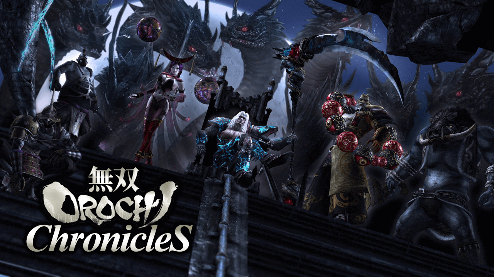
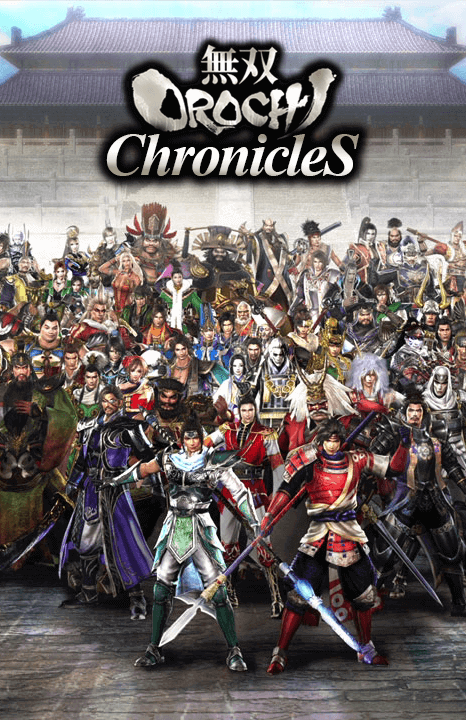
其一 魔王爆诞
其二 欧陆史诗
其三 异界霸者
其一 爪牙跃动
其二 抗争潮起
其三 二将奔走
其四 三强大略
其五 孙吴集结
其六 大魏再兴
其七 四伐蛇魔
其一 乱世不灭
其二 三国联盟
其三 魔王再临
外传 戦国同盟
外传 喧哗日和１
其一 灾厄之前
其二 妖蛇袭来
其三 异界终结
绝望的终章／希望的序章
其一 昨日重现
其二 反击狼烟
其三 人类集结
其四 妖蛇袭来
其五 歼灭妖蛇
其六 喧哗日和２
其一 神镜世界
其二 争乱再起
其三 魔王缘起
其四 九尾封印
前传 故事之始
其一 信长包围网
其二 神军穷追
其三 上神君临
其四 异界黄昏
外传 喧哗日和３
其一 伐神之法
其二 诸神黄昏
其三 三神决战
Edit by 2016-2020 "Na²si (Nanasi)" Yupzhou "MOC - Musou Orochi Chronicles"
20200407 Version 1.4
—— 第一部 ——
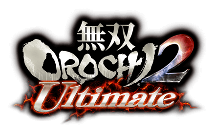 / 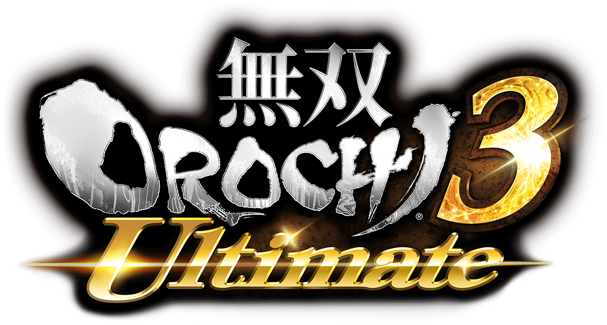 > 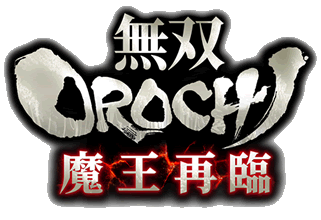
▶其一 魔王爆诞
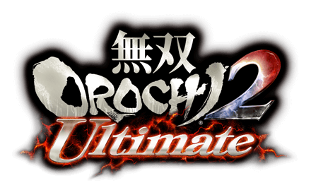 / 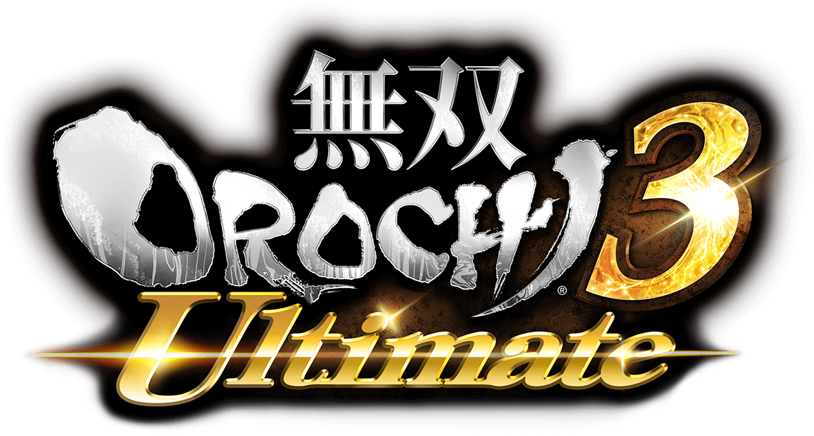 > 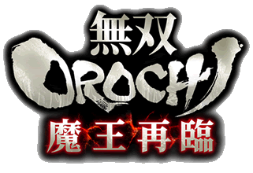
魔物大乱仙界
妖狐編 7章外伝 仙界将救出戦
仙界将们为了驱逐在仙界横行的大群魔物，每天都被迫战斗。有一次，应龙本着「一定要救出所有伙伴」的信条，与伏羲、哪吒以寡兵在邪马台救援了危在旦夕的一队仙界将，引起了九尾的兴趣。九尾试探了他们的力量，判断应龙思维单纯可利用，并且有朝一日一定要收其为手下。伏羲大为不解九尾的用意，并开始讨论起九尾：九尾曾有利用尾巴制造「假人」的能力，但力量已经被天帝封印了，为何又出来作恶？应龙扬言天帝还不够心狠手辣，不应这样放任其大摇大摆地在外面搞事。应龙率军逃出战地，发誓在每况愈下的当下，将利用一切手段救出友军，即使是孤军奋战……
妖狐編 7章#1 仙界防衛戦
魔物终于大举进攻仙界，伏羲、应龙、素戋呜、悟空、哪吒在最前线战斗。在魔物都被击破时，魔物们复活，说下「无论你们怎样攻击，我们都不会消灭……只要有那位大人的力量在」就跑了。应龙感到非常疑惑，「那位大人」到底是谁？这时，一名神秘的女性有件「非常不得了的事」想禀报给他——「那位大人」正是万恶之源，「那位大人」用「神镜」操纵魔物，魔物的出现是仙界的意志。于是，应龙赶去天帝城确认真相。
仙界将们为了驱逐在仙界横行的大群魔物，每天都被迫战斗。有一次，应龙本着「一定要救出所有伙伴」的信条，与伏羲、哪吒以寡兵在邪马台救援了危在旦夕的一队仙界将，引起了九尾的兴趣。九尾试探了他们的力量，判断应龙思维单纯可利用，并且有朝一日一定要收其为手下。伏羲大为不解九尾的用意，并开始讨论起九尾：九尾曾有利用尾巴制造「假人」的能力，但力量已经被天帝封印了，为何又出来作恶？应龙扬言天帝还不够心狠手辣，不应这样放任其大摇大摆地在外面搞事。应龙率军逃出战地，发誓在每况愈下的当下，将利用一切手段救出友军，即使是孤军奋战……
妖狐編 7章#1 仙界防衛戦
魔物终于大举进攻仙界，伏羲、应龙、素戋呜、悟空、哪吒在最前线战斗。在魔物都被击破时，魔物们复活，说下「无论你们怎样攻击，我们都不会消灭……只要有那位大人的力量在」就跑了。应龙感到非常疑惑，「那位大人」到底是谁？这时，一名神秘的女性有件「非常不得了的事」想禀报给他——「那位大人」正是万恶之源，「那位大人」用「神镜」操纵魔物，魔物的出现是仙界的意志。于是，应龙赶去天帝城确认真相。
天帝城之变、远吕智诞生
妖狐編 7章#2 天帝救援戦
魔物讨伐花费了伏羲太多时间，伏羲赶到天帝城时，天帝城已聚集了大量魔物，伏羲为了拯救天帝快马加鞭赶往城内。
应龙潜入天帝城・谒见大厅，只见天帝手执「神镜」，下面是众多魔物阵列在前，应龙本想上前询问，又想不能轻举妄动，只见天帝「神镜」一照，个个失去战意，还进去「神镜」里面。应龙顿时傻了眼，看到「神镜」还有此效，想起那位女性的话，又想起天帝为何不废掉九尾的全部武功……一切都解释得通，天帝正是「万恶之源」……！
应龙快步上前，与天帝争抢「神镜」，应龙指责天帝的不是，天帝却心想，他怎么能凭空污人清白，「神镜」是用来封印魔物的东西呀……！应龙身强力壮，天帝当然招架不住，「神镜」被抢走，天帝也应声倒下。应龙瞪着「神镜」咆哮，欲将之刺穿。然而在其神剑碰到「神镜」的瞬间，「神镜」被刺裂，大量的瘴气不断涌出，笼罩了应龙，应龙蜕变成了蛇魔・远吕智。远吕智向再起的天帝使出满溢瘴气的一击，天帝再次倒下。远吕智受纯粹的破坏欲望驱使，这次瞄准了天帝的头颅，再次挥动巨镰……
伏羲突破外围的魔物，伏羲来到谒见大厅，只见天帝横尸在地，矗立在前的不是别人，正是蛇魔・远吕智。当前的远吕智吸收了所有的瘴气，已是破坏意志的集合体。伏羲带着天帝的遗体出逃，而远吕智将天帝城大肆破坏一番，扬长而去。玉藻前则是趁乱入手了破碎的神镜……
由于天帝死亡，仙界由仙界长・素戋呜代为统治，发动了远吕智讨伐战。远吕智创造了魔王之巢・古志城，魔物聚集到远吕智之处，成为远吕智军的前身。
魔物讨伐花费了伏羲太多时间，伏羲赶到天帝城时，天帝城已聚集了大量魔物，伏羲为了拯救天帝快马加鞭赶往城内。
应龙潜入天帝城・谒见大厅，只见天帝手执「神镜」，下面是众多魔物阵列在前，应龙本想上前询问，又想不能轻举妄动，只见天帝「神镜」一照，个个失去战意，还进去「神镜」里面。应龙顿时傻了眼，看到「神镜」还有此效，想起那位女性的话，又想起天帝为何不废掉九尾的全部武功……一切都解释得通，天帝正是「万恶之源」……！
应龙快步上前，与天帝争抢「神镜」，应龙指责天帝的不是，天帝却心想，他怎么能凭空污人清白，「神镜」是用来封印魔物的东西呀……！应龙身强力壮，天帝当然招架不住，「神镜」被抢走，天帝也应声倒下。应龙瞪着「神镜」咆哮，欲将之刺穿。然而在其神剑碰到「神镜」的瞬间，「神镜」被刺裂，大量的瘴气不断涌出，笼罩了应龙，应龙蜕变成了蛇魔・远吕智。远吕智向再起的天帝使出满溢瘴气的一击，天帝再次倒下。远吕智受纯粹的破坏欲望驱使，这次瞄准了天帝的头颅，再次挥动巨镰……
伏羲突破外围的魔物，伏羲来到谒见大厅，只见天帝横尸在地，矗立在前的不是别人，正是蛇魔・远吕智。当前的远吕智吸收了所有的瘴气，已是破坏意志的集合体。伏羲带着天帝的遗体出逃，而远吕智将天帝城大肆破坏一番，扬长而去。玉藻前则是趁乱入手了破碎的神镜……
由于天帝死亡，仙界由仙界长・素戋呜代为统治，发动了远吕智讨伐战。远吕智创造了魔王之巢・古志城，魔物聚集到远吕智之处，成为远吕智军的前身。
「假人」之战
妖狐編 7章#3 仙界動乱
远吕智割下了五行山大佛之头颅一走了之。在天界出现了更加强大的敌人的当下，天帝因负重伤而无法发挥实力，奈何仙界军也是一盘散沙。由于持久与魔物战斗，素戋呜已动弹不得，讨伐远吕智的重任落到了哪吒和悟空的身上。哪吒和悟空在五行山搜寻远吕智，却发现了仙界叛将，不乏有他们熟悉的人。仙界将发现这些叛将其实是九尾利用尾巴变的「假人」，难怪「一盘散沙」。在分不清敌我的情况下，仙界将和仙界叛将开始了持久战。
远吕智割下了五行山大佛之头颅一走了之。在天界出现了更加强大的敌人的当下，天帝因负重伤而无法发挥实力，奈何仙界军也是一盘散沙。由于持久与魔物战斗，素戋呜已动弹不得，讨伐远吕智的重任落到了哪吒和悟空的身上。哪吒和悟空在五行山搜寻远吕智，却发现了仙界叛将，不乏有他们熟悉的人。仙界将发现这些叛将其实是九尾利用尾巴变的「假人」，难怪「一盘散沙」。在分不清敌我的情况下，仙界将和仙界叛将开始了持久战。
幽禁魔王
妖狐編 7章#4 魔王幽閉戦
由于九尾=玉藻前的「假人」、魔物的阻碍、天帝之死以及「神镜」的丢失，仙界军耗了很长时间才开辟至魔窟・古志城之路，然而魔王已经驾驭了其强大的力量，仙界军多次讨伐未果，连自诩强大的哪吒都未交几合就被远吕智消灭。哪吒为素戋呜所救，进行了全身机械化改造，继续挑战远吕智。又经过长年的讨伐，才成功将远吕智击败。仙界将们合力将之幽禁于五行山，远吕智将未来永劫，接受永无止境的处罚、永远地受人忌讳。幽禁远吕智之后，仙界将着力捉拿妖狐・玉藻前。
由于九尾=玉藻前的「假人」、魔物的阻碍、天帝之死以及「神镜」的丢失，仙界军耗了很长时间才开辟至魔窟・古志城之路，然而魔王已经驾驭了其强大的力量，仙界军多次讨伐未果，连自诩强大的哪吒都未交几合就被远吕智消灭。哪吒为素戋呜所救，进行了全身机械化改造，继续挑战远吕智。又经过长年的讨伐，才成功将远吕智击败。仙界将们合力将之幽禁于五行山，远吕智将未来永劫，接受永无止境的处罚、永远地受人忌讳。幽禁远吕智之后，仙界将着力捉拿妖狐・玉藻前。
封印玉藻前
妖狐編 7章外伝 仙界逃亡戦
玉藻前由于不断作恶，受到仙界将的追捕。但玉藻前擅逃，仙界将无计可施。玉藻前逃亡越久，其妖气越减弱。然而玉藻前以负面情绪做食粮，仍不停作乱。阴阳师・安倍晴明跨越时空来到了久远过去的仙界。晴明自称曾受妖狐帮助，悟空自称受仙界将关押，「自愿」帮助玉藻前逃离仙界，击退众仙界将：伏羲、素戋呜、哪吒、神农、太公望、三藏、女娲。就在玉藻前即将逃出仙界时，晴明和悟空叛变，女娲醒来，神农和伏羲到来，三皇合力将玉藻前封印到「杀生石」中，玉藻前封印作战告一段落。「杀生石」中散发出强烈的恨意，最终被藏匿于火河。
玉藻前由于不断作恶，受到仙界将的追捕。但玉藻前擅逃，仙界将无计可施。玉藻前逃亡越久，其妖气越减弱。然而玉藻前以负面情绪做食粮，仍不停作乱。阴阳师・安倍晴明跨越时空来到了久远过去的仙界。晴明自称曾受妖狐帮助，悟空自称受仙界将关押，「自愿」帮助玉藻前逃离仙界，击退众仙界将：伏羲、素戋呜、哪吒、神农、太公望、三藏、女娲。就在玉藻前即将逃出仙界时，晴明和悟空叛变，女娲醒来，神农和伏羲到来，三皇合力将玉藻前封印到「杀生石」中，玉藻前封印作战告一段落。「杀生石」中散发出强烈的恨意，最终被藏匿于火河。
▶其二 欧陆史诗
泰坦战争的终结、瓜分三界
宙斯用计使奥林匹斯主神・克洛诺斯吐出腹中的儿女，发动泰坦战争，讨伐克洛诺斯。泰坦战争持续十年之久，不决雌雄。宙斯听从普罗米修斯建议，解救独眼巨人。独眼巨人为宙斯、哈迪斯、波塞冬打造神器「雷霆」、「双叉戟」和「三叉戟」，兄弟三人在巨人的协助下推翻克洛诺斯。
宙斯、哈迪斯、波塞冬在普罗米修斯的提议下抓阄，决定了三人对世界的统治权：宙斯得天界・奥林匹斯，是为主神；哈迪斯得冥府，是为冥王；波塞冬得大海，是为海神；而大地经三人协商，决定共治。哈迪斯对此心坏怨恨，终日过着暗无天日的生活，直到那个「神王」的到来……
后来，宙斯收服提丰，给阿瑞斯做了武器；珀尔修斯砍下美杜莎的头颅，献给雅典娜，被雅典娜装到了盾牌中央。
普罗米修斯的预言
普罗米修斯不顾宙斯反对帮助人类，宙斯不相信人类的可能性，惩罚普罗米修斯。普罗米修斯因此对宙斯作出预言：他也将像其父一样，被儿女推翻……
「密米尔之泉」
奥丁喝下「密米尔之泉」水，获得强大的力量和智慧，发现神秘的卢恩符文，作为代价，他失去了一只眼睛。
洛基的宿怨
洛基在与阿斯加德的战争中战败，同伴被奥丁杀害、力量也被夺走，洛基不得不向奥丁屈服。
「诸神黄昏」、神代的终结
命运女神预言奥丁将在「诸神黄昏」中死去。在诸神与巨人不断的冲突中，预言之日「诸神黄昏」越来越近。失去秩序的世界里，阿斯加德神王不愿向命运低头，面对着「彩虹桥」上暴虐的大军：魔狼・芬里尔、毒龙・尼德霍格、巨蟒・耶梦加得、烈焰巨人・苏尔特、霜巨人……芬里尔率先冲向奥丁，将之撕裂。奥丁迎来了预言的死亡，神话时代终结。
跨越「诸神黄昏」，三界交汇
3U 5章外伝 運命を克服せし者
阿斯加德神王・奥丁败于「诸神黄昏」，迎来了预言中的毁灭，步入冥府。眼前就是「苦难之河」，但奥丁不愿向命运屈服，发誓要扭转这样憋屈的命运。奥丁遂在冥府中大闹，击倒怪物、宙斯及其子女的幻影后，逼出一旁看戏的哈迪斯。哈迪斯为了一再确认奥丁有无复活的价值，放出其幻影与冥府军战斗。奥丁看着自己的幻影轻吐着内心丑恶的愿望，为自己感到羞耻，却又无法否认内心的夙愿。奥丁击退冥府之将，接受哈迪斯最后的试炼——与哈迪斯的战斗。哈迪斯在战斗中感受到奥丁的力量与智慧，认为此人大可利用，放他生路，扭转其死亡的命运。同时，哈迪斯给奥丁「世界树」作为伴手礼，「世界树」就吸附在其灵魂上成长。奥丁感受到「世界树」的奇妙的力量，已经在脑海中盘算了巨大又恐怖的计划。阿斯加德、奥林匹斯、冥府，三界在此交汇……
阿斯加德神王・奥丁败于「诸神黄昏」，迎来了预言中的毁灭，步入冥府。眼前就是「苦难之河」，但奥丁不愿向命运屈服，发誓要扭转这样憋屈的命运。奥丁遂在冥府中大闹，击倒怪物、宙斯及其子女的幻影后，逼出一旁看戏的哈迪斯。哈迪斯为了一再确认奥丁有无复活的价值，放出其幻影与冥府军战斗。奥丁看着自己的幻影轻吐着内心丑恶的愿望，为自己感到羞耻，却又无法否认内心的夙愿。奥丁击退冥府之将，接受哈迪斯最后的试炼——与哈迪斯的战斗。哈迪斯在战斗中感受到奥丁的力量与智慧，认为此人大可利用，放他生路，扭转其死亡的命运。同时，哈迪斯给奥丁「世界树」作为伴手礼，「世界树」就吸附在其灵魂上成长。奥丁感受到「世界树」的奇妙的力量，已经在脑海中盘算了巨大又恐怖的计划。阿斯加德、奥林匹斯、冥府，三界在此交汇……
槲寄生之誓
3U 5章外伝 ミストルテインの誓い
奥丁在「诸神黄昏」中存活，奥丁打算在奥林匹斯天界培养「世界树」的力量，并将之吸收，以毁灭所有的世界，避免自己的毁灭。奥丁的气息被地神・盖亚察觉，阿斯加德的洛基也告之奥丁将进攻奥林匹斯。只剩下灵魂的盖亚召唤珀尔修斯，与洛基联手调查。为了消除珀尔修斯的怀疑，洛基分出其「槲寄生」的枝干予之，保证如果珀尔修斯不信任，可将之折断，这样一来洛基的「槲寄生」也会枯萎，洛基的力量也会削弱。于是盖亚、珀尔修斯和洛基在奥林匹斯探索，发现了阿斯加德的密探和怪物。三人击倒之，珀尔修斯和洛基相互承认对方的智勇。正当三人在神殿开总结会，盖亚感到西方有可畏的的气息。珀尔修斯单骑前去，中了陷阱，被关门放幻灵。盖亚找出施术者，被洛基击退。施术者逃走，要向奥丁告发洛基的背叛。而珀尔修斯形势紧急，洛基只好先救之。洛基明示他为了达成某个「愿望」将不择手段，展示了其决心。于是洛基追杀了施术者，盖亚已感受不到可疑的气息，调查暂告一段落。洛基将回阿斯加德缜密地计划，珀尔修斯向槲寄生起誓，将协助洛基，赴汤蹈火，在所不辞。 但后来奥丁还是察觉了洛基和珀尔修斯的关系，命令洛基当着他的面杀害了珀尔修斯。珀尔修斯视死如归，将精神和记忆分散到各处，以灵体的形式游离在各个世界继续调查……
奥丁在「诸神黄昏」中存活，奥丁打算在奥林匹斯天界培养「世界树」的力量，并将之吸收，以毁灭所有的世界，避免自己的毁灭。奥丁的气息被地神・盖亚察觉，阿斯加德的洛基也告之奥丁将进攻奥林匹斯。只剩下灵魂的盖亚召唤珀尔修斯，与洛基联手调查。为了消除珀尔修斯的怀疑，洛基分出其「槲寄生」的枝干予之，保证如果珀尔修斯不信任，可将之折断，这样一来洛基的「槲寄生」也会枯萎，洛基的力量也会削弱。于是盖亚、珀尔修斯和洛基在奥林匹斯探索，发现了阿斯加德的密探和怪物。三人击倒之，珀尔修斯和洛基相互承认对方的智勇。正当三人在神殿开总结会，盖亚感到西方有可畏的的气息。珀尔修斯单骑前去，中了陷阱，被关门放幻灵。盖亚找出施术者，被洛基击退。施术者逃走，要向奥丁告发洛基的背叛。而珀尔修斯形势紧急，洛基只好先救之。洛基明示他为了达成某个「愿望」将不择手段，展示了其决心。于是洛基追杀了施术者，盖亚已感受不到可疑的气息，调查暂告一段落。洛基将回阿斯加德缜密地计划，珀尔修斯向槲寄生起誓，将协助洛基，赴汤蹈火，在所不辞。 但后来奥丁还是察觉了洛基和珀尔修斯的关系，命令洛基当着他的面杀害了珀尔修斯。珀尔修斯视死如归，将精神和记忆分散到各处，以灵体的形式游离在各个世界继续调查……
▶其三 异界霸者
妲己解放魔王、异界鸿蒙初开
ドラマ2 #39(外伝) 五行山脱出戦
仙界将幽禁远吕智、封印玉藻前之后，过了无数光阴。
女妖・妲己厌倦了仙界的生活，对太古传说的蛇魔・远吕智产生兴趣。妲己与众妖魔向幽禁远吕智之地・五行山进发。五行山不仅遍布太公望的眼线，五行山下的门也禁闭不得开。妲己一行击倒了一些仙界将，获得了钥匙，进入五行山。修复完好的五行山佛像下镇座着石化的蛇魔・远吕智，妲己一行击退了守将・孙悟空、三藏后，远吕智石化解除，从长久的沉睡中觉醒。妲己带远吕智逃出五行山，遭到伏羲、女娲、太公望的阻挡。妲己・远吕智击双双退仙界将，这是女妖和魔王复活的华丽的首秀。太公望声称暂且任之逍遥一阵，着手再次讨伐远吕智。妲己跟远吕智打包票，外面的世界更精彩。然而远吕智的目的只有一个——
「目的地就由本王开辟……」
「开辟——本王所愿的世界」
一束青光冲天——为了达成「唯一的目的」，远吕智集结人界的强者，开创了一个不同于仙界与人界、跨越了时间与空间的异世界，并展开了试炼之战——
仙界将幽禁远吕智、封印玉藻前之后，过了无数光阴。
女妖・妲己厌倦了仙界的生活，对太古传说的蛇魔・远吕智产生兴趣。妲己与众妖魔向幽禁远吕智之地・五行山进发。五行山不仅遍布太公望的眼线，五行山下的门也禁闭不得开。妲己一行击倒了一些仙界将，获得了钥匙，进入五行山。修复完好的五行山佛像下镇座着石化的蛇魔・远吕智，妲己一行击退了守将・孙悟空、三藏后，远吕智石化解除，从长久的沉睡中觉醒。妲己带远吕智逃出五行山，遭到伏羲、女娲、太公望的阻挡。妲己・远吕智击双双退仙界将，这是女妖和魔王复活的华丽的首秀。太公望声称暂且任之逍遥一阵，着手再次讨伐远吕智。妲己跟远吕智打包票，外面的世界更精彩。然而远吕智的目的只有一个——
远吕智扫六合卷八荒
無印 遠呂智#1 小田原城の戦い
进行统一天下的最后一着、小田原城攻略的秀吉，与北条军目睹了异变。异形的大军向小田原城袭来，镇座在军中的大将，是苏醒的蛇魔・远吕智、女妖・妲己和暴君・董卓。董卓正是为了在异世界达成「酒池肉林」美梦而加入妖魔。丰臣军和北条军见到异形的军势，跟见到鬼一样，都失了魂。远吕智军所向披靡、以压倒的力量蹂躏北条军，风魔和氏政都败阵，风魔道「魔王虽不能驾驭混沌，但与之兴风作浪也是一兴」，加入到远吕智军来。远吕智顿觉无聊，于是妲己准备用火计。庆次对远吕智强大力量下隐藏的夙愿非常感兴趣，与之以武相交。远吕智碾压之，将之抓捕。宁宁让伏兵出动，远吕智一路碾压，占领粮库。于是妲己火烧小田原城，宁宁出动，被碾压，撤退。秀吉见兵力涣散、粮食被抢，不得已出阵。秀吉要远吕智等报上名号，远吕智、妲己变向之传授了真名，并碾压之。秀吉一窥深不见底的可怕之力，看出它将是即将来临的恐怖时代的暴君，逃出小田原城。远吕智收庆次，让之成为远吕智军大将。
無印 遠呂智#2 成都の戦い
接着，远吕智军西征孤立的蜀都・成都。刘备的助力分布在外，无法立刻召回，处境十分严峻。远吕智首先碾压关兴、张苞，压制了南砦。卧龙・诸葛亮当机立断，要刘备逃跑。爱民如刘备，要带着百姓逃离。诸葛亮下令赵云护卫刘备和百姓，自己留下抵挡异形的大军。远吕智一路碾压，杀进成都内城。诸葛亮关闭城门，与远吕智决一死战，败。妲己见此人可用，将之抓捕。远吕智出城追刘备，赵云破釜沉舟，殿后护主，一夫当关。远吕智碾压之，也将之抓捕。法师施展诸葛亮传授的妖术，混淆了远吕智军的方向感，但被击倒。孟获、祝融应诸葛亮之邀来援，败走。远吕智终追上刘备，捕获之。由此成都陷落，蜀国灭亡。此时传出，各军震动，争夺汉中的蜀军和魏军休战，马超留守定军山，黄忠、关平前往樊城通知关羽，曹操命令张辽出城，进行联吴抗魔的准备。而诸葛亮建议妲己保全刘备，以「吸引其他蜀将，一网打尽」。于是妲己真的挟刘备以令卧龙，卧龙成了蛇之爪牙。
無印 遠呂智#3 川中島の戦い
蜀的灭亡激起了群雄的反抗。信玄、谦信在川中岛布阵，景胜、幸村作前锋，率骑马队、赤备队迎击远吕智军，远吕智碾压之，幸村逃亡，远吕智突入石兵八阵。信玄在八阵中放火，同时谦信、兼续出阵，宣称要「祓除远吕智」，两路进攻远吕智军本阵。远吕智返回阵前，碾压之，突破八阵，碾压信玄而归。诸葛亮意识到群雄可能组成包围网，妲己便要诸葛亮处理此事。诸葛亮化身修罗，站在人类自相残杀的最前线。
無印 遠呂智#4 合肥の戦い
诸葛亮成为镇压人类反抗别动队的大将，率军前往合肥。诸葛亮推测合肥应为孙吴之兵，欲一测孙吴之力。果然，合肥已被孙吴占领，大将竟是孙坚、周瑜。诸葛亮先占领东北角，凌统逃亡。为了阻挡远吕智军进攻，周瑜令张辽、甘宁出动，诸葛亮一方面截断小诗桥，一方面抵挡了二将进攻，甘宁逃亡，张辽快马回营告知曹操大事不好。孙策到来，周瑜认为必有转机，与孙坚出阵，皆被诸葛亮用计击破。孙坚为保全将士性命沦为阶下囚，孙吴沦为远吕智的属国，吴军从此成为远吕智军的重要战力。
無印 遠呂智#5 江戸城の戦い
人类的反抗愈演愈烈，远吕智盯上了江户城的家康，妲己率孙策攻之。远吕智军首先包围了城池，独眼龙・政宗从奥州赶来，在城外支援家康，被孙策打倒。孙策久攻城池不下，发动火计。家康早有预料，把火灭了。于是孙策强攻城门，江户城开门。政宗用伏兵和增援反攻，失败。孙策进入天守阁，家康遣稻姬突袭远吕智军本阵，孙策抢先一步回营，阻止了奇袭。政宗见孙策如此猛将，认识到自己和家康的天下之器尚且不足。家康无计可施，舍身突击。孙策再次进入天守，击破政宗与家康，江户城陷落，家康向远吕智军低头，德川也成为远吕智的属国。政宗慕名而来，尊远吕智为英雄。远吕智对人类的兴趣再上一层。
無印 遠呂智#6 夷陵の戦い
于是远吕智再次出动。这次他盯上了三国最后的希望、乱世之奸雄・曹操，因此军中人类俘虏无人敢相告。于是远吕智与孙权率兵出征，途径夷陵，与曹操亲率的魏军遭遇。远吕智炮击前线部队，曹操命前线退却至八阵，远吕智军因此占领了联营。远吕智进入八阵，碾压典韦、许褚、夏侯惇、夏侯渊，四人逃亡。面对未知的兵器，曹操心生一计，遣满宠放火烧大炮，大炮爆炸，曹操因此火烧联营七百里。趁妖魔不备，曹操遣剩余的兵力奇袭远吕智军本阵，被远吕智成功阻止。然而到处不见曹操的身影，孙权判断八阵必有蹊跷，远吕智于是再次进入八阵，果然发现了数位法师，碾压之。曹操现身，大量伏兵出现，与远吕智决一死战。远吕智照样碾压，曹操倒地，霸道被斩断。典韦回到战场，搬离了曹操的「遗体」。政宗见远吕智击败了古代的奸雄，对其敬佩更上一层，肯定其天下人之器。然而庆次告之，远吕智击败曹魏仍没有露出笑容——其目光，不在天下……
無印 遠呂智#7 三方ヶ原の戦い
远吕智以为自己已无人能敌时，家康来报，人界的魔王・信长布阵于三方原。于是远吕智、家康率军攻之。这是远吕智向人类大展神威的最终战。织田军前锋以为能敌，结果溃败，于是织田军闭门不出。妲己便心生一计，攻其粮库。路上，妲己见织田军以狼烟传递消息，知其必趁远吕智军攻粮库之时奇袭本阵，于是带上法师进军。光秀打开军粮库迎敌，织田军果然趁此奇袭本阵，妲己召唤幻影兵抵挡，同时攻下粮库，施展妖术，将本阵的兵马转移到粮库，并瞬移一些妖魔到奇袭部队前，攻势一转，织田军大混乱，信长被迫出阵。妲己遣铁炮队攻之，远吕智亲上前线，碾压之。信长、浓姬、兰丸走为上策，誓要在异世界刮起风雨。
無印 遠呂智#8 火河の戦い
远吕智横扫人界众势力，露出了笑容。因为还有残党在外，而现在已将人类逼至绝境，人类的潜力才正要发挥，这样他才能遇上真正的强者。然而这场「宴会」却有不速之客来访，左慈、张角联合天界三仙・伏羲、女娲、太公望捉拿远吕智。远吕智不高兴，又不想被捉拿，只好稍稍做出抵抗。站场上施展了大量妖术：张角召唤幻影兵；太公望使妖魔陷入混乱自相残杀；左慈使出分身；太公望旋转船身，大摆「卍」字，是为「万仙阵」；伏羲召唤伪・远吕智和伪・妲己。远吕智和妲己皆破除妖术，逼得仙界将出阵。女娲使出落雷、伏羲召唤「上古兵器」，但在远吕智面前不过是雕虫小技。远吕智将仙界的猛将碾压，郁郁而归。三国时代的鬼神・吕布听说有如此强者，也归于其下，期待能碰上更多的、更有趣的「猎物」。
远吕智扫六合、卷八荒，却仍在期待无双的强者。庆次一语道出远吕智的愿望——「寻找结束己命的强者」。远吕智寻找强者的旅途暂告一段落，而且，庆次、孙策、家康、诸葛亮、吕布、政宗——远吕智身旁已经汇集了能超越他的强者……
进行统一天下的最后一着、小田原城攻略的秀吉，与北条军目睹了异变。异形的大军向小田原城袭来，镇座在军中的大将，是苏醒的蛇魔・远吕智、女妖・妲己和暴君・董卓。董卓正是为了在异世界达成「酒池肉林」美梦而加入妖魔。丰臣军和北条军见到异形的军势，跟见到鬼一样，都失了魂。远吕智军所向披靡、以压倒的力量蹂躏北条军，风魔和氏政都败阵，风魔道「魔王虽不能驾驭混沌，但与之兴风作浪也是一兴」，加入到远吕智军来。远吕智顿觉无聊，于是妲己准备用火计。庆次对远吕智强大力量下隐藏的夙愿非常感兴趣，与之以武相交。远吕智碾压之，将之抓捕。宁宁让伏兵出动，远吕智一路碾压，占领粮库。于是妲己火烧小田原城，宁宁出动，被碾压，撤退。秀吉见兵力涣散、粮食被抢，不得已出阵。秀吉要远吕智等报上名号，远吕智、妲己变向之传授了真名，并碾压之。秀吉一窥深不见底的可怕之力，看出它将是即将来临的恐怖时代的暴君，逃出小田原城。远吕智收庆次，让之成为远吕智军大将。
無印 遠呂智#2 成都の戦い
接着，远吕智军西征孤立的蜀都・成都。刘备的助力分布在外，无法立刻召回，处境十分严峻。远吕智首先碾压关兴、张苞，压制了南砦。卧龙・诸葛亮当机立断，要刘备逃跑。爱民如刘备，要带着百姓逃离。诸葛亮下令赵云护卫刘备和百姓，自己留下抵挡异形的大军。远吕智一路碾压，杀进成都内城。诸葛亮关闭城门，与远吕智决一死战，败。妲己见此人可用，将之抓捕。远吕智出城追刘备，赵云破釜沉舟，殿后护主，一夫当关。远吕智碾压之，也将之抓捕。法师施展诸葛亮传授的妖术，混淆了远吕智军的方向感，但被击倒。孟获、祝融应诸葛亮之邀来援，败走。远吕智终追上刘备，捕获之。由此成都陷落，蜀国灭亡。此时传出，各军震动，争夺汉中的蜀军和魏军休战，马超留守定军山，黄忠、关平前往樊城通知关羽，曹操命令张辽出城，进行联吴抗魔的准备。而诸葛亮建议妲己保全刘备，以「吸引其他蜀将，一网打尽」。于是妲己真的挟刘备以令卧龙，卧龙成了蛇之爪牙。
無印 遠呂智#3 川中島の戦い
蜀的灭亡激起了群雄的反抗。信玄、谦信在川中岛布阵，景胜、幸村作前锋，率骑马队、赤备队迎击远吕智军，远吕智碾压之，幸村逃亡，远吕智突入石兵八阵。信玄在八阵中放火，同时谦信、兼续出阵，宣称要「祓除远吕智」，两路进攻远吕智军本阵。远吕智返回阵前，碾压之，突破八阵，碾压信玄而归。诸葛亮意识到群雄可能组成包围网，妲己便要诸葛亮处理此事。诸葛亮化身修罗，站在人类自相残杀的最前线。
無印 遠呂智#4 合肥の戦い
诸葛亮成为镇压人类反抗别动队的大将，率军前往合肥。诸葛亮推测合肥应为孙吴之兵，欲一测孙吴之力。果然，合肥已被孙吴占领，大将竟是孙坚、周瑜。诸葛亮先占领东北角，凌统逃亡。为了阻挡远吕智军进攻，周瑜令张辽、甘宁出动，诸葛亮一方面截断小诗桥，一方面抵挡了二将进攻，甘宁逃亡，张辽快马回营告知曹操大事不好。孙策到来，周瑜认为必有转机，与孙坚出阵，皆被诸葛亮用计击破。孙坚为保全将士性命沦为阶下囚，孙吴沦为远吕智的属国，吴军从此成为远吕智军的重要战力。
無印 遠呂智#5 江戸城の戦い
人类的反抗愈演愈烈，远吕智盯上了江户城的家康，妲己率孙策攻之。远吕智军首先包围了城池，独眼龙・政宗从奥州赶来，在城外支援家康，被孙策打倒。孙策久攻城池不下，发动火计。家康早有预料，把火灭了。于是孙策强攻城门，江户城开门。政宗用伏兵和增援反攻，失败。孙策进入天守阁，家康遣稻姬突袭远吕智军本阵，孙策抢先一步回营，阻止了奇袭。政宗见孙策如此猛将，认识到自己和家康的天下之器尚且不足。家康无计可施，舍身突击。孙策再次进入天守，击破政宗与家康，江户城陷落，家康向远吕智军低头，德川也成为远吕智的属国。政宗慕名而来，尊远吕智为英雄。远吕智对人类的兴趣再上一层。
無印 遠呂智#6 夷陵の戦い
于是远吕智再次出动。这次他盯上了三国最后的希望、乱世之奸雄・曹操，因此军中人类俘虏无人敢相告。于是远吕智与孙权率兵出征，途径夷陵，与曹操亲率的魏军遭遇。远吕智炮击前线部队，曹操命前线退却至八阵，远吕智军因此占领了联营。远吕智进入八阵，碾压典韦、许褚、夏侯惇、夏侯渊，四人逃亡。面对未知的兵器，曹操心生一计，遣满宠放火烧大炮，大炮爆炸，曹操因此火烧联营七百里。趁妖魔不备，曹操遣剩余的兵力奇袭远吕智军本阵，被远吕智成功阻止。然而到处不见曹操的身影，孙权判断八阵必有蹊跷，远吕智于是再次进入八阵，果然发现了数位法师，碾压之。曹操现身，大量伏兵出现，与远吕智决一死战。远吕智照样碾压，曹操倒地，霸道被斩断。典韦回到战场，搬离了曹操的「遗体」。政宗见远吕智击败了古代的奸雄，对其敬佩更上一层，肯定其天下人之器。然而庆次告之，远吕智击败曹魏仍没有露出笑容——其目光，不在天下……
無印 遠呂智#7 三方ヶ原の戦い
远吕智以为自己已无人能敌时，家康来报，人界的魔王・信长布阵于三方原。于是远吕智、家康率军攻之。这是远吕智向人类大展神威的最终战。织田军前锋以为能敌，结果溃败，于是织田军闭门不出。妲己便心生一计，攻其粮库。路上，妲己见织田军以狼烟传递消息，知其必趁远吕智军攻粮库之时奇袭本阵，于是带上法师进军。光秀打开军粮库迎敌，织田军果然趁此奇袭本阵，妲己召唤幻影兵抵挡，同时攻下粮库，施展妖术，将本阵的兵马转移到粮库，并瞬移一些妖魔到奇袭部队前，攻势一转，织田军大混乱，信长被迫出阵。妲己遣铁炮队攻之，远吕智亲上前线，碾压之。信长、浓姬、兰丸走为上策，誓要在异世界刮起风雨。
無印 遠呂智#8 火河の戦い
远吕智横扫人界众势力，露出了笑容。因为还有残党在外，而现在已将人类逼至绝境，人类的潜力才正要发挥，这样他才能遇上真正的强者。然而这场「宴会」却有不速之客来访，左慈、张角联合天界三仙・伏羲、女娲、太公望捉拿远吕智。远吕智不高兴，又不想被捉拿，只好稍稍做出抵抗。站场上施展了大量妖术：张角召唤幻影兵；太公望使妖魔陷入混乱自相残杀；左慈使出分身；太公望旋转船身，大摆「卍」字，是为「万仙阵」；伏羲召唤伪・远吕智和伪・妲己。远吕智和妲己皆破除妖术，逼得仙界将出阵。女娲使出落雷、伏羲召唤「上古兵器」，但在远吕智面前不过是雕虫小技。远吕智将仙界的猛将碾压，郁郁而归。三国时代的鬼神・吕布听说有如此强者，也归于其下，期待能碰上更多的、更有趣的「猎物」。
远吕智扫六合、卷八荒，却仍在期待无双的强者。庆次一语道出远吕智的愿望——「寻找结束己命的强者」。远吕智寻找强者的旅途暂告一段落，而且，庆次、孙策、家康、诸葛亮、吕布、政宗——远吕智身旁已经汇集了能超越他的强者……
蛇之爪牙
关羽和张飞被招降，以保护刘备；接手曹魏的曹丕，与远吕智缔结同盟，妲己不断命其驱逐山贼、镇压叛军，在实际上收编了魏军；远吕智与孙策约定，每完成一次镇压，就解放一名孙吴的俘虏；妲己放出「曹操其实没死，而且在本能寺」的流言，吸引不屈的信长。远吕智的亲征结束后，蛇之爪牙将大展其獠牙。
—— 第二部 ——
▶其一 爪牙跃动
残余势力之挣扎
無印 魏#1 杭瀬川の戦い
妲己率曹丕、三成、张辽率军驱逐杭濑川的山贼・黄盖、许褚。三成的策略是魏军兵分两路，一路西进，一路与徐晃汇合，自己则南进。黄巾党・张角结束火河战后，不停逃亡，但是到处都是远吕智军，已经失了魂。曹丕破之，黄盖派出一些人马吸引曹丕进军，曹丕将之击破。曹丕发觉自己做了三成的诱饵，三成瞄准敌军本阵出动，发现敌军也有此意。南砦的敌军已经吸引了魏军大部队，准备声东击西，强攻远吕智军本阵。三成便进攻南砦，阻止强袭，并突进敌军本阵。而曹丕遭遇乱入游击的夏侯渊，谎称「与妖魔同伍乃时势所趋」。曹丕来到敌军阵前，是饿肚子的许褚在守门，许褚饿得连魏王的世子都认不出来，只想着快些吃饭。曹丕击败之，赏他饭吃。于是山贼本阵大开，曹丕才发现山贼就是黄盖，与三成破之，但是留他一条生路。
無印 戦国#1 荊州の戦い
三成率曹仁在荆州襄阳包围了关平、黄忠，欲集结所有反远吕智势力的信长、光秀、秀吉挺身而出，将关平救于刀下，信长破曹仁、三成，救出黄忠，并击退赶来的曹丕。信长质问三成和曹丕为何屈于远吕智，没有得到回答。信长收关平、黄忠，黄忠说信长很像乱世之奸雄・曹操，并提到了「曹操在本能寺」流言。
妲己率曹丕、三成、张辽率军驱逐杭濑川的山贼・黄盖、许褚。三成的策略是魏军兵分两路，一路西进，一路与徐晃汇合，自己则南进。黄巾党・张角结束火河战后，不停逃亡，但是到处都是远吕智军，已经失了魂。曹丕破之，黄盖派出一些人马吸引曹丕进军，曹丕将之击破。曹丕发觉自己做了三成的诱饵，三成瞄准敌军本阵出动，发现敌军也有此意。南砦的敌军已经吸引了魏军大部队，准备声东击西，强攻远吕智军本阵。三成便进攻南砦，阻止强袭，并突进敌军本阵。而曹丕遭遇乱入游击的夏侯渊，谎称「与妖魔同伍乃时势所趋」。曹丕来到敌军阵前，是饿肚子的许褚在守门，许褚饿得连魏王的世子都认不出来，只想着快些吃饭。曹丕击败之，赏他饭吃。于是山贼本阵大开，曹丕才发现山贼就是黄盖，与三成破之，但是留他一条生路。
無印 戦国#1 荊州の戦い
三成率曹仁在荆州襄阳包围了关平、黄忠，欲集结所有反远吕智势力的信长、光秀、秀吉挺身而出，将关平救于刀下，信长破曹仁、三成，救出黄忠，并击退赶来的曹丕。信长质问三成和曹丕为何屈于远吕智，没有得到回答。信长收关平、黄忠，黄忠说信长很像乱世之奸雄・曹操，并提到了「曹操在本能寺」流言。
霸道的血脉
無印 戦国#2 本能寺の戦い
信长、夏侯惇都为了一见曹操，进军本能寺。信长到达时，本能寺已被远吕智军包围，黄忠急着救曹操，然而到达本能寺发现，曹操乃妲己伪装。妲己火烧本能寺，遣周瑜攻之，信长击退之，派泷川一益灭火。尔后妲己遣孙尚香攻之，被击破、俘虏。这时夏侯惇到达，与信长汇合。夏侯惇发现信长和曹操是一类人，或许无法相容，离开去别处搜寻曹操。信玄听闻信长在此也来，信玄、信长确定站在同一战线后互相道别。战后，信长释放了孙尚香。
無印 魏#2 天水の戦い
为了再次权衡霸道之后继・曹丕的器量，信长率先遣队袭击远吕智的无谓之地・天水。妲己知道阵中没有信长的人，但是信长曾见过曹丕，于是率曹丕、三成阻之。曹丕再战黄盖。尔后，信长本队、妲己援军诸葛亮到达，曹丕攻入信长本阵，信长与曹丕互相端详，满足的信长收兵撤退。众人见信长，仿佛见到霸王・曹操。妲己让三成监视曹丕，然而三成和曹丕却是同类……
無印 呉#1 定軍山の戦い
为了让远吕智返还同伴，孙策、孙权、家康前往定军山镇压持续抵抗的蜀国残党。定军山上驻扎着马超、月英、姜维、张苞、兰丸等，孙策将之一扫，马超、姜维、张苞出逃，月英被俘虏。受「匿名人士」的委托，张苞与星彩汇合，将要执行某项「任务」。孙策欲放走兰丸，兰丸为孙策率直的人格打动，臣服于孙策。
信长、夏侯惇都为了一见曹操，进军本能寺。信长到达时，本能寺已被远吕智军包围，黄忠急着救曹操，然而到达本能寺发现，曹操乃妲己伪装。妲己火烧本能寺，遣周瑜攻之，信长击退之，派泷川一益灭火。尔后妲己遣孙尚香攻之，被击破、俘虏。这时夏侯惇到达，与信长汇合。夏侯惇发现信长和曹操是一类人，或许无法相容，离开去别处搜寻曹操。信玄听闻信长在此也来，信玄、信长确定站在同一战线后互相道别。战后，信长释放了孙尚香。
無印 魏#2 天水の戦い
为了再次权衡霸道之后继・曹丕的器量，信长率先遣队袭击远吕智的无谓之地・天水。妲己知道阵中没有信长的人，但是信长曾见过曹丕，于是率曹丕、三成阻之。曹丕再战黄盖。尔后，信长本队、妲己援军诸葛亮到达，曹丕攻入信长本阵，信长与曹丕互相端详，满足的信长收兵撤退。众人见信长，仿佛见到霸王・曹操。妲己让三成监视曹丕，然而三成和曹丕却是同类……
無印 呉#1 定軍山の戦い
为了让远吕智返还同伴，孙策、孙权、家康前往定军山镇压持续抵抗的蜀国残党。定军山上驻扎着马超、月英、姜维、张苞、兰丸等，孙策将之一扫，马超、姜维、张苞出逃，月英被俘虏。受「匿名人士」的委托，张苞与星彩汇合，将要执行某项「任务」。孙策欲放走兰丸，兰丸为孙策率直的人格打动，臣服于孙策。
▶其二 抗争潮起
上田城越狱
ドラマ2 #32 白帝城合戦
由于蛇的爪牙・曹丕、三成、孙策、家康的活跃，马超被镇压，信长也不再出现，没有反乱发生的日子持续了一段时间，妲己向远吕智提议在白帝城进行模拟战。对战双方，一边是远吕智、庆次、政宗、孙策、家康，另一边是妲己、曹丕、三成、周瑜、董卓、张辽、蛟、诸葛亮。诸葛亮貌似在背后策划着什么。远吕智消灭了蛟（后来被复活）。远吕智和妲己在白帝城一决雌雄，是远吕智压倒的胜利。
無印 蜀#1 上田城の戦い
传令传来上田城被入侵的消息，反抗远吕智之潮开始激荡。由于孙策的活跃，周瑜被解放，编入孙策军。风魔预见混沌之世的到来，离开远吕智军。
由于蛇的爪牙・曹丕、三成、孙策、家康的活跃，马超被镇压，信长也不再出现，没有反乱发生的日子持续了一段时间，妲己向远吕智提议在白帝城进行模拟战。对战双方，一边是远吕智、庆次、政宗、孙策、家康，另一边是妲己、曹丕、三成、周瑜、董卓、张辽、蛟、诸葛亮。诸葛亮貌似在背后策划着什么。远吕智消灭了蛟（后来被复活）。远吕智和妲己在白帝城一决雌雄，是远吕智压倒的胜利。
無印 蜀#1 上田城の戦い
传令传来上田城被入侵的消息，反抗远吕智之潮开始激荡。由于孙策的活跃，周瑜被解放，编入孙策军。风魔预见混沌之世的到来，离开远吕智军。
赵云重获自由
無印 蜀#1 上田城の戦い
受「匿名人士」的委托，左慈、星彩、义弘、张苞看准远吕智军进行模拟战的同时，协助赵云越狱，并告诉赵云大德・刘备未死，只是下落不明。赵云向西出逃，遇见同样是刚越狱的訚千代，是义弘的熟识。守将・曹仁发兵阻止，被左慈阻挠。赵云率军突破张郃，甩开了追击。訚千代加入赵云军。
無印 蜀#2 長谷堂の戦い
逃脱路上，赵云一行在长谷堂遇见了远吕智军的囚犯输送队，押送着月英。赵云救出路过救援月英的孙市，北上救出月英。在一旁看戏的妲己出现，遣伏兵・三成包围赵云、月英一行。赵云率军突破包围，又遭到伏兵和增援。正确预读敌军动向，一波波发动伏兵……被月英读出是诸葛亮之计。关索、庞德伏兵依次上阵，最后，诸葛亮果然现身。赵云一行将之悉数击破，诸葛亮留下一句「时候未到……」就跑了，令赵云一行感到非常困惑，月英认为诸葛亮必有隐情。孙市告诉赵云曾听妲己说「刘备在成都」，于是赵云一行离开长谷堂，朝成都进发。
無印 魏#2外伝 南中侵攻戦
张郃和大乔更早到达南中，阻挡赵云一行，赵云即使得到姜维支援，也无法抵消兵力差，义弘用「钓野伏」之计，赵云和自己做诱饵引出敌军，用伏兵・姜维使敌军大吃一惊。赵云一行击破大乔、张郃，离开南中。
受「匿名人士」的委托，左慈、星彩、义弘、张苞看准远吕智军进行模拟战的同时，协助赵云越狱，并告诉赵云大德・刘备未死，只是下落不明。赵云向西出逃，遇见同样是刚越狱的訚千代，是义弘的熟识。守将・曹仁发兵阻止，被左慈阻挠。赵云率军突破张郃，甩开了追击。訚千代加入赵云军。
無印 蜀#2 長谷堂の戦い
逃脱路上，赵云一行在长谷堂遇见了远吕智军的囚犯输送队，押送着月英。赵云救出路过救援月英的孙市，北上救出月英。在一旁看戏的妲己出现，遣伏兵・三成包围赵云、月英一行。赵云率军突破包围，又遭到伏兵和增援。正确预读敌军动向，一波波发动伏兵……被月英读出是诸葛亮之计。关索、庞德伏兵依次上阵，最后，诸葛亮果然现身。赵云一行将之悉数击破，诸葛亮留下一句「时候未到……」就跑了，令赵云一行感到非常困惑，月英认为诸葛亮必有隐情。孙市告诉赵云曾听妲己说「刘备在成都」，于是赵云一行离开长谷堂，朝成都进发。
無印 魏#2外伝 南中侵攻戦
张郃和大乔更早到达南中，阻挡赵云一行，赵云即使得到姜维支援，也无法抵消兵力差，义弘用「钓野伏」之计，赵云和自己做诱饵引出敌军，用伏兵・姜维使敌军大吃一惊。赵云一行击破大乔、张郃，离开南中。
信长招贤纳士
無印 戦国#2外伝 川中島の戦い
现时逐渐壮大的势力，有赵云、陆逊、夏侯、信玄、谦信、信长，他们为了对抗远吕智，或与其他势力合作，或将之吸收。信长也开始吸收能人。远吕智军司马懿在川中岛驰骋，肆意攻击平民，西凉之锦・马超打算将平民引到善光寺避难。黄忠向信长建言，马超能人也，信长遂助其保护平民。由于马超在此，而黄忠在信长处，司马懿早有料到信长的来临。信长一行击退了董卓和家康的夹击，护送平民入八阵，司马懿运用诸葛亮之策，在八阵中发动伏兵。信长一行击破伏兵，安顿好平民，最后击退了司马懿。马超受信长的大义感动，加入信长。
無印 戦国#3 九州の戦い
信长辗转来到了被四个小势力割据的九州，欲吸收此地的小势力。此地有黄巾党・张角、出云的游女・阿国、二乔之一的小乔、名军师・左近。听闻信长要并吞他们，张角来势汹汹，要对信长降下天罚。左近本想出谋划策，但黄巾党不管他，于是信长首先击败张角。阿国也止不住找男人，坏了左近的「钓野伏」之策。小乔见信长军近，以为是好时机，令全军突击，左近无语，信长吐槽「急着去死吗」。谦信的代理・兼续听闻反远吕智势力相争，来判断信长是否想武力扩大势力。兼续发现左近游走于这些势力之间，却无一人能活用其战略。信长破阿国、小乔及其义勇兵，见已无敌军，率军进攻左近，门前出现伏兵，中了「钓野伏」之计。但信长还是将左近击败，收纳众小势力。左近念叨没人听他的所以才会输，于是信长欲给他大展其才的机会。光秀建议信长考虑与信玄、谦信联合，然而信长另有妙计……
现时逐渐壮大的势力，有赵云、陆逊、夏侯、信玄、谦信、信长，他们为了对抗远吕智，或与其他势力合作，或将之吸收。信长也开始吸收能人。远吕智军司马懿在川中岛驰骋，肆意攻击平民，西凉之锦・马超打算将平民引到善光寺避难。黄忠向信长建言，马超能人也，信长遂助其保护平民。由于马超在此，而黄忠在信长处，司马懿早有料到信长的来临。信长一行击退了董卓和家康的夹击，护送平民入八阵，司马懿运用诸葛亮之策，在八阵中发动伏兵。信长一行击破伏兵，安顿好平民，最后击退了司马懿。马超受信长的大义感动，加入信长。
無印 戦国#3 九州の戦い
信长辗转来到了被四个小势力割据的九州，欲吸收此地的小势力。此地有黄巾党・张角、出云的游女・阿国、二乔之一的小乔、名军师・左近。听闻信长要并吞他们，张角来势汹汹，要对信长降下天罚。左近本想出谋划策，但黄巾党不管他，于是信长首先击败张角。阿国也止不住找男人，坏了左近的「钓野伏」之策。小乔见信长军近，以为是好时机，令全军突击，左近无语，信长吐槽「急着去死吗」。谦信的代理・兼续听闻反远吕智势力相争，来判断信长是否想武力扩大势力。兼续发现左近游走于这些势力之间，却无一人能活用其战略。信长破阿国、小乔及其义勇兵，见已无敌军，率军进攻左近，门前出现伏兵，中了「钓野伏」之计。但信长还是将左近击败，收纳众小势力。左近念叨没人听他的所以才会输，于是信长欲给他大展其才的机会。光秀建议信长考虑与信玄、谦信联合，然而信长另有妙计……
左近出奔
無印 戦国#4 潼関の戦い
游走于各势力的左近，通晓各军的秘密，包括孙坚囚禁之地。信长深知小霸王・孙策是想做就能做到的能人，如果能将之离反，不仅能削弱远吕智军，还将成为反远吕智的主力。因此信长派遣左近前去孙策处，但由于信长明目张胆的扩张已被远吕智军盯上，董卓率关羽、张飞、张辽大军在潼关围困织田军，欲在此战根灭信长。信长击破先锋・关羽、张飞，再击破数名董卓军将领，引出董卓，让左近趁此逃离，同时阻挡董卓和张辽。于是信长破之，还击退乱入的风魔，左近也成功脱离潼关，前往孙策所在的方向……
游走于各势力的左近，通晓各军的秘密，包括孙坚囚禁之地。信长深知小霸王・孙策是想做就能做到的能人，如果能将之离反，不仅能削弱远吕智军，还将成为反远吕智的主力。因此信长派遣左近前去孙策处，但由于信长明目张胆的扩张已被远吕智军盯上，董卓率关羽、张飞、张辽大军在潼关围困织田军，欲在此战根灭信长。信长击破先锋・关羽、张飞，再击破数名董卓军将领，引出董卓，让左近趁此逃离，同时阻挡董卓和张辽。于是信长破之，还击退乱入的风魔，左近也成功脱离潼关，前往孙策所在的方向……
▶其三 二将奔走
信长收陆逊、试孙策
無印 呉#2 長坂の戦い
依妲己的策略，远吕智命令孙策继续镇压长坂的叛乱，以测试赵云越狱、信长出动后孙策的忠诚。孙吴的残党・陆逊以及左近在长坂布阵，妲己监视孙策一番后，见无乱心，为策划阴谋离开。孙策一路北进，陆逊施展伏兵，凌统登场，而周瑜也有应对，遣游击队阻挡；陆逊派出工兵，打算施展火计，周瑜遣迎击队应对；左近再派工兵，周瑜建议击退左近，于是孙策攻之，左近见识了孙策的热情，肯定了信长的判断。陆逊使出最后之策，派出甘宁奇袭，被孙策阻止。最后，孙策破陆逊，得胜而归，太史慈被解放。
無印 戦国#3外伝 下邳の戦い
陆逊与甘宁、凌统分道扬镳，远吕智没有放过他，陆逊遭受曹仁、张辽、徐晃追击，被逼至下邳。信长为此亲自出兵，曹仁见状发兵攻其本阵，光秀、秀吉阻挡徐晃。信长来到下邳城北，受张辽包围，信长破之，救援陆逊，一路冲杀，奇袭曹仁，得胜而归。
無印 呉#2外伝 常山の戦い
信长为一再确认孙策的能耐，派光秀、黄忠、小乔抢夺孙策在常山的军粮库，而此时孙策得到妲己要他镇压小谷城的命令，正在为此做准备。孙策不得已只好为夺回粮库出击，并成功夺回粮库，孙策派出输送兵运输粮食。风魔乱入，派出风魔众阻挠，半藏也派出伊贺众对付。周瑜与小乔重逢，但小乔不想与夫君战斗，撤退了。粮食被士兵吃光，吴军恢复元气，孙策便率军进攻光秀。光秀见到兰丸在孙策阵中，颇为震惊，兰丸告之，孙策能人也。光秀与之一战，知兰丸所言不假。孙策击败之，朝下个地点进军。 而妲己，在执行叛军自相残杀的阴谋……
依妲己的策略，远吕智命令孙策继续镇压长坂的叛乱，以测试赵云越狱、信长出动后孙策的忠诚。孙吴的残党・陆逊以及左近在长坂布阵，妲己监视孙策一番后，见无乱心，为策划阴谋离开。孙策一路北进，陆逊施展伏兵，凌统登场，而周瑜也有应对，遣游击队阻挡；陆逊派出工兵，打算施展火计，周瑜遣迎击队应对；左近再派工兵，周瑜建议击退左近，于是孙策攻之，左近见识了孙策的热情，肯定了信长的判断。陆逊使出最后之策，派出甘宁奇袭，被孙策阻止。最后，孙策破陆逊，得胜而归，太史慈被解放。
無印 戦国#3外伝 下邳の戦い
陆逊与甘宁、凌统分道扬镳，远吕智没有放过他，陆逊遭受曹仁、张辽、徐晃追击，被逼至下邳。信长为此亲自出兵，曹仁见状发兵攻其本阵，光秀、秀吉阻挡徐晃。信长来到下邳城北，受张辽包围，信长破之，救援陆逊，一路冲杀，奇袭曹仁，得胜而归。
無印 呉#2外伝 常山の戦い
信长为一再确认孙策的能耐，派光秀、黄忠、小乔抢夺孙策在常山的军粮库，而此时孙策得到妲己要他镇压小谷城的命令，正在为此做准备。孙策不得已只好为夺回粮库出击，并成功夺回粮库，孙策派出输送兵运输粮食。风魔乱入，派出风魔众阻挠，半藏也派出伊贺众对付。周瑜与小乔重逢，但小乔不想与夫君战斗，撤退了。粮食被士兵吃光，吴军恢复元气，孙策便率军进攻光秀。光秀见到兰丸在孙策阵中，颇为震惊，兰丸告之，孙策能人也。光秀与之一战，知兰丸所言不假。孙策击败之，朝下个地点进军。 而妲己，在执行叛军自相残杀的阴谋……
成都的陷阱
無印 蜀#3 成都の戦い
听信妲己「刘备在成都」的情报，赵云一行来到蜀都・成都。令赵云一行诧异的是，幸村以为城内的人是被远吕智复活的「亡魂」，正猛攻成都城。赵云为了拯救「刘备」，避过远吕智的耳目，杀进城中，发现魏延也听信流言来到成都，赵云从其口中得知刘备不在，与中计的幸村大战，幸村被赵云精湛的枪法打动，发现自己中计。而袁绍仍以为这些人都是「亡魂」，赵云也打不醒他。妲己本想座山观虎斗，无奈幸村被策反、袁绍被击退，亲自上阵，被赵云击败，逃往南中。赵云收魏延、幸村。
但是，袁绍逃出没多久就被诸葛亮抓了……
听信妲己「刘备在成都」的情报，赵云一行来到蜀都・成都。令赵云一行诧异的是，幸村以为城内的人是被远吕智复活的「亡魂」，正猛攻成都城。赵云为了拯救「刘备」，避过远吕智的耳目，杀进城中，发现魏延也听信流言来到成都，赵云从其口中得知刘备不在，与中计的幸村大战，幸村被赵云精湛的枪法打动，发现自己中计。而袁绍仍以为这些人都是「亡魂」，赵云也打不醒他。妲己本想座山观虎斗，无奈幸村被策反、袁绍被击退，亲自上阵，被赵云击败，逃往南中。赵云收魏延、幸村。
但是，袁绍逃出没多久就被诸葛亮抓了……
南中攻防战
無印 蜀#4 南中の戦い
赵云一行兵分两路，赵云、幸村、訚千代等追击妲己，再次来到南中；星彩、义弘等前往小谷城，集结叛军。自从上次离开南中后，南中一直承受着远吕智军的攻击，孟获、祝融靠零星的奇袭苟延残喘，司马懿、张辽、徐晃决定将他们消灭。孙市首先救出祝融，祝融将赵云一行介绍给孟获，孟获却拒绝了他们的帮忙，因为他不打算借助「外人」的力量。然而战况并不乐观，到处都处于劣势。赵云一行于是自顾自地救出南蛮兵，孟获心服，将他们称为「家人」，被救出的南蛮兵也出来报恩，帮赵云等抵挡司马懿的进攻。司马懿使出最后的伏兵，祝融派出藤甲兵对付。赵云等突破张辽、徐晃，击退司马懿，暂时保全了南中。孟获、祝融想回报赵云一行，打算帮他搜寻刘备，孙市也从南蛮兵中带来了情报：「贵人在新帝城」……
無印 魏#2外伝 南中侵攻戦
于是壮大的赵云军朝吴郡新帝城出发。远吕智命令曹丕去南中镇压南蛮兵和赵云军，赵云用计断了桥，将远吕智军隔断。曹丕让张郃救援孤立的本阵，张郃不愿与丑陋的魔王为伍，无动于衷。曹丕安抚了张郃的情绪，让他作为「魏将」战斗，张郃重拾激情。曹丕率军将赵云军逐个击破，把赵云军赶出南中。
赵云一行兵分两路，赵云、幸村、訚千代等追击妲己，再次来到南中；星彩、义弘等前往小谷城，集结叛军。自从上次离开南中后，南中一直承受着远吕智军的攻击，孟获、祝融靠零星的奇袭苟延残喘，司马懿、张辽、徐晃决定将他们消灭。孙市首先救出祝融，祝融将赵云一行介绍给孟获，孟获却拒绝了他们的帮忙，因为他不打算借助「外人」的力量。然而战况并不乐观，到处都处于劣势。赵云一行于是自顾自地救出南蛮兵，孟获心服，将他们称为「家人」，被救出的南蛮兵也出来报恩，帮赵云等抵挡司马懿的进攻。司马懿使出最后的伏兵，祝融派出藤甲兵对付。赵云等突破张辽、徐晃，击退司马懿，暂时保全了南中。孟获、祝融想回报赵云一行，打算帮他搜寻刘备，孙市也从南蛮兵中带来了情报：「贵人在新帝城」……
無印 魏#2外伝 南中侵攻戦
于是壮大的赵云军朝吴郡新帝城出发。远吕智命令曹丕去南中镇压南蛮兵和赵云军，赵云用计断了桥，将远吕智军隔断。曹丕让张郃救援孤立的本阵，张郃不愿与丑陋的魔王为伍，无动于衷。曹丕安抚了张郃的情绪，让他作为「魏将」战斗，张郃重拾激情。曹丕率军将赵云军逐个击破，把赵云军赶出南中。
小谷城之会
無印 呉#3 小谷城の戦い
孙策在前往小谷城途中收到左近的信，左近掌握着孙坚的信息，欲与孙策相会于小谷城。孙策率军到达小谷城，趁左近未到，便先进行攻城。小谷城正是叛军之城，星彩、义弘、凌统、甘宁、以及率先汇合的张苞集结在此，为了便于左近汇合，周瑜压制城南，孙策则与甘宁交战。左近到达，与孙策安全合流。孙策便北进，左近生一计，欲助孙策将被害抑制到最低的同时攻下小谷城，孙策击破阻挠的凌统，将左近护送到山田山砦，左近硬生生把墙砸出一个大洞。孙策便直捣黄龙，击破星彩，由此攻下小谷城。吕蒙因此被解放。左近告诉孙策，孙坚被囚禁在大阪城。
孙策在前往小谷城途中收到左近的信，左近掌握着孙坚的信息，欲与孙策相会于小谷城。孙策率军到达小谷城，趁左近未到，便先进行攻城。小谷城正是叛军之城，星彩、义弘、凌统、甘宁、以及率先汇合的张苞集结在此，为了便于左近汇合，周瑜压制城南，孙策则与甘宁交战。左近到达，与孙策安全合流。孙策便北进，左近生一计，欲助孙策将被害抑制到最低的同时攻下小谷城，孙策击破阻挠的凌统，将左近护送到山田山砦，左近硬生生把墙砸出一个大洞。孙策便直捣黄龙，击破星彩，由此攻下小谷城。吕蒙因此被解放。左近告诉孙策，孙坚被囚禁在大阪城。
小霸王举起反旗
無印 呉#3外伝 建業城の戦い
为了报答信长介绍左近之恩，孙策派吕蒙、太史慈救出被关押在建业的浓姬。听闻此事，董卓、甄姬、政宗悉数前来围捕，吕蒙、太史慈突破重重追击，救出浓姬。
無印 呉#4 大阪城の戦い
另一方面，孙策决定自立，将孙权托付给大乔照顾后，带精锐左近、兰丸入侵大阪城，救出孙坚、可儿才藏、蒋钦。孙坚丝毫不隐藏獠牙，人挡杀人，佛挡杀佛，将敌军杀得一个不剩。大阪城的守将・庞德和曹仁都被干翻，于是众人疲惫，本来就要逃出去了，又来一波兵，孙坚甘再为人质，孙策带兰丸含恨逃出大阪。由于孙策自立，远吕智军发动孙策追击战，孙权晋升远吕智军大将，专门负责此事。
为了报答信长介绍左近之恩，孙策派吕蒙、太史慈救出被关押在建业的浓姬。听闻此事，董卓、甄姬、政宗悉数前来围捕，吕蒙、太史慈突破重重追击，救出浓姬。
無印 呉#4 大阪城の戦い
另一方面，孙策决定自立，将孙权托付给大乔照顾后，带精锐左近、兰丸入侵大阪城，救出孙坚、可儿才藏、蒋钦。孙坚丝毫不隐藏獠牙，人挡杀人，佛挡杀佛，将敌军杀得一个不剩。大阪城的守将・庞德和曹仁都被干翻，于是众人疲惫，本来就要逃出去了，又来一波兵，孙坚甘再为人质，孙策带兰丸含恨逃出大阪。由于孙策自立，远吕智军发动孙策追击战，孙权晋升远吕智军大将，专门负责此事。
寻找大德之龙
無印 蜀#4外伝 赤壁逃亡戦
由于流传着「贵人在新帝城」的目击情报，赵云军一路向东，直指吴郡。突然半路杀出个五右卫门，盗走了魏延的「宝贝」——刘备的礼物，魏延震怒，与星彩一路追之至华容道。天下第一的大盗・五右卫门捡了芝麻，丢了西瓜，一路上遗失了别的「宝贝」，心念念。魏延自然是边追边打倒他小弟边充公了他的「宝贝」。信长派出阿国侦察赵云军，正巧碰上这出戏，便来搅和，五右卫门看到是大姐头就怕了，往另一边溜。路过的武藏也不知好歹，就帮了五右卫门，一听魏延诉苦，发现帮错人了，就溜了。魏延追上五右卫门，夺回了「宝贝」，却被他逃了。
無印 魏#3外伝 冀州討伐戦
五右卫门一路向北，被宁宁捉拿。正巧久为神出鬼没的宁宁忍者团所苦的远吕智军发现了忍者们冀州的大本营，派董卓率曹丕、三成攻之，被宁宁关押的五右卫门被曹丕发现。曹丕、三成等一直认为这种人不该放出来祸害，就置之不理。在宁宁的忍术下，远吕智军前锋无动于衷，曹丕无计可施，放了五右卫门，没想到他竟然看破了宁宁忍术，揪出了大量细作施术者。曹丕、三成将之解决，华雄等如梦初醒。两人击退了敌军前锋后准备围城，宁宁发现有变，就变出两个分身，女忍也乱入。曹丕、三成破之，杀到城前，风魔和半藏突然出现阻挡，被攻破，两人击破清正、正则、宁宁，将忍者团收入麾下。于是董卓回吴郡守城。
那么女忍到此的理由，是某个反远吕智势力派来收集信息，其动向将在后文分解。
無印 蜀#5 呉郡の戦い
赵云军来到戒严的吴郡，打算与幸村分别从秣陵、会稽夹击新帝城，一下船、登陆，两人就遇到远吕智军的伏兵，据说是诸葛亮的计策。幸村料到吴郡必四处安排了伏兵，果不其然。赵云军突破伏兵，攻破董卓后救出了「贵人」袁绍，赵云非常失落，闻者皆落泪。诸葛亮现身阻挠，不敌赵云而退。孙权发觉这实际是个引出叛军进攻远吕智军、并救出袁绍的计划，必为诸葛亮之计，沉不住气而出阵。孙权声称为吴而战，赵云和幸存不禁发出「孙权已沉沦」之叹。赵云反旧君为臣，收袁绍，袁绍表示知道刘备所在，但忘了。
由于流传着「贵人在新帝城」的目击情报，赵云军一路向东，直指吴郡。突然半路杀出个五右卫门，盗走了魏延的「宝贝」——刘备的礼物，魏延震怒，与星彩一路追之至华容道。天下第一的大盗・五右卫门捡了芝麻，丢了西瓜，一路上遗失了别的「宝贝」，心念念。魏延自然是边追边打倒他小弟边充公了他的「宝贝」。信长派出阿国侦察赵云军，正巧碰上这出戏，便来搅和，五右卫门看到是大姐头就怕了，往另一边溜。路过的武藏也不知好歹，就帮了五右卫门，一听魏延诉苦，发现帮错人了，就溜了。魏延追上五右卫门，夺回了「宝贝」，却被他逃了。
無印 魏#3外伝 冀州討伐戦
五右卫门一路向北，被宁宁捉拿。正巧久为神出鬼没的宁宁忍者团所苦的远吕智军发现了忍者们冀州的大本营，派董卓率曹丕、三成攻之，被宁宁关押的五右卫门被曹丕发现。曹丕、三成等一直认为这种人不该放出来祸害，就置之不理。在宁宁的忍术下，远吕智军前锋无动于衷，曹丕无计可施，放了五右卫门，没想到他竟然看破了宁宁忍术，揪出了大量细作施术者。曹丕、三成将之解决，华雄等如梦初醒。两人击退了敌军前锋后准备围城，宁宁发现有变，就变出两个分身，女忍也乱入。曹丕、三成破之，杀到城前，风魔和半藏突然出现阻挡，被攻破，两人击破清正、正则、宁宁，将忍者团收入麾下。于是董卓回吴郡守城。
那么女忍到此的理由，是某个反远吕智势力派来收集信息，其动向将在后文分解。
無印 蜀#5 呉郡の戦い
赵云军来到戒严的吴郡，打算与幸村分别从秣陵、会稽夹击新帝城，一下船、登陆，两人就遇到远吕智军的伏兵，据说是诸葛亮的计策。幸村料到吴郡必四处安排了伏兵，果不其然。赵云军突破伏兵，攻破董卓后救出了「贵人」袁绍，赵云非常失落，闻者皆落泪。诸葛亮现身阻挠，不敌赵云而退。孙权发觉这实际是个引出叛军进攻远吕智军、并救出袁绍的计划，必为诸葛亮之计，沉不住气而出阵。孙权声称为吴而战，赵云和幸存不禁发出「孙权已沉沦」之叹。赵云反旧君为臣，收袁绍，袁绍表示知道刘备所在，但忘了。
二将会师、曹丕放虎归山
無印 蜀#6 虎牢関の戦い
赵云将兵马分作赵云、真田、南蛮三军继续搜寻刘备。赵云来到了虎牢关，遇到了被远吕智军司马懿、曹仁、貂蝉追杀的孙策。赵云让王平诱敌，王平扮作陆逊，吸引了夏侯霸。赵云趁机将孙策身旁的敌军一扫，二将会师。赵云击退曹仁，司马懿警觉，停止追击。周瑜要以少胜多，制止了孙策的莽撞，准备施展火计，派纵火狂・朱然压制中央地域。司马懿诧异孙策不直接进攻，好奇于叛军的动向。远吕智增援到达、风魔乱入，赵云破之，同时朱然准备完成，赵云率军退却。司马懿派兵试探，周瑜放火，火烧远吕智军。司马懿即刻收兵，赵云、孙策、周瑜率军追击，大破司马懿。孙策感谢赵云相助，但是为了救出孙坚，准备再去一趟大阪城，袁绍一听就想起刘备在江户城。于是孙策与赵云约定，将在赵云进攻江户城时支援。
無印 魏#3 夏口の戦い
远吕智要求曹丕参与到孙策追击战中。曹丕直言孙策之叛不够深思熟虑，三成一针见血指出，若是这里的「某人」反叛的话，会进行得更加顺利。妲己表面笑嘻嘻，察觉曹丕必有非分之想。孙权在夏口追上孙策，被程普阻挡，曹丕与三成一路突破吴将，助孙权追击，让孙权和孙策互攻。曹丕等啊等，孙策仍被孙权牵制着，无法逃脱。妲己赶到，看到孙策还没被捉拿，叹了口气。终于孙策的增援分批到达，孙策奔向船只，曹丕和三成追之，依次击退兰丸、韩当、周瑜、孙策，孙策本想放弃，但曹丕执意放走孙策，于是孙策与周瑜乘船南渡。
然而这一幕被妲己目击到，质问曹丕为何放走孙策。曹丕口胡那是周瑜放出的影武者假扮的他，三成也为他打掩护。妲己表面笑嘻嘻，内心却更加坚定了她的想法……
赵云将兵马分作赵云、真田、南蛮三军继续搜寻刘备。赵云来到了虎牢关，遇到了被远吕智军司马懿、曹仁、貂蝉追杀的孙策。赵云让王平诱敌，王平扮作陆逊，吸引了夏侯霸。赵云趁机将孙策身旁的敌军一扫，二将会师。赵云击退曹仁，司马懿警觉，停止追击。周瑜要以少胜多，制止了孙策的莽撞，准备施展火计，派纵火狂・朱然压制中央地域。司马懿诧异孙策不直接进攻，好奇于叛军的动向。远吕智增援到达、风魔乱入，赵云破之，同时朱然准备完成，赵云率军退却。司马懿派兵试探，周瑜放火，火烧远吕智军。司马懿即刻收兵，赵云、孙策、周瑜率军追击，大破司马懿。孙策感谢赵云相助，但是为了救出孙坚，准备再去一趟大阪城，袁绍一听就想起刘备在江户城。于是孙策与赵云约定，将在赵云进攻江户城时支援。
無印 魏#3 夏口の戦い
远吕智要求曹丕参与到孙策追击战中。曹丕直言孙策之叛不够深思熟虑，三成一针见血指出，若是这里的「某人」反叛的话，会进行得更加顺利。妲己表面笑嘻嘻，察觉曹丕必有非分之想。孙权在夏口追上孙策，被程普阻挡，曹丕与三成一路突破吴将，助孙权追击，让孙权和孙策互攻。曹丕等啊等，孙策仍被孙权牵制着，无法逃脱。妲己赶到，看到孙策还没被捉拿，叹了口气。终于孙策的增援分批到达，孙策奔向船只，曹丕和三成追之，依次击退兰丸、韩当、周瑜、孙策，孙策本想放弃，但曹丕执意放走孙策，于是孙策与周瑜乘船南渡。
然而这一幕被妲己目击到，质问曹丕为何放走孙策。曹丕口胡那是周瑜放出的影武者假扮的他，三成也为他打掩护。妲己表面笑嘻嘻，内心却更加坚定了她的想法……
▶其四 三强大略
义元异动、庞德从善
無印 呉#4外伝 宛城の戦い
跟着孙策军的步调，德川也叛离远吕智、独立，支援各地的叛军。家康、半藏收到宛城的救援邀请，到达宛城时已一片火海。家康救出宛城的平民、侍女、民兵、女官、村长、义元及为其开路的女忍，击退了因打不义之战而消沉的庞德和甄姬。甄姬透露了曹丕正被妲己怀疑的消息。家康收女忍，助义元脱离宛城。
無印 蜀#3外伝 賤ヶ岳の戦い
赵云军别动队幸村、魏延、月英支援受到远吕智军庞德、曹仁袭击的北条军，北条军士气低迷，氏政几欲投降。幸村知庞德心怀大义，不应领不义之师、打不义之仗。贾诩发兵一再逼压北条军，幸村一行救之，重燃北条军的反抗之魂。庞德看着不轻言放弃的北条军，再看看沉沦的自己，不禁一阵感慨。幸村收北条军，趁魏延阻挡敌军时进攻庞德，直言当今魏已「无道」，不再是其「立身之地」。庞德大悟，要在外部匡正曹魏，降于幸村。
跟着孙策军的步调，德川也叛离远吕智、独立，支援各地的叛军。家康、半藏收到宛城的救援邀请，到达宛城时已一片火海。家康救出宛城的平民、侍女、民兵、女官、村长、义元及为其开路的女忍，击退了因打不义之战而消沉的庞德和甄姬。甄姬透露了曹丕正被妲己怀疑的消息。家康收女忍，助义元脱离宛城。
無印 蜀#3外伝 賤ヶ岳の戦い
赵云军别动队幸村、魏延、月英支援受到远吕智军庞德、曹仁袭击的北条军，北条军士气低迷，氏政几欲投降。幸村知庞德心怀大义，不应领不义之师、打不义之仗。贾诩发兵一再逼压北条军，幸村一行救之，重燃北条军的反抗之魂。庞德看着不轻言放弃的北条军，再看看沉沦的自己，不禁一阵感慨。幸村收北条军，趁魏延阻挡敌军时进攻庞德，直言当今魏已「无道」，不再是其「立身之地」。庞德大悟，要在外部匡正曹魏，降于幸村。
义元集结龙虎
無印 魏#4外伝 雑賀の戦い
在远吕智军疲于应付信长、孙策、赵云的同时，信玄、谦信在不断扩张地盘。曹丕得知龙虎的大本营就在杂贺，命张辽调查。张辽察知那里不是什么「大本营」，不过是一个小据点，曹丕便命其与徐晃、许褚攻之。张辽一行不费吹灰之力便歼灭据店内敌军，忽闻外面声势大震，远吕智军被信玄、谦信瓮中捉鳖。龙虎派先锋先攻据点四方，再派兵执行火计。见派出去的兵被歼灭，龙虎同时出阵，被击退后转进下个战场。张辽一行好不容易挺过了龙虎的进击，正愁到底是谁在后面操纵这一切。众人忽闻蹴鞠声传来，谋划此策者竟是蹴鞠公・义元。虽然义元奋战后被捉拿，信玄和谦信却没有停下脚步，义元的计策，正顺利往前推进。
在远吕智军疲于应付信长、孙策、赵云的同时，信玄、谦信在不断扩张地盘。曹丕得知龙虎的大本营就在杂贺，命张辽调查。张辽察知那里不是什么「大本营」，不过是一个小据点，曹丕便命其与徐晃、许褚攻之。张辽一行不费吹灰之力便歼灭据店内敌军，忽闻外面声势大震，远吕智军被信玄、谦信瓮中捉鳖。龙虎派先锋先攻据点四方，再派兵执行火计。见派出去的兵被歼灭，龙虎同时出阵，被击退后转进下个战场。张辽一行好不容易挺过了龙虎的进击，正愁到底是谁在后面操纵这一切。众人忽闻蹴鞠声传来，谋划此策者竟是蹴鞠公・义元。虽然义元奋战后被捉拿，信玄和谦信却没有停下脚步，义元的计策，正顺利往前推进。
信长、义元之策
在此回顾下叛军与远吕智军至今的行动：
《其二 抗争潮起》
1、赵云越狱，戦国三强扩张，远吕智军进攻最突出的信长（無印 戦国#4 潼関の戦い）
→ 匿名人士唆使赵云越狱
→ 信长会曹丕，知曹丕蛰伏待机
→ 曹丕放生黄盖
→ 信玄、谦信避开远吕智军主力扩张势力
《其三 二将奔走》
2、孙策被信长诱变、赵云收幸村救袁绍，远吕智军追击孙策、攻赵云
→ 信长用左近的情报成功策反孙策
→ 匿名人士（证实是诸葛亮）唆使赵云解救袁绍
→ 曹丕放生孙策
→ 义元躲避锋芒，与龙虎结盟
3、女忍的侦察（無印 魏#3外伝 冀州討伐戦）
→ 义元得知远吕智军为孙策、赵云的事弄得焦头烂额
→ 义元放出宛城救援请求
→ 义元放出远吕智进攻贱岳北条军的消息
《其四 三强大略》
4、宛城・贱岳反击战
→ 义元将女忍托付家康作为战力
→ 幸村成功策反远吕智军大将・庞德、唤醒北条军战意
5、杂贺之战
→ 龙虎用小据点引出远吕智军的注意，准备决战，义元隐退
6、即将与远吕智军的决战
→ 将大大消耗远吕智军的战力，为接下来的「大事变」作准备
前期信长在表面推动战局，中期则是义元在暗中推动战局，义元功成身退，将主角让给戦国三强。
《其二 抗争潮起》
1、赵云越狱，戦国三强扩张，远吕智军进攻最突出的信长（無印 戦国#4 潼関の戦い）
→ 匿名人士唆使赵云越狱
→ 信长会曹丕，知曹丕蛰伏待机
→ 曹丕放生黄盖
→ 信玄、谦信避开远吕智军主力扩张势力
《其三 二将奔走》
2、孙策被信长诱变、赵云收幸村救袁绍，远吕智军追击孙策、攻赵云
→ 信长用左近的情报成功策反孙策
→ 匿名人士（证实是诸葛亮）唆使赵云解救袁绍
→ 曹丕放生孙策
→ 义元躲避锋芒，与龙虎结盟
3、女忍的侦察（無印 魏#3外伝 冀州討伐戦）
→ 义元得知远吕智军为孙策、赵云的事弄得焦头烂额
→ 义元放出宛城救援请求
→ 义元放出远吕智进攻贱岳北条军的消息
《其四 三强大略》
4、宛城・贱岳反击战
→ 义元将女忍托付家康作为战力
→ 幸村成功策反远吕智军大将・庞德、唤醒北条军战意
5、杂贺之战
→ 龙虎用小据点引出远吕智军的注意，准备决战，义元隐退
6、即将与远吕智军的决战
→ 将大大消耗远吕智军的战力，为接下来的「大事变」作准备
前期信长在表面推动战局，中期则是义元在暗中推动战局，义元功成身退，将主角让给戦国三强。
戦国三强大战远吕智军
無印 戦国#5外伝 長篠の戦い
無印 戦国#5 官渡の戦い
远吕智判断这就是一举歼灭龙虎的好机会，集合曹丕、曹仁、孙权大军，在长筱与信玄和谦信遭遇、开战。信长听闻此事，判断这是难得的袭击远吕智军背后的机会，便快速整队出兵，与张角奇袭远吕智军的重镇・官渡，形成声东击西格局。官渡的守将是妲己、大乔和貂蝉，信长、光秀、秀吉率军一路进攻，白马、延津、乌巢陷落，不在话下。信长中途得到凌统增援，织田军再增一员大将。敌军只剩下妲己，信长派出黄忠先行退场，击破妲己，攻克官渡。而谦信与信玄使出浑身解数也不敌大军的猛烈攻击，被大破，陷入死地。黄忠在最后关头赶到长筱，趁乱救出了信玄和谦信。龙虎之爪牙已深深刺入远吕智军。
無印 戦国#6 樊城の戦い
远吕智要主力军夺回被信长占领的官渡，但经夏口追击、长筱大战，体力大为消耗的远吕智军，经长途跋涉追讨信长，信长就在樊城布阵，远吕智军的疲惫已达到极限。曹丕一来就水淹织田军，但秀吉早有对策，派凌统前去关闭水门。孙权的兵卒叫苦连天，埋怨孙权迟迟不叛离远吕智。信长率军扫荡敌军战意低落的先锋，破孙权，使之先行退场。凌统破于禁、张郃关闭了水门。水渐退去，织田军增援亦达，信长一转攻势，率军进攻曹丕本阵。夏侯惇前来讨伐信长，欲斩断与曹操不相容的信长之霸道，却被信长打败。信长暂时将夏侯惇俘虏，直取曹丕。信长、曹丕再次相见，信长直言，曹丕的目标非信长首级。曹丕与壮大的信长军一战，确认了信长的力量，败退收兵。信长知夏侯惇不服，建议其另寻明主——霸道的新生代・曹丕。至此，义元的计策完全成功，曹丕的目标也达成：经过一连串的军事行动，远吕智的兵力不是被策反、就是被大大消耗，内外皆伤，已大不如前了。
無印 戦国#7外伝金ヶ崎の戦い
信长、赵云、孙策……叛军逐渐击退各地的远吕智军，远吕智的领地逐渐缩小。在信长进攻樊城的同时，远吕智派政宗、张郃进攻信长的背后的要冲・金崎。黄忠、阿国率领回金崎防守，遇上大军来袭。黄忠只好派出传令求援，然而政宗却号令全军进攻，还在传令行进路上布满伏兵。黄忠保护传令，让阿国迎击大军。黄忠带传令突破一路上的伏兵，突遇吕布，而忠胜也来到，忠胜与吕布狭路相逢，不打不相识。黄忠与忠胜共同击退吕布，送出传令，立刻回去救援阿国。不久，小乔带来援军，与黄忠、阿国反攻后，击退了政宗。
万事俱备，曹丕也将展开行动，他将下最重要的一步棋，将反远吕智战争推向更高潮……
無印 戦国#5 官渡の戦い
远吕智判断这就是一举歼灭龙虎的好机会，集合曹丕、曹仁、孙权大军，在长筱与信玄和谦信遭遇、开战。信长听闻此事，判断这是难得的袭击远吕智军背后的机会，便快速整队出兵，与张角奇袭远吕智军的重镇・官渡，形成声东击西格局。官渡的守将是妲己、大乔和貂蝉，信长、光秀、秀吉率军一路进攻，白马、延津、乌巢陷落，不在话下。信长中途得到凌统增援，织田军再增一员大将。敌军只剩下妲己，信长派出黄忠先行退场，击破妲己，攻克官渡。而谦信与信玄使出浑身解数也不敌大军的猛烈攻击，被大破，陷入死地。黄忠在最后关头赶到长筱，趁乱救出了信玄和谦信。龙虎之爪牙已深深刺入远吕智军。
無印 戦国#6 樊城の戦い
远吕智要主力军夺回被信长占领的官渡，但经夏口追击、长筱大战，体力大为消耗的远吕智军，经长途跋涉追讨信长，信长就在樊城布阵，远吕智军的疲惫已达到极限。曹丕一来就水淹织田军，但秀吉早有对策，派凌统前去关闭水门。孙权的兵卒叫苦连天，埋怨孙权迟迟不叛离远吕智。信长率军扫荡敌军战意低落的先锋，破孙权，使之先行退场。凌统破于禁、张郃关闭了水门。水渐退去，织田军增援亦达，信长一转攻势，率军进攻曹丕本阵。夏侯惇前来讨伐信长，欲斩断与曹操不相容的信长之霸道，却被信长打败。信长暂时将夏侯惇俘虏，直取曹丕。信长、曹丕再次相见，信长直言，曹丕的目标非信长首级。曹丕与壮大的信长军一战，确认了信长的力量，败退收兵。信长知夏侯惇不服，建议其另寻明主——霸道的新生代・曹丕。至此，义元的计策完全成功，曹丕的目标也达成：经过一连串的军事行动，远吕智的兵力不是被策反、就是被大大消耗，内外皆伤，已大不如前了。
無印 戦国#7外伝金ヶ崎の戦い
信长、赵云、孙策……叛军逐渐击退各地的远吕智军，远吕智的领地逐渐缩小。在信长进攻樊城的同时，远吕智派政宗、张郃进攻信长的背后的要冲・金崎。黄忠、阿国率领回金崎防守，遇上大军来袭。黄忠只好派出传令求援，然而政宗却号令全军进攻，还在传令行进路上布满伏兵。黄忠保护传令，让阿国迎击大军。黄忠带传令突破一路上的伏兵，突遇吕布，而忠胜也来到，忠胜与吕布狭路相逢，不打不相识。黄忠与忠胜共同击退吕布，送出传令，立刻回去救援阿国。不久，小乔带来援军，与黄忠、阿国反攻后，击退了政宗。
万事俱备，曹丕也将展开行动，他将下最重要的一步棋，将反远吕智战争推向更高潮……
▶其五 孙吴集结
两夏侯的归顺
無印 魏#4 夷陵の戦い
从内部消耗远吕智军的兵力，正是曹丕的计划。卧薪尝胆的曹丕图谋颠覆，为做完全的准备，需要曹魏的宿将・两夏侯之力。恰逢夏侯惇、夏侯渊、庞统在夷陵布阵（夷陵正是昔日曹操「阵亡」之地。Neta：無印 遠呂智#6 夷陵の戦い），曹丕、三成、许褚、孙尚香、稻姬以镇压之名，欲收于旗下。而夏侯惇也要在此战掂量曹丕的器量。曹丕以魏、吴两路进攻，庞统也让两夏侯从两翼进攻。在孙尚香质疑曹丕对远吕智的「忠心」的时候，曹丕却在考虑收服两夏侯的方法。曹丕初次败之，还不能使其臣服。于是曹丕欲擒故纵，庞统已看出其心思。庞统退至八阵，见曹丕攻来，使出奇技・分身。曹丕诱之做其手下，庞统试探之，是做那「远吕智」手下？曹丕才明言，是做他「曹丕」手下。庞统承认曹丕的器量，倒戈。曹丕再败两夏侯，也诱之做其手下，夏侯惇仍读不出曹丕的心思。曹丕明言，他要做的事，是「复兴曹魏」。夏侯惇恍然大悟，认为信长所言不假，曹丕是可托付力量之人。夏侯渊见其意气风发，认定他必有策略。曹丕见宿将、凤雏都在己方，甚感欣慰。 曹丕因此着手叛乱，放出「孙坚被囚禁于小田原城」的流言，欲收服山贼・黄盖。而妲己，也已看出曹丕即将叛变……
無印 蜀#6外伝 手取川の戦い
现时壮大的分散叛军势力，只剩蜀之赵云、吴之孙策、尾张之织田。由于曹丕为起事做准备，让三成应付妲己镇压叛军。由于远吕智军已丧失了众多兵马和干将，远吕智这次派吕布随同，以克叛军。三成率吕布、张郃、稻姬等在手取川遇到武藏、宗矩等剑豪众，展开战斗。恰巧赵云军别动队孟获、祝融来手取川搜寻刘备，遇到被远吕智军压制的剑豪众，便予以支援，于舟冈城力战吕布，助武藏打开手取川的水门，武藏水淹七军。三成早有预备，等来援军，南蛮兵助武藏冲杀，破三成，武藏率剑豪众加入赵云军。
从内部消耗远吕智军的兵力，正是曹丕的计划。卧薪尝胆的曹丕图谋颠覆，为做完全的准备，需要曹魏的宿将・两夏侯之力。恰逢夏侯惇、夏侯渊、庞统在夷陵布阵（夷陵正是昔日曹操「阵亡」之地。Neta：無印 遠呂智#6 夷陵の戦い），曹丕、三成、许褚、孙尚香、稻姬以镇压之名，欲收于旗下。而夏侯惇也要在此战掂量曹丕的器量。曹丕以魏、吴两路进攻，庞统也让两夏侯从两翼进攻。在孙尚香质疑曹丕对远吕智的「忠心」的时候，曹丕却在考虑收服两夏侯的方法。曹丕初次败之，还不能使其臣服。于是曹丕欲擒故纵，庞统已看出其心思。庞统退至八阵，见曹丕攻来，使出奇技・分身。曹丕诱之做其手下，庞统试探之，是做那「远吕智」手下？曹丕才明言，是做他「曹丕」手下。庞统承认曹丕的器量，倒戈。曹丕再败两夏侯，也诱之做其手下，夏侯惇仍读不出曹丕的心思。曹丕明言，他要做的事，是「复兴曹魏」。夏侯惇恍然大悟，认为信长所言不假，曹丕是可托付力量之人。夏侯渊见其意气风发，认定他必有策略。曹丕见宿将、凤雏都在己方，甚感欣慰。 曹丕因此着手叛乱，放出「孙坚被囚禁于小田原城」的流言，欲收服山贼・黄盖。而妲己，也已看出曹丕即将叛变……
無印 蜀#6外伝 手取川の戦い
现时壮大的分散叛军势力，只剩蜀之赵云、吴之孙策、尾张之织田。由于曹丕为起事做准备，让三成应付妲己镇压叛军。由于远吕智军已丧失了众多兵马和干将，远吕智这次派吕布随同，以克叛军。三成率吕布、张郃、稻姬等在手取川遇到武藏、宗矩等剑豪众，展开战斗。恰巧赵云军别动队孟获、祝融来手取川搜寻刘备，遇到被远吕智军压制的剑豪众，便予以支援，于舟冈城力战吕布，助武藏打开手取川的水门，武藏水淹七军。三成早有预备，等来援军，南蛮兵助武藏冲杀，破三成，武藏率剑豪众加入赵云军。
兄弟阋斗
無印 呉#5 関ヶ原の戦い
孙策功亏一篑，救出孙坚失败，孙坚再次被俘，远吕智命令孙权追讨「叛徒」孙策。孙策经过虎牢关、夏口的奔走，辗转来到了关原，受到孙权、孙尚香、大乔、稻姬的完全包围，孙权、孙尚香认为孙吴应蛰伏以积蓄实力，像孙策这样过早叛逃只会给家父带来灾厄。孙策虽然没有想到这点，但是他只是想早日救出孙坚。一方是忍辱求存，一方是抗争援救，互不包容的双方在关原展开大战。稻姬两次先攻，孙策不在乎胜负，只在乎妹妹，稻姬感受到强烈的兄妹情，感服于不惘的孙策，向孙尚香说服。孙尚香、大乔率大军进攻，孙尚香顽固，偏要与孙策交战，被击败。经过陆续的进军后孙权、周泰到来，欲阵斩孙策，不胜。孙策向孙尚香保证，将救出父亲和孙权，于是孙尚香和稻姬都加入孙策军。
無印 呉#5外伝 姉川の戦い
大乔被发现是孙策的协助者，也被视为「叛徒」，在姊川遭受董卓、司马懿包围。家康守本阵，孙策直奔大乔所在地，司马懿派兵且以伏兵・张郃拦截。孙策怒气冲天，扫荡敌军，救出大乔，订立「永远在一起」之誓。周舫援军到来，孙策命家康出阵，展开总攻，董卓、司马懿战败，孙策决胜而归。
無印 呉#5 合肥の戦い
远吕智派孙权、庆次，曹丕派曹仁、甄姬应付，孙权率军袭击驻扎在合肥的孙策。兰丸在兄弟之战中，感受不到孙策作为兄长的悲伤，反而感到其愉悦。周瑜已经看出，孙策与孙权通过互相交手，互相提升，这就是孙策积蓄实力、重振孙吴的方式。孙策在合肥城外作诱饵，将庆次、甄姬引进城，吕蒙关门放伏兵，孙权即损两员大将。曹仁便进军中洲，孙策承吕蒙建议，拆掉中洲两端的桥，曹仁等被困中洲，进退两难。孙权被逼急了，命两翼部队进军。孙策眼前就是敌本阵，便直取孙权，周泰赶回本阵救援。孙权怒吼要超越兄长，但还是被孙策打败。周泰破釜沉舟，驾马堵在孙策眼前，让孙权骑马逃走。半藏欲阻止周泰，周泰却已失去战意，投降，不得不向孙策求助：自从孙策叛逃、救孙坚失败，孙坚再次成为远吕智的人质，远吕智自然挟老虎以令小虎，孙权被要求以战功换回孙坚的自由；多次的失败孙权逐渐丧失信用，如果孙权投降，远吕智将立刻杀害孙坚；如果孙权败逃，远吕智或许暂时不会杀害孙坚，但将会对孙权问罪。然而事情的发展远超他们的想象……
孙策功亏一篑，救出孙坚失败，孙坚再次被俘，远吕智命令孙权追讨「叛徒」孙策。孙策经过虎牢关、夏口的奔走，辗转来到了关原，受到孙权、孙尚香、大乔、稻姬的完全包围，孙权、孙尚香认为孙吴应蛰伏以积蓄实力，像孙策这样过早叛逃只会给家父带来灾厄。孙策虽然没有想到这点，但是他只是想早日救出孙坚。一方是忍辱求存，一方是抗争援救，互不包容的双方在关原展开大战。稻姬两次先攻，孙策不在乎胜负，只在乎妹妹，稻姬感受到强烈的兄妹情，感服于不惘的孙策，向孙尚香说服。孙尚香、大乔率大军进攻，孙尚香顽固，偏要与孙策交战，被击败。经过陆续的进军后孙权、周泰到来，欲阵斩孙策，不胜。孙策向孙尚香保证，将救出父亲和孙权，于是孙尚香和稻姬都加入孙策军。
無印 呉#5外伝 姉川の戦い
大乔被发现是孙策的协助者，也被视为「叛徒」，在姊川遭受董卓、司马懿包围。家康守本阵，孙策直奔大乔所在地，司马懿派兵且以伏兵・张郃拦截。孙策怒气冲天，扫荡敌军，救出大乔，订立「永远在一起」之誓。周舫援军到来，孙策命家康出阵，展开总攻，董卓、司马懿战败，孙策决胜而归。
無印 呉#5 合肥の戦い
远吕智派孙权、庆次，曹丕派曹仁、甄姬应付，孙权率军袭击驻扎在合肥的孙策。兰丸在兄弟之战中，感受不到孙策作为兄长的悲伤，反而感到其愉悦。周瑜已经看出，孙策与孙权通过互相交手，互相提升，这就是孙策积蓄实力、重振孙吴的方式。孙策在合肥城外作诱饵，将庆次、甄姬引进城，吕蒙关门放伏兵，孙权即损两员大将。曹仁便进军中洲，孙策承吕蒙建议，拆掉中洲两端的桥，曹仁等被困中洲，进退两难。孙权被逼急了，命两翼部队进军。孙策眼前就是敌本阵，便直取孙权，周泰赶回本阵救援。孙权怒吼要超越兄长，但还是被孙策打败。周泰破釜沉舟，驾马堵在孙策眼前，让孙权骑马逃走。半藏欲阻止周泰，周泰却已失去战意，投降，不得不向孙策求助：自从孙策叛逃、救孙坚失败，孙坚再次成为远吕智的人质，远吕智自然挟老虎以令小虎，孙权被要求以战功换回孙坚的自由；多次的失败孙权逐渐丧失信用，如果孙权投降，远吕智将立刻杀害孙坚；如果孙权败逃，远吕智或许暂时不会杀害孙坚，但将会对孙权问罪。然而事情的发展远超他们的想象……
小牧长久手反击战
無印 呉#7 小牧長久手の戦い
孙策叛逃、加之对其讨伐屡次失败……远吕智向孙权问罪，关孙权禁闭。但是，除此之外，远吕智军的连连失败，以及逐渐燃起的反叛的星火……远吕智为了杀鸡儆猴，要将孙权连同人质・孙坚处斩，董卓、妲己监斩。孙策得到消息，率军向小牧长久手疾行。先前半藏已通过孙尚香告知的小路秘密解放孙权和孙坚，为了不留痕迹，半藏快速回营，然而孙权、孙坚还是被追上。孙策为了与他们汇合，要与浩浩荡荡的大军一战，大军里也有孙吴的老臣。程普、蒋钦、韩当自荐为先，率军诱敌，孙策、孙尚香、半藏等便从南边的小路迂回，解开对孙坚、孙权的包围。远吕智军中的吴将即刻反叛，孙吴在此集结。孙坚命令转守为攻，孙策一路率军，破董卓、驱妲己，沉浸在家族团聚的喜悦中。
一波未平，一波又起。没想到原定的「处刑」会成为吴国完全独立的契机的妲己返回小田原城，准备应对接下来的「大事变」……
孙策叛逃、加之对其讨伐屡次失败……远吕智向孙权问罪，关孙权禁闭。但是，除此之外，远吕智军的连连失败，以及逐渐燃起的反叛的星火……远吕智为了杀鸡儆猴，要将孙权连同人质・孙坚处斩，董卓、妲己监斩。孙策得到消息，率军向小牧长久手疾行。先前半藏已通过孙尚香告知的小路秘密解放孙权和孙坚，为了不留痕迹，半藏快速回营，然而孙权、孙坚还是被追上。孙策为了与他们汇合，要与浩浩荡荡的大军一战，大军里也有孙吴的老臣。程普、蒋钦、韩当自荐为先，率军诱敌，孙策、孙尚香、半藏等便从南边的小路迂回，解开对孙坚、孙权的包围。远吕智军中的吴将即刻反叛，孙吴在此集结。孙坚命令转守为攻，孙策一路率军，破董卓、驱妲己，沉浸在家族团聚的喜悦中。
一波未平，一波又起。没想到原定的「处刑」会成为吴国完全独立的契机的妲己返回小田原城，准备应对接下来的「大事变」……
▶其六 大魏再兴
小田原城之变
無印 魏#5 小田原城の戦い
敌人就在小田原城……！曹丕趁孙吴独立之际，率大军进驻妲己的居城・小田原城中。三成佯装不知曹丕欲起事，试探曹丕，而曹丕也试探其是否亦心有大志。两人在交谈中确认了这次驻军的目的，便进入妲己所在的天守阁。「金蝉脱壳」……妲己早有预谋，曹丕、三成中空城计，还被火烧小田原城。妲己南北夹击曹丕军，曹丕为引入北边的部队，向北边杀出重围。部分妖魔以为妲己将亡，抱头鼠窜。黄盖受流言吸引，到达小田原城，三成与之汇合而出动。曹丕击破曹操的幻影，引入外围部队；黄盖被孙坚的幻影弄得团团转，陷入混乱。三成击破孙坚的幻影，断了黄盖的歪念。黄盖表示与曹丕军携手共战。妲己用身体做的幻影（=影分身）被打烂，感到非常不适。曹丕、三成突破妲己最后的增援，活捉妲己。曹丕要妲己为讨伐远吕智出力，妲己假意应承。
無印 魏#5外伝 五関突破戦
跟随吕布的貂蝉希望吕布离开远吕智，便打算倒戈到叛军一侧，通过打倒远吕智以唤醒吕布。董卓听说此事，疯了似的追击貂蝉。三成目睹这一幕，协助貂蝉逃亡，击退欲火焚身的董卓和放水的吕布。吕布最终放任貂蝉离开，在远吕智一侧等待与其相见。
敌人就在小田原城……！曹丕趁孙吴独立之际，率大军进驻妲己的居城・小田原城中。三成佯装不知曹丕欲起事，试探曹丕，而曹丕也试探其是否亦心有大志。两人在交谈中确认了这次驻军的目的，便进入妲己所在的天守阁。「金蝉脱壳」……妲己早有预谋，曹丕、三成中空城计，还被火烧小田原城。妲己南北夹击曹丕军，曹丕为引入北边的部队，向北边杀出重围。部分妖魔以为妲己将亡，抱头鼠窜。黄盖受流言吸引，到达小田原城，三成与之汇合而出动。曹丕击破曹操的幻影，引入外围部队；黄盖被孙坚的幻影弄得团团转，陷入混乱。三成击破孙坚的幻影，断了黄盖的歪念。黄盖表示与曹丕军携手共战。妲己用身体做的幻影（=影分身）被打烂，感到非常不适。曹丕、三成突破妲己最后的增援，活捉妲己。曹丕要妲己为讨伐远吕智出力，妲己假意应承。
無印 魏#5外伝 五関突破戦
跟随吕布的貂蝉希望吕布离开远吕智，便打算倒戈到叛军一侧，通过打倒远吕智以唤醒吕布。董卓听说此事，疯了似的追击貂蝉。三成目睹这一幕，协助貂蝉逃亡，击退欲火焚身的董卓和放水的吕布。吕布最终放任貂蝉离开，在远吕智一侧等待与其相见。
曹魏复活宣言
無印 魏#6 陳倉の戦い
曹丕宣布曹魏复活。为了打倒远吕智，曹丕扩张势力，进攻陈仓的长政。浅井军不知曹丕底细，笼城抵御魏军，派阿市迎接朝仓军援兵。夏侯惇来到城下一夫当关，曹丕绕东入城，占领了城东；三成西行攻阿市，阻止援军到达。甘宁出内城，与曹丕交战，不敌。魏军进城，将长政包围，长政力战而败。长政、阿市、甘宁以为要遗憾地赴死，曹丕收之，要其为远吕智讨伐战出力。
無印 魏#6外伝 涼州の戦い
呼应曹丕的曹魏复活宣言，甄姬在凉州率军起义。远吕智命董卓攻之。曹丕得知此事，与夏侯渊率军西进救援。风魔为扰乱战局加入远吕智军。曹丕与甄姬汇合，甄姬感受到了敌砦中传出了诡异气息，原来是风魔派法师在施法，强化了远吕智军、召唤幻影兵以及曹丕的幻影。夏侯渊被打不死的远吕智军弄得头皮发麻，甄姬则是被曹丕的幻影说的「让我杀了你吧」吓得呆在原地。曹丕揪出法师，将之击破，法术烟消云散，士兵也恢复正常。于是曹丕率军进攻董卓・风魔本营，将之击败。
無印 蜀#7外伝 西涼の戦い
以凉州起义为首，众多平民开始逃出远吕智领地。董卓宣布要严惩逃走的民众，打算袭击逃跑的西凉平民，以杀一儆百。幸村听此，顿觉董卓无道，急忙前往西凉。董卓因此追捕逃脱远吕智领地的民众，幸村前往救援，遇到叔父・信纲，共同对敌。幸村带着平民逃跑，董卓的追兵不断追击，吕布、蛟也来阻碍。忠胜再次出现，三国最强再次迎战戦国最强。幸村为忠胜助阵，击退吕布，成功让民众逃脱。董卓气急败坏，无能狂怒。
曹丕宣布曹魏复活。为了打倒远吕智，曹丕扩张势力，进攻陈仓的长政。浅井军不知曹丕底细，笼城抵御魏军，派阿市迎接朝仓军援兵。夏侯惇来到城下一夫当关，曹丕绕东入城，占领了城东；三成西行攻阿市，阻止援军到达。甘宁出内城，与曹丕交战，不敌。魏军进城，将长政包围，长政力战而败。长政、阿市、甘宁以为要遗憾地赴死，曹丕收之，要其为远吕智讨伐战出力。
無印 魏#6外伝 涼州の戦い
呼应曹丕的曹魏复活宣言，甄姬在凉州率军起义。远吕智命董卓攻之。曹丕得知此事，与夏侯渊率军西进救援。风魔为扰乱战局加入远吕智军。曹丕与甄姬汇合，甄姬感受到了敌砦中传出了诡异气息，原来是风魔派法师在施法，强化了远吕智军、召唤幻影兵以及曹丕的幻影。夏侯渊被打不死的远吕智军弄得头皮发麻，甄姬则是被曹丕的幻影说的「让我杀了你吧」吓得呆在原地。曹丕揪出法师，将之击破，法术烟消云散，士兵也恢复正常。于是曹丕率军进攻董卓・风魔本营，将之击败。
無印 蜀#7外伝 西涼の戦い
以凉州起义为首，众多平民开始逃出远吕智领地。董卓宣布要严惩逃走的民众，打算袭击逃跑的西凉平民，以杀一儆百。幸村听此，顿觉董卓无道，急忙前往西凉。董卓因此追捕逃脱远吕智领地的民众，幸村前往救援，遇到叔父・信纲，共同对敌。幸村带着平民逃跑，董卓的追兵不断追击，吕布、蛟也来阻碍。忠胜再次出现，三国最强再次迎战戦国最强。幸村为忠胜助阵，击退吕布，成功让民众逃脱。董卓气急败坏，无能狂怒。
霸王回归
無印 魏#7 山崎の戦い
曹丕开始进攻远吕智，进攻要冲・山崎。在山崎等待曹丕的，是无道的董卓、名军师・诸葛亮及司马懿。三成和曹丕对此梦幻阵容感到跃跃欲试，曹丕更是有父王・曹操将出现的预感。远吕智军在天王山架设大炮，由诸葛亮镇守，曹丕便以诱饵对付东边，与三成从西边上山攻打诸葛亮，以夺取大炮的支配权。曹丕与诸葛亮叙旧，诸葛亮放出埋伏的弓兵，与曹丕你来我挡，被击退，曹丕夺取天王山，用大炮反攻远吕智军。司马懿率军夺回天王山，曹丕、三成率军迎击，然而司马懿声东击西，天王山被夺。曹丕击退司马懿后，妲己突然叛变，与董卓的伏兵同步调，进攻魏军本阵。曹丕和三成只好返回阻挡。就在两人苦于敌军密集的进攻之时，曹操、典韦来到，与曹丕汇合，攻击远吕智军，解曹丕之围。曹丕、三成得以杀出血路，击败董卓。曹操称赞曹丕的「霸道」，曹丕则认其为「霸道之壁」，尚无法超越其「霸道」。曹操让曹丕继续掌握曹魏军权。
曹丕开始进攻远吕智，进攻要冲・山崎。在山崎等待曹丕的，是无道的董卓、名军师・诸葛亮及司马懿。三成和曹丕对此梦幻阵容感到跃跃欲试，曹丕更是有父王・曹操将出现的预感。远吕智军在天王山架设大炮，由诸葛亮镇守，曹丕便以诱饵对付东边，与三成从西边上山攻打诸葛亮，以夺取大炮的支配权。曹丕与诸葛亮叙旧，诸葛亮放出埋伏的弓兵，与曹丕你来我挡，被击退，曹丕夺取天王山，用大炮反攻远吕智军。司马懿率军夺回天王山，曹丕、三成率军迎击，然而司马懿声东击西，天王山被夺。曹丕击退司马懿后，妲己突然叛变，与董卓的伏兵同步调，进攻魏军本阵。曹丕和三成只好返回阻挡。就在两人苦于敌军密集的进攻之时，曹操、典韦来到，与曹丕汇合，攻击远吕智军，解曹丕之围。曹丕、三成得以杀出血路，击败董卓。曹操称赞曹丕的「霸道」，曹丕则认其为「霸道之壁」，尚无法超越其「霸道」。曹操让曹丕继续掌握曹魏军权。
信长亲征小田原
無印 戦国#6外伝 小田原城決戦
小田原城受到曹丕、三成、黄盖的攻击后，还留存少数兵力，信长、黄忠前往小田原城进行扫荡。少数兵力不过是妲己为了吸引叛军而设的幌子，稀代的智将・诸葛亮、司马懿率军而来，城外的妖魔逃走，想将织田军引诱到敌砦，被信长看穿，尽速击倒了妖魔。于是司马懿计策失败，伏兵尽现，对包围了小田原城的织田军进行包围。信长率军向两翼进攻，单骑杀入本阵，发现本阵空无一人，被大摆「空城计」。诸葛亮对信长评判道：单骑进城，将被害降至最小，自认计策失败。信长扫讨敌军后长驱直入，来到真・敌军本阵，与诸葛亮、司马懿对圆，互相介绍一番，开打。军师自然无法和武家出身的信长肉搏，皆败。司马懿见信长智勇双全、见招拆招，认为是能托付才智的大器，投降于信长。秀吉率军来援，发现小田原城已完全受信长支配。
無印 戦国#7 五丈原の戦い
由于孙策和曹丕的活跃，已在内外削减了远吕智军势力，信长与曹丕之策都已达成，剩下就剩远吕智的讨伐。而远吕智也察觉信长逐渐组建跨势力的联合军，派妲己、政宗、庆次进攻信长。在信玄、谦信援军助阵下，信长击退远吕智军。
小田原城受到曹丕、三成、黄盖的攻击后，还留存少数兵力，信长、黄忠前往小田原城进行扫荡。少数兵力不过是妲己为了吸引叛军而设的幌子，稀代的智将・诸葛亮、司马懿率军而来，城外的妖魔逃走，想将织田军引诱到敌砦，被信长看穿，尽速击倒了妖魔。于是司马懿计策失败，伏兵尽现，对包围了小田原城的织田军进行包围。信长率军向两翼进攻，单骑杀入本阵，发现本阵空无一人，被大摆「空城计」。诸葛亮对信长评判道：单骑进城，将被害降至最小，自认计策失败。信长扫讨敌军后长驱直入，来到真・敌军本阵，与诸葛亮、司马懿对圆，互相介绍一番，开打。军师自然无法和武家出身的信长肉搏，皆败。司马懿见信长智勇双全、见招拆招，认为是能托付才智的大器，投降于信长。秀吉率军来援，发现小田原城已完全受信长支配。
無印 戦国#7 五丈原の戦い
由于孙策和曹丕的活跃，已在内外削减了远吕智军势力，信长与曹丕之策都已达成，剩下就剩远吕智的讨伐。而远吕智也察觉信长逐渐组建跨势力的联合军，派妲己、政宗、庆次进攻信长。在信玄、谦信援军助阵下，信长击退远吕智军。
▶其七 四伐蛇魔
初伐蛇魔（魏结局）
無印 魏#8外伝 合肥新城の戦い
無印 魏#7外伝 南中争覇戦
魏军袭击各地的远吕智领地，逐渐与远吕智二分天下。得知曹操现身，远吕智、妲己、吕布为击溃得势的魏军，集结大军于合肥新城。曹操因此率军亲征，同时曹丕派长政、阿市、甘宁攻略由于孟获离开而被远吕智军占据的南中。
曹操三面攻破外城门，命主力与冲车从正面进攻，典韦率别动队西进准备奇袭，与庆次硬碰硬。结果冲车冲破内门，西边的小路也被攻破，曹操便走小路奇袭远吕智。妲己趁魏军本阵空无一人，打算放火，突然孙策水军来援阻止，妲己只好放弃。曹操与典韦合流，硬怼吕布，吕布被击退，便去西边政宗一侧寻找战场。
长政则是发现本多军和远吕智军政宗正在交战，派甘宁牵制政宗，与阿市前去救援，忠胜到来，两军汇合。忠胜大吼一声，连妖魔也倒戈。吕布到达，因还未攻下南中而暴怒，进攻本阵，受忠胜抵挡。
曹操率军进攻妲己、远吕智，远吕智见识了历练后人类被逼出来的力量，邀请魏军与其进行决战，便让董卓前往南中传唤政宗及吕布返回古志城，准备大决战。
無印 魏#8 古志城の戦い(魏)
魏军顺藤摸瓜，到达无人知晓的蛇魔之巢・古志城。镇座古志城的是血脉偾张的远吕智、妲己、吕布、庆次和政宗。曹丕要向曹操和远吕智展现其霸道，亲自指挥，从东南砦进军。曹丕知道喷火炮的厉害，要各军夺取布置在城外周边的大炮，率军击退庆次、政宗、妲己，炮轰古志城，远吕智接受挑战，放下架桥，曹丕率大军浩浩荡荡入城，击退吕布后，成功打倒远吕智。
完
無印 魏#7外伝 南中争覇戦
魏军袭击各地的远吕智领地，逐渐与远吕智二分天下。得知曹操现身，远吕智、妲己、吕布为击溃得势的魏军，集结大军于合肥新城。曹操因此率军亲征，同时曹丕派长政、阿市、甘宁攻略由于孟获离开而被远吕智军占据的南中。
曹操三面攻破外城门，命主力与冲车从正面进攻，典韦率别动队西进准备奇袭，与庆次硬碰硬。结果冲车冲破内门，西边的小路也被攻破，曹操便走小路奇袭远吕智。妲己趁魏军本阵空无一人，打算放火，突然孙策水军来援阻止，妲己只好放弃。曹操与典韦合流，硬怼吕布，吕布被击退，便去西边政宗一侧寻找战场。
长政则是发现本多军和远吕智军政宗正在交战，派甘宁牵制政宗，与阿市前去救援，忠胜到来，两军汇合。忠胜大吼一声，连妖魔也倒戈。吕布到达，因还未攻下南中而暴怒，进攻本阵，受忠胜抵挡。
曹操率军进攻妲己、远吕智，远吕智见识了历练后人类被逼出来的力量，邀请魏军与其进行决战，便让董卓前往南中传唤政宗及吕布返回古志城，准备大决战。
無印 魏#8 古志城の戦い(魏)
魏军顺藤摸瓜，到达无人知晓的蛇魔之巢・古志城。镇座古志城的是血脉偾张的远吕智、妲己、吕布、庆次和政宗。曹丕要向曹操和远吕智展现其霸道，亲自指挥，从东南砦进军。曹丕知道喷火炮的厉害，要各军夺取布置在城外周边的大炮，率军击退庆次、政宗、妲己，炮轰古志城，远吕智接受挑战，放下架桥，曹丕率大军浩浩荡荡入城，击退吕布后，成功打倒远吕智。
再伐蛇魔（蜀结局）
無印 呉#8外伝 赤壁の戦い
远吕智见识了曹魏的力量，甚是满意，期待其他的人类强者前来挑战，派妲己、吕布、政宗集结大军于赤壁，家康、左近率军挑战，与信长的增援陆逊一同火烧赤壁。
無印 蜀#5外伝 街亭の戦い
远吕智觉得这样还不够，便派政宗挑衅赵云军。于是政宗在街亭布阵，要招降赵云。赵云为救援刘备分身乏术，便让孙市去处理。而政宗也是孙市的旧知，带着星彩、祝融就进军了。孙市见政宗的布阵，就让星彩、祝融进攻两翼。但两翼人多势众，无法进军，于是孙市单骑突入中央诱敌。政宗不知孙市葫芦里卖的什么药，让两翼的兵围攻之。其他兵卒也跟着大部队，孙市被围了个水泄不通。政宗干脆将计就计，连本阵前的兵马也投入到其包围中。于是政宗光顾着孙市，忽闻两边声势大振，发觉自己也被美女包围了。两名美女也是身手了得，政宗被击败，投降，于是孙市招安了政宗，投入到远吕智讨伐战中。
無印 蜀#7 江戸城の戦い
另一方面，为救出刘备，赵云与后藤又兵卫、真田信之到达传闻中的江户城，发现城中都是蜀将，受小天守中的马谡指挥。赵云击破马谡，在小天守搜索一番，毫无收获，便向天守阁进军。孙策如约而来，助赵云扫荡城北敌军。张飞一夫当关，与赵云大战，败于其信念。赵云进入天守阁不断寻找，只发现了关羽，遂与之大战，败之。这时妲己、诸葛亮到来，诸葛亮火烧天守阁，并派出妖魔包围城内赵云军。逃出天守阁的赵云与孙策商定要捉拿妲己问个清楚，于是在孙策的牵制下，赵云突破妖魔阻挠，来到诸葛亮面前。赵云质问诸葛亮，诸葛亮却沉默，数合后败退，妲己迎战。赵云将妲己打得落花流水，诸葛亮建议妲己撤退。诸葛亮一个光膜封住妲己，妲己心想这「卧龙」真能隐忍，现在才反叛。诸葛亮逼问妲己关于刘备的所在。妲己答应之，将为他们带路。诸葛亮「曲线救国」的计策终于达成。
無印 蜀#8外伝 三方ヶ原の戦い
赵云、诸葛亮跟着妲己前往刘备囚禁之地，关羽、张飞则是为了一雪前耻，扫荡路上的远吕智军，在三方原与远吕智派出的董卓、吕布遭遇。董卓从南边滨松城发兵攻来，关羽便一边防守南边，一边与张飞两路攻其北边，占领其厨房，断其粮路，董卓军还在南边陷入胶着的时候，关羽和张飞已杀到滨松城，两英战吕布，左慈也来助力。突破吕布后，两人击退董卓，与大部队汇合。
無印 蜀#8 古志城の戦い(蜀)
结果，妲己带蜀军来到的不是别处，正是远吕智之城・古志城。镇座古志城的是远吕智、吕布和庆次。妲己脱离赵云、幸村的束缚，飞回城内，与诸葛亮展开谋略战。蜀军从西北砦进军。妲己使出幻影兵，诸葛亮派兵攻法师；妲己用喷火炮炮击蜀军，诸葛亮派兵占领喷火跑；妲己要吕布、庆次出阵迎击，诸葛亮派兵先行诱敌，将二人分开，吕布、庆次草草迎击，被逐个击破。庆次甚至远走高飞。诸葛亮挑衅妲己，妲己恼羞成怒，放下吊桥，亲自迎击。诸葛亮、赵云、幸村率大军浩浩荡荡入城，击退妲己后，发现远吕智挟持着「刘备」。赵云跑过去把「刘备」瞬斩，「刘备」现出原形，原来是妲己。远吕智一边嗤笑蜀军幼稚的君臣之情，一边讽刺地被受解救主君的意志指引而来的蜀军打倒。远吕智后面是为蜀军准备的通关特典——刘备。蜀军终于团聚，刘备对蜀军表达谢意，每个人脸上都洋溢着幸福的笑容……
完
远吕智见识了曹魏的力量，甚是满意，期待其他的人类强者前来挑战，派妲己、吕布、政宗集结大军于赤壁，家康、左近率军挑战，与信长的增援陆逊一同火烧赤壁。
無印 蜀#5外伝 街亭の戦い
远吕智觉得这样还不够，便派政宗挑衅赵云军。于是政宗在街亭布阵，要招降赵云。赵云为救援刘备分身乏术，便让孙市去处理。而政宗也是孙市的旧知，带着星彩、祝融就进军了。孙市见政宗的布阵，就让星彩、祝融进攻两翼。但两翼人多势众，无法进军，于是孙市单骑突入中央诱敌。政宗不知孙市葫芦里卖的什么药，让两翼的兵围攻之。其他兵卒也跟着大部队，孙市被围了个水泄不通。政宗干脆将计就计，连本阵前的兵马也投入到其包围中。于是政宗光顾着孙市，忽闻两边声势大振，发觉自己也被美女包围了。两名美女也是身手了得，政宗被击败，投降，于是孙市招安了政宗，投入到远吕智讨伐战中。
無印 蜀#7 江戸城の戦い
另一方面，为救出刘备，赵云与后藤又兵卫、真田信之到达传闻中的江户城，发现城中都是蜀将，受小天守中的马谡指挥。赵云击破马谡，在小天守搜索一番，毫无收获，便向天守阁进军。孙策如约而来，助赵云扫荡城北敌军。张飞一夫当关，与赵云大战，败于其信念。赵云进入天守阁不断寻找，只发现了关羽，遂与之大战，败之。这时妲己、诸葛亮到来，诸葛亮火烧天守阁，并派出妖魔包围城内赵云军。逃出天守阁的赵云与孙策商定要捉拿妲己问个清楚，于是在孙策的牵制下，赵云突破妖魔阻挠，来到诸葛亮面前。赵云质问诸葛亮，诸葛亮却沉默，数合后败退，妲己迎战。赵云将妲己打得落花流水，诸葛亮建议妲己撤退。诸葛亮一个光膜封住妲己，妲己心想这「卧龙」真能隐忍，现在才反叛。诸葛亮逼问妲己关于刘备的所在。妲己答应之，将为他们带路。诸葛亮「曲线救国」的计策终于达成。
無印 蜀#8外伝 三方ヶ原の戦い
赵云、诸葛亮跟着妲己前往刘备囚禁之地，关羽、张飞则是为了一雪前耻，扫荡路上的远吕智军，在三方原与远吕智派出的董卓、吕布遭遇。董卓从南边滨松城发兵攻来，关羽便一边防守南边，一边与张飞两路攻其北边，占领其厨房，断其粮路，董卓军还在南边陷入胶着的时候，关羽和张飞已杀到滨松城，两英战吕布，左慈也来助力。突破吕布后，两人击退董卓，与大部队汇合。
無印 蜀#8 古志城の戦い(蜀)
结果，妲己带蜀军来到的不是别处，正是远吕智之城・古志城。镇座古志城的是远吕智、吕布和庆次。妲己脱离赵云、幸村的束缚，飞回城内，与诸葛亮展开谋略战。蜀军从西北砦进军。妲己使出幻影兵，诸葛亮派兵攻法师；妲己用喷火炮炮击蜀军，诸葛亮派兵占领喷火跑；妲己要吕布、庆次出阵迎击，诸葛亮派兵先行诱敌，将二人分开，吕布、庆次草草迎击，被逐个击破。庆次甚至远走高飞。诸葛亮挑衅妲己，妲己恼羞成怒，放下吊桥，亲自迎击。诸葛亮、赵云、幸村率大军浩浩荡荡入城，击退妲己后，发现远吕智挟持着「刘备」。赵云跑过去把「刘备」瞬斩，「刘备」现出原形，原来是妲己。远吕智一边嗤笑蜀军幼稚的君臣之情，一边讽刺地被受解救主君的意志指引而来的蜀军打倒。远吕智后面是为蜀军准备的通关特典——刘备。蜀军终于团聚，刘备对蜀军表达谢意，每个人脸上都洋溢着幸福的笑容……
三伐蛇魔（吴结局）
無印 呉#7外伝冀州の戦い
孙策得知远吕智军将进攻灵气汇集之地・冀州，为了不被妖魔夺走祭坛、引发灾厄，派吕蒙、左近、太史慈率军进军冀州。左近发现祭坛已被忠胜占领，感觉这事情真奇怪，心想，忠胜也变作远吕智手下了吗？吕蒙及左近、太史慈兵分两路进攻忠胜，发现忠胜毫无邪心。在忠胜的战吼下，本多军士气高扬，三人便合力击退忠胜。忠胜退却、重振旗鼓，再次上场，三人再合力击退之。忠胜心想，败于远吕智军，真是耻辱……！左近匆忙解释事情并不是他想的那样。突然董卓、政宗率军来到，董卓道出自己的阴谋——放出远吕智军进攻冀州的流言，引来叛军进攻忠胜，等两败俱伤后，一举夺取祭坛。忠胜一看，自知打错人了，立刻跳到吴军一侧，向本多军下达指令。董卓欲强夺祭坛，让政宗猛攻，太史慈及本多军阻挡。吕蒙、左近进攻董卓，与速攻的忠胜共斗，击退董卓。忠胜通过吕蒙指引，终于回归德川名下。
無印 呉#6外伝 大阪湾の戦い
离开古志城的「自称远吕智之友」庆次发觉魏军、蜀军、自己还是无法填满远吕智的空虚，准备与吴军一同挑战远吕智，于是写信与吴军约战于大阪湾。孙策收到庆次的挑战书，吕蒙对此挠有兴趣，就先单骑前往相会。庆次直言只要吕蒙能带全军到达其本阵，就与吕蒙一战。于是吕蒙边抵挡庆次的进军边敲打大鼓，发出信号，获得朱治、家康、周泰、稻姬、半藏、义元的增援。吕蒙率全军到达其本阵前，庆次为其开门与之鏖战，感服于孙吴的羁绊，归顺吴军。
無印 呉#8 古志城の戦い(呉)
通过庆次的指引，吴军来到魔王的居城・古志城。镇座古志城的是远吕智、妲己、吕布和董卓。孙吴父子向远吕智发起挑战，从西南砦进军，孙策压制喷火跑，孙尚香进攻董卓。然而孙尚香被当场捉拿，吴军立刻进攻董卓，解救孙尚香。妲己趁机发兵突袭吴军本阵，吴军又挥军阻止，击退妲己。吴军继续进军，大战吕布、将之击退后，远吕智降下吊桥，孙坚、孙策、孙权、孙尚香率大军浩浩荡荡入城，成功打倒远吕智，这就是孙吴的亲情之力。
完
孙策得知远吕智军将进攻灵气汇集之地・冀州，为了不被妖魔夺走祭坛、引发灾厄，派吕蒙、左近、太史慈率军进军冀州。左近发现祭坛已被忠胜占领，感觉这事情真奇怪，心想，忠胜也变作远吕智手下了吗？吕蒙及左近、太史慈兵分两路进攻忠胜，发现忠胜毫无邪心。在忠胜的战吼下，本多军士气高扬，三人便合力击退忠胜。忠胜退却、重振旗鼓，再次上场，三人再合力击退之。忠胜心想，败于远吕智军，真是耻辱……！左近匆忙解释事情并不是他想的那样。突然董卓、政宗率军来到，董卓道出自己的阴谋——放出远吕智军进攻冀州的流言，引来叛军进攻忠胜，等两败俱伤后，一举夺取祭坛。忠胜一看，自知打错人了，立刻跳到吴军一侧，向本多军下达指令。董卓欲强夺祭坛，让政宗猛攻，太史慈及本多军阻挡。吕蒙、左近进攻董卓，与速攻的忠胜共斗，击退董卓。忠胜通过吕蒙指引，终于回归德川名下。
無印 呉#6外伝 大阪湾の戦い
离开古志城的「自称远吕智之友」庆次发觉魏军、蜀军、自己还是无法填满远吕智的空虚，准备与吴军一同挑战远吕智，于是写信与吴军约战于大阪湾。孙策收到庆次的挑战书，吕蒙对此挠有兴趣，就先单骑前往相会。庆次直言只要吕蒙能带全军到达其本阵，就与吕蒙一战。于是吕蒙边抵挡庆次的进军边敲打大鼓，发出信号，获得朱治、家康、周泰、稻姬、半藏、义元的增援。吕蒙率全军到达其本阵前，庆次为其开门与之鏖战，感服于孙吴的羁绊，归顺吴军。
無印 呉#8 古志城の戦い(呉)
通过庆次的指引，吴军来到魔王的居城・古志城。镇座古志城的是远吕智、妲己、吕布和董卓。孙吴父子向远吕智发起挑战，从西南砦进军，孙策压制喷火跑，孙尚香进攻董卓。然而孙尚香被当场捉拿，吴军立刻进攻董卓，解救孙尚香。妲己趁机发兵突袭吴军本阵，吴军又挥军阻止，击退妲己。吴军继续进军，大战吕布、将之击退后，远吕智降下吊桥，孙坚、孙策、孙权、孙尚香率大军浩浩荡荡入城，成功打倒远吕智，这就是孙吴的亲情之力。
魔王的终焉（真结局）
無印 戦国#4外伝 汜水関の戦い
董卓服从远吕智的理由，是远吕智送给他的作「军资」的大批财宝，董卓以此构筑「酒池肉林」。秀吉、阿国、张角调查了远吕智向董卓送金的时间及路线并袭击，夺取了其财宝。财尽情亦尽，董卓因此对远吕智不满，看到秀吉这么有钱，便附庸织田军。
無印 戦国#8外伝 白帝城の戦い
至此远吕智旗下的大将只剩妲己和吕布。远吕智见识了孙吴的力量，甚是满意，期待其他的人类强者前来挑战。趁远吕智大军不在，信长与浓姬夹击远吕智军重镇・白帝城。为了不让远吕智的混沌消灭，风魔也来助阵，然后是吕布、妲己、远吕智。曹操登场，与信长会师，霸王与魔王合璧，将远吕智军连连击退。
無印 戦国#8 古志城の戦い(戦国)
通过追击，信长联合信玄、谦信，戦国三强来到魔王的战场・古志城。镇座古志城的是远吕智、妲己和吕布。妲己已不像之前那样奇技百出，织田军从北砦出发，一如既往扫讨城外妖魔。信长见古志城的吊桥早已设置好，看来远吕智已等不及。吴国派来周瑜、魏国派来李典支援，信长、信玄、谦信率大军直接杀入城内，破吕布、战魔王。魔王与魔王之战的最后，其胜果由人类的魔王来书写。远吕智殊死与人界的强者们相搏，以「死亡」完成的自已「被打倒」的愿望。异世界的地平上，第一次迎来了和平的光辉。反远吕智战争宣告终结。信长和信玄要开始新世界的构筑，但是谦信却渴望战斗，被众人投来异样的目光……
董卓服从远吕智的理由，是远吕智送给他的作「军资」的大批财宝，董卓以此构筑「酒池肉林」。秀吉、阿国、张角调查了远吕智向董卓送金的时间及路线并袭击，夺取了其财宝。财尽情亦尽，董卓因此对远吕智不满，看到秀吉这么有钱，便附庸织田军。
無印 戦国#8外伝 白帝城の戦い
至此远吕智旗下的大将只剩妲己和吕布。远吕智见识了孙吴的力量，甚是满意，期待其他的人类强者前来挑战。趁远吕智大军不在，信长与浓姬夹击远吕智军重镇・白帝城。为了不让远吕智的混沌消灭，风魔也来助阵，然后是吕布、妲己、远吕智。曹操登场，与信长会师，霸王与魔王合璧，将远吕智军连连击退。
無印 戦国#8 古志城の戦い(戦国)
通过追击，信长联合信玄、谦信，戦国三强来到魔王的战场・古志城。镇座古志城的是远吕智、妲己和吕布。妲己已不像之前那样奇技百出，织田军从北砦出发，一如既往扫讨城外妖魔。信长见古志城的吊桥早已设置好，看来远吕智已等不及。吴国派来周瑜、魏国派来李典支援，信长、信玄、谦信率大军直接杀入城内，破吕布、战魔王。魔王与魔王之战的最后，其胜果由人类的魔王来书写。远吕智殊死与人界的强者们相搏，以「死亡」完成的自已「被打倒」的愿望。异世界的地平上，第一次迎来了和平的光辉。反远吕智战争宣告终结。信长和信玄要开始新世界的构筑，但是谦信却渴望战斗，被众人投来异样的目光……
异世界再次走向混沌
然而魔王的倒下，预示着又一场血雨腥风的到来。失去束缚的远吕智残党：妲己、董卓、吕布、政宗与庆次，将再次踏上修罗之道。异世界朝着下一个乱世发展。这次，人界的强者们将面临更大的挑战，因为，远吕智的躯体尚存……
—— 第三部 ——
▶其一 乱世不灭
残党蠢动、天降仙兵
ドラマ1 #14 大坂湾の戦い
为了抓捕妲己和远吕智，仙界曾发动火河之战，却败于远吕智。本想再次插手下界的仙界将看到人类凭己力打倒远吕智，部分仙界将对人类改观，但也有怀疑人类的仙界将。因为远吕智倒下后，其残党吕布起兵（妲己、吕布、悟空、小次郎曾奇袭大阪湾，袁绍、张郃、貂蝉率军抵挡。吕布为貂蝉所说服，自成一方势力），诸侯震动，董卓、政宗跋扈，妲己、曹操也开始了行动，乱世毫无收束之兆。女娲、伏羲、太公望三人怀着近乎相同的目的，采取不同的方针来到下界。现在，还有「一个人」，是这一连串乱事后面的罪魁祸首……
为了抓捕妲己和远吕智，仙界曾发动火河之战，却败于远吕智。本想再次插手下界的仙界将看到人类凭己力打倒远吕智，部分仙界将对人类改观，但也有怀疑人类的仙界将。因为远吕智倒下后，其残党吕布起兵（妲己、吕布、悟空、小次郎曾奇袭大阪湾，袁绍、张郃、貂蝉率军抵挡。吕布为貂蝉所说服，自成一方势力），诸侯震动，董卓、政宗跋扈，妲己、曹操也开始了行动，乱世毫无收束之兆。女娲、伏羲、太公望三人怀着近乎相同的目的，采取不同的方针来到下界。现在，还有「一个人」，是这一连串乱事后面的罪魁祸首……
曹操发讨清盛檄文
再臨 魏#9 司州の戦い
乱世的奸雄・曹操留下曹丕值守后方，开始了远征，其身旁有神秘的美女・女娲以及真田的女忍。曹操进攻的首个目标便是在司州洛阳布阵的董卓和妖猴悟空。悟空不知为何也在招揽人才。曹操向女娲问的问题，女娲都一问三不知，曹操知道这仙女铁定有东西瞒着他。而女娲也才刚认识人类的霸王，自然也没那么快能放下戒心。曹操击退董卓、悟空，预感这个世界将再起异变。
再臨 魏#10 汜水関の戦い
在洛阳前方的汜水关，两夏侯和吕布对阵，吕布大军将夏侯惇围了个水泄不通，曹操到达，击退乱入的风魔，与夏侯渊火烧吕布军。魏军遂进军至关内，三英战吕布，终将之击退。女娲佩服曹操的策略，向曹操坦白，妲己在为复活远吕智而行动，悟空的主人・清盛在计划复活远吕智并招兵买马，形势已经刻不容缓。曹操传令曹丕寻求各势力的协助，命令张郃说服袁绍，并亲自书写讨伐妲己・清盛的檄文。
乱世的奸雄・曹操留下曹丕值守后方，开始了远征，其身旁有神秘的美女・女娲以及真田的女忍。曹操进攻的首个目标便是在司州洛阳布阵的董卓和妖猴悟空。悟空不知为何也在招揽人才。曹操向女娲问的问题，女娲都一问三不知，曹操知道这仙女铁定有东西瞒着他。而女娲也才刚认识人类的霸王，自然也没那么快能放下戒心。曹操击退董卓、悟空，预感这个世界将再起异变。
再臨 魏#10 汜水関の戦い
在洛阳前方的汜水关，两夏侯和吕布对阵，吕布大军将夏侯惇围了个水泄不通，曹操到达，击退乱入的风魔，与夏侯渊火烧吕布军。魏军遂进军至关内，三英战吕布，终将之击退。女娲佩服曹操的策略，向曹操坦白，妲己在为复活远吕智而行动，悟空的主人・清盛在计划复活远吕智并招兵买马，形势已经刻不容缓。曹操传令曹丕寻求各势力的协助，命令张郃说服袁绍，并亲自书写讨伐妲己・清盛的檄文。
董卓・吕布之乱
再臨 戦国#9 楼桑村の戦い
董卓接着去别处继续作恶。过着悠闲生活的左近，准备去和信玄讨论军略，路遇董卓在楼桑村残杀黄巾党，殃及平民。五右卫门大概是见钱眼开，鬼迷心窍，协助董卓。在打算支援黄巾党的左近身旁，出现了武藏、义弘、徐晃、黄忠和关平。左近与武术家们共同迎击董卓军、救援黄巾党。仙人・伏羲见状，也来支援左近，见证董卓败退后离开。在左近脑海里，一个跨越势力的联合的构想正在形成。为了这个构想，左近将黄巾党纳为己有，并打算联合先前打败过远吕智的各自为政的信长、信玄和谦信。其第一步是向信玄借兵。
ドラマ1 #11 南中救出戦
侠义三人组・马超、长政、兼续和幸村在平清盛、董卓、风魔、小次郎手下救出百姓。最后，马超、长政、兼续对大义起誓（在蛇2用作Neta）。
ドラマ1 #12 南中争覇戦
按兵不动的孙坚，派出周瑜、孙策、兰丸等侦察各军的动向。孙策与利家、庞德救出被妲己、卑弥呼、悟空包围的胜家，孙策呼救周瑜，马超则是听见不远处有庞德敲击双戟之声而来，最终获胜。周瑜借此机会促成孙吴和南蛮王・孟获结盟。孙策则是从马超得到清盛的消息，继续侦察。
再臨 呉#9 濡須口の戦い
周泰、兰丸、元亲在濡须口发现与吕布激斗正酣的年轻武者・义经，吕布发现有人阻挠，跑了。兰丸带义经逃离，风魔乱入，周泰阻之，风魔也跑了。越来越多妖魔追来，还说要向他人报告，众人怀疑这是有组织的追击行动。风魔再次阻碍，兰丸一行突破之，脱离濡须口。义经暂居孙吴阵中，表示在找「某个人」……
再臨 呉#10 金ヶ崎の戦い
接踵而至的是追击义经的董卓和五右卫门，阿国和凌统迎击于金崎，得到从南中回归的周瑜、小乔支援。阿国击败五右卫门后逼迫其说出董卓所在，小乔和阿国引诱董卓并败之。孙坚收五右卫门。
董卓接着去别处继续作恶。过着悠闲生活的左近，准备去和信玄讨论军略，路遇董卓在楼桑村残杀黄巾党，殃及平民。五右卫门大概是见钱眼开，鬼迷心窍，协助董卓。在打算支援黄巾党的左近身旁，出现了武藏、义弘、徐晃、黄忠和关平。左近与武术家们共同迎击董卓军、救援黄巾党。仙人・伏羲见状，也来支援左近，见证董卓败退后离开。在左近脑海里，一个跨越势力的联合的构想正在形成。为了这个构想，左近将黄巾党纳为己有，并打算联合先前打败过远吕智的各自为政的信长、信玄和谦信。其第一步是向信玄借兵。
ドラマ1 #11 南中救出戦
侠义三人组・马超、长政、兼续和幸村在平清盛、董卓、风魔、小次郎手下救出百姓。最后，马超、长政、兼续对大义起誓（在蛇2用作Neta）。
ドラマ1 #12 南中争覇戦
按兵不动的孙坚，派出周瑜、孙策、兰丸等侦察各军的动向。孙策与利家、庞德救出被妲己、卑弥呼、悟空包围的胜家，孙策呼救周瑜，马超则是听见不远处有庞德敲击双戟之声而来，最终获胜。周瑜借此机会促成孙吴和南蛮王・孟获结盟。孙策则是从马超得到清盛的消息，继续侦察。
再臨 呉#9 濡須口の戦い
周泰、兰丸、元亲在濡须口发现与吕布激斗正酣的年轻武者・义经，吕布发现有人阻挠，跑了。兰丸带义经逃离，风魔乱入，周泰阻之，风魔也跑了。越来越多妖魔追来，还说要向他人报告，众人怀疑这是有组织的追击行动。风魔再次阻碍，兰丸一行突破之，脱离濡须口。义经暂居孙吴阵中，表示在找「某个人」……
再臨 呉#10 金ヶ崎の戦い
接踵而至的是追击义经的董卓和五右卫门，阿国和凌统迎击于金崎，得到从南中回归的周瑜、小乔支援。阿国击败五右卫门后逼迫其说出董卓所在，小乔和阿国引诱董卓并败之。孙坚收五右卫门。
妲己、卑弥呼千里行
再臨 蜀#9 石亭の戦い
太公望为了捉拿女妖・妲己来到下界。乱世之风吹来石亭，诸葛亮为与家康、义元交谈甚欢的刘备带来妲己逃到此地的情报，为民着想的刘备令诸葛亮留守，与孙尚香亲征石亭。在石亭，妲己与董卓再次联手，左慈与太公望登场。左慈抵挡董卓、太公望打开妲己紧闭的门，本想趁刘备和妲己交战时捉拿妲己，谁知刘备骁勇善战，妲己败逃。刘备获左慈、太公望加入，然而喜出望外的刘备对傲慢的太公望来说不过是棋子。
再臨 蜀#10 雑賀の戦い
妲己为了某个目的在暗中活跃，而政宗也为了称霸天下、与庆次、司马懿开始了征伐。妲己和政宗似乎已联手，感到危机的家康为了阻止此事，欲游说政宗。政宗在杂贺布阵，伊达军中有不少妖魔，看来为时已晚，政宗已经和妲己联手了。家康与之展开了无意义之战。家康先占领了东南砦，引来赵云、魏延援军，然后占领政宗粮库；魏延与半藏冲杀近中央砦，放火，击退庆次，占领中央砦。这时政宗终于等来援军，转守为攻，家康也进军。二人再会，家康想和政宗共同捉拿妲己、平定乱世，然而政宗就是唯恐天下不乱之人。家康说服政宗失败，太公望、诸葛亮发觉是无用功，还给妲己拖延了时间。妲己已经与谜之少女・卑弥呼合流……
再臨 戦国#10 冀州の戦い
某日，醉心练武的徐晃、武藏被妖魔袭击，并发现了逃亡的妲己和谜之少女・卑弥呼。两人追之，一路上被妖魔伏兵阻挡。卑弥呼据妲己所言是达成「某个计划」的关键。武藏与宿敌・小次郎重逢，比拼剑技。徐晃、武藏击退妲己和卑弥呼，收小次郎。妲己扬言「远吕智即将复活」。
ドラマ2 外伝#37 合肥攻防戦
徐晃、武藏与左近汇合，告之发生了这种事，左近想来那名沉默的男子（伏羲）是不是为了阻止这件事而来的，于是立刻前往信玄的领地会谈。信玄爽快地答应了他，并且认为现在追妲己还来得及，于是立刻整顿兵马便出发了。
武器发烧友・弁庆刚卷入异世界，为找不到主君・义经不知所措，在路上以抢夺士兵的武器为乐，遇上了逃亡至合肥的妲己和卑弥呼。弁庆挡他们路，要抢其武器（Neta：「刀狩」）。然而两人的武器并非时常带在身边，卑弥呼质问其目的来。弁庆解释其强盗逻辑——以武器换命。妲己见这人四肢发达却头脑简单，骗他说将会遇到很多持有独特武器的人，弁庆就跟他们走了。
于是妲己、卑弥呼盯上合肥城，想以此为本阵迎击左近军。张角追逼妖魔也来到合肥，妲己便救援妖魔，重整态势。接着，左近、徐晃、关平、义弘、小次郎、信玄追上妲己，弁庆见到那么多独特各异的武器，喜从中来，便攻击他们，抢其武器。左近军武器都没了，仗是打不成了，只好撤退。卑弥呼不是很喜欢弁庆，但妲己极力想留下弁庆，不停赞美他，弁庆也飘飘然，就跟妖魔为伍了。看来弁庆注定要和义经决裂了……
再臨 戦国#11 長谷堂救出戦
信玄认为单靠武田军不足以应对妖魔军，而左近也打算联合下一个目标・谦信。恰逢上杉军兼续在长谷堂受到悟空攻击，幸村请求出战救援，左近带着黄巾党也跟着出发了。左近和幸村一路破解妖术・幻影和落石，还击退乱入的风魔。左近、幸村与兼续汇合，却被放火烧林，伏羲突然出现，破解了法师的隐身。左近击破法师灭了火，伏羲介绍自己和悟空都是仙人，但悟空现在清盛底下作乱，而清盛是卷入异世界后注入了远吕智妖气的半人半魔，企图复活远吕智。清盛为了复活远吕智已召唤了更多种类、数量的妖魔。左近率军击退悟空，兼续感谢左近军的援助，将左近引见给谦信。左近与谦信会谈，「斗争」正是谦信所求，挺身而出。伏羲的认可左近的才能，认为左近必能完成联合众强大将领阻止远吕智复活的任务，加入左近军。
太公望为了捉拿女妖・妲己来到下界。乱世之风吹来石亭，诸葛亮为与家康、义元交谈甚欢的刘备带来妲己逃到此地的情报，为民着想的刘备令诸葛亮留守，与孙尚香亲征石亭。在石亭，妲己与董卓再次联手，左慈与太公望登场。左慈抵挡董卓、太公望打开妲己紧闭的门，本想趁刘备和妲己交战时捉拿妲己，谁知刘备骁勇善战，妲己败逃。刘备获左慈、太公望加入，然而喜出望外的刘备对傲慢的太公望来说不过是棋子。
再臨 蜀#10 雑賀の戦い
妲己为了某个目的在暗中活跃，而政宗也为了称霸天下、与庆次、司马懿开始了征伐。妲己和政宗似乎已联手，感到危机的家康为了阻止此事，欲游说政宗。政宗在杂贺布阵，伊达军中有不少妖魔，看来为时已晚，政宗已经和妲己联手了。家康与之展开了无意义之战。家康先占领了东南砦，引来赵云、魏延援军，然后占领政宗粮库；魏延与半藏冲杀近中央砦，放火，击退庆次，占领中央砦。这时政宗终于等来援军，转守为攻，家康也进军。二人再会，家康想和政宗共同捉拿妲己、平定乱世，然而政宗就是唯恐天下不乱之人。家康说服政宗失败，太公望、诸葛亮发觉是无用功，还给妲己拖延了时间。妲己已经与谜之少女・卑弥呼合流……
再臨 戦国#10 冀州の戦い
某日，醉心练武的徐晃、武藏被妖魔袭击，并发现了逃亡的妲己和谜之少女・卑弥呼。两人追之，一路上被妖魔伏兵阻挡。卑弥呼据妲己所言是达成「某个计划」的关键。武藏与宿敌・小次郎重逢，比拼剑技。徐晃、武藏击退妲己和卑弥呼，收小次郎。妲己扬言「远吕智即将复活」。
ドラマ2 外伝#37 合肥攻防戦
徐晃、武藏与左近汇合，告之发生了这种事，左近想来那名沉默的男子（伏羲）是不是为了阻止这件事而来的，于是立刻前往信玄的领地会谈。信玄爽快地答应了他，并且认为现在追妲己还来得及，于是立刻整顿兵马便出发了。
武器发烧友・弁庆刚卷入异世界，为找不到主君・义经不知所措，在路上以抢夺士兵的武器为乐，遇上了逃亡至合肥的妲己和卑弥呼。弁庆挡他们路，要抢其武器（Neta：「刀狩」）。然而两人的武器并非时常带在身边，卑弥呼质问其目的来。弁庆解释其强盗逻辑——以武器换命。妲己见这人四肢发达却头脑简单，骗他说将会遇到很多持有独特武器的人，弁庆就跟他们走了。
于是妲己、卑弥呼盯上合肥城，想以此为本阵迎击左近军。张角追逼妖魔也来到合肥，妲己便救援妖魔，重整态势。接着，左近、徐晃、关平、义弘、小次郎、信玄追上妲己，弁庆见到那么多独特各异的武器，喜从中来，便攻击他们，抢其武器。左近军武器都没了，仗是打不成了，只好撤退。卑弥呼不是很喜欢弁庆，但妲己极力想留下弁庆，不停赞美他，弁庆也飘飘然，就跟妖魔为伍了。看来弁庆注定要和义经决裂了……
再臨 戦国#11 長谷堂救出戦
信玄认为单靠武田军不足以应对妖魔军，而左近也打算联合下一个目标・谦信。恰逢上杉军兼续在长谷堂受到悟空攻击，幸村请求出战救援，左近带着黄巾党也跟着出发了。左近和幸村一路破解妖术・幻影和落石，还击退乱入的风魔。左近、幸村与兼续汇合，却被放火烧林，伏羲突然出现，破解了法师的隐身。左近击破法师灭了火，伏羲介绍自己和悟空都是仙人，但悟空现在清盛底下作乱，而清盛是卷入异世界后注入了远吕智妖气的半人半魔，企图复活远吕智。清盛为了复活远吕智已召唤了更多种类、数量的妖魔。左近率军击退悟空，兼续感谢左近军的援助，将左近引见给谦信。左近与谦信会谈，「斗争」正是谦信所求，挺身而出。伏羲的认可左近的才能，认为左近必能完成联合众强大将领阻止远吕智复活的任务，加入左近军。
睡虎觉醒
再臨 呉#11 南中の戦い
曹丕深知经过事变的孙吴已经深藏了虎牙，不会轻易协助曹操的进军。实际上，吴军在历经吕布、董卓的侵犯后，孙坚仍按兵不动，义经的自愿请战被日常否决，只为不引发战乱。然而战乱已经找上门来，为了逼迫孙吴发兵，曹丕与庞统率军进攻孙吴的盟友・南中的孟获。孙坚为了试探曹丕的目的，派周瑜、訚千代迎击。给孟获，孟获依周瑜传达的秘计，给魏军放火，到达魏军本阵前。庞统则是摸清了南中秘道，奇袭吴军本阵。訚千代率军抢先一步击败曹丕，曹丕见识孙吴的獠牙，将檄文递给訚千代后退兵。由于南蛮军的活跃，周瑜正式收编南蛮军。正当孙坚为曹丕的檄文犹豫，吴领地又遭受吕布、清盛的袭击。清盛就是义经想找的人，义经冲动出阵，孙坚不得不出兵支援。
再臨 呉#12 厳島の戦い
孙权、元亲率军追上义经，与吕布、清盛大军于严岛对阵。清盛是义经的世仇，却已堕为魔人。清盛与吕布谈战略，吕布是直性子，又自恃武功高强，只想横冲直撞，打烂孙吴的「龟壳」；清盛则打算温水煮青蛙，让孙吴的「头」从「龟壳」中毫无防备地伸出，再一举歼灭。于是吕布展示其战略，直接进攻吴军。元亲发觉清盛和吕布是趁退潮一举攻来，然而这个时代的这个区域的潮水不可能完全褪去，义经认为清盛蒙骗了严岛的「龙神」，操控了潮汐。于是义经、元亲在吴军的抵挡、侦察回归的孙策、大乔的牵制下，到达龙神社，引发龙神之怒，水淹平・吕布军，吕布无语，先行撤退。于是吴军全军出击，击退清盛。孙策认为侦察和一味防守已无必要，孙权也向孙坚谏言决起。孙坚因此下定决心，转守为攻。孙策带来的消息是，由于吕布征伐在外，其根据地・阳平关守备单薄，突袭此处或许能中断吕布和清盛的连携。黄盖听此，甘做先锋，孙坚也率军远征，派出陆逊、太史慈支援蜀、魏。
曹丕深知经过事变的孙吴已经深藏了虎牙，不会轻易协助曹操的进军。实际上，吴军在历经吕布、董卓的侵犯后，孙坚仍按兵不动，义经的自愿请战被日常否决，只为不引发战乱。然而战乱已经找上门来，为了逼迫孙吴发兵，曹丕与庞统率军进攻孙吴的盟友・南中的孟获。孙坚为了试探曹丕的目的，派周瑜、訚千代迎击。给孟获，孟获依周瑜传达的秘计，给魏军放火，到达魏军本阵前。庞统则是摸清了南中秘道，奇袭吴军本阵。訚千代率军抢先一步击败曹丕，曹丕见识孙吴的獠牙，将檄文递给訚千代后退兵。由于南蛮军的活跃，周瑜正式收编南蛮军。正当孙坚为曹丕的檄文犹豫，吴领地又遭受吕布、清盛的袭击。清盛就是义经想找的人，义经冲动出阵，孙坚不得不出兵支援。
再臨 呉#12 厳島の戦い
孙权、元亲率军追上义经，与吕布、清盛大军于严岛对阵。清盛是义经的世仇，却已堕为魔人。清盛与吕布谈战略，吕布是直性子，又自恃武功高强，只想横冲直撞，打烂孙吴的「龟壳」；清盛则打算温水煮青蛙，让孙吴的「头」从「龟壳」中毫无防备地伸出，再一举歼灭。于是吕布展示其战略，直接进攻吴军。元亲发觉清盛和吕布是趁退潮一举攻来，然而这个时代的这个区域的潮水不可能完全褪去，义经认为清盛蒙骗了严岛的「龙神」，操控了潮汐。于是义经、元亲在吴军的抵挡、侦察回归的孙策、大乔的牵制下，到达龙神社，引发龙神之怒，水淹平・吕布军，吕布无语，先行撤退。于是吴军全军出击，击退清盛。孙策认为侦察和一味防守已无必要，孙权也向孙坚谏言决起。孙坚因此下定决心，转守为攻。孙策带来的消息是，由于吕布征伐在外，其根据地・阳平关守备单薄，突袭此处或许能中断吕布和清盛的连携。黄盖听此，甘做先锋，孙坚也率军远征，派出陆逊、太史慈支援蜀、魏。
▶其二 三国联盟
三国联盟的形成
再臨 魏#11 賤ヶ岳の戦い
孙坚向蜀、吴驻军，协助曹操构建三国联盟。远吕智死后，袁绍在贱岳发展了相当的势力，张郃前往说服旧主・袁绍协助曹操，发现袁绍在贱岳布阵迎击。袁绍阵中，有离开蜀国、提升自我的姜维。袁术与姜维的虎战车作前锋，张郃打烂了这「丑陋的兵器」，打算离间素为不和的袁家三兄弟，派荀彧首先离间了袁谭。袁绍大惊，姜维知是奸计，带着袁绍的书信奔向袁熙。袁绍也发兵进攻，吴将太史慈应曹丕传递的檄文支援，抵挡颜良等的进攻；张郃则是拦截姜维，并遣伪姜维全向了袁熙。袁绍恼羞成怒，开门出阵，张郃遂前往说服，然而袁绍大怒，张郃只好迎战并败之。袁绍投降，太史慈、姜维都认为曹操拉拢势力的方式太过野蛮，但袁绍冷静判断一番后，认为由曹操统领联合军或许是匡正世局的最好方式……
再臨 蜀#11 長篠の戦い
吕布撤退后又进攻蜀国领地・长筱，刘备为抓妲己整的焦头烂额，张飞和关羽却在争谁与吕布一战。加上太公望的催促，刘备便让关羽留守后方，带张飞、忠胜与吕布大战。蜀军靠连弩和两大猛将的武勇挡下吕布军三波进军，迎来吴军陆逊的支援，击退貂蝉引出吕布。张飞、忠胜双英战吕布，将之击退。陆逊告知刘备魔人・清盛的存在，至此三国形成联盟，一致以清盛为敌。
左慈质问太公望为何要隐瞒清盛的存在，太公望表面说不愿以更多情报徒增蜀军的忧虑，其实还是未能相信人类的力量，怕脆弱的人类被强大的清盛打爆。
再臨 戦国#12 長坂の戦い
左近的下一个目标是信长，但在这之前，左近试着说服政宗。左近认为信玄可以一试，然而政宗与妲己、庆次、司马懿结盟，公然拒绝了信玄的会谈请求。信玄、兼续便进攻政宗，却被司马懿派出伊达铁炮队打得落花流水。信玄立刻准备火计，兼续自告奋勇，突破庆次，乘船突袭，火烧长坂坡。司马懿一惊，铁炮皆坏，失去战意。信玄令全军进攻，击退妲己，还是说服政宗失败。信玄用和家康一样的说辞，政宗却是唯恐天下不乱之人，认为他们都是铁憨憨——自远吕智倒下的一刻，天下已群雄割据，新的乱世就已到来，说罢愤然离去。
分歧：司马懿投靠信玄→外传：戦国同盟
分歧：司马懿不屑一顾→清盛与曹操收集人才
孙坚向蜀、吴驻军，协助曹操构建三国联盟。远吕智死后，袁绍在贱岳发展了相当的势力，张郃前往说服旧主・袁绍协助曹操，发现袁绍在贱岳布阵迎击。袁绍阵中，有离开蜀国、提升自我的姜维。袁术与姜维的虎战车作前锋，张郃打烂了这「丑陋的兵器」，打算离间素为不和的袁家三兄弟，派荀彧首先离间了袁谭。袁绍大惊，姜维知是奸计，带着袁绍的书信奔向袁熙。袁绍也发兵进攻，吴将太史慈应曹丕传递的檄文支援，抵挡颜良等的进攻；张郃则是拦截姜维，并遣伪姜维全向了袁熙。袁绍恼羞成怒，开门出阵，张郃遂前往说服，然而袁绍大怒，张郃只好迎战并败之。袁绍投降，太史慈、姜维都认为曹操拉拢势力的方式太过野蛮，但袁绍冷静判断一番后，认为由曹操统领联合军或许是匡正世局的最好方式……
再臨 蜀#11 長篠の戦い
吕布撤退后又进攻蜀国领地・长筱，刘备为抓妲己整的焦头烂额，张飞和关羽却在争谁与吕布一战。加上太公望的催促，刘备便让关羽留守后方，带张飞、忠胜与吕布大战。蜀军靠连弩和两大猛将的武勇挡下吕布军三波进军，迎来吴军陆逊的支援，击退貂蝉引出吕布。张飞、忠胜双英战吕布，将之击退。陆逊告知刘备魔人・清盛的存在，至此三国形成联盟，一致以清盛为敌。
左慈质问太公望为何要隐瞒清盛的存在，太公望表面说不愿以更多情报徒增蜀军的忧虑，其实还是未能相信人类的力量，怕脆弱的人类被强大的清盛打爆。
再臨 戦国#12 長坂の戦い
左近的下一个目标是信长，但在这之前，左近试着说服政宗。左近认为信玄可以一试，然而政宗与妲己、庆次、司马懿结盟，公然拒绝了信玄的会谈请求。信玄、兼续便进攻政宗，却被司马懿派出伊达铁炮队打得落花流水。信玄立刻准备火计，兼续自告奋勇，突破庆次，乘船突袭，火烧长坂坡。司马懿一惊，铁炮皆坏，失去战意。信玄令全军进攻，击退妲己，还是说服政宗失败。信玄用和家康一样的说辞，政宗却是唯恐天下不乱之人，认为他们都是铁憨憨——自远吕智倒下的一刻，天下已群雄割据，新的乱世就已到来，说罢愤然离去。
清盛与曹操收集人才
再臨 蜀#12 五行山の戦い
星彩和稻姬被父亲的勇武鼓舞，也要为蜀军出力。刘备派刘禅、星彩、稻姬收集清盛的情报，在五行山救出了被悟空囚禁的光秀和玉子。为了打听有关清盛的消息，蜀军在光秀的帮助下揪出悟空，得到「清盛有恩于悟空」的消息。董卓支援悟空，见到战场上这么多美女，不由得兴奋起来。蜀军击退了董卓和悟空，带光秀回蜀营。光秀告知刘备，清盛和悟空四处征战，开疆扩土，收集能人。
再臨 魏#12 冀城の戦い
魏军吸收了袁绍，联合了孙吴，而平清盛也通过吸收远吕智残党之将，与曹魏并称二强。女忍侦察到悟空又在作乱，曹操遂派夏侯渊奇袭悟空。在冀城，悟空、伊达军司马懿正在攻击利家和孙市。魏军救出利家、孙市后，反攻伊达军，孙市派出铁炮队，夏侯渊派出弓兵，司马懿则是派出悟空和幻影兵应对。魏军破悟空、除幻影，击退舍弃曹魏的司马懿，带利家和孙市回魏营，令女娲怀疑曹操是否将成为下一个清盛。
ドラマ2 外伝#35 天水救出戦
曹操派张辽、许褚、庞德支援蜀、吴，派孙市和张郃迎接应檄文而来的浅井军，再次碰上悟空的大军。过去，讨伐魔物、远吕智、玉藻前都有功的悟空，因捣蛋受惩戒也被封印在五行山，被穿越到异世界的清盛解放。悟空视清盛为恩人，为了与未知的强者战斗而在清盛手下做事。某日，三藏发现悟空消失了，去天竺走了一遭，也没有找到悟空，就来到了远吕智创造的异世界。恰逢张郃、孙市被董卓围攻。三藏从天而降，救出两人。这时浅井军虽应檄文而来，却被董卓打得濒临歼灭。孙市告诉三藏，悟空很快就会出现，于是三藏与魏军共同击退董卓，治愈了浅井军，使浅井军撑到了魏援军的来临。悟空果然到来，三藏希望他能回到仙界。但悟空拒绝，与三藏为敌。悟空未能胜过师父，落荒而逃。三藏未能收服悟空，暂时留在魏营。
星彩和稻姬被父亲的勇武鼓舞，也要为蜀军出力。刘备派刘禅、星彩、稻姬收集清盛的情报，在五行山救出了被悟空囚禁的光秀和玉子。为了打听有关清盛的消息，蜀军在光秀的帮助下揪出悟空，得到「清盛有恩于悟空」的消息。董卓支援悟空，见到战场上这么多美女，不由得兴奋起来。蜀军击退了董卓和悟空，带光秀回蜀营。光秀告知刘备，清盛和悟空四处征战，开疆扩土，收集能人。
再臨 魏#12 冀城の戦い
魏军吸收了袁绍，联合了孙吴，而平清盛也通过吸收远吕智残党之将，与曹魏并称二强。女忍侦察到悟空又在作乱，曹操遂派夏侯渊奇袭悟空。在冀城，悟空、伊达军司马懿正在攻击利家和孙市。魏军救出利家、孙市后，反攻伊达军，孙市派出铁炮队，夏侯渊派出弓兵，司马懿则是派出悟空和幻影兵应对。魏军破悟空、除幻影，击退舍弃曹魏的司马懿，带利家和孙市回魏营，令女娲怀疑曹操是否将成为下一个清盛。
ドラマ2 外伝#35 天水救出戦
曹操派张辽、许褚、庞德支援蜀、吴，派孙市和张郃迎接应檄文而来的浅井军，再次碰上悟空的大军。过去，讨伐魔物、远吕智、玉藻前都有功的悟空，因捣蛋受惩戒也被封印在五行山，被穿越到异世界的清盛解放。悟空视清盛为恩人，为了与未知的强者战斗而在清盛手下做事。某日，三藏发现悟空消失了，去天竺走了一遭，也没有找到悟空，就来到了远吕智创造的异世界。恰逢张郃、孙市被董卓围攻。三藏从天而降，救出两人。这时浅井军虽应檄文而来，却被董卓打得濒临歼灭。孙市告诉三藏，悟空很快就会出现，于是三藏与魏军共同击退董卓，治愈了浅井军，使浅井军撑到了魏援军的来临。悟空果然到来，三藏希望他能回到仙界。但悟空拒绝，与三藏为敌。悟空未能胜过师父，落荒而逃。三藏未能收服悟空，暂时留在魏营。
蜀吴攻势
再臨 呉#13 桶狭間の戦い
孙坚以黄盖、五右卫门为先锋进攻阳平关，中途在桶狭间遇到伊达军以及曹丕送来的增援许褚和庞德。黄盖见伊达骑马队勇猛，便从隐秘小路偷袭，击退牛金、庆次，夺取军马。许褚、庞德阻挡司马懿的奇袭，黄盖最终攻进伊达军本阵。政宗使出最后的铁炮队，还是败北。吴军因此开辟前往阳平关的道路，于桶狭间集结，孙坚下令展开对吕布・清盛的总攻击。
再臨 蜀#13 葭萌関の戦い
由于蜀军的活跃，太公望逐渐开始相信人的可能性。同样试验人的可能性的清盛，率董卓、悟空亲自现身，刘备见其送上门来，派关羽前去挑战，自己与张飞留守。关羽横扫进攻葭萌关的董卓军，击退董卓。曹丕派张辽支援并加入蜀军，将幻影兵化解。悟空用分身阻止关羽・张辽进军失败，关羽、张辽终击退悟空和清盛。另一方面，太公望继续搜索妲己……
孙坚以黄盖、五右卫门为先锋进攻阳平关，中途在桶狭间遇到伊达军以及曹丕送来的增援许褚和庞德。黄盖见伊达骑马队勇猛，便从隐秘小路偷袭，击退牛金、庆次，夺取军马。许褚、庞德阻挡司马懿的奇袭，黄盖最终攻进伊达军本阵。政宗使出最后的铁炮队，还是败北。吴军因此开辟前往阳平关的道路，于桶狭间集结，孙坚下令展开对吕布・清盛的总攻击。
再臨 蜀#13 葭萌関の戦い
由于蜀军的活跃，太公望逐渐开始相信人的可能性。同样试验人的可能性的清盛，率董卓、悟空亲自现身，刘备见其送上门来，派关羽前去挑战，自己与张飞留守。关羽横扫进攻葭萌关的董卓军，击退董卓。曹丕派张辽支援并加入蜀军，将幻影兵化解。悟空用分身阻止关羽・张辽进军失败，关羽、张辽终击退悟空和清盛。另一方面，太公望继续搜索妲己……
远吕智苏醒
再臨 魏#13 小牧長久手の戦い
于是清盛在与吴、蜀交战后，发现这期间曹操势力变得越来越大。为了与曹操抗衡，清盛复活了远吕智。远吕智很不耐烦地瘫坐于蛇之座，迁怒清盛。清盛表示与魏军的大战将让他重換精神，在小牧长久手将曹丕包围。典韦报告曹操此事，曹操亲自率军救援。面对大军，庞统要曹丕作诱饵，自己在曹操的护卫下从小路突破悟空，给妖魔放火。曹操对庞统称赞有加，庞统飘飘然。于是曹操、典韦杀入清盛本阵，击退清盛。远吕智无语，清盛大喝一声，将远吕智瞬移而去。女娲判断清盛尚未掌握复活远吕智之关键・卑弥呼，远吕智尚未完全复活，当务之急是确保卑弥呼的下落。曹操心想这仙女竟然还有事瞒着他。卑弥呼乃继承神之血脉的古代邪马台女王后补，并终将成为一统倭国的女王。其血脉正是复活蛇魔的关键。曹操认同曹丕的手腕，命其一同出征。女娲认为理智的曹操不会堕入魔道。
于是清盛在与吴、蜀交战后，发现这期间曹操势力变得越来越大。为了与曹操抗衡，清盛复活了远吕智。远吕智很不耐烦地瘫坐于蛇之座，迁怒清盛。清盛表示与魏军的大战将让他重換精神，在小牧长久手将曹丕包围。典韦报告曹操此事，曹操亲自率军救援。面对大军，庞统要曹丕作诱饵，自己在曹操的护卫下从小路突破悟空，给妖魔放火。曹操对庞统称赞有加，庞统飘飘然。于是曹操、典韦杀入清盛本阵，击退清盛。远吕智无语，清盛大喝一声，将远吕智瞬移而去。女娲判断清盛尚未掌握复活远吕智之关键・卑弥呼，远吕智尚未完全复活，当务之急是确保卑弥呼的下落。曹操心想这仙女竟然还有事瞒着他。卑弥呼乃继承神之血脉的古代邪马台女王后补，并终将成为一统倭国的女王。其血脉正是复活蛇魔的关键。曹操认同曹丕的手腕，命其一同出征。女娲认为理智的曹操不会堕入魔道。
▶其三 魔王再临
觉醒之键
再臨 魏#14 邪馬台の戦い
姜维认为另一个欲复活远吕智的人物・妲己也在搜寻卑弥呼，因此欲找出卑弥呼，就要先找出妲己。曹操派姜维、利家搜寻，姜维已经在邪马台发现了妲己，进军至此，妲己与卑弥呼俱在。妲己用大炮阻碍，姜维、利家欲夺取大炮，被妖魔包围。突然长政杀到，解姜维之围。长政说还带了朝仓军，却被妲己封锁了援军的进军路线。妲己要卑弥呼逃走，卑弥呼留下一堆自走偶像跑了。长政和利家打算去破坏偶像，迎接朝仓军。没想到卑弥呼叫来庆次救援，两人击退利家后，偶像也消失。朝仓义景在阿市的催逼下马不停蹄地赶来，与长政汇合。姜维给妲己施压，妲己乖乖地开了门，姜维一进去就中了妲己的陷阱。姜维躲避喷火的地面，将妲己抓获。
再臨 魏#15 潼関の戦い
高举「复活远吕智」的大旗，清盛与伊达军政宗、庆次联手。卑弥呼向清盛、政宗和弁庆求援，政宗派庆次先行，清盛、政宗随后也前往，但是在路上得到消息，妲己已被魏军捕缚。于是清盛、政宗兵分两路，清盛去堵追兵，政宗去劫持囚车。阿市探子来报，卑弥呼逃往潼关。为了抓获卑弥呼，夏侯惇急行潼关，遇到清盛挡路。夏侯惇斩之，清盛瞬移，大量妖魔出现。突然，信长应檄文，率三成、胜家支援。清盛的法师让倒下的妖魔不停复活，魏军士气大降。织田军多次揪出法师，将其作为己用，召唤出妖魔来对付妖魔。董卓、悟空也来支援清盛，被魏・织田军击退，悟空便去支援政宗。夏侯惇率军再攻清盛，得胜而归。曹操与信长将军合一，热情交杯，女娲见识到曹操心系天下，与孤独的远吕智存在本质的不同，发出「远吕智不如曹操」之叹。
ドラマ2 外伝#38 三方ヶ原救出戦
为避免路上发生变节，曹丕向吴、蜀求援。太公望得到消息，派魏延等前往；孙坚得到消息，派元亲、孙策、义经前往。于是曹丕、姜维、庞统、长政、阿市、义景、元亲、魏延三国联合大军押送妲己，到三方原，受到卑弥呼、弁庆、政宗的阻挠。弁庆夺取了魏军的武器、军马，政宗现场组织骑马队，还强化了妖魔，袭击魏延，夺走妲己。这时清盛派悟空支援，姜维追击，孙策和义经到达，卑弥呼护送妲己、政宗阻挡姜维，而弁庆与义经重逢。义经一看，这不是妲己吗？难怪弁庆迟迟不来，原来是投靠了妖魔，遂与弁庆大战一番，还与其弁庆断绝主从关系。妲己带着卑弥呼提前跟悟空逃走，留下弁庆在寒风中凌乱。众人见妲己跑了，没仗打了，就各自散了。
于是妲己和卑弥呼在途中悄悄地从悟空眼皮下逃走，辗转来到小谷城潜伏，被太公望和「另一个人」察觉……
姜维认为另一个欲复活远吕智的人物・妲己也在搜寻卑弥呼，因此欲找出卑弥呼，就要先找出妲己。曹操派姜维、利家搜寻，姜维已经在邪马台发现了妲己，进军至此，妲己与卑弥呼俱在。妲己用大炮阻碍，姜维、利家欲夺取大炮，被妖魔包围。突然长政杀到，解姜维之围。长政说还带了朝仓军，却被妲己封锁了援军的进军路线。妲己要卑弥呼逃走，卑弥呼留下一堆自走偶像跑了。长政和利家打算去破坏偶像，迎接朝仓军。没想到卑弥呼叫来庆次救援，两人击退利家后，偶像也消失。朝仓义景在阿市的催逼下马不停蹄地赶来，与长政汇合。姜维给妲己施压，妲己乖乖地开了门，姜维一进去就中了妲己的陷阱。姜维躲避喷火的地面，将妲己抓获。
再臨 魏#15 潼関の戦い
高举「复活远吕智」的大旗，清盛与伊达军政宗、庆次联手。卑弥呼向清盛、政宗和弁庆求援，政宗派庆次先行，清盛、政宗随后也前往，但是在路上得到消息，妲己已被魏军捕缚。于是清盛、政宗兵分两路，清盛去堵追兵，政宗去劫持囚车。阿市探子来报，卑弥呼逃往潼关。为了抓获卑弥呼，夏侯惇急行潼关，遇到清盛挡路。夏侯惇斩之，清盛瞬移，大量妖魔出现。突然，信长应檄文，率三成、胜家支援。清盛的法师让倒下的妖魔不停复活，魏军士气大降。织田军多次揪出法师，将其作为己用，召唤出妖魔来对付妖魔。董卓、悟空也来支援清盛，被魏・织田军击退，悟空便去支援政宗。夏侯惇率军再攻清盛，得胜而归。曹操与信长将军合一，热情交杯，女娲见识到曹操心系天下，与孤独的远吕智存在本质的不同，发出「远吕智不如曹操」之叹。
ドラマ2 外伝#38 三方ヶ原救出戦
为避免路上发生变节，曹丕向吴、蜀求援。太公望得到消息，派魏延等前往；孙坚得到消息，派元亲、孙策、义经前往。于是曹丕、姜维、庞统、长政、阿市、义景、元亲、魏延三国联合大军押送妲己，到三方原，受到卑弥呼、弁庆、政宗的阻挠。弁庆夺取了魏军的武器、军马，政宗现场组织骑马队，还强化了妖魔，袭击魏延，夺走妲己。这时清盛派悟空支援，姜维追击，孙策和义经到达，卑弥呼护送妲己、政宗阻挡姜维，而弁庆与义经重逢。义经一看，这不是妲己吗？难怪弁庆迟迟不来，原来是投靠了妖魔，遂与弁庆大战一番，还与其弁庆断绝主从关系。妲己带着卑弥呼提前跟悟空逃走，留下弁庆在寒风中凌乱。众人见妲己跑了，没仗打了，就各自散了。
于是妲己和卑弥呼在途中悄悄地从悟空眼皮下逃走，辗转来到小谷城潜伏，被太公望和「另一个人」察觉……
真・远吕智觉醒
再臨 蜀#14 小谷城の戦い
明确妲己潜伏在小谷城的太公望，与陆逊率军追讨，抓获不断瞬移的妲己，并且发现了谜之少女・卑弥呼。妲己要卑弥呼逃跑，陆逊即刻发兵追击卑弥呼。诸葛亮到来，封锁卑弥呼的退路，抓捕卑弥呼。太公望将妲己和卑弥呼用囚车遣送到刘备处。突然陆逊的探子来报，历史总是惊人的相似，这次悟空袭击了囚车，妲己、卑弥呼又丢了……
ドラマ2 外伝#36 姉川合戦
曹丕丢了妲己，继续发兵寻找。蜀军运送妲己和卑弥呼途中，悟空袭击了囚车，将妲己和卑弥呼救出。利家、庞统得到消息，前往姊川缉拿。三藏听闻悟空也在，便与二人同去，发现悟空与妖魔为伍。三藏追击悟空，妲己见状要卑弥呼逃跑，卑弥呼留下法师和式神就走了。由于式神打死也了会不断复活，三藏解决了法师，式神破灭。佐竹军是悟空强行带来的军团，已失去战意，三藏把他们遣返。追踪囚车的张苞先行到达，为蜀军开路。董卓也来支援妖魔，被三藏击退。于是张苞引来赵云、星彩、关兴，三藏与之联合，打算捉拿悟空、妲己、卑弥呼。没想到卑弥呼已经唤来清盛，就在三藏打飞悟空的瞬间，清盛突然出现，掩护悟空与妲己的撤退。
再臨 呉#14 陽平関の戦い
孙策等回归吴军，终于到达阳平关。阳平关果然防守薄弱，只有陈宫在防守。孙坚要孙策率军快速攻略。陈宫派法师制造浓雾、分隔吴军、还让高顺奇袭吴本阵，孙策、庞德在陈宫的计谋下混乱，加之吕布班师回营，吴军陷入穷地。然而吕布斗志低迷，西凉之锦・马超登场，助阵吴军，吕布悻然撤退。
再臨 蜀#15 古志城の戦い
清盛将妲己和卑弥呼镇座于魔窟・古志城。以卑弥呼为媒介，平清盛进行着让远吕智完全复活的仪式。刘备派赵云、张辽、光秀突击古志城，以阻止清盛。蜀军照旧占据了喷火炮，击退妲己与悟空，赵云率大军浩浩荡荡入城，击破清盛。然而事态的发展已无法阻止。天空被炸出一个大洞……
分歧：真・远吕智降临→蛇霸天下
分歧：真・远吕智离开→三伐真・蛇魔
明确妲己潜伏在小谷城的太公望，与陆逊率军追讨，抓获不断瞬移的妲己，并且发现了谜之少女・卑弥呼。妲己要卑弥呼逃跑，陆逊即刻发兵追击卑弥呼。诸葛亮到来，封锁卑弥呼的退路，抓捕卑弥呼。太公望将妲己和卑弥呼用囚车遣送到刘备处。突然陆逊的探子来报，历史总是惊人的相似，这次悟空袭击了囚车，妲己、卑弥呼又丢了……
ドラマ2 外伝#36 姉川合戦
曹丕丢了妲己，继续发兵寻找。蜀军运送妲己和卑弥呼途中，悟空袭击了囚车，将妲己和卑弥呼救出。利家、庞统得到消息，前往姊川缉拿。三藏听闻悟空也在，便与二人同去，发现悟空与妖魔为伍。三藏追击悟空，妲己见状要卑弥呼逃跑，卑弥呼留下法师和式神就走了。由于式神打死也了会不断复活，三藏解决了法师，式神破灭。佐竹军是悟空强行带来的军团，已失去战意，三藏把他们遣返。追踪囚车的张苞先行到达，为蜀军开路。董卓也来支援妖魔，被三藏击退。于是张苞引来赵云、星彩、关兴，三藏与之联合，打算捉拿悟空、妲己、卑弥呼。没想到卑弥呼已经唤来清盛，就在三藏打飞悟空的瞬间，清盛突然出现，掩护悟空与妲己的撤退。
再臨 呉#14 陽平関の戦い
孙策等回归吴军，终于到达阳平关。阳平关果然防守薄弱，只有陈宫在防守。孙坚要孙策率军快速攻略。陈宫派法师制造浓雾、分隔吴军、还让高顺奇袭吴本阵，孙策、庞德在陈宫的计谋下混乱，加之吕布班师回营，吴军陷入穷地。然而吕布斗志低迷，西凉之锦・马超登场，助阵吴军，吕布悻然撤退。
再臨 蜀#15 古志城の戦い
清盛将妲己和卑弥呼镇座于魔窟・古志城。以卑弥呼为媒介，平清盛进行着让远吕智完全复活的仪式。刘备派赵云、张辽、光秀突击古志城，以阻止清盛。蜀军照旧占据了喷火炮，击退妲己与悟空，赵云率大军浩浩荡荡入城，击破清盛。然而事态的发展已无法阻止。天空被炸出一个大洞……
分歧：三伐真・蛇魔（蜀结局・吴结局・真结局）
ドラマ1 #05 祁山の戦い
周瑜对阳平关的战斗越想越不对劲，怀疑被摆「空城计」，让义经、兰丸侦察敌情，两人和中途碰上的家康与平清盛・吕布・伊达联军遭遇，因兵寡而被捕缚。谦信、关羽和徐晃听说此事，为救出他们而前往祁山，与联军对抗。义经、兰丸重获自由后立刻返回，告诉吴军清盛・吕布・伊达大军将至……
再臨 呉#15 山崎の戦い
此时的孙吴，可谓其「头」已从「龟壳」中毫无防备地伸出。清盛率吕布、悟空、司马懿大军将吴军包围，展现真正的计策。孙坚本想带吴军突破包围，然而清盛不断发兵重重进逼，加之炮轰连连，吴军绝体绝命。这样的战斗对吕布来说乃无趣之战，清盛的天下对吕布来说乃无趣之明日，吕布反叛，横扫战场，击破司马懿、悟空，与吴军一同进军，斩清盛。义经越来越喜欢吕布，要见证到其最后。然而清盛虽死，事情已一发不可收拾……
再臨 蜀#16 五丈原の戦い
魔王、再临！
完全复活的真・远吕智的声音在天上与蜀军约战。真・远吕智与妲己、政宗率大军在五丈原等待蜀军。蜀军从古志城出发，前往决战之地。诸葛亮吐槽太公望押解妲己是下策。太公望故作镇定，什么「即使击倒妲己，还会有别人致力于远吕智的复活」，什么「不如让恶党在远吕智身旁聚集」云云，惹得众人哄堂大笑，军中弥漫着快活的气氛。诸葛亮为其打圆场，因为妲己确实投奔清盛，他说的话也不无道理。蜀军意气风发来到五丈原，刘备却悔恨还是让远吕智复活了。左慈解其心结，让他向前看。于是蜀军进军，击破司马懿；左慈保护民兵，击破政宗；太公望开门，刘备下令全军猛攻，干翻卑弥呼、妲己，与真・远吕智对峙。完全复活的真・远吕智较先前更加强势，但还是败于蜀军。刘备火烧妖魔，真・远吕智仓皇出逃。众人沐浴在飘絮的火花中，望着熊熊燃烧的五丈原一阵感概。刘备感谢太公望，太公望认同人类的强大，给众人欣赏一次巨响的爆炸后，骑白马离去……
完
再臨 呉#16 赤壁の戦い
真・远吕智见识了蜀汉的力量，甚是满意，期待其他的人类强者前来挑战，带妲己率大军于赤壁集结。周瑜探子来报，发现远吕智一样的怪物在赤壁布阵。孙坚率全军急行赤壁，人中吕布在后面穷追，马中赤兔一飞冲天，吕布以到达孙坚面前，戟指苍天，为吴军开路。真・远吕智就是现在的最强，就是吕布现在要铲除的目标。元亲对其「反骨魂」称赞有加。妲己见吴军到达，切断桥的连接、火烧吴军，还派出打不死妖魔。吴军等来第一波水军，将船架成到陆地的桥梁，吴军压制祭坛，使妖魔无法复活。吴军又等来第二波水军，将船架成到敌军的桥梁，孙坚下令吴军进军本阵。妲己疯了，连自己的连环船都烧。吕布、吴军突破妲己、伏兵庆次，与强势的真・远吕智对峙，终将之击败。远吕智再次撤退，吕布也悻然离去。获胜的吴军驾船而归，在船上开趴体，有人蹦迪，有人酗酒，只有义经呆望陆地，眼神游离，怅然若失，思念起吕布来……
完
再臨 魏#16 官渡の戦い
真・远吕智见识了孙吴的力量，甚是满意，期待其他的人类强者前来挑战。真・远吕智这次要拿出全副身家，率政宗、庆次、司马懿大军集结于官渡，重整态势，气势如虹。曹操与信长率军讨伐复活的蛇魔，下令吴军进军攻。政宗在官渡城操纵大筒炮，炮击魏・织田军，曹操便下令确保前线，就地引诱妖魔，庆次、司马懿迎击，悉数中计，魏・织田军在后方施展三段式射击，把他们打成马蜂窝，然后干翻政宗，停止炮击。真・远吕智满意地点头，心想：虽然他们很强，但这次带的妖魔足够，可以一虐。然而江东之虎・孙坚、黄盖、昭烈・刘备、赵云响应檄文，率军助阵，三国联军与下界的魔王，终将真・远吕智讨伐。
众人围着真・远吕智的尸体，仔细端详。袁绍声称准备了宴席，就把人都支走了，只剩下女娲、曹操、信长三人。远吕智的不在，异世界已然为双霸・曹操、信长所掌握。曹操、信长表面笑嘻嘻，内心却另有盘算。女娲最后经深思熟虑，将远吕智的尸体埋藏在潼关；袁绍回到根据地・贱岳；曹操、信长约定，在不久的将来将赌上异世界的霸权开战……
周瑜对阳平关的战斗越想越不对劲，怀疑被摆「空城计」，让义经、兰丸侦察敌情，两人和中途碰上的家康与平清盛・吕布・伊达联军遭遇，因兵寡而被捕缚。谦信、关羽和徐晃听说此事，为救出他们而前往祁山，与联军对抗。义经、兰丸重获自由后立刻返回，告诉吴军清盛・吕布・伊达大军将至……
再臨 呉#15 山崎の戦い
此时的孙吴，可谓其「头」已从「龟壳」中毫无防备地伸出。清盛率吕布、悟空、司马懿大军将吴军包围，展现真正的计策。孙坚本想带吴军突破包围，然而清盛不断发兵重重进逼，加之炮轰连连，吴军绝体绝命。这样的战斗对吕布来说乃无趣之战，清盛的天下对吕布来说乃无趣之明日，吕布反叛，横扫战场，击破司马懿、悟空，与吴军一同进军，斩清盛。义经越来越喜欢吕布，要见证到其最后。然而清盛虽死，事情已一发不可收拾……
再臨 蜀#16 五丈原の戦い
真・远吕智见识了蜀汉的力量，甚是满意，期待其他的人类强者前来挑战，带妲己率大军于赤壁集结。周瑜探子来报，发现远吕智一样的怪物在赤壁布阵。孙坚率全军急行赤壁，人中吕布在后面穷追，马中赤兔一飞冲天，吕布以到达孙坚面前，戟指苍天，为吴军开路。真・远吕智就是现在的最强，就是吕布现在要铲除的目标。元亲对其「反骨魂」称赞有加。妲己见吴军到达，切断桥的连接、火烧吴军，还派出打不死妖魔。吴军等来第一波水军，将船架成到陆地的桥梁，吴军压制祭坛，使妖魔无法复活。吴军又等来第二波水军，将船架成到敌军的桥梁，孙坚下令吴军进军本阵。妲己疯了，连自己的连环船都烧。吕布、吴军突破妲己、伏兵庆次，与强势的真・远吕智对峙，终将之击败。远吕智再次撤退，吕布也悻然离去。获胜的吴军驾船而归，在船上开趴体，有人蹦迪，有人酗酒，只有义经呆望陆地，眼神游离，怅然若失，思念起吕布来……
真・远吕智见识了孙吴的力量，甚是满意，期待其他的人类强者前来挑战。真・远吕智这次要拿出全副身家，率政宗、庆次、司马懿大军集结于官渡，重整态势，气势如虹。曹操与信长率军讨伐复活的蛇魔，下令吴军进军攻。政宗在官渡城操纵大筒炮，炮击魏・织田军，曹操便下令确保前线，就地引诱妖魔，庆次、司马懿迎击，悉数中计，魏・织田军在后方施展三段式射击，把他们打成马蜂窝，然后干翻政宗，停止炮击。真・远吕智满意地点头，心想：虽然他们很强，但这次带的妖魔足够，可以一虐。然而江东之虎・孙坚、黄盖、昭烈・刘备、赵云响应檄文，率军助阵，三国联军与下界的魔王，终将真・远吕智讨伐。
众人围着真・远吕智的尸体，仔细端详。袁绍声称准备了宴席，就把人都支走了，只剩下女娲、曹操、信长三人。远吕智的不在，异世界已然为双霸・曹操、信长所掌握。曹操、信长表面笑嘻嘻，内心却另有盘算。女娲最后经深思熟虑，将远吕智的尸体埋藏在潼关；袁绍回到根据地・贱岳；曹操、信长约定，在不久的将来将赌上异世界的霸权开战……
分歧：蛇霸天下
ドラマ2 外伝#40 古志城決戦
完全复活的真・远吕智，其威炸天，徐徐降临到地面。妲己、清盛、卑弥呼、政宗、悟空迎接真・远吕智盛大的复活。人类一侧，三国联军意气风发，曹操、信长、刘备、孙坚、义经、何进、义景等，以及戦国同盟的张角、宗矩等严阵以待。真・远吕智带妲己、清盛率军冲杀，拉上了通向城内的桥。眼看曹操、信长、刘备纷纷倒下，人之力不能与全盛的真・远吕智一战，三仙・伏羲、女娲、太公望仙以及最强武将・吕布、忠胜前来挑战。三仙的结界让妖魔精疲力竭，卑弥呼使出反结界法术抗衡。真・远吕智碾压三仙，吕布、忠胜、孙坚强袭本阵，一路上斩妖除魔，悟空也抵挡不住。真・远吕智过去将之碾压。于是真・远吕智横扫超联合军，但放给他们生路，等待人类与仙人更加精进后再次挑战……
完
完全复活的真・远吕智，其威炸天，徐徐降临到地面。妲己、清盛、卑弥呼、政宗、悟空迎接真・远吕智盛大的复活。人类一侧，三国联军意气风发，曹操、信长、刘备、孙坚、义经、何进、义景等，以及戦国同盟的张角、宗矩等严阵以待。真・远吕智带妲己、清盛率军冲杀，拉上了通向城内的桥。眼看曹操、信长、刘备纷纷倒下，人之力不能与全盛的真・远吕智一战，三仙・伏羲、女娲、太公望仙以及最强武将・吕布、忠胜前来挑战。三仙的结界让妖魔精疲力竭，卑弥呼使出反结界法术抗衡。真・远吕智碾压三仙，吕布、忠胜、孙坚强袭本阵，一路上斩妖除魔，悟空也抵挡不住。真・远吕智过去将之碾压。于是真・远吕智横扫超联合军，但放给他们生路，等待人类与仙人更加精进后再次挑战……
▶外传 戦国同盟
阻止远吕智复活同盟的形成
再臨 戦国#13 涼州の戦い
信玄招降政宗失败，但是招降了司马懿。 兼续传来吕布、悟空急袭孙吴的消息。于是左近将目光转向戦国外的势力、孙吴。恰逢袭击长筱战后吕布、冀城战后悟空合流，吕蒙、甘宁孤立无援，四面楚歌。左近为卖他们人情而派黄忠、义弘、司马懿前往救援。司马懿见吴军如风中残烛，要其求援。悟空见吴军放出传令，便来阻挠。黄忠、义弘将之击退。吕布用大炮炮轰吴军，司马懿压制妖魔，配置司马铁炮队。吴援军到达，吕蒙率全军进攻吕布。而陈宫也到达凉州，与吕布汇合，全军出击。吴军在左近军帮助下击退了吕布。
再臨 戦国#14 虎牢関の戦い
至此，左近联合了魏、蜀、吴、武田、上杉的兵力，包围网已逐渐形成，最后的目标就是信长。「画龙点睛」的计划、只剩下「龙之眼」。在前往信长所在的途中，左近、关平、武藏在虎牢关被清盛拦截。左近军破其前锋，突破妖魔和悟空阻挠，派山本堪助与信长汇合。信长率军来援，清盛使出幻影兵和火计，被信长识破，揪出法师、消弭火灾。于是全军进攻清盛，清盛也使出分身和用财宝收买的董卓，不敌，兵退白帝城。左近随即派秀吉、信长、谦信讨之。
信玄招降政宗失败，但是招降了司马懿。 兼续传来吕布、悟空急袭孙吴的消息。于是左近将目光转向戦国外的势力、孙吴。恰逢袭击长筱战后吕布、冀城战后悟空合流，吕蒙、甘宁孤立无援，四面楚歌。左近为卖他们人情而派黄忠、义弘、司马懿前往救援。司马懿见吴军如风中残烛，要其求援。悟空见吴军放出传令，便来阻挠。黄忠、义弘将之击退。吕布用大炮炮轰吴军，司马懿压制妖魔，配置司马铁炮队。吴援军到达，吕蒙率全军进攻吕布。而陈宫也到达凉州，与吕布汇合，全军出击。吴军在左近军帮助下击退了吕布。
再臨 戦国#14 虎牢関の戦い
至此，左近联合了魏、蜀、吴、武田、上杉的兵力，包围网已逐渐形成，最后的目标就是信长。「画龙点睛」的计划、只剩下「龙之眼」。在前往信长所在的途中，左近、关平、武藏在虎牢关被清盛拦截。左近军破其前锋，突破妖魔和悟空阻挠，派山本堪助与信长汇合。信长率军来援，清盛使出幻影兵和火计，被信长识破，揪出法师、消弭火灾。于是全军进攻清盛，清盛也使出分身和用财宝收买的董卓，不敌，兵退白帝城。左近随即派秀吉、信长、谦信讨之。
魔王再临（戦国结局）
再臨 戦国#15 白帝城の戦い
联合了戦国三强与三国部分兵力的左近，完成了远吕智复活阻止同盟=戦国同盟的组建。左近认为清盛在白帝城准备让远吕智复活，因此率大军出发。左近、信玄、伏羲居高望远，身后是武田・吴・黄巾联军，左翼是织田军、右翼是上杉军。信长从策马飞驰，与谦信率军急袭白帝城。信长引出董卓（钓野伏）、谦信骑兵进军，清盛派出悟空，风魔也来助阵。经过一番鏖战，左近军三面突入白帝城，清盛也完成仪式。清盛与之大战，被击败。然而，蛇魔・远吕智已经完全复活……
再臨 魏#16 関ヶ原の戦い
魔王、再临！
左近虽绘好龙，却为时已晚。「阻止远吕智复活」的目标已然失败，现正是升龙之时。左近发动其第二计策——「讨伐复活的远吕智」，与信玄、伏羲率军先行前往决战之地・关原。政宗指挥大筒，关原炮轰连连。左近率军攻略松尾山，妲己落石阻挡，被伏羲法术破解；左近继续进攻小十郎、政宗，夺取大筒。此时庆次趁浓雾奇袭信玄本阵，信玄使出伏兵化解。于是左近军全军进攻，妲己使出幻影兵，伏羲用法术，将幻影兵挪为己用，成功打倒妲己。这时，织田军、上杉军、黄巾党、吴军等大军集结，左近、伏羲率大军浩浩荡荡进入真・远吕智本阵，超越势力的同盟，终将真・远吕智讨伐。众人脸上泛着胜利的余光，左近却独自策马，准备远行。伏羲向左近道谢，询问他的去处。左近说，要去找那个「不让人省心的家伙」（政宗）……
完
联合了戦国三强与三国部分兵力的左近，完成了远吕智复活阻止同盟=戦国同盟的组建。左近认为清盛在白帝城准备让远吕智复活，因此率大军出发。左近、信玄、伏羲居高望远，身后是武田・吴・黄巾联军，左翼是织田军、右翼是上杉军。信长从策马飞驰，与谦信率军急袭白帝城。信长引出董卓（钓野伏）、谦信骑兵进军，清盛派出悟空，风魔也来助阵。经过一番鏖战，左近军三面突入白帝城，清盛也完成仪式。清盛与之大战，被击败。然而，蛇魔・远吕智已经完全复活……
再臨 魏#16 関ヶ原の戦い
▶外传 喧哗日和１
模拟战
ドラマ1 #01 樊城の戦い
ドラマ1 #02 大阪城の戦い
戦国织田・丰臣・德川联军与三国魏・吴・蜀联军分别在樊城和大阪城开展了两次大战。
ドラマ1 #03 合肥新城の戦い
名军师诸葛亮、周瑜、信玄和司马懿、左近、谦信在合肥新城展开谋略战。
ドラマ1 #07 呉郡の戦い
姜维、陆逊、左近和诸葛亮、周瑜、信玄在吴郡展开谋略战。
ドラマ1 #13 冀州攻防戦
庞统、张角、左慈和宁宁忍军的道术・忍术・遁术战。
ドラマ1 #15 漢水の戦い
关平、曹丕、玉子对抗父亲・关羽、曹操、光秀之战。
ドラマ1 #19 火河決戦
蜀・德川和吴・吕布・丰臣在火河展开大战。
ドラマ1 #23 陳倉の戦い
袁绍・蜀・立花・丰臣・董卓和魏（司马懿）・吴在陈仓展开大战。
ドラマ1 #26 南中攻防戦
蜀和吴进行的模拟战。
ドラマ1 #02 大阪城の戦い
戦国织田・丰臣・德川联军与三国魏・吴・蜀联军分别在樊城和大阪城开展了两次大战。
ドラマ1 #03 合肥新城の戦い
名军师诸葛亮、周瑜、信玄和司马懿、左近、谦信在合肥新城展开谋略战。
ドラマ1 #07 呉郡の戦い
姜维、陆逊、左近和诸葛亮、周瑜、信玄在吴郡展开谋略战。
ドラマ1 #13 冀州攻防戦
庞统、张角、左慈和宁宁忍军的道术・忍术・遁术战。
ドラマ1 #15 漢水の戦い
关平、曹丕、玉子对抗父亲・关羽、曹操、光秀之战。
ドラマ1 #19 火河決戦
蜀・德川和吴・吕布・丰臣在火河展开大战。
ドラマ1 #23 陳倉の戦い
袁绍・蜀・立花・丰臣・董卓和魏（司马懿）・吴在陈仓展开大战。
ドラマ1 #26 南中攻防戦
蜀和吴进行的模拟战。
救援战
ドラマ1 #04 厳島突破戦
赵云、幸村、义弘帮助刘备和百姓突破董卓、风魔、小次郎、政宗、吕布的包围。
ドラマ1 #06 小田原城決戦
宿敌三人关羽、夏侯惇、吕蒙为救出刘禅和救援关平、甘宁、许褚而进攻丰臣军。
ドラマ1 #09 荊州の戦い
曹仁、孙坚、孙策、胜家、利家为救出阿市而进攻袁家军。
ドラマ1 #10 新城の戦い
魏・吴・织田军与刘备联合军在新城展开大战，典韦、周泰、兰丸救出曹操、孙权和信长，最终反败为胜。
ドラマ1 #16 上田城の戦い
被包围的魏・吴联军奇袭蜀・南蛮联军。
ドラマ1 #17 九州の戦い
孙尚香、大乔、阿市、祝融从妲己的魔爪中救出刘备、孙策、长政、孟获。
ドラマ1 #18 本能寺の戦い
信长率使弓能手・黄忠、夏侯渊、稻姬抵挡伊达・岛津・丰臣・杂贺联军的铁炮队。
ドラマ1 #20 麦城の戦い
司马懿率魏军进攻丰臣军，丰臣军即将溃败，袁绍、祝融、宁宁率军救援，逼得董卓出手救援丰臣军，最终击退魏军。
ドラマ1 #21 四国の戦い
德川・魏联军对抗伊达・吴・蜀・南蛮联军。
ドラマ1 #24 廬山の戦い
董卓囚禁了众多女性（阿市、訚千代、大乔、星彩、孙尚香、阿国）。曹丕前往救援，却反被董卓困住。甄姬、小乔、浓姬、稻姬、兰丸前往救援。
ドラマ1 #27 兗州の戦い
袁绍和左近将玉子围攻，魏・吴・德川救援。
ドラマ2 #34 江戸城救出戦
魏・吴・蜀将家康包围。众忍者为救出家康而参战。
赵云、幸村、义弘帮助刘备和百姓突破董卓、风魔、小次郎、政宗、吕布的包围。
ドラマ1 #06 小田原城決戦
宿敌三人关羽、夏侯惇、吕蒙为救出刘禅和救援关平、甘宁、许褚而进攻丰臣军。
ドラマ1 #09 荊州の戦い
曹仁、孙坚、孙策、胜家、利家为救出阿市而进攻袁家军。
ドラマ1 #10 新城の戦い
魏・吴・织田军与刘备联合军在新城展开大战，典韦、周泰、兰丸救出曹操、孙权和信长，最终反败为胜。
ドラマ1 #16 上田城の戦い
被包围的魏・吴联军奇袭蜀・南蛮联军。
ドラマ1 #17 九州の戦い
孙尚香、大乔、阿市、祝融从妲己的魔爪中救出刘备、孙策、长政、孟获。
ドラマ1 #18 本能寺の戦い
信长率使弓能手・黄忠、夏侯渊、稻姬抵挡伊达・岛津・丰臣・杂贺联军的铁炮队。
ドラマ1 #20 麦城の戦い
司马懿率魏军进攻丰臣军，丰臣军即将溃败，袁绍、祝融、宁宁率军救援，逼得董卓出手救援丰臣军，最终击退魏军。
ドラマ1 #21 四国の戦い
德川・魏联军对抗伊达・吴・蜀・南蛮联军。
ドラマ1 #24 廬山の戦い
董卓囚禁了众多女性（阿市、訚千代、大乔、星彩、孙尚香、阿国）。曹丕前往救援，却反被董卓困住。甄姬、小乔、浓姬、稻姬、兰丸前往救援。
ドラマ1 #27 兗州の戦い
袁绍和左近将玉子围攻，魏・吴・德川救援。
ドラマ2 #34 江戸城救出戦
魏・吴・蜀将家康包围。众忍者为救出家康而参战。
假想战
ドラマ1 #08 邪馬台決戦
刘备率军讨伐全盛期的远吕智军，庆次、吕布、忠胜乱入，干翻远吕智。
（如果清盛复活远吕智后受到蜀军进攻，时间发生在 再臨 魏#13 小牧長久手の戦い 以后）
ドラマ1 #22 下邳の戦い
妲己、司马懿、政宗、三成、曹丕率军对抗秀吉、左近、甘宁、诸葛亮。
（奇妙的武将配置）
ドラマ2 #29 赤壁合戦
人类挑战仙界将。
（如果远吕智加入仙界军）
ドラマ2 #31 関ヶ原攻防戦
源・平・董卓・袁绍・黄巾联军对抗织田・上杉・武田・伊达・今川联军。
（如果义经和清盛联手（但剧情上清盛已死，尚未复活），如果义经接纳弁庆（但蛇2才发生））
ドラマ2 #33 関ヶ原攻防戦
女性武将硬刚男性武将。
（如果无双武将全都聚集在妲己/清盛麾下）
刘备率军讨伐全盛期的远吕智军，庆次、吕布、忠胜乱入，干翻远吕智。
（如果清盛复活远吕智后受到蜀军进攻，时间发生在 再臨 魏#13 小牧長久手の戦い 以后）
ドラマ1 #22 下邳の戦い
妲己、司马懿、政宗、三成、曹丕率军对抗秀吉、左近、甘宁、诸葛亮。
（奇妙的武将配置）
ドラマ2 #29 赤壁合戦
人类挑战仙界将。
（如果远吕智加入仙界军）
ドラマ2 #31 関ヶ原攻防戦
源・平・董卓・袁绍・黄巾联军对抗织田・上杉・武田・伊达・今川联军。
（如果义经和清盛联手（但剧情上清盛已死，尚未复活），如果义经接纳弁庆（但蛇2才发生））
ドラマ2 #33 関ヶ原攻防戦
女性武将硬刚男性武将。
（如果无双武将全都聚集在妲己/清盛麾下）
金钱物语
ドラマ1 #25 長沙の戦い
阿国、五右卫门和孟获在长沙募款。最后发现长沙城的宝藏竟然是丰臣秀吉的私房钱……
ドラマ1 #28 長谷堂の戦い
董卓偷了袁绍的金钱，雇了孙市和女忍为护卫，穿越长谷堂。然而袁绍、宁宁、妖魔分别在长谷堂一带布兵，并知道董卓携带了很多钱。虽然董卓最后终于穿越长谷堂，却被百姓以为是送钱过来的善者。无奈之下，董卓只好将钱财拱手相让。这时，女忍说出了钱的来历……
阿国、五右卫门和孟获在长沙募款。最后发现长沙城的宝藏竟然是丰臣秀吉的私房钱……
ドラマ1 #28 長谷堂の戦い
董卓偷了袁绍的金钱，雇了孙市和女忍为护卫，穿越长谷堂。然而袁绍、宁宁、妖魔分别在长谷堂一带布兵，并知道董卓携带了很多钱。虽然董卓最后终于穿越长谷堂，却被百姓以为是送钱过来的善者。无奈之下，董卓只好将钱财拱手相让。这时，女忍说出了钱的来历……
三藏之旅
ドラマ2 #30 南中周遊記
三藏、悟空、卑弥呼向远方启程，途径南中，遇到被攻击的玉子、司马懿。三藏在救出他们途中遭遇大火，被司马懿的羽扇熄灭。众人寻找始作俑者，发现是五右卫门，将之修理一顿，但五右卫门却说是阿国的指示。玉子想起西边囚禁着女性。悟空以为是「公主」，救出了被南蛮兵包围了女官，与孟获大打出手。孟获表示是祝融的指示。玉子又想起前方有个「大胃王守卫」，但悟空已经不耐烦了。那个守卫自然是许褚，在等饭吃，自称遵照曹操的指令，不让他们通过。悟空不仅阻止了米饭的输送，还把许褚打翻在地，强行通过。三人继续前进，遇到了打不死的曹操、祝融和阿国。仙人看出是妖术，找出了风魔。风魔调侃这是「混沌之旅」。三人很生气，将之击退，离开此地。悟空趁隙打算溜走，被卑弥呼发现，两人扭打起来。三藏对悟空念起「紧箍咒」，悟空感觉生不如死，无可奈何……
三藏、悟空、卑弥呼向远方启程，途径南中，遇到被攻击的玉子、司马懿。三藏在救出他们途中遭遇大火，被司马懿的羽扇熄灭。众人寻找始作俑者，发现是五右卫门，将之修理一顿，但五右卫门却说是阿国的指示。玉子想起西边囚禁着女性。悟空以为是「公主」，救出了被南蛮兵包围了女官，与孟获大打出手。孟获表示是祝融的指示。玉子又想起前方有个「大胃王守卫」，但悟空已经不耐烦了。那个守卫自然是许褚，在等饭吃，自称遵照曹操的指令，不让他们通过。悟空不仅阻止了米饭的输送，还把许褚打翻在地，强行通过。三人继续前进，遇到了打不死的曹操、祝融和阿国。仙人看出是妖术，找出了风魔。风魔调侃这是「混沌之旅」。三人很生气，将之击退，离开此地。悟空趁隙打算溜走，被卑弥呼发现，两人扭打起来。三藏对悟空念起「紧箍咒」，悟空感觉生不如死，无可奈何……
—— 第四部 ——
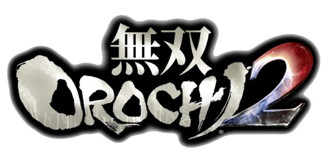 ▶其一 灾厄之前
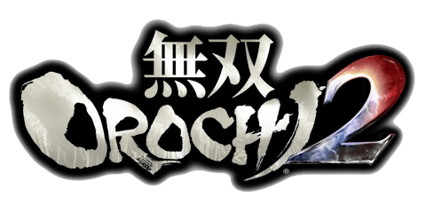
妲己出动
妖蛇編 DLC 妲己救出戦
在魏军讨伐真・远吕智后，仙界军降临，为捉拿妲己，魏・仙界联军来到古志城。在政宗、卑弥呼、妖魔的掩护下，妲己逃出古志城，寻找远吕智的尸体。
在魏军讨伐真・远吕智后，仙界军降临，为捉拿妲己，魏・仙界联军来到古志城。在政宗、卑弥呼、妖魔的掩护下，妲己逃出古志城，寻找远吕智的尸体。
黄巾再起
妖蛇編 3章外伝 広宗突破戦
黄巾党在广宗袭击当地的村民。典韦和司马昭、王元姬一样，在各地收集情报，路过此地帮助村长救援百姓，被购买当地名酒的信玄和谦信路过看到。典韦凭一己之力救出百姓后，艰难地前往长坂。百姓也不敢在此是非之地继续待下去，离开了村庄。张角等黄巾党本队前来汇合，将村庄占为粮仓，并以此因缘之地・广宗作为再次活动的根据地。
妖蛇編 3章外伝 広宗の戦い
玉子潜入木箱欲周游世界，误入黄巾党势力，被当作辎重运到黄巾党根据地・广宗。不知被谁施了法术，玉子被关在木箱之中出不来……
黄巾党在广宗袭击当地的村民。典韦和司马昭、王元姬一样，在各地收集情报，路过此地帮助村长救援百姓，被购买当地名酒的信玄和谦信路过看到。典韦凭一己之力救出百姓后，艰难地前往长坂。百姓也不敢在此是非之地继续待下去，离开了村庄。张角等黄巾党本队前来汇合，将村庄占为粮仓，并以此因缘之地・广宗作为再次活动的根据地。
妖蛇編 3章外伝 広宗の戦い
玉子潜入木箱欲周游世界，误入黄巾党势力，被当作辎重运到黄巾党根据地・广宗。不知被谁施了法术，玉子被关在木箱之中出不来……
关原决战
妖蛇編 3章外伝 街亭の戦い
关平不听星彩劝阻，离开蜀国，加入织田军，与利家在街亭汇合。
設定集 関ヶ原の戦い
曹操和信长为了确立异世界的霸权，在关原聚集人马，一边是魏・石田・真田・武田・上杉为首的东军，一边是织田・德川・蜀为首的西军，战争一触即发。（这个阵容也体现在第3章）
其他势力：与妖魔联合：袁家、今川、长宗我部、岛津；未参与：吴、北条、南中、杂贺、剑豪众、毛利、董卓、黄巾、吕布、妖魔、仙界。
妖蛇編 DLC 千里行共闘戦
蜀・德川联军（东军）的德川秀忠为了参战关原而离开成都，关羽、关平、稻姬、信之对他进行护卫。一路上阻挡的是真田・上杉・魏（西军）的人马：昌幸、谦信、夏侯惇、幸村。在关羽的护卫下，秀忠成功脱出贱岳，向关原进发……
关平不听星彩劝阻，离开蜀国，加入织田军，与利家在街亭汇合。
設定集 関ヶ原の戦い
曹操和信长为了确立异世界的霸权，在关原聚集人马，一边是魏・石田・真田・武田・上杉为首的东军，一边是织田・德川・蜀为首的西军，战争一触即发。（这个阵容也体现在第3章）
其他势力：与妖魔联合：袁家、今川、长宗我部、岛津；未参与：吴、北条、南中、杂贺、剑豪众、毛利、董卓、黄巾、吕布、妖魔、仙界。
妖蛇編 DLC 千里行共闘戦
蜀・德川联军（东军）的德川秀忠为了参战关原而离开成都，关羽、关平、稻姬、信之对他进行护卫。一路上阻挡的是真田・上杉・魏（西军）的人马：昌幸、谦信、夏侯惇、幸村。在关羽的护卫下，秀忠成功脱出贱岳，向关原进发……
人魔共存之世
妖蛇編 3章外伝 名族雪辱戦
妖魔打算窃取袁绍的领地・贱岳，在袁绍面前上演苦肉计。袁绍听信妖魔「建立人类、妖魔共存的世界」的「愿望」，与妖魔联手了。妖魔不断拍袁绍马屁，袁绍飘飘然，以为将大有所成。在魍魉的怂恿下，袁绍着手领土扩张。
妖蛇編 DLC 妖魔救援戦
通过追踪妖魔・混沌，仙界军掌握妖魔军的位置，在五行山开战，袁绍、义元、元亲为救援混沌而攻击仙界军，救出混沌。蹴鞠发烧友・义元和元亲要「进行震撼异世界的凄绝的蹴鞠」，集结热爱蹴鞠的人、魔，在凉州建立「蹴鞠之国」。
妖魔打算窃取袁绍的领地・贱岳，在袁绍面前上演苦肉计。袁绍听信妖魔「建立人类、妖魔共存的世界」的「愿望」，与妖魔联手了。妖魔不断拍袁绍马屁，袁绍飘飘然，以为将大有所成。在魍魉的怂恿下，袁绍着手领土扩张。
妖蛇編 DLC 妖魔救援戦
通过追踪妖魔・混沌，仙界军掌握妖魔军的位置，在五行山开战，袁绍、义元、元亲为救援混沌而攻击仙界军，救出混沌。蹴鞠发烧友・义元和元亲要「进行震撼异世界的凄绝的蹴鞠」，集结热爱蹴鞠的人、魔，在凉州建立「蹴鞠之国」。
潼关的明与暗
妖蛇編 3章外伝 雒城の戦い
钟会率魏军镇守雒城。然而阿国的搅乱使魏军陷入混乱。恰逢妖魔军大举进军，钟会判断形势在妖魔一方，离开魏国投奔董卓。
妖蛇編 DLC 貂蝉救援戦
由于妖魔的猛攻，吕布和貂蝉分离。张辽、源义经、阿国组成义勇军，帮助负伤的吕布在关原寻找貂蝉。义勇军在寻找貂蝉的途中救出了宁宁、阿市、三藏、女官，并从宁宁处得知貂蝉可能的下落，找到了被悟空袭击的貂蝉。但救出貂蝉后，吕布和义勇军随即受到各方的进攻——蛟、为了完成「酒池肉林」的董卓和钟会、袁绍和魍魉、妲己和卑弥呼。吕布、貂蝉和义勇军经过艰难的战斗突破险境，但吕布负伤更重，为了寻求安全的场所而前往潼关。
（设定上傀儡是清盛在妖蛇出现后才制作，因此清盛、傀儡・幸村、女忍、利家、兼续、关羽的设置是不自然的）
妖蛇編 3章#1 潼関の戦い
在妲己的指示下，蛟率领妖魔军比吕布早一步占领了潼关。仙界军为了抓捕妲己，与魏军联合，曹操派出出曹丕、司马懿、三成，约定魏军包围妲己，剩下任仙界军处置，仙界派出哪吒先行进军潼关。妲己和卑弥呼来到潼关时妖魔军已经被魏・仙界军包围，几近败退。哪吒、素戋呜准备活捉妲己。吕布在救出貂蝉后路过潼关河岸，碰上了哪吒。双方都以为对方在挡路。但哪吒将吕布碾压。吕布让貂蝉逃走，由于貂蝉跑在哪吒面前，哪吒以为她要挡路，击杀貂蝉。在乱入战场的庆次的帮助下妲己成功逃出潼关。仙界军暂时撤退，曹丕率军继续追击妲己。
钟会率魏军镇守雒城。然而阿国的搅乱使魏军陷入混乱。恰逢妖魔军大举进军，钟会判断形势在妖魔一方，离开魏国投奔董卓。
妖蛇編 DLC 貂蝉救援戦
由于妖魔的猛攻，吕布和貂蝉分离。张辽、源义经、阿国组成义勇军，帮助负伤的吕布在关原寻找貂蝉。义勇军在寻找貂蝉的途中救出了宁宁、阿市、三藏、女官，并从宁宁处得知貂蝉可能的下落，找到了被悟空袭击的貂蝉。但救出貂蝉后，吕布和义勇军随即受到各方的进攻——蛟、为了完成「酒池肉林」的董卓和钟会、袁绍和魍魉、妲己和卑弥呼。吕布、貂蝉和义勇军经过艰难的战斗突破险境，但吕布负伤更重，为了寻求安全的场所而前往潼关。
（设定上傀儡是清盛在妖蛇出现后才制作，因此清盛、傀儡・幸村、女忍、利家、兼续、关羽的设置是不自然的）
妖蛇編 3章#1 潼関の戦い
在妲己的指示下，蛟率领妖魔军比吕布早一步占领了潼关。仙界军为了抓捕妲己，与魏军联合，曹操派出出曹丕、司马懿、三成，约定魏军包围妲己，剩下任仙界军处置，仙界派出哪吒先行进军潼关。妲己和卑弥呼来到潼关时妖魔军已经被魏・仙界军包围，几近败退。哪吒、素戋呜准备活捉妲己。吕布在救出貂蝉后路过潼关河岸，碰上了哪吒。双方都以为对方在挡路。但哪吒将吕布碾压。吕布让貂蝉逃走，由于貂蝉跑在哪吒面前，哪吒以为她要挡路，击杀貂蝉。在乱入战场的庆次的帮助下妲己成功逃出潼关。仙界军暂时撤退，曹丕率军继续追击妲己。
▶其二 妖蛇袭来
妖蛇出现
妖蛇編 3章外伝 街亭防衛戦
妲己派遣妖魔四处侦察，发现街亭防守薄弱，着手攻略街亭。
妲己带着远吕智的尸体离开潼关，着手复活远吕智，却导致八个头的妖蛇「八岐大蛇」出现，妖蛇脱壳，留下远吕智的分身「酒吞童子」。目击此灾祸的曹丕、甄姬、三成、司马懿、司马师、许褚即死。妖魔军威势大增，开始行动了。由于妖蛇出现，素戋呜在远吕智不在的异世界中感受到崩溃的预兆，从黄泉将清盛召还。
妖蛇編 3章外伝 宛城の戦い
清盛、悟空在此试验「傀儡之术」。红叶在宛城一人与妖魔和傀儡战斗，阵亡。
妖蛇編 3章外伝 南郡防衛戦
清盛打算寻找强者继续试验「傀儡之术」，派妖魔和傀儡袭击南郡的百姓。
妲己派遣妖魔四处侦察，发现街亭防守薄弱，着手攻略街亭。
妲己带着远吕智的尸体离开潼关，着手复活远吕智，却导致八个头的妖蛇「八岐大蛇」出现，妖蛇脱壳，留下远吕智的分身「酒吞童子」。目击此灾祸的曹丕、甄姬、三成、司马懿、司马师、许褚即死。妖魔军威势大增，开始行动了。由于妖蛇出现，素戋呜在远吕智不在的异世界中感受到崩溃的预兆，从黄泉将清盛召还。
妖蛇編 3章外伝 宛城の戦い
清盛、悟空在此试验「傀儡之术」。红叶在宛城一人与妖魔和傀儡战斗，阵亡。
妖蛇編 3章外伝 南郡防衛戦
清盛打算寻找强者继续试验「傀儡之术」，派妖魔和傀儡袭击南郡的百姓。
成都・虎牢关陷落
妖蛇編 3章#2 陽平関の戦い
赵云、张飞、半藏、忠胜、稻姬等返回阳平关防守，百百目鬼率领妖魔军与妖蛇摧毁阳平关，赵云等死亡。
妖蛇編 3章外伝 雒城解放戦
由于钟会脱离魏军，曹操不顾与蜀军的前嫌，派司马懿镇守雒城。百百目鬼率领妖魔军进攻雒城，切断魏军补给路线，曹操派郭嘉前往雒城支援。妖蛇来临，摧毁了雒城后前往成都，司马懿、郭嘉阵亡。
妖蛇編 3章#6 成都の戦い
妖魔军猛攻成都，董卓趁乱屠杀民众，打算将成都纳入囊中，圆「酒池肉林」之梦。刘备、诸葛亮、家康陷入绝境。妖蛇终于来到成都，成都在瞬间被摧毁，蜀和德川灭亡。董卓只好和妖魔共同行动，寻找下一个都城。
幸存的蜀将各奔东西，黄忠、马超、马岱、徐庶直指小田原城，魏延逃至南中，但其他将领被妖魔困在汉中周围的山区。星彩被董卓抓捕。
妖蛇編 3章#6 虎牢関の戦い
另一边，妖蛇袭击了虎牢关。以收集情报为明目到处放荡的司马昭和王元姬目睹此灾祸。半兵卫也在放荡途中目击了妖蛇的横行。妖蛇的后面是清盛率领的妖魔大军。钟会趁乱占据洛阳，董卓趁乱占据许昌，着手构建「酒池肉林」。董卓军四处抓捕美女，抓住星彩、宁宁和阿市，使刘禅、清正、长政、胜家对自己言听计从，命令他们防卫长谷堂。
赵云、张飞、半藏、忠胜、稻姬等返回阳平关防守，百百目鬼率领妖魔军与妖蛇摧毁阳平关，赵云等死亡。
妖蛇編 3章外伝 雒城解放戦
由于钟会脱离魏军，曹操不顾与蜀军的前嫌，派司马懿镇守雒城。百百目鬼率领妖魔军进攻雒城，切断魏军补给路线，曹操派郭嘉前往雒城支援。妖蛇来临，摧毁了雒城后前往成都，司马懿、郭嘉阵亡。
妖蛇編 3章#6 成都の戦い
妖魔军猛攻成都，董卓趁乱屠杀民众，打算将成都纳入囊中，圆「酒池肉林」之梦。刘备、诸葛亮、家康陷入绝境。妖蛇终于来到成都，成都在瞬间被摧毁，蜀和德川灭亡。董卓只好和妖魔共同行动，寻找下一个都城。
幸存的蜀将各奔东西，黄忠、马超、马岱、徐庶直指小田原城，魏延逃至南中，但其他将领被妖魔困在汉中周围的山区。星彩被董卓抓捕。
妖蛇編 3章#6 虎牢関の戦い
另一边，妖蛇袭击了虎牢关。以收集情报为明目到处放荡的司马昭和王元姬目睹此灾祸。半兵卫也在放荡途中目击了妖蛇的横行。妖蛇的后面是清盛率领的妖魔大军。钟会趁乱占据洛阳，董卓趁乱占据许昌，着手构建「酒池肉林」。董卓军四处抓捕美女，抓住星彩、宁宁和阿市，使刘禅、清正、长政、胜家对自己言听计从，命令他们防卫长谷堂。
小田原城的集结
目睹妖蛇袭击成都的司马昭和王元姬，后来与剩余的英杰结成妖蛇讨伐军，分别在各地开展了人类小规模的抵抗。最终，人类集结于小田原城。然而妖魔军因为妖蛇出现而势力大增，前往攻略人类的大本营・小田原城。
最后的蜀将
妖蛇編 1章外伝 夷陵突破戦
蜀国被妖蛇灭国，黄忠、马岱、徐庶、马超打算前往小田原城与讨伐军合流。然而妖魔穷追不舍，马超一行终于几近全灭。黄忠、马岱为了让马超逃走，进行殿后。马超一行突破石兵八阵后，黄忠闭门死守，马岱与马超分别，声称从另一条路逃跑，却选了妖魔最多的路。马超、徐庶最终逃出夷陵，马超让徐庶先行前往小田原城，自己再回去夷陵一趟。清盛到来，马岱遭受妖魔军突击。清盛下令傀儡・武田骑马队和女忍歼灭蜀军。庞德途径妖魔兵器库・手取川，前来支援马岱。黄忠堵住了石兵八阵的出口而被围攻而亡。清盛打开石兵八阵之门，傀儡・幸村率领骑马队出阵，马岱、庞德阵亡。回到夷陵的马超看到一片倒地的惨状，不由得开始了撕心裂肺的痛哭……
蜀国被妖蛇灭国，黄忠、马岱、徐庶、马超打算前往小田原城与讨伐军合流。然而妖魔穷追不舍，马超一行终于几近全灭。黄忠、马岱为了让马超逃走，进行殿后。马超一行突破石兵八阵后，黄忠闭门死守，马岱与马超分别，声称从另一条路逃跑，却选了妖魔最多的路。马超、徐庶最终逃出夷陵，马超让徐庶先行前往小田原城，自己再回去夷陵一趟。清盛到来，马岱遭受妖魔军突击。清盛下令傀儡・武田骑马队和女忍歼灭蜀军。庞德途径妖魔兵器库・手取川，前来支援马岱。黄忠堵住了石兵八阵的出口而被围攻而亡。清盛打开石兵八阵之门，傀儡・幸村率领骑马队出阵，马岱、庞德阵亡。回到夷陵的马超看到一片倒地的惨状，不由得开始了撕心裂肺的痛哭……
妖蛇横行，三国与戦国的终焉
設定集 関ヶ原の戦い
妖蛇袭击了关原，关原上的曹操、夏侯惇、信长、浓姬、光秀、关平等魏军和织田军享受最后的争斗，但在妖蛇的灾祸下全军覆没。附近的真田、上杉等军退到樊城，部分魏军退到合肥。
設定集 九州の戦い
妖蛇袭击了九州，宗茂为訚千代殿后，一路出逃，来到兴势山。
設定集 江東の戦い
妖蛇横扫江东，孙坚和氏康在吴郡进行友好会谈时被妖蛇袭击，死亡。防卫吴郡的孙策、大乔、周瑜保护小乔、孙尚香、练师、孙权、丁奉、周泰等逃出江东后战死。丁奉、周泰保护小乔等逃往合肥。由于北条不复存在，风魔再次卷起混沌之风。
妖蛇袭击了关原，关原上的曹操、夏侯惇、信长、浓姬、光秀、关平等魏军和织田军享受最后的争斗，但在妖蛇的灾祸下全军覆没。附近的真田、上杉等军退到樊城，部分魏军退到合肥。
設定集 九州の戦い
妖蛇袭击了九州，宗茂为訚千代殿后，一路出逃，来到兴势山。
設定集 江東の戦い
妖蛇横扫江东，孙坚和氏康在吴郡进行友好会谈时被妖蛇袭击，死亡。防卫吴郡的孙策、大乔、周瑜保护小乔、孙尚香、练师、孙权、丁奉、周泰等逃出江东后战死。丁奉、周泰保护小乔等逃往合肥。由于北条不复存在，风魔再次卷起混沌之风。
傀儡之术
妖蛇編 1章外伝 三方ヶ原突破戦
妖蛇編 1章外伝 三方ヶ原侵攻戦
过去，有个被称为「魔王」的男人。他用强大的力量造出崭新之世，等待能打倒自己的强者现身。这个男人名唤远吕智，背负连死亡都不允许的重罪的他，期望着自己的毁灭。而这个愿望，最后借人界的英雄之手实现了。在注入远吕智死后留在异世界中的邪恶能量的清盛曾将之复活，却再次被击败。他掀起的战乱早已落幕，但仍有无法割舍对远吕智的感情的人——政宗和庆次，打算掀起新的战乱之风。清盛从黄泉回归，打算再三复活远吕智。政宗和庆次对远吕智不在之世感到无所适从，看到妖蛇横行，加之再次复活的清盛突然现身，认为远吕智也有再而三复活的可能，两人便与清盛一同行动。清盛率军袭击三方原的秀吉，秀吉原打算带兰丸、郭淮、王异等逃往长筱，然而此时兰丸、郭淮、王异等却不见了。政宗知秀吉必定用计，清盛便将军分为两拨，同时进攻，果然遭到郭淮袭击。清盛突然开始念叨咒语：
「唵(オン)遠呂智(ヲロチ)荒御魂(アラミタマ)娑婆訶(ソハカ)……」
「唵(オン)遠呂智(ヲロチ)荒御魂(アラミタマ)娑婆訶(ソハカ)……」
清盛知道妖术并不能大幅提高妖魔的力量，已经在普通武将身上试验过「傀儡之术」成功，这次要逮住强大的武将来试验。傀儡术正是远吕智死前传授于清盛之术，远吕智从人类的战斗中悟出，如果能够操纵人的意志，便能增加手中的棋子。
然而清盛傀儡化郭淮失败，郭淮撤退，清盛继续进军到秀吉本阵。秀吉金蝉脱壳，放出兰丸，打算逃亡求援。清盛傀儡化兰丸失败，兰丸撤退，清盛便追击秀吉。王异、文鸯到来阻止追击，王异追着清盛问马超身在何方，清盛一问三不知，傀儡化王异失败，王异撤退。清盛在三次失败后逐渐上手，将文鸯制成傀儡后压制秀吉，但还是被秀吉逃了。于是政宗和庆次加入清盛，重组妖魔军，远吕智残党的的复活远吕智之旅再次开始……
妖蛇編 DLC 清盛暗躍戦1
清盛在吴领合肥继续试验傀儡术，将王异、郭淮、孙权和为了护卫孙尚香逃走而负伤的练师做成傀儡。曹仁和蔡文姬成功逃脱。
妖蛇編 DLC 清盛暗躍戦2
妖魔军攻下了合肥，傀儡了武将，壮大了队伍。平清盛继续进攻蜀领关羽驻守的樊城。关羽听闻成都已沦陷，打算逃离樊城。清盛利用同样的手法，将当地的幸村、女忍、武田骑马队、兼续、利家、兰丸和关羽在内的几乎全军做成了傀儡。夏侯渊、夏侯霸成功逃脱，但夏侯渊为夏侯霸殿后，两人走散。
妖蛇編 1章外伝 三方ヶ原侵攻戦
过去，有个被称为「魔王」的男人。他用强大的力量造出崭新之世，等待能打倒自己的强者现身。这个男人名唤远吕智，背负连死亡都不允许的重罪的他，期望着自己的毁灭。而这个愿望，最后借人界的英雄之手实现了。在注入远吕智死后留在异世界中的邪恶能量的清盛曾将之复活，却再次被击败。他掀起的战乱早已落幕，但仍有无法割舍对远吕智的感情的人——政宗和庆次，打算掀起新的战乱之风。清盛从黄泉回归，打算再三复活远吕智。政宗和庆次对远吕智不在之世感到无所适从，看到妖蛇横行，加之再次复活的清盛突然现身，认为远吕智也有再而三复活的可能，两人便与清盛一同行动。清盛率军袭击三方原的秀吉，秀吉原打算带兰丸、郭淮、王异等逃往长筱，然而此时兰丸、郭淮、王异等却不见了。政宗知秀吉必定用计，清盛便将军分为两拨，同时进攻，果然遭到郭淮袭击。清盛突然开始念叨咒语：
然而清盛傀儡化郭淮失败，郭淮撤退，清盛继续进军到秀吉本阵。秀吉金蝉脱壳，放出兰丸，打算逃亡求援。清盛傀儡化兰丸失败，兰丸撤退，清盛便追击秀吉。王异、文鸯到来阻止追击，王异追着清盛问马超身在何方，清盛一问三不知，傀儡化王异失败，王异撤退。清盛在三次失败后逐渐上手，将文鸯制成傀儡后压制秀吉，但还是被秀吉逃了。于是政宗和庆次加入清盛，重组妖魔军，远吕智残党的的复活远吕智之旅再次开始……
妖蛇編 DLC 清盛暗躍戦1
清盛在吴领合肥继续试验傀儡术，将王异、郭淮、孙权和为了护卫孙尚香逃走而负伤的练师做成傀儡。曹仁和蔡文姬成功逃脱。
妖蛇編 DLC 清盛暗躍戦2
妖魔军攻下了合肥，傀儡了武将，壮大了队伍。平清盛继续进攻蜀领关羽驻守的樊城。关羽听闻成都已沦陷，打算逃离樊城。清盛利用同样的手法，将当地的幸村、女忍、武田骑马队、兼续、利家、兰丸和关羽在内的几乎全军做成了傀儡。夏侯渊、夏侯霸成功逃脱，但夏侯渊为夏侯霸殿后，两人走散。
妖魔三杰的阴谋
妖蛇編 DLC 妖魔造反戦
蛟为了抒发不满而突然向清盛举起反旗，部分妖魔跟随蛟，包围了古志城。左慈、义弘听说此事也来助蛟叛乱。清盛让妖魔和傀儡・幸村、女忍、利家、兼续、练师进攻蛟，义弘率领蛟军奇袭清盛并败之，清盛用远吕智传授的咒语召唤出了远吕智，蛟吓得狼狈而逃。妲己回古志城与清盛汇合，选定定军山为妖魔军根据地，展开全面进攻，并着手攻略讨伐军根据地・小田原城。左慈见蛟不能成大事，只好寻找下次机会袭击清盛。义弘则是留在妖魔军中寻求逆转劣势的战斗。但是他想错了。
妖蛇編 DLC 仙界大決戦
素戋呜误以为妲己和清盛又复活了远吕智。为了将远吕智带回仙界，素戋呜率领仙界军进攻古志城，但被顽强抵抗的妖魔击退。蛟见大势在妖魔一边，归阵。妲己和清盛抵挡仙界的进攻，董卓、钟会也和妖魔再次联手，妖魔军正式开始扩张势力。
蛟为了抒发不满而突然向清盛举起反旗，部分妖魔跟随蛟，包围了古志城。左慈、义弘听说此事也来助蛟叛乱。清盛让妖魔和傀儡・幸村、女忍、利家、兼续、练师进攻蛟，义弘率领蛟军奇袭清盛并败之，清盛用远吕智传授的咒语召唤出了远吕智，蛟吓得狼狈而逃。妲己回古志城与清盛汇合，选定定军山为妖魔军根据地，展开全面进攻，并着手攻略讨伐军根据地・小田原城。左慈见蛟不能成大事，只好寻找下次机会袭击清盛。义弘则是留在妖魔军中寻求逆转劣势的战斗。但是他想错了。
妖蛇編 DLC 仙界大決戦
素戋呜误以为妲己和清盛又复活了远吕智。为了将远吕智带回仙界，素戋呜率领仙界军进攻古志城，但被顽强抵抗的妖魔击退。蛟见大势在妖魔一边，归阵。妲己和清盛抵挡仙界的进攻，董卓、钟会也和妖魔再次联手，妖魔军正式开始扩张势力。
▶其三 异界终结
妖魔军扩张
妖蛇編 1章外伝 牛頭山の戦い
悟空、卑弥呼率领妖魔军和傀儡占领了牛头山，关索阵亡。
妖蛇編 1章外伝 牛頭山撤退戦
悟空离开了牛头山，留下一些妖魔留守。吕蒙、太史慈经过牛头山，在此地分别，太史慈前往上田城，吕蒙打算前往长谷堂，为妖魔和风魔阻挠，负重伤，拖着孱弱的身体前进……
妖蛇編 1章外伝 洮水救出戦
孙尚香率吴军一路逃到洮水，傀儡・练师率妖魔军进攻洮水的吴将，将洮水屠掠，但是在孙尚香面前逃走。
妖蛇編 4章外伝 合肥の戦い
陆逊在合肥一人与妖魔战斗，阵亡。
妖蛇編 4章外伝 小牧長久手の戦い
庞统在小牧长久手一人与妖魔、悟空战斗，阵亡。
妖蛇編 4章外伝 長篠撃退戦
傀儡・王异率妖魔军进攻马超。马超受王异追击逃亡。政宗率傀儡・幸村、女忍、骑马队、铁炮队占领长筱。练师与政宗合流。
悟空、卑弥呼率领妖魔军和傀儡占领了牛头山，关索阵亡。
妖蛇編 1章外伝 牛頭山撤退戦
悟空离开了牛头山，留下一些妖魔留守。吕蒙、太史慈经过牛头山，在此地分别，太史慈前往上田城，吕蒙打算前往长谷堂，为妖魔和风魔阻挠，负重伤，拖着孱弱的身体前进……
妖蛇編 1章外伝 洮水救出戦
孙尚香率吴军一路逃到洮水，傀儡・练师率妖魔军进攻洮水的吴将，将洮水屠掠，但是在孙尚香面前逃走。
妖蛇編 4章外伝 合肥の戦い
陆逊在合肥一人与妖魔战斗，阵亡。
妖蛇編 4章外伝 小牧長久手の戦い
庞统在小牧长久手一人与妖魔、悟空战斗，阵亡。
妖蛇編 4章外伝 長篠撃退戦
傀儡・王异率妖魔军进攻马超。马超受王异追击逃亡。政宗率傀儡・幸村、女忍、骑马队、铁炮队占领长筱。练师与政宗合流。
小田原城周边的战斗
妖蛇編 1章#2 上田城の戦い
袁绍军和董卓军为不同目的进攻王元姬镇守的上田城。司马昭、诸葛诞、左近和张辽一同在各地与妖魔军战斗，听到了上田城和小田原城都陷入危机的消息。袁绍为了扩张领土攻打上田城，董卓则是为了抓捕王元姬。司马昭前往小田原城，其余前往上田城。袁绍军和董卓军从两个方向进攻上田城，由于王元姬、左近等兵分两路，上田城无人防守，钟会的援军长驱直入，占领了上田城。王元姬、太史慈、诸葛诞、左近、张辽在大军攻击下阵亡，上田城陷落。董卓抓捕王元姬失败，袁绍的目的也失败了。
妖蛇編 1章#2 洞口の戦い
半兵卫和官兵卫镇守洞口。半兵卫听到小田原城陷入危机的消息，前往小田原城。然而妲己却散发「洞口的人类跟妖魔联手」的流言，引来了贾诩、訚千代和黄盖的进攻。官兵卫与贾诩军互攻，被贾诩军歼灭，妲己到来收渔翁之利，与卑弥呼夹击贾诩军，最终将他们全数歼灭。
妖蛇編 1章#2 長篠の戦い
秀吉帮助周泰寻找孙权，获得了周泰的信任。他们为了寻找孙权而来到长筱。长筱是与清盛联手的政宗和悟空占领的妖魔军据点，这里集结了伊达铁炮队和傀儡・武田骑马队。悟空强化了傀儡术，使傀儡具备更强大的力量。秀吉和周泰受傀儡攻击死亡。
袁绍军和董卓军为不同目的进攻王元姬镇守的上田城。司马昭、诸葛诞、左近和张辽一同在各地与妖魔军战斗，听到了上田城和小田原城都陷入危机的消息。袁绍为了扩张领土攻打上田城，董卓则是为了抓捕王元姬。司马昭前往小田原城，其余前往上田城。袁绍军和董卓军从两个方向进攻上田城，由于王元姬、左近等兵分两路，上田城无人防守，钟会的援军长驱直入，占领了上田城。王元姬、太史慈、诸葛诞、左近、张辽在大军攻击下阵亡，上田城陷落。董卓抓捕王元姬失败，袁绍的目的也失败了。
妖蛇編 1章#2 洞口の戦い
半兵卫和官兵卫镇守洞口。半兵卫听到小田原城陷入危机的消息，前往小田原城。然而妲己却散发「洞口的人类跟妖魔联手」的流言，引来了贾诩、訚千代和黄盖的进攻。官兵卫与贾诩军互攻，被贾诩军歼灭，妲己到来收渔翁之利，与卑弥呼夹击贾诩军，最终将他们全数歼灭。
妖蛇編 1章#2 長篠の戦い
秀吉帮助周泰寻找孙权，获得了周泰的信任。他们为了寻找孙权而来到长筱。长筱是与清盛联手的政宗和悟空占领的妖魔军据点，这里集结了伊达铁炮队和傀儡・武田骑马队。悟空强化了傀儡术，使傀儡具备更强大的力量。秀吉和周泰受傀儡攻击死亡。
寿春・小田原城之围
妖蛇編 1章外伝 寿春侵攻戦
田原城的战斗陷入胶着，妖魔也开始焦灼，希望有优秀的将领加入。妖魔在小田原城外围的寿春与酒吞童子邂逅。寿春是蔡文姬、曹仁驻守的城池。酒吞童子和百百目鬼、牛鬼战斗，蛟看到酒吞童子优异的身手，向他发问来者何人。酒吞童子自己也搞不清楚自己是什么人，蛟声称「不停战斗就能了解自己」，将酒吞童子收编入妖魔军。蛟让酒吞童子率军进攻城东，自己则在西边潜伏。曹仁上了他的道，让外围部队猛攻酒吞童子，但久攻不下，反而被团灭。突然夏侯霸来寻父，把蛟吓了出来，蛟以为被敌军奇袭。曹仁见伏兵果然出现，率军出阵。酒吞童子救出蛟后击败蔡文姬、曹仁，曹仁和夏侯霸逃亡，蔡文姬被妖魔递交于清盛，被做成傀儡。
妖蛇編 1章#3 寿春の戦い
义经、正则来夺回寿春，蛟让酒吞童子出阵，义经、正则遭受酒吞童子和妖魔的攻击而身亡。
妖蛇編 1章外伝 南郡の戦い
夏侯渊在路上帮助孙市脱险后来到南郡，悟空率军袭击，夏侯渊阵亡。
妖蛇編 1章外伝 赤壁突破戦
曹仁、夏侯霸、胜家在赤壁合流，遭清盛、悟空、傀儡・关羽和孙权包围，清盛利用赤壁的祈祷台强化了法术，终成功傀儡曹仁、夏侯霸。胜家负伤，艰难地前往许昌。
妖蛇編 1章#3 小田原城の戦い
甲斐姬防守的小田原城聚集了吴将・孙尚香、丁奉、小乔和武藏的剑豪众。清盛和妲己率领的浩浩荡荡的妖魔军将沿途的据点全部攻破，小田原城成为了人类最后的堡垒。小田原城被包围得水泄不通，最终在巨大的冲击下被攻破，甲斐姬、孙尚香、丁奉、小乔和武藏阵亡。义弘判断这就是最大的劣势，挑战妲己、清盛，最终战死。司马昭、半兵卫前往救援失败，逃出小田原城。
田原城的战斗陷入胶着，妖魔也开始焦灼，希望有优秀的将领加入。妖魔在小田原城外围的寿春与酒吞童子邂逅。寿春是蔡文姬、曹仁驻守的城池。酒吞童子和百百目鬼、牛鬼战斗，蛟看到酒吞童子优异的身手，向他发问来者何人。酒吞童子自己也搞不清楚自己是什么人，蛟声称「不停战斗就能了解自己」，将酒吞童子收编入妖魔军。蛟让酒吞童子率军进攻城东，自己则在西边潜伏。曹仁上了他的道，让外围部队猛攻酒吞童子，但久攻不下，反而被团灭。突然夏侯霸来寻父，把蛟吓了出来，蛟以为被敌军奇袭。曹仁见伏兵果然出现，率军出阵。酒吞童子救出蛟后击败蔡文姬、曹仁，曹仁和夏侯霸逃亡，蔡文姬被妖魔递交于清盛，被做成傀儡。
妖蛇編 1章#3 寿春の戦い
义经、正则来夺回寿春，蛟让酒吞童子出阵，义经、正则遭受酒吞童子和妖魔的攻击而身亡。
妖蛇編 1章外伝 南郡の戦い
夏侯渊在路上帮助孙市脱险后来到南郡，悟空率军袭击，夏侯渊阵亡。
妖蛇編 1章外伝 赤壁突破戦
曹仁、夏侯霸、胜家在赤壁合流，遭清盛、悟空、傀儡・关羽和孙权包围，清盛利用赤壁的祈祷台强化了法术，终成功傀儡曹仁、夏侯霸。胜家负伤，艰难地前往许昌。
妖蛇編 1章#3 小田原城の戦い
甲斐姬防守的小田原城聚集了吴将・孙尚香、丁奉、小乔和武藏的剑豪众。清盛和妲己率领的浩浩荡荡的妖魔军将沿途的据点全部攻破，小田原城成为了人类最后的堡垒。小田原城被包围得水泄不通，最终在巨大的冲击下被攻破，甲斐姬、孙尚香、丁奉、小乔和武藏阵亡。义弘判断这就是最大的劣势，挑战妲己、清盛，最终战死。司马昭、半兵卫前往救援失败，逃出小田原城。
妖魔军挺进
妖蛇編 2章#1 九州の戦い
清盛、妲己、蛟完成寿春・小田原城攻略后，继续推进战线，扫荡剩余的人类。
妲己进入九州地界，收阿基里斯和为寻找打倒妖蛇方法的元就，用「关索的情报」诓骗鲍三娘、击杀内枚亚。妲己前往南中。
妖蛇編 DLC 忍仙法師共闘戦
清盛为了恢复妖魔军消耗的战力，着手进行「邪法之仪」。龙隼察觉到异样气息，朝清盛的方向奔驰。同样感到邪恶气息的是仙人・左慈，左慈发现弁庆正与妖魔交战，便助其一臂之力。龙隼追踪邪恶的气息也到来，忍、仙人、法师共斗，未能击退蛟、清盛和傀儡・利家、兼续、蔡文姬。清盛挺进姊川。左慈、弁庆、龙隼继续追击清盛。
妖蛇編 2章#1 姉川の戦い
清盛姊川进行「邪法之仪」，歼灭左慈一行，朝根据地・定军山进军。
妖蛇編 2章#1 長谷堂の戦い
蛟和酒吞童子在长谷堂与董卓派出的清正、长政、刘禅合流，歼灭讨伐军的吕蒙、绫音。随后蛟进军至许昌，与董卓合流。
清盛、妲己、蛟完成寿春・小田原城攻略后，继续推进战线，扫荡剩余的人类。
妲己进入九州地界，收阿基里斯和为寻找打倒妖蛇方法的元就，用「关索的情报」诓骗鲍三娘、击杀内枚亚。妲己前往南中。
妖蛇編 DLC 忍仙法師共闘戦
清盛为了恢复妖魔军消耗的战力，着手进行「邪法之仪」。龙隼察觉到异样气息，朝清盛的方向奔驰。同样感到邪恶气息的是仙人・左慈，左慈发现弁庆正与妖魔交战，便助其一臂之力。龙隼追踪邪恶的气息也到来，忍、仙人、法师共斗，未能击退蛟、清盛和傀儡・利家、兼续、蔡文姬。清盛挺进姊川。左慈、弁庆、龙隼继续追击清盛。
妖蛇編 2章#1 姉川の戦い
清盛姊川进行「邪法之仪」，歼灭左慈一行，朝根据地・定军山进军。
妖蛇編 2章#1 長谷堂の戦い
蛟和酒吞童子在长谷堂与董卓派出的清正、长政、刘禅合流，歼灭讨伐军的吕蒙、绫音。随后蛟进军至许昌，与董卓合流。
人类最后的抵抗
妖蛇編 2章#2 南中の戦い
妲己大闹南中，孟获、祝融、魏延、小次郎阵亡。
妖蛇編 2章外伝 小牧長久手撃退戦
清盛使前锋前往小牧長久手开路，歼灭了大部分杂贺众。贞德逃往定军山。
妖蛇編 2章#2 定軍山の戦い
清盛到达定军山，贞德、孙市遭悟空、傀儡・曹仁、关羽、孙权、夏侯霸攻击，阵亡。
妖蛇編 2章外伝 興勢山陽動戦
钟会为卖董卓人情，率军防守兴势山。姜维为了前往传说中的「酒池肉林之城」许昌而打算强行突破，被钟会手下的妖魔围攻，姜维负重伤。张郃途径兴势山听说此事，但被钟会捉拿，押送至许昌。
妖蛇編 2章#2 許昌の戦い
姜维为了救出星彩而拖着孱弱的身体来到许昌，被妖魔和围攻身亡。
妲己大闹南中，孟获、祝融、魏延、小次郎阵亡。
妖蛇編 2章外伝 小牧長久手撃退戦
清盛使前锋前往小牧長久手开路，歼灭了大部分杂贺众。贞德逃往定军山。
妖蛇編 2章#2 定軍山の戦い
清盛到达定军山，贞德、孙市遭悟空、傀儡・曹仁、关羽、孙权、夏侯霸攻击，阵亡。
妖蛇編 2章外伝 興勢山陽動戦
钟会为卖董卓人情，率军防守兴势山。姜维为了前往传说中的「酒池肉林之城」许昌而打算强行突破，被钟会手下的妖魔围攻，姜维负重伤。张郃途径兴势山听说此事，但被钟会捉拿，押送至许昌。
妖蛇編 2章#2 許昌の戦い
姜维为了救出星彩而拖着孱弱的身体来到许昌，被妖魔和围攻身亡。
妖魔满溢之世
妖蛇編 2章外伝 洮水の戦い
三藏路过洮水帮助被妖魔袭击的凌统，打算照常捉拿悟空，反遭悟空囚禁。
妖蛇編 2章外伝 興勢山の戦い
宗茂在兴势山中妲己奸计，受妖魔军围攻而亡。
妖蛇編 2章外伝 江東の戦い
妖魔袭击江东，瑞秋、诸葛恪等吴军阵亡。
妖蛇編 2章外伝 手取川機巧戦
妖魔在手取川袭击月英，破坏其兵器，月英阵亡。
妖蛇編 2章外伝 三方ヶ原の戦い
甘宁在三方原一人与妖魔战斗，最终力战而亡。
妖蛇編 2章外伝 涼州の戦い
妖魔袭击凉州「蹴鞠之国」，义元、元亲阵亡。
妖蛇編 2章外伝 兗州の戦い
霞在兖州一人与妖魔战斗，阵亡。
妖蛇編 2章外伝 徐州の戦い
斯特尔克在徐州一人与妖魔战斗，阵亡。
妖蛇編 2章外伝 遼東の戦い
苏菲缇雅在辽东一人与妖魔战斗，阵亡。
三藏路过洮水帮助被妖魔袭击的凌统，打算照常捉拿悟空，反遭悟空囚禁。
妖蛇編 2章外伝 興勢山の戦い
宗茂在兴势山中妲己奸计，受妖魔军围攻而亡。
妖蛇編 2章外伝 江東の戦い
妖魔袭击江东，瑞秋、诸葛恪等吴军阵亡。
妖蛇編 2章外伝 手取川機巧戦
妖魔在手取川袭击月英，破坏其兵器，月英阵亡。
妖蛇編 2章外伝 三方ヶ原の戦い
甘宁在三方原一人与妖魔战斗，最终力战而亡。
妖蛇編 2章外伝 涼州の戦い
妖魔袭击凉州「蹴鞠之国」，义元、元亲阵亡。
妖蛇編 2章外伝 兗州の戦い
霞在兖州一人与妖魔战斗，阵亡。
妖蛇編 2章外伝 徐州の戦い
斯特尔克在徐州一人与妖魔战斗，阵亡。
妖蛇編 2章外伝 遼東の戦い
苏菲缇雅在辽东一人与妖魔战斗，阵亡。
洛阳陷落、仙征妲己
妖蛇編 2章#3 洛陽の戦い
异世界朝着毁灭的命运发展。妖蛇再次移动，将钟会占领下的洛阳摧毁。
妖蛇編 2章#3 関ヶ原の戦い
素戋呜只身挑战妖蛇败阵，使哪吒一人前往关原捉拿妲己。哪吒虽然击退元就和阿基里斯，却让妲己逃走了。
妖蛇編 2章外伝 剣閣の戦い
妖魔在剑阁集中袁绍、董卓两军并对其展开袭击，袁绍、董卓阵亡。
异世界朝着毁灭的命运发展。妖蛇再次移动，将钟会占领下的洛阳摧毁。
妖蛇編 2章#3 関ヶ原の戦い
素戋呜只身挑战妖蛇败阵，使哪吒一人前往关原捉拿妲己。哪吒虽然击退元就和阿基里斯，却让妲己逃走了。
妖蛇編 2章外伝 剣閣の戦い
妖魔在剑阁集中袁绍、董卓两军并对其展开袭击，袁绍、董卓阵亡。
毁灭的命运
妖蛇再次横行，都城尽毁、生灵涂炭，世界迫近毁灭的边缘。世上的英杰仅剩马超、司马昭、半兵卫，走投无路的三人决定破壶沉舟，用最后的兵力组建最后的讨伐军，使出最后的下策——前往「妖蛇之巢」……
▶绝望的终章／希望的序章
最后的出击
妖蛇編 序章 妖蛇討滅戦
远吕智死亡后数年，三国和战国的英雄们突然迎来了灭亡的危机。巨大的怪物「妖蛇」出现，倾覆天地，袭击城池。同时，妖魔军集结于成功复活的魔人・清盛下，与妖蛇呼应，袭击人类。迫于眼前的危机，幸存的人类走向联合之路。然而，由于强大的妖蛇和妖魔军的迫害，人类走到了几近灭绝的地步。在妖蛇和妖魔军前一直重复着失败的人类，为了颠覆这个绝望的状况，所剩的方法只有一个：讨伐妖蛇。即使是无谋之举，最后的三杰——马超、司马昭、半兵卫组织最后的讨伐军，凭着决死之觉悟，开始了人类最后的作战。
妖魔军蛟镇守「妖蛇之巢」。炙热的火海面前，讨伐军无法接近妖蛇。即使夺得妖魔军的强力兵器弩炮，也不能伤妖蛇一毫。妖蛇的冲击使讨伐军接连溃败，妖魔军却迎来了增援。清盛向讨伐军宣言「毁灭乃既定之事」。由于作战十分不利且伤害太大，司马昭下令全军撤退，然而战场上的人类已死剩他们三个。就在三人即将脱离战场时，妲己出现，要亲手见证这个异世界的人类的灭亡。看来人类已经没有下一个机会了。眼看妖蛇要将三人吞没，神秘的仙女・辉夜降临，将三人转移到安全的地方。辉夜是仙界派来帮助人类脱离危险的仙人。同时辉夜也向他们展示另外一个方法：回到过去，再次聚集同伴……
远吕智死亡后数年，三国和战国的英雄们突然迎来了灭亡的危机。巨大的怪物「妖蛇」出现，倾覆天地，袭击城池。同时，妖魔军集结于成功复活的魔人・清盛下，与妖蛇呼应，袭击人类。迫于眼前的危机，幸存的人类走向联合之路。然而，由于强大的妖蛇和妖魔军的迫害，人类走到了几近灭绝的地步。在妖蛇和妖魔军前一直重复着失败的人类，为了颠覆这个绝望的状况，所剩的方法只有一个：讨伐妖蛇。即使是无谋之举，最后的三杰——马超、司马昭、半兵卫组织最后的讨伐军，凭着决死之觉悟，开始了人类最后的作战。
妖魔军蛟镇守「妖蛇之巢」。炙热的火海面前，讨伐军无法接近妖蛇。即使夺得妖魔军的强力兵器弩炮，也不能伤妖蛇一毫。妖蛇的冲击使讨伐军接连溃败，妖魔军却迎来了增援。清盛向讨伐军宣言「毁灭乃既定之事」。由于作战十分不利且伤害太大，司马昭下令全军撤退，然而战场上的人类已死剩他们三个。就在三人即将脱离战场时，妲己出现，要亲手见证这个异世界的人类的灭亡。看来人类已经没有下一个机会了。眼看妖蛇要将三人吞没，神秘的仙女・辉夜降临，将三人转移到安全的地方。辉夜是仙界派来帮助人类脱离危险的仙人。同时辉夜也向他们展示另外一个方法：回到过去，再次聚集同伴……
—— 第五部 ——
▶其一 昨日重现
最后的英杰朝过去进发
回到过去——这就是辉夜向讨伐军展示的惊人之力。过去，马超和同伴逃出被妖蛇袭击的蜀国，在夷陵遭到妖魔袭击。马超在同伴的殿后下逃出夷陵，发觉无人跟上的马超重回战场，却发现了同伴凄惨的死状，马超成为了亡蜀最后的大将。其他幸存者们陆续开始了小规模的抵抗，在小田原城集结剩余的人类。然而，小田原城最终在清盛率领的妖魔军围攻下陷落。
于是，马超悔恨交加，回到记忆中的夷陵之战。怀着拯救苍生的大义，最后的三杰穿越时空、回到了过去——
于是，马超悔恨交加，回到记忆中的夷陵之战。怀着拯救苍生的大义，最后的三杰穿越时空、回到了过去——
马超重返夷陵
妖蛇編 1章#1 夷陵の戦い
马超重返过去的夷陵。在当时马超离开后，马岱即刻遭受妖魔军突击。清盛下令傀儡・女忍和武田骑马队歼灭蜀军。庞德支援马岱，马超击破女忍，解开了清盛对其的控制，收之，西凉三杰汇合。武田骑马队与西凉骑马队激烈冲突。马岱告诉马超，黄忠为了讨伐清盛，只身冲进了石兵八阵。为了阻止剩余的妖魔大军进军，黄忠堵住了石兵八阵的出口。马超赶到石兵八阵，听到了黄忠最后的遗言。清盛打开石兵八阵之门，让妖魔军进攻蜀军。马超突破妖魔和傀儡，与傀儡・幸村战斗。清盛见傀儡术将被解开，召回了幸村。这次，突破重重困难的马超成功击破清盛，救出马岱、庞德、女忍，改变了过去。
妖蛇編 1章外伝 手取川の戦い
黄忠为了阻止剩余的妖魔军，堵住了石兵八阵的出口，最终凄惨卓绝地死去。然而救出黄忠并非不可能。庞德想起，在救援夷陵途中，曾在手取川见过一个妖魔军军团，其中必有蹊跷。于是庞德和马超穿越时空，回到手取川。原来手取川正是妖魔军武库，庞德、马超击破了潜藏的大将・百百目鬼和蛟，发现并夺取了弩炮和投石机，派人将投石机运到夷陵。
妖蛇編 1章#1改 夷陵の戦い・改変後
马超和庞德再次踏上夷陵的战场。马超和庞德利用投石车砸破石兵八阵之门，在大军的包围中成功救下黄忠。
马超重返过去的夷陵。在当时马超离开后，马岱即刻遭受妖魔军突击。清盛下令傀儡・女忍和武田骑马队歼灭蜀军。庞德支援马岱，马超击破女忍，解开了清盛对其的控制，收之，西凉三杰汇合。武田骑马队与西凉骑马队激烈冲突。马岱告诉马超，黄忠为了讨伐清盛，只身冲进了石兵八阵。为了阻止剩余的妖魔大军进军，黄忠堵住了石兵八阵的出口。马超赶到石兵八阵，听到了黄忠最后的遗言。清盛打开石兵八阵之门，让妖魔军进攻蜀军。马超突破妖魔和傀儡，与傀儡・幸村战斗。清盛见傀儡术将被解开，召回了幸村。这次，突破重重困难的马超成功击破清盛，救出马岱、庞德、女忍，改变了过去。
妖蛇編 1章外伝 手取川の戦い
黄忠为了阻止剩余的妖魔军，堵住了石兵八阵的出口，最终凄惨卓绝地死去。然而救出黄忠并非不可能。庞德想起，在救援夷陵途中，曾在手取川见过一个妖魔军军团，其中必有蹊跷。于是庞德和马超穿越时空，回到手取川。原来手取川正是妖魔军武库，庞德、马超击破了潜藏的大将・百百目鬼和蛟，发现并夺取了弩炮和投石机，派人将投石机运到夷陵。
妖蛇編 1章#1改 夷陵の戦い・改変後
马超和庞德再次踏上夷陵的战场。马超和庞德利用投石车砸破石兵八阵之门，在大军的包围中成功救下黄忠。
半兵卫之策、讨伐军兵分三路
妖蛇的出现是异世界的意志。引发回到过去的条件是：某个事件在当时的某处确实发生的这一事实、以及目睹该事件经过的幸存者的「存在之缘」。回到过去的举动就像踩踏细丝跨越大河，而在妖蛇搅乱了时之长河的现在，穿越到妖蛇出现前的过去已经不可能，除非能获得「某种力量」。既然无法阻止妖蛇的出现，那么就要思考对付妖蛇的对策。仙界对下界的应对，一是辉夜的回溯之力，二是派驻仙界将。既然人类的防卫据点是小田原城，那么就应把到达小田原城，挽回将死之人的生命为目标。但是，小田原城周边的战事同样激烈。当时就是因为讨伐军战力集中在小田原城，没有顾及周边战场，且小田原城的妖魔大军非当时讨伐军能敌，加之周边的防卫又被攻破，讨伐军腹背受敌，最终导致小田原城及周边一带完全陷落。在半兵卫的构思中，当时的司马昭和自己都去了小田原城，那么这次就反其道而行之——不去小田原城，司马昭前往上田城救援，马超前往长篠诱敌，自己则是前往洞口指挥战斗。
号称「难攻不落」的小田原城，能否撑到司马昭、马超和半兵卫到达之时？
号称「难攻不落」的小田原城，能否撑到司马昭、马超和半兵卫到达之时？
小田原城周边防卫战
妖蛇編 1章#2 上田城の戦い
过去，司马昭、诸葛诞、左近和张辽一同在各地与妖魔军战斗，获得了上田城和小田原城同时陷入危机的消息。他们兵分两路，司马昭前往小田原城，其余前往上田城。结果上田城陷落，小田原城的救援也失败了。上田城由王元姬镇守，上田城的陷落也意味着王元姬罹难。为了拯救老婆，司马昭打算前往上田城。司马昭回到过去后，请求诸葛诞他们带上他去上田城。诸葛诞听他说什么来自未来，本来就认为这司马昭吊儿郎当，现在事态紧急还有心情开玩笑，便开始说教。左近看出司马昭性格大变，事必蹊跷，张辽见众人争执不下，提议即刻前往上田城救援。
上田城集结了三个军势——司马昭军、袁绍军和董卓军。袁绍军秉持「建立人类与妖魔共存之世」的信条，攻略上田城以作为新的国都而来，董卓军则是为了掠夺美女・王元姬而来。路上，左近得知此战在原来的历史中为败战，做好了警惕。司马昭突破两军，与王元姬、太史慈汇合时，袁绍和董卓的本队到达。妖魔・魍魉建议袁绍快董卓一步攻下上田城，诸葛诞看出董卓和袁绍非合作关系，可分别击破。王元姬吸引董卓，让司马昭先击退袁绍。司马昭破魍魉、袁绍，正想着全军出动，城内已空的当下，董卓军会不会有增援来袭。果然董卓军钟会前来支援，攻王元姬。司马昭推理在原来的世界线就是钟会攻陷上田城。司马昭立即赶去，与钟会进行一番论战。原来钟会为了在这个世界达成野心而与妖魔为伍，寄身董卓篱下。司马昭破钟会，解王元姬围。最后司马昭军击退董卓，确保了上田城。
妖蛇編 1章#2 洞口の戦い
为了确保小田原城，半兵卫回到过去讨伐军的一个据点・洞口。过去，洞口由半兵卫和官兵卫防卫。听说小田原城陷入危机，半兵卫也前往小田原城救援，结果洞口陷落，小田原城的救援也失败了。半兵卫深信，如果他当时留在洞口，必能一改结局。洞口的敌军都是人类，贾诩、訚千代、黄盖以为官兵卫与妖魔联手，前来讨伐，半兵卫迎击。半兵卫等击退訚千代、黄盖后，卑弥呼出现，攻贾诩军和两兵卫。原来卑弥呼才是贾诩军真正的敌人。半兵卫与贾诩交谈，贾诩见半兵卫神志清晰，发觉自己中了妲己的奸计，加入两兵卫军。半兵卫发觉官兵卫其实已经看出此战背后的阴谋，却仍要攻击对方，不愿和谈。妲己在估摸贾诩军歼灭两兵卫军时到来，本以为两个善于将对方一网打尽的名军师会两败俱伤，准备坐收渔利，却发现贾诩和两兵卫握手言和。两兵卫军击破卑弥呼和妲己，确保了洞口，收贾诩、訚千代、黄盖。妲己顺势回小田原城去了。
妖蛇編 1章#2 長篠の戦い
由于小田原城的包围非常坚固，直接前往救援是不可能的事情。为了吸引妖魔军注意力，马超率军前往小田原城附近的妖魔军据点・长筱。女忍发现悟空和伊达铁炮队、傀儡・武田骑马队及其他傀儡在袭击秀吉和周泰，战况比夷陵之战更加艰难。周泰击破练师后解开其傀儡术，让她逃了。马超在悟空的阻难下救出秀吉，迎击兰丸和郭淮。悟空在两个傀儡的法术被解开前将之召回。秀吉认为打倒悟空应该能解开傀儡术，马超便进攻悟空，成功解开兰丸和郭淮的傀儡术。接下来，骑马队、铁炮队出击。马超和秀吉突破之，接近政宗时，幸村出阵，攻女忍。马岱及时救援，女忍成功解开幸村的傀儡术。剩下的敌人只剩政宗。政宗扬言要与清盛共同迎来远吕智的盛大的复活。历经地狱一般的未来的马超对政宗怒吼「远吕智根本不可能复活」，击破政宗。
过去，司马昭、诸葛诞、左近和张辽一同在各地与妖魔军战斗，获得了上田城和小田原城同时陷入危机的消息。他们兵分两路，司马昭前往小田原城，其余前往上田城。结果上田城陷落，小田原城的救援也失败了。上田城由王元姬镇守，上田城的陷落也意味着王元姬罹难。为了拯救老婆，司马昭打算前往上田城。司马昭回到过去后，请求诸葛诞他们带上他去上田城。诸葛诞听他说什么来自未来，本来就认为这司马昭吊儿郎当，现在事态紧急还有心情开玩笑，便开始说教。左近看出司马昭性格大变，事必蹊跷，张辽见众人争执不下，提议即刻前往上田城救援。
上田城集结了三个军势——司马昭军、袁绍军和董卓军。袁绍军秉持「建立人类与妖魔共存之世」的信条，攻略上田城以作为新的国都而来，董卓军则是为了掠夺美女・王元姬而来。路上，左近得知此战在原来的历史中为败战，做好了警惕。司马昭突破两军，与王元姬、太史慈汇合时，袁绍和董卓的本队到达。妖魔・魍魉建议袁绍快董卓一步攻下上田城，诸葛诞看出董卓和袁绍非合作关系，可分别击破。王元姬吸引董卓，让司马昭先击退袁绍。司马昭破魍魉、袁绍，正想着全军出动，城内已空的当下，董卓军会不会有增援来袭。果然董卓军钟会前来支援，攻王元姬。司马昭推理在原来的世界线就是钟会攻陷上田城。司马昭立即赶去，与钟会进行一番论战。原来钟会为了在这个世界达成野心而与妖魔为伍，寄身董卓篱下。司马昭破钟会，解王元姬围。最后司马昭军击退董卓，确保了上田城。
妖蛇編 1章#2 洞口の戦い
为了确保小田原城，半兵卫回到过去讨伐军的一个据点・洞口。过去，洞口由半兵卫和官兵卫防卫。听说小田原城陷入危机，半兵卫也前往小田原城救援，结果洞口陷落，小田原城的救援也失败了。半兵卫深信，如果他当时留在洞口，必能一改结局。洞口的敌军都是人类，贾诩、訚千代、黄盖以为官兵卫与妖魔联手，前来讨伐，半兵卫迎击。半兵卫等击退訚千代、黄盖后，卑弥呼出现，攻贾诩军和两兵卫。原来卑弥呼才是贾诩军真正的敌人。半兵卫与贾诩交谈，贾诩见半兵卫神志清晰，发觉自己中了妲己的奸计，加入两兵卫军。半兵卫发觉官兵卫其实已经看出此战背后的阴谋，却仍要攻击对方，不愿和谈。妲己在估摸贾诩军歼灭两兵卫军时到来，本以为两个善于将对方一网打尽的名军师会两败俱伤，准备坐收渔利，却发现贾诩和两兵卫握手言和。两兵卫军击破卑弥呼和妲己，确保了洞口，收贾诩、訚千代、黄盖。妲己顺势回小田原城去了。
妖蛇編 1章#2 長篠の戦い
由于小田原城的包围非常坚固，直接前往救援是不可能的事情。为了吸引妖魔军注意力，马超率军前往小田原城附近的妖魔军据点・长筱。女忍发现悟空和伊达铁炮队、傀儡・武田骑马队及其他傀儡在袭击秀吉和周泰，战况比夷陵之战更加艰难。周泰击破练师后解开其傀儡术，让她逃了。马超在悟空的阻难下救出秀吉，迎击兰丸和郭淮。悟空在两个傀儡的法术被解开前将之召回。秀吉认为打倒悟空应该能解开傀儡术，马超便进攻悟空，成功解开兰丸和郭淮的傀儡术。接下来，骑马队、铁炮队出击。马超和秀吉突破之，接近政宗时，幸村出阵，攻女忍。马岱及时救援，女忍成功解开幸村的傀儡术。剩下的敌人只剩政宗。政宗扬言要与清盛共同迎来远吕智的盛大的复活。历经地狱一般的未来的马超对政宗怒吼「远吕智根本不可能复活」，击破政宗。
寿春・小田原城攻防战
妖蛇編 1章外伝 寿春侵攻戦
小田原城的战斗陷入胶着，妖魔也开始焦灼，希望有优秀的将领加入。妖魔在寿春与酒吞童子邂逅。寿春是蔡文姬、曹仁驻守的城池。酒吞童子和百百目鬼、牛鬼战斗，蛟看到酒吞童子优异的身手，向他发问来者何人。酒吞童子自己也搞不清楚自己是什么人，蛟声称「不停战斗就能了解自己」，将酒吞童子收编入妖魔军。蛟让酒吞童子率军进攻城东，自己则在西边潜伏。曹仁上了他的道，让外围部队猛攻酒吞童子，但久攻不下，反而被团灭。突然夏侯霸来寻父，把蛟吓了出来，蛟以为被敌军奇袭。曹仁见伏兵果然出现，率军出阵。酒吞童子救出蛟后击败蔡文姬、曹仁，曹仁和夏侯霸逃亡，蔡文姬被妖魔递交于清盛，被做成傀儡。
妖蛇編 1章#3 寿春の戦い
讨伐军守备上田城和洞口成功，分散了妖魔军对小田原城的注意。然而小田原城之围牢固依旧，直接前往救援仍旧困难。于是司马昭为了吸引妖魔军注意力前往妖魔军据点・寿春。接近寿春时，司马昭感受到了激战的气息——有一个神秘的妖魔正在戏耍太公望、义经和正则，王元姬、诸葛诞、张辽前往救援。强大的妖魔名唤「酒吞童子」，是个除了名字以外，对自己的身份、欲求等一无所知的妖魔。司马昭军助三人破之，被他逃回城里，于是决定攻城。看着正则，义经想起了曾经的随从・弁庆。蛟下令打开寿春城，引司马昭军入城。就在司马昭和正则入内城瞬间，蛟关门放火，司马昭和正则被锁在内城中。酒吞童子出阵，袭击城外的太公望和义经。太公望轻易地用仙术打开了城门，司马昭军得以击破蛟，出门击败酒吞童子，太公望在酒吞童子的身上，看到了「希望」……
妖蛇編 1章#3 小田原城の戦い
由于讨伐军在寿春、长筱取胜，清盛为了夺回领地，将包围小田原城的妖魔军分开一部前往寿春等地，于是小田原城的包围产生了破绽。半兵卫、贾诩、黄盖、訚千代进军小田原城。只要解放小田原城，绝望笼罩着的未来就将透露出曙光。虽然小田原城的包围变弱，但清盛和妲己仍将大量妖魔军集中在此。妲己源源不断地唤的妖魔军包围小田原城，甲斐姬守城，让武藏、丁奉、小乔、孙尚香御敌。由于辉夜和甲斐姬的救援，孙尚香获救，武藏却在包围中阵亡。甲斐姬、黄盖、辉夜击破入侵城内的妲己和妖魔军。妲己却称并非与清盛为伍。清盛声称要将小田原城化为鬼城，妖魔军义弘出阵。訚千代质问义弘为何加入清盛，义弘竟然以「跟着远吕智死后一直吃败仗的妖魔能参与有趣之战」为由加入妖魔军，让訚千代感到非常失望。訚千代愤恨地击破义弘与突然出现的庆次。讨伐军最终击退清盛，成功解放小田原城。义弘又以「跟着妖蛇出现后一直大胜的妖魔已无趣」为由加入讨伐军。
小田原城的战斗陷入胶着，妖魔也开始焦灼，希望有优秀的将领加入。妖魔在寿春与酒吞童子邂逅。寿春是蔡文姬、曹仁驻守的城池。酒吞童子和百百目鬼、牛鬼战斗，蛟看到酒吞童子优异的身手，向他发问来者何人。酒吞童子自己也搞不清楚自己是什么人，蛟声称「不停战斗就能了解自己」，将酒吞童子收编入妖魔军。蛟让酒吞童子率军进攻城东，自己则在西边潜伏。曹仁上了他的道，让外围部队猛攻酒吞童子，但久攻不下，反而被团灭。突然夏侯霸来寻父，把蛟吓了出来，蛟以为被敌军奇袭。曹仁见伏兵果然出现，率军出阵。酒吞童子救出蛟后击败蔡文姬、曹仁，曹仁和夏侯霸逃亡，蔡文姬被妖魔递交于清盛，被做成傀儡。
妖蛇編 1章#3 寿春の戦い
讨伐军守备上田城和洞口成功，分散了妖魔军对小田原城的注意。然而小田原城之围牢固依旧，直接前往救援仍旧困难。于是司马昭为了吸引妖魔军注意力前往妖魔军据点・寿春。接近寿春时，司马昭感受到了激战的气息——有一个神秘的妖魔正在戏耍太公望、义经和正则，王元姬、诸葛诞、张辽前往救援。强大的妖魔名唤「酒吞童子」，是个除了名字以外，对自己的身份、欲求等一无所知的妖魔。司马昭军助三人破之，被他逃回城里，于是决定攻城。看着正则，义经想起了曾经的随从・弁庆。蛟下令打开寿春城，引司马昭军入城。就在司马昭和正则入内城瞬间，蛟关门放火，司马昭和正则被锁在内城中。酒吞童子出阵，袭击城外的太公望和义经。太公望轻易地用仙术打开了城门，司马昭军得以击破蛟，出门击败酒吞童子，太公望在酒吞童子的身上，看到了「希望」……
妖蛇編 1章#3 小田原城の戦い
由于讨伐军在寿春、长筱取胜，清盛为了夺回领地，将包围小田原城的妖魔军分开一部前往寿春等地，于是小田原城的包围产生了破绽。半兵卫、贾诩、黄盖、訚千代进军小田原城。只要解放小田原城，绝望笼罩着的未来就将透露出曙光。虽然小田原城的包围变弱，但清盛和妲己仍将大量妖魔军集中在此。妲己源源不断地唤的妖魔军包围小田原城，甲斐姬守城，让武藏、丁奉、小乔、孙尚香御敌。由于辉夜和甲斐姬的救援，孙尚香获救，武藏却在包围中阵亡。甲斐姬、黄盖、辉夜击破入侵城内的妲己和妖魔军。妲己却称并非与清盛为伍。清盛声称要将小田原城化为鬼城，妖魔军义弘出阵。訚千代质问义弘为何加入清盛，义弘竟然以「跟着远吕智死后一直吃败仗的妖魔能参与有趣之战」为由加入妖魔军，让訚千代感到非常失望。訚千代愤恨地击破义弘与突然出现的庆次。讨伐军最终击退清盛，成功解放小田原城。义弘又以「跟着妖蛇出现后一直大胜的妖魔已无趣」为由加入讨伐军。
发动妲己、清盛讨伐战
辉夜将马超军、司马昭军和半兵卫军通过扭曲空间合于一处，与太公望汇合。而清盛、妲己、酒吞童子则各奔东西。经过一连串战斗，太公望和辉夜已经相信人类之力，决定反击妖魔军，并寻找阻止妖蛇出现的方法：司马昭与太公望前往长谷堂抓捕酒吞童子；半兵卫前往九州追捕妲己；马超前往姊川追击清盛。讨伐军的反攻战终于要开始了——
再战长筱、小田原城
妖蛇編 1章外伝 洮水救出戦
周泰确信，练师的傀儡之术已经被解开，但要「解放」她，可能还差一步。孙尚香想起曾在洮水遭遇成为傀儡后的练师，练师为了逃避与公主的对决而逃走。如果当时能够直面练师，或许就能够在长篠使练师从傀儡术中「解放」。孙尚香、周泰、丁奉、甲斐姬向过去进发。孙尚香救援洮水的吴军，与练师一分高下，解开练师的傀儡术。练师为了赎「对公主兵刃相向」之罪，留在妖魔军中收集情报，相约在不久后的长筱再见。
妖蛇編 1章#2改 長篠の戦い・改変後
马超、周泰、孙尚香再次踏上长筱的战场。就在政宗命令练师、兰丸突击时，练师看到了孙尚香和周泰到来，反叛政宗，攻击兰丸后撤退。原来经过悟空对妖术的加强，傀儡术的完全解除不单要求击破傀儡，还要击破施术者。这也解释了为何上次在长筱击破练师时没能将之解放，是因为击破悟空时练师已逃走，练师又返回到傀儡状态。就在讨伐军一路进攻，政宗不得不放出铁炮队时，练师出现，袭击铁炮队，再与讨伐军解放了幸村，击退政宗。练师加入讨伐军，也将她收集到的情报带入讨伐军中。
妖蛇編 1章外伝 洞口救出戦
甲斐姬和孙尚香欲拯救武藏。原来，当时从洞口有援军来援，如果当时援军能到达小田原城武藏之处，就不会导致现在的结果。义弘告诉甲斐姬，由于当时洞口被妖魔军重重包围，援军很难离开洞口。看来洞口确实吸引了妖魔军注意，却导致了武藏之死。义弘、甲斐姬和孙尚香为了开辟援军到达小田原城之路而向过去进发，帮助宗矩脱离险境，突破妖魔军，南下救援。卑弥呼赶来，发现他们已离开，也乘船南下。义弘等救出东乡重位、击退卑弥呼，洞口之围就此得解。
妖蛇編 1章#3改 小田原城の戦い・改変後
甲斐姬和孙尚香再次踏上小田原城的战场。由于突破了洞口的包围，援军终于能向小田原城前进。有援军支援，天下无双之剑・武藏就难以败阵。历史已经改变，由于甲斐姬、孙尚香前往洞口支援，形成了此战发生前甲斐姬都不在小田原城的情形，导致北条氏康将小田原城留给甲斐姬的父亲・成田氏长看守，而且黄盖则是代替孙尚香出阵。妲己大量增加包围武藏的妖魔军，由于东乡重位来援，武藏得以突破重围。妲己因此被激怒，瞬间入侵小田原城。氏长向小田原城急行，甲斐姬告诉父亲城内有埋伏，让氏长感到非常疑惑（原因是少女的秘密♪）。妲己被击破后，清盛让义弘出击。讨伐军顺次将义弘、庆次和清盛击破，再次获得胜利。
周泰确信，练师的傀儡之术已经被解开，但要「解放」她，可能还差一步。孙尚香想起曾在洮水遭遇成为傀儡后的练师，练师为了逃避与公主的对决而逃走。如果当时能够直面练师，或许就能够在长篠使练师从傀儡术中「解放」。孙尚香、周泰、丁奉、甲斐姬向过去进发。孙尚香救援洮水的吴军，与练师一分高下，解开练师的傀儡术。练师为了赎「对公主兵刃相向」之罪，留在妖魔军中收集情报，相约在不久后的长筱再见。
妖蛇編 1章#2改 長篠の戦い・改変後
马超、周泰、孙尚香再次踏上长筱的战场。就在政宗命令练师、兰丸突击时，练师看到了孙尚香和周泰到来，反叛政宗，攻击兰丸后撤退。原来经过悟空对妖术的加强，傀儡术的完全解除不单要求击破傀儡，还要击破施术者。这也解释了为何上次在长筱击破练师时没能将之解放，是因为击破悟空时练师已逃走，练师又返回到傀儡状态。就在讨伐军一路进攻，政宗不得不放出铁炮队时，练师出现，袭击铁炮队，再与讨伐军解放了幸村，击退政宗。练师加入讨伐军，也将她收集到的情报带入讨伐军中。
妖蛇編 1章外伝 洞口救出戦
甲斐姬和孙尚香欲拯救武藏。原来，当时从洞口有援军来援，如果当时援军能到达小田原城武藏之处，就不会导致现在的结果。义弘告诉甲斐姬，由于当时洞口被妖魔军重重包围，援军很难离开洞口。看来洞口确实吸引了妖魔军注意，却导致了武藏之死。义弘、甲斐姬和孙尚香为了开辟援军到达小田原城之路而向过去进发，帮助宗矩脱离险境，突破妖魔军，南下救援。卑弥呼赶来，发现他们已离开，也乘船南下。义弘等救出东乡重位、击退卑弥呼，洞口之围就此得解。
妖蛇編 1章#3改 小田原城の戦い・改変後
甲斐姬和孙尚香再次踏上小田原城的战场。由于突破了洞口的包围，援军终于能向小田原城前进。有援军支援，天下无双之剑・武藏就难以败阵。历史已经改变，由于甲斐姬、孙尚香前往洞口支援，形成了此战发生前甲斐姬都不在小田原城的情形，导致北条氏康将小田原城留给甲斐姬的父亲・成田氏长看守，而且黄盖则是代替孙尚香出阵。妲己大量增加包围武藏的妖魔军，由于东乡重位来援，武藏得以突破重围。妲己因此被激怒，瞬间入侵小田原城。氏长向小田原城急行，甲斐姬告诉父亲城内有埋伏，让氏长感到非常疑惑（原因是少女的秘密♪）。妲己被击破后，清盛让义弘出击。讨伐军顺次将义弘、庆次和清盛击破，再次获得胜利。
安倍晴明乱入
妖蛇編 1章外伝 上田城奪還戦
突然有一天上田城的警备和讨伐军中断了联络。辉夜在上田城的一个角落感到了时空歪曲，可能是一名强大的人物介入导致的。上田城是对抗妖蛇的重要据点，王元姬、辉夜、半兵卫、訚千代、马岱开始了上田城的夺还作战。
王元姬一行来到上田城时，发现妖魔和人类正在攻打上田城。歪曲的感觉越来越明显，辉夜用「从世界外面投来的石头引起的时之大河的波浪」来比喻。袁绍军趁时空歪曲再次攻略上田城而来。但上田城内有一支不明军队在与妖魔战斗。讨伐军攻击妖魔时，谜之军队的兵力逐渐增加，妖魔陷入混乱而撤退。辉夜发现上田城被施予结界，不能用仙术解开。谜之军队并非讨伐军的同伴，出于未知的原因在守城，还开门攻击讨伐军。讨伐军为了夺回上田城而讨之。当谜之军队被一扫而尽时，辉夜再次感受到时空的歪曲。王元姬、辉夜、訚千代出城，看到时空像个帘子被缓缓打开，出现了厌世的阴阳师・安倍晴明。晴明为了不被现世的名字束缚而穿越时空，占领了异世界的上田城，结果在「散步」期间被讨伐军夺还。其实他是去借助上田城的「龙脉之力」寻找通往他本身的时代的「桥」去了。魍魉把袁绍带来攻城，晴明看到与妖魔战斗的人，开始对这个世界感到兴趣，与讨伐军共同击退了袁绍，以「式」守城，加入讨伐军。
突然有一天上田城的警备和讨伐军中断了联络。辉夜在上田城的一个角落感到了时空歪曲，可能是一名强大的人物介入导致的。上田城是对抗妖蛇的重要据点，王元姬、辉夜、半兵卫、訚千代、马岱开始了上田城的夺还作战。
王元姬一行来到上田城时，发现妖魔和人类正在攻打上田城。歪曲的感觉越来越明显，辉夜用「从世界外面投来的石头引起的时之大河的波浪」来比喻。袁绍军趁时空歪曲再次攻略上田城而来。但上田城内有一支不明军队在与妖魔战斗。讨伐军攻击妖魔时，谜之军队的兵力逐渐增加，妖魔陷入混乱而撤退。辉夜发现上田城被施予结界，不能用仙术解开。谜之军队并非讨伐军的同伴，出于未知的原因在守城，还开门攻击讨伐军。讨伐军为了夺回上田城而讨之。当谜之军队被一扫而尽时，辉夜再次感受到时空的歪曲。王元姬、辉夜、訚千代出城，看到时空像个帘子被缓缓打开，出现了厌世的阴阳师・安倍晴明。晴明为了不被现世的名字束缚而穿越时空，占领了异世界的上田城，结果在「散步」期间被讨伐军夺还。其实他是去借助上田城的「龙脉之力」寻找通往他本身的时代的「桥」去了。魍魉把袁绍带来攻城，晴明看到与妖魔战斗的人，开始对这个世界感到兴趣，与讨伐军共同击退了袁绍，以「式」守城，加入讨伐军。
▶其二 反击狼烟
妲己追击战
妖蛇編 2章外伝 九州迎撃戦
妖蛇編 2章#1 九州の戦い
妲己逃亡南方，在南中唤醒渴望与强者战斗的异界战士・阿基里斯，并用「关索的情报」蒙骗了鲍三娘。妲己到九州后，接纳了对妲己的目的很感兴趣的元就，摆出了迎击讨伐军的态势，半兵卫、贾诩也在太公望的指示下南进，来到九州追捕妲己。
妲己解决了部分讨伐军先遣部队，元就配置了伏兵。妲己故意用少数护卫引诱贾诩进攻，因此贾诩发出包围并歼灭妖魔军的指示，准备抓捕妲己。訚千代和义弘想起西国无双・宗茂下落不明，打算顺便在九州进行搜索。贾诩认为妲己不会轻易束手就擒，提高了警惕。贾诩三面包围妲己，卑弥呼突然出现，发动「七柱石」。贾诩等人受其所困，于是攻之。妲己担心卑弥呼，让她撤退。訚千代和义弘对九州异样的风景大感迷惑。突然，有士兵发现了一个穿着甲胄的美男子。訚千代以为是宗茂，眼看就要拿下妲己，妲己突然瞬移，战场上出现大量伏兵，以及希腊最强战士・阿基里斯。阿基里斯一人抵挡訚千代和义弘。突然，一支长戟向阿基里斯刺去。长戟的主人也是一位穿着甲胄的美男子。但这位美男子并不是宗茂，他自称「内枚亚」，率领丁格尔兵士驱逐邪恶。他的来历无人知晓。贾诩见他与阿基里斯不分上下，认为现在应趁机追逐妲己。贾诩在途中识破了毛利军的钓野伏策略，顺便救下了在此寻宝的五右卫门。贾诩再攻妲己。妲己再次瞬移，留下元就，烧了连接南北的桥梁，将讨伐军一分为二。这时，内枚亚战胜了阿基里斯。贾诩击破元就，妲己命令阿基里斯再次出击。鲍三娘被妲己所骗，为了寻找关索在九州与讨伐军敌对，被讨伐军程昱抓捕。讨伐军最终虽然击破妲己，还是让她逃了。战后，暗之圆桌骑士・内枚亚和讨伐军介绍自己来自与这个世界不同的异世界，虽然不知如何回去的方法，但看到邪恶包裹着这个世界，觉得应该加入讨伐军。为了寻找关索，鲍三娘也为寻求帮助而加入讨伐军。
妖蛇編 2章#2 南中の戦い
妲己由于疲惫而放慢了逃亡的脚步。机不可失，以内枚亚和甲斐姬、孙尚香和辉夜组成的妲己追击部队在南中追上了妲己。疲劳的妲己已没有设置陷阱的从容，抓捕妲己已是时间问题。妲己派阿基里斯镇守神殿。孟获、祝融、魏延看到骚动，助讨伐军拦截妲己。阿基里斯见到甲斐姬的英姿，认为她与「亚马逊女王」很像。内枚亚再次和阿基里斯激战，再胜。元就为了保护妲己而出现，封锁了进军的小路。卑弥呼出阵，被甲斐姬击败。孟获成功截住妲己，讨伐军也突破元就，但孟获却被妖魔军击败，妲己继续逃走。路上，甲斐姬向辉夜继续询问有关相模之狮・氏康的事情。辉夜告之，氏康死于妖蛇出现的时点，由于无法穿越到那时，现在还救不了氏康。满身疮痍的卑弥呼再次出现保护妲己，又被甲斐姬击败并捕之。祝融又截住妲己，讨伐军终于追上妲己。甲斐姬和孙尚香击破妲己，却还是让她趁虚而逃。甲斐姬、孙尚香、辉夜确立了深厚的友情。看着为妲己努力战斗的卑弥呼，甲斐姬心生怜悯，放走了她。孟获、祝融和魏延加入妖蛇讨伐军。
妖蛇編 2章外伝 洮水の戦い
练师所搜集到的情报，还有在洮水隐藏着「妖魔的重要物品」一事。五右卫门认为是「宝物」，独自前往洮水去了。由于妖魔对各个砦的紧锁，令五右卫门更加期待。跟在五右卫门后面的秀吉对他可疑的行为很感兴趣，一同行动。五右卫门搜寻了几处，发现了「宝物移动的痕迹」和「宝物」三藏。三藏请求五右卫门一行救出被困的凌统。原来，三藏和凌统在洮水目击到悟空，想把他捉住，结果自己却被经清盛强化后的悟空用法术捉住了。三藏认出五右卫门就是当初放火的家伙（Neta：ドラマ2 #30 南中周遊記）。突破妖魔的反攻后，五右卫门和秀吉找到并救出了凌统。由于妖魔军增援来袭，又找不到「宝物」，五右卫门只好放弃寻宝，带着三藏等人逃出洮水。悟空回来，看见解开法术的三藏法师，声称要再捉一次。在五右卫门一行的努力下，悟空被捉拿。悟空跟三藏讲起过去的「天竺之旅」，让三藏沉浸在回忆之中，乘隙逃走。三藏和秀吉、五右卫门、凌统再现「天竺之旅」四人组，然而对于三国时期的凌统来说，他并不知道后来发生了这样的事情。到头来，被囚禁的三藏和凌统就是练师所说的「妖魔的重要物品」。
妖蛇編 2章#1 九州の戦い
妲己逃亡南方，在南中唤醒渴望与强者战斗的异界战士・阿基里斯，并用「关索的情报」蒙骗了鲍三娘。妲己到九州后，接纳了对妲己的目的很感兴趣的元就，摆出了迎击讨伐军的态势，半兵卫、贾诩也在太公望的指示下南进，来到九州追捕妲己。
妲己解决了部分讨伐军先遣部队，元就配置了伏兵。妲己故意用少数护卫引诱贾诩进攻，因此贾诩发出包围并歼灭妖魔军的指示，准备抓捕妲己。訚千代和义弘想起西国无双・宗茂下落不明，打算顺便在九州进行搜索。贾诩认为妲己不会轻易束手就擒，提高了警惕。贾诩三面包围妲己，卑弥呼突然出现，发动「七柱石」。贾诩等人受其所困，于是攻之。妲己担心卑弥呼，让她撤退。訚千代和义弘对九州异样的风景大感迷惑。突然，有士兵发现了一个穿着甲胄的美男子。訚千代以为是宗茂，眼看就要拿下妲己，妲己突然瞬移，战场上出现大量伏兵，以及希腊最强战士・阿基里斯。阿基里斯一人抵挡訚千代和义弘。突然，一支长戟向阿基里斯刺去。长戟的主人也是一位穿着甲胄的美男子。但这位美男子并不是宗茂，他自称「内枚亚」，率领丁格尔兵士驱逐邪恶。他的来历无人知晓。贾诩见他与阿基里斯不分上下，认为现在应趁机追逐妲己。贾诩在途中识破了毛利军的钓野伏策略，顺便救下了在此寻宝的五右卫门。贾诩再攻妲己。妲己再次瞬移，留下元就，烧了连接南北的桥梁，将讨伐军一分为二。这时，内枚亚战胜了阿基里斯。贾诩击破元就，妲己命令阿基里斯再次出击。鲍三娘被妲己所骗，为了寻找关索在九州与讨伐军敌对，被讨伐军程昱抓捕。讨伐军最终虽然击破妲己，还是让她逃了。战后，暗之圆桌骑士・内枚亚和讨伐军介绍自己来自与这个世界不同的异世界，虽然不知如何回去的方法，但看到邪恶包裹着这个世界，觉得应该加入讨伐军。为了寻找关索，鲍三娘也为寻求帮助而加入讨伐军。
妖蛇編 2章#2 南中の戦い
妲己由于疲惫而放慢了逃亡的脚步。机不可失，以内枚亚和甲斐姬、孙尚香和辉夜组成的妲己追击部队在南中追上了妲己。疲劳的妲己已没有设置陷阱的从容，抓捕妲己已是时间问题。妲己派阿基里斯镇守神殿。孟获、祝融、魏延看到骚动，助讨伐军拦截妲己。阿基里斯见到甲斐姬的英姿，认为她与「亚马逊女王」很像。内枚亚再次和阿基里斯激战，再胜。元就为了保护妲己而出现，封锁了进军的小路。卑弥呼出阵，被甲斐姬击败。孟获成功截住妲己，讨伐军也突破元就，但孟获却被妖魔军击败，妲己继续逃走。路上，甲斐姬向辉夜继续询问有关相模之狮・氏康的事情。辉夜告之，氏康死于妖蛇出现的时点，由于无法穿越到那时，现在还救不了氏康。满身疮痍的卑弥呼再次出现保护妲己，又被甲斐姬击败并捕之。祝融又截住妲己，讨伐军终于追上妲己。甲斐姬和孙尚香击破妲己，却还是让她趁虚而逃。甲斐姬、孙尚香、辉夜确立了深厚的友情。看着为妲己努力战斗的卑弥呼，甲斐姬心生怜悯，放走了她。孟获、祝融和魏延加入妖蛇讨伐军。
妖蛇編 2章外伝 洮水の戦い
练师所搜集到的情报，还有在洮水隐藏着「妖魔的重要物品」一事。五右卫门认为是「宝物」，独自前往洮水去了。由于妖魔对各个砦的紧锁，令五右卫门更加期待。跟在五右卫门后面的秀吉对他可疑的行为很感兴趣，一同行动。五右卫门搜寻了几处，发现了「宝物移动的痕迹」和「宝物」三藏。三藏请求五右卫门一行救出被困的凌统。原来，三藏和凌统在洮水目击到悟空，想把他捉住，结果自己却被经清盛强化后的悟空用法术捉住了。三藏认出五右卫门就是当初放火的家伙（Neta：ドラマ2 #30 南中周遊記）。突破妖魔的反攻后，五右卫门和秀吉找到并救出了凌统。由于妖魔军增援来袭，又找不到「宝物」，五右卫门只好放弃寻宝，带着三藏等人逃出洮水。悟空回来，看见解开法术的三藏法师，声称要再捉一次。在五右卫门一行的努力下，悟空被捉拿。悟空跟三藏讲起过去的「天竺之旅」，让三藏沉浸在回忆之中，乘隙逃走。三藏和秀吉、五右卫门、凌统再现「天竺之旅」四人组，然而对于三国时期的凌统来说，他并不知道后来发生了这样的事情。到头来，被囚禁的三藏和凌统就是练师所说的「妖魔的重要物品」。
清盛讨伐战
妖蛇編 DLC 忍仙法師共闘戦
小田原城夺还后，清盛集结了小田原城外的妖魔军，为了恢复消耗的战力，着手进行「邪法之仪」。龙隼察觉到异样气息，朝清盛的方向奔驰。同样感到邪恶气息的是仙人・左慈，左慈发现弁庆正与妖魔交战，便助其一臂之力。龙隼追踪邪恶的气息也到来，忍、仙人、法师共斗，击退蛟、清盛和傀儡・利家、兼续、蔡文姬。清盛见此地已不适宜进行仪式，便继续进军，前往姊川。左慈、弁庆、龙隼继续追击清盛。
妖蛇編 2章外伝 姉川潜入戦
妖蛇編 2章#1 姉川の戦い
龙隼望着远处的「摩天楼」，对这个世界感到十分异常，左慈和弁庆向龙隼介绍是远吕智创造了这个异世界，虽然能从妖气中感觉到远吕智的气息，但姊川的妖气却是由清盛发出来的。于是在左慈、弁庆的掩护下，龙隼静悄悄潜入清盛所在的祈祷所。另一方面，为了让剩余的傀儡武将从妖术中解放，马超率军追击平清盛，也来到姊川。
马超和秀吉，也望着不属于三国和战国时代的巨大建造物・冲天之塔「摩天楼」，感到十分惊讶。幸村、兰丸、郭淮为雪耻而作为先锋与傀儡战斗。幸村看出「打不开的门」必为悟空的妖术，便向他进攻。讨伐军首先击破傀儡・利家，但是没有解放他，清盛及时召回了傀儡。清盛再次发动傀儡术，将颜良、池田恒兴策反。悟空也发动傀儡术，将华雄、夏侯和策反。就在讨伐军忙于与新的傀儡战斗时，悟空为了攻陷讨伐军本阵而再次发动「傀儡之术」，将讨伐军本阵的武将丹羽长秀、寺村小八郎策反。这时龙隼出现，突然袭击绝赞念经中的清盛，劈开了祈祷所的门，左慈、弁庆顺势进入妖魔军本阵。清盛妖术弱化，妖术门开放，傀儡・蔡文姬也被解放。清盛瞬移，留下傀儡・利家等人，与蛟的妖魔军增援呼应。由于妖术已弱化，傀儡只需被击破就能从术中解放。因此，兼续、利家被击破后就恢复了理智。讨伐军与左慈、弁庆汇合，弁庆介绍自己自从与义经断绝关系后（Neta：ドラマ2外伝#38 三方ヶ原救出戦），为了获得义经认同而不停地与妖魔军战斗，因为左慈只会前往妖魔聚集之地，就一路跟着左慈。左慈认为，妖蛇的出现已经再次引起了异变，姊川怪异的地形和异界忍者的出现就是佐证。讨伐军进攻清盛时，清盛已经强化了妖术，妖魔军的战斗力大增。讨伐军在清盛再次强化妖术前将之击破，平清盛留下「就算怎么反抗，毁灭的命运都不会改变」的话就撤退了。利家、兼续、蔡文姬、左慈、弁庆加入讨伐军，弁庆与义经和好。龙隼以讨伐恶徒为使命也加入讨伐军。
妖蛇編 2章#2 定軍山の戦い
左慈从妖气的流向来发现清盛的根据地・定军山。马超、兼续为了粉碎邪法、周泰为了解放孙权挺进定军山。马超本打算直接讨伐清盛，但兼续发现西方有人受妖魔军包围，马超「不救者不义」，前去解救西方之围。悟空用妖术使白银之少女・贞德的法军变成傀儡，为了让贞德逃走，孙市留下对抗悟空。贞德在过桥时受傀儡法军阻挡，周泰、蔡文姬、兰丸及时赶到，用刀背击倒法军，救出贞德。然而悟空杀死为贞德殿后的孙市，打算追击贞德。周泰等人到达插旗山山顶，击破悟空。妖魔军增援、傀儡・夏侯霸到达、风魔乱入偷袭马超，战场的混乱达到最高潮。讨伐军击退增援、抓捕夏侯霸、击破风魔。悟空再登场，率领强化后的傀儡法军攻击贞德。悟空再次被讨伐军击破，法军恢复了理智。清盛见悟空被击破，命令傀儡・关羽和孙权进军。讨伐军进军定军山山顶，成功击破并抓捕了关羽和孙权，突破傀儡・曹仁的防守与妖魔军的突袭，到达清盛本阵，却再次让清盛撤退了。关羽、孙权、曹仁和夏侯霸加入讨伐军，贞德为了取回这个世界的和平也加入讨伐军。
妖蛇編 2章外伝 小牧長久手撃退戦
当时，贞德来到这个异世界的小牧长久手，受到妖魔的袭击。孙市以飒爽之姿前来救援，让贞德逃脱。如果那时的贞德没有逃走，而是一同奋战，使孙市免于失去众多部下，或许孙市就不会死于定军山。于是，贞德和秀吉回到过去的小牧长久手，鼓舞了法军后，解决了妖魔军前锋，与孙市汇合，解决了妖魔军的被后偷袭，共同进攻蛟，成功地避免了杂贺众的大量死亡。但是，孙市还没逃出命运的魔掌……
妖蛇編 2章#2改 定軍山の戦い・改変後
贞德、马超再次踏上定军山的战场。由于杂贺众的战力不像上次那样弱小，贞德直接前往插旗山山顶与孙市共同击退悟空。马超还预先提防风魔的突袭。最后清盛被击破，贞德向孙市说明缘由后，孙市加入讨伐军。
妖蛇編 2章外伝 江東の戦い
妖蛇出现后，妖魔和清盛将江东占领。练师得知江东妖魔军处于苦战，正是从夺回故乡的好机，遂与丁奉、义弘同去，在江东的一角感到了异样的气氛。江东耸立着从未见过的建筑物群：高楼大厦、巨大的手执火炬和谜之文书的谜之女雕像（自由女神像）。神秘的美女・瑞秋帮助江东的守将・诸葛恪等御敌。瑞秋自称「魔神狩人」，是来自异界的强者。清盛闻声而来，南北夹击吴军。诸葛恪在南侧阻挡，瑞秋与丁奉等击退清盛，夺回江东。瑞秋为了讨伐这个世界的「魔神」，加入讨伐军，与来自同一世界的龙隼汇合。
妖蛇編 1章外伝 南郡の戦い
孙市说过去在南郡有个「弓箭达人」在与妖魔战斗中阵亡。寻父的夏侯霸认为这个达人绝对是父亲・夏侯渊。夏侯霸跟着孙市回到过去。当时悟空正在追杀「弓箭达人」，夏侯霸赶去看，果然是夏侯渊，于是两军汇合。孙市和夏侯渊还答应了女官的请求救出了女官之妹。讨伐军击破悟空，收夏侯渊。
妖蛇編 2章外伝 手取川機巧戦
「出去旅行，搜寻同伴」——听从左慈的指示的弁庆和徐晃在异世界开始了收集伙伴的旅行。然而一路上都是妖魔，弁庆既没有没能收集到什么武器，徐晃也没能好好地修行。两人逐渐心生不满，像遇到持有好武器的同伴。两人途经手取川，见到妖魔被虎战车击败。徐晃想到月英。由于月英外出，留下了「防御装置」来自动启动她的各种兵器：虎战车、弩炮和连弩。为了安全地寻找月英，弁庆和徐晃停止了一路上的兵器。恰逢妖魔们也在寻找月英，弁庆、徐晃击退妖魔和悟空后，月英归来。月英对弁庆的武器非常感兴趣，然而弁庆并不想让出他的武器（机关小手）。月英便打算武力抢夺。徐晃求之不得，与她展开了一场比武，最终徐晃占上风。月英对她的无礼道歉，弁庆强迫月英交出虎战车，月英爽快答应，前提是弁庆让出他的武器。
小田原城夺还后，清盛集结了小田原城外的妖魔军，为了恢复消耗的战力，着手进行「邪法之仪」。龙隼察觉到异样气息，朝清盛的方向奔驰。同样感到邪恶气息的是仙人・左慈，左慈发现弁庆正与妖魔交战，便助其一臂之力。龙隼追踪邪恶的气息也到来，忍、仙人、法师共斗，击退蛟、清盛和傀儡・利家、兼续、蔡文姬。清盛见此地已不适宜进行仪式，便继续进军，前往姊川。左慈、弁庆、龙隼继续追击清盛。
妖蛇編 2章外伝 姉川潜入戦
妖蛇編 2章#1 姉川の戦い
龙隼望着远处的「摩天楼」，对这个世界感到十分异常，左慈和弁庆向龙隼介绍是远吕智创造了这个异世界，虽然能从妖气中感觉到远吕智的气息，但姊川的妖气却是由清盛发出来的。于是在左慈、弁庆的掩护下，龙隼静悄悄潜入清盛所在的祈祷所。另一方面，为了让剩余的傀儡武将从妖术中解放，马超率军追击平清盛，也来到姊川。
马超和秀吉，也望着不属于三国和战国时代的巨大建造物・冲天之塔「摩天楼」，感到十分惊讶。幸村、兰丸、郭淮为雪耻而作为先锋与傀儡战斗。幸村看出「打不开的门」必为悟空的妖术，便向他进攻。讨伐军首先击破傀儡・利家，但是没有解放他，清盛及时召回了傀儡。清盛再次发动傀儡术，将颜良、池田恒兴策反。悟空也发动傀儡术，将华雄、夏侯和策反。就在讨伐军忙于与新的傀儡战斗时，悟空为了攻陷讨伐军本阵而再次发动「傀儡之术」，将讨伐军本阵的武将丹羽长秀、寺村小八郎策反。这时龙隼出现，突然袭击绝赞念经中的清盛，劈开了祈祷所的门，左慈、弁庆顺势进入妖魔军本阵。清盛妖术弱化，妖术门开放，傀儡・蔡文姬也被解放。清盛瞬移，留下傀儡・利家等人，与蛟的妖魔军增援呼应。由于妖术已弱化，傀儡只需被击破就能从术中解放。因此，兼续、利家被击破后就恢复了理智。讨伐军与左慈、弁庆汇合，弁庆介绍自己自从与义经断绝关系后（Neta：ドラマ2外伝#38 三方ヶ原救出戦），为了获得义经认同而不停地与妖魔军战斗，因为左慈只会前往妖魔聚集之地，就一路跟着左慈。左慈认为，妖蛇的出现已经再次引起了异变，姊川怪异的地形和异界忍者的出现就是佐证。讨伐军进攻清盛时，清盛已经强化了妖术，妖魔军的战斗力大增。讨伐军在清盛再次强化妖术前将之击破，平清盛留下「就算怎么反抗，毁灭的命运都不会改变」的话就撤退了。利家、兼续、蔡文姬、左慈、弁庆加入讨伐军，弁庆与义经和好。龙隼以讨伐恶徒为使命也加入讨伐军。
妖蛇編 2章#2 定軍山の戦い
左慈从妖气的流向来发现清盛的根据地・定军山。马超、兼续为了粉碎邪法、周泰为了解放孙权挺进定军山。马超本打算直接讨伐清盛，但兼续发现西方有人受妖魔军包围，马超「不救者不义」，前去解救西方之围。悟空用妖术使白银之少女・贞德的法军变成傀儡，为了让贞德逃走，孙市留下对抗悟空。贞德在过桥时受傀儡法军阻挡，周泰、蔡文姬、兰丸及时赶到，用刀背击倒法军，救出贞德。然而悟空杀死为贞德殿后的孙市，打算追击贞德。周泰等人到达插旗山山顶，击破悟空。妖魔军增援、傀儡・夏侯霸到达、风魔乱入偷袭马超，战场的混乱达到最高潮。讨伐军击退增援、抓捕夏侯霸、击破风魔。悟空再登场，率领强化后的傀儡法军攻击贞德。悟空再次被讨伐军击破，法军恢复了理智。清盛见悟空被击破，命令傀儡・关羽和孙权进军。讨伐军进军定军山山顶，成功击破并抓捕了关羽和孙权，突破傀儡・曹仁的防守与妖魔军的突袭，到达清盛本阵，却再次让清盛撤退了。关羽、孙权、曹仁和夏侯霸加入讨伐军，贞德为了取回这个世界的和平也加入讨伐军。
妖蛇編 2章外伝 小牧長久手撃退戦
当时，贞德来到这个异世界的小牧长久手，受到妖魔的袭击。孙市以飒爽之姿前来救援，让贞德逃脱。如果那时的贞德没有逃走，而是一同奋战，使孙市免于失去众多部下，或许孙市就不会死于定军山。于是，贞德和秀吉回到过去的小牧长久手，鼓舞了法军后，解决了妖魔军前锋，与孙市汇合，解决了妖魔军的被后偷袭，共同进攻蛟，成功地避免了杂贺众的大量死亡。但是，孙市还没逃出命运的魔掌……
妖蛇編 2章#2改 定軍山の戦い・改変後
贞德、马超再次踏上定军山的战场。由于杂贺众的战力不像上次那样弱小，贞德直接前往插旗山山顶与孙市共同击退悟空。马超还预先提防风魔的突袭。最后清盛被击破，贞德向孙市说明缘由后，孙市加入讨伐军。
妖蛇編 2章外伝 江東の戦い
妖蛇出现后，妖魔和清盛将江东占领。练师得知江东妖魔军处于苦战，正是从夺回故乡的好机，遂与丁奉、义弘同去，在江东的一角感到了异样的气氛。江东耸立着从未见过的建筑物群：高楼大厦、巨大的手执火炬和谜之文书的谜之女雕像（自由女神像）。神秘的美女・瑞秋帮助江东的守将・诸葛恪等御敌。瑞秋自称「魔神狩人」，是来自异界的强者。清盛闻声而来，南北夹击吴军。诸葛恪在南侧阻挡，瑞秋与丁奉等击退清盛，夺回江东。瑞秋为了讨伐这个世界的「魔神」，加入讨伐军，与来自同一世界的龙隼汇合。
妖蛇編 1章外伝 南郡の戦い
孙市说过去在南郡有个「弓箭达人」在与妖魔战斗中阵亡。寻父的夏侯霸认为这个达人绝对是父亲・夏侯渊。夏侯霸跟着孙市回到过去。当时悟空正在追杀「弓箭达人」，夏侯霸赶去看，果然是夏侯渊，于是两军汇合。孙市和夏侯渊还答应了女官的请求救出了女官之妹。讨伐军击破悟空，收夏侯渊。
妖蛇編 2章外伝 手取川機巧戦
「出去旅行，搜寻同伴」——听从左慈的指示的弁庆和徐晃在异世界开始了收集伙伴的旅行。然而一路上都是妖魔，弁庆既没有没能收集到什么武器，徐晃也没能好好地修行。两人逐渐心生不满，像遇到持有好武器的同伴。两人途经手取川，见到妖魔被虎战车击败。徐晃想到月英。由于月英外出，留下了「防御装置」来自动启动她的各种兵器：虎战车、弩炮和连弩。为了安全地寻找月英，弁庆和徐晃停止了一路上的兵器。恰逢妖魔们也在寻找月英，弁庆、徐晃击退妖魔和悟空后，月英归来。月英对弁庆的武器非常感兴趣，然而弁庆并不想让出他的武器（机关小手）。月英便打算武力抢夺。徐晃求之不得，与她展开了一场比武，最终徐晃占上风。月英对她的无礼道歉，弁庆强迫月英交出虎战车，月英爽快答应，前提是弁庆让出他的武器。
酒吞童子追捕战
妖蛇編 2章#1 長谷堂の戦い
太公望认为妖魔・酒吞童子可能是消灭妖蛇的关键：无法匹及的力量和强大的存在感、思想上的缺陷——从这些特征来看，足以推导出一个「假说」。但假说终究是假说，捉拿酒吞童子调查一番是必要的。于是，顺应酒吞童子的目击报告，太公望、司马昭、诸葛诞朝长谷堂急行。
诸葛诞发现，如果没有蛟的指示，酒吞童子不会做出任何行动，那么突入妖魔军中枢，搅乱蛟的指挥就可以止住酒吞童子的行动。但是诸葛诞只会纸上谈兵，没有具体的方法。司马昭提出用诱饵正面诱敌，再用别动队突袭本阵。太公望甚感欣慰，建议两人同心戮力，相辅相成。正则听闻清正也在妖魔军阵中，为了确认真伪而参战。
司马昭和诸葛诞声东击西。而太史慈听闻长谷堂陷落后，开始担心吕蒙的安危。吕蒙果然因为妖魔军攻击而开始撤退，却被妖魔军阻挡。长政因为妻子・阿市身陷妖魔军（董卓军）中而为妖魔军阻挡司马昭，被击破后向讨伐军做出救出阿市的请求。吕蒙由于被妖魔军围攻而阵亡。
司马昭的正面进攻成功吸引妖魔军的注意，诸葛诞得以潜行。蛟命令酒吞童子进攻讨伐军本阵，酒吞童子出阵，攻太公望。清正也因为宁宁身陷妖魔军而进攻正则，被击破后也提出救出宁宁的请求。酒吞童子被击退，被蛟怒斥，潜伏。诸葛诞奇袭妖魔军本阵，恰逢酒吞童子不在，蛟临阵脱逃，命令刘禅抵御。刘禅也因为星彩身陷妖魔军而为妖魔军效力，被击破后也提出救出星彩的请求。
司马昭、义经和正则追击蛟，义经遇到性感忍者・绫音，以为是妖魔而打了起来。绫音是在各界强者集结决斗大会・第4回DOA大会结束时，超高层摩天楼「TRITOWER」倒塌后，追踪同流派的叛忍时穿越的。绫音刚到此地，看出此地为妖气所笼罩而与讨伐军共斗。司马昭和正则追上蛟并将之击破，酒吞童子突然失去了战斗的意义而弱化。太公望凭此确信了他的「假说」。义经和正则为雪寿春之耻而攻击酒吞童子。酒吞童子不愿恋战而撤退。长政、清正和刘禅告诉讨伐军，对于他们来说的重要的人被妖魔捉住成了人质，由于讨伐军在追击妖魔军，他们希望成为讨伐军的一员。霧幻天神流忍术霸神门・绫音也认为既然找不到回去的方法，就暂时加入人类一方。
妖蛇編 1章#外伝 牛頭山撤退戦
吕蒙由于遭到妖魔军围攻而阵亡。吕蒙本来不是能轻易被打败之将。原来，吕蒙曾在之前的战斗中负重伤。太史慈到处寻求关于吕蒙的情报，结果得到「当时的牛头山是很危险的地域」的情报。这时，太史慈想起他曾与吕蒙在牛头山分别。可能就在那之后，吕蒙就遭遇不测。太史慈和长政为寻找吕蒙而回到过去的牛头山，发现妖魔正在围攻吕蒙，而且妖魔的增援及风魔的乱入使形势刚加严峻。风魔又是拆桥又是放火，太史慈和长政不停受阻，一路迂回，终于使吕蒙安全脱离。太史慈和吕蒙约好在长谷堂见面。
妖蛇編 2章#1改 長谷堂の戦い・改変後
太史慈再次踏上长谷堂的战场。长谷堂陷落的情形没有改变，但吕蒙为了等待太史慈一直在死撑，看到太史慈后，决定反击。这次进军十分顺利，酒吞童子尚未出手，就已经将蛟逼到后退，奇袭作战终止了。吕蒙截住了蛟，蛟命令酒吞童子出击，因为酒吞童子在向太公望方向潜行，于是在太公望面前出现。吕蒙和太史慈汇合，将蛟击破。酒吞童子突然失去了战斗的意义而弱化，被击破后逃走。吕蒙加入讨伐军。
妖蛇編 2章#2 許昌の戦い
讨伐军在长谷堂一战后追踪酒吞童子，结果，绫音发现了从长谷堂出逃的妖魔军。太公望让绫音继续侦察酒吞童子的行踪和人质的下落。讨伐军在绫音的引导下最终到达董卓的根据地・许昌。在此，蛟和董卓合流。原来董卓在各处捉捕美女后终于在许昌建立起梦寐以求的「酒池肉林」。长政采用和司马昭在长谷堂一战中相同的策略进攻许昌。姜维也为了救出星彩而拖着孱弱的身体前来，被妖魔围攻身亡。讨伐军以太公望、清正、刘禅的正面攻击部队拖住城外的董卓军，长政、绫音、正则、诸葛诞率领别动队从侧面进入。长政首先抓捕了受人质制约而为董卓效力的胜家，入城后正则救出了宁宁（清正：我巨亏），长政救出了星彩和阿市，还顺便救出了不知为何被囚禁的张郃。董卓发觉后进攻讨伐军，发现绫音后打算捉住绫音，被击破，撤退。钟会也被击退，打算脱离董卓。蛟也逃，朝酒吞童子怒吼让他一起逃。讨伐军一口气追上酒吞童子，将之抓捕。酒吞童子在太公望面前表示他除了姓名外什么都不知。太公望告诉他，他的秘密就藏在他的「心」中，讨伐军也会协助他引出这个秘密，相反地，讨伐军需要他的协助。酒吞童子答应太公望的提议。宁宁、星彩、阿市、胜家、张郃也加入讨伐军。
妖蛇編 2章外伝 興勢山陽動戦
负伤的姜维因潜入许昌，被妖魔围攻身亡。刘禅听说后，对姜维这些没有被讨伐军注意到的将领之死感到十分可惜。张郃告诉刘禅他曾在兴势山见过姜维，那时张郃被当作可疑人物抓捕。于是刘禅和星彩回到张郃的过去，当时的兴势山处于董卓军钟会的监视之下。张郃记起姜维在南方正引起骚动。刘禅认为这时应避免姜维负伤，让其安全突破，故在北方先行引起骚动，吸引董卓军注意。钟会果然被激怒，令南方的董卓军攻击北方的讨伐军，姜维得以顺利突破董卓军的阻挡。刘禅和张郃最后击破了钟会。
妖蛇編 2章#2改 許昌の戦い・改変後
刘禅、张郃、星彩再次踏上许昌的战场。姜维为了救出星彩而前来许昌，救出了阿市。清正也如愿救出宁宁。刘禅和星彩救出其他女性后与阿市、姜维汇合。讨伐军最后击破董卓，抓捕了酒吞童子。姜维加入讨伐军。
妖蛇編 2章外伝 南中掃討戦
孟获等加入讨伐军后不久，传来急报，妖魔大军集结于南中。孟获、祝融听说故乡遭到蹂躏，与魏延、张郃立刻前往南中。南中王的归还，让南中的百姓见到希望。张郃侦察到源源不断的妖魔正在进入南中、遇到志同道合的小次郎，与孟获等共斗。孟获和祝融击退妖魔、狼，救出了老虎、南蛮兵。张郃将此战称为「力与技、美与刚的竞演」，诱导小次郎加入讨伐军。
妖蛇編 2章外伝 三方ヶ原の戦い
根据练师所搜集到的情报，三方原貌似有一名以妖魔的大军为对手、一个人冲锋陷阵的武将。吕蒙产生了很大的兴趣，他想起了身手了得、值得信赖之男・甘宁。吕蒙和想大闹一场的正则、监视正则的清正一起前往三方原。吕蒙介绍甘宁和正则一个德行，清正得出结论，甘宁「简单来说就是笨蛋」。正则和甘宁在攀比妖魔击破数的多寡，眼看就要打。这时，悟空到来，甘宁与正则进行谁先击破悟空的比试，结果两人一起击破悟空，打算下次再比。清正认为应这两个笨蛋留在这里，吕蒙认为这会给附近的居民造成困扰，于是带回去加以监督。
妖蛇編 2章外伝 興勢山の戦い
妖蛇袭击九州的时候，訚千代和宗茂在一起，然而撤退时两人分离，宗茂从此不知去向。「绝不会死」是宗茂最后訚千代说的一句话，因此訚千代一直在寻找着宗茂的下落。偶然，訚千代听小乔说「宗茂在兴势山」，遂同小乔、孙尚香前往兴势山。妲己捉弄訚千代，宣称「宗茂就在山顶，将被妖魔疯狂围攻」后撤退，訚千代一行急行至山顶，发现中计，被妖魔疯狂围攻。这时，宗茂听到骚动而来。妲己也对宗茂宣称「訚千代被关在山顶，被妖魔疯狂围攻」。宗茂与訚千代汇合，互相询问来此地的目的，都以「为救你而来」作答。立花的风神和雷神汇合，要在战场上掀起决胜之岚。宗茂和訚千代击破妲己，让妲己逃了。宗茂加入讨伐军。
太公望认为妖魔・酒吞童子可能是消灭妖蛇的关键：无法匹及的力量和强大的存在感、思想上的缺陷——从这些特征来看，足以推导出一个「假说」。但假说终究是假说，捉拿酒吞童子调查一番是必要的。于是，顺应酒吞童子的目击报告，太公望、司马昭、诸葛诞朝长谷堂急行。
诸葛诞发现，如果没有蛟的指示，酒吞童子不会做出任何行动，那么突入妖魔军中枢，搅乱蛟的指挥就可以止住酒吞童子的行动。但是诸葛诞只会纸上谈兵，没有具体的方法。司马昭提出用诱饵正面诱敌，再用别动队突袭本阵。太公望甚感欣慰，建议两人同心戮力，相辅相成。正则听闻清正也在妖魔军阵中，为了确认真伪而参战。
司马昭和诸葛诞声东击西。而太史慈听闻长谷堂陷落后，开始担心吕蒙的安危。吕蒙果然因为妖魔军攻击而开始撤退，却被妖魔军阻挡。长政因为妻子・阿市身陷妖魔军（董卓军）中而为妖魔军阻挡司马昭，被击破后向讨伐军做出救出阿市的请求。吕蒙由于被妖魔军围攻而阵亡。
司马昭的正面进攻成功吸引妖魔军的注意，诸葛诞得以潜行。蛟命令酒吞童子进攻讨伐军本阵，酒吞童子出阵，攻太公望。清正也因为宁宁身陷妖魔军而进攻正则，被击破后也提出救出宁宁的请求。酒吞童子被击退，被蛟怒斥，潜伏。诸葛诞奇袭妖魔军本阵，恰逢酒吞童子不在，蛟临阵脱逃，命令刘禅抵御。刘禅也因为星彩身陷妖魔军而为妖魔军效力，被击破后也提出救出星彩的请求。
司马昭、义经和正则追击蛟，义经遇到性感忍者・绫音，以为是妖魔而打了起来。绫音是在各界强者集结决斗大会・第4回DOA大会结束时，超高层摩天楼「TRITOWER」倒塌后，追踪同流派的叛忍时穿越的。绫音刚到此地，看出此地为妖气所笼罩而与讨伐军共斗。司马昭和正则追上蛟并将之击破，酒吞童子突然失去了战斗的意义而弱化。太公望凭此确信了他的「假说」。义经和正则为雪寿春之耻而攻击酒吞童子。酒吞童子不愿恋战而撤退。长政、清正和刘禅告诉讨伐军，对于他们来说的重要的人被妖魔捉住成了人质，由于讨伐军在追击妖魔军，他们希望成为讨伐军的一员。霧幻天神流忍术霸神门・绫音也认为既然找不到回去的方法，就暂时加入人类一方。
妖蛇編 1章#外伝 牛頭山撤退戦
吕蒙由于遭到妖魔军围攻而阵亡。吕蒙本来不是能轻易被打败之将。原来，吕蒙曾在之前的战斗中负重伤。太史慈到处寻求关于吕蒙的情报，结果得到「当时的牛头山是很危险的地域」的情报。这时，太史慈想起他曾与吕蒙在牛头山分别。可能就在那之后，吕蒙就遭遇不测。太史慈和长政为寻找吕蒙而回到过去的牛头山，发现妖魔正在围攻吕蒙，而且妖魔的增援及风魔的乱入使形势刚加严峻。风魔又是拆桥又是放火，太史慈和长政不停受阻，一路迂回，终于使吕蒙安全脱离。太史慈和吕蒙约好在长谷堂见面。
妖蛇編 2章#1改 長谷堂の戦い・改変後
太史慈再次踏上长谷堂的战场。长谷堂陷落的情形没有改变，但吕蒙为了等待太史慈一直在死撑，看到太史慈后，决定反击。这次进军十分顺利，酒吞童子尚未出手，就已经将蛟逼到后退，奇袭作战终止了。吕蒙截住了蛟，蛟命令酒吞童子出击，因为酒吞童子在向太公望方向潜行，于是在太公望面前出现。吕蒙和太史慈汇合，将蛟击破。酒吞童子突然失去了战斗的意义而弱化，被击破后逃走。吕蒙加入讨伐军。
妖蛇編 2章#2 許昌の戦い
讨伐军在长谷堂一战后追踪酒吞童子，结果，绫音发现了从长谷堂出逃的妖魔军。太公望让绫音继续侦察酒吞童子的行踪和人质的下落。讨伐军在绫音的引导下最终到达董卓的根据地・许昌。在此，蛟和董卓合流。原来董卓在各处捉捕美女后终于在许昌建立起梦寐以求的「酒池肉林」。长政采用和司马昭在长谷堂一战中相同的策略进攻许昌。姜维也为了救出星彩而拖着孱弱的身体前来，被妖魔围攻身亡。讨伐军以太公望、清正、刘禅的正面攻击部队拖住城外的董卓军，长政、绫音、正则、诸葛诞率领别动队从侧面进入。长政首先抓捕了受人质制约而为董卓效力的胜家，入城后正则救出了宁宁（清正：我巨亏），长政救出了星彩和阿市，还顺便救出了不知为何被囚禁的张郃。董卓发觉后进攻讨伐军，发现绫音后打算捉住绫音，被击破，撤退。钟会也被击退，打算脱离董卓。蛟也逃，朝酒吞童子怒吼让他一起逃。讨伐军一口气追上酒吞童子，将之抓捕。酒吞童子在太公望面前表示他除了姓名外什么都不知。太公望告诉他，他的秘密就藏在他的「心」中，讨伐军也会协助他引出这个秘密，相反地，讨伐军需要他的协助。酒吞童子答应太公望的提议。宁宁、星彩、阿市、胜家、张郃也加入讨伐军。
妖蛇編 2章外伝 興勢山陽動戦
负伤的姜维因潜入许昌，被妖魔围攻身亡。刘禅听说后，对姜维这些没有被讨伐军注意到的将领之死感到十分可惜。张郃告诉刘禅他曾在兴势山见过姜维，那时张郃被当作可疑人物抓捕。于是刘禅和星彩回到张郃的过去，当时的兴势山处于董卓军钟会的监视之下。张郃记起姜维在南方正引起骚动。刘禅认为这时应避免姜维负伤，让其安全突破，故在北方先行引起骚动，吸引董卓军注意。钟会果然被激怒，令南方的董卓军攻击北方的讨伐军，姜维得以顺利突破董卓军的阻挡。刘禅和张郃最后击破了钟会。
妖蛇編 2章#2改 許昌の戦い・改変後
刘禅、张郃、星彩再次踏上许昌的战场。姜维为了救出星彩而前来许昌，救出了阿市。清正也如愿救出宁宁。刘禅和星彩救出其他女性后与阿市、姜维汇合。讨伐军最后击破董卓，抓捕了酒吞童子。姜维加入讨伐军。
妖蛇編 2章外伝 南中掃討戦
孟获等加入讨伐军后不久，传来急报，妖魔大军集结于南中。孟获、祝融听说故乡遭到蹂躏，与魏延、张郃立刻前往南中。南中王的归还，让南中的百姓见到希望。张郃侦察到源源不断的妖魔正在进入南中、遇到志同道合的小次郎，与孟获等共斗。孟获和祝融击退妖魔、狼，救出了老虎、南蛮兵。张郃将此战称为「力与技、美与刚的竞演」，诱导小次郎加入讨伐军。
妖蛇編 2章外伝 三方ヶ原の戦い
根据练师所搜集到的情报，三方原貌似有一名以妖魔的大军为对手、一个人冲锋陷阵的武将。吕蒙产生了很大的兴趣，他想起了身手了得、值得信赖之男・甘宁。吕蒙和想大闹一场的正则、监视正则的清正一起前往三方原。吕蒙介绍甘宁和正则一个德行，清正得出结论，甘宁「简单来说就是笨蛋」。正则和甘宁在攀比妖魔击破数的多寡，眼看就要打。这时，悟空到来，甘宁与正则进行谁先击破悟空的比试，结果两人一起击破悟空，打算下次再比。清正认为应这两个笨蛋留在这里，吕蒙认为这会给附近的居民造成困扰，于是带回去加以监督。
妖蛇編 2章外伝 興勢山の戦い
妖蛇袭击九州的时候，訚千代和宗茂在一起，然而撤退时两人分离，宗茂从此不知去向。「绝不会死」是宗茂最后訚千代说的一句话，因此訚千代一直在寻找着宗茂的下落。偶然，訚千代听小乔说「宗茂在兴势山」，遂同小乔、孙尚香前往兴势山。妲己捉弄訚千代，宣称「宗茂就在山顶，将被妖魔疯狂围攻」后撤退，訚千代一行急行至山顶，发现中计，被妖魔疯狂围攻。这时，宗茂听到骚动而来。妲己也对宗茂宣称「訚千代被关在山顶，被妖魔疯狂围攻」。宗茂与訚千代汇合，互相询问来此地的目的，都以「为救你而来」作答。立花的风神和雷神汇合，要在战场上掀起决胜之岚。宗茂和訚千代击破妲己，让妲己逃了。宗茂加入讨伐军。
对妖蛇兵器・八盐折
妖蛇編 2章#3 洛陽の戦い
讨伐军在许昌抓获酒吞童子。太公望连日和酒吞童子谈话、研究，利用许昌残留的资财，开始建造对妖蛇用兵器「八盐折」。突然，有报告说妖蛇的一个头迫近洛阳。太公望率全军前往洛阳。由于「八盐折」的启动需要时间，在「八盐折」能够启动前讨伐军必须确保太公望和酒吞童子的安全。太公望、酒吞童子和「八盐折」，若缺其一，则战必败。听闻讨伐军拥有对妖蛇用兵器，妖魔、政宗、庆次出动破坏「八盐折」、妨碍太公望和酒吞童子，都被讨伐军阻止。太公望成功提取出酒吞童子的精华注入「八盐折」。一道煞白的光束射向妖蛇，妖蛇顿时僵直，缩回地面，向外面喷出大量瘴气，形成了一个远吕智。左近顿觉妖蛇和远吕智的关联。政宗看见远吕智「复活」而再次出击，却发现是个空壳，想起马超的怒吼「远吕智根本不可能复活」，陷入了迷茫。义经也发觉，这个远吕智不具备当时那个令人畏惧的气场。讨伐军击破远吕智，第一次获得与妖蛇战斗的胜利。由于明确远吕智已不能真正地复活，政宗和庆次加入讨伐军。妖蛇归巢，妖蛇之巢还盘踞着八个这样的妖蛇。如果要讨灭妖蛇，还需更多的兵力和兵器……
洛阳战证明了酒吞童子身上提取出的「精华」确实能有效地击退妖蛇，太公望已经明确了酒吞童子和「那个人」的关联——正是和远吕智的关联。这就是「以其人之道还治其人之身」。
讨伐军在许昌抓获酒吞童子。太公望连日和酒吞童子谈话、研究，利用许昌残留的资财，开始建造对妖蛇用兵器「八盐折」。突然，有报告说妖蛇的一个头迫近洛阳。太公望率全军前往洛阳。由于「八盐折」的启动需要时间，在「八盐折」能够启动前讨伐军必须确保太公望和酒吞童子的安全。太公望、酒吞童子和「八盐折」，若缺其一，则战必败。听闻讨伐军拥有对妖蛇用兵器，妖魔、政宗、庆次出动破坏「八盐折」、妨碍太公望和酒吞童子，都被讨伐军阻止。太公望成功提取出酒吞童子的精华注入「八盐折」。一道煞白的光束射向妖蛇，妖蛇顿时僵直，缩回地面，向外面喷出大量瘴气，形成了一个远吕智。左近顿觉妖蛇和远吕智的关联。政宗看见远吕智「复活」而再次出击，却发现是个空壳，想起马超的怒吼「远吕智根本不可能复活」，陷入了迷茫。义经也发觉，这个远吕智不具备当时那个令人畏惧的气场。讨伐军击破远吕智，第一次获得与妖蛇战斗的胜利。由于明确远吕智已不能真正地复活，政宗和庆次加入讨伐军。妖蛇归巢，妖蛇之巢还盘踞着八个这样的妖蛇。如果要讨灭妖蛇，还需更多的兵力和兵器……
洛阳战证明了酒吞童子身上提取出的「精华」确实能有效地击退妖蛇，太公望已经明确了酒吞童子和「那个人」的关联——正是和远吕智的关联。这就是「以其人之道还治其人之身」。
仙征妲己
妖蛇編 2章#3 関ヶ原の戦い
南中之战，讨伐军放跑妲己、卑弥呼，半兵卫只好侦察周边、等待转机。为了挽救妲己的死亡，不速之客・卑弥呼向讨伐军寻求帮助。为了抓捕妲己，半兵卫容不得妲己的死亡，甲斐姬见卑弥呼对拯救妲己如此热枕，也想救援妲己。哪吒率仙界军前来关原捉拿妲己。在哪吒面前，阿基里斯和元就的突袭都是无力的，所以妲己要卑弥呼逃走，没想到卑弥呼又回来了。辉夜看到仙界军在此，得知「那位大人」已经出动。对阵哪吒的阿基里斯，对哪吒做出了「简直是在和奥林匹斯神祗交剑」的评价。妲己瞬移，被哪吒的伏兵抓个正着，卑弥呼率军救援。元就和阿基里斯败退，怒火攻心的吕布找到哪吒，乱入战场，也败退。徐晃因此对连「人类最强之武」吕布都能战胜的哪吒做出了「人外之武」的评价。哪吒开始进攻妲己，讨伐军总力防守，终于击退了哪吒。在卑弥呼的央求下妲己加入讨伐军，元就和阿基里斯也顺势加入。由此，妲己得以准备施行她毒辣的计划……
妖蛇編 2章外伝 剣閣の戦い
各自与妖魔联手的董卓和袁绍联合进攻剑阁。事先做好戒备的贾诩和元就率寡兵前往迎击。袁绍、董卓兵力太多，讨伐军被包围并孤立。贾诩面对究极的逆境，自知无法期待援军，打算用对敌军使用「离间计」，元就因此感到非常兴奋。贾诩白了他一眼，碎碎念道「故意露出这么大的弱点，我要是敌人，也会攻此」，元就发觉他的手脚败露了。但两人现也只好专心对敌。贾诩和元就面对究极的逆境，对袁绍、董卓军相继使用「离间之计」，离间了何进、尼子义久、公孙瓒。董卓发现后进攻讨伐军，贾诩前往离间袁绍脱离董卓，被魍魉识破，袁绍被蒙蔽，不听贾诩。讨伐军不断击倒妖魔，将魍魉引出袁绍军本阵并击破，魍魉说了一句「计划泡汤了」逃离现场，袁绍被说服，加入讨伐军。董卓见状，恰逢增援到达，率全军进攻。讨伐军最后成功击退董卓。战后，袁绍说他为了构筑「人与妖魔共存之国」一直在打仗，但终于到此为止了，因为那个关键的妖魔（魍魉）逃了，所以今后要为人类出力。
妖蛇編 1章外伝 牛頭山の戦い
自蜀灭亡以来，鲍三娘一直在寻找关索。宁宁告之有人曾在牛头山见过关索。于是鲍三娘与宁宁、大乔、回到过去，见到鲍三娘所说的那个人——卑弥呼。当时，悟空率妖魔军和傀儡占领了牛头山，卑弥呼帮助寻找「又强又帅的人」而先后找到傀儡・曹仁和关羽，大乔帮助寻找「和孙策一样又强又帅的人」而找到傀儡・利家。关索听到骚动而来。鲍三娘一行击破悟空后与关索汇合，在宁宁的说教下，鲍三娘和关索订立了「永远在一起」之誓……
妖蛇編 2章外伝 涼州の戦い
凉州逃出了妖魔的袭击，人们在这里过着平稳的生活。虽然凉州是个狭小之地，却有人在此建立了独立的国家。对此感兴趣的刘禅与担心他的关索、鲍三娘访问凉州。然而他们在那里看到的却是一堆大群妖魔。刘禅一行击破妖魔后，引出了长宗我部军。这支军队里有人类，也有妖魔。刘禅感觉应该不是敌人，原来这些妖魔是醉心于「蹴鞠」的善良妖魔，居民们认为喜欢「蹴鞠」的妖魔都不邪恶。这时，邪恶的妖魔突然来到凉州袭击了义元，并且指责善良的妖魔「不守其职」。刘禅一行救出义元，元亲认为救下义元的人不是敌人，与刘禅一行共同击退了妖魔。于是，义元、元亲、刘禅和关索进行了一场蹴鞠游戏。原来，今川义元和元亲与袁绍侵城掠地的做法不同，利用人类与妖魔对「蹴鞠」的喜爱，在凉州成功建立了一个人与妖魔共存之国「蹴鞠之国」。然而经此一役，「蹴鞠之国」灭亡，义元希望能再次建立「蹴鞠之国」，元亲认为只有义元一个人的话，这个远大的理想很难达成。要建立这样一个「蹴鞠之国」，还须先平定乱世。于是，义元和元亲加入讨伐军。
妖蛇編 2章外伝 徐州の戦い
讨伐军渐渐地处于优势。妖魔为了挽回战局集结于徐州。察知敌军动向的孙尚香、黄盖、义元和元亲赶往徐州，见到一名只身挑战妖魔的陌生的骑士。骑士听说孙尚香是「公主」，为贯彻身上的「骑士道」，开始援护孙尚香。孙尚香表示「弓腰姬不需过多的保护」，与这位骑士共斗。骑士自称斯特尔肯・布鲁克、通称斯特尔克，是「阿兰德王国」的骑士。她在结束梅露露公主的护卫、返回阿兰德王国时穿越到此。妖魔在这里袭击村姑，孙尚香一行救出她后，村姑也向孙尚香提出救援妹妹的请求。孙尚香一行突破妖魔进入洞窟，发现了奇妙的风景——紫色的阴森世界，这本是斯特尔克熟悉的世界中的场景，却出现了诡异的偏差。孙尚香一行救出村姑之妹，董卓军突然来袭，欲割据此地。孙尚香一行原路返回击退董卓，使村姑与她妹妹重聚。斯特尔克为了呆在「公主」孙尚香身边以贯彻「骑士道」，加入讨伐军。
分歧：自认准备充足→讨伐妖蛇
分歧：准备尚且不足→回到妖蛇出现之前
南中之战，讨伐军放跑妲己、卑弥呼，半兵卫只好侦察周边、等待转机。为了挽救妲己的死亡，不速之客・卑弥呼向讨伐军寻求帮助。为了抓捕妲己，半兵卫容不得妲己的死亡，甲斐姬见卑弥呼对拯救妲己如此热枕，也想救援妲己。哪吒率仙界军前来关原捉拿妲己。在哪吒面前，阿基里斯和元就的突袭都是无力的，所以妲己要卑弥呼逃走，没想到卑弥呼又回来了。辉夜看到仙界军在此，得知「那位大人」已经出动。对阵哪吒的阿基里斯，对哪吒做出了「简直是在和奥林匹斯神祗交剑」的评价。妲己瞬移，被哪吒的伏兵抓个正着，卑弥呼率军救援。元就和阿基里斯败退，怒火攻心的吕布找到哪吒，乱入战场，也败退。徐晃因此对连「人类最强之武」吕布都能战胜的哪吒做出了「人外之武」的评价。哪吒开始进攻妲己，讨伐军总力防守，终于击退了哪吒。在卑弥呼的央求下妲己加入讨伐军，元就和阿基里斯也顺势加入。由此，妲己得以准备施行她毒辣的计划……
妖蛇編 2章外伝 剣閣の戦い
各自与妖魔联手的董卓和袁绍联合进攻剑阁。事先做好戒备的贾诩和元就率寡兵前往迎击。袁绍、董卓兵力太多，讨伐军被包围并孤立。贾诩面对究极的逆境，自知无法期待援军，打算用对敌军使用「离间计」，元就因此感到非常兴奋。贾诩白了他一眼，碎碎念道「故意露出这么大的弱点，我要是敌人，也会攻此」，元就发觉他的手脚败露了。但两人现也只好专心对敌。贾诩和元就面对究极的逆境，对袁绍、董卓军相继使用「离间之计」，离间了何进、尼子义久、公孙瓒。董卓发现后进攻讨伐军，贾诩前往离间袁绍脱离董卓，被魍魉识破，袁绍被蒙蔽，不听贾诩。讨伐军不断击倒妖魔，将魍魉引出袁绍军本阵并击破，魍魉说了一句「计划泡汤了」逃离现场，袁绍被说服，加入讨伐军。董卓见状，恰逢增援到达，率全军进攻。讨伐军最后成功击退董卓。战后，袁绍说他为了构筑「人与妖魔共存之国」一直在打仗，但终于到此为止了，因为那个关键的妖魔（魍魉）逃了，所以今后要为人类出力。
妖蛇編 1章外伝 牛頭山の戦い
自蜀灭亡以来，鲍三娘一直在寻找关索。宁宁告之有人曾在牛头山见过关索。于是鲍三娘与宁宁、大乔、回到过去，见到鲍三娘所说的那个人——卑弥呼。当时，悟空率妖魔军和傀儡占领了牛头山，卑弥呼帮助寻找「又强又帅的人」而先后找到傀儡・曹仁和关羽，大乔帮助寻找「和孙策一样又强又帅的人」而找到傀儡・利家。关索听到骚动而来。鲍三娘一行击破悟空后与关索汇合，在宁宁的说教下，鲍三娘和关索订立了「永远在一起」之誓……
妖蛇編 2章外伝 涼州の戦い
凉州逃出了妖魔的袭击，人们在这里过着平稳的生活。虽然凉州是个狭小之地，却有人在此建立了独立的国家。对此感兴趣的刘禅与担心他的关索、鲍三娘访问凉州。然而他们在那里看到的却是一堆大群妖魔。刘禅一行击破妖魔后，引出了长宗我部军。这支军队里有人类，也有妖魔。刘禅感觉应该不是敌人，原来这些妖魔是醉心于「蹴鞠」的善良妖魔，居民们认为喜欢「蹴鞠」的妖魔都不邪恶。这时，邪恶的妖魔突然来到凉州袭击了义元，并且指责善良的妖魔「不守其职」。刘禅一行救出义元，元亲认为救下义元的人不是敌人，与刘禅一行共同击退了妖魔。于是，义元、元亲、刘禅和关索进行了一场蹴鞠游戏。原来，今川义元和元亲与袁绍侵城掠地的做法不同，利用人类与妖魔对「蹴鞠」的喜爱，在凉州成功建立了一个人与妖魔共存之国「蹴鞠之国」。然而经此一役，「蹴鞠之国」灭亡，义元希望能再次建立「蹴鞠之国」，元亲认为只有义元一个人的话，这个远大的理想很难达成。要建立这样一个「蹴鞠之国」，还须先平定乱世。于是，义元和元亲加入讨伐军。
妖蛇編 2章外伝 徐州の戦い
讨伐军渐渐地处于优势。妖魔为了挽回战局集结于徐州。察知敌军动向的孙尚香、黄盖、义元和元亲赶往徐州，见到一名只身挑战妖魔的陌生的骑士。骑士听说孙尚香是「公主」，为贯彻身上的「骑士道」，开始援护孙尚香。孙尚香表示「弓腰姬不需过多的保护」，与这位骑士共斗。骑士自称斯特尔肯・布鲁克、通称斯特尔克，是「阿兰德王国」的骑士。她在结束梅露露公主的护卫、返回阿兰德王国时穿越到此。妖魔在这里袭击村姑，孙尚香一行救出她后，村姑也向孙尚香提出救援妹妹的请求。孙尚香一行突破妖魔进入洞窟，发现了奇妙的风景——紫色的阴森世界，这本是斯特尔克熟悉的世界中的场景，却出现了诡异的偏差。孙尚香一行救出村姑之妹，董卓军突然来袭，欲割据此地。孙尚香一行原路返回击退董卓，使村姑与她妹妹重聚。斯特尔克为了呆在「公主」孙尚香身边以贯彻「骑士道」，加入讨伐军。
分歧：讨伐妖蛇（毁灭结局）
妖蛇編 4章#1 妖蛇討滅戦（再戦）
在有对妖蛇用兵器「八盐折」的现在，妖蛇讨伐军朝妖蛇之巢进军。对现在的妖蛇讨伐军来说，挑战妖蛇还有无谋之疑。虽然兵力、伙伴尚不足，但为了尽早结束这场恶梦，讨伐军还是选择直面妖蛇。半兵卫回想起记忆中的妖魔军援军，预先设置了伏兵；在司马昭、马超的率领下，讨伐军用八盐折击倒了八个妖蛇的头，妖蛇的头缩回火口，向外喷出了大量瘴气……
妖蛇編 4章#2 火口決戦
瘴气化为了八个远吕智。远吕智对讨伐军使用「妖术・恐怖之法」，使之人心惶惶。太公望认为这些远吕智竟然会用蛊惑人心的妖术，不可小觑。这里的远吕智，不是「妖蛇的渣滓」，可谓「妖蛇」本身。太公望发现了「龙穴」，封印了远吕智的「妖术・恐怖之法」。讨伐军总力击破八个远吕智，就这样在这个异世界中活下去。然而这个世界终归要毁灭，最后人类的结局将会是……
在有对妖蛇用兵器「八盐折」的现在，妖蛇讨伐军朝妖蛇之巢进军。对现在的妖蛇讨伐军来说，挑战妖蛇还有无谋之疑。虽然兵力、伙伴尚不足，但为了尽早结束这场恶梦，讨伐军还是选择直面妖蛇。半兵卫回想起记忆中的妖魔军援军，预先设置了伏兵；在司马昭、马超的率领下，讨伐军用八盐折击倒了八个妖蛇的头，妖蛇的头缩回火口，向外喷出了大量瘴气……
妖蛇編 4章#2 火口決戦
瘴气化为了八个远吕智。远吕智对讨伐军使用「妖术・恐怖之法」，使之人心惶惶。太公望认为这些远吕智竟然会用蛊惑人心的妖术，不可小觑。这里的远吕智，不是「妖蛇的渣滓」，可谓「妖蛇」本身。太公望发现了「龙穴」，封印了远吕智的「妖术・恐怖之法」。讨伐军总力击破八个远吕智，就这样在这个异世界中活下去。然而这个世界终归要毁灭，最后人类的结局将会是……
分歧：回到妖蛇出现之前
妲己来到太公望前。正当讨伐军在讨论如何利用为数不多的八盐折讨灭妖蛇时，妲己说「只要不让妖蛇出现便可」，要做到这点，就要回到妖蛇出现之前、一切的开端。辉夜利用仙界的住人・妲己强大的「存在之缘」，应该可以穿越到妖蛇出现以前。妲己不愿透露更具体的方法，遭到讨伐军的怀疑。太公望认为现在妖蛇在前，却没有前进的方法，不如放手一搏。于是，众人通过辉夜的力量回到了妲己的过去——
外传：神仙有悔
妖蛇編 2章外伝 妲己追撃戦
素戋呜由于只身挑战妖蛇而败阵。在接下来的战斗中，素戋呜动弹不得，只能使哪吒一人前往关原。其实如果当时素戋呜服用神农熬制的中药，伤口就能治愈，他将得以出战。然而由于的素戋呜的拒绝了导致讨伐军和妲己联手了。素戋呜、哪吒、神农想起了那段过往，如果穿越回当时的战场的话，就能改变现状。素戋呜、哪吒、神农通过「回溯之力」穿越回到当时的关原。妲己对素戋呜的到来感到十分惊讶，素戋呜碾压阿基里斯后，妲己打算派出元就。元就自知不能战，建议逃跑。卑弥呼带徐晃、甲斐姬、半兵卫、丁奉辉夜等人支援，神农认为必有隐情。素戋呜反照样碾压，也不管为何人类需要妲己，只知道人类太脆弱，只会成为他们讨伐妖蛇路上的障碍。神农见素戋呜石头般顽固，自己打算帮助人类而离开他们。素戋呜和哪吒也不待见神农，自顾自地嗨下去了。
妖蛇編 2章外伝 剣閣突破戦
放任妲己逃亡的人类激怒了素戋呜，而神农则提议帮助人类。作为掌管仙界军的仙界长，讨伐搅乱世界的恶徒乃义务。素戋呜和神农分道扬镳，与哪吒共同追捕妲己，然后，在剑阁遇到了意外的人物——悟空。悟空向素戋呜请求和哪吒共战，而哪吒也正有此意，素戋呜就批了。司马昭、马超、张辽、庞德、贞德、长政、阿市、龙隼为了护着妲己不停地抵抗，都被素戋呜碾压。素戋呜对人类的顽强刮目相看，在一瞬间认为「人类坚定的意志或许可以拯救崩坏的世界」，却又自我否定，认为妖蛇必须得由仙界讨伐。哪吒问悟空是否会像他一样跟随素戋呜，悟空一惊，心想还有个平清盛得侍奉，趁机开溜了……
然而人类赶在素戋呜采取下一步行动之前先行通过辉夜顺着妲己的「存在之缘」回到了妖蛇出现之前的过去。素戋呜前往搜索妲己所隐藏之物。
素戋呜由于只身挑战妖蛇而败阵。在接下来的战斗中，素戋呜动弹不得，只能使哪吒一人前往关原。其实如果当时素戋呜服用神农熬制的中药，伤口就能治愈，他将得以出战。然而由于的素戋呜的拒绝了导致讨伐军和妲己联手了。素戋呜、哪吒、神农想起了那段过往，如果穿越回当时的战场的话，就能改变现状。素戋呜、哪吒、神农通过「回溯之力」穿越回到当时的关原。妲己对素戋呜的到来感到十分惊讶，素戋呜碾压阿基里斯后，妲己打算派出元就。元就自知不能战，建议逃跑。卑弥呼带徐晃、甲斐姬、半兵卫、丁奉辉夜等人支援，神农认为必有隐情。素戋呜反照样碾压，也不管为何人类需要妲己，只知道人类太脆弱，只会成为他们讨伐妖蛇路上的障碍。神农见素戋呜石头般顽固，自己打算帮助人类而离开他们。素戋呜和哪吒也不待见神农，自顾自地嗨下去了。
妖蛇編 2章外伝 剣閣突破戦
放任妲己逃亡的人类激怒了素戋呜，而神农则提议帮助人类。作为掌管仙界军的仙界长，讨伐搅乱世界的恶徒乃义务。素戋呜和神农分道扬镳，与哪吒共同追捕妲己，然后，在剑阁遇到了意外的人物——悟空。悟空向素戋呜请求和哪吒共战，而哪吒也正有此意，素戋呜就批了。司马昭、马超、张辽、庞德、贞德、长政、阿市、龙隼为了护着妲己不停地抵抗，都被素戋呜碾压。素戋呜对人类的顽强刮目相看，在一瞬间认为「人类坚定的意志或许可以拯救崩坏的世界」，却又自我否定，认为妖蛇必须得由仙界讨伐。哪吒问悟空是否会像他一样跟随素戋呜，悟空一惊，心想还有个平清盛得侍奉，趁机开溜了……
然而人类赶在素戋呜采取下一步行动之前先行通过辉夜顺着妲己的「存在之缘」回到了妖蛇出现之前的过去。素戋呜前往搜索妲己所隐藏之物。
▶其三 人类集结
潼关的明与暗
妖蛇編 3章#1 潼関の戦い
妖蛇編 3章外伝 潼関迎撃戦
妲己加入妖蛇讨伐军后，众人通过辉夜的力量来到了妲己的过去、来到了妖蛇出现之前的世界。在这个时间点，没有任何人因妖蛇而丧命，群雄在这个世界中与妲己作斗争。然而现在讨伐军为了阻止妖蛇的出现，与妲己处于同一战线，必须保护妲己。于是妖蛇讨伐军只好与魏・仙界军作对。
另一方面，素戋呜与曹丕事先约定，魏军包围妲己，剩下任仙界军处置。魏・仙界军进攻联合军，由于妲己出现，哪吒出阵捉拿。吕布在救出貂蝉后路过潼关河岸，碰上哪吒。双方都以为对方在挡路，便开始一场打斗，但哪吒将吕布碾压。吕布让貂蝉逃走，由于貂蝉跑在哪吒面前，哪吒以为她要挡路，击杀貂蝉。吕布虽然因苦痛而激昂，却不敌，败走。随即哪吒奇袭妲己，素戋呜出现，欲活捉妲己。这时妲己想起来哪吒就是从此开始对自己穷追不舍。庆次乱入战场，加入妲己军。素戋呜非人类所能敌，不顾素戋呜的行动，司马昭、王元姬、清正直取魏军各砦，曹丕、司马懿、司马师看到他们竟然与妲己同党，感到十分惊讶，人类竟然和妲己联手进攻潼关，司马昭也出现在对面，认为其中必有隐情。司马昭的进攻下魏军和仙界军退兵。司马昭向魏军解释，人类将来会亡于异常强大的敌人。曹丕和司马懿相信司马昭异样的行动必有理由，但是绝不能放任他们作乱，就给他们安排了许褚、司马懿、司马师和三成来监视他们的行动。而在众人都没发觉的地方，妲己悄悄搬出了一副棺材，并打发了恰巧目击的辉夜……
妖蛇編 3章外伝 潼関攻略戦
貂蝉被杀、吕布败走……目睹了全过程的许褚对哪吒的行为义愤填膺，想挽回貂蝉的生命。从许褚那里听说此事的司马师认为只要有船能铺设出一条路线，貂蝉就不至于因无路可逃而致死。于是许褚、司马师、司马昭重返潼关之战发生前的世界。那时的潼关只有蛟率领的妖魔军占领着潼关。于是司马昭、许褚推进战线、破坏妖魔军兵器，司马师亲自调度船只过来，连接了渭水两岸。司马师即刻占领西砦，建造冲车，最终攻破笼城的蛟，并把船只留在现场。
妖蛇編 3章#1改 潼関の戦い・改変後
司马昭再次踏上潼关的战场。由于铺设了船只，司马昭得以直接阻止哪吒的暴走。哪吒要斩吕布和貂蝉，貂蝉逃到船上躲过一劫，吕布则是不敌哪吒而败走。司马昭经船路到达河岸击破了哪吒，阻止了哪吒的进攻。于是貂蝉加入了讨伐军的阵营。
妖蛇編 2章外伝 兗州の戦い
就在妖魔和人类的战斗最炽烈之时，气势大增的妖魔军派大军攻打兖州。非常重视这个事态的内枚亚和绫音、貂蝉前往这个满溢妖魔之地。内枚亚一行抵挡妖魔的猛攻，找到了孤军奋战的女忍者・霞。霞是「霧幻天神流忍术天神门」的继承者，因为某个事件成为「叛忍」，不能回归村里，过着被人追杀的生活。她在追踪用自身的基因制造的究极超克隆体「Alpha-152」的时候突然穿越到此，受到妖魔的攻击。霞与绫音在这个异世界中相遇，成为统一战线的同伴。清盛和悟空听到骚动来此，霞和绫音一行将妖魔军赶出兖州。战后，霞加入讨伐军。
妖蛇編 3章外伝 街亭の戦い
自从妖蛇出现，关平就不知所踪。关平一直与织田军在各地转战，星彩揣测关平可能遭遇不测。然而现在已经穿越到妖蛇出现以前的时点，就应该可以穿越到那个时候——关平离开蜀与织田军合流、星彩说服失败的那个时候。这一次星彩与庆次、胜家共同再次前往过去的街亭，并不是为了「说服」，而是「打醒」。关平与利家在街亭汇合，为报信长之恩，加入织田军。星彩一行进攻织田军，由于蜀与织田为同盟关系，盟友的偷袭令利家不齿，出阵，发现不应出现在此的亲戚・庆次和胜家。击破利家后，星彩和关平经过一番交锋，关平终于屈服于星彩的用心，重返蜀国。
妖蛇編 3章外伝 潼関迎撃戦
妲己加入妖蛇讨伐军后，众人通过辉夜的力量来到了妲己的过去、来到了妖蛇出现之前的世界。在这个时间点，没有任何人因妖蛇而丧命，群雄在这个世界中与妲己作斗争。然而现在讨伐军为了阻止妖蛇的出现，与妲己处于同一战线，必须保护妲己。于是妖蛇讨伐军只好与魏・仙界军作对。
另一方面，素戋呜与曹丕事先约定，魏军包围妲己，剩下任仙界军处置。魏・仙界军进攻联合军，由于妲己出现，哪吒出阵捉拿。吕布在救出貂蝉后路过潼关河岸，碰上哪吒。双方都以为对方在挡路，便开始一场打斗，但哪吒将吕布碾压。吕布让貂蝉逃走，由于貂蝉跑在哪吒面前，哪吒以为她要挡路，击杀貂蝉。吕布虽然因苦痛而激昂，却不敌，败走。随即哪吒奇袭妲己，素戋呜出现，欲活捉妲己。这时妲己想起来哪吒就是从此开始对自己穷追不舍。庆次乱入战场，加入妲己军。素戋呜非人类所能敌，不顾素戋呜的行动，司马昭、王元姬、清正直取魏军各砦，曹丕、司马懿、司马师看到他们竟然与妲己同党，感到十分惊讶，人类竟然和妲己联手进攻潼关，司马昭也出现在对面，认为其中必有隐情。司马昭的进攻下魏军和仙界军退兵。司马昭向魏军解释，人类将来会亡于异常强大的敌人。曹丕和司马懿相信司马昭异样的行动必有理由，但是绝不能放任他们作乱，就给他们安排了许褚、司马懿、司马师和三成来监视他们的行动。而在众人都没发觉的地方，妲己悄悄搬出了一副棺材，并打发了恰巧目击的辉夜……
妖蛇編 3章外伝 潼関攻略戦
貂蝉被杀、吕布败走……目睹了全过程的许褚对哪吒的行为义愤填膺，想挽回貂蝉的生命。从许褚那里听说此事的司马师认为只要有船能铺设出一条路线，貂蝉就不至于因无路可逃而致死。于是许褚、司马师、司马昭重返潼关之战发生前的世界。那时的潼关只有蛟率领的妖魔军占领着潼关。于是司马昭、许褚推进战线、破坏妖魔军兵器，司马师亲自调度船只过来，连接了渭水两岸。司马师即刻占领西砦，建造冲车，最终攻破笼城的蛟，并把船只留在现场。
妖蛇編 3章#1改 潼関の戦い・改変後
司马昭再次踏上潼关的战场。由于铺设了船只，司马昭得以直接阻止哪吒的暴走。哪吒要斩吕布和貂蝉，貂蝉逃到船上躲过一劫，吕布则是不敌哪吒而败走。司马昭经船路到达河岸击破了哪吒，阻止了哪吒的进攻。于是貂蝉加入了讨伐军的阵营。
妖蛇編 2章外伝 兗州の戦い
就在妖魔和人类的战斗最炽烈之时，气势大增的妖魔军派大军攻打兖州。非常重视这个事态的内枚亚和绫音、貂蝉前往这个满溢妖魔之地。内枚亚一行抵挡妖魔的猛攻，找到了孤军奋战的女忍者・霞。霞是「霧幻天神流忍术天神门」的继承者，因为某个事件成为「叛忍」，不能回归村里，过着被人追杀的生活。她在追踪用自身的基因制造的究极超克隆体「Alpha-152」的时候突然穿越到此，受到妖魔的攻击。霞与绫音在这个异世界中相遇，成为统一战线的同伴。清盛和悟空听到骚动来此，霞和绫音一行将妖魔军赶出兖州。战后，霞加入讨伐军。
妖蛇編 3章外伝 街亭の戦い
自从妖蛇出现，关平就不知所踪。关平一直与织田军在各地转战，星彩揣测关平可能遭遇不测。然而现在已经穿越到妖蛇出现以前的时点，就应该可以穿越到那个时候——关平离开蜀与织田军合流、星彩说服失败的那个时候。这一次星彩与庆次、胜家共同再次前往过去的街亭，并不是为了「说服」，而是「打醒」。关平与利家在街亭汇合，为报信长之恩，加入织田军。星彩一行进攻织田军，由于蜀与织田为同盟关系，盟友的偷袭令利家不齿，出阵，发现不应出现在此的亲戚・庆次和胜家。击破利家后，星彩和关平经过一番交锋，关平终于屈服于星彩的用心，重返蜀国。
讨伐军朝古志城进军
妲己提出，要阻止妖蛇的出现，必须要到达远吕智的都城・古志城。然而为什么一定是古志城，妲己没有明言。从潼关到古志城，由于途径其他势力的范围，加上人人视妲己为眼中钉，途中必多阻挠。妲己要求司马昭护送她到古志城，要马超、半兵卫阻止群雄的攻击。
阳平关・贱岳攻防战
妖蛇編 3章#2 陽平関の戦い
妖蛇編 3章外伝 陽平関迎撃戦
由于到古志城必须经过蜀・德川的领地，马超认为，刘备与家康是公认的仁君，与他们说明的话，必定会得到他们的协助。然而事情并不像想的那样简单。蜀和德川的猛将・张飞、赵云、忠胜、半藏、法正镇守着阳平关，由于妲己在讨伐军阵中，蜀・德川军以为关羽、马超、幸村、利家、孙权等人投敌，不容分说，就是要打。关羽率军将蜀・德川猛将尽数击败后，张飞才肯与关羽细谈。张飞听说关羽来自未来，感到十分诧异。张飞虽然留有疑问，但认为关羽从不说瞎话，给了他一句「如果说这话的人不是二哥，我早就一拳把他打飞了」。张飞等猛将答应协助讨伐军，因此开辟了通往成都的道路。
妖蛇編 3章#3 賤ヶ岳の戦い
为了讨伐妲己，武田・上杉联军与魏军在贱岳合流。如果放任联军不管，他们肯定会从背后突袭奔向古志城的妲己。马超立刻挥军返回贱岳。魏军以曹丕、夏侯惇为代表讨伐马超。为了抵挡武田・上杉接连不断的攻势，幸村和兼续各自想出了计策。司马懿率武田骑马队、绫御前率上杉军前来，司马懿中了幸村的地雷，绫御前则是中了兼续的火计。信玄和谦信赞赏幸村和兼续的智勇，准备和他们来一场对决。幸村和兼续分别破之，联军撤退。绫御前表示，在不知其他君主如何行动的现在，武田和上杉不会协助讨伐军。如果武田和上杉也跟了妲己，可能会引起无谓的战乱。所以，绫御前作为武田和上杉的代表加入联合军。
妖蛇編 3章外伝 陽平関迎撃戦
由于到古志城必须经过蜀・德川的领地，马超认为，刘备与家康是公认的仁君，与他们说明的话，必定会得到他们的协助。然而事情并不像想的那样简单。蜀和德川的猛将・张飞、赵云、忠胜、半藏、法正镇守着阳平关，由于妲己在讨伐军阵中，蜀・德川军以为关羽、马超、幸村、利家、孙权等人投敌，不容分说，就是要打。关羽率军将蜀・德川猛将尽数击败后，张飞才肯与关羽细谈。张飞听说关羽来自未来，感到十分诧异。张飞虽然留有疑问，但认为关羽从不说瞎话，给了他一句「如果说这话的人不是二哥，我早就一拳把他打飞了」。张飞等猛将答应协助讨伐军，因此开辟了通往成都的道路。
妖蛇編 3章#3 賤ヶ岳の戦い
为了讨伐妲己，武田・上杉联军与魏军在贱岳合流。如果放任联军不管，他们肯定会从背后突袭奔向古志城的妲己。马超立刻挥军返回贱岳。魏军以曹丕、夏侯惇为代表讨伐马超。为了抵挡武田・上杉接连不断的攻势，幸村和兼续各自想出了计策。司马懿率武田骑马队、绫御前率上杉军前来，司马懿中了幸村的地雷，绫御前则是中了兼续的火计。信玄和谦信赞赏幸村和兼续的智勇，准备和他们来一场对决。幸村和兼续分别破之，联军撤退。绫御前表示，在不知其他君主如何行动的现在，武田和上杉不会协助讨伐军。如果武田和上杉也跟了妲己，可能会引起无谓的战乱。所以，绫御前作为武田和上杉的代表加入联合军。
长坂・本能寺攻防战
妖蛇編 3章#2 長坂の戦い
妖蛇編 3章外伝 長坂援護戦
半兵卫为了防止妲己到古志城途中被阻挠，开始对周边势力进行防卫。有消息传来长坂集结了织田的大军。即使卑弥呼在讨伐军手中，半兵卫也不信任妲己。为了避免争端、防止可能利用讨伐军引起人们互相仇恨的妲己的策略的成功，半兵卫、官兵卫、贾诩、元就赶往长坂。
先行的丁奉察觉长坂不止集中了光秀的织田军，还有诸葛亮的蜀军。应对讨伐军绵长的军势，光秀、诸葛亮采取迅速的进攻，光秀打算放火、派出铁炮队，诸葛亮放出伏兵，在讨伐军的抵御下化险为夷。战中织田军屠掠了村落的百姓，他们是典韦的恩人。典韦闻讯赶来，但为时已晚。怒火攻心的典韦不分青红皂白地攻击讨伐军。典韦在被讨伐军击破后离开战场。官兵卫、贾诩也要施展计策，官兵卫落石阻塞敌军进攻，贾诩火烧之。这时，孙策、周瑜、氏康来援。原来半兵卫为了防止腹背受敌，事先说得吴・北条联军协助。但是诸葛亮运筹帷幄，决胜千里，以事先配置的伏兵压制孙策和氏康，但被反制。光秀、诸葛亮便亲自出阵退敌，不成，各自退兵。孙策、周瑜、氏康与孙尚香、小乔、丁奉、甲斐姬等人汇合，接受了讨伐军来自黑暗的未来的事实，加入讨伐军。
妖蛇編 3章#3 本能寺の戦い
织田军在本能寺集结了大军等待妲己。信长和仙界的猛将・伏羲都在本能寺。为了缓解讨伐军的疲劳，孙策、周瑜、氏康自愿进攻本能寺。孙坚为支援孙策和氏康而来，在本能寺周边发现了大量的火药。由于误用铁炮射击，火药爆炸，本能寺火起。光秀担心信长的安危，卷入本能寺的爆炸，葬身火海。大火逼得织田军伏兵尽数出现，伏羲也出阵。氏康击破伏羲，伏羲被人的力量折服。浓姬以为半兵卫享受和妲己见到的「地狱」光景，半兵卫则表示，他们从地狱般的未来而来，现在他们所做的都是为了不让未来变成地狱。半兵卫、孙策、氏康击破信长，信长看透半兵卫「恐怕是见到了遥远的未来」。战后，辉夜向伏羲、信长说明缘由，氏康表示，不知妲己在盘算什么，妲己还不能够信任；而且，为了防止人们互相斗争，诸侯们应当联手抵御。信长认同氏康的想法，与吴・北条结盟。
妖蛇編 3章外伝 街亭防衛戦
本能寺大量的火药导致光秀死亡。听说此事的浓姬，想起这些火药原来是为了抵御街亭的妖魔而准备的。当时由于妖魔的妨碍，本能寺的火药没能运输到街亭，折返回本能寺。如果当时能成功将火药输送到街亭，光秀或许能够获救。浓姬与邓艾、阿基里斯、孙策、五右卫门等穿越到当时的街亭，排除了妨碍者后，本能寺的火药成功输送到街亭。孙策等人利用大筒成功抵御了妖魔军的进攻。
妖蛇編 3章#3改 本能寺の戦い・改変後
孙策再次踏上本能寺的战场。由于火药成功输送，本能寺已经没有了火药，这样就可以避免光秀之死。孙策吸取上次战斗的经验，偷袭织田军，预测孙坚到来的时机与之合流，成功抓捕了光秀。光秀得知孙策从自己葬身火海的未来而来，赶到非常惊讶。
妖蛇編 2章外伝 遼東の戦い
辽东突然出现了陌生的建筑物，还传出了有人在和妖魔军交战的消息。孙坚、宁宁、正则为了救出那个人前往辽东。辽东已经聚集了许多妖魔，妖魔见孙坚一行如此强大，通告襄平城中的妖魔，立刻破坏了通往襄平城的梯子。宁宁的忍者们徒手攀上山崖，为孙坚一行设置梯子。襄平城中出现了异界的神殿，其下熔浆沸腾，呈现一片特别的景象。孙坚一行遇到了女战士苏菲缇雅・亚历山卓。苏菲缇雅开始以为孙坚等人是敌人，对其兵刃相向。然而他们被妖魔包围，孙坚一行向她示好，她才与孙坚共斗。孙坚打算带苏菲缇雅逃出辽东，却遭政宗、庆次、清盛阻挠。清盛欲将此异界强者纳入麾下。孙坚一行赶跑平清盛后，苏菲缇雅告诉孙坚等人她的来历。
苏菲缇雅是受「锻冶之神」赫菲斯托斯神讬的圣战士，育有二儿。过去，她参加了最后的圣战，错综复杂，虽然破坏了邪剑「梦魇」，女儿却成为其人质，苏菲缇雅因而为了守护邪剑而战。战争结束后，为了确认孩子们是否平安而急忙赶往家中，突然穿越到此。孙坚告诉她暂时可能无法回去原来的世界。在宁宁和正则的安慰下，苏菲缇雅没有放弃与女儿重聚的希望，加入讨伐军。
妖蛇編 3章外伝 寿春攻略戦
自从脱离北条家后，风魔就化作狂风，乱入各个战场、多次妨碍当时的反远吕智联合军和现在的妖蛇讨伐军。这次，风魔突然压制了寿春城，就像在夸示自己的存在，诱导氏康捉拿自己。氏康为了捕「风」而与周瑜、丁奉前往寿春。氏康直接突破风魔众进攻寿春，被风魔火烧。氏康率领众人突破火灾区，最终击破风魔，希望再次签订「契约」。周瑜感叹「风也会被『契约』束缚」，风魔反驳「风不会被任何东西束缚」，丁奉则认为这是「主仆情谊」。风魔以担心怯懦的氏康为由答应了再次签订契约的请求。
妖蛇編 3章外伝 陽平関防衛戦
阳平关的周边突然出现了骚动。为了救援张飞和忠胜的援军聚集在阳平关，虽然只要让已经被说服的张飞说明缘由，矛盾就能迎刃而解。但伏羲不打算让张飞他们出面，而是自己亲自上阵，因为他预感那个自远吕智创造异世界以来，一次都没有出现在人类面前的不喜战争之人会出现。但是，若是人类处于苦战，以至要和妲己联手的现在，他也可能会做出一些行动。伏羲、吕蒙、卑弥呼、元就出阵。伏羲姑且打算边打边说服。援军都是子辈，伏羲还发现了仙界的军队——突然，神农降临。神农不断治愈倒下的蜀・德川军。伏羲只好率军击败神农，让神农倾听个中缘故。「敌人的敌人就是朋友」，神农算是理解了人类为何要与妲己联手了。
妖蛇編 3章外伝 長坂援護戦
半兵卫为了防止妲己到古志城途中被阻挠，开始对周边势力进行防卫。有消息传来长坂集结了织田的大军。即使卑弥呼在讨伐军手中，半兵卫也不信任妲己。为了避免争端、防止可能利用讨伐军引起人们互相仇恨的妲己的策略的成功，半兵卫、官兵卫、贾诩、元就赶往长坂。
先行的丁奉察觉长坂不止集中了光秀的织田军，还有诸葛亮的蜀军。应对讨伐军绵长的军势，光秀、诸葛亮采取迅速的进攻，光秀打算放火、派出铁炮队，诸葛亮放出伏兵，在讨伐军的抵御下化险为夷。战中织田军屠掠了村落的百姓，他们是典韦的恩人。典韦闻讯赶来，但为时已晚。怒火攻心的典韦不分青红皂白地攻击讨伐军。典韦在被讨伐军击破后离开战场。官兵卫、贾诩也要施展计策，官兵卫落石阻塞敌军进攻，贾诩火烧之。这时，孙策、周瑜、氏康来援。原来半兵卫为了防止腹背受敌，事先说得吴・北条联军协助。但是诸葛亮运筹帷幄，决胜千里，以事先配置的伏兵压制孙策和氏康，但被反制。光秀、诸葛亮便亲自出阵退敌，不成，各自退兵。孙策、周瑜、氏康与孙尚香、小乔、丁奉、甲斐姬等人汇合，接受了讨伐军来自黑暗的未来的事实，加入讨伐军。
妖蛇編 3章#3 本能寺の戦い
织田军在本能寺集结了大军等待妲己。信长和仙界的猛将・伏羲都在本能寺。为了缓解讨伐军的疲劳，孙策、周瑜、氏康自愿进攻本能寺。孙坚为支援孙策和氏康而来，在本能寺周边发现了大量的火药。由于误用铁炮射击，火药爆炸，本能寺火起。光秀担心信长的安危，卷入本能寺的爆炸，葬身火海。大火逼得织田军伏兵尽数出现，伏羲也出阵。氏康击破伏羲，伏羲被人的力量折服。浓姬以为半兵卫享受和妲己见到的「地狱」光景，半兵卫则表示，他们从地狱般的未来而来，现在他们所做的都是为了不让未来变成地狱。半兵卫、孙策、氏康击破信长，信长看透半兵卫「恐怕是见到了遥远的未来」。战后，辉夜向伏羲、信长说明缘由，氏康表示，不知妲己在盘算什么，妲己还不能够信任；而且，为了防止人们互相斗争，诸侯们应当联手抵御。信长认同氏康的想法，与吴・北条结盟。
妖蛇編 3章外伝 街亭防衛戦
本能寺大量的火药导致光秀死亡。听说此事的浓姬，想起这些火药原来是为了抵御街亭的妖魔而准备的。当时由于妖魔的妨碍，本能寺的火药没能运输到街亭，折返回本能寺。如果当时能成功将火药输送到街亭，光秀或许能够获救。浓姬与邓艾、阿基里斯、孙策、五右卫门等穿越到当时的街亭，排除了妨碍者后，本能寺的火药成功输送到街亭。孙策等人利用大筒成功抵御了妖魔军的进攻。
妖蛇編 3章#3改 本能寺の戦い・改変後
孙策再次踏上本能寺的战场。由于火药成功输送，本能寺已经没有了火药，这样就可以避免光秀之死。孙策吸取上次战斗的经验，偷袭织田军，预测孙坚到来的时机与之合流，成功抓捕了光秀。光秀得知孙策从自己葬身火海的未来而来，赶到非常惊讶。
妖蛇編 2章外伝 遼東の戦い
辽东突然出现了陌生的建筑物，还传出了有人在和妖魔军交战的消息。孙坚、宁宁、正则为了救出那个人前往辽东。辽东已经聚集了许多妖魔，妖魔见孙坚一行如此强大，通告襄平城中的妖魔，立刻破坏了通往襄平城的梯子。宁宁的忍者们徒手攀上山崖，为孙坚一行设置梯子。襄平城中出现了异界的神殿，其下熔浆沸腾，呈现一片特别的景象。孙坚一行遇到了女战士苏菲缇雅・亚历山卓。苏菲缇雅开始以为孙坚等人是敌人，对其兵刃相向。然而他们被妖魔包围，孙坚一行向她示好，她才与孙坚共斗。孙坚打算带苏菲缇雅逃出辽东，却遭政宗、庆次、清盛阻挠。清盛欲将此异界强者纳入麾下。孙坚一行赶跑平清盛后，苏菲缇雅告诉孙坚等人她的来历。
苏菲缇雅是受「锻冶之神」赫菲斯托斯神讬的圣战士，育有二儿。过去，她参加了最后的圣战，错综复杂，虽然破坏了邪剑「梦魇」，女儿却成为其人质，苏菲缇雅因而为了守护邪剑而战。战争结束后，为了确认孩子们是否平安而急忙赶往家中，突然穿越到此。孙坚告诉她暂时可能无法回去原来的世界。在宁宁和正则的安慰下，苏菲缇雅没有放弃与女儿重聚的希望，加入讨伐军。
妖蛇編 3章外伝 寿春攻略戦
自从脱离北条家后，风魔就化作狂风，乱入各个战场、多次妨碍当时的反远吕智联合军和现在的妖蛇讨伐军。这次，风魔突然压制了寿春城，就像在夸示自己的存在，诱导氏康捉拿自己。氏康为了捕「风」而与周瑜、丁奉前往寿春。氏康直接突破风魔众进攻寿春，被风魔火烧。氏康率领众人突破火灾区，最终击破风魔，希望再次签订「契约」。周瑜感叹「风也会被『契约』束缚」，风魔反驳「风不会被任何东西束缚」，丁奉则认为这是「主仆情谊」。风魔以担心怯懦的氏康为由答应了再次签订契约的请求。
妖蛇編 3章外伝 陽平関防衛戦
阳平关的周边突然出现了骚动。为了救援张飞和忠胜的援军聚集在阳平关，虽然只要让已经被说服的张飞说明缘由，矛盾就能迎刃而解。但伏羲不打算让张飞他们出面，而是自己亲自上阵，因为他预感那个自远吕智创造异世界以来，一次都没有出现在人类面前的不喜战争之人会出现。但是，若是人类处于苦战，以至要和妲己联手的现在，他也可能会做出一些行动。伏羲、吕蒙、卑弥呼、元就出阵。伏羲姑且打算边打边说服。援军都是子辈，伏羲还发现了仙界的军队——突然，神农降临。神农不断治愈倒下的蜀・德川军。伏羲只好率军击败神农，让神农倾听个中缘故。「敌人的敌人就是朋友」，神农算是理解了人类为何要与妲己联手了。
袁绍雪耻
妖蛇編 3章外伝 名族雪辱戦
袁绍身为名门・袁家的当家，对自己为妖魔所欺骗感到十分屈辱、很没面子。知悉了辉夜拥有「回溯之力」这一美妙的力量的袁绍，以为可以将这个屈辱从记忆中抹去。袁绍赋予偶然在场的祝融、訚千代以协助名族的「荣耀」，消灭羞耻的过去，勇敢地找辉夜飞奔到过去与妖魔相遇的、并开始联手行动的地方——贱岳——由于最近讨伐军在贱岳打了一场仗，令袁绍稍微想起过去——不过他也不记得是不是这里，但宣称妖魔将接近他。袁绍声称这里是人类「饱受屈辱之地」，并要祝融和訚千代以「袁家」的身份进行战斗，以「阻止妖蛇出现」。訚千代感到十分耻辱。
魍魉为了获得袁绍的地盘，果然派僵死奉承袁绍。袁绍生出一计，接近僵死。僵死和其他妖魔在袁绍面前上演苦肉计。经过一番演戏，袁绍收了一群妖魔，僵死将袁绍带到魍魉处。袁绍虽然偷偷摸摸地告诉訚千代作战计划，自己却中了妖魔的奉承，飘飘然。訚千代止不住吐槽，袁绍才反应过来，将妖魔一网打尽。魍魉对袁绍识破了他的「奉承作战」感到非常惊讶。清盛闻声而来，看见妖魔倒地的惨状，便为他们注入力量——妖魔又站起来了。恢复元气的魍魉想起来他事先未雨绸那啥（原文如此）准备了伏兵，袁绍一行瞬间被包围，袁绍陷入混乱，企图与妖魔求和停战。訚千代听不下去，怒斥袁绍抬起他「尊贵的头」来抵抗。清盛用妖术使得妖魔更加强大，强大的魍魉高喊进攻袁绍。袁绍已经泄气了，向众人命令好好御敌，自己则准备率先「转进」未来作战。祝融也听不下去，强行将袁绍拽回。袁绍一行渐成反攻之势，飘飘然，认为名族面前，妖魔不堪一击。祝融开玩笑称「那下面你自个儿努力咯」，袁绍吓得奉承她俩。魍魉被击退，渴望再次获得这份力量，但清盛从此战看出妖术并不能大幅提高妖魔的力量，就开始做出其他的打算……
立花訚千代看到袁绍说一套做一套的德性，告诉他如果他再和妖魔携手就将他连同妖魔一起处理掉。祝融期待袁绍的回礼，抠门的袁绍认为她们已经得到协助名族的「荣耀」，却还以为不够，感到十分惊讶……
袁绍身为名门・袁家的当家，对自己为妖魔所欺骗感到十分屈辱、很没面子。知悉了辉夜拥有「回溯之力」这一美妙的力量的袁绍，以为可以将这个屈辱从记忆中抹去。袁绍赋予偶然在场的祝融、訚千代以协助名族的「荣耀」，消灭羞耻的过去，勇敢地找辉夜飞奔到过去与妖魔相遇的、并开始联手行动的地方——贱岳——由于最近讨伐军在贱岳打了一场仗，令袁绍稍微想起过去——不过他也不记得是不是这里，但宣称妖魔将接近他。袁绍声称这里是人类「饱受屈辱之地」，并要祝融和訚千代以「袁家」的身份进行战斗，以「阻止妖蛇出现」。訚千代感到十分耻辱。
魍魉为了获得袁绍的地盘，果然派僵死奉承袁绍。袁绍生出一计，接近僵死。僵死和其他妖魔在袁绍面前上演苦肉计。经过一番演戏，袁绍收了一群妖魔，僵死将袁绍带到魍魉处。袁绍虽然偷偷摸摸地告诉訚千代作战计划，自己却中了妖魔的奉承，飘飘然。訚千代止不住吐槽，袁绍才反应过来，将妖魔一网打尽。魍魉对袁绍识破了他的「奉承作战」感到非常惊讶。清盛闻声而来，看见妖魔倒地的惨状，便为他们注入力量——妖魔又站起来了。恢复元气的魍魉想起来他事先未雨绸那啥（原文如此）准备了伏兵，袁绍一行瞬间被包围，袁绍陷入混乱，企图与妖魔求和停战。訚千代听不下去，怒斥袁绍抬起他「尊贵的头」来抵抗。清盛用妖术使得妖魔更加强大，强大的魍魉高喊进攻袁绍。袁绍已经泄气了，向众人命令好好御敌，自己则准备率先「转进」未来作战。祝融也听不下去，强行将袁绍拽回。袁绍一行渐成反攻之势，飘飘然，认为名族面前，妖魔不堪一击。祝融开玩笑称「那下面你自个儿努力咯」，袁绍吓得奉承她俩。魍魉被击退，渴望再次获得这份力量，但清盛从此战看出妖术并不能大幅提高妖魔的力量，就开始做出其他的打算……
立花訚千代看到袁绍说一套做一套的德性，告诉他如果他再和妖魔携手就将他连同妖魔一起处理掉。祝融期待袁绍的回礼，抠门的袁绍认为她们已经得到协助名族的「荣耀」，却还以为不够，感到十分惊讶……
最后之雄・曹操
妖蛇編 3章#4 樊城の戦い
由于在贱岳成功击退武田・上杉・魏联军，马超继续向成都进军。由于半兵卫的活跃，妖蛇讨伐军已经获得了吴・北条・织田的力量作为后盾。剩下唯的势力便是魏。但就在马超前往成都的路上、接近樊城的时候，曹丕和郭嘉率领的魏军挡住了马超的进路。而且，马超的背后，曹操的大军正在来临。为了尽快到达成都，马超不得不突破樊城的包围。马超一行突破曹丕、夏侯惇、于禁，却被女娲封锁了出口。曹操来临，要郭嘉去防御雒城，郭嘉就这样脱离了战场。马超见到曹操，一副要斩了他的气概。因为马超之父・马腾就是惨死于曹操之手，马超一直没有忘记这个屈辱，希望有朝一日能亲手将曹操斩杀。现在机会来了，马超却无法下手。如今为了防止妖蛇出现，人们必须联手，特别是曹操这样有能的君主，他的死亡将是人类的损失。马超放了曹操生路。辉夜向女娲、曹操说明缘由，女娲和伏羲所见略同，曹操虽知讨伐军被妲己牵着鼻子走，却也无可奈何，因为妲己掌握着关键的情报。曹操向蜀、武田、上杉、吴、北条、织田等派遣使者，像各势力宣布魏的联合。
妖蛇編 3章外伝 雒城解放戦
自从妖蛇出现以后，郭嘉就不知去向。郭嘉大概在守卫雒城时由于妖蛇袭来而身亡。在讨伐军中，无人知晓当初郭嘉所处的形势，要救下郭嘉，只能阻止「郭嘉前往雒城」这个事件的发生。当时，司马懿指挥解放受百百目鬼率领的妖魔军包围的雒城的作战，曹操为了支援司马懿而将郭嘉派遣到雒城。夏侯惇、忠胜、司马懿前往了司马懿的过去。两名猛将帮助司马懿夺回补给路线、鼓舞了士兵，成功在不需援军的状况下击退妖魔。夏侯惇即刻派使者告诉曹操雒城已经解放，不需要郭嘉支援。
妖蛇編 3章#4改 樊城の戦い・改変後
司马懿再次踏上樊城的战场。司马懿首先击破了埋伏的弓兵，相继击退曹丕和夏侯惇，阻止了夹击。女娲、曹操率军到来，由于雒城已经解放，郭嘉得以参与对讨伐军的包围战。讨伐军成功抓捕郭嘉，郭嘉认为司马懿就想看穿了他的计策似的。司马懿自大地说「因为我的智略在你之上」。辉夜向郭嘉澄清事实，告诉郭嘉，这场战役对司马懿来说不过是过去曾经发生过的事情……
妖蛇編 3章外伝 広宗の戦い
「去广宗寻找在木箱里的姑娘」——收到谜之指令的大闲人・司马懿和政宗，因此前往广宗打发时间。广宗是黄巾党的大本营，这个「木箱」可能混在黄巾党的辎重中。这个「姑娘」是何种人物？她为什么要「在木箱里」？为了释心头之疑，司马懿、政宗和四处寻宝的五右卫门潜入广宗。广宗吹着妖风，司马懿便到无风的村庄寻找木箱，黄巾党将村庄用作粮库，以为司马懿一行是盯上了兵粮，便进军妨碍。司马懿一行果然在大量木箱中发现了一个不能破坏的木箱，里面的「姑娘」出不来。司马懿一行解开张梁的误会后击破张宝，破解了妖术，来到张角的祭坛。张角帮助司马懿打开了木箱，解救了「姑娘」玉子。原来，玉子通过躲在木箱中周游世界，增长见识。玉子认为跟着司马懿和伊达政宗应该能比躲在木箱中能增长更多见识，就加入讨伐军。张角认为他与司马懿一行人见面都是天意、是缘分，也加入讨伐军。
妖蛇編 3章外伝 雒城の戦い
之前，与妲己共斗的讨伐军和魏军敌对的时候，绫御前和练师曾潜入雒城搅乱魏军的同时，有一名撑着伞的女性使雒城陷入混乱。曹操对她非常感兴趣。曹操听说绫御前和练师的事而请求她们去搜索那名女性。当时，钟会在镇守雒城，受阿国扰乱而不断逃走。和以前一样，绫御前和练师也去搅乱魏军，但这次她们与阿国合流。绫御前和练师助其前往钟会处。钟会见一群人找上门来，感到十分惊讶。美女们用蛮力将之抓捕。经过一番打量，阿国、绫御前和练师认定钟会是个残念系帅哥。阿国、钟会加入讨伐军。
妖蛇編 3章外伝 夷陵救出戦
郭嘉获得了有美女在夷陵以妖魔为对手在修行的消息。郭嘉对此非常感兴趣，与期待郭嘉传授「快乐的秘诀」的郭淮前往夷陵。星彩为了寻找下落不明的「朋友」也随之前往。郭嘉一行先救出了被妖魔包围了本多忠朗。他告诉郭嘉一行，他与公主・稻姬在修行时遭到妖魔的袭击而分散。张飞、忠胜来援，郭淮因北方吹来的风感到不适，由于剩余的妖魔集中在南岸，郭嘉心生一计，让张飞、忠胜压制两桥，火烧妖魔。郭嘉对郭淮提出「正因人生不知何时终结，所以要抓住现在拼命地行乐」。计策成功后，妖魔围攻稻姬，张飞与星彩汇合。郭嘉等最终击退妖魔，救出了稻姬。郭嘉当着张飞和忠胜的面搭讪星彩和稻姬，在两名猛将的威压下放弃。郭淮对郭嘉以命取乐的生活方式感到敬服。
由于在贱岳成功击退武田・上杉・魏联军，马超继续向成都进军。由于半兵卫的活跃，妖蛇讨伐军已经获得了吴・北条・织田的力量作为后盾。剩下唯的势力便是魏。但就在马超前往成都的路上、接近樊城的时候，曹丕和郭嘉率领的魏军挡住了马超的进路。而且，马超的背后，曹操的大军正在来临。为了尽快到达成都，马超不得不突破樊城的包围。马超一行突破曹丕、夏侯惇、于禁，却被女娲封锁了出口。曹操来临，要郭嘉去防御雒城，郭嘉就这样脱离了战场。马超见到曹操，一副要斩了他的气概。因为马超之父・马腾就是惨死于曹操之手，马超一直没有忘记这个屈辱，希望有朝一日能亲手将曹操斩杀。现在机会来了，马超却无法下手。如今为了防止妖蛇出现，人们必须联手，特别是曹操这样有能的君主，他的死亡将是人类的损失。马超放了曹操生路。辉夜向女娲、曹操说明缘由，女娲和伏羲所见略同，曹操虽知讨伐军被妲己牵着鼻子走，却也无可奈何，因为妲己掌握着关键的情报。曹操向蜀、武田、上杉、吴、北条、织田等派遣使者，像各势力宣布魏的联合。
妖蛇編 3章外伝 雒城解放戦
自从妖蛇出现以后，郭嘉就不知去向。郭嘉大概在守卫雒城时由于妖蛇袭来而身亡。在讨伐军中，无人知晓当初郭嘉所处的形势，要救下郭嘉，只能阻止「郭嘉前往雒城」这个事件的发生。当时，司马懿指挥解放受百百目鬼率领的妖魔军包围的雒城的作战，曹操为了支援司马懿而将郭嘉派遣到雒城。夏侯惇、忠胜、司马懿前往了司马懿的过去。两名猛将帮助司马懿夺回补给路线、鼓舞了士兵，成功在不需援军的状况下击退妖魔。夏侯惇即刻派使者告诉曹操雒城已经解放，不需要郭嘉支援。
妖蛇編 3章#4改 樊城の戦い・改変後
司马懿再次踏上樊城的战场。司马懿首先击破了埋伏的弓兵，相继击退曹丕和夏侯惇，阻止了夹击。女娲、曹操率军到来，由于雒城已经解放，郭嘉得以参与对讨伐军的包围战。讨伐军成功抓捕郭嘉，郭嘉认为司马懿就想看穿了他的计策似的。司马懿自大地说「因为我的智略在你之上」。辉夜向郭嘉澄清事实，告诉郭嘉，这场战役对司马懿来说不过是过去曾经发生过的事情……
妖蛇編 3章外伝 広宗の戦い
「去广宗寻找在木箱里的姑娘」——收到谜之指令的大闲人・司马懿和政宗，因此前往广宗打发时间。广宗是黄巾党的大本营，这个「木箱」可能混在黄巾党的辎重中。这个「姑娘」是何种人物？她为什么要「在木箱里」？为了释心头之疑，司马懿、政宗和四处寻宝的五右卫门潜入广宗。广宗吹着妖风，司马懿便到无风的村庄寻找木箱，黄巾党将村庄用作粮库，以为司马懿一行是盯上了兵粮，便进军妨碍。司马懿一行果然在大量木箱中发现了一个不能破坏的木箱，里面的「姑娘」出不来。司马懿一行解开张梁的误会后击破张宝，破解了妖术，来到张角的祭坛。张角帮助司马懿打开了木箱，解救了「姑娘」玉子。原来，玉子通过躲在木箱中周游世界，增长见识。玉子认为跟着司马懿和伊达政宗应该能比躲在木箱中能增长更多见识，就加入讨伐军。张角认为他与司马懿一行人见面都是天意、是缘分，也加入讨伐军。
妖蛇編 3章外伝 雒城の戦い
之前，与妲己共斗的讨伐军和魏军敌对的时候，绫御前和练师曾潜入雒城搅乱魏军的同时，有一名撑着伞的女性使雒城陷入混乱。曹操对她非常感兴趣。曹操听说绫御前和练师的事而请求她们去搜索那名女性。当时，钟会在镇守雒城，受阿国扰乱而不断逃走。和以前一样，绫御前和练师也去搅乱魏军，但这次她们与阿国合流。绫御前和练师助其前往钟会处。钟会见一群人找上门来，感到十分惊讶。美女们用蛮力将之抓捕。经过一番打量，阿国、绫御前和练师认定钟会是个残念系帅哥。阿国、钟会加入讨伐军。
妖蛇編 3章外伝 夷陵救出戦
郭嘉获得了有美女在夷陵以妖魔为对手在修行的消息。郭嘉对此非常感兴趣，与期待郭嘉传授「快乐的秘诀」的郭淮前往夷陵。星彩为了寻找下落不明的「朋友」也随之前往。郭嘉一行先救出了被妖魔包围了本多忠朗。他告诉郭嘉一行，他与公主・稻姬在修行时遭到妖魔的袭击而分散。张飞、忠胜来援，郭淮因北方吹来的风感到不适，由于剩余的妖魔集中在南岸，郭嘉心生一计，让张飞、忠胜压制两桥，火烧妖魔。郭嘉对郭淮提出「正因人生不知何时终结，所以要抓住现在拼命地行乐」。计策成功后，妖魔围攻稻姬，张飞与星彩汇合。郭嘉等最终击退妖魔，救出了稻姬。郭嘉当着张飞和忠胜的面搭讪星彩和稻姬，在两名猛将的威压下放弃。郭淮对郭嘉以命取乐的生活方式感到敬服。
妲己败露
妖蛇編 3章#5 山崎の戦い
由于樊城战的胜利，讨伐军为所有君主所认同。乱世的英杰们终于齐心协力，向古志城进军了。讨伐军在通向古志城的山崎之地遭到仙界军的袭击。但是仙界军中大将只有哪吒，并没有素戋呜的身影。眼前就是古志城，妲己的企图越来越让人起疑，太公望认为不能放松对妲己的警惕。
妲己下令首先突破仙界军的包围，讨伐军进军至天王山麓。素戋呜事先用仙术关上了通往天王山的大门，素戋呜的仙术，太公望也不能解除。左近向太公望提起妲己的「隐藏之物」，大概就是与妖蛇诞生相关的东西。司马昭等迂回进军，遭遇悟空的落石攻击。悟空受哪吒之邀助阵，败于讨伐军。吕布突然出现袭击哪吒，再败。哪吒虽然击败吕布，却不能击退讨伐军，说什么「仙界的力量对人类无效」「强化的方式搞错了」云云，惹得大家哄堂大笑，战场充满快活的气氛。素戋呜突然出现，要妲己交出「隐藏之物」——素戋呜为何这么迟才出现，就是由于搜寻妲己所藏的东西不到。妲己要讨伐军保护她，素戋呜谴责讨伐军的愚行。政宗却站出来说，由于经历了可怕的未来，为了防止世界的崩坏，人们才听信妲己的建议，直到现在全人类终于完全联手。讨伐军击破素戋呜，妲己趁机逃走。素戋呜见妲己不承认也不交出「隐藏之物」，一路追之，来到其藏东西之处，拨开妲己，在人们面前公开妲己的「隐藏之物」——真・远吕智的尸体……
由于樊城战的胜利，讨伐军为所有君主所认同。乱世的英杰们终于齐心协力，向古志城进军了。讨伐军在通向古志城的山崎之地遭到仙界军的袭击。但是仙界军中大将只有哪吒，并没有素戋呜的身影。眼前就是古志城，妲己的企图越来越让人起疑，太公望认为不能放松对妲己的警惕。
妲己下令首先突破仙界军的包围，讨伐军进军至天王山麓。素戋呜事先用仙术关上了通往天王山的大门，素戋呜的仙术，太公望也不能解除。左近向太公望提起妲己的「隐藏之物」，大概就是与妖蛇诞生相关的东西。司马昭等迂回进军，遭遇悟空的落石攻击。悟空受哪吒之邀助阵，败于讨伐军。吕布突然出现袭击哪吒，再败。哪吒虽然击败吕布，却不能击退讨伐军，说什么「仙界的力量对人类无效」「强化的方式搞错了」云云，惹得大家哄堂大笑，战场充满快活的气氛。素戋呜突然出现，要妲己交出「隐藏之物」——素戋呜为何这么迟才出现，就是由于搜寻妲己所藏的东西不到。妲己要讨伐军保护她，素戋呜谴责讨伐军的愚行。政宗却站出来说，由于经历了可怕的未来，为了防止世界的崩坏，人们才听信妲己的建议，直到现在全人类终于完全联手。讨伐军击破素戋呜，妲己趁机逃走。素戋呜见妲己不承认也不交出「隐藏之物」，一路追之，来到其藏东西之处，拨开妲己，在人们面前公开妲己的「隐藏之物」——真・远吕智的尸体……
不可避免的毁灭、妖蛇爆诞
讨伐军混乱了，妲己带着尸体瞬移，素戋呜、太公望和辉夜追击，询问妲己这样做的目的。妲己对太公望说「想必你也早已发现，那个妖蛇并不是远吕智，而是暴走的远吕智力量的本身，那么，为了防止妖蛇出现的最好方法就是——真正地复活远吕智……」
「——否」素戋呜否定，他认为这样做只会加速世界的灭亡，而且远吕智根本不可能真正地复活。还没到古志城，远吕智的尸体突然向外散发瘴气，凝聚成一个球，变化成了「八歧大蛇」，看来世界已经无法阻止灭亡一途。素戋呜通告人类「这个世界期望灭亡。远吕智制造这个世界的目的，是达成『自我的毁灭』他。远吕智活着的时候，还没有发生这种情况，因为他用『理性』协调着这个世界。然而人类将远吕智打倒，世界就注定要毁灭。失去了理性的远吕智之力缓慢地、确实地蔓延，最终与世界的意志产生联结，因此妖蛇诞生了。期望『自我的毁灭』的妖蛇蚕食着世界，就如同会吃自己尾巴的蛇一样（Neta：衔尾蛇……蛇3用作伏笔）……脆弱的人类，无法消灭妖蛇。因此今后对妖蛇的作战，就由老夫亲自上阵。老夫绝不允许人类出手。」
太公望却认为，即使一开始就无法阻止妖蛇的出现，在有妖蛇兵器「八盐折」、酒吞童子和人之力的现在，只要利用各国的资财完成「八盐折」的增产，就可以消灭妖蛇。为了集结所有人之力，必须要前往成都与刘备、家康汇合。虽然妖蛇即将开始袭击人类，但只要人们携手，必能共渡难关，创造光明的未来——
分歧：自认准备充足→讨伐妖蛇
分歧：准备尚且不足→妖蛇袭来
「——否」素戋呜否定，他认为这样做只会加速世界的灭亡，而且远吕智根本不可能真正地复活。还没到古志城，远吕智的尸体突然向外散发瘴气，凝聚成一个球，变化成了「八歧大蛇」，看来世界已经无法阻止灭亡一途。素戋呜通告人类「这个世界期望灭亡。远吕智制造这个世界的目的，是达成『自我的毁灭』他。远吕智活着的时候，还没有发生这种情况，因为他用『理性』协调着这个世界。然而人类将远吕智打倒，世界就注定要毁灭。失去了理性的远吕智之力缓慢地、确实地蔓延，最终与世界的意志产生联结，因此妖蛇诞生了。期望『自我的毁灭』的妖蛇蚕食着世界，就如同会吃自己尾巴的蛇一样（Neta：衔尾蛇……蛇3用作伏笔）……脆弱的人类，无法消灭妖蛇。因此今后对妖蛇的作战，就由老夫亲自上阵。老夫绝不允许人类出手。」
太公望却认为，即使一开始就无法阻止妖蛇的出现，在有妖蛇兵器「八盐折」、酒吞童子和人之力的现在，只要利用各国的资财完成「八盐折」的增产，就可以消灭妖蛇。为了集结所有人之力，必须要前往成都与刘备、家康汇合。虽然妖蛇即将开始袭击人类，但只要人们携手，必能共渡难关，创造光明的未来——
分歧：讨伐妖蛇（毁灭结局・DLC）
妖蛇編 4章#1 妖蛇討滅戦（再戦）
在兵力充足，加之对妖蛇用兵器「八盐折」准备充分的现在，妖蛇讨伐军朝妖蛇之巢进军。对现在的妖蛇讨伐军来说，挑战妖蛇存在胜利的可能性。讨伐军用八盐折击倒了八个妖蛇的头，妖蛇的头缩回火口，向外喷出了大量瘴气……
妖蛇編 DLC 内輪もめ仲裁戦
瘴气化为一个远吕智。重生的远吕智率领妖魔大军即将进攻五丈原。司马懿、政宗、义元在五丈原集结了一定的讨伐军军力，然而王元姬和司马昭围绕司马昭的怕麻烦、星彩和刘禅围绕刘禅的懈于锻炼、宁宁和秀吉围绕丰臣秀吉的见异思迁、浓姬和信长围绕信长不能满足浓姬（……）而开始内讧。司马懿、政宗和义元将他们仲裁，并让他们做好迎击的准备。远吕智突然率领妖魔来袭。司马懿、政宗和义元率讨伐军进行阻挡，成功阻挡了妖魔。
妖蛇編 DLC 要塞壊滅戦
妖魔占领了大阪城，并在此设立了大量兵器，建成了妖魔军的一个坚牢要塞。讨伐军以秀吉、酒吞童子、阿基里斯、吕布、忠胜、徐晃等人为首前去攻略，并最终将远吕智打倒。就这样英雄们在这个异世界中活下去。然而这个世界终归要毁灭，最后人类的结局将会是……
在兵力充足，加之对妖蛇用兵器「八盐折」准备充分的现在，妖蛇讨伐军朝妖蛇之巢进军。对现在的妖蛇讨伐军来说，挑战妖蛇存在胜利的可能性。讨伐军用八盐折击倒了八个妖蛇的头，妖蛇的头缩回火口，向外喷出了大量瘴气……
妖蛇編 DLC 内輪もめ仲裁戦
瘴气化为一个远吕智。重生的远吕智率领妖魔大军即将进攻五丈原。司马懿、政宗、义元在五丈原集结了一定的讨伐军军力，然而王元姬和司马昭围绕司马昭的怕麻烦、星彩和刘禅围绕刘禅的懈于锻炼、宁宁和秀吉围绕丰臣秀吉的见异思迁、浓姬和信长围绕信长不能满足浓姬（……）而开始内讧。司马懿、政宗和义元将他们仲裁，并让他们做好迎击的准备。远吕智突然率领妖魔来袭。司马懿、政宗和义元率讨伐军进行阻挡，成功阻挡了妖魔。
妖蛇編 DLC 要塞壊滅戦
妖魔占领了大阪城，并在此设立了大量兵器，建成了妖魔军的一个坚牢要塞。讨伐军以秀吉、酒吞童子、阿基里斯、吕布、忠胜、徐晃等人为首前去攻略，并最终将远吕智打倒。就这样英雄们在这个异世界中活下去。然而这个世界终归要毁灭，最后人类的结局将会是……
▶其四 妖蛇袭来
分歧：妖魔蠢动
妖蛇編 3章外伝 宛城の戦い
由于未能阻止妖蛇的出现，寻求毁灭的世界变得更加不稳定，各地都被时空的歪曲侵蚀。讨伐军为了对抗妖蛇的进军途中，贾诩得知妖魔军在宛城周围集结。未了不再让妖魔建立根据地，由于并没有能够前往宛城的大军的余力，贾诩和龙隼潜入宛城。宛城带给贾诩异样的气息，因为这里有异界的景色「隼之里」，正是龙隼熟悉之地。宁宁、女忍等在与宛城的守卫汇合时遭遇妖魔军，赶走妖魔后，守卫却攻击宁宁一行。原来他们被施下「傀儡之术」，宛城的守卫全都中了法术。这时，一个身手敏捷的女侠在贾诩和龙隼面前施展「治愈之术」解开了妖术的控制。这位女侠名唤「红叶」，与龙隼身处同一世界，是精通忍术、武术、封印术、治愈术的女忍者。由于时空的歪曲，她连同「隼之里」一起穿越到异世界。她和贾诩一行击退了率领妖魔的悟空，将妖魔赶出宛城，加入讨伐军。
妖蛇編 3章外伝 南郡防衛戦
妖魔呼应妖蛇袭击各地，练师得知南郡遭受妖魔袭击。练师身边是两位异界的强者——仇视妖魔如同仇视「魔神」一般的瑞秋和希望拯救受难的人们的贞德。三人前往南郡，但希望将战斗控制在最小限度的贞德和希望推进战线歼灭妖魔的瑞秋吵了起来。练师将她们的想法折中后，制定了「保持守势，就地歼灭前来袭击的妖魔」的策略。妖魔不断进攻中央砦，激战中，瑞秋和贞德逐渐理解了对方的想法。清盛听闻本来早该陷落的南郡还没被打下来，赶过来一看，就觉得这些强者值得拿来做成傀儡，结果反被她们打跑了。
妖蛇編 3章外伝 剣豪の挑戦
为准备与妖蛇的决战，对妖蛇用兵器「八盐折」的建造正在进行。英雄们将收集到的材料运到小田原城，就在运输期间，悟空突然出现，抢走了材料。夏侯惇、武藏和义经举着「夺回材料」的旗号进攻在小牧长久手布阵的悟空，但武藏和源义经心中却有别的一番盘算——那就是与人外之武・哪吒的对决。义经猜测悟空是知道小牧长久手也有材料才瞄准了这里。悟空果然包围了茨木童子。夏侯惇等救出同伴，为了保护资财进攻悟空，突然吕布来寻找哪吒，悟空见状，大呼哪吒出面阻挡。哪吒真的出现了，又将吕布击败，震撼于亲眼所见的武藏和义经，燃起了心中的斗志。夏侯惇也不能打退堂鼓，就与他们两人共斗哪吒。哪吒败于三人，开始对「挑战、同伴、协力」感起兴趣。多次战斗已经证明，无论一个人有多强，都将败于哪吒之手，但如果人类联手，则哪吒必败。夏侯惇一行击退悟空，保全了剩余的资财。与哪吒一战后的武藏发出了「武者颤」，发誓要变得更强。夏侯惇提醒他们不要忘了现在摆在他们面前的主要目的……也就是讨灭妖蛇。
由于未能阻止妖蛇的出现，寻求毁灭的世界变得更加不稳定，各地都被时空的歪曲侵蚀。讨伐军为了对抗妖蛇的进军途中，贾诩得知妖魔军在宛城周围集结。未了不再让妖魔建立根据地，由于并没有能够前往宛城的大军的余力，贾诩和龙隼潜入宛城。宛城带给贾诩异样的气息，因为这里有异界的景色「隼之里」，正是龙隼熟悉之地。宁宁、女忍等在与宛城的守卫汇合时遭遇妖魔军，赶走妖魔后，守卫却攻击宁宁一行。原来他们被施下「傀儡之术」，宛城的守卫全都中了法术。这时，一个身手敏捷的女侠在贾诩和龙隼面前施展「治愈之术」解开了妖术的控制。这位女侠名唤「红叶」，与龙隼身处同一世界，是精通忍术、武术、封印术、治愈术的女忍者。由于时空的歪曲，她连同「隼之里」一起穿越到异世界。她和贾诩一行击退了率领妖魔的悟空，将妖魔赶出宛城，加入讨伐军。
妖蛇編 3章外伝 南郡防衛戦
妖魔呼应妖蛇袭击各地，练师得知南郡遭受妖魔袭击。练师身边是两位异界的强者——仇视妖魔如同仇视「魔神」一般的瑞秋和希望拯救受难的人们的贞德。三人前往南郡，但希望将战斗控制在最小限度的贞德和希望推进战线歼灭妖魔的瑞秋吵了起来。练师将她们的想法折中后，制定了「保持守势，就地歼灭前来袭击的妖魔」的策略。妖魔不断进攻中央砦，激战中，瑞秋和贞德逐渐理解了对方的想法。清盛听闻本来早该陷落的南郡还没被打下来，赶过来一看，就觉得这些强者值得拿来做成傀儡，结果反被她们打跑了。
妖蛇編 3章外伝 剣豪の挑戦
为准备与妖蛇的决战，对妖蛇用兵器「八盐折」的建造正在进行。英雄们将收集到的材料运到小田原城，就在运输期间，悟空突然出现，抢走了材料。夏侯惇、武藏和义经举着「夺回材料」的旗号进攻在小牧长久手布阵的悟空，但武藏和源义经心中却有别的一番盘算——那就是与人外之武・哪吒的对决。义经猜测悟空是知道小牧长久手也有材料才瞄准了这里。悟空果然包围了茨木童子。夏侯惇等救出同伴，为了保护资财进攻悟空，突然吕布来寻找哪吒，悟空见状，大呼哪吒出面阻挡。哪吒真的出现了，又将吕布击败，震撼于亲眼所见的武藏和义经，燃起了心中的斗志。夏侯惇也不能打退堂鼓，就与他们两人共斗哪吒。哪吒败于三人，开始对「挑战、同伴、协力」感起兴趣。多次战斗已经证明，无论一个人有多强，都将败于哪吒之手，但如果人类联手，则哪吒必败。夏侯惇一行击退悟空，保全了剩余的资财。与哪吒一战后的武藏发出了「武者颤」，发誓要变得更强。夏侯惇提醒他们不要忘了现在摆在他们面前的主要目的……也就是讨灭妖蛇。
成都・虎牢关・大阪防卫战
妖蛇編 3章#6 成都の戦い
人之力集结的现在，已没有畏惧妖蛇的理由。曹操、马超、女娲率军到达成都，成功与刘备、家康汇合，这是「仁」与「霸」双雄梦幻的联合。这时，就像算计好的一样，妖魔军把成都城包围得滴水不漏，而且，妖蛇的一个头也开始向成都移动。过去的成都由于被妖蛇袭击而陷落，但现在有曹操的援军，即使不能避免妖蛇的出现，也可以避免人类的灭亡。
由于眼下没有「八盐折」，无法对抗妖蛇，曹操认为应带着百姓尽快逃离成都。董卓趁着妖魔军进攻成都，打算将成都纳入囊中，以完成他「酒池肉林」之梦。诸葛亮让法正埋伏奇袭妖魔，认为董卓后必为祸患，将之抓捕。就在百姓逃离，家康、刘备、曹操准备离开成都时，素戋呜挡住了他们的进路。素戋呜坚持不让人类插手妖蛇讨灭行动，刘备则认为「有人需要我们的帮助而从未来回到这里。为了回应他们的请求，我们要回应其苦心」，曹操表示「人类将用自己的双手赢得未来」。素戋呜固执己见，一定要阻止刘备和曹操。女娲要素戋呜退下，要他相信人类的力量。但素戋呜不为所动。家康、刘备、曹操合力击倒了素戋呜，告诉他「我们并不是孤军奋战，而是相互扶持的共同体」。素戋呜认为低估了人类的力量，但人类的力量尚不足，不能胜任讨灭妖蛇的任务。说罢就消失了。但就在家康、刘备、曹操离开成都后，妖蛇来袭，蹂躏成都。诸葛亮认为复兴成都或许需花费很久，但国之要者，人也，保证了百姓的安全就是胜利。曹操、刘备、家康前往小田原城，准备讨伐妖蛇。
妖蛇編 3章#6 虎牢関の戦い
另一方面，曹丕和司马昭等人带着「八盐折」和酒吞童子向虎牢关一路疾驰，阻止妖蛇袭击虎牢关。妖蛇的背后，是清盛率领的妖魔军。在过去，妖蛇和清盛不是讨伐军可以对抗的敌人。但现在人类有「八盐折」和酒吞童子，足以与妖蛇和清盛对抗。行军途中，酒吞童子想起了他是「远吕智的分身」，并发誓要将自己的力量为讨伐军所用。
看到力量弥漫天地的妖蛇，清盛认为妖蛇就是远吕智「新的姿态」。司马昭利用「八盐折」击退两匹妖蛇的头，和洛阳那次一样，两匹妖蛇的头缩地，化成了两个「远吕智」空壳。平清盛发现「远吕智」的内部空虚，判断是「新远吕智」所吐出的「渣滓」。看着监视自己的太公望，妲己向他表示她已不会背叛讨伐军。因为妖蛇和残渣空壳都不是她想要的「蛇魔・远吕智」。讨伐军一路反制妖魔千篇一律的伏兵，来到被紧锁的「远吕智门」前，太公望不能用仙术打开，讨伐军无法前进。酒吞童子想起他是妖蛇诞生时掉落的「远吕智的碎片」，由于毁灭的意志集中在妖蛇身上，酒吞童子无欲无求，但即使如此，他也是「远吕智」。因此，他也可以通过远吕智之力锁上的「远吕智门」。酒吞童子一马当先击破两匹空壳・远吕智，曹丕率领众人前往小田原城，准备讨伐妖蛇。
妖蛇編 3章#6 大阪城の戦い
再一方面，孙坚和半兵卫前往大阪城，利用各地收集到的物资，增产决战兵器「八盐折」。为了使「八盐折」的增产不被妨碍，大阪城集结了讨伐军中最大的战力——「江东之虎」孙坚、「越后之龙」谦信、「甲斐之虎」信玄、「相模之狮」氏康、「第六天魔王」信长。「八盐折」的增产很快就完成了，接下来要把它们运送到小田原城。由于「八盐折」是讨伐妖蛇的唯一可用兵器，此举吸引了蛟率领的妖魔大军。讨伐军顺利击退妖魔，悟空突然袭击城内，哪吒为了反攻人类也参战。悟空用妖术关上了城门，将清盛和他的妖力注入哪吒的身体，强化了哪吒。邓艾利用大筒破坏城壁，率军进攻悟空。吕布出现，攻击哪吒，见到貂蝉，加入讨伐军。讨伐军击破三个悟空，哪吒的妖力失散。讨伐军合力击破哪吒，终于得以将增产了的「八盐折」运往小田原城。哪吒也终于承认三次败给人类的事实。
妖蛇編 3章外伝 広宗突破戦
贾诩对长坂典韦的事感到可惜。典韦由于长坂的村落卷入战事最终被惹怒，将讨伐军与织田军两方都当成了敌人。因而贾诩他们没能与典韦成为共同战斗的伙伴。村落被攻击是事实，典韦的心结已经很难解开。偶然，贾诩从信玄和谦信处得知他们在长坂一战前见过典韦。于是，为了避免典韦的误解，贾诩来到了信玄和谦信的过去。当时，黄巾党在广宗袭击村民，典韦帮助村长救出了被围攻的百姓，恰好被路过购买当地名酒的信玄和谦信看到。由于贾诩一行的帮助，典韦很快救出了被围攻的百姓，还镇压了程远志等黄巾党的暴动，顺利前往长坂。但是，百姓已经不敢在此是非之地继续待下去，离开了村庄。张角等黄巾党本队前来汇合，将村庄占为粮仓，并以此因缘之地・广宗作为再次活动的根据地。
妖蛇編 3章#2改 長坂の戦い・改変後
贾诩再次踏上长坂的战场。典韦提早回到长坂，这样就算发生村落袭击事件，典韦也能及时救出百姓。最后贾诩看破光秀赫尔诸葛亮的所有计策，并成功说服典韦加入。
人之力集结的现在，已没有畏惧妖蛇的理由。曹操、马超、女娲率军到达成都，成功与刘备、家康汇合，这是「仁」与「霸」双雄梦幻的联合。这时，就像算计好的一样，妖魔军把成都城包围得滴水不漏，而且，妖蛇的一个头也开始向成都移动。过去的成都由于被妖蛇袭击而陷落，但现在有曹操的援军，即使不能避免妖蛇的出现，也可以避免人类的灭亡。
由于眼下没有「八盐折」，无法对抗妖蛇，曹操认为应带着百姓尽快逃离成都。董卓趁着妖魔军进攻成都，打算将成都纳入囊中，以完成他「酒池肉林」之梦。诸葛亮让法正埋伏奇袭妖魔，认为董卓后必为祸患，将之抓捕。就在百姓逃离，家康、刘备、曹操准备离开成都时，素戋呜挡住了他们的进路。素戋呜坚持不让人类插手妖蛇讨灭行动，刘备则认为「有人需要我们的帮助而从未来回到这里。为了回应他们的请求，我们要回应其苦心」，曹操表示「人类将用自己的双手赢得未来」。素戋呜固执己见，一定要阻止刘备和曹操。女娲要素戋呜退下，要他相信人类的力量。但素戋呜不为所动。家康、刘备、曹操合力击倒了素戋呜，告诉他「我们并不是孤军奋战，而是相互扶持的共同体」。素戋呜认为低估了人类的力量，但人类的力量尚不足，不能胜任讨灭妖蛇的任务。说罢就消失了。但就在家康、刘备、曹操离开成都后，妖蛇来袭，蹂躏成都。诸葛亮认为复兴成都或许需花费很久，但国之要者，人也，保证了百姓的安全就是胜利。曹操、刘备、家康前往小田原城，准备讨伐妖蛇。
妖蛇編 3章#6 虎牢関の戦い
另一方面，曹丕和司马昭等人带着「八盐折」和酒吞童子向虎牢关一路疾驰，阻止妖蛇袭击虎牢关。妖蛇的背后，是清盛率领的妖魔军。在过去，妖蛇和清盛不是讨伐军可以对抗的敌人。但现在人类有「八盐折」和酒吞童子，足以与妖蛇和清盛对抗。行军途中，酒吞童子想起了他是「远吕智的分身」，并发誓要将自己的力量为讨伐军所用。
看到力量弥漫天地的妖蛇，清盛认为妖蛇就是远吕智「新的姿态」。司马昭利用「八盐折」击退两匹妖蛇的头，和洛阳那次一样，两匹妖蛇的头缩地，化成了两个「远吕智」空壳。平清盛发现「远吕智」的内部空虚，判断是「新远吕智」所吐出的「渣滓」。看着监视自己的太公望，妲己向他表示她已不会背叛讨伐军。因为妖蛇和残渣空壳都不是她想要的「蛇魔・远吕智」。讨伐军一路反制妖魔千篇一律的伏兵，来到被紧锁的「远吕智门」前，太公望不能用仙术打开，讨伐军无法前进。酒吞童子想起他是妖蛇诞生时掉落的「远吕智的碎片」，由于毁灭的意志集中在妖蛇身上，酒吞童子无欲无求，但即使如此，他也是「远吕智」。因此，他也可以通过远吕智之力锁上的「远吕智门」。酒吞童子一马当先击破两匹空壳・远吕智，曹丕率领众人前往小田原城，准备讨伐妖蛇。
妖蛇編 3章#6 大阪城の戦い
再一方面，孙坚和半兵卫前往大阪城，利用各地收集到的物资，增产决战兵器「八盐折」。为了使「八盐折」的增产不被妨碍，大阪城集结了讨伐军中最大的战力——「江东之虎」孙坚、「越后之龙」谦信、「甲斐之虎」信玄、「相模之狮」氏康、「第六天魔王」信长。「八盐折」的增产很快就完成了，接下来要把它们运送到小田原城。由于「八盐折」是讨伐妖蛇的唯一可用兵器，此举吸引了蛟率领的妖魔大军。讨伐军顺利击退妖魔，悟空突然袭击城内，哪吒为了反攻人类也参战。悟空用妖术关上了城门，将清盛和他的妖力注入哪吒的身体，强化了哪吒。邓艾利用大筒破坏城壁，率军进攻悟空。吕布出现，攻击哪吒，见到貂蝉，加入讨伐军。讨伐军击破三个悟空，哪吒的妖力失散。讨伐军合力击破哪吒，终于得以将增产了的「八盐折」运往小田原城。哪吒也终于承认三次败给人类的事实。
妖蛇編 3章外伝 広宗突破戦
贾诩对长坂典韦的事感到可惜。典韦由于长坂的村落卷入战事最终被惹怒，将讨伐军与织田军两方都当成了敌人。因而贾诩他们没能与典韦成为共同战斗的伙伴。村落被攻击是事实，典韦的心结已经很难解开。偶然，贾诩从信玄和谦信处得知他们在长坂一战前见过典韦。于是，为了避免典韦的误解，贾诩来到了信玄和谦信的过去。当时，黄巾党在广宗袭击村民，典韦帮助村长救出了被围攻的百姓，恰好被路过购买当地名酒的信玄和谦信看到。由于贾诩一行的帮助，典韦很快救出了被围攻的百姓，还镇压了程远志等黄巾党的暴动，顺利前往长坂。但是，百姓已经不敢在此是非之地继续待下去，离开了村庄。张角等黄巾党本队前来汇合，将村庄占为粮仓，并以此因缘之地・广宗作为再次活动的根据地。
妖蛇編 3章#2改 長坂の戦い・改変後
贾诩再次踏上长坂的战场。典韦提早回到长坂，这样就算发生村落袭击事件，典韦也能及时救出百姓。最后贾诩看破光秀赫尔诸葛亮的所有计策，并成功说服典韦加入。
小田原城的集结
讨伐军在小田原城会师，以刘备、曹操、信长、谦信、信玄、孙坚、氏康、曹丕为代表，全军一致推举让辉夜与三杰・司马昭、马超、半兵卫发号施令：
「上吧！开始进军！」
人与妖蛇的总力战，终于要开始了……
▶其五 歼灭妖蛇
讨伐妖蛇
妖蛇編 4章#1 妖蛇討滅戦（再戦）
在兵力充分，加之对妖蛇用兵器「八盐折」准备充足的现在，妖蛇讨伐军朝妖蛇之巢进军。对现在的妖蛇讨伐军来说，挑战妖蛇已不是无谋之举。现在正是开辟希望的未来之时。半兵卫回想起记忆中的妖魔军援军，预先设置了伏兵；在司马昭、马超的率领下，讨伐军用八盐折击倒了八个妖蛇的头，妖蛇的头缩回火口，向外喷出了大量瘴气……
妖蛇編 4章#2 遠呂智討滅戦
瘴气化为八个远吕智。远吕智对讨伐军使用「妖术・恐怖之法」，使之人心惶惶。太公望认为这些远吕智竟然会用蛊惑人心的妖术，不可小觑。这里的远吕智，不是「妖蛇的渣滓」，可谓「妖蛇」本身。太公望发现了「龙穴」，封印了远吕智的「妖术・恐怖之法」。远吕智们不停地重复「我的愿望正是世界的愿望」，讨伐军击破八个讨伐军后，远吕智说「毁灭开始了……」，随即，八个魔王中寄宿之力合为一体，真・远吕智再临。妖蛇也再次出现，世界突然天翻地覆，等待人类的，是毁灭的终结，还是希望的新章……
分歧：自认准备充足→讨伐「绝对的破坏神」
分歧：救出所有武将→英才集结
在兵力充分，加之对妖蛇用兵器「八盐折」准备充足的现在，妖蛇讨伐军朝妖蛇之巢进军。对现在的妖蛇讨伐军来说，挑战妖蛇已不是无谋之举。现在正是开辟希望的未来之时。半兵卫回想起记忆中的妖魔军援军，预先设置了伏兵；在司马昭、马超的率领下，讨伐军用八盐折击倒了八个妖蛇的头，妖蛇的头缩回火口，向外喷出了大量瘴气……
妖蛇編 4章#2 遠呂智討滅戦
瘴气化为八个远吕智。远吕智对讨伐军使用「妖术・恐怖之法」，使之人心惶惶。太公望认为这些远吕智竟然会用蛊惑人心的妖术，不可小觑。这里的远吕智，不是「妖蛇的渣滓」，可谓「妖蛇」本身。太公望发现了「龙穴」，封印了远吕智的「妖术・恐怖之法」。远吕智们不停地重复「我的愿望正是世界的愿望」，讨伐军击破八个讨伐军后，远吕智说「毁灭开始了……」，随即，八个魔王中寄宿之力合为一体，真・远吕智再临。妖蛇也再次出现，世界突然天翻地覆，等待人类的，是毁灭的终结，还是希望的新章……
分歧：讨伐「绝对的破坏神」（好结局）
妖蛇編 4章#3 素戔嗚撃退戦
人类的力量虽然凌驾于八个魔王，寄宿于八个远吕智的力量合为一体，真・远吕智再临。真・远吕智背后是大张血口的妖蛇，将世界摧毁至毁灭的边缘。连妖蛇和八个远吕智都不能企及的压倒的力量和存在感，真・远吕智俨然成为了前所未有的威胁。
讨伐军的主将们——刘备、家康、曹操、信长和先锋马超、司马昭、半兵卫等为了一探究竟而深入魔窟，却被仙界长・素戋呜强势抵挡。素戋呜怒斥讨伐军「接下来是决定这个世界的命运的战斗，老夫不会将世界的命运托付于人类」。看来如果要到达「那个地方」，就必须要超越素戋呜。仙界军对人类使用仙术发动「突风」、「七柱石」和火计，企图以仙术阻挡人类。君主们相互扶持化解了各个仙术，半藏潜入素戋呜本阵成功。信长下令「向未来前进」，讨伐军全军前进，击破素戋呜。素戋呜为人类的力量所折服，承认人类的力量，要人类「凭自己的力量，开辟自己的未来」，并为讨伐军让出了通往魔窟——真・古志城的路，讨伐军不带一丝茫然，朝「破坏」之意志的最深处进军……
赌上世界命运的最后一战、穿越时空故事的最终章，就此展开——
妖蛇編 4章#4 真・遠呂智討滅戦
太公望、辉夜、孙坚、信玄、谦信、氏康同与先行突破素戋呜的刘备、家康、曹操、信长、马超、司马昭、半兵卫在真・古志城集结。太公望感受到强大的「破坏」之意志，认为远吕智已经不再是远吕智，而是「破坏」之代行者，正是「绝对的破坏神」。司马昭说「我们来到此地，已经和远吕智没关系，而是为了开辟我们的未来而战」，太公望赞许，下令「人类啊，创造大团圆的结局吧」，讨伐军展开对真・古志城的攻略。讨伐军大肆破坏封印的祭器，正门的两条封印之蛇被破解，平清盛出现把守门关，准备咒术。素戋呜也前来支持人类，与讨伐军共同击杀清盛，进入真・古志城内城。临死前，平清盛虚张声势「就算我被打倒，既定之事已然不会改变……这个世界的所有，都会被同等地施予毁灭……这正是远吕智的愿望。」
这道门引导的是、最终决战。
「本王、既是远吕智，又非远吕智。」
「遵从世界的意志、毁灭世间的一切。」
「本王，乃绝对的破坏者。」
「所有的一切、都将被施予毁灭。」
「绝对的破坏神」的身后，妖蛇在咆哮着。
人类对抗异世界本身、最后的大决战。
让上次的奇迹、再一次显现。
那是、以人之力战胜真・远吕智的奇迹。
接第五部・其六 喧哗日和
人类的力量虽然凌驾于八个魔王，寄宿于八个远吕智的力量合为一体，真・远吕智再临。真・远吕智背后是大张血口的妖蛇，将世界摧毁至毁灭的边缘。连妖蛇和八个远吕智都不能企及的压倒的力量和存在感，真・远吕智俨然成为了前所未有的威胁。
讨伐军的主将们——刘备、家康、曹操、信长和先锋马超、司马昭、半兵卫等为了一探究竟而深入魔窟，却被仙界长・素戋呜强势抵挡。素戋呜怒斥讨伐军「接下来是决定这个世界的命运的战斗，老夫不会将世界的命运托付于人类」。看来如果要到达「那个地方」，就必须要超越素戋呜。仙界军对人类使用仙术发动「突风」、「七柱石」和火计，企图以仙术阻挡人类。君主们相互扶持化解了各个仙术，半藏潜入素戋呜本阵成功。信长下令「向未来前进」，讨伐军全军前进，击破素戋呜。素戋呜为人类的力量所折服，承认人类的力量，要人类「凭自己的力量，开辟自己的未来」，并为讨伐军让出了通往魔窟——真・古志城的路，讨伐军不带一丝茫然，朝「破坏」之意志的最深处进军……
赌上世界命运的最后一战、穿越时空故事的最终章，就此展开——
妖蛇編 4章#4 真・遠呂智討滅戦
太公望、辉夜、孙坚、信玄、谦信、氏康同与先行突破素戋呜的刘备、家康、曹操、信长、马超、司马昭、半兵卫在真・古志城集结。太公望感受到强大的「破坏」之意志，认为远吕智已经不再是远吕智，而是「破坏」之代行者，正是「绝对的破坏神」。司马昭说「我们来到此地，已经和远吕智没关系，而是为了开辟我们的未来而战」，太公望赞许，下令「人类啊，创造大团圆的结局吧」，讨伐军展开对真・古志城的攻略。讨伐军大肆破坏封印的祭器，正门的两条封印之蛇被破解，平清盛出现把守门关，准备咒术。素戋呜也前来支持人类，与讨伐军共同击杀清盛，进入真・古志城内城。临死前，平清盛虚张声势「就算我被打倒，既定之事已然不会改变……这个世界的所有，都会被同等地施予毁灭……这正是远吕智的愿望。」
「本王、既是远吕智，又非远吕智。」
「遵从世界的意志、毁灭世间的一切。」
「本王，乃绝对的破坏者。」
「所有的一切、都将被施予毁灭。」
「绝对的破坏神」的身后，妖蛇在咆哮着。
人类对抗异世界本身、最后的大决战。
让上次的奇迹、再一次显现。
那是、以人之力战胜真・远吕智的奇迹。
分歧：英才集结
妖蛇編 4章外伝 合肥の戦い
在仙界长・素戋呜眼中，人类的力量太过脆弱，不能胜任讨灭妖蛇的任务。人类若要讨灭妖蛇，必须击败素戋呜。素戋呜在前往妖蛇之巢的途中，与在守备合肥的陆逊冲突。爱才的曹丕舍弃吴魏之嫌，与甄姬、三成前往救援陆逊。在曹丕一行的支援下，陆逊军成功夺回合肥、击退素戋呜。陆逊为报曹丕恩情而加入讨伐军。
妖蛇編 4章外伝 小牧長久手の戦い
庞统在真・远吕智倒下后，选择了隐居。但妖蛇出现的现在，庞统的才智不可或缺，因此诸葛亮一直在寻找庞统。偶然，半藏得知小牧长久手有一个玩弄妖魔的人。以少胜多的智略、以及其他相关的情报，诸葛亮确信这个人就是庞统。卧龙为了获得凤雏，与半藏、黄忠和魏延前往小牧长久手。诸葛亮一行在庞统将被妖魔斩杀时赶到，化解了庞统的危机。庞统成功架桥、对妖魔军施行火计，加上诸葛亮祈祷的东南风，大火蔓延至妖魔军本阵，悟空被击退。庞统加入讨伐军。
妖蛇編 4章外伝 洛陽攻略戦
人类在妖蛇出现后，在「穿越时空的人们」的努力下团结一致，与妖蛇和妖魔对抗。然而也有逆流任性之人——钟会。钟会趁妖蛇造成的混乱占领洛阳，建都立国，还对周边势力宣战，一步步扩大领土。原钟会同僚・邓艾不能容忍钟会的愚行，也为了阻止类似事情发生，与光秀、长政一同阻止钟会。龙隼帮助邓艾一行顺利潜入洛阳宫中，然而钟会防卫森严，光秀认为，应包围钟会，迫使洛阳宫内门部开门。考虑到钟会军是新近组建的军队，将士的忠诚度应不高。果然，洛阳宫内门在讨伐军三面的威压下开门，邓艾、光秀、长政进门打倒钟会。光秀和长政虽认同其贯彻自身之「义」的执念，却不认同他没有看清主要矛盾、在人类应团结一致对抗妖魔的时候作乱。钟会被说服，归顺讨伐军。
妖蛇編 4章外伝 長篠撃退戦
司马懿在加入讨伐军后一直在搜寻王异的下落。王异本是魏的参谋，是一名有才识的女性。就在妖蛇出现后，王异就率领妖魔军进攻马超。司马懿爱惜王异之才，与浓姬、阿市前往长篠。浓姬以为王异可能是为了向马超复仇而为清盛所操纵，而司马懿却不认为她是一个因为私怨而自甘堕落的凡愚。司马懿与王异战斗，然而王异突破包围逃走。司马懿确信清盛必会来此地，必须击破清盛才能解开王异的妖术。平清盛果然率军来临。讨伐军击破清盛，王异却仍抱复仇之心，与马超火拼。司马懿无奈地接受王异「因私怨而堕落」的事实。浓姬、阿市、马超击破王异，司马懿把王异说服，王异暂且忍辱负重，加入讨伐军。
在仙界长・素戋呜眼中，人类的力量太过脆弱，不能胜任讨灭妖蛇的任务。人类若要讨灭妖蛇，必须击败素戋呜。素戋呜在前往妖蛇之巢的途中，与在守备合肥的陆逊冲突。爱才的曹丕舍弃吴魏之嫌，与甄姬、三成前往救援陆逊。在曹丕一行的支援下，陆逊军成功夺回合肥、击退素戋呜。陆逊为报曹丕恩情而加入讨伐军。
妖蛇編 4章外伝 小牧長久手の戦い
庞统在真・远吕智倒下后，选择了隐居。但妖蛇出现的现在，庞统的才智不可或缺，因此诸葛亮一直在寻找庞统。偶然，半藏得知小牧长久手有一个玩弄妖魔的人。以少胜多的智略、以及其他相关的情报，诸葛亮确信这个人就是庞统。卧龙为了获得凤雏，与半藏、黄忠和魏延前往小牧长久手。诸葛亮一行在庞统将被妖魔斩杀时赶到，化解了庞统的危机。庞统成功架桥、对妖魔军施行火计，加上诸葛亮祈祷的东南风，大火蔓延至妖魔军本阵，悟空被击退。庞统加入讨伐军。
妖蛇編 4章外伝 洛陽攻略戦
人类在妖蛇出现后，在「穿越时空的人们」的努力下团结一致，与妖蛇和妖魔对抗。然而也有逆流任性之人——钟会。钟会趁妖蛇造成的混乱占领洛阳，建都立国，还对周边势力宣战，一步步扩大领土。原钟会同僚・邓艾不能容忍钟会的愚行，也为了阻止类似事情发生，与光秀、长政一同阻止钟会。龙隼帮助邓艾一行顺利潜入洛阳宫中，然而钟会防卫森严，光秀认为，应包围钟会，迫使洛阳宫内门部开门。考虑到钟会军是新近组建的军队，将士的忠诚度应不高。果然，洛阳宫内门在讨伐军三面的威压下开门，邓艾、光秀、长政进门打倒钟会。光秀和长政虽认同其贯彻自身之「义」的执念，却不认同他没有看清主要矛盾、在人类应团结一致对抗妖魔的时候作乱。钟会被说服，归顺讨伐军。
妖蛇編 4章外伝 長篠撃退戦
司马懿在加入讨伐军后一直在搜寻王异的下落。王异本是魏的参谋，是一名有才识的女性。就在妖蛇出现后，王异就率领妖魔军进攻马超。司马懿爱惜王异之才，与浓姬、阿市前往长篠。浓姬以为王异可能是为了向马超复仇而为清盛所操纵，而司马懿却不认为她是一个因为私怨而自甘堕落的凡愚。司马懿与王异战斗，然而王异突破包围逃走。司马懿确信清盛必会来此地，必须击破清盛才能解开王异的妖术。平清盛果然率军来临。讨伐军击破清盛，王异却仍抱复仇之心，与马超火拼。司马懿无奈地接受王异「因私怨而堕落」的事实。浓姬、阿市、马超击破王异，司马懿把王异说服，王异暂且忍辱负重，加入讨伐军。
讨伐「绝对的破坏神」（真结局）
妖蛇編 4章#3 真・古志城前哨戦
八个远吕智被打倒后，从尸骸中解放出寄宿之力。它们凝为一体，产生了最强・最恶的存在——「绝对的破坏神」真・远吕智。察知此事的伏羲、女娲、辉夜、太公望，为了比任何人都早到魔窟的深部而率领讨伐军的主将们・刘备、家康、曹操、信长和酒吞童子极速前进，却被仙界长・素戋呜和哪吒强势抵挡。女娲懊恼素戋呜到现在还想着阻碍人类，遂与伏羲大战素戋呜。仙界军发动「突风」、「七柱石」和火计，将人类分成两部分。女娲和伏羲分别率讨伐军进攻素戋呜和哪吒。仙人与君主们相互扶持，化解了各个仙术，突破了素戋呜和哪吒。哪吒绽放了最初的笑颜，感叹「明明输了，感觉却不错……」。人之力其实早已凌驾于素戋呜，现在正是讨灭妖蛇之时——
妖蛇編 4章#4 真・古志城大決戦
屈服于人之力的素戋呜，将世界的命运委于人类，让出了通往真・古志城的道路。仙界和人界组成的讨伐军，终于到达魔窟的最深部。
为了打破毁灭的定数。
为了引导希望的未来。
人类将要进行异世界中的最后一战——
辉夜听到了时空歪曲及世界开始崩坏的声音。但现在不能退缩。辉夜感受到强大的「破坏」之意志，认为远吕智已经不再是远吕智，而是「破坏」之代行者，正是「破坏神」。司马昭说「我们来到此地，已经和远吕智没关系，而是为了开辟我们的未来而战」，率领讨伐军展开对真・古志城的攻略。平清盛在正门后准备咒术，讨伐军为阻止其奸计，大肆破坏封印的祭器，正门的两条封印之蛇被破解，妖魔也展开进攻。讨伐军歼灭了妖魔的先锋，并破坏了妖魔的兵器。清盛召唤了更多的妖魔军，更加令人绝望的是，出现了三个妖蛇。在没有「八盐折」的现在，讨伐军只能避开妖蛇的攻击进军。真・古志城正门也被施予同样的法术，讨伐军继续到处寻找封印的祭器。被击破的清盛再次复活，称「只要成为了破坏神的真・远吕智仍存在，不论多少次我都会从黄泉归来」，再次召唤妖魔军。其咒术让真・古志城更强，甲斐姬、元亲等人为了断绝后患再破清盛，解除其咒术，并破坏掉最后的祭器，讨伐军得以进入真・古志城。
这道门引导的是、最终决战。
平清盛又一次复活。并向远吕智注入了妖力——
「本王、既是远吕智，又非远吕智。」
「遵从世界的意志、毁灭世间的一切。」
「本王，乃绝对的破坏者。」
「所有的一切、都将被施予毁灭。」
「绝对的破坏神」的身后，妖蛇在咆哮着。
人类与仙界对抗异世界本身、最后的大决战。
讨伐军总势集结，与「绝对的破坏神」进行最后的对决。
……
就在真・远吕智倒下的一刻，
「毁灭，乃无法避免。」
发散大量瘴气的身躯。
真・古志城……乃至整个世界，都开始崩坏。
天旋地动，仿佛下一刻就是毁灭之时。
「这个世界，注定要毁灭……」
竟然存在仙界和人类联手奋斗都阻止不了的事情。
——素戋呜心中，激荡着阵阵漩涡。
辉夜「我们明明还有可以做的事情，为了拯救人类——」
太公望「既然如今这个世界已经出现了破绽——」
女娲「那么就应把他们送回各自应处的时代——」
伏羲「集合我们仙人之力，应该可以切开这个世界——」
「诺」
——素戋呜一声令下，仙人们举起手，「光」从辉夜的身上展开，包裹着仙人们，最终发出强烈的光芒——
「再见了，请在你们应处的时代中好好活下去」
光柱向上直冲，最终覆盖天空——
英雄们、回到了各自应处的时代。
八个远吕智被打倒后，从尸骸中解放出寄宿之力。它们凝为一体，产生了最强・最恶的存在——「绝对的破坏神」真・远吕智。察知此事的伏羲、女娲、辉夜、太公望，为了比任何人都早到魔窟的深部而率领讨伐军的主将们・刘备、家康、曹操、信长和酒吞童子极速前进，却被仙界长・素戋呜和哪吒强势抵挡。女娲懊恼素戋呜到现在还想着阻碍人类，遂与伏羲大战素戋呜。仙界军发动「突风」、「七柱石」和火计，将人类分成两部分。女娲和伏羲分别率讨伐军进攻素戋呜和哪吒。仙人与君主们相互扶持，化解了各个仙术，突破了素戋呜和哪吒。哪吒绽放了最初的笑颜，感叹「明明输了，感觉却不错……」。人之力其实早已凌驾于素戋呜，现在正是讨灭妖蛇之时——
妖蛇編 4章#4 真・古志城大決戦
屈服于人之力的素戋呜，将世界的命运委于人类，让出了通往真・古志城的道路。仙界和人界组成的讨伐军，终于到达魔窟的最深部。
为了引导希望的未来。
人类将要进行异世界中的最后一战——
平清盛又一次复活。并向远吕智注入了妖力——
「本王、既是远吕智，又非远吕智。」
「遵从世界的意志、毁灭世间的一切。」
「本王，乃绝对的破坏者。」
「所有的一切、都将被施予毁灭。」
「绝对的破坏神」的身后，妖蛇在咆哮着。
人类与仙界对抗异世界本身、最后的大决战。
讨伐军总势集结，与「绝对的破坏神」进行最后的对决。
……
就在真・远吕智倒下的一刻，
「毁灭，乃无法避免。」
发散大量瘴气的身躯。
真・古志城……乃至整个世界，都开始崩坏。
天旋地动，仿佛下一刻就是毁灭之时。
「这个世界，注定要毁灭……」
竟然存在仙界和人类联手奋斗都阻止不了的事情。
——素戋呜心中，激荡着阵阵漩涡。
辉夜「我们明明还有可以做的事情，为了拯救人类——」
太公望「既然如今这个世界已经出现了破绽——」
女娲「那么就应把他们送回各自应处的时代——」
伏羲「集合我们仙人之力，应该可以切开这个世界——」
「诺」
——素戋呜一声令下，仙人们举起手，「光」从辉夜的身上展开，包裹着仙人们，最终发出强烈的光芒——
「再见了，请在你们应处的时代中好好活下去」
光柱向上直冲，最终覆盖天空——
英雄们、回到了各自应处的时代。
▶其六 喧哗日和２
南中之章
妖蛇編 DLC 異界異聞録1
武藏和内枚亚决定在南中决斗，然而南中聚集着妖魔，于是武藏和内枚亚先击退妖魔再进行决斗。内枚亚想起其原来世界的「剑圣」。就在他们开始决斗时，妖魔增援来临，他们只能先中断决斗解决妖魔。小次郎、阿基里斯分别为了与武藏、内枚亚决斗而乱入。武藏和内枚亚击破小次郎和阿基里斯，终于得以进行决斗。
妖蛇編 DLC 南中亡者戦
郭淮被孟获军包围并孤立。脸色病态的官兵卫、肤色苍白的小次郎和孤言寡语的周泰前往救援，也被当作进攻对象。原来孟获军将他们也看作「亡者」，施予讨伐。官兵卫认为这种战斗没有意义，须尽快结束，将计就计，攻心为上，煽动他们的畏惧情绪，使他们陷入混乱。官兵卫顺利与郭淮汇合，郭淮没有自知之明，也以为官兵卫是「亡者」。孟获和阿基里斯出现，声称要将「亡者」送归「永久的黑暗」。突然，百百目鬼出现，一眼就看出他们不是「亡者」，但是看起来有点像……官兵卫认为百百目鬼有双胜于人类的慧眼，郭淮提出这时先和这个妖魔联手，击退了孟获和阿基里斯。官兵卫和百百目鬼萌生了友情。
武藏和内枚亚决定在南中决斗，然而南中聚集着妖魔，于是武藏和内枚亚先击退妖魔再进行决斗。内枚亚想起其原来世界的「剑圣」。就在他们开始决斗时，妖魔增援来临，他们只能先中断决斗解决妖魔。小次郎、阿基里斯分别为了与武藏、内枚亚决斗而乱入。武藏和内枚亚击破小次郎和阿基里斯，终于得以进行决斗。
妖蛇編 DLC 南中亡者戦
郭淮被孟获军包围并孤立。脸色病态的官兵卫、肤色苍白的小次郎和孤言寡语的周泰前往救援，也被当作进攻对象。原来孟获军将他们也看作「亡者」，施予讨伐。官兵卫认为这种战斗没有意义，须尽快结束，将计就计，攻心为上，煽动他们的畏惧情绪，使他们陷入混乱。官兵卫顺利与郭淮汇合，郭淮没有自知之明，也以为官兵卫是「亡者」。孟获和阿基里斯出现，声称要将「亡者」送归「永久的黑暗」。突然，百百目鬼出现，一眼就看出他们不是「亡者」，但是看起来有点像……官兵卫认为百百目鬼有双胜于人类的慧眼，郭淮提出这时先和这个妖魔联手，击退了孟获和阿基里斯。官兵卫和百百目鬼萌生了友情。
妖魔之章
妖蛇編 DLC 劉禅捜索戦
刘禅突然在锻炼场上消失。星彩、姜维、赵云在附近展开搜寻，却发现了无关人员的张郃、护着刘禅的元亲和义元、五右卫门。妲己出现，率领一大群妖魔搅乱，悟空也来乱入。蜀军最后成功从妖魔手上夺回刘禅。
妖蛇編 DLC 義経修練戦
为了让义经克服「穿着暴露女性恐惧症」，弁庆将美女们——甄姬、练师、祝融、鲍三娘、浓姬、女娲、三藏齐聚集长谷堂，让义经好好观察。正则看到义经脸红模样，顿时心花怒放。但是即使这样也不能使义经克服。秀吉、利家以为美女们受人袭击，张郃、丁奉以为有人在竞美，前来长谷堂。义经一行将他们击退后，妲己追着霞来到这里，董卓听闻有美女而前来，发现只有一个霞，就冲着霞进军。董卓还要吕布过来捉人，终形成三方包围。义经一行为霞击退了两军，渐渐看惯了霞的性感的装束，可以说克服了一点「穿着暴露女性恐惧症」……
妖蛇編 DLC 厳島撃退戦
平清盛再次复活，率领妖魔军大举进攻严岛，讨伐军陷入即将全灭的状态。为开劈生路，贾诩、陆逊、元就、典韦、甘宁不得不打入妖魔的两翼。元就提出击退占领了码头的悟空，引援军过来。但平清盛却用「傀儡之术」策反了两个讨伐军武将，还令一些妖魔进攻讨伐军本阵。贾诩、陆逊、元就拼尽全力终于到达码头并击破悟空。援军・宗茂、訚千代到达，讨伐军展开反击，将清盛成功赶出严岛。
妖蛇編 DLC 異界異聞録2
妲己和清盛又联手了。内枚亚和孙策、孙权、孙尚香在九州击退妖魔军。
妖蛇編 DLC 本能寺救出戦
曹操和信长在本能寺分别受妲己和清盛攻击而孤立。夏侯惇、夏侯渊、典韦、森兰丸、浓姬前来，看到本能寺聚集了大量妖魔，而且还着火了。援军从两边分别进军，救出曹操和信长。
妖蛇編 DLC 忍者競演戦
在义经的计策下，忍者军团成功在贱岳击退妖魔大军。
妖蛇編 DLC 真・古志城遊説戦
仙界军和妖魔军在真・古志城入口交战。但张角却率领黄巾党过来传教，成功将牛鬼、百百目鬼、部分仙界将拉入黄巾党。
妖蛇編 DLC 牛鬼信賴獲得戦
为了铲除剩余的妖魔，贾诩、官兵卫率讨伐军前往火河讨伐清盛。黄巾党・牛鬼和百百目鬼准备加入讨伐军，但由于讨伐军不信任妖魔，于是凌统指引牛鬼和百百目鬼在各处救援被围攻的讨伐军。牛鬼和百百目鬼获得了阿市、马岱、关平、长政、庞统的信任后，与关平、关索夹击牛鬼。悟空到来，其的「傀儡之术」到达了炉火纯青的地步，夏侯霸、郭淮瞬间成为傀儡。但牛鬼和百百目鬼击破了悟空，获得了夏侯霸和郭淮的信任。凌统用增援吕蒙、正则将牛鬼诱导的妖魔一网打尽。见此，潜伏的甘宁、阿国也现身，信任牛鬼和百百目鬼。倒下的平清盛仍不罢休，硬是将真・远吕智从阴间召还。讨伐军最终还是不能信任牛鬼和百百目鬼。素戋呜为了打倒真・远吕智来到下界……
妖蛇編 DLC 箱入娘護衛戦
在司马懿和孙市的护卫下，玉子在火河展开「增广见闻之旅」。他们击退了剑豪・武藏和小次郎，发现了熊猫。玉子追着熊猫来到老虎的巢，卷入了来此猎虎的清正和保护老虎的孙策的纠纷。司马懿一行只好将双方打倒，孙策加入。玉子卷入了诸葛亮和周瑜的练兵，司马懿一行将周瑜和诸葛亮都打倒，终止了练兵。妖魔在夹击张角，司马懿一行击退了妖魔，使玉子和张角会合。鲍三娘来此寻找关索，玉子表示可以帮她找，却意外地发现了妖魔的伏兵。关索出现，与鲍三娘共同击退妖魔。突然，真・远吕智和素戋呜的对决打到了这里，玉子对此感到非常有趣，卷入了真・远吕智和素戋呜的战斗。这时，一直默默守护玉子的光秀闪现保护玉子，于是真・远吕智和素戋呜和人类展开三方混战。结果真・远吕智又被打倒，素戋呜也被赶跑，玉子自封「天下无双」，当即被光秀说教一顿，结束了「增广见闻之旅」。
刘禅突然在锻炼场上消失。星彩、姜维、赵云在附近展开搜寻，却发现了无关人员的张郃、护着刘禅的元亲和义元、五右卫门。妲己出现，率领一大群妖魔搅乱，悟空也来乱入。蜀军最后成功从妖魔手上夺回刘禅。
妖蛇編 DLC 義経修練戦
为了让义经克服「穿着暴露女性恐惧症」，弁庆将美女们——甄姬、练师、祝融、鲍三娘、浓姬、女娲、三藏齐聚集长谷堂，让义经好好观察。正则看到义经脸红模样，顿时心花怒放。但是即使这样也不能使义经克服。秀吉、利家以为美女们受人袭击，张郃、丁奉以为有人在竞美，前来长谷堂。义经一行将他们击退后，妲己追着霞来到这里，董卓听闻有美女而前来，发现只有一个霞，就冲着霞进军。董卓还要吕布过来捉人，终形成三方包围。义经一行为霞击退了两军，渐渐看惯了霞的性感的装束，可以说克服了一点「穿着暴露女性恐惧症」……
妖蛇編 DLC 厳島撃退戦
平清盛再次复活，率领妖魔军大举进攻严岛，讨伐军陷入即将全灭的状态。为开劈生路，贾诩、陆逊、元就、典韦、甘宁不得不打入妖魔的两翼。元就提出击退占领了码头的悟空，引援军过来。但平清盛却用「傀儡之术」策反了两个讨伐军武将，还令一些妖魔进攻讨伐军本阵。贾诩、陆逊、元就拼尽全力终于到达码头并击破悟空。援军・宗茂、訚千代到达，讨伐军展开反击，将清盛成功赶出严岛。
妖蛇編 DLC 異界異聞録2
妲己和清盛又联手了。内枚亚和孙策、孙权、孙尚香在九州击退妖魔军。
妖蛇編 DLC 本能寺救出戦
曹操和信长在本能寺分别受妲己和清盛攻击而孤立。夏侯惇、夏侯渊、典韦、森兰丸、浓姬前来，看到本能寺聚集了大量妖魔，而且还着火了。援军从两边分别进军，救出曹操和信长。
妖蛇編 DLC 忍者競演戦
在义经的计策下，忍者军团成功在贱岳击退妖魔大军。
妖蛇編 DLC 真・古志城遊説戦
仙界军和妖魔军在真・古志城入口交战。但张角却率领黄巾党过来传教，成功将牛鬼、百百目鬼、部分仙界将拉入黄巾党。
妖蛇編 DLC 牛鬼信賴獲得戦
为了铲除剩余的妖魔，贾诩、官兵卫率讨伐军前往火河讨伐清盛。黄巾党・牛鬼和百百目鬼准备加入讨伐军，但由于讨伐军不信任妖魔，于是凌统指引牛鬼和百百目鬼在各处救援被围攻的讨伐军。牛鬼和百百目鬼获得了阿市、马岱、关平、长政、庞统的信任后，与关平、关索夹击牛鬼。悟空到来，其的「傀儡之术」到达了炉火纯青的地步，夏侯霸、郭淮瞬间成为傀儡。但牛鬼和百百目鬼击破了悟空，获得了夏侯霸和郭淮的信任。凌统用增援吕蒙、正则将牛鬼诱导的妖魔一网打尽。见此，潜伏的甘宁、阿国也现身，信任牛鬼和百百目鬼。倒下的平清盛仍不罢休，硬是将真・远吕智从阴间召还。讨伐军最终还是不能信任牛鬼和百百目鬼。素戋呜为了打倒真・远吕智来到下界……
妖蛇編 DLC 箱入娘護衛戦
在司马懿和孙市的护卫下，玉子在火河展开「增广见闻之旅」。他们击退了剑豪・武藏和小次郎，发现了熊猫。玉子追着熊猫来到老虎的巢，卷入了来此猎虎的清正和保护老虎的孙策的纠纷。司马懿一行只好将双方打倒，孙策加入。玉子卷入了诸葛亮和周瑜的练兵，司马懿一行将周瑜和诸葛亮都打倒，终止了练兵。妖魔在夹击张角，司马懿一行击退了妖魔，使玉子和张角会合。鲍三娘来此寻找关索，玉子表示可以帮她找，却意外地发现了妖魔的伏兵。关索出现，与鲍三娘共同击退妖魔。突然，真・远吕智和素戋呜的对决打到了这里，玉子对此感到非常有趣，卷入了真・远吕智和素戋呜的战斗。这时，一直默默守护玉子的光秀闪现保护玉子，于是真・远吕智和素戋呜和人类展开三方混战。结果真・远吕智又被打倒，素戋呜也被赶跑，玉子自封「天下无双」，当即被光秀说教一顿，结束了「增广见闻之旅」。
暴君之章
妖蛇編 DLC 仁君共闘戦
董卓突然进攻信长，刘备、家康、贞德为了救援百姓而前往小牧长久手。义勇军将董卓军前锋尽数击破，并让百姓顺利逃离。董卓军发起总攻，钟会、吕布、董卓出动，在织田军和义勇军的奋战下，董卓军败退。
妖蛇編 DLC 白頭巾共闘戦
白头巾三人组・徐晃、谦信、绫御前击退进攻小田原城的董卓、前来约战的信玄和乱入的弁庆。
妖蛇編 DLC 反董卓連合撃退戦
董卓军集结了吕布、钟会、庆次、风魔、悟空和蛟。袁绍联合吴、魏、德川、今川、蜀五个势力，分别以孙坚、曹丕、忠胜和支援的义元、刘备、曹操为代表讨伐董卓，中途半藏和周泰还营救人质・孙尚香、甄姬、稻姬。在清盛的咒语下，联合军用来防守的远吕智门被打开。董卓军最终击退联合军，继续完成「酒池肉林」。
妖蛇編 DLC 董卓野望戦
为了捉住美女，董卓通过假情报将绫御前、甲斐姬、贞德、王元姬、蔡文姬、辉夜、绫音集中于长谷堂并抓捕。貂蝉屈于董卓淫威，欲言又止。孙市、太公望、龙隼前往救出所有被囚的女性。
妖蛇編 DLC 鐘会挙兵戦
董卓在邪马台又发现美女：女娲、稻姬、妲己、王元姬、貂蝉、祝融和玉子，钟会作为董卓军的一员听任董卓调遣，捉捕各个美女。董卓命令钟会捉捕逃走的祝融和玉子，但钟会没有这样做，受到董卓的斥责。钟会终于忍不下去，向董卓大吼「就是你这家伙挡我荣达之道」，与其分道扬镳。董卓随即进攻钟会。祝融带着孟获到来，司马昭为了救援王元姬、吕布为了貂蝉、卑弥呼为了妲己、本多忠胜为了稻姬、伏羲为了女娲而来。以问鼎天下为目标的钟会，强行突破了他们的阻挠，还赶跑了董卓。最后，玉子带着光秀和元亲到来，钟会击破他们，离开了董卓军。
妖蛇編 DLC 洛陽救出戦
这次董卓再次和妖魔联手，将五个女官捉到洛阳宫中，司马昭、马超、庆次诱敌，张辽、绫音潜入救出女官们。讨伐军最终击退吕布，与女官们逃出洛阳。
妖蛇編 DLC 獣救援戦
因为几次都不能捉住美女，董卓试着换了个方式，就是「改变自己」。董卓听信袁绍的谣言，为了制造能俘虏女性芳心的药而来到五丈原捕狼。风魔、孙策、小乔听闻此事而前来拯救狼群。风魔一行将董卓赶跑后，听见了许多动物的悲鸣声，果然发现了许多老虎在悲鸣。孙策说这些老虎的家被人占领了，小乔对孙策能听懂老虎的话感到非常吃惊。孙策去到老虎的住所，发现许褚将那里开垦成了田地并打算种田。孙策将他赶走，把老虎请回去了。原来许褚也是听信了袁绍的谣言「在这里种田能丰收」而来。孙策突然感到袁绍很有问题。小乔发现了空腹的熊猫，打算给它找竹子吃。玉子把五丈原一带的竹林砍光，以此发现了熊猫，以为「那个人」说的「把柱子砍光就能找到熊猫」是对的。小乔感到非常吃惊，认为熊猫恨可怜，与玉子火拼，抢回了砍下的竹子。原来玉子也是听信了袁绍的话，不知道竹子是熊猫的主食。袁绍到来，声称「驱逐这一带的野兽正是名族的义务」，孙策对袁绍这样驱逐动物的行径义愤填膺，向袁绍军进攻。受到帮助的动物们也来支援，扑向袁绍。孙策、风魔和小乔对此感到吃惊，认为动物比人还要讲信义。面对动物们的攻势，袁绍惊慌失措。风魔一行赶走了袁绍，为动物们夺回了家园，与它们告别。
董卓突然进攻信长，刘备、家康、贞德为了救援百姓而前往小牧长久手。义勇军将董卓军前锋尽数击破，并让百姓顺利逃离。董卓军发起总攻，钟会、吕布、董卓出动，在织田军和义勇军的奋战下，董卓军败退。
妖蛇編 DLC 白頭巾共闘戦
白头巾三人组・徐晃、谦信、绫御前击退进攻小田原城的董卓、前来约战的信玄和乱入的弁庆。
妖蛇編 DLC 反董卓連合撃退戦
董卓军集结了吕布、钟会、庆次、风魔、悟空和蛟。袁绍联合吴、魏、德川、今川、蜀五个势力，分别以孙坚、曹丕、忠胜和支援的义元、刘备、曹操为代表讨伐董卓，中途半藏和周泰还营救人质・孙尚香、甄姬、稻姬。在清盛的咒语下，联合军用来防守的远吕智门被打开。董卓军最终击退联合军，继续完成「酒池肉林」。
妖蛇編 DLC 董卓野望戦
为了捉住美女，董卓通过假情报将绫御前、甲斐姬、贞德、王元姬、蔡文姬、辉夜、绫音集中于长谷堂并抓捕。貂蝉屈于董卓淫威，欲言又止。孙市、太公望、龙隼前往救出所有被囚的女性。
妖蛇編 DLC 鐘会挙兵戦
董卓在邪马台又发现美女：女娲、稻姬、妲己、王元姬、貂蝉、祝融和玉子，钟会作为董卓军的一员听任董卓调遣，捉捕各个美女。董卓命令钟会捉捕逃走的祝融和玉子，但钟会没有这样做，受到董卓的斥责。钟会终于忍不下去，向董卓大吼「就是你这家伙挡我荣达之道」，与其分道扬镳。董卓随即进攻钟会。祝融带着孟获到来，司马昭为了救援王元姬、吕布为了貂蝉、卑弥呼为了妲己、本多忠胜为了稻姬、伏羲为了女娲而来。以问鼎天下为目标的钟会，强行突破了他们的阻挠，还赶跑了董卓。最后，玉子带着光秀和元亲到来，钟会击破他们，离开了董卓军。
妖蛇編 DLC 洛陽救出戦
这次董卓再次和妖魔联手，将五个女官捉到洛阳宫中，司马昭、马超、庆次诱敌，张辽、绫音潜入救出女官们。讨伐军最终击退吕布，与女官们逃出洛阳。
妖蛇編 DLC 獣救援戦
因为几次都不能捉住美女，董卓试着换了个方式，就是「改变自己」。董卓听信袁绍的谣言，为了制造能俘虏女性芳心的药而来到五丈原捕狼。风魔、孙策、小乔听闻此事而前来拯救狼群。风魔一行将董卓赶跑后，听见了许多动物的悲鸣声，果然发现了许多老虎在悲鸣。孙策说这些老虎的家被人占领了，小乔对孙策能听懂老虎的话感到非常吃惊。孙策去到老虎的住所，发现许褚将那里开垦成了田地并打算种田。孙策将他赶走，把老虎请回去了。原来许褚也是听信了袁绍的谣言「在这里种田能丰收」而来。孙策突然感到袁绍很有问题。小乔发现了空腹的熊猫，打算给它找竹子吃。玉子把五丈原一带的竹林砍光，以此发现了熊猫，以为「那个人」说的「把柱子砍光就能找到熊猫」是对的。小乔感到非常吃惊，认为熊猫恨可怜，与玉子火拼，抢回了砍下的竹子。原来玉子也是听信了袁绍的话，不知道竹子是熊猫的主食。袁绍到来，声称「驱逐这一带的野兽正是名族的义务」，孙策对袁绍这样驱逐动物的行径义愤填膺，向袁绍军进攻。受到帮助的动物们也来支援，扑向袁绍。孙策、风魔和小乔对此感到吃惊，认为动物比人还要讲信义。面对动物们的攻势，袁绍惊慌失措。风魔一行赶走了袁绍，为动物们夺回了家园，与它们告别。
牛若之章
妖蛇編 DLC 武技格付戦
义经在成都锻炼小弟・正则。正则突破重重试炼，得以与义经单挑。
妖蛇編 DLC 異界人評定戦
异界的强者・义经、弁庆、阿基里斯、贞德、铃音、龙隼、内枚亚与仙界伏羲、女娲在五行山对抗素戋呜率领的仙界军。
妖蛇編 DLC 源平大合戦
义经、曹操、周泰、弁庆、吕布、光秀、信玄、家康、谦信 vs 清盛、风魔、酒吞、妖魔、傀儡。面对清盛的攻势，义经从山路奇袭阳平关，挥军救援光秀等，共同进军关内，讨伐清盛。
义经在成都锻炼小弟・正则。正则突破重重试炼，得以与义经单挑。
妖蛇編 DLC 異界人評定戦
异界的强者・义经、弁庆、阿基里斯、贞德、铃音、龙隼、内枚亚与仙界伏羲、女娲在五行山对抗素戋呜率领的仙界军。
妖蛇編 DLC 源平大合戦
义经、曹操、周泰、弁庆、吕布、光秀、信玄、家康、谦信 vs 清盛、风魔、酒吞、妖魔、傀儡。面对清盛的攻势，义经从山路奇袭阳平关，挥军救援光秀等，共同进军关内，讨伐清盛。
恶猿之章
妖蛇編 DLC 五行山連破戦
为了捉拿悟空，讨伐军在五行山包围了悟空。悟空为了抵抗讨伐军弄出了四个分身，形成五个战力，却都被讨伐军包围。哪吒帮助悟空击退了所有讨伐军武将，使悟空脱离困境。
妖蛇編 DLC 悪戯猿捕縛戦
喜欢惹事的悟空在各地袭击民众，诸葛亮认为必须根绝这个祸患，帮助三藏搜索悟空，最终在严岛抓到悟空在袭击民众的现行。讨伐军首先救出民众，击破悟空的分身和本体，却让悟空逃脱。秀吉经过，被三藏误认为悟空，大怒，攻击讨伐军，被击退。丰臣军宁宁、清正、正则以为讨伐军在攻击他们而展开反击，三藏感到自愧而亲自出面化解矛盾。悟空再次出现，被诸葛亮的伏兵牵制而撤退。西北的码头出现了类似悟空的妖魔，原来真是妖魔，悟空趁机从另一边出逃，但还是被发现，却仍乘隙逃脱。第四次，悟空声称动真格，司马懿为了打败诸葛亮和悟空共斗。半兵卫为诸葛亮带来了孟获的援军阻挡司马懿。在讨伐军的攻势下，悟空和司马懿撤退。第五次，悟空声称要一口气干翻讨伐军，与哪吒、蛟一同进攻。讨伐军也是打算一口气捉住悟空，全军向悟空进军。于是悟空终于被抓捕，回到三藏身边。
为了捉拿悟空，讨伐军在五行山包围了悟空。悟空为了抵抗讨伐军弄出了四个分身，形成五个战力，却都被讨伐军包围。哪吒帮助悟空击退了所有讨伐军武将，使悟空脱离困境。
妖蛇編 DLC 悪戯猿捕縛戦
喜欢惹事的悟空在各地袭击民众，诸葛亮认为必须根绝这个祸患，帮助三藏搜索悟空，最终在严岛抓到悟空在袭击民众的现行。讨伐军首先救出民众，击破悟空的分身和本体，却让悟空逃脱。秀吉经过，被三藏误认为悟空，大怒，攻击讨伐军，被击退。丰臣军宁宁、清正、正则以为讨伐军在攻击他们而展开反击，三藏感到自愧而亲自出面化解矛盾。悟空再次出现，被诸葛亮的伏兵牵制而撤退。西北的码头出现了类似悟空的妖魔，原来真是妖魔，悟空趁机从另一边出逃，但还是被发现，却仍乘隙逃脱。第四次，悟空声称动真格，司马懿为了打败诸葛亮和悟空共斗。半兵卫为诸葛亮带来了孟获的援军阻挡司马懿。在讨伐军的攻势下，悟空和司马懿撤退。第五次，悟空声称要一口气干翻讨伐军，与哪吒、蛟一同进攻。讨伐军也是打算一口气捉住悟空，全军向悟空进军。于是悟空终于被抓捕，回到三藏身边。
鬼神之章
妖蛇編 DLC 大義思案戦
左慈将曹操、刘备、马鹿三人组、小次郎、哪吒和吕布请到这个战场给提不起劲的司马昭和元就上一堂课。
妖蛇編 DLC 博愛啓発戦
绫御前利用聚集于赤壁的二乔的姊妹爱、庆次和兼续的友爱、诸葛亮和姜维的师徒爱、刘备和孙尚香的夫妇爱、元亲和蔡文姬的知音爱以及吕布和貂蝉的相爱，将人类的「爱」告诉女娲、哪吒，令他们深受触动。
妖蛇編 DLC 呂布雪辱戦
吕布为了战胜哪吒而与仙界军起争执。辉夜、伏羲、女娲阻止吕布，被吕布击败，悟空打算趁机从三藏手中再次逃脱，结果两人都被吕布击退。吕布击退了阻挡的太公望后，哪吒见吕布如此执着而现身，与吕布进行对决。吕布经过长久的修行，终于打倒了哪吒。素戋呜认为吕布的强大快要追上自己，也来与之对决。没想到吕布真的把素戋呜也打倒，成为了天上天下唯我独尊名副其实的异世界最强武将。
妖蛇編 DLC テーマ曲獲得戦
庆次也想要自己的BGM，带上两名音乐家・箜篌的蔡文姬、三味线的元亲前往赤壁。但他听遍了弁庆BGM《荒法师 ~The Rule of Benkeism~》、阿国BGM《花都》、钟会BGM《游兴 ~Kid Around Ska~》、三藏BGM《华舞 ~Bamboo Paradise~》、蛟（偷来的）BGM《最终决战 ~The First End~》、忠胜BGM《忠胜》、吕布BGM《吕布》、远吕智BGM《远吕智》，认为都不适合他。
左慈将曹操、刘备、马鹿三人组、小次郎、哪吒和吕布请到这个战场给提不起劲的司马昭和元就上一堂课。
妖蛇編 DLC 博愛啓発戦
绫御前利用聚集于赤壁的二乔的姊妹爱、庆次和兼续的友爱、诸葛亮和姜维的师徒爱、刘备和孙尚香的夫妇爱、元亲和蔡文姬的知音爱以及吕布和貂蝉的相爱，将人类的「爱」告诉女娲、哪吒，令他们深受触动。
妖蛇編 DLC 呂布雪辱戦
吕布为了战胜哪吒而与仙界军起争执。辉夜、伏羲、女娲阻止吕布，被吕布击败，悟空打算趁机从三藏手中再次逃脱，结果两人都被吕布击退。吕布击退了阻挡的太公望后，哪吒见吕布如此执着而现身，与吕布进行对决。吕布经过长久的修行，终于打倒了哪吒。素戋呜认为吕布的强大快要追上自己，也来与之对决。没想到吕布真的把素戋呜也打倒，成为了天上天下唯我独尊名副其实的异世界最强武将。
妖蛇編 DLC テーマ曲獲得戦
庆次也想要自己的BGM，带上两名音乐家・箜篌的蔡文姬、三味线的元亲前往赤壁。但他听遍了弁庆BGM《荒法师 ~The Rule of Benkeism~》、阿国BGM《花都》、钟会BGM《游兴 ~Kid Around Ska~》、三藏BGM《华舞 ~Bamboo Paradise~》、蛟（偷来的）BGM《最终决战 ~The First End~》、忠胜BGM《忠胜》、吕布BGM《吕布》、远吕智BGM《远吕智》，认为都不适合他。
熊姬之章
妖蛇編 DLC 花婿獲得戦
川中岛流出了「有男人在募集对自己的力量很自信的女朋友」的传言，于是阿国带着对自己的腕力很有自信的甲斐姬和路过的辉夜来找男人。甲斐姬先打倒了「本大爷系（俺様系）」的曹丕，和帮秀吉解决骚动的清正，但由于他们都有妻室（后者有点不同），本来甲斐姬是自己找男朋友的，渐渐变得给辉夜找男朋友去了。甲斐姬认为适合辉夜的绝对是「小清新系（さわやか系）」，打倒了关索和夏侯霸，不能让辉夜接受。后来甲斐姬又盯上了女生们都爱慕的「王子系（王子様系）」宗茂，仍不能使辉夜接受。突然，鲍三娘、甄姬、訚千代过来算账，甲斐姬感到很奇怪，后来秀吉出现幸灾乐祸，大家都发觉是秀吉搞的鬼，宁宁和其他的女性围攻秀吉。秀吉向甲斐姬求饶这只是个恶作剧，然而这对甲斐姬来说却是难得的希望……（Neta：历史上甲斐姬是秀吉的侧室）
川中岛流出了「有男人在募集对自己的力量很自信的女朋友」的传言，于是阿国带着对自己的腕力很有自信的甲斐姬和路过的辉夜来找男人。甲斐姬先打倒了「本大爷系（俺様系）」的曹丕，和帮秀吉解决骚动的清正，但由于他们都有妻室（后者有点不同），本来甲斐姬是自己找男朋友的，渐渐变得给辉夜找男朋友去了。甲斐姬认为适合辉夜的绝对是「小清新系（さわやか系）」，打倒了关索和夏侯霸，不能让辉夜接受。后来甲斐姬又盯上了女生们都爱慕的「王子系（王子様系）」宗茂，仍不能使辉夜接受。突然，鲍三娘、甄姬、訚千代过来算账，甲斐姬感到很奇怪，后来秀吉出现幸灾乐祸，大家都发觉是秀吉搞的鬼，宁宁和其他的女性围攻秀吉。秀吉向甲斐姬求饶这只是个恶作剧，然而这对甲斐姬来说却是难得的希望……（Neta：历史上甲斐姬是秀吉的侧室）
俊男之章
妖蛇編 DLC かぐや護衛戦
郭嘉搭讪辉夜，光秀和兰丸说教郭嘉，把辉夜卷了进去，黄忠、黄盖、义弘、宁宁、秀吉帮辉夜脱离危险；五右卫门和凌统来寻宝，把辉夜卷了进去；陆逊误认辉夜是仙界军而放火；孙市和政宗为了探寻美女而搭讪辉夜；宫本武藏和佐佐木小次郎决斗，把辉夜卷了进去；义元和刘禅在蹴鞠，把辉夜卷了进去，加入义勇军；仙界军为了说服辉夜返回仙界而来，太公望、左慈、三藏、悟空、女娲、伏羲、哪吒、素戋呜相继登场，看到辉夜与人类的英勇奋斗，感到佩服。
妖蛇編 DLC 仙女求愛戦
郭嘉和孙市偶然发现仙女们聚集在阳平关。郭嘉先搭讪「仙界的一轮蔷薇」女娲，但女娲对他感到厌恶，伏羲出面将郭嘉和孙市赶走。孙市吐槽「美丽的蔷薇有棘，我想去亲切一点的美女身边」郭嘉听到「亲切」这个词就想起亲切的三藏在附近，就找她搭讪。孙市对三藏说「自从第一次见到你，我都未曾忘记……」三藏将之拒绝。孙市见三藏把门关了，这么腼腆，郭嘉就打算兜山路。悟空发现，惊讶地告诉师傅有怪大叔在后门徘徊。三藏法师大惊，和悟空一同将郭嘉和孙市赶跑了。郭嘉和孙市发现了玉子，郭嘉说「多么阳光的女孩。和她聊天好像会很开心」，玉子的保姆・孙市却说「我不会阻止你的……（对我来说）增加（看小孩的）保姆可是大好事」。玉子见到孙市，大声问他在这里作甚。孙市说他带来了新的「老友」，郭嘉向前搭讪，想和玉子聊天，玉子饶有有兴趣，但误以为郭嘉想和他聊三更半夜的怪谈。明智光秀赶紧前来阻止，告诉玉子他们都是骗子，是「色狼」，就把郭嘉和孙市赶跑了。孙市希望得到治愈，听到「治愈」这个词郭嘉就想起治愈的辉夜，于是找她搭讪。突然甲斐姬出来说「辉夜亲，可不要听这些轻薄软弱的男人的话！看我把他们全部打飞——」，攻击郭嘉和孙市。于是孙市和郭嘉苦中作乐。氏康跟着甲斐姬过来，看到甲斐姬如此卖力，也来到攻击郭嘉和孙市。郭嘉和孙市拔腿就跑。孙市看到郭嘉的脸色不对，开始担心他的健康。孙市谜之自信，认为没有留下不好的印象，郭嘉认为下次还是普通地对饮为好。说着说着，两人逃出了阳平关。
妖蛇編 DLC 三方ヶ原遊山戦
司马懿为了让王异打起精神而给她展示乱世中相互切磋、相互认同的男女——宗茂和訚千代、孙权和练师、孟获和祝融、长政和阿市的情感，与同行的甲斐姬和女忍结下深厚的友情。郭嘉和杂贺孙市经过这里，想治愈寂寞的王异，王异说他们的首级并不能治愈她的心，把他们吓跑了。
郭嘉搭讪辉夜，光秀和兰丸说教郭嘉，把辉夜卷了进去，黄忠、黄盖、义弘、宁宁、秀吉帮辉夜脱离危险；五右卫门和凌统来寻宝，把辉夜卷了进去；陆逊误认辉夜是仙界军而放火；孙市和政宗为了探寻美女而搭讪辉夜；宫本武藏和佐佐木小次郎决斗，把辉夜卷了进去；义元和刘禅在蹴鞠，把辉夜卷了进去，加入义勇军；仙界军为了说服辉夜返回仙界而来，太公望、左慈、三藏、悟空、女娲、伏羲、哪吒、素戋呜相继登场，看到辉夜与人类的英勇奋斗，感到佩服。
妖蛇編 DLC 仙女求愛戦
郭嘉和孙市偶然发现仙女们聚集在阳平关。郭嘉先搭讪「仙界的一轮蔷薇」女娲，但女娲对他感到厌恶，伏羲出面将郭嘉和孙市赶走。孙市吐槽「美丽的蔷薇有棘，我想去亲切一点的美女身边」郭嘉听到「亲切」这个词就想起亲切的三藏在附近，就找她搭讪。孙市对三藏说「自从第一次见到你，我都未曾忘记……」三藏将之拒绝。孙市见三藏把门关了，这么腼腆，郭嘉就打算兜山路。悟空发现，惊讶地告诉师傅有怪大叔在后门徘徊。三藏法师大惊，和悟空一同将郭嘉和孙市赶跑了。郭嘉和孙市发现了玉子，郭嘉说「多么阳光的女孩。和她聊天好像会很开心」，玉子的保姆・孙市却说「我不会阻止你的……（对我来说）增加（看小孩的）保姆可是大好事」。玉子见到孙市，大声问他在这里作甚。孙市说他带来了新的「老友」，郭嘉向前搭讪，想和玉子聊天，玉子饶有有兴趣，但误以为郭嘉想和他聊三更半夜的怪谈。明智光秀赶紧前来阻止，告诉玉子他们都是骗子，是「色狼」，就把郭嘉和孙市赶跑了。孙市希望得到治愈，听到「治愈」这个词郭嘉就想起治愈的辉夜，于是找她搭讪。突然甲斐姬出来说「辉夜亲，可不要听这些轻薄软弱的男人的话！看我把他们全部打飞——」，攻击郭嘉和孙市。于是孙市和郭嘉苦中作乐。氏康跟着甲斐姬过来，看到甲斐姬如此卖力，也来到攻击郭嘉和孙市。郭嘉和孙市拔腿就跑。孙市看到郭嘉的脸色不对，开始担心他的健康。孙市谜之自信，认为没有留下不好的印象，郭嘉认为下次还是普通地对饮为好。说着说着，两人逃出了阳平关。
妖蛇編 DLC 三方ヶ原遊山戦
司马懿为了让王异打起精神而给她展示乱世中相互切磋、相互认同的男女——宗茂和訚千代、孙权和练师、孟获和祝融、长政和阿市的情感，与同行的甲斐姬和女忍结下深厚的友情。郭嘉和杂贺孙市经过这里，想治愈寂寞的王异，王异说他们的首级并不能治愈她的心，把他们吓跑了。
剑盾之争
妖蛇編 DLC 剣盾奮迅戦
剑盾武器三人组・宗茂、星彩、阿基里斯和剑盾不要论者・张飞、胜家、太史慈、女忍在川中岛起冲突。中途还有乱入搅乱的剑盾不要论者・哪吒、玉子和正则。宗茂吹嘘「剑盾有变幻自在的使用方法，蕴藏着无限的可能性」，星彩说他夸大其词。张飞不住地骂「手持剑盾的都是懦夫」，立花宗茂指其狭隘，阿基里斯则狂怒「敢说我是懦夫，好胆量。对我将你引渡至冥界这一件事感到自豪吧」，便开始交战。张飞看到星彩，突然想起她也是用剑盾的，顿时飙汗，星彩愤怒，大骂老爸差劲，张飞遭愤怒的三人围攻，败阵。阿基里斯说要把他「暴尸荒野」，给饥饿的妖魔作为饵食。宗茂阻止了他危险的想法。
剑盾武器三人组・宗茂、星彩、阿基里斯和剑盾不要论者・张飞、胜家、太史慈、女忍在川中岛起冲突。中途还有乱入搅乱的剑盾不要论者・哪吒、玉子和正则。宗茂吹嘘「剑盾有变幻自在的使用方法，蕴藏着无限的可能性」，星彩说他夸大其词。张飞不住地骂「手持剑盾的都是懦夫」，立花宗茂指其狭隘，阿基里斯则狂怒「敢说我是懦夫，好胆量。对我将你引渡至冥界这一件事感到自豪吧」，便开始交战。张飞看到星彩，突然想起她也是用剑盾的，顿时飙汗，星彩愤怒，大骂老爸差劲，张飞遭愤怒的三人围攻，败阵。阿基里斯说要把他「暴尸荒野」，给饥饿的妖魔作为饵食。宗茂阻止了他危险的想法。
酒宴之章
妖蛇編 DLC 至宝奪回戦
司马师的「至宝」被人偷了。这个东西对政宗来说，也是「至宝」。五右卫门对这个「至宝」很感兴趣，来瞎掺和。司马师念及司马昭以前做过偷他的「至宝」的（Neta：真三国无双6 战史模式），就找他问个明白，结果不和而闹翻，但犯人并不是他。许褚、义弘经过，五右卫门认定是他们偷了东西，司马师就与他们火拼，但犯人也不是他们。司马师后来又找到义元和元亲，看到义元白胖柔软的脸，认定他的脸已经说明了问题，就与他们火拼，但犯人也不是他们。司马师认为偷东西的绝对是发明了这「白衣包裹物」的诸葛亮，刚好诸葛亮和月英出现，司马师就和他们火拼，但犯人还不是他们。司马师气急败坏，认为犯人绝对就在附近。五右卫门感觉自己正被收到怀疑，倒吸一口凉气。果然卑弥呼和小乔出现，卑弥呼苦笑着「天气、真是好啊」和小乔拔腿就跑。小乔和卑弥呼被捉住，卑弥呼抱怨「不就是个肉馒头嘛～这么小气」，这时五右卫门这才知道那个「至宝」原来只是「肉包」，感到十分沮丧。司马师怒吼「白痴！肉包是至高无上的宝物！温软的肌肤包裹着芳醇褐色的肉块……」政宗青筋爆起「住口！单是想象就……」突然，在司马师面前出现了一只大熊猫。卑弥呼和小乔说它没吃饭才偷走了肉包给它吃。政宗和司马师突然消了气，司马师打算好生喂养熊猫，结束了争端。
妖蛇編 DLC 酒肴探索戦
酒吞童子、张飞、甘宁计划举行一次「盛大的」酒宴。为了准备宴会，必须要有美味的下酒菜。他们从用「能吊起远大计策的吊杆」钓鱼的太公望及陪同的女娲处抢走的美味的鲜鱼、从在耕田的许褚和典韦处抢走了西瓜。卑弥呼和小乔这次又偷走了司马师的包子吃，司马师和政宗一直追到这里。酒吞童子、张飞、甘宁从他们手中抢夺大量的肉包。他们又从谦信、信玄和贾诩手中抢走了香醇的高级酒。酒吞童子一闻就觉得非常美味，张飞就尝了几口，准备前往宴会的会场。就在他们想一品美味时，太公望、许褚、司马师、政宗、谦信齐来算账，酒吞童子三人为了保护美味而与他们大打出手。星彩和关羽闻声而来，星彩看见张飞抱着酒，知道他又喝醉了，就没收了酒，关羽随即对张飞下达「禁酒令」，张飞顿时感觉生不如死。
妖蛇編 DLC 酔客灸治戦
这次，关羽打算正式举行一次盛大的酒宴。但是，大家不约而同都偷喝了酒，开始大耍酒疯，如此酒宴将不能如期进行。喝醉的张飞不知自醉，放大话说要整顿下他们，关羽顿时一脸惆怅，酒吞童子告诉关羽，有他跟着，不必担心。喝醉的淳于琼暴走，弄得大地轰隆震动，被张飞「灸治」。喝醉的董卓呓语「都是我的，天下的美女都是我的～」，被张飞「灸治」。潘濬的兵卒说他是「大酒豪」，酒吞童子感觉这是不把他放在眼里，就把潘濬「灸治」一番。黄忠给谦信带来私藏的美酒，发现被人偷走而不高兴。酒吞童子发现原来是五右卫门偷了酒，酒吞童子一闻就觉得非常美味，张飞就尝了几口。五右卫门即刻泪奔「过、过分耶！我、我还没喝过耶！」，然后张飞将「酒」带回给黄忠，黄忠和谦信一看酒壶中是空的，大怒而暴走，被张飞「灸治」。黄盖和义弘因为肌肉争吵，引发一场乱斗，张飞前往「灸治」。酒吞童子吐槽「历战的强者喝醉后都这个鬼样，就没有一点自重吗……」。醉汉越来越多，张飞、酒吞童子大打出手，似乎乐在其中，场面一度非常混乱。星彩、稻姬到来，知道张飞又喝醉了，说要告发关羽。张飞大惊，阻挡星彩和稻姬。酒吞童子吐槽张飞「连自己女儿的话都听不进去」。张飞压制了稻姬和星彩，被稻姬和星彩破口大骂，张飞知耻，做出道歉。
司马师的「至宝」被人偷了。这个东西对政宗来说，也是「至宝」。五右卫门对这个「至宝」很感兴趣，来瞎掺和。司马师念及司马昭以前做过偷他的「至宝」的（Neta：真三国无双6 战史模式），就找他问个明白，结果不和而闹翻，但犯人并不是他。许褚、义弘经过，五右卫门认定是他们偷了东西，司马师就与他们火拼，但犯人也不是他们。司马师后来又找到义元和元亲，看到义元白胖柔软的脸，认定他的脸已经说明了问题，就与他们火拼，但犯人也不是他们。司马师认为偷东西的绝对是发明了这「白衣包裹物」的诸葛亮，刚好诸葛亮和月英出现，司马师就和他们火拼，但犯人还不是他们。司马师气急败坏，认为犯人绝对就在附近。五右卫门感觉自己正被收到怀疑，倒吸一口凉气。果然卑弥呼和小乔出现，卑弥呼苦笑着「天气、真是好啊」和小乔拔腿就跑。小乔和卑弥呼被捉住，卑弥呼抱怨「不就是个肉馒头嘛～这么小气」，这时五右卫门这才知道那个「至宝」原来只是「肉包」，感到十分沮丧。司马师怒吼「白痴！肉包是至高无上的宝物！温软的肌肤包裹着芳醇褐色的肉块……」政宗青筋爆起「住口！单是想象就……」突然，在司马师面前出现了一只大熊猫。卑弥呼和小乔说它没吃饭才偷走了肉包给它吃。政宗和司马师突然消了气，司马师打算好生喂养熊猫，结束了争端。
妖蛇編 DLC 酒肴探索戦
酒吞童子、张飞、甘宁计划举行一次「盛大的」酒宴。为了准备宴会，必须要有美味的下酒菜。他们从用「能吊起远大计策的吊杆」钓鱼的太公望及陪同的女娲处抢走的美味的鲜鱼、从在耕田的许褚和典韦处抢走了西瓜。卑弥呼和小乔这次又偷走了司马师的包子吃，司马师和政宗一直追到这里。酒吞童子、张飞、甘宁从他们手中抢夺大量的肉包。他们又从谦信、信玄和贾诩手中抢走了香醇的高级酒。酒吞童子一闻就觉得非常美味，张飞就尝了几口，准备前往宴会的会场。就在他们想一品美味时，太公望、许褚、司马师、政宗、谦信齐来算账，酒吞童子三人为了保护美味而与他们大打出手。星彩和关羽闻声而来，星彩看见张飞抱着酒，知道他又喝醉了，就没收了酒，关羽随即对张飞下达「禁酒令」，张飞顿时感觉生不如死。
妖蛇編 DLC 酔客灸治戦
这次，关羽打算正式举行一次盛大的酒宴。但是，大家不约而同都偷喝了酒，开始大耍酒疯，如此酒宴将不能如期进行。喝醉的张飞不知自醉，放大话说要整顿下他们，关羽顿时一脸惆怅，酒吞童子告诉关羽，有他跟着，不必担心。喝醉的淳于琼暴走，弄得大地轰隆震动，被张飞「灸治」。喝醉的董卓呓语「都是我的，天下的美女都是我的～」，被张飞「灸治」。潘濬的兵卒说他是「大酒豪」，酒吞童子感觉这是不把他放在眼里，就把潘濬「灸治」一番。黄忠给谦信带来私藏的美酒，发现被人偷走而不高兴。酒吞童子发现原来是五右卫门偷了酒，酒吞童子一闻就觉得非常美味，张飞就尝了几口。五右卫门即刻泪奔「过、过分耶！我、我还没喝过耶！」，然后张飞将「酒」带回给黄忠，黄忠和谦信一看酒壶中是空的，大怒而暴走，被张飞「灸治」。黄盖和义弘因为肌肉争吵，引发一场乱斗，张飞前往「灸治」。酒吞童子吐槽「历战的强者喝醉后都这个鬼样，就没有一点自重吗……」。醉汉越来越多，张飞、酒吞童子大打出手，似乎乐在其中，场面一度非常混乱。星彩、稻姬到来，知道张飞又喝醉了，说要告发关羽。张飞大惊，阻挡星彩和稻姬。酒吞童子吐槽张飞「连自己女儿的话都听不进去」。张飞压制了稻姬和星彩，被稻姬和星彩破口大骂，张飞知耻，做出道歉。
后日谈
妖蛇編 DLC 天下人激闘戦
历史上的「天下人」・德川军和伏犧与司马师军在邪马台展开大战。
妖蛇編 DLC 覇道激突戦
魏军和织田军在虎牢关再次展开大战。刘备和德川家康前往仲裁。
妖蛇編 DLC 老将試煉戦
陆逊、幸村、姜维、訚千代、宗茂等对战黄盖、庞统、黄忠、信玄、义弘等，年轻人和老将的模拟战。
妖蛇編 DLC 名軍師激突戦
丰臣军进攻蜀成都。两兵卫与诸葛亮的谋略对决。
妖蛇編 DLC 射手名人位獲得戦
射击能手・夏侯渊、孙尚香、左近、练师、元就、黄忠、诸葛亮、月英、政宗、孙市、郭淮、家康在凉州大展射击奇术，比争高下。
妖蛇編 DLC 鋭才獲得戦
曹操派夏侯惇、夏侯渊、庞德前往南郡招揽人才。夏侯惇招揽了孙市、政宗、胜家、义弘、庆次、风魔、半兵卫、官兵卫，就是没招揽成关羽等蜀将。
妖蛇編 DLC 神速撃破戦
相当于「挑战模式・暴风」。
妖蛇編 DLC 関ヶ原疾駆戦
相当于「挑战模式・疾驱」。
妖蛇編 4章外伝 五丈原模擬戦
虽然不时也会有小打小闹，但异世界总算进入了安稳的时期。在英雄们的努力下，妖蛇和破坏神真・远吕智倒下了。真・远吕智所散发的瘴气包裹了自己，其尸骸从世上消失。众人留在异世界，各个势力经过努力最终确认缔结了互不争斗的协议，在异世界过上和平的生活。仙人也回到了仙界。然而，没有争斗的世界让某些人内心饥渴，或施展己力，或与强者对决——这些都是超凡武将们近乎本能的渴望。因此，各势力的君主被打动，以「为新的威胁做准备」为名，在五丈原之地进行模拟战。而迎击英雄们的是被指名的「呼风唤雨」诸葛亮、「天之奇迹」张角和「造物之力」安倍晴明。兼续、诸葛诞、徐庶与超智之术对决，从中得到学习，向君主们进行汇报。
历史上的「天下人」・德川军和伏犧与司马师军在邪马台展开大战。
妖蛇編 DLC 覇道激突戦
魏军和织田军在虎牢关再次展开大战。刘备和德川家康前往仲裁。
妖蛇編 DLC 老将試煉戦
陆逊、幸村、姜维、訚千代、宗茂等对战黄盖、庞统、黄忠、信玄、义弘等，年轻人和老将的模拟战。
妖蛇編 DLC 名軍師激突戦
丰臣军进攻蜀成都。两兵卫与诸葛亮的谋略对决。
妖蛇編 DLC 射手名人位獲得戦
射击能手・夏侯渊、孙尚香、左近、练师、元就、黄忠、诸葛亮、月英、政宗、孙市、郭淮、家康在凉州大展射击奇术，比争高下。
妖蛇編 DLC 鋭才獲得戦
曹操派夏侯惇、夏侯渊、庞德前往南郡招揽人才。夏侯惇招揽了孙市、政宗、胜家、义弘、庆次、风魔、半兵卫、官兵卫，就是没招揽成关羽等蜀将。
妖蛇編 DLC 神速撃破戦
相当于「挑战模式・暴风」。
妖蛇編 DLC 関ヶ原疾駆戦
相当于「挑战模式・疾驱」。
妖蛇編 4章外伝 五丈原模擬戦
虽然不时也会有小打小闹，但异世界总算进入了安稳的时期。在英雄们的努力下，妖蛇和破坏神真・远吕智倒下了。真・远吕智所散发的瘴气包裹了自己，其尸骸从世上消失。众人留在异世界，各个势力经过努力最终确认缔结了互不争斗的协议，在异世界过上和平的生活。仙人也回到了仙界。然而，没有争斗的世界让某些人内心饥渴，或施展己力，或与强者对决——这些都是超凡武将们近乎本能的渴望。因此，各势力的君主被打动，以「为新的威胁做准备」为名，在五丈原之地进行模拟战。而迎击英雄们的是被指名的「呼风唤雨」诸葛亮、「天之奇迹」张角和「造物之力」安倍晴明。兼续、诸葛诞、徐庶与超智之术对决，从中得到学习，向君主们进行汇报。
—— 第六部 ——
▶其一 神镜世界
石之天声
妖狐編 5章#1 争乱始動戦
妖蛇、「破坏神」带来的恶梦迎来了终结。三国和战国的英雄也缔结了互不争斗的协议，异世界进入了安稳的时期。
偶然，悟空从仙界下来火河透风，碰到了妲己和卑弥呼。
「争斗吧——」
「让暴乱之意志、充满天地」
「——为了让本王觉醒」
不知从哪里传出的灾祸之声。这个声音和既死的魔王的声音一样，在对厌恶和平的妲己等人低语。妲己一行对此充满期待，沿着声音发出的方向奔去，发现了一块大「石头」。妲己隐约地感到「石头」中蕴藏着魔王之力，却感受不到魔王之气。妲己、等并不知道声音的发出者是谁，但感到有事情将要发生。妲己一行听从声音的指示，开始了隐蔽的行动。妲己率领妖魔进攻闻声而来的刘禅和姜维。姜维见事情严重，让刘禅逃走，呼叫半兵卫增援。妲己抓捕姜维，半兵卫察觉生事，让长政进军，不敌撤退。倒下的姜维被放在「石头」前，「石头」以神秘的力量「创造」了一个假姜维。由于争斗使「石头」力量增强，妲己欲引起更大的争端。悟空觉得这个「石头」有点眼熟，感到事情不妙，脱离妲己，返回仙界……
妖蛇、「破坏神」带来的恶梦迎来了终结。三国和战国的英雄也缔结了互不争斗的协议，异世界进入了安稳的时期。
偶然，悟空从仙界下来火河透风，碰到了妲己和卑弥呼。
「让暴乱之意志、充满天地」
「——为了让本王觉醒」
争乱始动
妖狐編 5章#2 本能寺急襲
「织田和妲己联手掀起战乱。」
——姜维所说的话，令人难以置信。难道当初谋求和平的誓言都是假的吗？愤恨的声音萦绕蜀・德川联合阵营。刘备、忠胜率蜀・德川联合军急袭织田本能寺，欲问出织田信长的真意。然而光秀却前来阻止，职责他们「违背誓约」。蜀・德川不顾阻止，进攻织田军本阵，信长告诉关平这样不明智。关平、星彩、稻姬击败信长，姜维突然前来扶持信长，职责蜀・德川军违背誓约，互相争斗，在稻姬的反诘下，姜维想起当初与妲己一战后失忆，看来自己已为妲己所利用。姜维只能想起梦里隐约看见一条「尾巴」。信长指出是假姜维作祟导致这场争斗。刘备承认自己的错误，以君主的身份，宣布蜀・德川和织田联合，声讨妲己。
妖狐編 5章#3 南郡攻防戦
蜀・德川和织田的争端被和平解决。然而在众人心中却留下了疑问：妲己究竟所求为何？假姜维的真身到底为谁？就连喘息的余地也没有一般，下一场争乱又开始了——由于魏军被「织田军」袭击，前来进攻织田，信长前往南郡迎击。织田军击破郭嘉、甄姬后，曹丕和三成袭击织田军本阵。曹丕指责信长之卑劣，不敌而撤，毫无和好之意。突然，妲己和假信长出现。信长击破妲己和假信长后，发现了一条「尾巴」，认为是妲己搞事。兰丸发问如果不是妲己扮的假信长，那么其真身到底是什么，妲己又是怎样弄到这样的力量……光秀认为，妲己应走不远，必须找到她。于是织田军四处展开妲己的搜寻。
另一方面，「石头」出现了动静。牛鬼兴高采烈，以为远吕智又要复活，在一阵瘴气笼罩下，「石头」裂开，出现了一个手持「镜子」的女人。女人自称「玉藻前」。织田军找到妲己，玉藻前即刻与妲己联手，利用「镜子」吸收了信长、光秀、兰丸和浓姬……
就这样，各地的武将一个接一个「消失」，众人开始搜索妲己的下落——
「织田和妲己联手掀起战乱。」
——姜维所说的话，令人难以置信。难道当初谋求和平的誓言都是假的吗？愤恨的声音萦绕蜀・德川联合阵营。刘备、忠胜率蜀・德川联合军急袭织田本能寺，欲问出织田信长的真意。然而光秀却前来阻止，职责他们「违背誓约」。蜀・德川不顾阻止，进攻织田军本阵，信长告诉关平这样不明智。关平、星彩、稻姬击败信长，姜维突然前来扶持信长，职责蜀・德川军违背誓约，互相争斗，在稻姬的反诘下，姜维想起当初与妲己一战后失忆，看来自己已为妲己所利用。姜维只能想起梦里隐约看见一条「尾巴」。信长指出是假姜维作祟导致这场争斗。刘备承认自己的错误，以君主的身份，宣布蜀・德川和织田联合，声讨妲己。
妖狐編 5章#3 南郡攻防戦
蜀・德川和织田的争端被和平解决。然而在众人心中却留下了疑问：妲己究竟所求为何？假姜维的真身到底为谁？就连喘息的余地也没有一般，下一场争乱又开始了——由于魏军被「织田军」袭击，前来进攻织田，信长前往南郡迎击。织田军击破郭嘉、甄姬后，曹丕和三成袭击织田军本阵。曹丕指责信长之卑劣，不敌而撤，毫无和好之意。突然，妲己和假信长出现。信长击破妲己和假信长后，发现了一条「尾巴」，认为是妲己搞事。兰丸发问如果不是妲己扮的假信长，那么其真身到底是什么，妲己又是怎样弄到这样的力量……光秀认为，妲己应走不远，必须找到她。于是织田军四处展开妲己的搜寻。
另一方面，「石头」出现了动静。牛鬼兴高采烈，以为远吕智又要复活，在一阵瘴气笼罩下，「石头」裂开，出现了一个手持「镜子」的女人。女人自称「玉藻前」。织田军找到妲己，玉藻前即刻与妲己联手，利用「镜子」吸收了信长、光秀、兰丸和浓姬……
就这样，各地的武将一个接一个「消失」，众人开始搜索妲己的下落——
进入神镜世界
妖狐編 6章#1 妲己捜索戦
突然发生的争乱突然消弭，接着出现了新的异变——各地的武将一个个「消失」（包括司马昭），剩下的众人为了寻找线索而行动：魏军司马师、王元姬、伊达军政宗、织田军玉子、武田军信玄、左近、上杉军绫御前、兼续、北条军氏康、吴军甘宁等人组成联合军，前往最后目击到妲己之处——上田城，希望能找到妲己。传言有形似妲己的女性在上田城外，却被联合军发现是陷阱。司马师设计反过来用伏兵对付，故意触发陷阱，一举击退了中计的妖魔军伏兵，进入上田城搜索妲己，清盛（可能是假人）、卑弥呼出现妨碍。联合军击败之，发现妲己，将之压制，质问消失的人的下落。妲己突然放玉藻前出现，玉藻前手执「镜子」对准司马师、政宗和玉子等人，说消失的人都在此「镜子」之中。辉夜、神农现身叫他们离开那里，却晚了一步，都被吸进「镜子」之中……
神农向联合军介绍，玉藻前是很久以前由于作恶而被封印的妖女。司马师建议现在应搞清楚周边的情况。于是，联合军在神镜的世界中迈开脚步……
突然发生的争乱突然消弭，接着出现了新的异变——各地的武将一个个「消失」（包括司马昭），剩下的众人为了寻找线索而行动：魏军司马师、王元姬、伊达军政宗、织田军玉子、武田军信玄、左近、上杉军绫御前、兼续、北条军氏康、吴军甘宁等人组成联合军，前往最后目击到妲己之处——上田城，希望能找到妲己。传言有形似妲己的女性在上田城外，却被联合军发现是陷阱。司马师设计反过来用伏兵对付，故意触发陷阱，一举击退了中计的妖魔军伏兵，进入上田城搜索妲己，清盛（可能是假人）、卑弥呼出现妨碍。联合军击败之，发现妲己，将之压制，质问消失的人的下落。妲己突然放玉藻前出现，玉藻前手执「镜子」对准司马师、政宗和玉子等人，说消失的人都在此「镜子」之中。辉夜、神农现身叫他们离开那里，却晚了一步，都被吸进「镜子」之中……
神农向联合军介绍，玉藻前是很久以前由于作恶而被封印的妖女。司马师建议现在应搞清楚周边的情况。于是，联合军在神镜的世界中迈开脚步……
镜像之战
妖狐編 6章#2 友軍説得戦
谜之女性・玉藻持有的「镜子」放出的光芒包裹司马师等人，将他们拉进奇妙的空间。司空见惯的风景，却给人奇怪的违和感——这是一个不同于异世界的别的世界。被吸收的人们也在这个世界中么？还是说，貌似掌握着什么情报的妲己，也潜伏在这个世界中？……联合军为了寻求答案而前进，左近、氏康、信玄、王元姬、绫御前、兼续等将领在异境中展开行动。
陆逊、訚千代、司马昭在川中岛率军进攻联合军。激战后，联合军抓捕他们和埋伏的风魔。辉夜和神农出面，陆逊等人决定说明事实。原来陆逊一行多次受「同伴」袭击，所以才将联合军看作敌人。神农表示，现在他们应该是在「神镜」的世界中，那些「同伴」应该是「神镜」做出来的「镜像」。辉夜说「镜像」和本人长得一样，但其内心空虚无物。而「神镜」本为仙界的镜子，在「神镜」之中，连「回溯之力」也无法施展。神农认为现在「神镜」的持有者应该是玉藻前，正是她创造了这样一个神镜世界。为了快速找出剩余的同伴，联合军兵分两路进军。
妖狐編 6章#3 賤ヶ岳奇戦
秀吉、宁宁、大乔、小乔、宗茂等人在神镜世界中彷徨，于贱岳发现了三成、正则、清正和孙策的身影。但是跟他们打招呼却完全得不到回应。宁宁发现了吉继，率军与之汇合，被伏兵袭击，吉继倒戈，秀吉以为是清盛搞的鬼。秀吉突破吉继，路上碰到诸葛瑾，诸葛瑾跟小乔说要带她到「重要之人」身边。小乔以为是指周瑜，乐呵呵地跟着去了，结果中了诸葛瑾等人的陷阱——伏兵、火计……就连赶来的增援韩当、程普，也是陷阱的一环。联合军突破险境后，终于找到三成一行。秀吉感觉这仗打得越来越不对劲，开始怀疑起他们的身份。神农、甘宁赶到，告之，这些「东西」是话语和思念都不能传达的、只是长得像本人的东西，秀吉确信自己的猜想，率全军与「镜像」火拼。太史慈、凌统、吕蒙前来支援孙策，看到孙策与大乔在火拼，感到不可思议。神农告诉凌统等人，孙策等人是玉藻前造出来的「镜像」，只听从他们的制造者・玉藻前的命令。联合军击破「镜像」们后，神农向这边的联合军介绍，玉藻前是很久以前由于作恶而被封印在「杀生石」中的妖女，但她解开了封印，还入手了「神镜」的原因尚未判明。秀吉说玉藻前吃的是人心。神农告诉这边的联合军，辉夜也在搜索同伴之旅，应该遇到了一样的情形，令人担忧，现应和他们汇合，共商对策。
妖狐編 6章#4 合肥奇戦
谦信、幸村、女忍、孙坚、孙权、甲斐姬、红叶等人也在神镜世界彷徨，突然受到信玄、兼续和绫御前等人的攻击。由于不知信玄等人的袭击是何故，幸村等人决定应战（而女忍还想着和幸村私奔）。幸村等救出被围攻的孙坚，然后一路进攻到信玄、兼续和绫御前面前。突然，幸村身后也出现了信玄、兼续和绫御前，而且甘宁和凌统也前来助阵……结果，幸村等人将眼前的敌人和不知是不是敌人的将领全部击倒。辉夜在与神农汇合后也赶到了合肥，与女忍等人说明事实。女忍开始怀疑自己人，辉夜用慧眼看出，在场的都是本人。听了此话的众人突然醒悟，真村、谦信、甘宁分别向信玄、绫御前和孙坚谢罪。辉夜根据自己的观察，发现这个「神镜世界」是一个「不完全」的世界，这个世界中存在裂缝，没有被完全封闭，换言之，存在脱离这个世界的方法……
妖狐編 6章#5 山崎奇戦
联合军为了探寻从这个世界中出去的可能性而继续前进，在山崎发现了孙尚香等吴将妨碍进军并展开袭击。为了确认他们是否真的是孙吴的人，孙坚、孙权、甲斐姬率军出动。同时，神农和辉夜去寻找脱离神镜世界的方法。孙坚等首先救出孙市和光秀，玉子得以与他们重聚。然后孙坚等进军天王山，救出信长，突破「镜像」吴军。战后，神农和辉夜告诉孙坚等人，他们已经发现了神镜世界的出口。但是那里离此处还有一定距离，在到达那里的路上势必会遇到更多的妨碍。
谜之女性・玉藻持有的「镜子」放出的光芒包裹司马师等人，将他们拉进奇妙的空间。司空见惯的风景，却给人奇怪的违和感——这是一个不同于异世界的别的世界。被吸收的人们也在这个世界中么？还是说，貌似掌握着什么情报的妲己，也潜伏在这个世界中？……联合军为了寻求答案而前进，左近、氏康、信玄、王元姬、绫御前、兼续等将领在异境中展开行动。
陆逊、訚千代、司马昭在川中岛率军进攻联合军。激战后，联合军抓捕他们和埋伏的风魔。辉夜和神农出面，陆逊等人决定说明事实。原来陆逊一行多次受「同伴」袭击，所以才将联合军看作敌人。神农表示，现在他们应该是在「神镜」的世界中，那些「同伴」应该是「神镜」做出来的「镜像」。辉夜说「镜像」和本人长得一样，但其内心空虚无物。而「神镜」本为仙界的镜子，在「神镜」之中，连「回溯之力」也无法施展。神农认为现在「神镜」的持有者应该是玉藻前，正是她创造了这样一个神镜世界。为了快速找出剩余的同伴，联合军兵分两路进军。
妖狐編 6章#3 賤ヶ岳奇戦
秀吉、宁宁、大乔、小乔、宗茂等人在神镜世界中彷徨，于贱岳发现了三成、正则、清正和孙策的身影。但是跟他们打招呼却完全得不到回应。宁宁发现了吉继，率军与之汇合，被伏兵袭击，吉继倒戈，秀吉以为是清盛搞的鬼。秀吉突破吉继，路上碰到诸葛瑾，诸葛瑾跟小乔说要带她到「重要之人」身边。小乔以为是指周瑜，乐呵呵地跟着去了，结果中了诸葛瑾等人的陷阱——伏兵、火计……就连赶来的增援韩当、程普，也是陷阱的一环。联合军突破险境后，终于找到三成一行。秀吉感觉这仗打得越来越不对劲，开始怀疑起他们的身份。神农、甘宁赶到，告之，这些「东西」是话语和思念都不能传达的、只是长得像本人的东西，秀吉确信自己的猜想，率全军与「镜像」火拼。太史慈、凌统、吕蒙前来支援孙策，看到孙策与大乔在火拼，感到不可思议。神农告诉凌统等人，孙策等人是玉藻前造出来的「镜像」，只听从他们的制造者・玉藻前的命令。联合军击破「镜像」们后，神农向这边的联合军介绍，玉藻前是很久以前由于作恶而被封印在「杀生石」中的妖女，但她解开了封印，还入手了「神镜」的原因尚未判明。秀吉说玉藻前吃的是人心。神农告诉这边的联合军，辉夜也在搜索同伴之旅，应该遇到了一样的情形，令人担忧，现应和他们汇合，共商对策。
妖狐編 6章#4 合肥奇戦
谦信、幸村、女忍、孙坚、孙权、甲斐姬、红叶等人也在神镜世界彷徨，突然受到信玄、兼续和绫御前等人的攻击。由于不知信玄等人的袭击是何故，幸村等人决定应战（而女忍还想着和幸村私奔）。幸村等救出被围攻的孙坚，然后一路进攻到信玄、兼续和绫御前面前。突然，幸村身后也出现了信玄、兼续和绫御前，而且甘宁和凌统也前来助阵……结果，幸村等人将眼前的敌人和不知是不是敌人的将领全部击倒。辉夜在与神农汇合后也赶到了合肥，与女忍等人说明事实。女忍开始怀疑自己人，辉夜用慧眼看出，在场的都是本人。听了此话的众人突然醒悟，真村、谦信、甘宁分别向信玄、绫御前和孙坚谢罪。辉夜根据自己的观察，发现这个「神镜世界」是一个「不完全」的世界，这个世界中存在裂缝，没有被完全封闭，换言之，存在脱离这个世界的方法……
妖狐編 6章#5 山崎奇戦
联合军为了探寻从这个世界中出去的可能性而继续前进，在山崎发现了孙尚香等吴将妨碍进军并展开袭击。为了确认他们是否真的是孙吴的人，孙坚、孙权、甲斐姬率军出动。同时，神农和辉夜去寻找脱离神镜世界的方法。孙坚等首先救出孙市和光秀，玉子得以与他们重聚。然后孙坚等进军天王山，救出信长，突破「镜像」吴军。战后，神农和辉夜告诉孙坚等人，他们已经发现了神镜世界的出口。但是那里离此处还有一定距离，在到达那里的路上势必会遇到更多的妨碍。
逃出神镜世界
妖狐編 6章#6 神鏡脱出戦
联合军离神镜世界的出口已经近了，因为玉藻前的「镜像」们集中阻挡联合军。宗茂、小乔、凌统、吕蒙等人踏入江东。镜像・訚千代对联合军展开奇袭，宗茂调戏之，发现反应太无趣，认定是假货，破之。吕蒙为夹击敌军，兵分两路进攻。但吕蒙发现他的行动被预知，猜测敌军可能存在孙吴之将。于是吕蒙从后方进攻敌军本阵，识破伏兵，成功拉拢义弘。周瑜得知本营陷落后率黄盖等人进攻联合军。吕蒙的预感虽然应验，但他认为「此」周瑜和黄盖不及「彼」周瑜和黄盖的睿智和霸气，是假货。联合军击退「吴军」后，镜像・吕布、貂蝉和张辽乱入，宗茂认定玉藻前已经急了，判断这里就是出口。联合军击破吕布等人，倒下的吕布上方的空间出现了一条裂缝。以小乔为首，联合军通过裂缝成功从「神镜世界」中脱离。辉夜看出神镜已破裂而失去力量，这样一来，再不会有人被困在这个世界里面。吕蒙表示应立刻准备与玉藻前进行决战并将之封印。神农认为，大家协力可以压制她，但是想要再次将她封印到「杀生石」中，必须借助「三皇」伏羲、女娲和神农的力量……
联合军离神镜世界的出口已经近了，因为玉藻前的「镜像」们集中阻挡联合军。宗茂、小乔、凌统、吕蒙等人踏入江东。镜像・訚千代对联合军展开奇袭，宗茂调戏之，发现反应太无趣，认定是假货，破之。吕蒙为夹击敌军，兵分两路进攻。但吕蒙发现他的行动被预知，猜测敌军可能存在孙吴之将。于是吕蒙从后方进攻敌军本阵，识破伏兵，成功拉拢义弘。周瑜得知本营陷落后率黄盖等人进攻联合军。吕蒙的预感虽然应验，但他认为「此」周瑜和黄盖不及「彼」周瑜和黄盖的睿智和霸气，是假货。联合军击退「吴军」后，镜像・吕布、貂蝉和张辽乱入，宗茂认定玉藻前已经急了，判断这里就是出口。联合军击破吕布等人，倒下的吕布上方的空间出现了一条裂缝。以小乔为首，联合军通过裂缝成功从「神镜世界」中脱离。辉夜看出神镜已破裂而失去力量，这样一来，再不会有人被困在这个世界里面。吕蒙表示应立刻准备与玉藻前进行决战并将之封印。神农认为，大家协力可以压制她，但是想要再次将她封印到「杀生石」中，必须借助「三皇」伏羲、女娲和神农的力量……
再次封印玉藻前（好结局）
妖狐編 6章#7 玉藻前封印戦
联合军打倒了「镜像」，从神镜世界中逃出。但是要平息混乱，还需打倒玉藻前，并将之再次封印到「杀生石」中。伏羲表示玉藻前奇妙的手法连他都感到烦恼，兼续、太史慈等人义正言辞，希望为解决这个心头之患出一份力。女娲相信人类，就拜托人类尽量削弱玉藻前的妖力。联合军来到徐州捉拿玉藻前。妲己为了妨碍联合军进攻，放出许多「假人」迎战。曾经封印玉藻前有功的晴明到来，认为徐州地下存在龙脉，利用它便能防止「镜像」复活。联合军赶走看守龙脉的妲己后，晴明来到龙脉并抑制了玉藻前的妖力。妲己使出火计、弄出了四个「假人」吕布妨碍联合军。女娲让迦具土灭火，联合军死力攻破四个「吕布」，进攻妲己和玉藻前，终于将这两个妖女压制，妲己逃走，三皇将玉藻前再次封印到「杀生石」中。而玉藻前封印前的最后遗言是——
「绝不会就这样结束——」
「妾身将再次、将力量……！」
……
「神镜」破裂了，只剩碎片。
异世界满溢着祥和的气氛。平稳的生活对人们来说最好不过。
然而妲己逍遥在外。玉藻前也迟早可以取回原来的力量。
祸患尚未根除。只要时机一到，争乱就将再次出现……
分歧：悠闲度日→完
分歧：刨根问底→玉藻前的消失
联合军打倒了「镜像」，从神镜世界中逃出。但是要平息混乱，还需打倒玉藻前，并将之再次封印到「杀生石」中。伏羲表示玉藻前奇妙的手法连他都感到烦恼，兼续、太史慈等人义正言辞，希望为解决这个心头之患出一份力。女娲相信人类，就拜托人类尽量削弱玉藻前的妖力。联合军来到徐州捉拿玉藻前。妲己为了妨碍联合军进攻，放出许多「假人」迎战。曾经封印玉藻前有功的晴明到来，认为徐州地下存在龙脉，利用它便能防止「镜像」复活。联合军赶走看守龙脉的妲己后，晴明来到龙脉并抑制了玉藻前的妖力。妲己使出火计、弄出了四个「假人」吕布妨碍联合军。女娲让迦具土灭火，联合军死力攻破四个「吕布」，进攻妲己和玉藻前，终于将这两个妖女压制，妲己逃走，三皇将玉藻前再次封印到「杀生石」中。而玉藻前封印前的最后遗言是——
「妾身将再次、将力量……！」
……
「神镜」破裂了，只剩碎片。
异世界满溢着祥和的气氛。平稳的生活对人们来说最好不过。
然而妲己逍遥在外。玉藻前也迟早可以取回原来的力量。
祸患尚未根除。只要时机一到，争乱就将再次出现……
▶其二 争乱再起
分歧：玉藻前的消失
妖狐編 6章#8 神鏡捜索戦
信玄对当时玉藻前能解开封印感到疑惑。神农认为，可能是妲己利用远吕智力量的残余，收集负面的力量，得以将封印完全解开。信玄、绫御前觉得玉藻前迟早可以再次取回原来的力量，为了阻止这种骚动再次发生，想要找到确实封印玉藻前的手段。神农突然想起还有用「神镜」进行封印这种方法。「神镜」是仙界的秘宝，本来就是封印魔物的东西。甘宁提到，就在他们当初离开「神镜世界」时，那个镜子已经破裂粉碎了。神农说，「神镜」确实已经不存在于这个时代。因此，想要得到神镜，必须回到过去的时空。甘宁提出要回到当初被吸进「神镜世界」的时候。于是甘宁、信玄、绫御前召集之前的联合军，与神农、辉夜穿越时空，再次回到当初寻找妲己的上田城。
绫御前认为，利用「神镜」的力量，说不定可以找到当初下落不明的同伴。神农表示只要有「神镜」在手，他就可以召唤他们过来。联合军由于有经验教训而设计用伏兵对付，轻松识破妲己的陷阱，进入上田城。妲己放出假清盛和卑弥呼妨碍，都被联合军击败。妲己被击退后，玉藻前终于现身，联合军击破玉藻前，玉藻前手执「神镜」，声称要交给他们，结果突然将「神镜」对准信玄。甘宁见状推开信玄，但在一片白光之中，玉藻前消失了，只留下一个有裂痕的「神镜」。联合军这才知道「神镜」上有裂痕。
神农和辉夜表示，「神镜」上出现的裂痕就是「神镜世界」出现裂痕的原因，这样的「神镜」无法用来封印魔物。正因如此，玉藻前即使进入镜中，也能立刻从中溜出。信玄提出回到「神镜」还未被割裂的过去，但连辉夜也不知道「神镜」究竟是何时被割裂的。信玄觉得玉藻前应该知道「神镜」何时被割裂，提出可兵分多路搜索玉藻前。神农将困在「神镜」中的众人召唤出来，让其协助寻找玉藻前。
信玄对当时玉藻前能解开封印感到疑惑。神农认为，可能是妲己利用远吕智力量的残余，收集负面的力量，得以将封印完全解开。信玄、绫御前觉得玉藻前迟早可以再次取回原来的力量，为了阻止这种骚动再次发生，想要找到确实封印玉藻前的手段。神农突然想起还有用「神镜」进行封印这种方法。「神镜」是仙界的秘宝，本来就是封印魔物的东西。甘宁提到，就在他们当初离开「神镜世界」时，那个镜子已经破裂粉碎了。神农说，「神镜」确实已经不存在于这个时代。因此，想要得到神镜，必须回到过去的时空。甘宁提出要回到当初被吸进「神镜世界」的时候。于是甘宁、信玄、绫御前召集之前的联合军，与神农、辉夜穿越时空，再次回到当初寻找妲己的上田城。
绫御前认为，利用「神镜」的力量，说不定可以找到当初下落不明的同伴。神农表示只要有「神镜」在手，他就可以召唤他们过来。联合军由于有经验教训而设计用伏兵对付，轻松识破妲己的陷阱，进入上田城。妲己放出假清盛和卑弥呼妨碍，都被联合军击败。妲己被击退后，玉藻前终于现身，联合军击破玉藻前，玉藻前手执「神镜」，声称要交给他们，结果突然将「神镜」对准信玄。甘宁见状推开信玄，但在一片白光之中，玉藻前消失了，只留下一个有裂痕的「神镜」。联合军这才知道「神镜」上有裂痕。
神农和辉夜表示，「神镜」上出现的裂痕就是「神镜世界」出现裂痕的原因，这样的「神镜」无法用来封印魔物。正因如此，玉藻前即使进入镜中，也能立刻从中溜出。信玄提出回到「神镜」还未被割裂的过去，但连辉夜也不知道「神镜」究竟是何时被割裂的。信玄觉得玉藻前应该知道「神镜」何时被割裂，提出可兵分多路搜索玉藻前。神农将困在「神镜」中的众人召唤出来，让其协助寻找玉藻前。
神镜之外、群雄相争
妖狐編 6章#9 手取川防衛戦
联合军兵分多路，在各地搜索玉藻前。同时，蜀・德川和魏・织田开始交战。为了弄清冲突缘何而起，典韦、王异、阿市等人前往手取川一探究竟。就在典韦等人到达手取川、与曹操汇合时，马超、长政和孟获等已经将魏・织田包围。蔡文姬说马超以为魏・织田袭击了蜀・德川而反击，但魏・织田本无此意，感觉其中必有蹊跷，只好应战。长政操纵愤怒的马超、孟获、祝融等人攻击魏・织田联合，阿市前往说服长政，长政的内心却毫无波动。诸葛亮到来，认为长政必有问题，协助魏・织田军。长政见情况不妙，撒腿就跑。马超不停诸葛亮劝说，魏・织田阻止了马超，但马超坚持认为魏・织田袭击了他们，见对方确无加害之意，暂且撤兵。
妖狐編 6章#10 兗州救援戦
下一场争乱又发生了。武藏、阿基里斯、绫音、龙隼、瑞秋等人组成的独立势力急袭魏・织田，进行守备的官兵卫和贾诩陷入危机。夏侯渊、张郃、小次郎、霞，为了救援同伴（其实一个的目的是和武藏对砍）前往兖州。兖州的魏・织田军被切断，防卫线还有缺口，情况十分紧急。夏侯渊等人艰难地救出夏侯霸、徐晃、贾诩、官兵卫等人。官兵卫认为必定有人从中作祟。阿基里斯到来，贾诩率军夹击退之。龙隼、绫音、瑞秋设计，瑞秋正面吸引魏・织田，龙隼和绫音背后袭击，被贾诩以伏兵阻止。武藏带张角再次到来，联合军再次击破并抓捕武藏，向他询问争斗的缘由。无独有偶，武藏也声称是魏・织田联合先惹的祸，说魏・织田袭击了张角，武藏才招兵买马进攻魏・织田。夏侯渊认为这肯定是妲己和玉藻前弄出的「假人」做出的闹剧，武藏认为这不可能，张郃强调在这个混乱的世界里，什么事情都有可能发生。武藏听取了魏・织田劝告，加入魏・织田军。
妖狐編 6章#11 牛頭山探索戦
英雄们开始了大规模的妲己・玉藻前搜索行动。突然，蜀・德川向魏・织田派出使者，报告庞统先锋队在牛头山发现了玉藻前，需要魏・织田援助。曹操、甄姬、邓艾立刻前往牛头山寻找庞统和玉藻前。妖魔包围了牛头山，曹操等人煞费苦心救出庞统，却被庞统指为「假人」，蜀・德川的张飞、魏延、关索、鲍三娘、弁庆等人来援，听信庞统的话，进攻曹操。曹操等人击退无法沟通的张飞等后，陷入了沉思。曹操说在击破庞统时他看到了一条「尾巴」，认为这个庞统应该是妖怪，而且「发现玉藻前」本身就是一个假情报。邓艾同时发生的董卓和袁绍的战事也是玉藻前的陷阱，应当前去阻止。曹操认为如果是仙人・神农的话，应该能说服他们，于是邓艾向神农请求援助。
妖狐編 6章#12 許昌謀略戦
英雄们经历了玉藻前一个又一个的陷阱，坚定了要完全将她封印的决心。大战后也协定互不争斗的董卓和袁绍之间出现了动静。怒气冲天的袁绍突然进军许昌的董卓，斗争一触即发。钟会对袁绍源源不断的增兵感到可疑。司马昭作为先锋进攻董卓军，钟会试着说服，失败。阿国以钟会为目标进攻、五右卫门欲在此寻宝，都被风魔发现。董卓军击破阿国、五右卫门等人后，魏・织田联军神农、典韦、官兵卫到来，欲停止此战。但董卓不听劝，认为有诈，进攻神农。袁绍以为神农等人是援军，但看见他们败退，认为他们不堪一击，决定亲自出战。董卓军击退袁绍，袁绍留下一句「不要再侵犯我的领地」就走了。战后，神农尝试再次说服董卓军，并告诉他们这是玉藻前的陷阱，可能制造了「假人」在作祟。风魔提出最近出现了举止异常的人——而且是相当多的人，他们到处煽动异心，引起无意义的争斗。神农补充道，这些人本人并不记得做过这样的事，而且他们不仅在许昌，在别的许多地方也出现了。现在，剑阁也出现了内乱，大概也是玉藻前搞的鬼。董卓认为那个女人胆敢谋害他的性命，必须和她算账。神农表示，如果找出了煽动内乱的「假人」，说不定就能知道玉藻前的所在地。神农成功说服了董卓军，董卓将钟会交给神农，并向剑阁进发。
妖狐編 6章#13 剣閣内乱
蜀・德川联军因玉藻前的谋略变得疑神疑鬼，终于发展成了内乱。钟会与家康、典韦、月英汇合后向剑阁急行，发现在剑阁，姜维和关羽两军处于激烈的交战之中。处于关羽军的太公望告诉家康一行先帮助救出孤立的关羽军将领再试着说服。月英寻思，如果不能说服，就只好尽力找出这里的「假人」，别让事态发展得更加严重。太公望和家康一行陆续救出身陷困境中的关羽军。姜维军的关索已经放弃战斗，鲍三娘却煽动他打倒其父・关羽。魏・织田联军的浓姬、邓艾等人也卷入了这场内乱中。家康一行询问姜维和关羽的真意，姜维称只是为了回报大家的信任，关羽回应想和姜维来场死力的战斗，两军持续火拼。家康一行与关羽击败姜维，关羽说要亲手终结此战，决定进军姜维军本阵。关索在鲍三娘的煽动下与关羽火拼。关索护着鲍三娘，但她的反应和平时不同，终于让关索起了疑心。关羽军击败鲍三娘后，鲍三娘变成了一条「尾巴」，在家康、典韦、月英等人眼皮底下飞走……
战后，关索、关羽各自承认自己的过错，太公望表示，人类无需过度自咎，因为在玉藻前的「变化之术」面前，身为仙人的他都难以识破。但是，这次阻止「尾巴」的行动，想必在探索玉藻前的下落上将有很大的收获。
联合军兵分多路，在各地搜索玉藻前。同时，蜀・德川和魏・织田开始交战。为了弄清冲突缘何而起，典韦、王异、阿市等人前往手取川一探究竟。就在典韦等人到达手取川、与曹操汇合时，马超、长政和孟获等已经将魏・织田包围。蔡文姬说马超以为魏・织田袭击了蜀・德川而反击，但魏・织田本无此意，感觉其中必有蹊跷，只好应战。长政操纵愤怒的马超、孟获、祝融等人攻击魏・织田联合，阿市前往说服长政，长政的内心却毫无波动。诸葛亮到来，认为长政必有问题，协助魏・织田军。长政见情况不妙，撒腿就跑。马超不停诸葛亮劝说，魏・织田阻止了马超，但马超坚持认为魏・织田袭击了他们，见对方确无加害之意，暂且撤兵。
妖狐編 6章#10 兗州救援戦
下一场争乱又发生了。武藏、阿基里斯、绫音、龙隼、瑞秋等人组成的独立势力急袭魏・织田，进行守备的官兵卫和贾诩陷入危机。夏侯渊、张郃、小次郎、霞，为了救援同伴（其实一个的目的是和武藏对砍）前往兖州。兖州的魏・织田军被切断，防卫线还有缺口，情况十分紧急。夏侯渊等人艰难地救出夏侯霸、徐晃、贾诩、官兵卫等人。官兵卫认为必定有人从中作祟。阿基里斯到来，贾诩率军夹击退之。龙隼、绫音、瑞秋设计，瑞秋正面吸引魏・织田，龙隼和绫音背后袭击，被贾诩以伏兵阻止。武藏带张角再次到来，联合军再次击破并抓捕武藏，向他询问争斗的缘由。无独有偶，武藏也声称是魏・织田联合先惹的祸，说魏・织田袭击了张角，武藏才招兵买马进攻魏・织田。夏侯渊认为这肯定是妲己和玉藻前弄出的「假人」做出的闹剧，武藏认为这不可能，张郃强调在这个混乱的世界里，什么事情都有可能发生。武藏听取了魏・织田劝告，加入魏・织田军。
妖狐編 6章#11 牛頭山探索戦
英雄们开始了大规模的妲己・玉藻前搜索行动。突然，蜀・德川向魏・织田派出使者，报告庞统先锋队在牛头山发现了玉藻前，需要魏・织田援助。曹操、甄姬、邓艾立刻前往牛头山寻找庞统和玉藻前。妖魔包围了牛头山，曹操等人煞费苦心救出庞统，却被庞统指为「假人」，蜀・德川的张飞、魏延、关索、鲍三娘、弁庆等人来援，听信庞统的话，进攻曹操。曹操等人击退无法沟通的张飞等后，陷入了沉思。曹操说在击破庞统时他看到了一条「尾巴」，认为这个庞统应该是妖怪，而且「发现玉藻前」本身就是一个假情报。邓艾同时发生的董卓和袁绍的战事也是玉藻前的陷阱，应当前去阻止。曹操认为如果是仙人・神农的话，应该能说服他们，于是邓艾向神农请求援助。
妖狐編 6章#12 許昌謀略戦
英雄们经历了玉藻前一个又一个的陷阱，坚定了要完全将她封印的决心。大战后也协定互不争斗的董卓和袁绍之间出现了动静。怒气冲天的袁绍突然进军许昌的董卓，斗争一触即发。钟会对袁绍源源不断的增兵感到可疑。司马昭作为先锋进攻董卓军，钟会试着说服，失败。阿国以钟会为目标进攻、五右卫门欲在此寻宝，都被风魔发现。董卓军击破阿国、五右卫门等人后，魏・织田联军神农、典韦、官兵卫到来，欲停止此战。但董卓不听劝，认为有诈，进攻神农。袁绍以为神农等人是援军，但看见他们败退，认为他们不堪一击，决定亲自出战。董卓军击退袁绍，袁绍留下一句「不要再侵犯我的领地」就走了。战后，神农尝试再次说服董卓军，并告诉他们这是玉藻前的陷阱，可能制造了「假人」在作祟。风魔提出最近出现了举止异常的人——而且是相当多的人，他们到处煽动异心，引起无意义的争斗。神农补充道，这些人本人并不记得做过这样的事，而且他们不仅在许昌，在别的许多地方也出现了。现在，剑阁也出现了内乱，大概也是玉藻前搞的鬼。董卓认为那个女人胆敢谋害他的性命，必须和她算账。神农表示，如果找出了煽动内乱的「假人」，说不定就能知道玉藻前的所在地。神农成功说服了董卓军，董卓将钟会交给神农，并向剑阁进发。
妖狐編 6章#13 剣閣内乱
蜀・德川联军因玉藻前的谋略变得疑神疑鬼，终于发展成了内乱。钟会与家康、典韦、月英汇合后向剑阁急行，发现在剑阁，姜维和关羽两军处于激烈的交战之中。处于关羽军的太公望告诉家康一行先帮助救出孤立的关羽军将领再试着说服。月英寻思，如果不能说服，就只好尽力找出这里的「假人」，别让事态发展得更加严重。太公望和家康一行陆续救出身陷困境中的关羽军。姜维军的关索已经放弃战斗，鲍三娘却煽动他打倒其父・关羽。魏・织田联军的浓姬、邓艾等人也卷入了这场内乱中。家康一行询问姜维和关羽的真意，姜维称只是为了回报大家的信任，关羽回应想和姜维来场死力的战斗，两军持续火拼。家康一行与关羽击败姜维，关羽说要亲手终结此战，决定进军姜维军本阵。关索在鲍三娘的煽动下与关羽火拼。关索护着鲍三娘，但她的反应和平时不同，终于让关索起了疑心。关羽军击败鲍三娘后，鲍三娘变成了一条「尾巴」，在家康、典韦、月英等人眼皮底下飞走……
战后，关索、关羽各自承认自己的过错，太公望表示，人类无需过度自咎，因为在玉藻前的「变化之术」面前，身为仙人的他都难以识破。但是，这次阻止「尾巴」的行动，想必在探索玉藻前的下落上将有很大的收获。
伏羲重返太古
妖狐編 6章#14 厳島の戦い
原来「假人」全都由玉藻前的「尾巴」变化而来。由于太公望的仙术，仙界军已经掌握了玉藻前的下落——严岛。为了获得能完全封印玉藻前的完好无损的「神镜」，必须得从玉藻前口中问出她获得「神镜」的过程。伏羲让庞德、利家、半藏等人前去找出潜伏的玉藻前，并问出她如何获得「神镜」。严岛聚集了大量妖魔，仙界军兵分两路搜寻。战场上弥漫着毒雾，利家感觉龙神社有问题而和伏羲前往龙神社。仙界军在进军时，假伏羲突然出现，仙界军立刻陷入混乱。伏羲将「假人」击破后，试图挑衅玉藻前，毫无成效。仙界军在龙神社发现了操纵毒雾的妖魔。卑弥呼出现救援妖魔，令妖魔感动。伏羲击破卑弥呼后平息了毒雾，突然感觉到玉藻前就躲在东南方位的严岛神社，于是即刻率军南进，果然发现了玉藻前。伏羲质问玉藻前在何时何地入手「神镜」，玉藻前故弄玄虚，搪塞过关，说「已是很久很久以前之事，妾身早已忘怀」，没想到却给了伏羲一个非常关键的信息。妲己突然到来，瞬移了玉藻前。伏羲下令大张结界阻止妲己瞬移，终于捉住了妲己。妲己不愿透露玉藻前的下落，伏羲下令将她幽禁于仙界慢慢拷问。
「很久很久以前」便是玉藻前所说的关键。很久很久以前，「神镜」作为仙界的秘宝，一直为天帝所持有。而远吕智突然出现弑杀天帝的同时，「神镜」也丢失了，玉藻前当时也好像在仙界。利家提议回到那个「遥远的过去」以获得完整的神镜，伏羲认为有强力的人类的帮助，说不定真的可以……于是，伏羲为了取得「神镜」和保护当初他失守的天帝，带上人类的强者，利用辉夜的「回溯之力」回到遥远过去的仙界——
原来「假人」全都由玉藻前的「尾巴」变化而来。由于太公望的仙术，仙界军已经掌握了玉藻前的下落——严岛。为了获得能完全封印玉藻前的完好无损的「神镜」，必须得从玉藻前口中问出她获得「神镜」的过程。伏羲让庞德、利家、半藏等人前去找出潜伏的玉藻前，并问出她如何获得「神镜」。严岛聚集了大量妖魔，仙界军兵分两路搜寻。战场上弥漫着毒雾，利家感觉龙神社有问题而和伏羲前往龙神社。仙界军在进军时，假伏羲突然出现，仙界军立刻陷入混乱。伏羲将「假人」击破后，试图挑衅玉藻前，毫无成效。仙界军在龙神社发现了操纵毒雾的妖魔。卑弥呼出现救援妖魔，令妖魔感动。伏羲击破卑弥呼后平息了毒雾，突然感觉到玉藻前就躲在东南方位的严岛神社，于是即刻率军南进，果然发现了玉藻前。伏羲质问玉藻前在何时何地入手「神镜」，玉藻前故弄玄虚，搪塞过关，说「已是很久很久以前之事，妾身早已忘怀」，没想到却给了伏羲一个非常关键的信息。妲己突然到来，瞬移了玉藻前。伏羲下令大张结界阻止妲己瞬移，终于捉住了妲己。妲己不愿透露玉藻前的下落，伏羲下令将她幽禁于仙界慢慢拷问。
「很久很久以前」便是玉藻前所说的关键。很久很久以前，「神镜」作为仙界的秘宝，一直为天帝所持有。而远吕智突然出现弑杀天帝的同时，「神镜」也丢失了，玉藻前当时也好像在仙界。利家提议回到那个「遥远的过去」以获得完整的神镜，伏羲认为有强力的人类的帮助，说不定真的可以……于是，伏羲为了取得「神镜」和保护当初他失守的天帝，带上人类的强者，利用辉夜的「回溯之力」回到遥远过去的仙界——
▶其三 魔王缘起
一切的开端
妖狐編 7章#1 仙界防衛戦
遥远的过去，仙界由天帝统治。但天帝在与魔物斗争的过程中被远吕智所弑，天帝拥有的「神镜」也不知去向。穿越时间，回到过去救援天帝是仙界的禁忌，因为天帝遭袭的同时，素戋呜等主力战将也在与魔物激战。如果他们穿越了时间，会让仙界陷入破灭的危机。然而为了获得完好无损的「神镜」，伏羲这次不得不破忌。伏羲带着人界的英雄们穿越到太古的仙界。伏羲带关公来到战斗最激烈的前线，与应龙共斗。伏羲原以保护天帝为任，但受到天帝的临时指派，来到前线战斗。在魔物都被击破时，魔物们复活，说下「无论你们怎样攻击，我们都不会消灭……只要有那位大人的力量在」就跑了。伏羲、关羽继续追击。而应龙感到非常疑惑，「那位大人」到底是谁？这时，一名神秘的女性有件「非常不得了的事」想禀报给他——「那位大人」正是万恶之源，「那位大人」用「神镜」操纵魔物，魔物的出现是仙界的意志……
应龙打算赶去天帝城确认真相。伏羲为了一解心头疑惑，继续追击逃走的魔物，正好应龙要去天帝城确认猜想的真伪，伏羲就把天帝「交」给应龙。
遥远的过去，仙界由天帝统治。但天帝在与魔物斗争的过程中被远吕智所弑，天帝拥有的「神镜」也不知去向。穿越时间，回到过去救援天帝是仙界的禁忌，因为天帝遭袭的同时，素戋呜等主力战将也在与魔物激战。如果他们穿越了时间，会让仙界陷入破灭的危机。然而为了获得完好无损的「神镜」，伏羲这次不得不破忌。伏羲带着人界的英雄们穿越到太古的仙界。伏羲带关公来到战斗最激烈的前线，与应龙共斗。伏羲原以保护天帝为任，但受到天帝的临时指派，来到前线战斗。在魔物都被击破时，魔物们复活，说下「无论你们怎样攻击，我们都不会消灭……只要有那位大人的力量在」就跑了。伏羲、关羽继续追击。而应龙感到非常疑惑，「那位大人」到底是谁？这时，一名神秘的女性有件「非常不得了的事」想禀报给他——「那位大人」正是万恶之源，「那位大人」用「神镜」操纵魔物，魔物的出现是仙界的意志……
应龙打算赶去天帝城确认真相。伏羲为了一解心头疑惑，继续追击逃走的魔物，正好应龙要去天帝城确认猜想的真伪，伏羲就把天帝「交」给应龙。
应龙蜕变、魔王降临
妖狐編 7章#2 天帝救援戦
伏羲带着人界的英雄・蔡文姬、司马懿、光秀追上应龙的脚步，前往天帝城。伏羲远观天帝城中聚集着大量魔物，确定这就是天帝被弑的那个时刻。「神镜」有一个不为人道的秘密，就是其本为封印魔性之物，天帝一直用之封印魔物。但「神镜」不能封印太强或太多的魔物，因此如此不详的光景意味着「神镜」已不可使用，天帝或许已经遭到不测。而且应龙可能也……伏羲为了拯救天帝和应龙快马加鞭赶往城内。
应龙已经潜入天帝城・谒见大厅，只见天帝手执「神镜」，下面是众多魔物阵列在前，应龙本想上前询问，又想不能轻举妄动，只见天帝「神镜」一照，个个失去战意，还进去「神镜」里面。应龙顿时傻了眼，看到「神镜」还有此效，想起那位女性的话，又想起天帝为何不废掉九尾的全部武功……一切都解释得通，天帝正是「万恶之源」……！
而伏羲来到天帝城外围，发现魔物众多、通往城内的桥也被吊起，看来天帝城内必有大量魔物。伏羲一行突破外围的魔物，降下移动桥，入城，发现进入大厅的路也被隔断。伏羲一行只好迂回进军，来到「南宝玉殿」。杨戬为他开了门，伏羲对着宝玉一顿操作凭空变了一个楼梯出来，开了前往大厅的路。伏羲向杨戬询问是否见到应龙，无果。
伏羲一行来到谒见大厅，听到了天帝和应龙的对话，果然应龙也在这里。沉浸在与应龙重逢的喜悦之中的伏羲，却看到应龙与天帝争抢「神镜」，应龙职责天帝的不是，天帝却心想，他怎么能凭空污人清白，「神镜」是用来封印魔物的东西呀……！应龙身强力壮，天帝当然招架不住，「神镜」被抢走，天帝也应声倒下。应龙瞪着「神镜」咆哮，欲将之刺穿。然而在其神剑碰到「神镜」的瞬间，「神镜」被刺裂，大量的瘴气不断涌出，笼罩了应龙，连BGM也变了。伏羲正担心应龙发生了什么不吉利的事，没想到应龙蜕变成了仙界将最悠久的敌人——蛇魔・远吕智。「双龙神牙剑」蜕变成了巨镰「无间」，远吕智向再起的天帝使出满溢瘴气的一击，天帝再次倒下。远吕智受纯粹的弑君欲望驱使，这次瞄准了天帝的头颅，再次挥动巨镰。「嗙」的一声，伏羲已跑到远吕智面前，抵挡了不祥的一击。伏羲赶紧带着天帝跑呀跑，途中还在思索，既然远吕智不能变回来，就只能像原来的历史一样，再和他一战了；而且，原来变成了远吕智的就是应龙……真是悲惨的家伙。魔物突然袭击天帝，天帝自认不能逃离险境，要伏羲先行逃离此地。伏羲当然不答应，他不能再辱使命。天帝被伏羲搭救几番，重整旗鼓，又能跑了。远吕智虽在后面对天帝穷追不舍，伏羲一行也成功协助天帝逃出了天帝城。天帝虽然晕倒，但是回避了死亡，历史已经改变。而且，「神镜」也回归天帝所有。
远吕智=应龙对仙界来说是未知的冲击性事实。当前的远吕智吸收了所有的瘴气，已是破坏意志的集合体。然而伏羲一行还不知道为何应龙会打起「神镜」的主意。这时光秀一转话题，聊起远吕智来。按照历史，远吕智会大肆破坏一番，然后与仙界展开持久战。但这次有天帝和人界助力，历史将会导向何方……？
伏羲带着人界的英雄・蔡文姬、司马懿、光秀追上应龙的脚步，前往天帝城。伏羲远观天帝城中聚集着大量魔物，确定这就是天帝被弑的那个时刻。「神镜」有一个不为人道的秘密，就是其本为封印魔性之物，天帝一直用之封印魔物。但「神镜」不能封印太强或太多的魔物，因此如此不详的光景意味着「神镜」已不可使用，天帝或许已经遭到不测。而且应龙可能也……伏羲为了拯救天帝和应龙快马加鞭赶往城内。
应龙已经潜入天帝城・谒见大厅，只见天帝手执「神镜」，下面是众多魔物阵列在前，应龙本想上前询问，又想不能轻举妄动，只见天帝「神镜」一照，个个失去战意，还进去「神镜」里面。应龙顿时傻了眼，看到「神镜」还有此效，想起那位女性的话，又想起天帝为何不废掉九尾的全部武功……一切都解释得通，天帝正是「万恶之源」……！
而伏羲来到天帝城外围，发现魔物众多、通往城内的桥也被吊起，看来天帝城内必有大量魔物。伏羲一行突破外围的魔物，降下移动桥，入城，发现进入大厅的路也被隔断。伏羲一行只好迂回进军，来到「南宝玉殿」。杨戬为他开了门，伏羲对着宝玉一顿操作凭空变了一个楼梯出来，开了前往大厅的路。伏羲向杨戬询问是否见到应龙，无果。
伏羲一行来到谒见大厅，听到了天帝和应龙的对话，果然应龙也在这里。沉浸在与应龙重逢的喜悦之中的伏羲，却看到应龙与天帝争抢「神镜」，应龙职责天帝的不是，天帝却心想，他怎么能凭空污人清白，「神镜」是用来封印魔物的东西呀……！应龙身强力壮，天帝当然招架不住，「神镜」被抢走，天帝也应声倒下。应龙瞪着「神镜」咆哮，欲将之刺穿。然而在其神剑碰到「神镜」的瞬间，「神镜」被刺裂，大量的瘴气不断涌出，笼罩了应龙，连BGM也变了。伏羲正担心应龙发生了什么不吉利的事，没想到应龙蜕变成了仙界将最悠久的敌人——蛇魔・远吕智。「双龙神牙剑」蜕变成了巨镰「无间」，远吕智向再起的天帝使出满溢瘴气的一击，天帝再次倒下。远吕智受纯粹的弑君欲望驱使，这次瞄准了天帝的头颅，再次挥动巨镰。「嗙」的一声，伏羲已跑到远吕智面前，抵挡了不祥的一击。伏羲赶紧带着天帝跑呀跑，途中还在思索，既然远吕智不能变回来，就只能像原来的历史一样，再和他一战了；而且，原来变成了远吕智的就是应龙……真是悲惨的家伙。魔物突然袭击天帝，天帝自认不能逃离险境，要伏羲先行逃离此地。伏羲当然不答应，他不能再辱使命。天帝被伏羲搭救几番，重整旗鼓，又能跑了。远吕智虽在后面对天帝穷追不舍，伏羲一行也成功协助天帝逃出了天帝城。天帝虽然晕倒，但是回避了死亡，历史已经改变。而且，「神镜」也回归天帝所有。
远吕智=应龙对仙界来说是未知的冲击性事实。当前的远吕智吸收了所有的瘴气，已是破坏意志的集合体。然而伏羲一行还不知道为何应龙会打起「神镜」的主意。这时光秀一转话题，聊起远吕智来。按照历史，远吕智会大肆破坏一番，然后与仙界展开持久战。但这次有天帝和人界助力，历史将会导向何方……？
「假人」之战再来
妖狐編 7章#3 仙界動乱
远吕智破坏了天帝城，割下了五行山大佛之头颅一走了之。在天界出现了更加强大的敌人的当下，天帝因负重伤而无法发挥实力，奈何仙界军也是一盘散沙。由于持久与魔物战斗，素戋呜已动弹不得，讨伐远吕智的重任落到了哪吒和悟空的身上。伏羲带着半兵卫、赵云也加入哪吒和悟空中。这是人类第一次见识到哪吒的肉身。他们在五行山搜寻远吕智，看到自己人，想邀请一同去讨伐远吕智。然而这些仙界将们不仅拒绝，还对伏羲一行大打出手。「背叛」的仙界将中还有太公望。半兵卫认为玉藻前必定也在这个时代，在不能确定仙界军是否团结一心的情况下，无法打倒远吕智，须首先找出玉藻前的下落。伏羲一行向其他仙界将打听，发现他们都是「假人」，难怪「一盘散沙」。然后伏羲一行找到了木吒，木吒告知目击了形迹可疑的军队，结果是「假人」神农和女娲，当然木吒也是假的。半兵卫带领一行果然找到了玉藻前，将之击倒。玉藻前逃亡，由于已经变弱，无法使出变化术，半兵卫认为现在正是讨伐远吕智之时。由于伏羲是为了获得能够确实封印玉藻前的神镜而穿越到这个时代，伏羲想要利用天帝之力修复神镜。康复的天帝告诉伏羲，神镜的修复必须在清气之中进行，但仙界已经中布满瘴气，不能修复「神镜」。所以要彻底清除瘴气，必须要将远吕智捉拿、幽禁。为了制造天帝禁闭远吕智的机会，伏羲与人界的强者护卫天帝前往魔窟・古志城。
远吕智破坏了天帝城，割下了五行山大佛之头颅一走了之。在天界出现了更加强大的敌人的当下，天帝因负重伤而无法发挥实力，奈何仙界军也是一盘散沙。由于持久与魔物战斗，素戋呜已动弹不得，讨伐远吕智的重任落到了哪吒和悟空的身上。伏羲带着半兵卫、赵云也加入哪吒和悟空中。这是人类第一次见识到哪吒的肉身。他们在五行山搜寻远吕智，看到自己人，想邀请一同去讨伐远吕智。然而这些仙界将们不仅拒绝，还对伏羲一行大打出手。「背叛」的仙界将中还有太公望。半兵卫认为玉藻前必定也在这个时代，在不能确定仙界军是否团结一心的情况下，无法打倒远吕智，须首先找出玉藻前的下落。伏羲一行向其他仙界将打听，发现他们都是「假人」，难怪「一盘散沙」。然后伏羲一行找到了木吒，木吒告知目击了形迹可疑的军队，结果是「假人」神农和女娲，当然木吒也是假的。半兵卫带领一行果然找到了玉藻前，将之击倒。玉藻前逃亡，由于已经变弱，无法使出变化术，半兵卫认为现在正是讨伐远吕智之时。由于伏羲是为了获得能够确实封印玉藻前的神镜而穿越到这个时代，伏羲想要利用天帝之力修复神镜。康复的天帝告诉伏羲，神镜的修复必须在清气之中进行，但仙界已经中布满瘴气，不能修复「神镜」。所以要彻底清除瘴气，必须要将远吕智捉拿、幽禁。为了制造天帝禁闭远吕智的机会，伏羲与人界的强者护卫天帝前往魔窟・古志城。
天帝幽禁魔王、修复神镜
妖狐編 7章#4 魔王幽閉戦
玉藻前的一连串行动导致「神镜」破碎、远吕智诞生，在过去还造成了天帝之死，可谓真正的「万恶之源」。但是经伏羲和人界强者的努力，历史被改变，复健的天帝可凭己力幽禁魔王，前提是需要将之逼入绝境。伏羲与人界的强者・吕布、张辽、姜维、光秀和天帝来到远吕智的都城・古志城。姜维意识到远吕智动作之不自然，看来他尚未完全驾驭自己的力量。吕布还想和哪吒一战，然而这时的哪吒还不认识吕布。魔物得知天帝来临，争相袭击天帝。吕布一来就说要干翻远吕智，但哪吒最先进入古志城中心，吕布心想猎物被抢了，不仅要干翻远吕智，还要干翻哪吒。然而自诩强大的哪吒未交几合就被远吕智消灭。吕布悲叹，还没打倒过哪吒，哪吒就没了。这时吕布一行北进，由于东边强风吹拂，无法进军，于是从西攻之，费祎、光秀护卫天帝来到南砦。吕布等进入古志城，降下了吊桥，全军进城。吕布、张辽、姜维挑战远吕智，终将之击败。远吕智倒下，作「大」字状，一动不动。天帝看着倒地的应龙=远吕智，遗憾地开辟了连通异空间的缝隙，将之囚禁（看来这次并非五行山）。天帝环顾人界强者，展现了满意的笑容……
战后，天帝表示应龙的灵魂变了质，应龙已不复存在；伏羲告诉吕布，哪吒被素戋呜复活，以机械身躯重返仙界。玉藻前在这个时代已经隐藏了踪迹，天帝修复了「神镜」，将封印玉藻前的任务交给伏羲。于是，伏羲带人类的强者回到了现时的异世界……
玉藻前的一连串行动导致「神镜」破碎、远吕智诞生，在过去还造成了天帝之死，可谓真正的「万恶之源」。但是经伏羲和人界强者的努力，历史被改变，复健的天帝可凭己力幽禁魔王，前提是需要将之逼入绝境。伏羲与人界的强者・吕布、张辽、姜维、光秀和天帝来到远吕智的都城・古志城。姜维意识到远吕智动作之不自然，看来他尚未完全驾驭自己的力量。吕布还想和哪吒一战，然而这时的哪吒还不认识吕布。魔物得知天帝来临，争相袭击天帝。吕布一来就说要干翻远吕智，但哪吒最先进入古志城中心，吕布心想猎物被抢了，不仅要干翻远吕智，还要干翻哪吒。然而自诩强大的哪吒未交几合就被远吕智消灭。吕布悲叹，还没打倒过哪吒，哪吒就没了。这时吕布一行北进，由于东边强风吹拂，无法进军，于是从西攻之，费祎、光秀护卫天帝来到南砦。吕布等进入古志城，降下了吊桥，全军进城。吕布、张辽、姜维挑战远吕智，终将之击败。远吕智倒下，作「大」字状，一动不动。天帝看着倒地的应龙=远吕智，遗憾地开辟了连通异空间的缝隙，将之囚禁（看来这次并非五行山）。天帝环顾人界强者，展现了满意的笑容……
战后，天帝表示应龙的灵魂变了质，应龙已不复存在；伏羲告诉吕布，哪吒被素戋呜复活，以机械身躯重返仙界。玉藻前在这个时代已经隐藏了踪迹，天帝修复了「神镜」，将封印玉藻前的任务交给伏羲。于是，伏羲带人类的强者回到了现时的异世界……
▶其四 九尾封印
九尾现身
妖狐編 8章#1 妖姫討伐戦
英雄们从遥远的过去回到现在玉藻前作乱的世界。就算是为了报答天帝，获得了完好的「神镜」的讨伐军，这次必要封印玉藻前。讨伐军再次搜索玉藻前，终于在宛城发现了她。忠胜、诸葛诞、陆逊带着「神镜」前往宛城。宛城驻扎着吕布军，他们以为忠胜一行是玉藻前的同伴而进攻忠胜。忠胜一行突破伏兵后，与同吕布军交战的哪吒汇合。哪吒表示有「假人」欺骗了宛城里的人而进军宛城。吕布出现，陆逊认为是吕布欺骗了陈宫等人（因为吕布在联合军阵中），于是给陈宫发送了一封信件。陈宫也认为这个吕布有问题，因为他对哪吒和卖力的忠胜完全不感兴趣。吕布大怒，攻击陈宫。陆逊和诸葛诞救援陈宫，忠胜击败吕布后，玉藻前率妖魔出现，声称「不演戏了，这次定要把人类结果掉」。突然，哪吒叛变，原来哪吒也是「假人」。忠胜一行、陈宫军与玉藻前军战斗，打倒了玉藻前，忠胜拿出神镜对准玉藻前，玉藻前弹开「神镜」，解除人形，变化为真身・九尾妖狐。九尾向忠胜一行放出狠话后，飞上了天，众人看着九尾消失在天际。战后，得知玉藻前就是九尾的三藏，告诉联合军，九尾的每一条「尾巴」都可以变成「假人」，无论是谁。九尾还具备产生魔物的力量，所以现在可不能任由她逍遥法外，必须捉到她……
另一方面，为了将过去导正，讨伐军带着「神镜」回到之前的战场——
英雄们从遥远的过去回到现在玉藻前作乱的世界。就算是为了报答天帝，获得了完好的「神镜」的讨伐军，这次必要封印玉藻前。讨伐军再次搜索玉藻前，终于在宛城发现了她。忠胜、诸葛诞、陆逊带着「神镜」前往宛城。宛城驻扎着吕布军，他们以为忠胜一行是玉藻前的同伴而进攻忠胜。忠胜一行突破伏兵后，与同吕布军交战的哪吒汇合。哪吒表示有「假人」欺骗了宛城里的人而进军宛城。吕布出现，陆逊认为是吕布欺骗了陈宫等人（因为吕布在联合军阵中），于是给陈宫发送了一封信件。陈宫也认为这个吕布有问题，因为他对哪吒和卖力的忠胜完全不感兴趣。吕布大怒，攻击陈宫。陆逊和诸葛诞救援陈宫，忠胜击败吕布后，玉藻前率妖魔出现，声称「不演戏了，这次定要把人类结果掉」。突然，哪吒叛变，原来哪吒也是「假人」。忠胜一行、陈宫军与玉藻前军战斗，打倒了玉藻前，忠胜拿出神镜对准玉藻前，玉藻前弹开「神镜」，解除人形，变化为真身・九尾妖狐。九尾向忠胜一行放出狠话后，飞上了天，众人看着九尾消失在天际。战后，得知玉藻前就是九尾的三藏，告诉联合军，九尾的每一条「尾巴」都可以变成「假人」，无论是谁。九尾还具备产生魔物的力量，所以现在可不能任由她逍遥法外，必须捉到她……
另一方面，为了将过去导正，讨伐军带着「神镜」回到之前的战场——
揪出九尾的九条尾巴
讨伐军顺次利用「神镜」回到过去的战场揪出玉藻前=九尾用尾巴所变的、惹是生非的「假人」：
神鏡編 5章#3改 南郡攻防戦・神鏡編
信长、兰丸、浓姬回到过去的南郡，确定那个信长是「假人」，化解了织田军与魏军的矛盾。
神鏡編 6章#9改 手取川防衛戦・神鏡編
典韦、王异、阿市回到过去的手取川，确定那个长政是「假人」，诸葛亮也成功说服马超，化解了魏军与蜀・德川的矛盾。
神鏡編 6章#10改 兗州救援戦・神鏡編
夏侯渊、张郃、小次郎回到过去的兖州，确定了那个张角是「假人」，化解了魏・织田与武藏的矛盾。
神鏡編 6章#11改 牛頭山探索戦・神鏡編
曹操、甄姬、邓艾回到过去的牛头山，确定庞统是「假人」，最但还是没有找到玉藻前。
神鏡編 6章#12改 許昌謀略戦・神鏡編
钟会、董卓、风魔回到过去的许昌，确定那个司马昭和颜良是「假人」，但由于董卓恶劣的性格，仍然赶跑了神农，没有化解与袁绍的矛盾。
神鏡編 6章#13改 剣閣内乱・神鏡編
月英、典韦、家康回到过去的许昌，告诉关羽，鲍三娘有问题。关羽利用自己「已死」的传言钓出鲍三娘，确定了这个鲍三娘「假人」，成功减少了牺牲，化解了蜀军内部的矛盾。
神鏡編 8章#1改 妖姫討伐戦・神鏡編
忠胜、诸葛诞、陆逊回到宛城，确定那个吕布和哪吒是「假人」，陈宫军提前叛变假吕布，加入讨伐军，减少了牺牲。看到完好的「神镜」，就连玉藻前都感到震惊。
——至此，讨伐军揪出了共9个尾巴所变的「假人」。
神鏡編 5章#3改 南郡攻防戦・神鏡編
信长、兰丸、浓姬回到过去的南郡，确定那个信长是「假人」，化解了织田军与魏军的矛盾。
神鏡編 6章#9改 手取川防衛戦・神鏡編
典韦、王异、阿市回到过去的手取川，确定那个长政是「假人」，诸葛亮也成功说服马超，化解了魏军与蜀・德川的矛盾。
神鏡編 6章#10改 兗州救援戦・神鏡編
夏侯渊、张郃、小次郎回到过去的兖州，确定了那个张角是「假人」，化解了魏・织田与武藏的矛盾。
神鏡編 6章#11改 牛頭山探索戦・神鏡編
曹操、甄姬、邓艾回到过去的牛头山，确定庞统是「假人」，最但还是没有找到玉藻前。
神鏡編 6章#12改 許昌謀略戦・神鏡編
钟会、董卓、风魔回到过去的许昌，确定那个司马昭和颜良是「假人」，但由于董卓恶劣的性格，仍然赶跑了神农，没有化解与袁绍的矛盾。
神鏡編 6章#13改 剣閣内乱・神鏡編
月英、典韦、家康回到过去的许昌，告诉关羽，鲍三娘有问题。关羽利用自己「已死」的传言钓出鲍三娘，确定了这个鲍三娘「假人」，成功减少了牺牲，化解了蜀军内部的矛盾。
神鏡編 8章#1改 妖姫討伐戦・神鏡編
忠胜、诸葛诞、陆逊回到宛城，确定那个吕布和哪吒是「假人」，陈宫军提前叛变假吕布，加入讨伐军，减少了牺牲。看到完好的「神镜」，就连玉藻前都感到震惊。
——至此，讨伐军揪出了共9个尾巴所变的「假人」。
九尾・神镜封印（真结局）
妖狐編 8章#2 九尾追撃戦
九尾妖气冲天。讨伐军顺着妖气的流向，得知九尾在洞口。九尾已经制造了大量的魔物。洞口尚有火药的残留，周瑜认为打算使用火计压制九尾，吕布则是依本心与魔物鏖战，引开魔物注意力。朱然率先将火药运往对岸，引发火灾。玉藻前见情况不妙，乘隙出逃，留下假人・忠胜、素戋呜和辉夜。讨伐军击破「假人」后，三藏表示解决掉「尾巴」能够削弱九尾的力量。由于九尾的恢复尚需时间，现在正是追击九尾的好时机。然而不论她逃到哪，其强大的妖气都能告诉讨伐军她的所在……
妖狐編 8章#3 小田原城決戦
九尾逃到了小田原城。讨伐军根据上次的经验，决定彻底地削弱她的力量再进行封印，也就是先将「假人」们击破，再攻击九尾。曹丕、郭嘉、清正、夏侯惇、许褚、正则、元亲等人前往决战之地・小田原城。九尾变出了假人・氏康、信长、家康、秀吉、清正、曹丕、酒吞童子和伪・远吕智。讨伐军自以为击破了所有「假人」而进攻九尾，九尾被两度逼退，讨伐军打倒她后发现还有一个九尾在准备逃亡。原来刚刚击破的那个九尾是最后一条「尾巴」，也是九尾最后的陷阱。讨伐军全力追击九尾，终于将之制服。伴随着九尾的悲鸣，郭嘉拿出「神镜」对准九尾，成功将她封印在里面。
辉夜将三皇和所有英雄集中至此，三皇对人类为长久的努力——讨伐远吕智、讨伐真・远吕智、讨灭妖蛇、讨伐「破坏神」、救援天帝、囚禁远吕智、封印九尾等等做出非常高的评价，并为了表示感谢，三皇和辉夜对人类行礼，将人类送回原来的时代，并祝愿他们在应处的时代中、应处的天空下建立美好的生活……
辉夜散发的光芒，最终笼罩了所有人类英雄——
英雄们，回到了各自应处的时代。
完
九尾妖气冲天。讨伐军顺着妖气的流向，得知九尾在洞口。九尾已经制造了大量的魔物。洞口尚有火药的残留，周瑜认为打算使用火计压制九尾，吕布则是依本心与魔物鏖战，引开魔物注意力。朱然率先将火药运往对岸，引发火灾。玉藻前见情况不妙，乘隙出逃，留下假人・忠胜、素戋呜和辉夜。讨伐军击破「假人」后，三藏表示解决掉「尾巴」能够削弱九尾的力量。由于九尾的恢复尚需时间，现在正是追击九尾的好时机。然而不论她逃到哪，其强大的妖气都能告诉讨伐军她的所在……
妖狐編 8章#3 小田原城決戦
九尾逃到了小田原城。讨伐军根据上次的经验，决定彻底地削弱她的力量再进行封印，也就是先将「假人」们击破，再攻击九尾。曹丕、郭嘉、清正、夏侯惇、许褚、正则、元亲等人前往决战之地・小田原城。九尾变出了假人・氏康、信长、家康、秀吉、清正、曹丕、酒吞童子和伪・远吕智。讨伐军自以为击破了所有「假人」而进攻九尾，九尾被两度逼退，讨伐军打倒她后发现还有一个九尾在准备逃亡。原来刚刚击破的那个九尾是最后一条「尾巴」，也是九尾最后的陷阱。讨伐军全力追击九尾，终于将之制服。伴随着九尾的悲鸣，郭嘉拿出「神镜」对准九尾，成功将她封印在里面。
辉夜将三皇和所有英雄集中至此，三皇对人类为长久的努力——讨伐远吕智、讨伐真・远吕智、讨灭妖蛇、讨伐「破坏神」、救援天帝、囚禁远吕智、封印九尾等等做出非常高的评价，并为了表示感谢，三皇和辉夜对人类行礼，将人类送回原来的时代，并祝愿他们在应处的时代中、应处的天空下建立美好的生活……
辉夜散发的光芒，最终笼罩了所有人类英雄——
英雄们，回到了各自应处的时代。
外传：妖姬「复仇」之章（神镜结局）
妖狐編 8章外伝 涼州乱入戦
被封印在「神镜」中的九尾，过着无聊的生活。这里只有「镜像」，没有负面情绪作为食粮。为了找乐子，九尾利用自己的尾巴做出了假远吕智和伪・远吕智，向以前让她受到屈辱的人们的「镜像」复仇。在凉州，蜀・德川和魏・织田・黄巾正在进行模拟战，九尾军乱入胡闹。战后，官兵卫、五右卫门和张角成为九尾的「奴仆」。
妖狐編 8章外伝 鏡像獲得戦
九尾构思出了一个计划，在此之前她必须集结更多「同伴」。「同伴」……这是「镜像」所说的词语，简直就如同真人说的一般。这是「镜像」的本心，还是天帝的作为？九尾怀着疑惑前往兴势山继续寻找追随者。兴势山驻扎着魏军和袁绍军，考虑到曹操与袁绍微妙的关系，镜像・官兵卫想出「离间之计」使曹操和袁绍同盟破裂，九尾再乱入胡闹，获得了大量「伙伴」。
妖狐編 8章外伝 妖狐復讐戦
获得大量「伙伴」的九尾进行她的计划——向过去封印她到「杀生石」中的仙界将复仇。九尾掌握着军心，率全军前往天帝城，对晴明、悟空、三藏、太公望、神农、辉夜、女娲、伏羲等仙界将进行了复仇，斩了协助仙界军的左慈、龙隼，开始了一统「神镜世界」之旅……
完
被封印在「神镜」中的九尾，过着无聊的生活。这里只有「镜像」，没有负面情绪作为食粮。为了找乐子，九尾利用自己的尾巴做出了假远吕智和伪・远吕智，向以前让她受到屈辱的人们的「镜像」复仇。在凉州，蜀・德川和魏・织田・黄巾正在进行模拟战，九尾军乱入胡闹。战后，官兵卫、五右卫门和张角成为九尾的「奴仆」。
妖狐編 8章外伝 鏡像獲得戦
九尾构思出了一个计划，在此之前她必须集结更多「同伴」。「同伴」……这是「镜像」所说的词语，简直就如同真人说的一般。这是「镜像」的本心，还是天帝的作为？九尾怀着疑惑前往兴势山继续寻找追随者。兴势山驻扎着魏军和袁绍军，考虑到曹操与袁绍微妙的关系，镜像・官兵卫想出「离间之计」使曹操和袁绍同盟破裂，九尾再乱入胡闹，获得了大量「伙伴」。
妖狐編 8章外伝 妖狐復讐戦
获得大量「伙伴」的九尾进行她的计划——向过去封印她到「杀生石」中的仙界将复仇。九尾掌握着军心，率全军前往天帝城，对晴明、悟空、三藏、太公望、神农、辉夜、女娲、伏羲等仙界将进行了复仇，斩了协助仙界军的左慈、龙隼，开始了一统「神镜世界」之旅……
—— 第七部 ——
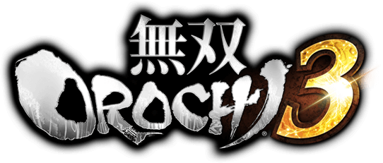 ▶前传 故事之始
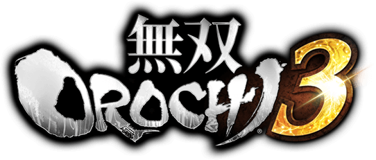
远吕智的「异世界」、人类奋战的史诗
蛇魔・远吕智在妲己的协助下逃狱，为了满足「被强者打倒」的夙愿，融合两个人界的时空，创造了前无古人、后无来者的异世界。远吕智碾压人类，人类被逼出潜力，声讨远吕智，并成功将之打倒。但是，清盛和妲己又将远吕智复活，并使他觉醒为更加强大的真・远吕智。人类结成三国联盟与戦国同盟对抗，终于再次将之击倒。
数年后，由于妲己和清盛的暗中活跃，远吕智被错误地复活，变成了吞噬异世界的妖蛇和碎片・酒吞童子。妖魔大闹，妖蛇和妖魔一度将世界推至毁灭的边缘。绝望的最后「三杰」在辉夜的「回溯之力」下回到过去，欲阻止一切的发生。
「三杰」一路救援了众多伙伴，成功集结所有的人类，包括妲己。然而人类中了妲己的圈套，远吕智再次被错误地复活，妖蛇的诞生不可避免。人类利用酒吞童子的精华创造的兵器「八盐折」被证明对妖蛇作战有效，于是浩浩荡荡讨伐妖蛇，成功将之逼退。
但是妖蛇却变成了异世界毁灭意志的集合体、「绝对的破坏神」真・远吕智。人类与远吕智最后的决战展开。人类全力击倒了破坏神，异世界震动、崩溃，仙人们将人类送回原来的时空。
数年后，由于妲己和清盛的暗中活跃，远吕智被错误地复活，变成了吞噬异世界的妖蛇和碎片・酒吞童子。妖魔大闹，妖蛇和妖魔一度将世界推至毁灭的边缘。绝望的最后「三杰」在辉夜的「回溯之力」下回到过去，欲阻止一切的发生。
「三杰」一路救援了众多伙伴，成功集结所有的人类，包括妲己。然而人类中了妲己的圈套，远吕智再次被错误地复活，妖蛇的诞生不可避免。人类利用酒吞童子的精华创造的兵器「八盐折」被证明对妖蛇作战有效，于是浩浩荡荡讨伐妖蛇，成功将之逼退。
但是妖蛇却变成了异世界毁灭意志的集合体、「绝对的破坏神」真・远吕智。人类与远吕智最后的决战展开。人类全力击倒了破坏神，异世界震动、崩溃，仙人们将人类送回原来的时空。
宙斯打造「手环」再现异界、洛基的计划
奥林匹斯主神・宙斯得到盖亚的消息，对奥丁产生警戒，打算将奥丁封在异世界中解决他。宙斯用「水镜」发现一个充满人类强者的异世界，这里的人类两次打倒蛇魔・远吕智，还跨越了灾难级的强大怪物・妖蛇及世界的意志・破坏神，令宙斯虎躯一震。于是宙斯声称「对跨越数次危机的人类十分感兴趣」，打算利用蛇神美杜莎的头发、蛇魔远吕智的巨镰炼成八枚「衔尾蛇手环」，重现远吕智的异世界。
听闻此事，洛基为了取得奥丁的信任，向之禀报，奥林匹斯众神将重现东方「破坏神」打造的异世界，并且将进入里面。「破坏神」之力是毁灭的力量，而异世界之力是能带来毁灭的力量。奥丁大喜，便让洛基接近宙斯，取得其信任。 洛基与宙斯不约而同，都打算将奥丁封在异世界中。洛基的愿望就是杀害奥丁，他打算趁奥丁完成「世界树」、准备毁灭世界的瞬间杀之，连同整个异世界一同消灭。于是洛基便前往东方仙界盗走远吕智之镰。因为珀尔修斯已死，洛基化作「珀尔修斯」接近宙斯，献之以巨镰。
万事俱备，宙斯向「水镜」投入「手环」，再现了远吕智的异世界。「珀尔修斯」趁宙斯、雅典娜、阿瑞斯不备，夺走手环，受到雅典娜的追击。洛基向异世界和仙界投放手环（有的已经注入了神力），并归还了巨镰。
听闻此事，洛基为了取得奥丁的信任，向之禀报，奥林匹斯众神将重现东方「破坏神」打造的异世界，并且将进入里面。「破坏神」之力是毁灭的力量，而异世界之力是能带来毁灭的力量。奥丁大喜，便让洛基接近宙斯，取得其信任。 洛基与宙斯不约而同，都打算将奥丁封在异世界中。洛基的愿望就是杀害奥丁，他打算趁奥丁完成「世界树」、准备毁灭世界的瞬间杀之，连同整个异世界一同消灭。于是洛基便前往东方仙界盗走远吕智之镰。因为珀尔修斯已死，洛基化作「珀尔修斯」接近宙斯，献之以巨镰。
万事俱备，宙斯向「水镜」投入「手环」，再现了远吕智的异世界。「珀尔修斯」趁宙斯、雅典娜、阿瑞斯不备，夺走手环，受到雅典娜的追击。洛基向异世界和仙界投放手环（有的已经注入了神力），并归还了巨镰。
「世界树」扎根于异世界
奥丁打破时空的缝隙，介入异世界，将「世界树」种在成都-严岛，用「能带来毁灭的力量」=异世界之力滋养，占领了徐州-三增峠、官渡、定军山，异界之力不断聚集到奥丁身上，「世界树」发芽，奥丁因此打算注入「破坏神」之力使其快高长大。奥丁听说「手环」的使用可使得他更多地介入异世界，于是开始寻找手环。
仙界的对策
3 5章外伝 仙界に迫る罠
宙斯刚完成融合世界的同时，仙界还是一片祥和。某日，太公望收到自称是伏羲的书信，邀请他前往仙界某处。无独有偶，伏羲也收到自称是太公望的书信，也前往相同之地。两人到达，面面相觑，大眼瞪小眼，发现被不明的军队和怪物包围。三藏也到达，正被怪物围攻。伏羲发现怪物会互相攻伐，并发现了怪物的操纵者。太公望提议伏羲进攻操纵者，太公望沿小路救援三藏。伏羲杀入怪物中间击败了操纵者，怪物失去控制，互相攻击，太公望便成功趁乱救出三藏。这时，辉夜、神农也到达，发现中计，被怪物包围。太公望、伏羲、三藏救出两人后为其治疗，洛基率军登场。各个仙界将击破怪物的操纵者进攻洛基，将之击退。洛基称仙界将是他们在人界的威胁。
仙界将们感受到时空的异变，是那个「异世界」的熟悉感。但是，由于远吕智的不在导致异世界非常不稳定，无法承受太多神仙这种强大力量的介入。仙界将们发现了一枚「手环」，结合先前的「远吕智之镰丢失事件」，看出其由远吕智之镰刀打造，确定这就是异世界再现的原因。由于手环可以注入力量，仙界将们假设活用凭依的神力将使异界逐渐能够承受巨大的力量。于是仙界将们商定，将在仙界中注入伊奘诺尊的神力，让哪吒进入异世界寻找协助者。在异世界漫游的哪吒，遇上了人类的魔王・信长……
宙斯刚完成融合世界的同时，仙界还是一片祥和。某日，太公望收到自称是伏羲的书信，邀请他前往仙界某处。无独有偶，伏羲也收到自称是太公望的书信，也前往相同之地。两人到达，面面相觑，大眼瞪小眼，发现被不明的军队和怪物包围。三藏也到达，正被怪物围攻。伏羲发现怪物会互相攻伐，并发现了怪物的操纵者。太公望提议伏羲进攻操纵者，太公望沿小路救援三藏。伏羲杀入怪物中间击败了操纵者，怪物失去控制，互相攻击，太公望便成功趁乱救出三藏。这时，辉夜、神农也到达，发现中计，被怪物包围。太公望、伏羲、三藏救出两人后为其治疗，洛基率军登场。各个仙界将击破怪物的操纵者进攻洛基，将之击退。洛基称仙界将是他们在人界的威胁。
仙界将们感受到时空的异变，是那个「异世界」的熟悉感。但是，由于远吕智的不在导致异世界非常不稳定，无法承受太多神仙这种强大力量的介入。仙界将们发现了一枚「手环」，结合先前的「远吕智之镰丢失事件」，看出其由远吕智之镰刀打造，确定这就是异世界再现的原因。由于手环可以注入力量，仙界将们假设活用凭依的神力将使异界逐渐能够承受巨大的力量。于是仙界将们商定，将在仙界中注入伊奘诺尊的神力，让哪吒进入异世界寻找协助者。在异世界漫游的哪吒，遇上了人类的魔王・信长……
信长天下布武
信长得到手环「伊奘诺尊」，开始为仙界开路。织田军联合北条、今川、董卓、张绣等群雄，在异世界肆意扩张、寻找手环的适用者，发挥手环的力量。另一方面，较晚卷入异世界的刘备不知详情，与武田、上杉联合，建立「叛军」，对抗信长。而这也是信长和仙人的期望……
奥丁找到手环
奥丁找到一枚手环，注入其子、雷神・托尔之力，弃之于野，被吕布军拾到。乱世的鬼神・吕布与托尔之力共鸣，神格化。奥丁用「跟着我就能不停战斗」笼络吕布，吕布加入奥丁军。
▶其一 信长包围网
再踏异界
3 1章#1 不可思議なる世界へ
德川和羽柴即将在小牧长久手开战。忠胜、直虎、直政在前往小牧山的途中，经过浓雾，来到未踏之地・小沛，与中国三国时代的吕布军遭遇，被神格化的吕布击败。
3 1章#2 見知らぬ敵
忠胜一行撤退途中，在广陵-长谷堂又遇到了吴军。原来吴军本想在广陵迎击魏军的侵略，却意外经历了浓雾，忠胜一行被当成魏军。忠胜一行在小牧山见识了神锚和吕布的神力，又在此获得了神器。神锚源源不断着散发着神力，他们用神器施展出强大的力量。忠胜一行突破吴军先遣部队，直奔大将孙权，打败陆逊，成功与孙权会谈。孙权决定与忠胜一行联合。
3 1章#3 暴虐なる凶星
有一天，吴军侦察部队带来董卓袭击村庄的情报。吴・德川军为了拯救百姓前往九州的村庄，与阻止董卓施暴的马超、兼续、关银屏共斗。董卓败退，织田军浓姬、义元前来搜寻董卓。吴・德川军与马超一行击败浓姬和义元，得知他们的背后是信长。马超判断出忠胜、孙权是异世界的「新人」，将他们带到蜀・上杉的根据地。
德川和羽柴即将在小牧长久手开战。忠胜、直虎、直政在前往小牧山的途中，经过浓雾，来到未踏之地・小沛，与中国三国时代的吕布军遭遇，被神格化的吕布击败。
3 1章#2 見知らぬ敵
忠胜一行撤退途中，在广陵-长谷堂又遇到了吴军。原来吴军本想在广陵迎击魏军的侵略，却意外经历了浓雾，忠胜一行被当成魏军。忠胜一行在小牧山见识了神锚和吕布的神力，又在此获得了神器。神锚源源不断着散发着神力，他们用神器施展出强大的力量。忠胜一行突破吴军先遣部队，直奔大将孙权，打败陆逊，成功与孙权会谈。孙权决定与忠胜一行联合。
3 1章#3 暴虐なる凶星
有一天，吴军侦察部队带来董卓袭击村庄的情报。吴・德川军为了拯救百姓前往九州的村庄，与阻止董卓施暴的马超、兼续、关银屏共斗。董卓败退，织田军浓姬、义元前来搜寻董卓。吴・德川军与马超一行击败浓姬和义元，得知他们的背后是信长。马超判断出忠胜、孙权是异世界的「新人」，将他们带到蜀・上杉的根据地。
织田、叛军二分天下
3 2章#1 武田救援戦
蜀・上杉组成叛军，其敌人・织田联合了北条、今川、董卓、张绣等群雄，在异世界肆意扩张，其下一手便是蜀的友军・武田。可谓织田与叛军二分天下。刘备、孙权、谦信率军前往川中岛救援信玄和幸村、信之兄弟。在织田军攻击下，武田军几近歼灭。突然，信长脱离战场，张绣军贾诩猜不透信长的心思，看到叛军众志成城，于是脱离织田，遭到织田军攻击。叛军救出贾诩后，信长现身袭击幸村。神格化的信长执剑刺向幸村，一名神秘的青年突然蹿出阻止。青年自称「珀尔修斯」，欲夺走信长的手环。刘备愤怒于布武的信长，将之击退。众人对蛇形的手环陷入沉思，蛇、强大的力量、跨越时空的人和物——这一切仿佛似曾相识。而且珀尔修斯似乎了解这个世界的事情。由于叛军不知珀尔修斯去向，只知道珀尔修斯也在搜寻手环，决定展开手环的搜寻，说不定能来个偶遇。贾诩成为了叛军的军师。
3 2章#2 上杉救援戦
绫御前、景胜向叛军发来救援请求，幸村、兼续、谦信、孙权前往徐州-三增峠，再一次面对织田的大军。织田军大将徐晃、太史慈由于被信长搭救而加入信长，这次被叛军打败而加入叛军。
3 2章#3 織田同盟軍瓦解戦
叛军意识到与织田军的战力差，着手离间织田的同盟对象。离间计正是贾诩的拿手好计，贾诩建议先拉拢今川。然而到达今川领地・许昌的叛军发现自己的行动好像被预知一样，董卓和袁绍也集聚在此。贾诩对直政、朱然分别下达与义元踢球、进军至袁绍而不动的指令，结果获得了义元的欢心、使本不愿与暴君为伍的袁绍的良心受到谴责。董卓感到自己腹背受敌，仓皇而逃，这时贾诩现身，以武田军为伏兵，包围董卓，却让他逃了。玉子抓扯袁绍的胡须，袁绍出阵，孙市助阵；另一边，义元豹变，令直政为之一颤。叛军击败两方，收袁绍军、今川军、玉子和孙市。孙市指出还有别的手环，恰巧直虎捡到了一枚，袁绍将之佩戴，毫无反应，看来手环要发挥力量，还有别的条件……（那就是：人气！w）
蜀・上杉组成叛军，其敌人・织田联合了北条、今川、董卓、张绣等群雄，在异世界肆意扩张，其下一手便是蜀的友军・武田。可谓织田与叛军二分天下。刘备、孙权、谦信率军前往川中岛救援信玄和幸村、信之兄弟。在织田军攻击下，武田军几近歼灭。突然，信长脱离战场，张绣军贾诩猜不透信长的心思，看到叛军众志成城，于是脱离织田，遭到织田军攻击。叛军救出贾诩后，信长现身袭击幸村。神格化的信长执剑刺向幸村，一名神秘的青年突然蹿出阻止。青年自称「珀尔修斯」，欲夺走信长的手环。刘备愤怒于布武的信长，将之击退。众人对蛇形的手环陷入沉思，蛇、强大的力量、跨越时空的人和物——这一切仿佛似曾相识。而且珀尔修斯似乎了解这个世界的事情。由于叛军不知珀尔修斯去向，只知道珀尔修斯也在搜寻手环，决定展开手环的搜寻，说不定能来个偶遇。贾诩成为了叛军的军师。
3 2章#2 上杉救援戦
绫御前、景胜向叛军发来救援请求，幸村、兼续、谦信、孙权前往徐州-三增峠，再一次面对织田的大军。织田军大将徐晃、太史慈由于被信长搭救而加入信长，这次被叛军打败而加入叛军。
3 2章#3 織田同盟軍瓦解戦
叛军意识到与织田军的战力差，着手离间织田的同盟对象。离间计正是贾诩的拿手好计，贾诩建议先拉拢今川。然而到达今川领地・许昌的叛军发现自己的行动好像被预知一样，董卓和袁绍也集聚在此。贾诩对直政、朱然分别下达与义元踢球、进军至袁绍而不动的指令，结果获得了义元的欢心、使本不愿与暴君为伍的袁绍的良心受到谴责。董卓感到自己腹背受敌，仓皇而逃，这时贾诩现身，以武田军为伏兵，包围董卓，却让他逃了。玉子抓扯袁绍的胡须，袁绍出阵，孙市助阵；另一边，义元豹变，令直政为之一颤。叛军击败两方，收袁绍军、今川军、玉子和孙市。孙市指出还有别的手环，恰巧直虎捡到了一枚，袁绍将之佩戴，毫无反应，看来手环要发挥力量，还有别的条件……（那就是：人气！w）
妖魔登场
3U 2章外伝 妲己の探し物
在叛军与织田军战斗的同时，妲己、清盛也被卷入异世界。他们的目的自不用说，当然是「一而再、再而三地复活远吕智」。而仙宫之神王・奥丁为了自己的目的，正好也有此意，因为他要注入「破坏神」之力使「世界树」快高长大，就与妲己联手，助其复活远吕智。相对地，为了更加干涉异世界，他要妖魔帮他寻找手环。仙宫之神王・奥丁命妲己搜索附有神之力的「手环」，妲己、清盛带着小弟悟空和妖魔来到九州。妲己、清盛面面相觑，互不知手环的下落。无奈他们只能向「附近的人」询问，碰巧遇到了刚卷入异世界的钟会和官兵卫。妲己劝诱钟会和官兵卫加入，被拒绝。风魔寻找手环也来到九州，与悟空斗了一番分身奇技，跑了。正当妲己觉得无从下手，义经和弁庆卷入异世界，受到奥林匹斯怪物的袭击。清盛很看好义经，要妲己笼络他们。妲己也对义经评价很高，就打算卖他个人情。义经见到妲己穿着如此暴露，眼睛都不知往哪放。妲己将他们救出，强行要他们撤退疗伤，义经果然表示要回报恩情，清盛暗自窃喜。妲己发现远处是伊达军，就过去捉弄他们，路遇剑豪・武藏、小次郎乱入，被悟空击退。妲己继续进攻魏-伊达军的城池，击败政宗。但政宗也没有任何关于手环的消息，于是妲己和清盛准备追踪风魔……
但是，妲己和清盛表面笑嘻嘻，暗地却想方设法利用并铲除对方，可谓冤家路窄。奥丁将吕布派到妲己一方，于是，吕布和妲己联手了……
在叛军与织田军战斗的同时，妲己、清盛也被卷入异世界。他们的目的自不用说，当然是「一而再、再而三地复活远吕智」。而仙宫之神王・奥丁为了自己的目的，正好也有此意，因为他要注入「破坏神」之力使「世界树」快高长大，就与妲己联手，助其复活远吕智。相对地，为了更加干涉异世界，他要妖魔帮他寻找手环。仙宫之神王・奥丁命妲己搜索附有神之力的「手环」，妲己、清盛带着小弟悟空和妖魔来到九州。妲己、清盛面面相觑，互不知手环的下落。无奈他们只能向「附近的人」询问，碰巧遇到了刚卷入异世界的钟会和官兵卫。妲己劝诱钟会和官兵卫加入，被拒绝。风魔寻找手环也来到九州，与悟空斗了一番分身奇技，跑了。正当妲己觉得无从下手，义经和弁庆卷入异世界，受到奥林匹斯怪物的袭击。清盛很看好义经，要妲己笼络他们。妲己也对义经评价很高，就打算卖他个人情。义经见到妲己穿着如此暴露，眼睛都不知往哪放。妲己将他们救出，强行要他们撤退疗伤，义经果然表示要回报恩情，清盛暗自窃喜。妲己发现远处是伊达军，就过去捉弄他们，路遇剑豪・武藏、小次郎乱入，被悟空击退。妲己继续进攻魏-伊达军的城池，击败政宗。但政宗也没有任何关于手环的消息，于是妲己和清盛准备追踪风魔……
但是，妲己和清盛表面笑嘻嘻，暗地却想方设法利用并铲除对方，可谓冤家路窄。奥丁将吕布派到妲己一方，于是，吕布和妲己联手了……
手环与异世界的秘密
3 2章#4 混沌の化身
叛军从义元和袁绍处听说信长派风魔搜寻手环，于是信玄、幸村、女忍、袁绍等追踪风魔到广宗，路遇同样追踪风魔的妲己、清盛和吕玲绮。这是叛军「第一次」遇上妖魔军。叛军突破妖魔、夏侯霸后压制北条军、捉拿风魔，却还是被他逃了。担当风魔护卫的甲斐姬和早川殿自认被氏康蒙在鼓里，为了确认手环的危险性，决定加入叛军一方。夏侯霸也跟着早川殿加入，叛军将广宗占领。
3 2章#5 劉備救援戦
另一方面，珀尔修斯为了抢夺信长的手环，受到信长的反击，为了寻求刘备帮助来到蜀军的大本营・桶狭间，被信长、司马昭一路追击，刘备军也几近歼灭。幸村、玉子成功协助刘备、珀尔修斯逃亡，珀尔修斯告诉众人手环的秘密——
手环是由奥林匹斯众神之王・宙斯制作的。强大的宙斯对跨越数次危机的人类十分感兴趣，利用蛇神美杜莎的头发、蛇魔远吕智的巨镰炼成八枚「衔尾蛇手环」，重现了远吕智的异世界，珀尔修斯声称宙斯这样做将给人类带来苦难，于是夺走了宙斯的手环，受到雅典娜的追击。仓皇无措的珀尔修斯在进入异世界途中遗失了手环，某一日与拥有手环的信长遭遇，不敌，又得知刘备是叛军的统领，决定投靠刘备。珀尔修斯自称是美杜莎的讨伐者、宙斯之子，因此有责任协助叛军。
叛军从义元和袁绍处听说信长派风魔搜寻手环，于是信玄、幸村、女忍、袁绍等追踪风魔到广宗，路遇同样追踪风魔的妲己、清盛和吕玲绮。这是叛军「第一次」遇上妖魔军。叛军突破妖魔、夏侯霸后压制北条军、捉拿风魔，却还是被他逃了。担当风魔护卫的甲斐姬和早川殿自认被氏康蒙在鼓里，为了确认手环的危险性，决定加入叛军一方。夏侯霸也跟着早川殿加入，叛军将广宗占领。
3 2章#5 劉備救援戦
另一方面，珀尔修斯为了抢夺信长的手环，受到信长的反击，为了寻求刘备帮助来到蜀军的大本营・桶狭间，被信长、司马昭一路追击，刘备军也几近歼灭。幸村、玉子成功协助刘备、珀尔修斯逃亡，珀尔修斯告诉众人手环的秘密——
手环是由奥林匹斯众神之王・宙斯制作的。强大的宙斯对跨越数次危机的人类十分感兴趣，利用蛇神美杜莎的头发、蛇魔远吕智的巨镰炼成八枚「衔尾蛇手环」，重现了远吕智的异世界，珀尔修斯声称宙斯这样做将给人类带来苦难，于是夺走了宙斯的手环，受到雅典娜的追击。仓皇无措的珀尔修斯在进入异世界途中遗失了手环，某一日与拥有手环的信长遭遇，不敌，又得知刘备是叛军的统领，决定投靠刘备。珀尔修斯自称是美杜莎的讨伐者、宙斯之子，因此有责任协助叛军。
叛军反攻信长
3 2章#6 相模の獅子
叛军为了深挖信长隐藏的秘密，进攻氏康。由于氏康在宛-小田原城坚守，法正宣称以「毒水」混入水源，激起马超的义愤，马超的冲动以及法正对水源的确保成功向北条家散播谣言，法正救援被风魔伏兵袭击的马超，也和马超归好。叛军最后攻陷小田原城，收编北条军、曹仁、乐进、风魔。然而，氏康投降蜀・上杉好像是被信长设计一样……
3 2章#7 凶悪なる難敵
风魔向叛军透露，信长收集到的手环现在还只有一枚，恰与叛军相同。叛军想着比信长、妲己等人更快找到其他手环就可实现弯道超车。直虎担心旧主・家康的安危，恰巧前线来报，德川家康率领的军队在建业-三方原受到吕布、妲己袭击。直虎、陆逊、忠胜等人前往救援。原来妲己因说得家康失败而追杀家康。钟会不知出于什么原因在妲己军中。吕布追家康、吕玲绮追稻姬，直虎受护君之心驱使，在吕布面前神格化，与之大战。于是手环的使用方法判明，叛军突破吕布，进攻妲己。妲己先羞辱了直虎的羞耻装扮一番，打算趁直虎害羞的空隙抢夺手环，失败。家康判断形势，受陆逊之邀加入叛军。陆逊冥冥之中想起妲己身旁的巨大的存在……
3 2章外伝 剣豪と人斬り
叛军的后方阵地・广宗突然遭到董卓进攻。陆逊、朱然前往击退，收服流浪的武藏、小次郎两人。
3 2章#8 独眼竜と鬼才
叛军向驻扎在手取川的信长的盟友魏・伊达联合派出使者，魏・伊达拒之，开始准备防守。刘备率徐庶、张飞、景胜、信之等与之交战。面对魏军大将・司马懿，徐庶想起了诸葛亮。徐庶看出司马懿配置了伏兵，却没料到司马懿实际想夹击。徐庶判断难保本阵，下令全军突破，转移阵地。这时，关羽、诸葛亮、月英率军前来，与刘备汇合。诸葛亮一到，就已经准备了计策。他将刘备军一分为二、并宣扬自己的到临，司马懿怀疑是叛军的策略，增兵追击。这时，诸葛亮利用刘备为饵，突破薄弱的防守，已兵临魏・伊达本阵。司马懿大惊，奥州之龙・政宗见过卧龙・诸葛亮，也来挑战。诸葛亮击败二将，从徐庶获知异世界的细节。败阵的魏・伊达表示，虽然臣服于信长的怪异力量，却一直等待叛变的时机，趁此机会加入叛军。珀尔修斯询问司马懿，信长是否与宙斯联手，司马懿、政宗回答，信长的手环是受人托付而来的，但信长绝不会屈服任何人……
3 2章#9 江東の猛き虎
刘备、孙权、武田、上杉、袁绍、北条、德川、司马懿、伊达……日渐壮大的叛军，其盟友只剩下信长的盟友・孙坚。为了更加削弱信长，孙权前往官渡说服父亲孙坚。然而，义气的孙坚因有与信长的盟约在身，非要与孙权一战才肯加入，周瑜也期待陆逊的成长。孙权与二乔以及昔日的伙伴内战，感到非常迷惘，被孙坚看在眼里。孙坚撤退，让孙策领兵。陆逊见大势不妙，在孙坚军前装苦肉计，抵抗了周瑜数波援军后，等来了叛军的援军，展开包围作战。孙坚率孙尚香再次上场，氏康跃跃欲试，进攻孙坚，命女儿早川殿攻孙尚香，孙权则是击败兄长孙策、周瑜后与氏康合流，击破孙坚。看见成长了的孙权与陆逊，孙坚、孙策、周瑜甚感欣慰，加入叛军。氏康和孙坚都不告诉孙权信长的用意，孙权决定要不断挑战信长。
叛军为了深挖信长隐藏的秘密，进攻氏康。由于氏康在宛-小田原城坚守，法正宣称以「毒水」混入水源，激起马超的义愤，马超的冲动以及法正对水源的确保成功向北条家散播谣言，法正救援被风魔伏兵袭击的马超，也和马超归好。叛军最后攻陷小田原城，收编北条军、曹仁、乐进、风魔。然而，氏康投降蜀・上杉好像是被信长设计一样……
3 2章#7 凶悪なる難敵
风魔向叛军透露，信长收集到的手环现在还只有一枚，恰与叛军相同。叛军想着比信长、妲己等人更快找到其他手环就可实现弯道超车。直虎担心旧主・家康的安危，恰巧前线来报，德川家康率领的军队在建业-三方原受到吕布、妲己袭击。直虎、陆逊、忠胜等人前往救援。原来妲己因说得家康失败而追杀家康。钟会不知出于什么原因在妲己军中。吕布追家康、吕玲绮追稻姬，直虎受护君之心驱使，在吕布面前神格化，与之大战。于是手环的使用方法判明，叛军突破吕布，进攻妲己。妲己先羞辱了直虎的羞耻装扮一番，打算趁直虎害羞的空隙抢夺手环，失败。家康判断形势，受陆逊之邀加入叛军。陆逊冥冥之中想起妲己身旁的巨大的存在……
3 2章外伝 剣豪と人斬り
叛军的后方阵地・广宗突然遭到董卓进攻。陆逊、朱然前往击退，收服流浪的武藏、小次郎两人。
3 2章#8 独眼竜と鬼才
叛军向驻扎在手取川的信长的盟友魏・伊达联合派出使者，魏・伊达拒之，开始准备防守。刘备率徐庶、张飞、景胜、信之等与之交战。面对魏军大将・司马懿，徐庶想起了诸葛亮。徐庶看出司马懿配置了伏兵，却没料到司马懿实际想夹击。徐庶判断难保本阵，下令全军突破，转移阵地。这时，关羽、诸葛亮、月英率军前来，与刘备汇合。诸葛亮一到，就已经准备了计策。他将刘备军一分为二、并宣扬自己的到临，司马懿怀疑是叛军的策略，增兵追击。这时，诸葛亮利用刘备为饵，突破薄弱的防守，已兵临魏・伊达本阵。司马懿大惊，奥州之龙・政宗见过卧龙・诸葛亮，也来挑战。诸葛亮击败二将，从徐庶获知异世界的细节。败阵的魏・伊达表示，虽然臣服于信长的怪异力量，却一直等待叛变的时机，趁此机会加入叛军。珀尔修斯询问司马懿，信长是否与宙斯联手，司马懿、政宗回答，信长的手环是受人托付而来的，但信长绝不会屈服任何人……
3 2章#9 江東の猛き虎
刘备、孙权、武田、上杉、袁绍、北条、德川、司马懿、伊达……日渐壮大的叛军，其盟友只剩下信长的盟友・孙坚。为了更加削弱信长，孙权前往官渡说服父亲孙坚。然而，义气的孙坚因有与信长的盟约在身，非要与孙权一战才肯加入，周瑜也期待陆逊的成长。孙权与二乔以及昔日的伙伴内战，感到非常迷惘，被孙坚看在眼里。孙坚撤退，让孙策领兵。陆逊见大势不妙，在孙坚军前装苦肉计，抵抗了周瑜数波援军后，等来了叛军的援军，展开包围作战。孙坚率孙尚香再次上场，氏康跃跃欲试，进攻孙坚，命女儿早川殿攻孙尚香，孙权则是击败兄长孙策、周瑜后与氏康合流，击破孙坚。看见成长了的孙权与陆逊，孙坚、孙策、周瑜甚感欣慰，加入叛军。氏康和孙坚都不告诉孙权信长的用意，孙权决定要不断挑战信长。
手环争夺战
3 2章#10 腕輪防衛戦
信长终于派光秀前往长筱抢夺叛军的手环。珀尔修斯看到这边有司马懿、玉子，那边有司马师、司马懿、光秀，异世界充斥着家族内战。哪吒为了与手环持有者对战而乱入战场，袭击叛军。直虎只好神格化挑战哪吒。哪吒被击败，判断叛军力量已足以与信长抗衡。司马兄弟再次出现，这次被司马懿、张春华击败，投降。原来司马兄弟进入异世界后受信长搭救而成为其手下。光秀只好亲自出阵抢夺手环，被叛军击破。
3 2章#11 女神に従いし若き龍
风魔、女忍发现了新的手环，刘备、幸村、关银屏、珀尔修斯随之前往定军山，发现了对方是雅典娜率领的奥林匹斯兵以及赵云、关兴、关索为首的蜀军。珀尔修斯、幸村到达雅典娜面前，珀尔修斯与雅典娜大打出手，让幸村成功抢夺手环，神格化的幸村将要对雅典娜使出当头一击，赵云突然出现，手环共鸣，也神格化，两个使枪专家开始了商业互吹。叛军总算击退了雅典娜军，刘备认为赵云必有隐情，果不其然，鲍三娘来向刘备求助。原来雅典娜胁刘禅以令蜀将，刘备感到非常不高兴……
信长终于派光秀前往长筱抢夺叛军的手环。珀尔修斯看到这边有司马懿、玉子，那边有司马师、司马懿、光秀，异世界充斥着家族内战。哪吒为了与手环持有者对战而乱入战场，袭击叛军。直虎只好神格化挑战哪吒。哪吒被击败，判断叛军力量已足以与信长抗衡。司马兄弟再次出现，这次被司马懿、张春华击败，投降。原来司马兄弟进入异世界后受信长搭救而成为其手下。光秀只好亲自出阵抢夺手环，被叛军击破。
3 2章#11 女神に従いし若き龍
风魔、女忍发现了新的手环，刘备、幸村、关银屏、珀尔修斯随之前往定军山，发现了对方是雅典娜率领的奥林匹斯兵以及赵云、关兴、关索为首的蜀军。珀尔修斯、幸村到达雅典娜面前，珀尔修斯与雅典娜大打出手，让幸村成功抢夺手环，神格化的幸村将要对雅典娜使出当头一击，赵云突然出现，手环共鸣，也神格化，两个使枪专家开始了商业互吹。叛军总算击退了雅典娜军，刘备认为赵云必有隐情，果不其然，鲍三娘来向刘备求助。原来雅典娜胁刘禅以令蜀将，刘备感到非常不高兴……
宿命的对决、刘备 vs 信长
3 2章#12 決戦・第六天魔王
敌人就在本能寺……！舍弃迷惘的刘备率军进攻信长，击退了乱入的哪吒、一路迈进本能寺，却发现信长不在。信长要考验刘备，火烧本能寺，哪吒再次阻挠，被击破后告诉叛军逃脱小路。刘备逃出火海，与寺外的关银屏、信之汇合。刘备等合力挑战信长，终于将他击倒，人类内战在此结束。
敌人就在本能寺……！舍弃迷惘的刘备率军进攻信长，击退了乱入的哪吒、一路迈进本能寺，却发现信长不在。信长要考验刘备，火烧本能寺，哪吒再次阻挠，被击破后告诉叛军逃脱小路。刘备逃出火海，与寺外的关银屏、信之汇合。刘备等合力挑战信长，终于将他击倒，人类内战在此结束。
信长的用意、仙人介入异界
直虎向前询问信长的用意。这时，「三皇」之一的女娲出现，解释信长在为仙界开辟道路，并且向叛军介绍昔日的魔王・远吕智。原来珀尔修斯掉落的其中一个手环在仙界被发现，女娲将之托付给哪吒后，交给产生反应的信长。信长发现手环的发动条件就是危急之时，要哪吒全力战斗。由远吕智之镰刀做成的手环，其功能有二，一是融合三国与戦国的世界，重现远吕智的异世界，然而远吕智的不在导致异世界非常不稳定，无法承受太多神仙这种强大力量的介入，于是只派了哪吒进来。于是，第二个功能、活用凭依的神仙力量使这个世界逐渐能够承受巨大的力量，雅典娜、女娲因此能够踏足异世界。因此信长所为的一切不仅是为了测试叛军的信念，也是为了寻找手环的适用者，使其发挥力量，以引入仙兵。
珀尔修斯向女娲、哪吒发问为何仙界会发现手环，女娲表示浑然不知，哪吒也表示不知何时远吕智之镰凭空消失，发现手环后自己又回来了。
叛军势力与信长势力联合，受信长搭救的诸葛诞、郭淮、文鸯也加入。人类再次集结。
另一边，阿瑞斯分别对曹丕、秀吉做出口头协定，以手环作担保，宙斯将成为君临异世界的「神王」、曹丕/秀吉作为「人王」共治天下。
珀尔修斯向女娲、哪吒发问为何仙界会发现手环，女娲表示浑然不知，哪吒也表示不知何时远吕智之镰凭空消失，发现手环后自己又回来了。
叛军势力与信长势力联合，受信长搭救的诸葛诞、郭淮、文鸯也加入。人类再次集结。
另一边，阿瑞斯分别对曹丕、秀吉做出口头协定，以手环作担保，宙斯将成为君临异世界的「神王」、曹丕/秀吉作为「人王」共治天下。
▶其二 神军穷追
奥林匹斯军来袭
3 3章#1 オリュンポスの神々
叛军与织田军及仙界将女娲、哪吒组成联合军。奥林匹斯雅典娜、阿瑞斯率军进攻樊城上杉军，人与神的战争打响。
在奥林匹斯军中见有秀吉、三成、曹丕、赵云的身影。阿瑞斯扬言要占领异世界，雅典娜则是为了追捕偷走手环的叛徒・珀尔修斯。联合军救出谦信、绫御前、景胜、兼续，遭到奥林匹斯增援大军的来袭。女娲、哪吒殿后，以让联合军撤退。女娲对雅典娜・神格化赵云、哪吒对阿瑞斯・神格化曹丕。激斗正酣，一条绿柱从天贯通大地，素戋呜降临。素戋呜也拦截奥林匹斯神，刘备、幸村、关银屏撤退，受到丰臣军追击。联合军突破追击，与诸葛亮的船汇合。
3 3章#2 新たなる知者たち
联合军撤退的路上遇到不明军队与奥林匹斯军战斗，原来是新进异世界的众智者・庞统、鲁肃、半兵卫与打算伏击联合军的奥林匹斯伏兵遭遇。诸葛亮将撤退的上杉军和联合军送走，亲自率军支援庞统一行，奇袭奥林匹斯军。万事俱备，军师们各施其策，打算上演华丽的赤壁大战。半兵卫的伏兵、鲁肃的齐射、庞统的铁索连环、诸葛亮的火计……阿瑞斯、曹丕来袭，诸葛亮火烧赤壁，挥军撤退，一路上突破阿瑞斯配置的伏兵，扬长而去，并与女娲、哪吒、素戋呜汇合。
联合军对在樊城、赤壁见到的奥林匹斯怪物很疑惑，希望能将他们变成伙伴，这时，仙人・左慈向他们发出了一则报告……
3 3章#3 怪物操りし神仙
比女娲等更早卷入异世界的左慈，暗地调查了奥林匹斯怪物的方法，收服了一些怪物等待联合军。联合军到达南中，发现左慈、周泰被包围，前往救援。左慈恢复自由后，元亲驾驭狮鹫兽、典韦率独眼兽登场，开始向众人介绍怪物的由来。原来怪物也是因为奥林匹斯神的介入才卷入此地，寻求依靠的怪物一旦认定主人就会效忠，因此左慈一行驾驭了怪物。于是女娲看穿左慈孤军奋战不过是为了测试怪物的力量。奥林匹斯军惊讶人类也能驾驭怪物，带来了幻灵干扰狮鹫兽和独眼兽，并且继续带来了更多怪兽。面对怪兽的威胁，周瑜生出一计，那就是擒贼先擒王，于是联合军顺利到达城门，这时左慈召唤了杀手锏・巨大幻灵，将敌人吓尿，突破城门扬长而去。战后，左慈介绍是怪物控・周泰、元亲、典韦想驯服异世界怪物，孙策也想起曾和周瑜大战怪物……
3 3章外伝 不屈の闘志
妖魔军妲己、吕布进攻周泰、曹仁、直政防守的吴领大阪城。曹仁一行击破前来包围的吕布军，救出横冲直撞的丰久，继续阻挡第二波进军，并击败吕布。妲己、陈宫遂炮击联合军，丰久冲锋陷阵，协助停止炮击。丰久率军继续冲锋，正遇孙权、朱然来援，转守为攻，破妲己。战后，孙权、曹仁、丰久开始了商业互吹。
3 3章#4 本能寺防衛戦
另一方面，雅典娜、曹丕袭击织田领、诸葛诞、家康镇守的本能寺。信长给予诸葛诞本能寺的地图和秘策。直虎、政宗、珀尔修斯一行前往支援。信长的计策其一，是司马昭、王元姬、马超等游击曹丕争取时间，同时直虎、珀尔修斯击破指挥的张郃。雅典娜军增援到达本能寺，诸葛诞、家康的防守即将崩溃之时，信长到来，同时，雅典娜也率丰臣军到达。王异也在丰臣军中，来追杀马超。联合军又来了一波孙吴援军，是新进的韩当、吕蒙和黄盖。援军就是信长的计策之二。联合军击退雅典娜和秀吉，成功防守本能寺。
3 3章外伝 百万一心
典韦、元就、隆景在定军山救援被妖魔袭击的百姓，再现一之谷之战的计策。诸葛亮、半兵卫、贾诩见证了三人的活跃。
叛军与织田军及仙界将女娲、哪吒组成联合军。奥林匹斯雅典娜、阿瑞斯率军进攻樊城上杉军，人与神的战争打响。
在奥林匹斯军中见有秀吉、三成、曹丕、赵云的身影。阿瑞斯扬言要占领异世界，雅典娜则是为了追捕偷走手环的叛徒・珀尔修斯。联合军救出谦信、绫御前、景胜、兼续，遭到奥林匹斯增援大军的来袭。女娲、哪吒殿后，以让联合军撤退。女娲对雅典娜・神格化赵云、哪吒对阿瑞斯・神格化曹丕。激斗正酣，一条绿柱从天贯通大地，素戋呜降临。素戋呜也拦截奥林匹斯神，刘备、幸村、关银屏撤退，受到丰臣军追击。联合军突破追击，与诸葛亮的船汇合。
3 3章#2 新たなる知者たち
联合军撤退的路上遇到不明军队与奥林匹斯军战斗，原来是新进异世界的众智者・庞统、鲁肃、半兵卫与打算伏击联合军的奥林匹斯伏兵遭遇。诸葛亮将撤退的上杉军和联合军送走，亲自率军支援庞统一行，奇袭奥林匹斯军。万事俱备，军师们各施其策，打算上演华丽的赤壁大战。半兵卫的伏兵、鲁肃的齐射、庞统的铁索连环、诸葛亮的火计……阿瑞斯、曹丕来袭，诸葛亮火烧赤壁，挥军撤退，一路上突破阿瑞斯配置的伏兵，扬长而去，并与女娲、哪吒、素戋呜汇合。
联合军对在樊城、赤壁见到的奥林匹斯怪物很疑惑，希望能将他们变成伙伴，这时，仙人・左慈向他们发出了一则报告……
3 3章#3 怪物操りし神仙
比女娲等更早卷入异世界的左慈，暗地调查了奥林匹斯怪物的方法，收服了一些怪物等待联合军。联合军到达南中，发现左慈、周泰被包围，前往救援。左慈恢复自由后，元亲驾驭狮鹫兽、典韦率独眼兽登场，开始向众人介绍怪物的由来。原来怪物也是因为奥林匹斯神的介入才卷入此地，寻求依靠的怪物一旦认定主人就会效忠，因此左慈一行驾驭了怪物。于是女娲看穿左慈孤军奋战不过是为了测试怪物的力量。奥林匹斯军惊讶人类也能驾驭怪物，带来了幻灵干扰狮鹫兽和独眼兽，并且继续带来了更多怪兽。面对怪兽的威胁，周瑜生出一计，那就是擒贼先擒王，于是联合军顺利到达城门，这时左慈召唤了杀手锏・巨大幻灵，将敌人吓尿，突破城门扬长而去。战后，左慈介绍是怪物控・周泰、元亲、典韦想驯服异世界怪物，孙策也想起曾和周瑜大战怪物……
3 3章外伝 不屈の闘志
妖魔军妲己、吕布进攻周泰、曹仁、直政防守的吴领大阪城。曹仁一行击破前来包围的吕布军，救出横冲直撞的丰久，继续阻挡第二波进军，并击败吕布。妲己、陈宫遂炮击联合军，丰久冲锋陷阵，协助停止炮击。丰久率军继续冲锋，正遇孙权、朱然来援，转守为攻，破妲己。战后，孙权、曹仁、丰久开始了商业互吹。
3 3章#4 本能寺防衛戦
另一方面，雅典娜、曹丕袭击织田领、诸葛诞、家康镇守的本能寺。信长给予诸葛诞本能寺的地图和秘策。直虎、政宗、珀尔修斯一行前往支援。信长的计策其一，是司马昭、王元姬、马超等游击曹丕争取时间，同时直虎、珀尔修斯击破指挥的张郃。雅典娜军增援到达本能寺，诸葛诞、家康的防守即将崩溃之时，信长到来，同时，雅典娜也率丰臣军到达。王异也在丰臣军中，来追杀马超。联合军又来了一波孙吴援军，是新进的韩当、吕蒙和黄盖。援军就是信长的计策之二。联合军击退雅典娜和秀吉，成功防守本能寺。
3 3章外伝 百万一心
典韦、元就、隆景在定军山救援被妖魔袭击的百姓，再现一之谷之战的计策。诸葛亮、半兵卫、贾诩见证了三人的活跃。
远吕智觉醒之键
3 3章#5 無邪気なる女王候補
由于使用手环导致神的降临，联合军展开今后是否继续使用手环的讨论，结果是使用手环引出宙斯，以询问其目的。联合军再次搜寻手环，得到荆州有被敬畏的人・卑弥呼的报告，元亲、司马懿和玉子不约而同，一探究竟。向「居民」（卑弥呼保护下的妖魔）询问情况的玉子一行遭到对方的攻击，原来阿瑞斯已经试图在此抢夺手环。听闻卑弥呼陷入危险，阿国、五右卫门来援，被击退；妲己、钟会也来，卑弥呼陶醉于妲己的美貌，倒向妲己一方。妲己受到联合军攻击，卑弥呼奋起，救援妲己。阿国犯花痴，倒向联合军一侧。联合军击退妲己、卑弥呼，卑弥呼跟着妲己跑了。五右卫门也在战后加入，告知联合军没听说过卑弥呼有什么「手环」，但是附近有祭蛇的「宝藏」……
3 3章外伝 天下の大泥棒たち
五右卫门得知敌人正在开发「凶恶的兵器」，打算与张飞、半兵卫、阿国去小谷城强行夺取设计图。五右卫门一行在城中大闹，结果张飞、半兵卫发现「凶恶的兵器」是五右卫门散播的谣言，五右卫门被痛打一顿。奥林匹斯军中的蜀将为捉拿盗贼前来，发现盗贼是张飞，大为不解，张飞成功被星彩、张苞鄙视，变成了五右卫门口中的「凶恶的兵器」……
3 3章#6 腕輪獲得戦
于是联合军调虎离山，让刘备、幸村率领的大部队对外宣称已经找到了手环牵制奥林匹斯军的行动，别动队潜入奥林匹斯军大本营救出刘禅、赵云等人，司马昭、兼续、阿国、五右卫门前往传闻的祭蛇地点・忍城-白帝城搜寻「宝藏」。谦信、信玄、王元姬随后也出发搜寻，发觉司马昭一行受到晴明、贾充、官兵卫率领的谜之军队包围。晴明已经入手了手环，质问联合军是否明晰手环的真正用途——「召唤」。晴明于是要测试联合军的实力，展开结界，派出式神。谦信冲锋在前，信玄、王元姬见招拆招，击破伏兵宗矩、义经救出司马昭一行。官兵卫、贾充、晴明打开城门，联合军破之，抢走了手环。兼续再次感叹与晴明之战（Neta：妖蛇編1章外伝 上田城奪還戦），晴明留下一句「不要搞错该信任的对象」就带贾充、官兵卫消失了。王元姬还以为他们依附了宙斯，然而……
晴明所指「不要搞错该信任的对象」到底是谁？晴明率领的谜之军队又是何许之军？这个回答将在本章后面解答。
由于使用手环导致神的降临，联合军展开今后是否继续使用手环的讨论，结果是使用手环引出宙斯，以询问其目的。联合军再次搜寻手环，得到荆州有被敬畏的人・卑弥呼的报告，元亲、司马懿和玉子不约而同，一探究竟。向「居民」（卑弥呼保护下的妖魔）询问情况的玉子一行遭到对方的攻击，原来阿瑞斯已经试图在此抢夺手环。听闻卑弥呼陷入危险，阿国、五右卫门来援，被击退；妲己、钟会也来，卑弥呼陶醉于妲己的美貌，倒向妲己一方。妲己受到联合军攻击，卑弥呼奋起，救援妲己。阿国犯花痴，倒向联合军一侧。联合军击退妲己、卑弥呼，卑弥呼跟着妲己跑了。五右卫门也在战后加入，告知联合军没听说过卑弥呼有什么「手环」，但是附近有祭蛇的「宝藏」……
3 3章外伝 天下の大泥棒たち
五右卫门得知敌人正在开发「凶恶的兵器」，打算与张飞、半兵卫、阿国去小谷城强行夺取设计图。五右卫门一行在城中大闹，结果张飞、半兵卫发现「凶恶的兵器」是五右卫门散播的谣言，五右卫门被痛打一顿。奥林匹斯军中的蜀将为捉拿盗贼前来，发现盗贼是张飞，大为不解，张飞成功被星彩、张苞鄙视，变成了五右卫门口中的「凶恶的兵器」……
3 3章#6 腕輪獲得戦
于是联合军调虎离山，让刘备、幸村率领的大部队对外宣称已经找到了手环牵制奥林匹斯军的行动，别动队潜入奥林匹斯军大本营救出刘禅、赵云等人，司马昭、兼续、阿国、五右卫门前往传闻的祭蛇地点・忍城-白帝城搜寻「宝藏」。谦信、信玄、王元姬随后也出发搜寻，发觉司马昭一行受到晴明、贾充、官兵卫率领的谜之军队包围。晴明已经入手了手环，质问联合军是否明晰手环的真正用途——「召唤」。晴明于是要测试联合军的实力，展开结界，派出式神。谦信冲锋在前，信玄、王元姬见招拆招，击破伏兵宗矩、义经救出司马昭一行。官兵卫、贾充、晴明打开城门，联合军破之，抢走了手环。兼续再次感叹与晴明之战（Neta：妖蛇編1章外伝 上田城奪還戦），晴明留下一句「不要搞错该信任的对象」就带贾充、官兵卫消失了。王元姬还以为他们依附了宙斯，然而……
晴明所指「不要搞错该信任的对象」到底是谁？晴明率领的谜之军队又是何许之军？这个回答将在本章后面解答。
刘禅・赵云救出战
3 3章#7 劉禅救出戦
联合军别动队半藏、女忍推测出奥林匹斯军大本营就是小谷城，与鲍三娘潜入解救刘禅。没想到鲍三娘竟然在里面大摇大摆地询问，击破了庞德，获得了神秘之钥，解救了吴懿。吴懿告诉联合军星彩就在里面。星彩已非当年解救赵云的凛凛之姿，屈服于神，联合军将之打醒。星彩倒戈，告诉联合军刘禅受结界保护，一个神秘之钥不够。蔡文姬捉拿星彩，被击破告诉联合军吉继持有神秘之钥。同时王异来袭，于是联合军兵分两路，忍者前置王异，鲍三娘收集钥匙。吉继是个讲大局的人，被击败后干脆地给出钥匙，还贴心地提醒这样的钥匙共需5个。联合军合流攻击王异，获得钥匙，王异告诉联合军钥匙在张郃手里。宁宁率丰臣军现身，联合军击破清正与正则，得知钥匙在宁宁和甄姬手中。联合军一路突破张郃、宁宁和甄姬，成功救出刘禅，挥军与联合军主力汇合。
3 3章#8 趙雲解放戦
另一方面，联合军主力关羽、关银屏、关平、幸村、珀尔修斯在关原遭到雅典娜、阿瑞斯、赵云、曹丕、秀吉、三成的重重包围。关羽一行首先击破了关家军和有气无力的张苞，接着传令传来联合军已经确保了手环的消息，转守为攻，三成见势不妙，让赵云出阵。关羽、关银屏大战神格化赵云，不敌。兼续携手环赶来，手环受关银屏的强大的意志吸引，关银屏神格化，再战。女忍携刘禅到来，赵云解心头之愁云，倒戈到联合军。雅典娜到来，奇袭珀尔修斯，三成顺势释放增援包围联合军，阿瑞斯发觉中了联合军的计策，全军突击联合军，联合军上下一心，击退了奥林匹斯军的进攻。
另一边，酒吞童子被卷入异世界，遭到妲己、吕布的袭击。酒吞被妲己收入囊中……
3 3章外伝 親子対決戦
张飞、司马懿、忠胜要锻炼子女，指名直政率领张苞、司马昭、稻姬与他们在忍城-白帝城展开模拟战。指名直政的原因是亲联合军的主帅是直虎。模拟战后大家一同击退了以为是联合军内讧的妖魔，可喜可贺。
军神提尔、爱神弗蕾尔、太阳神阿波罗、美神阿芙洛狄忒、伊奘诺尊……拥有5位神明力量的联合军，即将面对更多的敌人……
联合军别动队半藏、女忍推测出奥林匹斯军大本营就是小谷城，与鲍三娘潜入解救刘禅。没想到鲍三娘竟然在里面大摇大摆地询问，击破了庞德，获得了神秘之钥，解救了吴懿。吴懿告诉联合军星彩就在里面。星彩已非当年解救赵云的凛凛之姿，屈服于神，联合军将之打醒。星彩倒戈，告诉联合军刘禅受结界保护，一个神秘之钥不够。蔡文姬捉拿星彩，被击破告诉联合军吉继持有神秘之钥。同时王异来袭，于是联合军兵分两路，忍者前置王异，鲍三娘收集钥匙。吉继是个讲大局的人，被击败后干脆地给出钥匙，还贴心地提醒这样的钥匙共需5个。联合军合流攻击王异，获得钥匙，王异告诉联合军钥匙在张郃手里。宁宁率丰臣军现身，联合军击破清正与正则，得知钥匙在宁宁和甄姬手中。联合军一路突破张郃、宁宁和甄姬，成功救出刘禅，挥军与联合军主力汇合。
3 3章#8 趙雲解放戦
另一方面，联合军主力关羽、关银屏、关平、幸村、珀尔修斯在关原遭到雅典娜、阿瑞斯、赵云、曹丕、秀吉、三成的重重包围。关羽一行首先击破了关家军和有气无力的张苞，接着传令传来联合军已经确保了手环的消息，转守为攻，三成见势不妙，让赵云出阵。关羽、关银屏大战神格化赵云，不敌。兼续携手环赶来，手环受关银屏的强大的意志吸引，关银屏神格化，再战。女忍携刘禅到来，赵云解心头之愁云，倒戈到联合军。雅典娜到来，奇袭珀尔修斯，三成顺势释放增援包围联合军，阿瑞斯发觉中了联合军的计策，全军突击联合军，联合军上下一心，击退了奥林匹斯军的进攻。
另一边，酒吞童子被卷入异世界，遭到妲己、吕布的袭击。酒吞被妲己收入囊中……
3 3章外伝 親子対決戦
张飞、司马懿、忠胜要锻炼子女，指名直政率领张苞、司马昭、稻姬与他们在忍城-白帝城展开模拟战。指名直政的原因是亲联合军的主帅是直虎。模拟战后大家一同击退了以为是联合军内讧的妖魔，可喜可贺。
军神提尔、爱神弗蕾尔、太阳神阿波罗、美神阿芙洛狄忒、伊奘诺尊……拥有5位神明力量的联合军，即将面对更多的敌人……
妲己捉拿珀尔修斯
3 4章#1 英雄救援戦
联合军得知妲己和吕布在袭击新进异世界的将领，为了探明妲己所处的阵营及其目的，信长、赵云、关银屏、珀尔修斯率军前往南中救援。整个战斗过程其实是妲己和钟会的计策：妲己和钟会首先袭击左近、高虎，联合军救出两人后，高虎指引联合军继续救出长政、阿市，钟会的引诱作战达成，联合军被陈宫的伏兵包围。伏兵中有晴明、贾充、弁庆、悟空、卑弥呼。长政、阿市与信长合流，逐渐回想起曾经的异世界，钟会也回想起被阿国骚扰的不快回忆。联合军击退伏兵，钟会逃跑，珀尔修斯追之。妲己让吕布出阵，吕布神格化，阻挡联合军。路上，高虎为这奇妙的地方（未踏之地・南中）不断发愁，长政告诉他，只要像「之前」一样奋战就能回到原本的世界，然后也为自己说的莫名其妙的话陷入沉思。联合军进军至妲己大本营，此时珀尔修斯追钟会回归，妲己被击破，瞬移并派出义经、宗矩奇袭珀尔修斯，珀尔修斯被妲己捉拿。
3 4章#2 腕輪持つ者
联合军虽然在意妲己抓走珀尔修斯的原因，由于受到新将领进入异世界的消息，为了增加战力，刘备、信长、赵云、左近率联合军前往徐州-三增峠一探究竟，然而奥林匹斯军秀吉捷足先登，包围了新将领・黄忠、魏延和姜维。姜维突破包围，与联合军汇合，刘备、信长率军救援黄忠和魏延。刘备挥军撤退，信长则是直捣黄龙，神格化攻入丰臣军本阵，秀吉、三成、吉继三英战信长。受强大的信念驱动，三成也成功神格化对付信长，并将之击破。雅典娜降临阻挡联合军退路，被击退。赵云发觉妲己和奥林匹斯军似乎毫无瓜葛，于是信长发灵魂之问「我们到底是在和谁战斗……」
阿瑞斯感叹人类和仙人气势汹汹，要曹丕和秀吉再加把劲。曹丕嘲讽阿瑞斯，他这种肤浅的作为（指同时对两边做出口头承诺一事），别以为能骗得了人。阿瑞斯表面苦笑，实则怒气冲天，将怒火发泄到树木上，羞耻于借助人之力的自己，也苦恼宙斯的用意。此时，一名神秘人物接近阿瑞斯……
3 4章#3 ペルセウス奪還戦
联合军得到妲己的目击情报，发动珀尔修斯夺还暨妲己讨伐战，信长、幸村、关银屏、直虎率军前往大阪城。由于奥林匹斯军也在追缉珀尔修斯，妖魔军已经在与奥林匹斯军交战，雅典娜追妲己，贾诩、官兵卫见状，悄悄执行计策。联合军也追妲己，妲己见状，走为上策，雅典娜继续追之，留下曹丕搜寻帕尔修斯。这时，联合军的手环起了反应，似乎在诉说珀尔修斯的所在。妖魔军、奥林匹斯军都想快速结束战斗，都上了多次增援。一方面，赵云、幸村、关银屏搜索可能的地点，都是妲己的陷阱；另一方面，直虎抵挡曹丕的军势，曹丕发觉联合军大将是信长，欲一试其器（Neta：無印 魏#2 天水の戦い），开门进攻联合军本阵，同时信长也有此意，也开门出阵，两人神格化展开大战。直虎于是继续搜寻，钟会出阵挡路，抢夺其手环，失败。妲己带珀尔修斯现身，雅典娜追着妲己而来，妲己令悟空保护。赵云提出让幸村趁妲己和雅典娜交战之隙救出珀尔修斯，信长下令全军掩护幸村，幸村一路突破贾充、官兵卫，来到混战的妲己、雅典娜和悟空面前，突然，三藏从天而降，教训悟空，并与雅典娜对峙。就在联合军击破悟空和雅典娜的时候，妲己带着珀尔修斯跑了。妲己利用珀尔修斯作人质引发了一次乱战，幸村看清妲己就是想引发争端，然而其目的到底是……？
3 4章#4 仙姫救援戦
大阪混战让联合军明晰存在妲己所属的第三势力，于是联合军打算强化势力。此时，辉夜被卷进异世界，受到妖魔的袭击。逐渐恢复异世界记忆的联合军想起辉夜是讨伐妖蛇时共同奋战过的强大的战力，前往救援当仁不让。司马懿、姜维、光秀率军前往手取川，司马懿与兰丸护卫玉子进军。联合军虽然没有看到辉夜，但是发现了甘宁和凌统。司马懿决定救援他们以打听消息，恰逢独眼兽横行，司马懿和玉子通过击破了重返异世界的清盛使独眼兽弱化，救出甘宁和凌统，甘宁和凌统透露其实是为救援某名女性而来。甘宁发现了北面的张辽，正与悟空大战，联合军前往救援，看见张辽的英姿，兰丸就明白传闻不虚。悟空不断施展分身，于是司马懿看破本尊，破之得解。张辽向联合军透露辉夜的所在，并吐槽司马懿像个保姆。另一方面，留守本营的光秀和姜维蠢蠢欲动，也出阵搜寻辉夜。原来辉夜被妲己和卑弥呼包围，在角落瑟瑟发抖。联合军冲破妲己本阵大门，击退妲己、卑弥呼，与辉夜进行感动的再会。然而事情仍未结束，阿瑞斯、秀吉、三成率军捉拿辉夜，三成与光秀、姜维遭遇而开战。玉子护卫辉夜撤退，司马懿和兰丸抵挡阿瑞斯。说时迟，那时快，张辽一人已经杀进阿瑞斯面前，司马懿和兰丸紧随其后，大破阿瑞斯。
联合军得知妲己和吕布在袭击新进异世界的将领，为了探明妲己所处的阵营及其目的，信长、赵云、关银屏、珀尔修斯率军前往南中救援。整个战斗过程其实是妲己和钟会的计策：妲己和钟会首先袭击左近、高虎，联合军救出两人后，高虎指引联合军继续救出长政、阿市，钟会的引诱作战达成，联合军被陈宫的伏兵包围。伏兵中有晴明、贾充、弁庆、悟空、卑弥呼。长政、阿市与信长合流，逐渐回想起曾经的异世界，钟会也回想起被阿国骚扰的不快回忆。联合军击退伏兵，钟会逃跑，珀尔修斯追之。妲己让吕布出阵，吕布神格化，阻挡联合军。路上，高虎为这奇妙的地方（未踏之地・南中）不断发愁，长政告诉他，只要像「之前」一样奋战就能回到原本的世界，然后也为自己说的莫名其妙的话陷入沉思。联合军进军至妲己大本营，此时珀尔修斯追钟会回归，妲己被击破，瞬移并派出义经、宗矩奇袭珀尔修斯，珀尔修斯被妲己捉拿。
3 4章#2 腕輪持つ者
联合军虽然在意妲己抓走珀尔修斯的原因，由于受到新将领进入异世界的消息，为了增加战力，刘备、信长、赵云、左近率联合军前往徐州-三增峠一探究竟，然而奥林匹斯军秀吉捷足先登，包围了新将领・黄忠、魏延和姜维。姜维突破包围，与联合军汇合，刘备、信长率军救援黄忠和魏延。刘备挥军撤退，信长则是直捣黄龙，神格化攻入丰臣军本阵，秀吉、三成、吉继三英战信长。受强大的信念驱动，三成也成功神格化对付信长，并将之击破。雅典娜降临阻挡联合军退路，被击退。赵云发觉妲己和奥林匹斯军似乎毫无瓜葛，于是信长发灵魂之问「我们到底是在和谁战斗……」
阿瑞斯感叹人类和仙人气势汹汹，要曹丕和秀吉再加把劲。曹丕嘲讽阿瑞斯，他这种肤浅的作为（指同时对两边做出口头承诺一事），别以为能骗得了人。阿瑞斯表面苦笑，实则怒气冲天，将怒火发泄到树木上，羞耻于借助人之力的自己，也苦恼宙斯的用意。此时，一名神秘人物接近阿瑞斯……
3 4章#3 ペルセウス奪還戦
联合军得到妲己的目击情报，发动珀尔修斯夺还暨妲己讨伐战，信长、幸村、关银屏、直虎率军前往大阪城。由于奥林匹斯军也在追缉珀尔修斯，妖魔军已经在与奥林匹斯军交战，雅典娜追妲己，贾诩、官兵卫见状，悄悄执行计策。联合军也追妲己，妲己见状，走为上策，雅典娜继续追之，留下曹丕搜寻帕尔修斯。这时，联合军的手环起了反应，似乎在诉说珀尔修斯的所在。妖魔军、奥林匹斯军都想快速结束战斗，都上了多次增援。一方面，赵云、幸村、关银屏搜索可能的地点，都是妲己的陷阱；另一方面，直虎抵挡曹丕的军势，曹丕发觉联合军大将是信长，欲一试其器（Neta：無印 魏#2 天水の戦い），开门进攻联合军本阵，同时信长也有此意，也开门出阵，两人神格化展开大战。直虎于是继续搜寻，钟会出阵挡路，抢夺其手环，失败。妲己带珀尔修斯现身，雅典娜追着妲己而来，妲己令悟空保护。赵云提出让幸村趁妲己和雅典娜交战之隙救出珀尔修斯，信长下令全军掩护幸村，幸村一路突破贾充、官兵卫，来到混战的妲己、雅典娜和悟空面前，突然，三藏从天而降，教训悟空，并与雅典娜对峙。就在联合军击破悟空和雅典娜的时候，妲己带着珀尔修斯跑了。妲己利用珀尔修斯作人质引发了一次乱战，幸村看清妲己就是想引发争端，然而其目的到底是……？
3 4章#4 仙姫救援戦
大阪混战让联合军明晰存在妲己所属的第三势力，于是联合军打算强化势力。此时，辉夜被卷进异世界，受到妖魔的袭击。逐渐恢复异世界记忆的联合军想起辉夜是讨伐妖蛇时共同奋战过的强大的战力，前往救援当仁不让。司马懿、姜维、光秀率军前往手取川，司马懿与兰丸护卫玉子进军。联合军虽然没有看到辉夜，但是发现了甘宁和凌统。司马懿决定救援他们以打听消息，恰逢独眼兽横行，司马懿和玉子通过击破了重返异世界的清盛使独眼兽弱化，救出甘宁和凌统，甘宁和凌统透露其实是为救援某名女性而来。甘宁发现了北面的张辽，正与悟空大战，联合军前往救援，看见张辽的英姿，兰丸就明白传闻不虚。悟空不断施展分身，于是司马懿看破本尊，破之得解。张辽向联合军透露辉夜的所在，并吐槽司马懿像个保姆。另一方面，留守本营的光秀和姜维蠢蠢欲动，也出阵搜寻辉夜。原来辉夜被妲己和卑弥呼包围，在角落瑟瑟发抖。联合军冲破妲己本阵大门，击退妲己、卑弥呼，与辉夜进行感动的再会。然而事情仍未结束，阿瑞斯、秀吉、三成率军捉拿辉夜，三成与光秀、姜维遭遇而开战。玉子护卫辉夜撤退，司马懿和兰丸抵挡阿瑞斯。说时迟，那时快，张辽一人已经杀进阿瑞斯面前，司马懿和兰丸紧随其后，大破阿瑞斯。
震惊的真相、仙宫军来袭
3 4章#5 アースガルズの侵攻
沉溺于救出辉夜等人的联合军遭晴天霹雳——与妲己・吕布联手的阿斯加德军「洛基」率军进攻联合军领地・广宗。为了救出帕尔修斯，刘备、幸村、关银屏率军前往广宗，然而广宗已处于「洛基」和吕布的占领状态，一到就被包围，幸村提出擒贼先擒王，打算直捣黄龙，进攻「洛基」。贾充和官兵卫各施其才，一是收买了盗贼阻挡联合军前进，一是派忍者潜入袭击刘备。陈宫见状也想发挥才智，但时机未到，想让吕布沉住气。然而吕布不是省油的灯，根本坐不住，门户大开出阵，陈宫周密的计划就此打水漂。于是联合军击破重重阻碍，从吕布杀出的路进军，突破了中途挡路的晴明和众式神，来到村庄的正中央。幸村和关银屏以为站在那里的人是珀尔修斯，然而「珀尔修斯」鬼魅一笑，褪去伪装，显露真容——金发白衣的秀丽少年已不在，眼前是青发异瞳的可疑人物——阿斯加德欺诈之神・洛基。混沌邪恶的洛基笑道「提尔、芙蕾雅……你们使用的力量正是我等的伙伴。我主・奥丁的降临指日可待」，并向震惊的两人解释这些日子的情谊都是假的，联合军不过是他大计的棋子，这整个就是天大的骗局：
妲己和洛基怀着不同的目的联手，妲己是为了引进蛇魔・远吕智，洛基则是为了引进神王・奥丁。洛基假扮偷手环的珀尔修斯，与联合军接触，煽动他们的反宙斯情结并带他们收集并使用手环，以及妲己不断骚扰也是为了让他们多多使用手环，因为手环的使用不仅能引进仙界将和三国或戦国的将领，也能引进别的邪恶势力。就在计划进行到最终阶段，洛基在南中与贾充确认那是就是最佳时机，假装被妲己捉拿，再在大阪和妲己联手演戏，使三方进行大混战，将手环的熟练度拉到满，迎接奥丁之降临。
关银屏被震惊得说不出话，幸村与刘备判断这仗已打不成，加之敌军包围更加绵密，应撤退，陈宫、吕玲绮、贾充、官兵卫齐上阵，兼续埋怨敌军没有给他们留下退路，绫御前大喝「退路是杀出来的」，率军向前冲杀。联合军逐一突破最后阻挡的钟会、妲己、晴明，将要地・广宗拱手相让，逃出生天。不得不与奥林匹斯、阿斯加德、妖魔为敌的人类・仙界联合军，决定巩固后方，打持久战。
沉溺于救出辉夜等人的联合军遭晴天霹雳——与妲己・吕布联手的阿斯加德军「洛基」率军进攻联合军领地・广宗。为了救出帕尔修斯，刘备、幸村、关银屏率军前往广宗，然而广宗已处于「洛基」和吕布的占领状态，一到就被包围，幸村提出擒贼先擒王，打算直捣黄龙，进攻「洛基」。贾充和官兵卫各施其才，一是收买了盗贼阻挡联合军前进，一是派忍者潜入袭击刘备。陈宫见状也想发挥才智，但时机未到，想让吕布沉住气。然而吕布不是省油的灯，根本坐不住，门户大开出阵，陈宫周密的计划就此打水漂。于是联合军击破重重阻碍，从吕布杀出的路进军，突破了中途挡路的晴明和众式神，来到村庄的正中央。幸村和关银屏以为站在那里的人是珀尔修斯，然而「珀尔修斯」鬼魅一笑，褪去伪装，显露真容——金发白衣的秀丽少年已不在，眼前是青发异瞳的可疑人物——阿斯加德欺诈之神・洛基。混沌邪恶的洛基笑道「提尔、芙蕾雅……你们使用的力量正是我等的伙伴。我主・奥丁的降临指日可待」，并向震惊的两人解释这些日子的情谊都是假的，联合军不过是他大计的棋子，这整个就是天大的骗局：
妲己和洛基怀着不同的目的联手，妲己是为了引进蛇魔・远吕智，洛基则是为了引进神王・奥丁。洛基假扮偷手环的珀尔修斯，与联合军接触，煽动他们的反宙斯情结并带他们收集并使用手环，以及妲己不断骚扰也是为了让他们多多使用手环，因为手环的使用不仅能引进仙界将和三国或戦国的将领，也能引进别的邪恶势力。就在计划进行到最终阶段，洛基在南中与贾充确认那是就是最佳时机，假装被妲己捉拿，再在大阪和妲己联手演戏，使三方进行大混战，将手环的熟练度拉到满，迎接奥丁之降临。
关银屏被震惊得说不出话，幸村与刘备判断这仗已打不成，加之敌军包围更加绵密，应撤退，陈宫、吕玲绮、贾充、官兵卫齐上阵，兼续埋怨敌军没有给他们留下退路，绫御前大喝「退路是杀出来的」，率军向前冲杀。联合军逐一突破最后阻挡的钟会、妲己、晴明，将要地・广宗拱手相让，逃出生天。不得不与奥林匹斯、阿斯加德、妖魔为敌的人类・仙界联合军，决定巩固后方，打持久战。
▶其三 上神君临
五丈原之变
3 4章#6 知将の真意
奥林匹斯军的三成趁联合军士气低迷而进攻，左近和诸葛亮前往宛-小田原城迎击。三成与利家兵分两路，放任利家单骑突入，被联合军包围。清正、正则抱怨三成无道，三成却似乎自有妙计，三人大吵起来。利家被联合军击破，三成两路夹击的计划破灭，下令撤退，吉继自愿殿后。清正、正则放心不下单骑殿后的吉继，进攻赵云以挽回失败。联合军击破清正、正则，清正、正则、三成逃脱，看穿计策的左近、诸葛亮也放他们一条生路。苦战一番的吉继最终被俘虏，三成的计策达成。
原来三成本欲造成吉继、利家投降到联合军的结果，是为了传达消息——阿瑞斯给秀吉做口头承诺：一旦宙斯降临，宙斯将成为君临异世界的「神王」、秀吉作为「人王」共治天下。然而三成却抱有两个疑问：宙斯为何想要统治异世界？另外，曹丕胸有城府，本不屈于秀吉，莫非也被承诺了同样的事情。阿瑞斯的话根本不可信，因此三成确定向联合军求助。吉继向左近递交了三成的书信，里面是一张地图，分别画出了阿瑞斯・曹丕和秀吉所占有的城池。左近阅毕，已明晰三成的用意，与孙家父子、吉继、利家、甲斐姬朝曹丕的都城・五丈原进军。吉继、利家先行归阵，准备执行计策。
3 4章#7 託されし策
阿瑞斯见联合军突然出现在五丈原，感到诧异，以为情报泄露。左近出阵，孙坚留守，告之必将有袭；曹丕令李典、庞德守城，李典凭直觉认为三成有问题，被突破后与庞德暂时撤退。秀吉、三成果然率大军来袭，阿瑞斯下令丰臣军包围联合军本阵，左近便班师回营。宁宁看出战场上各个人都心怀鬼胎，不便轻举妄动。阿瑞斯见联合军退却，褒奖秀吉和三成一番。秀吉和三成却发难，质问阿瑞斯，曹丕为何不屈于将成为「人王」的秀吉。阿瑞斯面带难色，哑口无言，曹丕虽然心怀鬼胎，暂且沉住气，确定这就是丰臣军叛离之时，神格化，再次嘲讽阿瑞斯肤浅的计划。阿瑞斯气不打一处来，现出嗜血之矛与神格化的三成交战。曹丕出动剩余的魏援军对付联合军和丰臣军，而阿瑞斯下令全军出动，却毫无动静，原来利家、吉继已事先解决了阿瑞斯的兵马。孙坚命孙策、孙权进攻霸道的后继・曹丕。于是联合军挺近阿瑞斯大本营，成功击退了阿瑞斯和曹丕。
战后，宁宁将其利用顺风耳偷听来的情报告知联合军——宙斯即将降临。
3 4章外伝 南中王と家族たち
联合军收到「有使唤怪物之人和衣着华丽的壮汉和神之军势战斗」的消息，利家、玉子、政宗率军再次前往南中一探究竟。利家与庆次重逢，利家向联合军介绍南中王・孟获、祝融，孟获已经学会了怪物的驾驭术。孟获带着独眼兽进攻阿瑞斯本阵，战后利家邀请众南蛮兵加入联合军。
3 4章外伝 一番槍の競演
联合军的领地・川中岛遭雅典娜袭击。马超率首杀闻名的猛将・乐进、直政、正则快马加鞭救出马岱，周泰、马岱都吐槽，救援的人太多了。雅典娜果然用伏兵进攻薄弱的大本营，于是马超率众人速攻回大本营救援，再速攻到对方大本营，击退雅典娜。
奥林匹斯军的三成趁联合军士气低迷而进攻，左近和诸葛亮前往宛-小田原城迎击。三成与利家兵分两路，放任利家单骑突入，被联合军包围。清正、正则抱怨三成无道，三成却似乎自有妙计，三人大吵起来。利家被联合军击破，三成两路夹击的计划破灭，下令撤退，吉继自愿殿后。清正、正则放心不下单骑殿后的吉继，进攻赵云以挽回失败。联合军击破清正、正则，清正、正则、三成逃脱，看穿计策的左近、诸葛亮也放他们一条生路。苦战一番的吉继最终被俘虏，三成的计策达成。
原来三成本欲造成吉继、利家投降到联合军的结果，是为了传达消息——阿瑞斯给秀吉做口头承诺：一旦宙斯降临，宙斯将成为君临异世界的「神王」、秀吉作为「人王」共治天下。然而三成却抱有两个疑问：宙斯为何想要统治异世界？另外，曹丕胸有城府，本不屈于秀吉，莫非也被承诺了同样的事情。阿瑞斯的话根本不可信，因此三成确定向联合军求助。吉继向左近递交了三成的书信，里面是一张地图，分别画出了阿瑞斯・曹丕和秀吉所占有的城池。左近阅毕，已明晰三成的用意，与孙家父子、吉继、利家、甲斐姬朝曹丕的都城・五丈原进军。吉继、利家先行归阵，准备执行计策。
3 4章#7 託されし策
阿瑞斯见联合军突然出现在五丈原，感到诧异，以为情报泄露。左近出阵，孙坚留守，告之必将有袭；曹丕令李典、庞德守城，李典凭直觉认为三成有问题，被突破后与庞德暂时撤退。秀吉、三成果然率大军来袭，阿瑞斯下令丰臣军包围联合军本阵，左近便班师回营。宁宁看出战场上各个人都心怀鬼胎，不便轻举妄动。阿瑞斯见联合军退却，褒奖秀吉和三成一番。秀吉和三成却发难，质问阿瑞斯，曹丕为何不屈于将成为「人王」的秀吉。阿瑞斯面带难色，哑口无言，曹丕虽然心怀鬼胎，暂且沉住气，确定这就是丰臣军叛离之时，神格化，再次嘲讽阿瑞斯肤浅的计划。阿瑞斯气不打一处来，现出嗜血之矛与神格化的三成交战。曹丕出动剩余的魏援军对付联合军和丰臣军，而阿瑞斯下令全军出动，却毫无动静，原来利家、吉继已事先解决了阿瑞斯的兵马。孙坚命孙策、孙权进攻霸道的后继・曹丕。于是联合军挺近阿瑞斯大本营，成功击退了阿瑞斯和曹丕。
战后，宁宁将其利用顺风耳偷听来的情报告知联合军——宙斯即将降临。
3 4章外伝 南中王と家族たち
联合军收到「有使唤怪物之人和衣着华丽的壮汉和神之军势战斗」的消息，利家、玉子、政宗率军再次前往南中一探究竟。利家与庆次重逢，利家向联合军介绍南中王・孟获、祝融，孟获已经学会了怪物的驾驭术。孟获带着独眼兽进攻阿瑞斯本阵，战后利家邀请众南蛮兵加入联合军。
3 4章外伝 一番槍の競演
联合军的领地・川中岛遭雅典娜袭击。马超率首杀闻名的猛将・乐进、直政、正则快马加鞭救出马岱，周泰、马岱都吐槽，救援的人太多了。雅典娜果然用伏兵进攻薄弱的大本营，于是马超率众人速攻回大本营救援，再速攻到对方大本营，击退雅典娜。
宙斯降临
3 4章#8 オリュンポスの王・ゼウス
宁宁带来的情报还包括宙斯降临的地点。为了一问宙斯再创造异世界的目的，以赵云、直虎、甘宁、凌统和丰臣势力为首，联合军赶往降临之地・成都-严岛，先行击退奥林匹斯先遣队・王异等人，阿瑞斯、雅典娜带曹丕来临，要曹丕将功补过，曹丕投入全魏军包围联合军，三成生出一策，自做诱饵，成功引出阿瑞斯、雅典娜，转守为攻；另一方面，雷光一闪，赵云、直虎目睹了奥林匹斯众神之王・宙斯的降临。赵云、直虎逼问宙斯所欲为何，宙斯直言争斗便是人类的交流方式，便要与其一战。三成、秀吉方面虽然抵挡阿瑞斯等的进攻，还俘虏了李典和于禁，赵云、直虎却败走，剩余的联合军集结攻击宙斯，宙斯放水，大笑几声后溜了。
3 4章外伝 天の声を聞く者
氏康派风魔去官渡调查「用妖术保护人民之人」，李典有不好的预感，与孙坚同去，发现正是张角为首的黄巾党，而且受到妖魔的攻击。风魔本来是去救张角，结果听到张角说什么「天罚」，不禁嗤笑，使出分身攻之。李典的预感猜中，只好阻止风魔。妖魔趁联合军内讧请求了援军，张梁、张宝、张角分别使出「天之奇迹」，召唤分身、炎壁、雷云。风魔被众多「奇迹」吸引，前来保护张角，也变出众多分身。最后李典率军击破百百目鬼结束。张角见风魔改过自新，认同他为「同志」，要在异世界传教。风魔觉得这可真无聊。
宁宁带来的情报还包括宙斯降临的地点。为了一问宙斯再创造异世界的目的，以赵云、直虎、甘宁、凌统和丰臣势力为首，联合军赶往降临之地・成都-严岛，先行击退奥林匹斯先遣队・王异等人，阿瑞斯、雅典娜带曹丕来临，要曹丕将功补过，曹丕投入全魏军包围联合军，三成生出一策，自做诱饵，成功引出阿瑞斯、雅典娜，转守为攻；另一方面，雷光一闪，赵云、直虎目睹了奥林匹斯众神之王・宙斯的降临。赵云、直虎逼问宙斯所欲为何，宙斯直言争斗便是人类的交流方式，便要与其一战。三成、秀吉方面虽然抵挡阿瑞斯等的进攻，还俘虏了李典和于禁，赵云、直虎却败走，剩余的联合军集结攻击宙斯，宙斯放水，大笑几声后溜了。
3 4章外伝 天の声を聞く者
氏康派风魔去官渡调查「用妖术保护人民之人」，李典有不好的预感，与孙坚同去，发现正是张角为首的黄巾党，而且受到妖魔的攻击。风魔本来是去救张角，结果听到张角说什么「天罚」，不禁嗤笑，使出分身攻之。李典的预感猜中，只好阻止风魔。妖魔趁联合军内讧请求了援军，张梁、张宝、张角分别使出「天之奇迹」，召唤分身、炎壁、雷云。风魔被众多「奇迹」吸引，前来保护张角，也变出众多分身。最后李典率军击破百百目鬼结束。张角见风魔改过自新，认同他为「同志」，要在异世界传教。风魔觉得这可真无聊。
两派神明的夹击
3 4章#9 神々の挟撃
接踵而来的是阿斯加德的进攻。仿佛配合洛基似的，阿瑞斯也再次率军而来。在建业-三方原，信长率领众人抵挡两派神明的攻势。两派神明的目标都是联合军的统领・信长。甘宁、李典、于禁先行突破，甘宁进攻阿斯加德，李典和于禁进攻奥林匹斯，与曹丕一战，曹丕爽快地撤退。弁庆来抢夺蔡文姬的箜篌，于禁见状，擅自前去阻止。信长见家康和三成虽然难得放下了心中的隔阂，却在一旁吃瓜观战，感到很不满，将他们苛责一番。三成顿感羞愧，无奈奥林匹斯军和阿斯加德本阵紧闭，不好进攻。忽见吕布来袭，三成便生出一计：三国有鬼神，奥林匹斯有战神，俩战争中毒者相遇，又将擦出何种火花？于是命于禁将吕布引至奥林匹斯阵前，行此「驱虎吞狼」之计。于禁大摇大摆挑衅吕布，吕布穷追不舍，阿瑞斯顿时提起了极大的兴趣，开门放吕布进来。于禁被吕布骂是敌前逃窜的鼠辈，心有不甘。陈宫、吕玲绮猛追吕布终于到来，三成率军迎击；钟会一边埋怨自军的其他将领无能，甘愿听洛基驱使，留守的家康也生出一计，命冲锋在前的甘宁以「无能」二字挑衅闭守不出钟会。突然，仙界将・太公望和神农到来，看到人类尚在抵抗，甚至有一转攻势之势，甚感欣慰。于禁看着信长想起了曹操，信长顿时一阵感慨，怀念起曹操。甘宁成功惹怒钟会，破之，联合军得以击退洛基；另一方面，吕布与阿瑞斯战得两败俱伤，联合军渔翁得利，击破一人一神，得胜回营。战后，太公望向众人介绍，雅典娜、阿瑞斯都是宙斯的子嗣，前者乃战争女神，后者是出身高贵的战神，有高人一等的傲慢。神农则是向众人问起「酒吞童子」追所在，众人浑然不知，然而酒吞童子在很早之前就被卷入异世界……
另一边，奥丁、洛基、妲己见证奥丁利用卑弥呼之力，令酒吞强行变质，蜕变成真・远吕智。破坏神、再临……
接踵而来的是阿斯加德的进攻。仿佛配合洛基似的，阿瑞斯也再次率军而来。在建业-三方原，信长率领众人抵挡两派神明的攻势。两派神明的目标都是联合军的统领・信长。甘宁、李典、于禁先行突破，甘宁进攻阿斯加德，李典和于禁进攻奥林匹斯，与曹丕一战，曹丕爽快地撤退。弁庆来抢夺蔡文姬的箜篌，于禁见状，擅自前去阻止。信长见家康和三成虽然难得放下了心中的隔阂，却在一旁吃瓜观战，感到很不满，将他们苛责一番。三成顿感羞愧，无奈奥林匹斯军和阿斯加德本阵紧闭，不好进攻。忽见吕布来袭，三成便生出一计：三国有鬼神，奥林匹斯有战神，俩战争中毒者相遇，又将擦出何种火花？于是命于禁将吕布引至奥林匹斯阵前，行此「驱虎吞狼」之计。于禁大摇大摆挑衅吕布，吕布穷追不舍，阿瑞斯顿时提起了极大的兴趣，开门放吕布进来。于禁被吕布骂是敌前逃窜的鼠辈，心有不甘。陈宫、吕玲绮猛追吕布终于到来，三成率军迎击；钟会一边埋怨自军的其他将领无能，甘愿听洛基驱使，留守的家康也生出一计，命冲锋在前的甘宁以「无能」二字挑衅闭守不出钟会。突然，仙界将・太公望和神农到来，看到人类尚在抵抗，甚至有一转攻势之势，甚感欣慰。于禁看着信长想起了曹操，信长顿时一阵感慨，怀念起曹操。甘宁成功惹怒钟会，破之，联合军得以击退洛基；另一方面，吕布与阿瑞斯战得两败俱伤，联合军渔翁得利，击破一人一神，得胜回营。战后，太公望向众人介绍，雅典娜、阿瑞斯都是宙斯的子嗣，前者乃战争女神，后者是出身高贵的战神，有高人一等的傲慢。神农则是向众人问起「酒吞童子」追所在，众人浑然不知，然而酒吞童子在很早之前就被卷入异世界……
另一边，奥丁、洛基、妲己见证奥丁利用卑弥呼之力，令酒吞强行变质，蜕变成真・远吕智。破坏神、再临……
「绝对的破坏神」再临
3 4章#10 大いなる影
太公望等神仙、雅典娜察觉从未有过的巨大不祥气息的集聚，神和仙不约而同，前往仙境一探究竟。太公望发现妲己也在仙境，于是将兵力一分为三，左慈、庞统留守，关索、星彩看护雅典娜，太公望等神仙则是通过击破蛟获得了妲己的情报，搜索妲己。妲己突然出现，将太公望等仙关在石窟内，另一边，「巨大不祥气息」现身——竟然是「绝对的破坏神」真・远吕智。雅典娜、关索、星彩与破坏神交战，太公望、辉夜、女娲、神农、三藏击退妲己后也来助战。众人合力击破破坏神，但破坏神却留下遗言「本王乃不灭。若世界寻求破坏，本王即为永生……」
太公望感觉事情不妙，劝雅典娜与他同撤退。然而妲己派卑弥呼、悟空、清盛妖魔挡路，清盛再次强化破坏神，真・远吕智满怀破坏冲动再临。太公望、雅典娜突破悟空及分身，来到清盛阵前按兵不动，听闻破坏神杀了同伴・牛鬼，一阵震颤。关索、星彩却甘愿当诱饵拖住破坏神的行动，令雅典娜对人类改观。庞统、左慈出阵，做了些手脚开了妲己、清盛的门，打倒了清盛。破坏神因此弱化，于是太公望、雅典娜一致认为应解决了破坏神再走，于是进攻破坏神和妲己，战胜而还。
通过此战，众人回想起昔日远吕智及妖蛇的恐怖，也明晰了洛基与妲己联手的目的——驾驭「绝对的破坏神」。辉夜在破坏神身上感受到了酒吞童子的气息，看来破坏神的酒吞童子被清盛强行注入力量蜕变而来。然而破坏神的存在=毁灭意志的存在，阿斯加德是要把远吕智本就不在的异世界导向毁灭吗……？
3 4章外伝 腕輪奪還戦
关银屏的手环被陌生男子所盗。正义的马超和熟知贼党心理的法正助其去许昌寻找手环。关银屏一行路遇平民・久秀，法正看他贼眉鼠眼，必有问题。久秀说西边有贼人，于是关银屏一行去找，被伏兵袭击。关银屏一行击退伏兵后继续找，遭到訚千代和宗茂的袭击，他们也是来寻找贼人。关银屏一行压制他们，解释自己并非贼人，法正询问他们是否见过那个贼眉鼠眼的平民，他们说正是那个平民邀请他们惩恶扬善。于是两军合一去北边找到久秀，将之压制，突然悟空率妖魔来袭，于是久秀和法正确保东边的小路，其他将士去牵制悟空。悟空终于被打倒，久秀想逃走，关银屏才想起手环还没拿回。于是訚千代和宗茂打算留在联合军，监视久秀的行动。
太公望等神仙、雅典娜察觉从未有过的巨大不祥气息的集聚，神和仙不约而同，前往仙境一探究竟。太公望发现妲己也在仙境，于是将兵力一分为三，左慈、庞统留守，关索、星彩看护雅典娜，太公望等神仙则是通过击破蛟获得了妲己的情报，搜索妲己。妲己突然出现，将太公望等仙关在石窟内，另一边，「巨大不祥气息」现身——竟然是「绝对的破坏神」真・远吕智。雅典娜、关索、星彩与破坏神交战，太公望、辉夜、女娲、神农、三藏击退妲己后也来助战。众人合力击破破坏神，但破坏神却留下遗言「本王乃不灭。若世界寻求破坏，本王即为永生……」
太公望感觉事情不妙，劝雅典娜与他同撤退。然而妲己派卑弥呼、悟空、清盛妖魔挡路，清盛再次强化破坏神，真・远吕智满怀破坏冲动再临。太公望、雅典娜突破悟空及分身，来到清盛阵前按兵不动，听闻破坏神杀了同伴・牛鬼，一阵震颤。关索、星彩却甘愿当诱饵拖住破坏神的行动，令雅典娜对人类改观。庞统、左慈出阵，做了些手脚开了妲己、清盛的门，打倒了清盛。破坏神因此弱化，于是太公望、雅典娜一致认为应解决了破坏神再走，于是进攻破坏神和妲己，战胜而还。
通过此战，众人回想起昔日远吕智及妖蛇的恐怖，也明晰了洛基与妲己联手的目的——驾驭「绝对的破坏神」。辉夜在破坏神身上感受到了酒吞童子的气息，看来破坏神的酒吞童子被清盛强行注入力量蜕变而来。然而破坏神的存在=毁灭意志的存在，阿斯加德是要把远吕智本就不在的异世界导向毁灭吗……？
3 4章外伝 腕輪奪還戦
关银屏的手环被陌生男子所盗。正义的马超和熟知贼党心理的法正助其去许昌寻找手环。关银屏一行路遇平民・久秀，法正看他贼眉鼠眼，必有问题。久秀说西边有贼人，于是关银屏一行去找，被伏兵袭击。关银屏一行击退伏兵后继续找，遭到訚千代和宗茂的袭击，他们也是来寻找贼人。关银屏一行压制他们，解释自己并非贼人，法正询问他们是否见过那个贼眉鼠眼的平民，他们说正是那个平民邀请他们惩恶扬善。于是两军合一去北边找到久秀，将之压制，突然悟空率妖魔来袭，于是久秀和法正确保东边的小路，其他将士去牵制悟空。悟空终于被打倒，久秀想逃走，关银屏才想起手环还没拿回。于是訚千代和宗茂打算留在联合军，监视久秀的行动。
霸道的血脉
3 4章#11 蒼き覇道
太公望将破坏神的存在告知众人的同时，又有新的将领卷入异世界。刘备率军前往长筱一探究竟，发现阿瑞斯和吕布已经交战。阿瑞斯发觉刘备的动向，与庞德先行接触新的将领。夏侯霸首先救出夏侯渊，令夏侯渊感动落泪；关羽救出夏侯惇、刘备救出荀彧。阿瑞斯和曹操接触，命令曹操屈服，曹操不肯，便于其交战。庞德忍辱负重，为了保全曹丕，不得不攻击曹操。刘备率众人击退阿瑞斯，救出曹操。刘备建议在刘备来临前先逃走，曹操指出吕布会穷追不舍，荀彧心生一计，先引出敌军单点突破，再包围吕布。于是曹操和刘备毛遂自荐做诱饵，其他猛将朝相反方向进军。妲己、卑弥呼等妖魔军见阿瑞斯败退，出来扰乱联合军，被击退；吕玲绮、宗矩出阵，也被击破。陈宫见曹操、刘备势单力薄出阵，必有蹊跷，吕布坐不住，夺门而走，完全中计。联合军将吕布围攻，战胜而返。曹操得知世子・曹丕就在阿瑞斯阵营，认为其中必有用意……
3 4章#12 怜悧なる次代
曹操掌握着宙斯的所在，但宙斯面前有两重障碍：一是保护宙斯的结界，另一是曹丕的领地。曹操提议先进攻曹丕，于是听从三成之计，夏侯惇、兰丸、辉夜从地下道先行潜入曹丕之城・小谷城。夏侯惇一行攻心为上，封锁地下道和城门，将曹丕军逃脱路线封住，并引发曹丕军的幽闭恐惧症。曹操、三成率军到达，王异、蔡文姬、孟达深感不安。曹丕看穿曹操是想让他们投降，夏侯惇一行与大部队合流，成瓮中捉鳖之势，孟达果然因害怕而投降。曹丕临时配置兵力，开始进军。三成见攻心失败，等待下一手。果然半兵卫、荀彧现身，关上了小谷城的门，曹丕军被一刀两断，联合军展开捉鳖计划。曹丕神格化，准备与父王・曹操交战。曹操、夏侯惇率军一路进攻，破曹丕。曹丕留下城池和「宝物」跑了。
「宝物」原来是曹丕留下的书信，上面记载了4个「斗技场」：智慧、美丽、……蔡文姬和张郃介绍，这正是破解宙斯结界的方法：对应力量的手环持有者顺次攻下4个「斗技场」，就能破解宙斯的结界。曹操看出曹丕是想从内部瓦解奥林匹斯军，就像以前他从内部瓦解远吕智军一样……
3 4章外伝 英傑獲得戦
曹操听闻又有俩新进异世界之将遭袭，与王佐之才・荀彧去小沛-小牧长久手救而收之。荀彧选定了诸葛诞、阿市、利家、丰久和訚千代同去，发现义弘被奥林匹斯军包围，诸葛诞一看就想就去救他。但荀彧却知道义弘是在执行计策，于是率军击退了两波兵，义弘使出「钓野伏」之计，用伏兵将面前之敌剿灭。义弘与丰久、訚千代团聚，加入联合军。义弘向荀彧介绍，小沛城内龟缩着个和荀彧很像的「工作狂」。荀彧便想到他在指谁，于是派阿市去给他送酒。工作狂・郭嘉见到美女和美酒，大喜，加入联合军。这时庞德到达，郭嘉用计，义弘牵制庞德，其余牵制南边。义弘还使出铁炮队，庞德动弹不得，只好迂回进攻。荀彧等趁机整顿一番，悠悠地进攻，将庞德击退。
3U 5章外伝 歴史に残す戦い
妖魔军义经、弁庆、贾充、官兵卫、宗矩进攻桶狭间，郭嘉与元就共同防卫。郭嘉让义弘、张角诱敌，元就自愿率宗茂、魏延奇袭。义弘诱出宗矩，张角的法术变出多个贾充。官兵卫发觉奇袭部队的企图，阻止失败，元就突破钟会的埋伏，与佯攻部队夹击义经和弁庆，击退了妖魔军。
太公望将破坏神的存在告知众人的同时，又有新的将领卷入异世界。刘备率军前往长筱一探究竟，发现阿瑞斯和吕布已经交战。阿瑞斯发觉刘备的动向，与庞德先行接触新的将领。夏侯霸首先救出夏侯渊，令夏侯渊感动落泪；关羽救出夏侯惇、刘备救出荀彧。阿瑞斯和曹操接触，命令曹操屈服，曹操不肯，便于其交战。庞德忍辱负重，为了保全曹丕，不得不攻击曹操。刘备率众人击退阿瑞斯，救出曹操。刘备建议在刘备来临前先逃走，曹操指出吕布会穷追不舍，荀彧心生一计，先引出敌军单点突破，再包围吕布。于是曹操和刘备毛遂自荐做诱饵，其他猛将朝相反方向进军。妲己、卑弥呼等妖魔军见阿瑞斯败退，出来扰乱联合军，被击退；吕玲绮、宗矩出阵，也被击破。陈宫见曹操、刘备势单力薄出阵，必有蹊跷，吕布坐不住，夺门而走，完全中计。联合军将吕布围攻，战胜而返。曹操得知世子・曹丕就在阿瑞斯阵营，认为其中必有用意……
3 4章#12 怜悧なる次代
曹操掌握着宙斯的所在，但宙斯面前有两重障碍：一是保护宙斯的结界，另一是曹丕的领地。曹操提议先进攻曹丕，于是听从三成之计，夏侯惇、兰丸、辉夜从地下道先行潜入曹丕之城・小谷城。夏侯惇一行攻心为上，封锁地下道和城门，将曹丕军逃脱路线封住，并引发曹丕军的幽闭恐惧症。曹操、三成率军到达，王异、蔡文姬、孟达深感不安。曹丕看穿曹操是想让他们投降，夏侯惇一行与大部队合流，成瓮中捉鳖之势，孟达果然因害怕而投降。曹丕临时配置兵力，开始进军。三成见攻心失败，等待下一手。果然半兵卫、荀彧现身，关上了小谷城的门，曹丕军被一刀两断，联合军展开捉鳖计划。曹丕神格化，准备与父王・曹操交战。曹操、夏侯惇率军一路进攻，破曹丕。曹丕留下城池和「宝物」跑了。
「宝物」原来是曹丕留下的书信，上面记载了4个「斗技场」：智慧、美丽、……蔡文姬和张郃介绍，这正是破解宙斯结界的方法：对应力量的手环持有者顺次攻下4个「斗技场」，就能破解宙斯的结界。曹操看出曹丕是想从内部瓦解奥林匹斯军，就像以前他从内部瓦解远吕智军一样……
3 4章外伝 英傑獲得戦
曹操听闻又有俩新进异世界之将遭袭，与王佐之才・荀彧去小沛-小牧长久手救而收之。荀彧选定了诸葛诞、阿市、利家、丰久和訚千代同去，发现义弘被奥林匹斯军包围，诸葛诞一看就想就去救他。但荀彧却知道义弘是在执行计策，于是率军击退了两波兵，义弘使出「钓野伏」之计，用伏兵将面前之敌剿灭。义弘与丰久、訚千代团聚，加入联合军。义弘向荀彧介绍，小沛城内龟缩着个和荀彧很像的「工作狂」。荀彧便想到他在指谁，于是派阿市去给他送酒。工作狂・郭嘉见到美女和美酒，大喜，加入联合军。这时庞德到达，郭嘉用计，义弘牵制庞德，其余牵制南边。义弘还使出铁炮队，庞德动弹不得，只好迂回进攻。荀彧等趁机整顿一番，悠悠地进攻，将庞德击退。
3U 5章外伝 歴史に残す戦い
妖魔军义经、弁庆、贾充、官兵卫、宗矩进攻桶狭间，郭嘉与元就共同防卫。郭嘉让义弘、张角诱敌，元就自愿率宗茂、魏延奇袭。义弘诱出宗矩，张角的法术变出多个贾充。官兵卫发觉奇袭部队的企图，阻止失败，元就突破钟会的埋伏，与佯攻部队夹击义经和弁庆，击退了妖魔军。
奥林匹斯决战、奥丁降临
3 4章#13 神々への挑戦
联合军率军依照曹丕的书信前往宙斯的结界，秀吉、三成、马超、女娲作为先遣队开路。果然和诸葛诞预测一样，在途中・川中岛遇上了严阵以待的阿瑞斯、雅典娜手下的奥林匹斯兵和怪物。意气风发的联合军击退奥林匹斯兵和怪物，以及阿瑞斯和雅典娜，屡败屡战的阿瑞斯开始抱怨起宙斯，雅典娜则是被人类的力量折服。这时阿瑞斯和雅典娜还不知道宙斯的目的。最后，庞德向马超投降，女娲、宁宁用「就算在此报了仇，回到原来的世界后还是会忘掉。不如先携手共进，尽早回到异世界」的说辞成功说服王异，王异也将目标从马超转为奥林匹斯神明。
3 4章#14 ゼウスとの対決
前路已经开辟，联合军一侧的手环持有者・赵云、幸村、三成、直虎于神山・奥林匹斯集结，奥林匹斯军一侧有宙斯、阿瑞斯、雅典娜、曹丕，俨然一副大决战的架势。持有智神・赫尔墨斯的手环的三成、美神・阿芙洛狄忒的手环的直虎、太阳神・阿波罗的手环的赵云顺次前往斗技场，途中，赵云回想与幸村的过去。一个个斗技场被突破，雅典娜败阵，最后的斗技场主・阿瑞斯接棒。然而最后的斗技场钥匙是「海」的手环，幸村心想，其手环是奥丁阵营的，这么说联合军中还缺少这一个手环。这时，曹丕突然跳反，以海神・波塞冬的手环打开了斗技场之门，挑战阿瑞斯，破之。结界破碎，联军于是全军进攻宙斯，雅典娜、阿瑞斯再出阵阻止，两阵冲杀，终将宙斯撂倒。宙斯坦白其实是看见人类讨伐蛇魔、妖蛇、破坏神的奋战，也想和人类过过招。雅典娜、阿瑞斯听到其父王目的如此滑稽，不禁震惊，阿瑞斯更是由于不断的败阵和对宙斯的不满而恼羞成怒，一矛刺穿宙斯，弑父为王（Neta：普罗米修斯的预言）。突然空间被撕裂，一名神秘的人物和洛基一同出现——
「终于下定决心了——阿瑞斯」
用意念挡住雅典娜的进攻、向一旁迷惑的众人介绍自己——
「我便是奥丁——阿斯加德神王、也是今后统治所有的世界之王……」
那么宙斯的目的仅仅如此吗？还是……
联合军率军依照曹丕的书信前往宙斯的结界，秀吉、三成、马超、女娲作为先遣队开路。果然和诸葛诞预测一样，在途中・川中岛遇上了严阵以待的阿瑞斯、雅典娜手下的奥林匹斯兵和怪物。意气风发的联合军击退奥林匹斯兵和怪物，以及阿瑞斯和雅典娜，屡败屡战的阿瑞斯开始抱怨起宙斯，雅典娜则是被人类的力量折服。这时阿瑞斯和雅典娜还不知道宙斯的目的。最后，庞德向马超投降，女娲、宁宁用「就算在此报了仇，回到原来的世界后还是会忘掉。不如先携手共进，尽早回到异世界」的说辞成功说服王异，王异也将目标从马超转为奥林匹斯神明。
3 4章#14 ゼウスとの対決
前路已经开辟，联合军一侧的手环持有者・赵云、幸村、三成、直虎于神山・奥林匹斯集结，奥林匹斯军一侧有宙斯、阿瑞斯、雅典娜、曹丕，俨然一副大决战的架势。持有智神・赫尔墨斯的手环的三成、美神・阿芙洛狄忒的手环的直虎、太阳神・阿波罗的手环的赵云顺次前往斗技场，途中，赵云回想与幸村的过去。一个个斗技场被突破，雅典娜败阵，最后的斗技场主・阿瑞斯接棒。然而最后的斗技场钥匙是「海」的手环，幸村心想，其手环是奥丁阵营的，这么说联合军中还缺少这一个手环。这时，曹丕突然跳反，以海神・波塞冬的手环打开了斗技场之门，挑战阿瑞斯，破之。结界破碎，联军于是全军进攻宙斯，雅典娜、阿瑞斯再出阵阻止，两阵冲杀，终将宙斯撂倒。宙斯坦白其实是看见人类讨伐蛇魔、妖蛇、破坏神的奋战，也想和人类过过招。雅典娜、阿瑞斯听到其父王目的如此滑稽，不禁震惊，阿瑞斯更是由于不断的败阵和对宙斯的不满而恼羞成怒，一矛刺穿宙斯，弑父为王（Neta：普罗米修斯的预言）。突然空间被撕裂，一名神秘的人物和洛基一同出现——
用意念挡住雅典娜的进攻、向一旁迷惑的众人介绍自己——
「我便是奥丁——阿斯加德神王、也是今后统治所有的世界之王……」
宙斯的杀手锏
3U 5章外伝 王の魂と共に
宙斯趁被阿瑞斯夺取力量之际，脱离了肉体，准备将盖亚迎接至异世界——这就是宙斯对付奥丁的杀手锏。然而宙斯却误入奥丁领域，陷入窘地。钟会和宗矩也在那里。左慈察觉到异样的刺痛感，认定是某强大神圣人物的灵魂，便去追踪。辉夜、神农、三藏、素戋呜也感觉到强大的力量，为了提醒左慈那里有「食魂怪」而猛追，发现左慈和灵魂都已中了圈套，在砦中与「食魂怪」苦战。神仙们发现有4处祭坛，便压制之，使出「仙界秘仪」，展开结界，抑制「食魂怪」的力量。宙斯的灵魂不像盖亚能说话，但左慈和仙人们感受到其强烈的意志，就助其前进。吕布见巨大「食魂怪」被打倒，来挑战各仙。左慈和仙人们总算是击退吕布，将宙斯之灵送走了。于是宙斯继续前往原来的奥林匹斯天界寻找盖亚，而左慈和仙人们也发觉，这个灵魂，应该就是先前遭弑的宙斯之魂……
宙斯趁被阿瑞斯夺取力量之际，脱离了肉体，准备将盖亚迎接至异世界——这就是宙斯对付奥丁的杀手锏。然而宙斯却误入奥丁领域，陷入窘地。钟会和宗矩也在那里。左慈察觉到异样的刺痛感，认定是某强大神圣人物的灵魂，便去追踪。辉夜、神农、三藏、素戋呜也感觉到强大的力量，为了提醒左慈那里有「食魂怪」而猛追，发现左慈和灵魂都已中了圈套，在砦中与「食魂怪」苦战。神仙们发现有4处祭坛，便压制之，使出「仙界秘仪」，展开结界，抑制「食魂怪」的力量。宙斯的灵魂不像盖亚能说话，但左慈和仙人们感受到其强烈的意志，就助其前进。吕布见巨大「食魂怪」被打倒，来挑战各仙。左慈和仙人们总算是击退吕布，将宙斯之灵送走了。于是宙斯继续前往原来的奥林匹斯天界寻找盖亚，而左慈和仙人们也发觉，这个灵魂，应该就是先前遭弑的宙斯之魂……
▶其四 异界黄昏
联合军千里行
3 5章#1 アースガルズの王・オーディン
联合军原想和宙斯和解，以收束这混乱的战局，结果阿瑞斯突然众目睽睽发动兵变、加之传说中的奥丁大驾光临，经过大量消耗的联合军带雅典娜夺路而逃，与秀吉、女娲等在赤壁合流。然而，宙斯和取得宙斯力量的阿瑞斯已经追上联合军。赵云质问洛基，引入奥丁、杀死宙斯是否就是他的愿望，洛基表示他宏大的夙愿现在不过才刚刚开始。联合军从赤壁的铁索连环群船逃亡，钟会率赤焰幻灵而来，欲火烧连环桥，被击退。奥丁看来这不过是小儿的把戏，直接让船着火、召唤怪物挡路、让义经・弁庆・宗矩出阵、洛基掩护阿瑞斯出阵追女娲、召唤「破坏神」真・远吕智追秀吉，然后亲征雅典娜……联合军面临重大的危机，向陆路一路急行，终于甩开奥丁的追击。
联合军开始思考对策。然而雅典娜劝人类不要加深与神的瓜葛，想要替宙斯承担人类被卷入异世界的责任。但是联合军不但拒绝，还将她拉进人类势力。跨越妖蛇和破坏神的人类，也能跨过这次危机吗……？
3 5章#2 鬼神の追撃
联合军甩开奥丁、洛基、阿瑞斯的追击，又遭到吕布的追击。吕布、弁庆在桶狭间追上联合军，幸村建议改变一味逃跑的方针，尝试击破追击的大将・吕布。雅典娜看到弱小的人类就算被强大的力量践踏、玩弄，亦能越挫越勇，逐渐怀疑起自己的成见。张辽率李典、乐进、稻姬执行此法，奇袭弁庆、百百目鬼，到达吕布本阵。就在张辽下令突击之时，李典发现事情不对，原来吕布为悟空造的假货，一切都在官兵卫预料之中。官兵卫让吕玲绮等将张辽一行包围，并让真吕布进攻联合军本阵。张辽一行突破悟空、清盛、吕玲绮后，陈宫也现身阻挡，但张辽把吕布军尽数击退，来到吕布面前，战胜吕布、义经、宗矩三人。联合军继续逃亡，逃亡途中也不忘谈笑风生，开始数起奥丁的大将：神王・奥丁、洛基、众神之王・阿瑞斯、托尔之力・吕布，以及破坏神……面对绝望的处境，他们眼中光明仍存。不被黑暗笼罩的心——这就是雅典娜在人类身上未曾注意到的东西。
联合军原想和宙斯和解，以收束这混乱的战局，结果阿瑞斯突然众目睽睽发动兵变、加之传说中的奥丁大驾光临，经过大量消耗的联合军带雅典娜夺路而逃，与秀吉、女娲等在赤壁合流。然而，宙斯和取得宙斯力量的阿瑞斯已经追上联合军。赵云质问洛基，引入奥丁、杀死宙斯是否就是他的愿望，洛基表示他宏大的夙愿现在不过才刚刚开始。联合军从赤壁的铁索连环群船逃亡，钟会率赤焰幻灵而来，欲火烧连环桥，被击退。奥丁看来这不过是小儿的把戏，直接让船着火、召唤怪物挡路、让义经・弁庆・宗矩出阵、洛基掩护阿瑞斯出阵追女娲、召唤「破坏神」真・远吕智追秀吉，然后亲征雅典娜……联合军面临重大的危机，向陆路一路急行，终于甩开奥丁的追击。
联合军开始思考对策。然而雅典娜劝人类不要加深与神的瓜葛，想要替宙斯承担人类被卷入异世界的责任。但是联合军不但拒绝，还将她拉进人类势力。跨越妖蛇和破坏神的人类，也能跨过这次危机吗……？
3 5章#2 鬼神の追撃
联合军甩开奥丁、洛基、阿瑞斯的追击，又遭到吕布的追击。吕布、弁庆在桶狭间追上联合军，幸村建议改变一味逃跑的方针，尝试击破追击的大将・吕布。雅典娜看到弱小的人类就算被强大的力量践踏、玩弄，亦能越挫越勇，逐渐怀疑起自己的成见。张辽率李典、乐进、稻姬执行此法，奇袭弁庆、百百目鬼，到达吕布本阵。就在张辽下令突击之时，李典发现事情不对，原来吕布为悟空造的假货，一切都在官兵卫预料之中。官兵卫让吕玲绮等将张辽一行包围，并让真吕布进攻联合军本阵。张辽一行突破悟空、清盛、吕玲绮后，陈宫也现身阻挡，但张辽把吕布军尽数击退，来到吕布面前，战胜吕布、义经、宗矩三人。联合军继续逃亡，逃亡途中也不忘谈笑风生，开始数起奥丁的大将：神王・奥丁、洛基、众神之王・阿瑞斯、托尔之力・吕布，以及破坏神……面对绝望的处境，他们眼中光明仍存。不被黑暗笼罩的心——这就是雅典娜在人类身上未曾注意到的东西。
奥丁军进击
3 5章#3 守るべき未来
奥丁追击联合军失败，开始向异世界和仙界出兵。联合军派出三杰・司马昭、马超、半兵卫在樊城-稻叶山防卫晴明、义经、弁庆、官兵卫的攻势。司马昭埋怨，由于打倒了宙斯导致事态变得更加麻烦，想「回到过去重头来过」。为了引入援军，联合军击破官兵卫，打开了包围网的缺口，又击退了从另一端来袭的贾充、钟会。这时，联合军迎来了雅典娜率领的援军，共同抵挡奥丁军总攻击。随后关兴、张苞、王异来援，联合军一转攻势，破义经、弁庆、晴明而胜。
3 5章#4 仙界防衛戦
另一方面，辉夜察知奥丁打算压制「仙界的入口」以向仙界派遣大军。「仙界的入口」是仙界将为了方便士兵出入而设的时空裂缝。辉夜率孙尚香、甲斐姬、韩当、魏延、夏侯渊、黄忠前往成都-严岛迎击。成都-严岛作为「仙界的入口」，由数个独眼兽守卫，然而却被许多妖魔和狮鹫兽攻击。辉夜凭分辨气息率联合军击倒了狮鹫兽的控制者・清盛，并兵分多路展开救援。悟空趁乱攻击联合军，伏羲登场，清盛见势下令悟空击倒伏羲，欲强占「仙界的入口」。但悟空被伏羲打败，伏羲与联合军合流，再次击退清盛。辉夜、孙尚香、甲斐姬再现了昔日的情谊。
3 5章#5 争いの神・アレス
阿瑞斯看到派遣到各地的奥丁军被击退，感到焦急难耐，与洛基、义经、弁庆亲征小沛-小牧长久手的曹丕。刘备派女神・雅典娜向曹丕传话「城池可弃，命要保全」。曹丕甚为疑惑，因为女神竟然卑躬到被当传令使唤。原来雅典娜自诩跑得比人快，就自愿来传话了。看到阿瑞斯大兵迫近，曹丕打算在逃走前做最后一件事。曹丕首先迎击奥丁军先锋，与夏侯霸汇合，然后尝试从西边逃走。夏侯渊来援，向早川殿照顾夏侯霸表达谢意。雅典娜隔空询问阿瑞斯想要统治世界是何意，阿瑞斯表示要和奥丁共同作为「绝对神」君临天下，向宙斯那样与人类交好的神只会导致恶果，用绝对的力量支配才能创造无争之世；屡败屡战，不知放弃，实在既愚蠢又弱小，用绝对的力量指配也是为了人类好。曹丕一行当然反对神的任性，突破弁庆和已经一路向西，毫无阻拦，夏侯霸感觉有诈，果然宗矩现身阻挡。曹丕一行破之，改南进，钟会率怪物出阵，也为曹丕所破。阿瑞斯、洛基要给联合军一点颜色看，率军挡路。雅典娜率先挡在阿瑞斯和洛基面前，曹丕等后来跟上，要向阿瑞斯证明，人类并不「既愚蠢又弱小」——原来曹丕将计就计，通过与阿瑞斯一战得知奥丁趁阿瑞斯对宙斯不满，邀请阿瑞斯与其共治天下。曹丕等总算是击退了二神，得胜而归。
本想独自与阿瑞斯、洛基、奥丁战斗的雅典娜已完全理解了人之力，在大部队面前脱下保护内心的面具，誓要作为胜利之女神，与人类同进退。
3 5章外伝 鍾会諜報記
钟会、官兵卫、晴明在奥丁阵下做着奸细，每天都做好自己的本分。突然有一天，晴明派出式神约钟会在小沛-小牧长久手密谈。钟会认定有重要的事传达，就去看看，结果一路上遭到卑弥呼和悟空的纠缠。钟会突破纠缠，与晴明、官兵卫合流。原来晴明打算接下来与联合军汇合，确认钟会和官兵卫是否有事要传达。于是钟会给他一份文书，要他交给司马昭。妲己听到卑弥呼他们和钟会嬉戏，带清盛、蛟、悟空过来。钟会和官兵卫好不容易摆脱了他们的纠缠，送走了晴明。
3 5章#6 力望みし闇の王
追击、发兵、进攻都失败的奥丁，与晴明、贾充、官兵卫亲征联合军领地・官渡。奥丁将一展其深藏不露之力。联合军司马懿、曹丕、三成等发现晴明等人抱有的敌意并不强烈，希望通过此战与其接触，问出些奥丁的底细来。奥丁想看看人类是否有「利用价值」，联合军首攻晴明，晴明告之要全力挑战，如果奥丁判断人类「无价值」，将当场消灭人类。于是联合军全力进攻晴明后，让铿锵三人组蔡文姬・义元・元亲对妖魔弹琴，以推进战线，妖魔被绝妙的音乐震撼得死去活来。奥丁觉得不够，张春华便催促司马懿下达指示。曹丕更直截了当地向他指出，要想快些回去达成野心就尽速行动，司马懿便令司马昭、张春华、王元姬攻贾充。钟会、官兵卫现身阻挡，被击退。联合军于是占领了延津。奥丁感到十分愉♂悦，让清盛夺回延津。曹丕、三成进攻清盛，而张春华、王元姬……在讨论战后做肉包（Flag）。清盛、悟空被击破，联合军对奥丁那傲慢的「评判」越想越感觉不爽，欲挑战奥丁。这时奥丁军来援，前有晴明，后有妲己。曹丕、三成杀进官渡城，再破晴明，至奥丁面前，与之大战。然而奥丁打到一半跑了，只留下一句话「真是预想以上的力量……一切都按计划执行……」
奥丁追击联合军失败，开始向异世界和仙界出兵。联合军派出三杰・司马昭、马超、半兵卫在樊城-稻叶山防卫晴明、义经、弁庆、官兵卫的攻势。司马昭埋怨，由于打倒了宙斯导致事态变得更加麻烦，想「回到过去重头来过」。为了引入援军，联合军击破官兵卫，打开了包围网的缺口，又击退了从另一端来袭的贾充、钟会。这时，联合军迎来了雅典娜率领的援军，共同抵挡奥丁军总攻击。随后关兴、张苞、王异来援，联合军一转攻势，破义经、弁庆、晴明而胜。
3 5章#4 仙界防衛戦
另一方面，辉夜察知奥丁打算压制「仙界的入口」以向仙界派遣大军。「仙界的入口」是仙界将为了方便士兵出入而设的时空裂缝。辉夜率孙尚香、甲斐姬、韩当、魏延、夏侯渊、黄忠前往成都-严岛迎击。成都-严岛作为「仙界的入口」，由数个独眼兽守卫，然而却被许多妖魔和狮鹫兽攻击。辉夜凭分辨气息率联合军击倒了狮鹫兽的控制者・清盛，并兵分多路展开救援。悟空趁乱攻击联合军，伏羲登场，清盛见势下令悟空击倒伏羲，欲强占「仙界的入口」。但悟空被伏羲打败，伏羲与联合军合流，再次击退清盛。辉夜、孙尚香、甲斐姬再现了昔日的情谊。
3 5章#5 争いの神・アレス
阿瑞斯看到派遣到各地的奥丁军被击退，感到焦急难耐，与洛基、义经、弁庆亲征小沛-小牧长久手的曹丕。刘备派女神・雅典娜向曹丕传话「城池可弃，命要保全」。曹丕甚为疑惑，因为女神竟然卑躬到被当传令使唤。原来雅典娜自诩跑得比人快，就自愿来传话了。看到阿瑞斯大兵迫近，曹丕打算在逃走前做最后一件事。曹丕首先迎击奥丁军先锋，与夏侯霸汇合，然后尝试从西边逃走。夏侯渊来援，向早川殿照顾夏侯霸表达谢意。雅典娜隔空询问阿瑞斯想要统治世界是何意，阿瑞斯表示要和奥丁共同作为「绝对神」君临天下，向宙斯那样与人类交好的神只会导致恶果，用绝对的力量支配才能创造无争之世；屡败屡战，不知放弃，实在既愚蠢又弱小，用绝对的力量指配也是为了人类好。曹丕一行当然反对神的任性，突破弁庆和已经一路向西，毫无阻拦，夏侯霸感觉有诈，果然宗矩现身阻挡。曹丕一行破之，改南进，钟会率怪物出阵，也为曹丕所破。阿瑞斯、洛基要给联合军一点颜色看，率军挡路。雅典娜率先挡在阿瑞斯和洛基面前，曹丕等后来跟上，要向阿瑞斯证明，人类并不「既愚蠢又弱小」——原来曹丕将计就计，通过与阿瑞斯一战得知奥丁趁阿瑞斯对宙斯不满，邀请阿瑞斯与其共治天下。曹丕等总算是击退了二神，得胜而归。
本想独自与阿瑞斯、洛基、奥丁战斗的雅典娜已完全理解了人之力，在大部队面前脱下保护内心的面具，誓要作为胜利之女神，与人类同进退。
3 5章外伝 鍾会諜報記
钟会、官兵卫、晴明在奥丁阵下做着奸细，每天都做好自己的本分。突然有一天，晴明派出式神约钟会在小沛-小牧长久手密谈。钟会认定有重要的事传达，就去看看，结果一路上遭到卑弥呼和悟空的纠缠。钟会突破纠缠，与晴明、官兵卫合流。原来晴明打算接下来与联合军汇合，确认钟会和官兵卫是否有事要传达。于是钟会给他一份文书，要他交给司马昭。妲己听到卑弥呼他们和钟会嬉戏，带清盛、蛟、悟空过来。钟会和官兵卫好不容易摆脱了他们的纠缠，送走了晴明。
3 5章#6 力望みし闇の王
追击、发兵、进攻都失败的奥丁，与晴明、贾充、官兵卫亲征联合军领地・官渡。奥丁将一展其深藏不露之力。联合军司马懿、曹丕、三成等发现晴明等人抱有的敌意并不强烈，希望通过此战与其接触，问出些奥丁的底细来。奥丁想看看人类是否有「利用价值」，联合军首攻晴明，晴明告之要全力挑战，如果奥丁判断人类「无价值」，将当场消灭人类。于是联合军全力进攻晴明后，让铿锵三人组蔡文姬・义元・元亲对妖魔弹琴，以推进战线，妖魔被绝妙的音乐震撼得死去活来。奥丁觉得不够，张春华便催促司马懿下达指示。曹丕更直截了当地向他指出，要想快些回去达成野心就尽速行动，司马懿便令司马昭、张春华、王元姬攻贾充。钟会、官兵卫现身阻挡，被击退。联合军于是占领了延津。奥丁感到十分愉♂悦，让清盛夺回延津。曹丕、三成进攻清盛，而张春华、王元姬……在讨论战后做肉包（Flag）。清盛、悟空被击破，联合军对奥丁那傲慢的「评判」越想越感觉不爽，欲挑战奥丁。这时奥丁军来援，前有晴明，后有妲己。曹丕、三成杀进官渡城，再破晴明，至奥丁面前，与之大战。然而奥丁打到一半跑了，只留下一句话「真是预想以上的力量……一切都按计划执行……」
扭曲的意志、奥丁的愿望
官渡战后，晴明降伏，告诉曹丕，他和贾充、钟会、官兵卫在卷入异世界后遇到洛基，然后发现了奥丁的野心——毁灭自己以外的一切、创造崭新的新世界。原来奥丁曾被预言将走向毁灭，然而他凭压倒的力量「扭转」了命运，于是步入歧途，成为忠实的力量中毒者，并且对毁灭持有无上的恐惧。于是奥丁打算在奥林匹斯之神、东方神仙、以及下界的人之力都集结的这个异世界达成自己的野心——用复活的破坏神打造「世界树」，将整个世界的力量吸收殆尽。「世界树」将会是充满「毁灭的意志」的究级兵器，将给所有世界带来终结。「只有我灭天下人，不可天下人灭我」就是奥丁凄绝的想法。而人类要「扭转」毁灭的命运，只剩两条路——或讨伐破坏神阻止「世界树」的制造，或讨伐奥丁……
久秀之乱
3 DLC 愛するものを求めて
久秀装作输送兵，向司马师、高虎放出某地在发放馒头和肉包的假消息。两人听此便立即前往宛-小田原城。久秀事先向马超放出高虎为了馒头袭击粮仓的消息，马超、吉继奋起阻止。司马师、高虎击退两人，遇到被美女包围的董卓。董卓不愿交出酒，大打出手，被击败。久秀事先向纵火狂・陆逊和朱然施展了果心居士的幻术，两人不停放火，也被阻止。久秀事先向王元姬、兼续放出司马师抢夺肉包的消息，王元姬、兼续奋起阻止。司马师、高虎击退两人，目击小田原城内就有输送兵，结果竟然是吕布。原来久秀事先向吕布放出有强者的消息，并向司马师、高虎施展了果心居士的幻术，然而司马师、高虎真的干翻了神格化的吕布，久秀无语。突然阿瑞斯率奥林匹斯军、清盛率妖魔军来袭，久秀只好自首。所有牵涉其恶作剧的武将再登场，一同击退了阿瑞斯和清盛，逼迫久秀开展有馒头、有肉包、有酒喝的盛宴。
3 5章外伝 宴の監督者
明明紧张的大战就在眼前，却有人任性地大开酒宴。于禁、稻姬因此非常生气，要惩办这些醉汉，大闹酒宴会场・建业城。控人妻的郭嘉邀请秀吉赴宴，看上秀吉的老婆（宁宁），秀吉以为郭嘉要独享宴会，两人起了争执。宁宁直接把他们办了。张飞被正则取笑，说他酒后必坏事，两人起了争执。星彩直接把他们办了。甄姬和浓姬都约好在此与夫君见面，却开始互相diss对方的衣着品位，两人起了争执。稻姬直接把他们办了。这些争执的幕后黑手是久秀，其目的是讨伐信长。然而信长不上他的当，带了大批人马「赴宴」。于禁、稻姬把他们办了，也察觉自己也是乱事的帮凶，也应受严惩。这时李典、直虎姗姗来迟，看到歇斯底里求惩罚的抖M于禁和稻姬，直虎使出无影脚一跑了之。
久秀装作输送兵，向司马师、高虎放出某地在发放馒头和肉包的假消息。两人听此便立即前往宛-小田原城。久秀事先向马超放出高虎为了馒头袭击粮仓的消息，马超、吉继奋起阻止。司马师、高虎击退两人，遇到被美女包围的董卓。董卓不愿交出酒，大打出手，被击败。久秀事先向纵火狂・陆逊和朱然施展了果心居士的幻术，两人不停放火，也被阻止。久秀事先向王元姬、兼续放出司马师抢夺肉包的消息，王元姬、兼续奋起阻止。司马师、高虎击退两人，目击小田原城内就有输送兵，结果竟然是吕布。原来久秀事先向吕布放出有强者的消息，并向司马师、高虎施展了果心居士的幻术，然而司马师、高虎真的干翻了神格化的吕布，久秀无语。突然阿瑞斯率奥林匹斯军、清盛率妖魔军来袭，久秀只好自首。所有牵涉其恶作剧的武将再登场，一同击退了阿瑞斯和清盛，逼迫久秀开展有馒头、有肉包、有酒喝的盛宴。
3 5章外伝 宴の監督者
明明紧张的大战就在眼前，却有人任性地大开酒宴。于禁、稻姬因此非常生气，要惩办这些醉汉，大闹酒宴会场・建业城。控人妻的郭嘉邀请秀吉赴宴，看上秀吉的老婆（宁宁），秀吉以为郭嘉要独享宴会，两人起了争执。宁宁直接把他们办了。张飞被正则取笑，说他酒后必坏事，两人起了争执。星彩直接把他们办了。甄姬和浓姬都约好在此与夫君见面，却开始互相diss对方的衣着品位，两人起了争执。稻姬直接把他们办了。这些争执的幕后黑手是久秀，其目的是讨伐信长。然而信长不上他的当，带了大批人马「赴宴」。于禁、稻姬把他们办了，也察觉自己也是乱事的帮凶，也应受严惩。这时李典、直虎姗姗来迟，看到歇斯底里求惩罚的抖M于禁和稻姬，直虎使出无影脚一跑了之。
美女之章
3 4章外伝 無垢なる花の旅
小乔和护卫・政宗突然私奔，告诫周瑜和小十郎绝对不要跟去。周瑜内心一阵涟漪，看到被这样NTR的周瑜，小十郎提议要悄悄地跟踪之。于是周瑜和小十郎来到长筱，偷看小乔和政宗都在做些啥。小乔漫无目的地飞奔，而政宗则跟在其后。周瑜发现远处有贼人，先行袭击之。而小乔则是发现了稀奇的鸟，将其藏在政宗的头盔中。然后小乔突然换了个方向走，政宗怀疑这丫头已迷路。小十郎又发现了贼人，先行袭击之。而小乔则是发现了漂亮的随处可见的野花，想做成花冠。政宗一看，就知道她不识货，在一边收集起更加漂亮的花来。小乔却已经失去了兴致，责备政宗慢吞吞，政宗气不打一处来。走着走着，小乔发现了「毛茸茸软乎乎」的东西而狂奔，周瑜想到有诈，果然在那里发现了大恶人・久秀，将之击退。于是小乔继续漫无目的地走，政宗确定这货绝对迷路了。董卓听到喧闹声而来，发现二乔之一的小乔就在此，事不宜迟，向小乔直冲过去。周瑜急了，飞奔过去拦截，将董卓和貂蝉当场抓获。这时小乔发现了周瑜，与之合流。突然百百目鬼到来，欲袭击董卓，发现有更好的猎物，就改为袭击小乔。小十郎也和政宗合流，一同击退了妖魔。先有仲达护卫玉子，今有政宗护卫小乔。政宗苦于作小乔的护卫，小十郎见政宗如此对护卫深有体会，露出了欣慰的笑容。
小乔向周瑜解释她是想为周瑜买礼物以表达感谢，然而一路上没有遇到好店家，就采了路边的野花作了花冠。政宗敬佩小乔对亲近之人充满感激的品格，小十郎便调戏他，问其头盔中的鸟、田螺、水虿、蟑螂卵是想表达什么。政宗突然傲娇，说不出话来。董卓则是认清时势，乖乖听话，与貂蝉服从联合军调遣。
3 4章外伝 食糧奪還戦
联合军得知有个正义、强壮的「大胃王」在看守村民的粮仓。甲斐姬以为是个大帅哥，便夸下海口，欲以拿手好菜俘虏之，大吃货・王异醉心于甲斐姬的料理，紧跟其后，来到五丈原。妖魔趁「大胃王」不在，来粮仓夺取村民的粮食。蛟摸鱼，让小弟干活，跑去睡觉了。甲斐姬与王异在里面大闹一番，问出了被夺走粮食的位置。妖魔直言甲斐姬比那个「大只佬」还恐怖。自称「料理系女子」的甲斐姬将他们吓跑后，虎痴・许褚赶来抓贼，以为甲斐姬她们就是贼人。甲斐姬解释是来做菜的，于是跳进黄河也洗不清了，只好与愤怒的许褚大战。好不容易制服了许褚，为了一证清白，甲斐姬和王异拉着许褚去找粮食，抢回了包子、美酒、米饭、桃子。原来许褚是为了报一饭之恩而为村民看守粮仓。三人一路上有说有笑，吃吃喝喝，相处和睦。蛟从睡梦中觉醒，过来一看，自己人都不见了。三人来找蛟算账，将之击退。甲斐姬用美食引诱许褚加入联合军，于是为了一品美味佳肴，许褚和王异狂拍她马屁。
3 4章外伝 傾国の美女
与奥丁军的决战即将打响，左近为了弥补战力差心生一计，便是舍身攻其要地。左近与袁绍带美女・貂蝉、甄姬，和大叔・吕蒙、胜家进攻荆州，奥丁军贾充笼城，吕蒙遂号令先占领前线据点。袁绍发现了被袭击的小少将，胜家救之，小少将暂时撤退。小少将是刚被卷入异世界的新来者。然而攻下据点后，贾充仍按兵不动。突然奥丁军增援来袭，直冲联合军本阵，袁绍惊慌，小少将及时来援，用美色牵制了他们的进攻。吕蒙见状，称之「魔性」。吕蒙击退增援后，小少将想笼络联合军，先称赞名族・袁绍，而袁绍本就高傲，反应无异于平常；再称赞吕蒙，吕蒙一听她叫她「大叔」，就没了心情。另一方面，其他倾国的美女各施其才，甄姬用美妙的笛声、貂蝉用惹眼的舞姿，吸引敌军驻足欣赏。联合军入城，击败贾充，收小少将。
小乔和护卫・政宗突然私奔，告诫周瑜和小十郎绝对不要跟去。周瑜内心一阵涟漪，看到被这样
小乔向周瑜解释她是想为周瑜买礼物以表达感谢，然而一路上没有遇到好店家，就采了路边的野花作了花冠。政宗敬佩小乔对亲近之人充满感激的品格，小十郎便调戏他，问其头盔中的鸟、田螺、水虿、蟑螂卵是想表达什么。政宗突然傲娇，说不出话来。董卓则是认清时势，乖乖听话，与貂蝉服从联合军调遣。
3 4章外伝 食糧奪還戦
联合军得知有个正义、强壮的「大胃王」在看守村民的粮仓。甲斐姬以为是个大帅哥，便夸下海口，欲以拿手好菜俘虏之，大吃货・王异醉心于甲斐姬的料理，紧跟其后，来到五丈原。妖魔趁「大胃王」不在，来粮仓夺取村民的粮食。蛟摸鱼，让小弟干活，跑去睡觉了。甲斐姬与王异在里面大闹一番，问出了被夺走粮食的位置。妖魔直言甲斐姬比那个「大只佬」还恐怖。自称「料理系女子」的甲斐姬将他们吓跑后，虎痴・许褚赶来抓贼，以为甲斐姬她们就是贼人。甲斐姬解释是来做菜的，于是跳进黄河也洗不清了，只好与愤怒的许褚大战。好不容易制服了许褚，为了一证清白，甲斐姬和王异拉着许褚去找粮食，抢回了包子、美酒、米饭、桃子。原来许褚是为了报一饭之恩而为村民看守粮仓。三人一路上有说有笑，吃吃喝喝，相处和睦。蛟从睡梦中觉醒，过来一看，自己人都不见了。三人来找蛟算账，将之击退。甲斐姬用美食引诱许褚加入联合军，于是为了一品美味佳肴，许褚和王异狂拍她马屁。
3 4章外伝 傾国の美女
与奥丁军的决战即将打响，左近为了弥补战力差心生一计，便是舍身攻其要地。左近与袁绍带美女・貂蝉、甄姬，和大叔・吕蒙、胜家进攻荆州，奥丁军贾充笼城，吕蒙遂号令先占领前线据点。袁绍发现了被袭击的小少将，胜家救之，小少将暂时撤退。小少将是刚被卷入异世界的新来者。然而攻下据点后，贾充仍按兵不动。突然奥丁军增援来袭，直冲联合军本阵，袁绍惊慌，小少将及时来援，用美色牵制了他们的进攻。吕蒙见状，称之「魔性」。吕蒙击退增援后，小少将想笼络联合军，先称赞名族・袁绍，而袁绍本就高傲，反应无异于平常；再称赞吕蒙，吕蒙一听她叫她「大叔」，就没了心情。另一方面，其他倾国的美女各施其才，甄姬用美妙的笛声、貂蝉用惹眼的舞姿，吸引敌军驻足欣赏。联合军入城，击败贾充，收小少将。
奥丁的传闻
3 DLC ゼウスの審判
某日，写着「给予最具魅力者」的金苹果被投入到联合军中。宙斯询问郭嘉，谁最有资格拥有苹果。郭嘉提议，召集「最具魅力者」，让他们抢夺。于是宙斯在徐州-三增峠举办「宙斯杯」，参赛者有吕布军、小少将军，一方是压倒性的武力，一方是令异性倾倒的魔性。宙斯认为他两者兼备，也来参赛。结果郭嘉、宙斯分别在魅力赛、武力赛中获胜。突然吕蒙军、宁宁军也来参赛，一方是母亲一般的包容力，一方是智勇双全的智力。宙斯认为他两者兼备，也来参赛。结果宙斯在包容力赛、智力赛中获胜。就在郭嘉正要宣布结果时，阿瑞斯乱入，自认魅力更胜一筹，结果被宙斯打败。奥丁到来，原来是他投入的金苹果，为了引起联合军的内讧。宙斯要奥林匹斯神展现魅力——「强大」，把奥丁打跑了。
3 DLC 神の酒争奪戦
奥丁的「神酒」给予饮用者神明的智慧，不论谁都能成为诗人或学者，吸引了隆景和丁奉，以及纯粹想喝稀罕美酒的张飞。觊觎「神酒」的还有魏获得知识的蔡文姬、曹操、吕蒙、邓艾、孟获，酒豪・孙权、谦信、幸村、酒吞童子，全都要的正则。隆景、丁奉、张飞横扫争夺对手，发现可能是陷阱，果然蛟率领妖魔来袭，回收传闻。蛟被打倒，然而牛鬼打破了「神酒」之瓶，为了湮灭证据，将酒一舔而尽，获得了智慧！牛鬼为妖魔军出谋划策，妖魔步调一致，向三人进攻。但三人最终击破牛鬼，虽然没见着「神酒」，但悟出了知识还是要靠自己习得的道理。
某日，写着「给予最具魅力者」的金苹果被投入到联合军中。宙斯询问郭嘉，谁最有资格拥有苹果。郭嘉提议，召集「最具魅力者」，让他们抢夺。于是宙斯在徐州-三增峠举办「宙斯杯」，参赛者有吕布军、小少将军，一方是压倒性的武力，一方是令异性倾倒的魔性。宙斯认为他两者兼备，也来参赛。结果郭嘉、宙斯分别在魅力赛、武力赛中获胜。突然吕蒙军、宁宁军也来参赛，一方是母亲一般的包容力，一方是智勇双全的智力。宙斯认为他两者兼备，也来参赛。结果宙斯在包容力赛、智力赛中获胜。就在郭嘉正要宣布结果时，阿瑞斯乱入，自认魅力更胜一筹，结果被宙斯打败。奥丁到来，原来是他投入的金苹果，为了引起联合军的内讧。宙斯要奥林匹斯神展现魅力——「强大」，把奥丁打跑了。
3 DLC 神の酒争奪戦
奥丁的「神酒」给予饮用者神明的智慧，不论谁都能成为诗人或学者，吸引了隆景和丁奉，以及纯粹想喝稀罕美酒的张飞。觊觎「神酒」的还有魏获得知识的蔡文姬、曹操、吕蒙、邓艾、孟获，酒豪・孙权、谦信、幸村、酒吞童子，全都要的正则。隆景、丁奉、张飞横扫争夺对手，发现可能是陷阱，果然蛟率领妖魔来袭，回收传闻。蛟被打倒，然而牛鬼打破了「神酒」之瓶，为了湮灭证据，将酒一舔而尽，获得了智慧！牛鬼为妖魔军出谋划策，妖魔步调一致，向三人进攻。但三人最终击破牛鬼，虽然没见着「神酒」，但悟出了知识还是要靠自己习得的道理。
傀儡之术
3 5章外伝 妖術解除戦
某城失联。派去的传令也一去不返。孙坚派半藏和女忍前往九州查明真相，发现包括许褚、袁绍、董卓、义元在内的讨伐军被人操纵，其幕后黑手是悟空（「傀儡之术」）。忍者们解除了讨伐军的控制，击退悟空，但女忍认为这些人被操纵跟没操纵一副德行，一直认为半藏也中了法术。
3 5章外伝 喧嘩両成敗
讨伐军起了内讧，吕蒙听说此事，与宁宁、春华前往被不祥之雾的关原。一边是三成、吉继、左近、司马昭、黄盖、曹丕，一边是家康、忠胜、清正、正则、司马师、甘宁。每个武将都黑化，攻击性极强，目中无人、口出狂言，还互相炮击。三人将他们惩办，发现他们在迷雾出现后迷失自我，而此前曾有妖魔来袭——这正是他们出征的目的。突然，清盛、悟空率妖魔来袭，宣言人类不过是其傀儡。讨伐军怒发冲冠，击退了清盛。
3 DLC 異世界源平合戦
奥丁阵营的义经和清盛决裂，曹操、贾诩、元就率军进攻成都-严岛，打算趁内讧一举歼灭奥丁军。讨伐军歼灭路上的妖魔，与义经汇合，进攻清盛。妲己率中傀儡术的宗矩参战。联合军和义经败妲己，解除宗矩的控制，并乘胜追击，击破清盛。奥丁也闻声而来，被击退。
3 DLC 激闘！三國VS戦国
曹操、诸葛亮率三国军和信长、信之、长政率戦国军为分高下再次展开联合模拟战！然而战斗的最后是清盛率领无数妖魔怪物的超强势袭击。联合军众志成城，斩妖除魔、击破清盛。
某城失联。派去的传令也一去不返。孙坚派半藏和女忍前往九州查明真相，发现包括许褚、袁绍、董卓、义元在内的讨伐军被人操纵，其幕后黑手是悟空（「傀儡之术」）。忍者们解除了讨伐军的控制，击退悟空，但女忍认为这些人被操纵跟没操纵一副德行，一直认为半藏也中了法术。
3 5章外伝 喧嘩両成敗
讨伐军起了内讧，吕蒙听说此事，与宁宁、春华前往被不祥之雾的关原。一边是三成、吉继、左近、司马昭、黄盖、曹丕，一边是家康、忠胜、清正、正则、司马师、甘宁。每个武将都黑化，攻击性极强，目中无人、口出狂言，还互相炮击。三人将他们惩办，发现他们在迷雾出现后迷失自我，而此前曾有妖魔来袭——这正是他们出征的目的。突然，清盛、悟空率妖魔来袭，宣言人类不过是其傀儡。讨伐军怒发冲冠，击退了清盛。
3 DLC 異世界源平合戦
奥丁阵营的义经和清盛决裂，曹操、贾诩、元就率军进攻成都-严岛，打算趁内讧一举歼灭奥丁军。讨伐军歼灭路上的妖魔，与义经汇合，进攻清盛。妲己率中傀儡术的宗矩参战。联合军和义经败妲己，解除宗矩的控制，并乘胜追击，击破清盛。奥丁也闻声而来，被击退。
3 DLC 激闘！三國VS戦国
曹操、诸葛亮率三国军和信长、信之、长政率戦国军为分高下再次展开联合模拟战！然而战斗的最后是清盛率领无数妖魔怪物的超强势袭击。联合军众志成城，斩妖除魔、击破清盛。
我打我自己、蛇魔 vs 「破坏神」
3 5章#7 絶対なる破壊神
于是信长和家康率军声讨破坏神，命稻姬、忠胜作先锋进攻神山・奥林匹斯。妲己令钟会、贾充拦截，遭周泰、景胜击退。吕布也想与破坏神大战，被妲己阻止，吕布顿觉不快，自从跟随奥丁，都没有随心所欲地战斗过。是时，稻姬与忠胜与破坏神大战，已到最后关头，不但打不赢，清盛还一直在给破坏神补血。破坏神将对本多父女施展毁灭的一击，突然，同样的诡异红光射出，在「破坏神」真・远吕智面前矗立着「蛇魔」远吕智，两个远吕智打圆阵，使出同样的动作、同样的招式，不分上下。
「嚯哦……连你也复活了吗」
「由本王而生的破坏神……来超越本王吧」
「本王要……毁灭一切」
「那本王就，施予毁灭……于你」
——远吕智大战真・远吕智。看见战场上两个远吕智大战，吕布也想参一脚，又被妲己阻止。吕布便想欺负家康，而妲己想欺负信长，两路进攻联合军。陈宫、官兵卫无可奈何，只好掩护进军。由于远吕智的复活，英雄们想起了过去异世界发生的一切。
「为何……要立于本王面前」
「为了毁灭你，让一切结束……又或是，你会毁灭本王」
稻姬击破吕玲绮、忠胜击破吕布；关羽、庞德击破陈宫、官兵卫；周泰、景胜击破妲己。联合军形势大好，妖魔军继续出动。
「毁灭是这个世界的意志，而本王便是体现此意志之存在……别挡路」
「那么……先将本王『破坏』吧」
孙悟空、蛟、卑弥呼悉数出动，清盛一看，慌了，人都走光了，这下维持破坏神力量的法术就功效减半了。
「你和人类不过是微尘般的存在。一切都讲由本王破坏」
「破坏正是本王所求。然而人类又将如何……」
联军抵挡了妖魔的进击并一转攻势，将之全数击破。唇亡齿寒，已无人保护清盛，信长下令进军葬送清盛。真・远吕智的法术被解开，联合军进攻破坏神。然而破坏神根本打不死，「世界树」必定会造出来……
于是信长和家康率军声讨破坏神，命稻姬、忠胜作先锋进攻神山・奥林匹斯。妲己令钟会、贾充拦截，遭周泰、景胜击退。吕布也想与破坏神大战，被妲己阻止，吕布顿觉不快，自从跟随奥丁，都没有随心所欲地战斗过。是时，稻姬与忠胜与破坏神大战，已到最后关头，不但打不赢，清盛还一直在给破坏神补血。破坏神将对本多父女施展毁灭的一击，突然，同样的诡异红光射出，在「破坏神」真・远吕智面前矗立着「蛇魔」远吕智，两个远吕智打圆阵，使出同样的动作、同样的招式，不分上下。
「由本王而生的破坏神……来超越本王吧」
「本王要……毁灭一切」
「那本王就，施予毁灭……于你」
「为了毁灭你，让一切结束……又或是，你会毁灭本王」
「那么……先将本王『破坏』吧」
「破坏正是本王所求。然而人类又将如何……」
阿瑞斯浪子回头、宙斯再临
3 5章#8 神への抗い
奥丁造出「世界树」，开始吸收异世界之力，不断成长。联合军抱着最后的希望打算再伐破坏神，然而奥丁军阿瑞斯率军进攻许昌，联合军不得不阻挡阿瑞斯的进击。面对被强化的奥丁军和大量独眼兽，联合军已毫无畏惧，英勇对敌，连阿瑞斯都击退。退却的阿瑞斯放出大量幻灵，一时将各联合军包围。信长见状，当场念了好几句诗：
「人生五十年、比之于天下、如梦似幻」
「人之一生者、神之刹那也、故须抗之」
阿瑞斯见人类如此游刃有余，再次亲自上阵。幸村、关银屏神格化与之大战，终将其打倒。阿瑞斯双膝跪地、名声俱裂，无能狂怒，正巧奥丁撕裂空间而至，阿瑞斯想让他帮个忙，奥丁却趁机嘲讽他一番，并强行夺取了他身上的「宙斯之力」——奥丁觊觎「宙斯之力」，蓄谋已久。见阿瑞斯已失去利用价值，奥丁命洛基杀之。洛基一个槲寄生猛砸下去，被幸村及时阻止，想要洛基给阿瑞斯一个「改过自新」的机会。阿瑞斯看到现在自己竟然被人类同情，感到十分羞耻。雅典娜好奇宙斯已经估算到事情发展到了哪一步，阿瑞斯便提出大胆的想法，只要设法将被夺走的「宙斯之力」注入宙斯的身体，就能再次面对宙斯，询问他这些行为当中的用意。
3 5章#9 死せる神を求めて
吸收「宙斯之力」的奥丁向「绝对神」的身份稳步前进。由于人类从阿瑞斯口中得知另一个希望，因此打算复活宙斯。联合军为了一寻宙斯的身体，尝试询问阿瑞斯曾经的同僚・洛基。一马当先的便是急于赎罪的阿瑞斯，他这次将率领人类，在广陵-长谷堂大战洛基与吕布。政宗提议先占领各砦，小十郎令稻姬、孙市、雅典娜镇守后方。不过虽然敌众我寡，也不见敌军以压城之势攻来，令众人疑惑。倒是吕布来势汹汹，与幸村、赵云、关银屏、阿瑞斯、雅典娜大战五回。洛基自言自语，说的都是些耐人寻味的话，什么「有手环就已没有胜算」「我只是为了实现愿望」「无法忘记那些让人感到屈辱的日子」，不知所云。自称「永生不灭」的奥丁来临，嘲讽人类。看到喜迎奥丁的陈宫，吕玲绮深感疑惑，因为奥丁会将战场搅乱，大扫吕布的兴致。稻姬趁此说服吕玲绮：奥丁的愿望是毁灭全世界，服从奥丁根本无法达成吕布军「永远战斗下去」的梦想，于是吕玲绮陷入沉思。另一方面，奥丁多次搅吕布的局，因为想把吕布当作「世界树」的饵料，不想他过度消耗力气，于是要吕布退下。吕布顿时火起，这奥丁什么玩意，不仅不能满足其战斗欲望，还想妨碍其现时的战斗，神格化反攻奥丁。陈宫趁机倒戈，令吕布军攻奥丁——原来陈宫也是以背叛为前提让吕布加入奥丁的。奥丁为了节省「世界树」之力，跑了。联合军因此进攻洛基，欲以武逼问宙斯所在。看见人类生龙活虎，不知放弃，洛基又开始说一些莫名其妙的话，什么「我的愿望只有一个」「为什么你们不放弃」，逐渐丧失战意。打到一半，洛基不打了，向幸村传授了安置宙斯躯体之地，一边默念——
「即使是宙斯也无法阻止奥丁」
「他们已注定要毁灭」
「我的愿望只有一个」
「然而，我为何如此迷惘……」
3 5章外伝 家族の絆
讨伐军派出孙吴和北条军御敌，孙坚、氏康不慎被妖魔军包围，孤立无援。听闻此事，孙尚香、早川殿、吕玲绮赶往广陵-长谷堂救援。吕布也跟着吕玲绮出战。孙尚香和早川殿救出父亲后，吕玲绮挑衅牛鬼，将之单独引出群殴，然后准备挥师。突然妲己率军来袭，在早川殿、吕玲绮、氏康、吕布的阻挡下，孙尚香、孙坚杀出重围，击退妲己。
3 5章#10 炎の中の希望
联合军发现，不仅破坏神打不死，奥丁也打不死，这「异世界游戏」简直没法玩。直虎指出，奥丁变得「永生不灭」可能是由于吸收了「宙斯之力」而致。联合军来到宙斯躯体所在地・大阪城，发现已被妲己捷足先登。妲己火烧大阪城，并不断使火势蔓延，陈宫命各军占领城门，阻止赤焰幻灵入侵。陆逊和朱然已经坐不住，看到火就已经让其心中燃气熊熊烈火，他们要用大炮扫清怪物。妲己阻碍其行动，义经、卑弥呼、弁庆、宗矩、贾充、悟空悉数登场，联合军皆破之，贾充见四处没人，倒戈、奇袭妲己。妲己早有预料，让伏兵・牛鬼出动。然而朱然的大炮命中了牛鬼，牛鬼应声倒下。陆逊提醒之莫乱方寸，切莫把宙斯的躯体炸了，免得死无全尸。妲己慌了，被瞬间击破。宗矩也见识到了联合军之力，看到了这个世界的希望，倒戈到联合军。
星彩发现了宙斯躯体，联合军把火灭了，来围观阿瑞斯如何复活他爸。没想到阿瑞斯在「宙斯之力」被奥丁夺取的情形，打算以命相抵。雅典娜、女娲、伏羲、素戋呜助之，一同复活了宙斯。宙斯向阿瑞斯降下天罚——保护世界和人类，死而后已。于是，众人向宙斯询问其「真正的愿望」——奥丁因为对力量的痴迷以及对毁灭的恐惧，他招兵买马。长久看来，他必将引发众神之战，西方神界・下方人界・东方仙界都将深陷其中。于是，在奥林匹斯水镜看到人类与远吕智战斗的宙斯，心生一计，就是用自己的力量引诱奥丁，将之封在这个异世界，并与人类一同讨之。与人类的一战便是要测试人之力，顺便与人界的英雄过过招。
奥丁造出「世界树」，开始吸收异世界之力，不断成长。联合军抱着最后的希望打算再伐破坏神，然而奥丁军阿瑞斯率军进攻许昌，联合军不得不阻挡阿瑞斯的进击。面对被强化的奥丁军和大量独眼兽，联合军已毫无畏惧，英勇对敌，连阿瑞斯都击退。退却的阿瑞斯放出大量幻灵，一时将各联合军包围。信长见状，当场念了好几句诗：
「人之一生者、神之刹那也、故须抗之」
3 5章#9 死せる神を求めて
吸收「宙斯之力」的奥丁向「绝对神」的身份稳步前进。由于人类从阿瑞斯口中得知另一个希望，因此打算复活宙斯。联合军为了一寻宙斯的身体，尝试询问阿瑞斯曾经的同僚・洛基。一马当先的便是急于赎罪的阿瑞斯，他这次将率领人类，在广陵-长谷堂大战洛基与吕布。政宗提议先占领各砦，小十郎令稻姬、孙市、雅典娜镇守后方。不过虽然敌众我寡，也不见敌军以压城之势攻来，令众人疑惑。倒是吕布来势汹汹，与幸村、赵云、关银屏、阿瑞斯、雅典娜大战五回。洛基自言自语，说的都是些耐人寻味的话，什么「有手环就已没有胜算」「我只是为了实现愿望」「无法忘记那些让人感到屈辱的日子」，不知所云。自称「永生不灭」的奥丁来临，嘲讽人类。看到喜迎奥丁的陈宫，吕玲绮深感疑惑，因为奥丁会将战场搅乱，大扫吕布的兴致。稻姬趁此说服吕玲绮：奥丁的愿望是毁灭全世界，服从奥丁根本无法达成吕布军「永远战斗下去」的梦想，于是吕玲绮陷入沉思。另一方面，奥丁多次搅吕布的局，因为想把吕布当作「世界树」的饵料，不想他过度消耗力气，于是要吕布退下。吕布顿时火起，这奥丁什么玩意，不仅不能满足其战斗欲望，还想妨碍其现时的战斗，神格化反攻奥丁。陈宫趁机倒戈，令吕布军攻奥丁——原来陈宫也是以背叛为前提让吕布加入奥丁的。奥丁为了节省「世界树」之力，跑了。联合军因此进攻洛基，欲以武逼问宙斯所在。看见人类生龙活虎，不知放弃，洛基又开始说一些莫名其妙的话，什么「我的愿望只有一个」「为什么你们不放弃」，逐渐丧失战意。打到一半，洛基不打了，向幸村传授了安置宙斯躯体之地，一边默念——
「他们已注定要毁灭」
「我的愿望只有一个」
「然而，我为何如此迷惘……」
讨伐军派出孙吴和北条军御敌，孙坚、氏康不慎被妖魔军包围，孤立无援。听闻此事，孙尚香、早川殿、吕玲绮赶往广陵-长谷堂救援。吕布也跟着吕玲绮出战。孙尚香和早川殿救出父亲后，吕玲绮挑衅牛鬼，将之单独引出群殴，然后准备挥师。突然妲己率军来袭，在早川殿、吕玲绮、氏康、吕布的阻挡下，孙尚香、孙坚杀出重围，击退妲己。
3 5章#10 炎の中の希望
联合军发现，不仅破坏神打不死，奥丁也打不死，这「异世界游戏」简直没法玩。直虎指出，奥丁变得「永生不灭」可能是由于吸收了「宙斯之力」而致。联合军来到宙斯躯体所在地・大阪城，发现已被妲己捷足先登。妲己火烧大阪城，并不断使火势蔓延，陈宫命各军占领城门，阻止赤焰幻灵入侵。陆逊和朱然已经坐不住，看到火就已经让其心中燃气熊熊烈火，他们要用大炮扫清怪物。妲己阻碍其行动，义经、卑弥呼、弁庆、宗矩、贾充、悟空悉数登场，联合军皆破之，贾充见四处没人，倒戈、奇袭妲己。妲己早有预料，让伏兵・牛鬼出动。然而朱然的大炮命中了牛鬼，牛鬼应声倒下。陆逊提醒之莫乱方寸，切莫把宙斯的躯体炸了，免得死无全尸。妲己慌了，被瞬间击破。宗矩也见识到了联合军之力，看到了这个世界的希望，倒戈到联合军。
星彩发现了宙斯躯体，联合军把火灭了，来围观阿瑞斯如何复活他爸。没想到阿瑞斯在「宙斯之力」被奥丁夺取的情形，打算以命相抵。雅典娜、女娲、伏羲、素戋呜助之，一同复活了宙斯。宙斯向阿瑞斯降下天罚——保护世界和人类，死而后已。于是，众人向宙斯询问其「真正的愿望」——奥丁因为对力量的痴迷以及对毁灭的恐惧，他招兵买马。长久看来，他必将引发众神之战，西方神界・下方人界・东方仙界都将深陷其中。于是，在奥林匹斯水镜看到人类与远吕智战斗的宙斯，心生一计，就是用自己的力量引诱奥丁，将之封在这个异世界，并与人类一同讨之。与人类的一战便是要测试人之力，顺便与人界的英雄过过招。
洛基的决心
3 5章#11 裏切りの神
仙界将提出将远吕智的力量注入手环以讨伐奥丁，但为此需要宙斯的神器「雷霆」。当时，洛基不只夺走了宙斯，同时也夺走其武器。联合军不得不再伐洛基。联合军来到忍城-白帝城，宗矩发现这个布阵和当时信玄、谦信争夺手环的时候一样（Neta：3 3章#6 腕輪獲得戦）半兵卫即刻明白了官兵卫的用意，官兵卫是想一边埋伏，一边冲锋。于是半兵卫让宗矩南进，司马昭北边埋伏，果然南边有伏，北边妲己冲锋。妲己虽然遭到伏兵，但妲己甚奸，自带大军。卑弥呼见状救援，钟会装模作样跟着走，结果突然反水，封锁了卑弥呼的后路。清盛令牛鬼袭击钟会，被邓艾救出。官兵卫蒙骗悟空进攻联合军本阵，被真田兄弟阻挡；又想蒙骗清盛出动，但清盛已经看出了他的小九九，攻击官兵卫。真田兄弟击退悟空后击破清盛，幸村以友人的身份，与洛基进行决战，破之。战败的洛基，带着微妙的表情，「爽快」地交出了宙斯神器。而幸村反复琢磨洛基曾经所说「对某人的复仇」「奥丁降临后才能达成」，仿佛悟出些什么……
分歧：幸村按兵不动→讨伐「破坏神」和蛇魔
仙界将提出将远吕智的力量注入手环以讨伐奥丁，但为此需要宙斯的神器「雷霆」。当时，洛基不只夺走了宙斯，同时也夺走其武器。联合军不得不再伐洛基。联合军来到忍城-白帝城，宗矩发现这个布阵和当时信玄、谦信争夺手环的时候一样（Neta：3 3章#6 腕輪獲得戦）半兵卫即刻明白了官兵卫的用意，官兵卫是想一边埋伏，一边冲锋。于是半兵卫让宗矩南进，司马昭北边埋伏，果然南边有伏，北边妲己冲锋。妲己虽然遭到伏兵，但妲己甚奸，自带大军。卑弥呼见状救援，钟会装模作样跟着走，结果突然反水，封锁了卑弥呼的后路。清盛令牛鬼袭击钟会，被邓艾救出。官兵卫蒙骗悟空进攻联合军本阵，被真田兄弟阻挡；又想蒙骗清盛出动，但清盛已经看出了他的小九九，攻击官兵卫。真田兄弟击退悟空后击破清盛，幸村以友人的身份，与洛基进行决战，破之。战败的洛基，带着微妙的表情，「爽快」地交出了宙斯神器。而幸村反复琢磨洛基曾经所说「对某人的复仇」「奥丁降临后才能达成」，仿佛悟出些什么……
分歧：讨伐「破坏神」和蛇魔
3 DLC それぞれの絆
为即将来临的死斗做准备，徐庶率混编军队（光秀、玉子、夏侯惇、关羽、贾充、司马昭）与武田・德川联军进行模拟战。
3 5章#12 魔王・遠呂智
联合军为了阻止「世界树」的完全成长、打倒奥丁，信长、钟会、官兵卫、宗矩和神、仙来到神山・奥林匹斯，再伐破坏神和远吕智。此处也是「世界树」所在之地。战前，与远吕智颇有因缘的伏羲向奥林匹斯神介绍了应龙蜕变成远吕智、仙界捉拿远吕智、妲己解放远吕智、远吕智创造异世界的始末。而「被强者打倒」正是远吕智的夙愿。奥丁把通往「世界树」的路封死，素戋呜和伏羲率军先讨伐破坏神。伏羲看准若接近破坏神，远吕智就会现身，因此避免与妖魔为敌。义经、弁庆声称受妲己照顾成为其爪牙，被击退。然而远吕智虽然出现，却要妖魔和妲己「挑战」他，蛟自乱阵脚，只好让妖魔军攻击远吕智，妲己更是兴奋，胁迫妖魔奋战，否则将之大卸八块。联合军与远吕智一同进军，突破卑弥呼、妲己、悟空、清盛，来到破坏神面前，远吕智与之再打圆阵。远吕智对联合军说「终于要结束了，受你们照顾了……」让伏羲和素戋呜大为感动，仿佛见到了应龙。破坏神的体力与「世界树」发生着联系，「世界树」不断为破坏神恢复体力。
「人神尽灭……」
「不，要毁灭者，唯尔……及本王」
远吕智全力将破坏神消灭！
然后，转过身来、
「猛者、强者……向本王挑战！」
远吕智令妲己、清盛复活，率妖魔军进攻联合军！
信长、伏羲、素戋呜以及人界强者与妖魔军大战、
伏羲和素戋呜趁隙将远吕智瞬杀、与之做最后的告别、
远吕智倒下、作大字状、
陷入永远的沉睡……
众人见证了远吕智达成夙愿、
阻止了奥丁将蛇魔用来毁灭自身的舞台当作回避毁灭的兵器。
为即将来临的死斗做准备，徐庶率混编军队（光秀、玉子、夏侯惇、关羽、贾充、司马昭）与武田・德川联军进行模拟战。
3 5章#12 魔王・遠呂智
联合军为了阻止「世界树」的完全成长、打倒奥丁，信长、钟会、官兵卫、宗矩和神、仙来到神山・奥林匹斯，再伐破坏神和远吕智。此处也是「世界树」所在之地。战前，与远吕智颇有因缘的伏羲向奥林匹斯神介绍了应龙蜕变成远吕智、仙界捉拿远吕智、妲己解放远吕智、远吕智创造异世界的始末。而「被强者打倒」正是远吕智的夙愿。奥丁把通往「世界树」的路封死，素戋呜和伏羲率军先讨伐破坏神。伏羲看准若接近破坏神，远吕智就会现身，因此避免与妖魔为敌。义经、弁庆声称受妲己照顾成为其爪牙，被击退。然而远吕智虽然出现，却要妖魔和妲己「挑战」他，蛟自乱阵脚，只好让妖魔军攻击远吕智，妲己更是兴奋，胁迫妖魔奋战，否则将之大卸八块。联合军与远吕智一同进军，突破卑弥呼、妲己、悟空、清盛，来到破坏神面前，远吕智与之再打圆阵。远吕智对联合军说「终于要结束了，受你们照顾了……」让伏羲和素戋呜大为感动，仿佛见到了应龙。破坏神的体力与「世界树」发生着联系，「世界树」不断为破坏神恢复体力。
「不，要毁灭者，唯尔……及本王」
远吕智全力将破坏神消灭！
然后，转过身来、
「猛者、强者……向本王挑战！」
远吕智令妲己、清盛复活，率妖魔军进攻联合军！
信长、伏羲、素戋呜以及人界强者与妖魔军大战、
伏羲和素戋呜趁隙将远吕智瞬杀、与之做最后的告别、
远吕智倒下、作大字状、
陷入永远的沉睡……
众人见证了远吕智达成夙愿、
阻止了奥丁将蛇魔用来毁灭自身的舞台当作回避毁灭的兵器。
讨伐仙宫神王、「世界树」下决战
3 5章#13 滅びの運命
由于破坏神、远吕智都倒下，为了阻止被奥丁毁灭，妖魔军全体倒戈到联合军一侧。联合军要以人、神、仙、魔「乌合之众」超越「绝对神」奥丁。同时，失去破坏神的「世界树」暴走，扭曲时空，异世界朝着远吕智之意志「毁灭」前进。在异界的最后一刻，联合军举全军之力向奥丁进攻。手环持有者们和宙斯做先锋，秀吉、信玄、刘备、曹操、信长快马疾行。要接近奥丁，需要宙斯之力；要打倒奥丁，须将「远吕智」之力注入各手环中。神山・奥林匹斯遍布幻影将和暴走怪物，联合军发现是幻灵在制造幻影。联合军击破所有幻灵，幻影一扫而光。宙斯率军攻破「世界树」结界，蛮力开辟了通往「世界树」之路。
另一方面，奥丁在进行计划的同时，洛基也在进行着计划。正当奥丁准备吸收「世界树」之力，洛基看准这个时机，一个槲寄生下去，背后袭击奥丁，打算「复仇」，将之封锁在此异世界中……
宙斯对背后的人类号令：
「讨伐神、编织新的故事，人之使命也」
手环所有者齐上阵，看到「世界树」已失去力量，而奥丁用神枪・冈格尼尔贯穿了为人类感化的洛基。
「被人类束缚住的话」
「就和他们战斗吧！无止境地……」
「背叛本神王可别想一死了之……！」
「死后还要继续为神王・奥丁而战！」
洛基随即被复活，变成了不受自己控制的奥丁的傀儡。洛基告诉幸村，自己已死，已是傀儡，即使被打倒，奥丁也会不断注入力量，自至肢体破灭方休，要打倒奥丁就要先打倒他洛基。幸村领悟了个中含义，就是抓住奥丁注入力量的瞬间杀掉奥丁。幸村还确定了洛基的复仇对象就是奥丁，奥丁一直在引导联合军打倒奥丁。联合军三番五次打倒洛基，奥丁无法再使之复活。于是手环持有者们同时神格化，大战奥丁，终将之击败。宙斯取出「奥丁之力」，破坏了「世界树」。失去「世界树」的异世界崩溃，宙斯收回了手环之力、洛基之灵、还原了酒吞，与仙人对人类表达了感谢、歉意，并作出告别与祝福，将人类送回应存在的时空……
然而……奥丁其实还没有死亡……
完
由于破坏神、远吕智都倒下，为了阻止被奥丁毁灭，妖魔军全体倒戈到联合军一侧。联合军要以人、神、仙、魔「乌合之众」超越「绝对神」奥丁。同时，失去破坏神的「世界树」暴走，扭曲时空，异世界朝着远吕智之意志「毁灭」前进。在异界的最后一刻，联合军举全军之力向奥丁进攻。手环持有者们和宙斯做先锋，秀吉、信玄、刘备、曹操、信长快马疾行。要接近奥丁，需要宙斯之力；要打倒奥丁，须将「远吕智」之力注入各手环中。神山・奥林匹斯遍布幻影将和暴走怪物，联合军发现是幻灵在制造幻影。联合军击破所有幻灵，幻影一扫而光。宙斯率军攻破「世界树」结界，蛮力开辟了通往「世界树」之路。
另一方面，奥丁在进行计划的同时，洛基也在进行着计划。正当奥丁准备吸收「世界树」之力，洛基看准这个时机，一个槲寄生下去，背后袭击奥丁，打算「复仇」，将之封锁在此异世界中……
「讨伐神、编织新的故事，人之使命也」
「就和他们战斗吧！无止境地……」
「背叛本神王可别想一死了之……！」
「死后还要继续为神王・奥丁而战！」
▶外传 喧哗日和３
异世界七不思议
3 5章外伝 異世界七不思議
鲍三娘给正则带来了异世界七不思议的传闻，把正则吓到半死。正则为了证实自己是天不怕地不怕的男子汉，与柔弱女子・鲍三娘前往桶狭间打探虚实。
—— 第一不思议、无人的战场上回响的三味线音色！ ——
正则一边佯装镇定，一边打冷震，打算迂回寻找声音的主人。路上，经过的门自动关闭，还遇上了疑似幽灵（幻灵）……
—— 第二不思议、神出鬼没的咳嗽幽灵！ ——
正则远处听见不祥的咳嗽声，与咳嗽幽灵战斗，然而咳嗽幽灵神出鬼没，正则用意志阻止了反胃，并打到了咳嗽幽灵——为了健康而散步的郭淮……
—— 第三不思议、经常出现在粮库的皮包骨幽灵！ ——
正则提醒自己要战胜幽灵的怨念，打垮了皮包骨幽灵——守卫粮库的官兵卫，看来后面免不了一番解释……
—— 第四不思议、述说诅咒话题的头巾集团！ ——
正则被头巾幽灵一再诅咒！头巾幽灵觉得捉弄正则很有趣，被正则发现了真面目——教唆庞统威胁他人的乐趣的吉继……
于是正则终于来到回响三味线的山崖！正则以为是妖怪・三味线小僧，已吓尿。三味线妖怪不停着说着关键词「反骨之魂」，被正则发现了真面目——不择地点弹奏的元亲……于是元亲也加入探索。
正则已经想逃走，但七大不可思议的探索才只进行到一半！看着鲍三娘楚楚可怜的眼神，男子汉・正则不得不继续前进。路上，经过的门自动关闭，男子汉的哭喊声响彻桶狭间，其恸哭让元亲猛烈地燃起。
—— 第五不思议、水畔浮现的小白脸！ ——
白脸妖怪吓得正则扭伤了脚。白脸妖怪不停着说着关键词「砍！砍！砍！」，被正则发现了真面目——砍之狂热者・小次郎。正则按捺着恐惧继续前进，遇上了疑似幽灵，但元亲深知正则的灵魂在炽热地燃烧！
—— 第六不思议、操纵独眼鬼者之灵！ ——
幽灵和鬼的双重惊吓？！正则压抑着快升天的恐惧，发现是在独自热血地练习控制怪物的贾充，其壮烈的气魄让元亲的心颤抖……正则不断前往深处，逐渐双腿发抖，想回家。但是元亲鼓励他前进，正则看到后面追上的疑似幽灵，吓得不能自已，胡乱迎战，终于击退幽灵。正则继续深入，遇到的巨大幽灵再次将他吓尿。
—— 第七不思议、蛊惑人心、将其带到彼世的巨大幽灵！ ——
（这个地点挂着写着「祝」「寿」「无双」「酒」的灯笼。）
正则击倒了巨大幽灵！七大不思议的幻影悉数来袭！男子汉・正则将其悉数击败！缓过神来的正则看到四下除了他和元亲已无人——调侃「鲍三娘铁定是害怕亦然，逃跑了吧」，元亲却指出鲍三娘根本就没跟他同来……正则跑回去，发现鲍三娘，质问其偷跑。鲍三娘却一问三不知，「异世界七大不思议」更是其知识的盲区。正则当即晕倒，口吐白沫。元亲看出正则是被彼世的幽灵迷惑，而男子汉弹奏的「镇魂曲」，必将迷途的灵魂导向黄泉路……
鲍三娘给正则带来了异世界七不思议的传闻，把正则吓到半死。正则为了证实自己是天不怕地不怕的男子汉，与柔弱女子・鲍三娘前往桶狭间打探虚实。
于是正则终于来到回响三味线的山崖！正则以为是妖怪・三味线小僧，已吓尿。三味线妖怪不停着说着关键词「反骨之魂」，被正则发现了真面目——不择地点弹奏的元亲……于是元亲也加入探索。
正则已经想逃走，但七大不可思议的探索才只进行到一半！看着鲍三娘楚楚可怜的眼神，男子汉・正则不得不继续前进。路上，经过的门自动关闭，男子汉的哭喊声响彻桶狭间，其恸哭让元亲猛烈地燃起。
正则击倒了巨大幽灵！七大不思议的幻影悉数来袭！男子汉・正则将其悉数击败！缓过神来的正则看到四下除了他和元亲已无人——调侃「鲍三娘铁定是害怕亦然，逃跑了吧」，元亲却指出鲍三娘根本就没跟他同来……正则跑回去，发现鲍三娘，质问其偷跑。鲍三娘却一问三不知，「异世界七大不思议」更是其知识的盲区。正则当即晕倒，口吐白沫。元亲看出正则是被彼世的幽灵迷惑，而男子汉弹奏的「镇魂曲」，必将迷途的灵魂导向黄泉路……
贪图女色的秀吉
3 5章外伝 麗しの女神
秀吉听说又有「女神」降临，「女神」有绝世美貌，但躲在成都城中不现身。秀吉盘算着一定要见面，向意想不到的人物・钟会提出请求。秀吉看钟会对美色不感兴趣，用「神仙之力」诓骗之，打算用他吸引女神。秀吉、钟会一路赶跑了闻声而来的俊男・郭嘉、凌统、孙市、关索（和附带的鲍三娘）、久秀和董卓，钟会发觉秀吉总是抢过别人的话茬，自顾自地进行自己的话题。钟会在秀吉大智若愚的身上看出司马昭的影子，秀吉也从钟会聪而不识变的身上看出三成的影子。秀吉见「女神」竟然跑出城见他，喜出望外，大声呼喊，钟会认定被秀吉耍了，准备回去。突然宁宁率大军前来算账，追上秀吉和钟会。秀吉只好迎战，边逃边打，竟然还击退了宁宁和清正。城门「哐啷——」地打开，走出一个摩拳擦掌的肌肉兄贵，钟会没想到秀吉喜欢这种丰满的类型。秀吉才发觉是谣言，回去等着被宁宁狠狠地教训……
秀吉听说又有「女神」降临，「女神」有绝世美貌，但躲在成都城中不现身。秀吉盘算着一定要见面，向意想不到的人物・钟会提出请求。秀吉看钟会对美色不感兴趣，用「神仙之力」诓骗之，打算用他吸引女神。秀吉、钟会一路赶跑了闻声而来的俊男・郭嘉、凌统、孙市、关索（和附带的鲍三娘）、久秀和董卓，钟会发觉秀吉总是抢过别人的话茬，自顾自地进行自己的话题。钟会在秀吉大智若愚的身上看出司马昭的影子，秀吉也从钟会聪而不识变的身上看出三成的影子。秀吉见「女神」竟然跑出城见他，喜出望外，大声呼喊，钟会认定被秀吉耍了，准备回去。突然宁宁率大军前来算账，追上秀吉和钟会。秀吉只好迎战，边逃边打，竟然还击退了宁宁和清正。城门「哐啷——」地打开，走出一个摩拳擦掌的肌肉兄贵，钟会没想到秀吉喜欢这种丰满的类型。秀吉才发觉是谣言，回去等着被宁宁狠狠地教训……
大乔的贤妻之道
3 DLC 良妻への道
大乔想成为超越张春华、祝融、宁宁的「贤妻」。某日，大乔收到一封来路不明的指示书，记载了成为贤妻的修行方法和地点・广陵-长谷堂。王元姬、陆逊出于担忧也同去。
其一、贤妻必学料理！
月英研究的奥义料理……摆满餐桌的量
让天下人・家康出人头地的菜单……远离病痛、延年益寿、增强精力的料理，比如味噌、麦饭、天妇罗
小少将掳获男人心的料理秘诀……随便做+甜辣调味（醉翁之意）
大乔的笔记：大量的味噌、麦饭、天妇罗（天妇罗对三国时代的人还是未知的菜肴）
其二、扶持重要之人！
左近……做了蠢事就骂他，他难受时就陪伴身边（→三成）
甄姬……在身旁展现华丽的姿态（→曹丕）
浓姬……分享彼此的乐趣，共同体验他制造的地狱（→信长）
妲己……行残酷之事（欺骗、操纵、踩踏），使其欢乐（→远吕智？）
其三、展现修行成果！
原来是小乔和韩当准备的新娘修炼！大乔硬刚张春华、祝融、宁宁！
其四、挑战超越所有贤妻之人——特技是会战、料理和裁缝的胜家！
孙策到来，对大乔展现深情的告白后，相互扶持，战胜真正的「贤妻」胜家，成为最强「贤妻」！
王元姬则是用味噌和麦饭做出大量的甜辣料理，司马昭有福了（笑）……
大乔想成为超越张春华、祝融、宁宁的「贤妻」。某日，大乔收到一封来路不明的指示书，记载了成为贤妻的修行方法和地点・广陵-长谷堂。王元姬、陆逊出于担忧也同去。
月英研究的奥义料理……摆满餐桌的量
让天下人・家康出人头地的菜单……远离病痛、延年益寿、增强精力的料理，比如味噌、麦饭、天妇罗
小少将掳获男人心的料理秘诀……随便做+甜辣调味（醉翁之意）
大乔的笔记：大量的味噌、麦饭、天妇罗（天妇罗对三国时代的人还是未知的菜肴）
其二、扶持重要之人！
左近……做了蠢事就骂他，他难受时就陪伴身边（→三成）
甄姬……在身旁展现华丽的姿态（→曹丕）
浓姬……分享彼此的乐趣，共同体验他制造的地狱（→信长）
妲己……行残酷之事（欺骗、操纵、踩踏），使其欢乐（→远吕智？）
其三、展现修行成果！
原来是小乔和韩当准备的新娘修炼！大乔硬刚张春华、祝融、宁宁！
其四、挑战超越所有贤妻之人——特技是会战、料理和裁缝的胜家！
孙策到来，对大乔展现深情的告白后，相互扶持，战胜真正的「贤妻」胜家，成为最强「贤妻」！
王元姬则是用味噌和麦饭做出大量的甜辣料理，司马昭有福了（笑）……
绽放笑颜的秘诀
3 DLC 笑顔咲かせるために
蔡文姬一直挂念的事情，便是官兵卫、贾充等苍白的脸。出于对健康的担忧，为了使他们能承受严苛的战斗、笑容满面，蔡文姬与张辽、三藏来到小沛-小牧长久手，寻找让众人笑颜逐开的秘诀：充满爱情的料理、使大家聚在一起的活力、温暖人心的舞蹈。最后，蔡文姬用旋律和舞蹈和三藏让义元、官兵卫、郭淮绽放笑颜。
蔡文姬一直挂念的事情，便是官兵卫、贾充等苍白的脸。出于对健康的担忧，为了使他们能承受严苛的战斗、笑容满面，蔡文姬与张辽、三藏来到小沛-小牧长久手，寻找让众人笑颜逐开的秘诀：充满爱情的料理、使大家聚在一起的活力、温暖人心的舞蹈。最后，蔡文姬用旋律和舞蹈和三藏让义元、官兵卫、郭淮绽放笑颜。
政宗心中的天下
3 DLC 天下悪党退治
政宗为了统治异世界、马超为了打击邪恶而兴兵！在樊城-稻叶山，讨伐了十常侍、纠缠小少将的董卓、醉酒大闹的张飞、甘宁、酒吞童子，阻止司马昭、半兵卫午睡，击破了变出八个破坏神的左慈和胡闹的宙斯。这就是政宗心目中惩恶扬善的天下！
政宗为了统治异世界、马超为了打击邪恶而兴兵！在樊城-稻叶山，讨伐了十常侍、纠缠小少将的董卓、醉酒大闹的张飞、甘宁、酒吞童子，阻止司马昭、半兵卫午睡，击破了变出八个破坏神的左慈和胡闹的宙斯。这就是政宗心目中惩恶扬善的天下！
「变大手环」
3 DLC 腕輪争奪戦
丰久、夏侯霸、早川殿为自己的娇小身躯烦恼。宙斯降临到他们面前，告之存在「变大手环」，于是三人前往宛-小田原城寻宝。然而五右卫门捷足先登，三人便与为政宗寻找手环的小十郎联手擒拿五右卫门。同样觊觎「变大手环」的有想成为魔性之女的玉子（和阻止她成为魔性之女的光秀）、想变得器量更大的直虎、想吃巨大肉包的司马师（和司马师控・诸葛诞），三人击破他们后进入小田原城捉拿五右卫门，却只抓到其分身。接着，想拥有更结实肌肉的关银屏、想变得显眼的韩当、想长高的半兵卫来袭，五右卫门骗他们丰久等持有手环，丰久等变成众矢之的。三人击破他们后，想变高大的秀吉、想变得受欢迎的孙市、想要「酒池肉林」的董卓也来袭，狙击五右卫门。三人将之一网打尽，获得了「变大手环」。然而什么都没有发生，因为这并不是什么「变大手环」，之是废铜烂铁，是宙斯的闹剧。于是，所有心怀「大」义者再次登场，群起而攻宙斯。宙斯一边笑嘻嘻，一边被群殴，却还在谋划下一次闹剧……
丰久、夏侯霸、早川殿为自己的娇小身躯烦恼。宙斯降临到他们面前，告之存在「变大手环」，于是三人前往宛-小田原城寻宝。然而五右卫门捷足先登，三人便与为政宗寻找手环的小十郎联手擒拿五右卫门。同样觊觎「变大手环」的有想成为魔性之女的玉子（和阻止她成为魔性之女的光秀）、想变得器量更大的直虎、想吃巨大肉包的司马师（和司马师控・诸葛诞），三人击破他们后进入小田原城捉拿五右卫门，却只抓到其分身。接着，想拥有更结实肌肉的关银屏、想变得显眼的韩当、想长高的半兵卫来袭，五右卫门骗他们丰久等持有手环，丰久等变成众矢之的。三人击破他们后，想变高大的秀吉、想变得受欢迎的孙市、想要「酒池肉林」的董卓也来袭，狙击五右卫门。三人将之一网打尽，获得了「变大手环」。然而什么都没有发生，因为这并不是什么「变大手环」，之是废铜烂铁，是宙斯的闹剧。于是，所有心怀「大」义者再次登场，群起而攻宙斯。宙斯一边笑嘻嘻，一边被群殴，却还在谋划下一次闹剧……
—— 第八部 ——
▶其一 伐神之法
分歧：洛基的决心、盖亚降临
3 6章#1 ロキの真意
幸村陷入了沉思。钟会聆听其愁，原来幸村苦恼洛基流露的微妙的表情，已看出洛基仿佛在暗地策划着什么重大目的，有去无还似的。然而在奥丁阵中做过间谍的钟会也毫无头绪。幸村认定现在就是挖出洛基的秘密的最后时刻，于是钟会建议幸村不妨追上他，问个清楚。于是幸村在钟会的掩护下离开大部队，单独追赶洛基，果然发现洛基在五丈原与奥丁军合流。幸村以武力逼问奥丁军将领洛基所在，总算是问了出来。洛基看到幸村追过来，大吃一惊。奥丁听到骚动出来观望，看到幸村单骑突入，要洛基使怪物攻之。洛基不愿伤害「朋友」，无动于衷。于是奥丁亲自下令以怪物、幻影攻之，一波接着一波。洛基看见幸村惨遭虐待，愤而出阵，叛离奥丁，带幸村逃离五丈原。奥丁派出更多怪物和幻影，将洛基、幸村逼至绝境。洛基要放弃，幸村却说「天无绝人之路，必将置之死地而后生」。突然一束粉白光照下，洛基和幸村被转移到联合军本阵，与兼续、宙斯汇合。这道「光」叫「盖亚」，是宙斯之祖母・地神，由于以身体创造了奥林匹斯大地，已经失去了肉体。原来宙斯趁被阿瑞斯夺取力量之际，脱离了肉体，将盖亚迎接至异世界——这就是宙斯对付奥丁的杀手锏。洛基也表示已经与奥丁分道扬镳，可明目张胆地协助盖亚。阿瑞斯不解，宙斯也才明白洛基的意思——洛基、盖亚，以及真正的宙斯之子・珀尔修斯早已发现奥丁的异动，与奥丁的战争，现在将正式展开……
3 6章#2 オーディン軍の襲撃
奥丁察知盖亚的降临，发动大兵攻击联合军领地・建业-三方原。幸村确定了洛基与奥丁有着不同的目的，洛基也向其介绍，珀尔修斯是通过盖亚搭线熟识的。然而洛基却不知为何不愿提起珀尔修斯。联合军先扫荡了建业城中的奥丁军，盖亚自言自语失去身体爱莫能助，被奥丁军监听，回报奥丁。突然妲己、清盛率妖魔军出现在北侧，与联合军开战。妖魔不断进攻建业城，盖亚发现清盛有问题，幸村便与洛基同去讨伐。妲己见新来的神是个失去身体的半残神明，失去兴致，跑了。幸村和洛基击退清盛，妖魔军退兵。奥丁军携怪物来袭，盖亚见怪物被强化，找出了施术者，洛基将之击破，再回去和幸村守城。奥丁对无力的盖亚不感兴趣，退兵。虽然联合军渡过了危机，但盖亚感到非常屈辱。
幸村陷入了沉思。钟会聆听其愁，原来幸村苦恼洛基流露的微妙的表情，已看出洛基仿佛在暗地策划着什么重大目的，有去无还似的。然而在奥丁阵中做过间谍的钟会也毫无头绪。幸村认定现在就是挖出洛基的秘密的最后时刻，于是钟会建议幸村不妨追上他，问个清楚。于是幸村在钟会的掩护下离开大部队，单独追赶洛基，果然发现洛基在五丈原与奥丁军合流。幸村以武力逼问奥丁军将领洛基所在，总算是问了出来。洛基看到幸村追过来，大吃一惊。奥丁听到骚动出来观望，看到幸村单骑突入，要洛基使怪物攻之。洛基不愿伤害「朋友」，无动于衷。于是奥丁亲自下令以怪物、幻影攻之，一波接着一波。洛基看见幸村惨遭虐待，愤而出阵，叛离奥丁，带幸村逃离五丈原。奥丁派出更多怪物和幻影，将洛基、幸村逼至绝境。洛基要放弃，幸村却说「天无绝人之路，必将置之死地而后生」。突然一束粉白光照下，洛基和幸村被转移到联合军本阵，与兼续、宙斯汇合。这道「光」叫「盖亚」，是宙斯之祖母・地神，由于以身体创造了奥林匹斯大地，已经失去了肉体。原来宙斯趁被阿瑞斯夺取力量之际，脱离了肉体，将盖亚迎接至异世界——这就是宙斯对付奥丁的杀手锏。洛基也表示已经与奥丁分道扬镳，可明目张胆地协助盖亚。阿瑞斯不解，宙斯也才明白洛基的意思——洛基、盖亚，以及真正的宙斯之子・珀尔修斯早已发现奥丁的异动，与奥丁的战争，现在将正式展开……
3 6章#2 オーディン軍の襲撃
奥丁察知盖亚的降临，发动大兵攻击联合军领地・建业-三方原。幸村确定了洛基与奥丁有着不同的目的，洛基也向其介绍，珀尔修斯是通过盖亚搭线熟识的。然而洛基却不知为何不愿提起珀尔修斯。联合军先扫荡了建业城中的奥丁军，盖亚自言自语失去身体爱莫能助，被奥丁军监听，回报奥丁。突然妲己、清盛率妖魔军出现在北侧，与联合军开战。妖魔不断进攻建业城，盖亚发现清盛有问题，幸村便与洛基同去讨伐。妲己见新来的神是个失去身体的半残神明，失去兴致，跑了。幸村和洛基击退清盛，妖魔军退兵。奥丁军携怪物来袭，盖亚见怪物被强化，找出了施术者，洛基将之击破，再回去和幸村守城。奥丁对无力的盖亚不感兴趣，退兵。虽然联合军渡过了危机，但盖亚感到非常屈辱。
消灭奥丁的方法
吉继重述了当初的计划——用宙斯神器「雷霆」将远吕智的毁灭之力注入手环，以消灭奥丁。然而盖亚却说此法不能完全消灭奥丁，因为即使用手环「远吕智」将其肉体破坏，奥丁仍能起死回生——因为其灵魂和身体并非一体，他不过是在远程操作自己的身体罢了。畏惧毁灭的奥丁不会将弱点放在视线不能及之处，因此其灵魂也必在此异世界。盖亚事先观察所得，发现他在进入异世界之时率先占领了数处，这些地方很可能就是隐藏其灵魂之地。
引入「世界树」之始末、二郎神介入
3 6章#3 最強の戦士
于是官兵卫、吉继、神、仙为了一寻奥丁之魂，率军来到奥丁最早压制之地、仙界的入口・成都-严岛，此地人多势众，吉继想知道奥丁为何选择此地，女娲便想到用辉夜的「回溯之力」，然而异世界严重扭曲且不稳定，其力量无法发挥。不过盖亚能唤醒大地的记忆，以幻影的方式还原当时的情景。成都-严岛由妲己、卑弥呼、众妖魔镇守，联合军径直朝向幻影所在・成都大殿进军，官兵卫、吉继见防守薄弱，料到有计，果然有伏兵。突破伏兵后，众人来到幻影・奥丁面前，听其自语：
「『世界树』已在此异世界中扎根……不枉我辛苦带来。」
为了知道后面又发生了什么，盖亚寻找大地的下一个记忆。这时，希腊的猛将・阿基里斯被卷入异世界，把妖魔教训了一番，继续寻求强者。阿基里斯是宙斯的子孙，奥林匹斯神们自然认识他，并将之修理一番，编入联合军。这时盖亚找到了第二个记忆，由于卑弥呼阻碍，联合军击退之，来到严岛神社旁边的一座宫殿，听幻影・奥丁自语：
「如我所料……此地充满能带来毁灭的力量。」
盖亚继续寻找大地的记忆。这时妲己已经忍不住，强化了众妖魔，进攻联合军。联合军先干翻妲己，妖魔即刻弱化，破之不在话下。联合军到达宫殿深处，见幻影・奥丁自语：
「能带来毁灭的力量滋养着『世界树』……而我的愿望也会……」
于是众人意识到「世界树」不是破坏神的造物，而是奥丁亲手培育出来的。而「能带来毁灭的力量」也就是破坏神之力，是使「世界树」大幅成长的力量，可以说奥丁有效地利用了破坏神的毁灭之力。另外，盖亚发现，她通过吸收大地之力可回复自身的力量……
3 6章#4 異才の道士
太公望、钟会、三藏、盖亚率军来到奥丁次早压制之地・徐州-三增峠，钟会发现是妖魔守城，让盖亚快些变出幻影来。太公望突然感到一阵寒意。悟空看见一群人来找东西，感觉有点意思，变出分身来捣乱。于是太公望和胜家等去除妖，三藏、钟会和盖亚去找城内的幻影。盖亚一行到达，听幻影・奥丁自语：
「『世界树』是战胜死之命运的证明……」
「在『诸神黄昏』存活、我所获得的宝物……」
「此处正适合栽培我的至宝……」
盖亚察觉奥丁入手「世界树」的契机就是「诸神黄昏」，认为此处已没有其他情报，打算撤退。孙猴子却还想捉弄他们，把门关了，将他们困住，继续召唤妖魔和分身。无奈太公望只好东进救援。突然二郎神・杨戬到来，将门旁的悟空分身消灭。悟空对这个能七十三变的杨戬很不爽，但是又无可奈何。杨戬帮太公望开了门，太公望一路除妖，与三藏等合流。悟空很气愤，又召唤妖魔。杨戬和太公望两路攻之，杨戬趁太公望与之交战，奇袭悟空，杨戬和太公望默契的配合将妖猴击退。战后，三藏向众人介绍杨戬，杨戬指明钟会介绍异世界的状况，但暂无与联合军联手的意思。夏侯惇、高虎询问洛基「诸神黄昏」中洛基得到「世界树」的细节，然而洛基并不知晓，只知道奥丁变得更加冷酷……
3 6章#5 オルレアンの乙女
夏侯惇、高虎、赵云率军来到下一个奥丁压制之地・官渡，发现一名女子被妖魔包围。联合军无法弃之不顾，于是先救人。然而怪物变出了火墙，于是夏侯惇、高虎两路进攻施术者，破解火墙，来到少女所在，发现清盛在欺负少女，令人不齿。联合军击破清盛，救出少女。少女自称在北边官渡城发现黑甲胄士兵，感到负面气息，一路追来。盖亚在官渡城发现奥丁的幻影，听其自语：
「对抗死亡命运的智慧和力量……」
「为了得到它们……我将不择手段。」
「即使奉献此身……不论过去未来。」
正当少女在其话语中感受到深深的绝望时，妲己、卑弥呼率大军到达，展开清盛大叔的「追悼战」。夏侯惇命令杨戬保护少女，自己与高虎对付妖魔。杨戬暂且忍气吞声，见识了人类的勇猛，成功救出少女，对人类刮目相看。少女自称贞德，在与英军战斗的中途被卷入异世界。盖亚看出贞德非同一般，让其加入联合军。
夏侯惇、高虎对于奥丁的话感到疑惑，询问洛基。洛基回想，奥丁曾喝下某泉中水，继而获得强大的力量和智慧，作为代价，他失去了一只眼睛。因此，根据幻影所说，奥丁似乎还献出了更多东西……
3U 6章#6 別動隊救援戦
奥丁军察觉到联合军的异动，在南中拦截联合军别动队。赵云先行救援，女娲后来赶到，杨戬隔岸观火。女娲看到奥丁也会使出幻影。这个别动队由普通的士兵组成，赵云为救小兵冲锋在前，杨戬便对他起了兴趣。赵云将兵卒悉数救出，杨戬对其给予了高度的肯定。
3U 6章#7 源氏の若武者
联合军担忧奥丁已经察觉其目的，赵云迅速率兵前往下一个奥丁压制之地・定军山。三成承受不住盖亚的压力，只好跟来。联合军击破少数妖魔，来到斜坡下的据点，听幻影・奥丁自语：
「已占领所有要地……异界之力，不断聚集到我身上。」
「『世界树』……即将萌芽。」
突然门一关，义经从斜坡奇袭联合军。联合军击退义经，弁庆带来众多妖魔包进行围。赵云、三成迎击妖魔，南进击退弁庆。盖亚已经感受到下一个幻影在南边的洞窟，赵云率军进入洞窟，义经再次率妖魔军进攻。杨戬为支援赵云而来，一同击破义经和妖魔，听幻影・奥丁自语：
「对『世界树』……注入『破坏神』之力……」
「若能实现……将快高长大」
从「诸神黄昏」获得「世界树」、亲手栽培生根、吸收异世界之力发芽、注入「破坏神」之力生长……这就是奥丁为达成愿望所做的行为。
杨戬对赵云称赞有加，认为他不当神仙着实可惜，决定加入联合军。虽然还是没有奥丁灵魂所在的线索，吸收了更多大地之力的盖亚越加强大，察觉到了更不寻常之物……盖亚带幸村、三成、洛基、阿瑞斯、雅典娜来到本能寺。
于是官兵卫、吉继、神、仙为了一寻奥丁之魂，率军来到奥丁最早压制之地、仙界的入口・成都-严岛，此地人多势众，吉继想知道奥丁为何选择此地，女娲便想到用辉夜的「回溯之力」，然而异世界严重扭曲且不稳定，其力量无法发挥。不过盖亚能唤醒大地的记忆，以幻影的方式还原当时的情景。成都-严岛由妲己、卑弥呼、众妖魔镇守，联合军径直朝向幻影所在・成都大殿进军，官兵卫、吉继见防守薄弱，料到有计，果然有伏兵。突破伏兵后，众人来到幻影・奥丁面前，听其自语：
3 6章#4 異才の道士
太公望、钟会、三藏、盖亚率军来到奥丁次早压制之地・徐州-三增峠，钟会发现是妖魔守城，让盖亚快些变出幻影来。太公望突然感到一阵寒意。悟空看见一群人来找东西，感觉有点意思，变出分身来捣乱。于是太公望和胜家等去除妖，三藏、钟会和盖亚去找城内的幻影。盖亚一行到达，听幻影・奥丁自语：
「在『诸神黄昏』存活、我所获得的宝物……」
「此处正适合栽培我的至宝……」
3 6章#5 オルレアンの乙女
夏侯惇、高虎、赵云率军来到下一个奥丁压制之地・官渡，发现一名女子被妖魔包围。联合军无法弃之不顾，于是先救人。然而怪物变出了火墙，于是夏侯惇、高虎两路进攻施术者，破解火墙，来到少女所在，发现清盛在欺负少女，令人不齿。联合军击破清盛，救出少女。少女自称在北边官渡城发现黑甲胄士兵，感到负面气息，一路追来。盖亚在官渡城发现奥丁的幻影，听其自语：
「为了得到它们……我将不择手段。」
「即使奉献此身……不论过去未来。」
夏侯惇、高虎对于奥丁的话感到疑惑，询问洛基。洛基回想，奥丁曾喝下某泉中水，继而获得强大的力量和智慧，作为代价，他失去了一只眼睛。因此，根据幻影所说，奥丁似乎还献出了更多东西……
3U 6章#6 別動隊救援戦
奥丁军察觉到联合军的异动，在南中拦截联合军别动队。赵云先行救援，女娲后来赶到，杨戬隔岸观火。女娲看到奥丁也会使出幻影。这个别动队由普通的士兵组成，赵云为救小兵冲锋在前，杨戬便对他起了兴趣。赵云将兵卒悉数救出，杨戬对其给予了高度的肯定。
3U 6章#7 源氏の若武者
联合军担忧奥丁已经察觉其目的，赵云迅速率兵前往下一个奥丁压制之地・定军山。三成承受不住盖亚的压力，只好跟来。联合军击破少数妖魔，来到斜坡下的据点，听幻影・奥丁自语：
「『世界树』……即将萌芽。」
「若能实现……将快高长大」
杨戬对赵云称赞有加，认为他不当神仙着实可惜，决定加入联合军。虽然还是没有奥丁灵魂所在的线索，吸收了更多大地之力的盖亚越加强大，察觉到了更不寻常之物……盖亚带幸村、三成、洛基、阿瑞斯、雅典娜来到本能寺。
洛基与珀尔修斯
3U 6章#8 龍の忍者
洛基向幸村等叙述为何憎恨奥丁。洛基在与阿斯加德的战争中战败，同伴被奥丁杀害、力量也被夺走，还用计唆使洛基践踏其「重要之物」……洛基的话语中流露着悔恨，盖亚仿佛知道内情，劝洛基莫因接下来的事变得更忧伤。在本能寺，妲己率妖魔布阵，悟空的分身、清盛的强化怪物、妲己的伏兵……联合军突破重重阻挠，破妲己。妲己照例火烧本能寺（遇赤壁、本能寺必火烧……），并派出新卷入异世界的忍者・龙隼对付。然而龙隼受联合军的力量折服，跳反，妲己相当于将龙隼拱手相让。联合军冲出火海、妖魔阻挠，来到盖亚所指、存在不寻常气息之地，那里的幻影、竟然是「珀尔修斯」，洛基一阵震颤，由于「珀尔修斯」受到奥丁力量的影响，洛基不得不与之交战。战后，洛基获得了「英仙的碎片（珀尔修斯=英仙座）」。联合军将妲己干翻后回营。龙隼自言身在妖魔阵中并非本意，还给联合军带来消息——奥丁已有所察觉，将发大军进攻。雅典娜整顿兵马，准备迎战。洛基向幸村透露，与幻影・珀尔修斯的遭遇让他回想起亲手杀死他的那个瞬间，换言之，洛基的「重要之物」就是……
幸村对「珀尔修斯」耿耿于怀，询问盖亚洛基与「珀尔修斯」的关联。洛基不请自来，滔滔不绝地讲起了过去。当时，洛基、珀尔修斯、盖亚三人在暗地调查奥丁，期间洛基和珀尔修斯萌生友情，奥丁怀疑洛基将叛，为了一试其忠诚，强迫洛基杀害珀尔修斯。洛基为了调查奥丁，不得不取信与之，珀尔修斯也答应牺牲自己，洛基便下手杀之。珀尔修斯已不复存在，更不要提和他见面了（Nata：3U 6章#2 オーディン軍の襲撃）。这时，珀尔修斯他爸・宙斯说他还有抢救的机会——「英仙的碎片」便是他将精神和记忆分散的证明。盖亚寻之有法，于是洛基不再迷惘，发誓要不择手段将之复活。
洛基向幸村等叙述为何憎恨奥丁。洛基在与阿斯加德的战争中战败，同伴被奥丁杀害、力量也被夺走，还用计唆使洛基践踏其「重要之物」……洛基的话语中流露着悔恨，盖亚仿佛知道内情，劝洛基莫因接下来的事变得更忧伤。在本能寺，妲己率妖魔布阵，悟空的分身、清盛的强化怪物、妲己的伏兵……联合军突破重重阻挠，破妲己。妲己照例火烧本能寺（遇赤壁、本能寺必火烧……），并派出新卷入异世界的忍者・龙隼对付。然而龙隼受联合军的力量折服，跳反，妲己相当于将龙隼拱手相让。联合军冲出火海、妖魔阻挠，来到盖亚所指、存在不寻常气息之地，那里的幻影、竟然是「珀尔修斯」，洛基一阵震颤，由于「珀尔修斯」受到奥丁力量的影响，洛基不得不与之交战。战后，洛基获得了「英仙的碎片（珀尔修斯=英仙座）」。联合军将妲己干翻后回营。龙隼自言身在妖魔阵中并非本意，还给联合军带来消息——奥丁已有所察觉，将发大军进攻。雅典娜整顿兵马，准备迎战。洛基向幸村透露，与幻影・珀尔修斯的遭遇让他回想起亲手杀死他的那个瞬间，换言之，洛基的「重要之物」就是……
幸村对「珀尔修斯」耿耿于怀，询问盖亚洛基与「珀尔修斯」的关联。洛基不请自来，滔滔不绝地讲起了过去。当时，洛基、珀尔修斯、盖亚三人在暗地调查奥丁，期间洛基和珀尔修斯萌生友情，奥丁怀疑洛基将叛，为了一试其忠诚，强迫洛基杀害珀尔修斯。洛基为了调查奥丁，不得不取信与之，珀尔修斯也答应牺牲自己，洛基便下手杀之。珀尔修斯已不复存在，更不要提和他见面了（Nata：3U 6章#2 オーディン軍の襲撃）。这时，珀尔修斯他爸・宙斯说他还有抢救的机会——「英仙的碎片」便是他将精神和记忆分散的证明。盖亚寻之有法，于是洛基不再迷惘，发誓要不择手段将之复活。
常山防卫战、哈迪斯降临
3U 6章#9 冥府の王・ハデス
奥丁率阿斯加德大军和经「世界树」强化的怪物来袭，与宙斯、洛基率领、由奥林匹斯神和手环所有者组成的联合军在常山交战。联合军的方针本是压制本阵附近据点，然而奥丁不断用数量和怪物相压，手环所有者们几近败走。奥丁见状让增援和幻影强攻联合军本阵，盖亚传唤各军后退坚守，可谓绝体绝命。突然，冥府的帝王、宙斯之兄・哈迪斯出现在联合军本阵，召唤出冥府之怪物，与奥丁的怪物对战。奥丁再变出幻影，被哈迪斯瞬间消灭。宙斯失去了兴致，跑了，联合军再次躲过一劫。
战后，宙斯向众人介绍这位「冥府的帝王」，哈迪斯也是为了阻止奥丁乱来的计划而来。但他还有另外一个目的——谢罪。奥丁回避「诸神黄昏」的毁灭，是因为在冥府受这位哈迪斯搭救，被送回生者之世。阿瑞斯以为哈迪斯也是上了奥丁的当。哈迪斯告知联合军，他们一直寻找的奥丁之魂就藏匿在「世界树」里面，而「世界树」前将有重重阻碍。司马懿便生一计：多点进攻、单点突破。于是联合军即刻开始编组部队、选定攻击地点，朝「世界树」进军。
奥丁率阿斯加德大军和经「世界树」强化的怪物来袭，与宙斯、洛基率领、由奥林匹斯神和手环所有者组成的联合军在常山交战。联合军的方针本是压制本阵附近据点，然而奥丁不断用数量和怪物相压，手环所有者们几近败走。奥丁见状让增援和幻影强攻联合军本阵，盖亚传唤各军后退坚守，可谓绝体绝命。突然，冥府的帝王、宙斯之兄・哈迪斯出现在联合军本阵，召唤出冥府之怪物，与奥丁的怪物对战。奥丁再变出幻影，被哈迪斯瞬间消灭。宙斯失去了兴致，跑了，联合军再次躲过一劫。
战后，宙斯向众人介绍这位「冥府的帝王」，哈迪斯也是为了阻止奥丁乱来的计划而来。但他还有另外一个目的——谢罪。奥丁回避「诸神黄昏」的毁灭，是因为在冥府受这位哈迪斯搭救，被送回生者之世。阿瑞斯以为哈迪斯也是上了奥丁的当。哈迪斯告知联合军，他们一直寻找的奥丁之魂就藏匿在「世界树」里面，而「世界树」前将有重重阻碍。司马懿便生一计：多点进攻、单点突破。于是联合军即刻开始编组部队、选定攻击地点，朝「世界树」进军。
外传：英仙的记忆
盖亚根据大地的记忆寻找珀尔修斯守护过的战场，实体化了大地的记忆。联合军划出部分兵马再次踏上过去，寻找珀尔修斯的轨迹。这些战场分别是：
3 2章#2 上杉救援戦
3 2章#9 江東の猛き虎
3 3章#2 新たなる知者たち
3 3章#5 無邪気なる女王候補
3 4章#6 知将の真意
3 4章#8 オリュンポスの王・ゼウス
3 4章#10 大いなる影
3 5章#3 守るべき未来
3 5章#6 力望みし闇の王
3 5章#10 炎の中の希望
如此，「英仙的碎片」只剩最后一块……
3 2章#2 上杉救援戦
3 2章#9 江東の猛き虎
3 3章#2 新たなる知者たち
3 3章#5 無邪気なる女王候補
3 4章#6 知将の真意
3 4章#8 オリュンポスの王・ゼウス
3 4章#10 大いなる影
3 5章#3 守るべき未来
3 5章#6 力望みし闇の王
3 5章#10 炎の中の希望
如此，「英仙的碎片」只剩最后一块……
▶其二 诸神黄昏
「世界树」防卫据点侵攻战
3U 7章#1 ユグドラシルへの道程
联合军同时进攻3个「世界树」的防卫据点。陆逊、贾诩、阿瑞斯、盖亚率军进攻大阪城。此处兵力密集、还有强大的怪物。看起来怪物便是主力，陆逊、贾诩首先进攻防守薄弱的东侧。他们在路上与强化的打不死怪物遭遇，敬而远之。陆逊、贾诩占领了东侧据点，随便击破了几名奥丁军武将，得知大阪城漏油，可能着火。于是两人打算执行火计，趁阿瑞斯、夏侯惇等牵制怪物的同时压制大阪城。阿瑞斯和夏侯惇将怪物和施术者引入大阪城，联合军退至城池两侧，火烧大阪城。施术者猛然醒悟，怪物弱化。联合军瓮中捉鳖，大败奥丁军。于是联合军班师回营。
3U 7章#2 術を破りし術
左慈、晴明率军进攻清盛所在的忍城-白帝城，要已术破术。清盛以妖魔大军和怪物强攻联合军本阵，典韦、官兵卫护卫左慈和晴明施法，好不容易击退了强攻部队。左慈和晴明使出的法术令剩下的怪物全都受其驱使，于是联合军全军出击。清盛派出义经和弁庆，而自己亦在筹备法术。典韦、官兵卫将义经和弁庆击败，俘之。突然清盛变出了数个分身，于是左慈和晴明继续已术破术。这时孙猴子来袭，典韦、官兵卫将之击退，左慈和晴明也变出了数个分身。清盛一看，无计可施了，于是联合军攻之，清盛落败。
义经本想赴死，见典韦等并无杀意，开始阐述自己加入妖魔军的原因。英明如义经，受妲己「搭救」，便与恶党同伍、与世仇・清盛同伍；忠如弁庆，只知跟随主人，不识光明正道。联合军收之，班师回营。
3U 7章#3 団結せし者たち
信玄、钟会、周泰率军来到卑弥呼所在的长筱。战前，三人谈笑风生，钟会以为卑弥呼不善用计，周泰注目于敌军本阵。突然先锋与奥丁军遭遇，三人不得不出阵迎击。信玄指示周泰南进攻其本阵，钟会北进攻其后庭。而卑弥呼在妲己身边也学会了不少伎俩，正要大战将才。卑弥呼看准两军离营，竟发伏兵进攻信玄所在的大本营。周泰杀回大本营救援，被信玄评价为「沉默可靠」。卑弥呼还在筹备下个计策，让妖魔撤退，引诱钟会深入大本营。钟会灵光一闪，发现东北砦存在伏兵。果不其然，钟会将之一扫，被信玄评价为「临机应变」。卑弥呼使出最后一计「围攻大作战」。兵不厌诈，信玄变换计策，让辅攻的钟会先攻其后，主攻的周泰待机等候，伺机夹击。迟迟不见敌军进攻，卑弥呼感到怪异，忽闻后方起事，原来钟会已杀进后方，周泰闻声而起，构成夹击之势。卑弥呼遂令潜伏的妖魔赶快回营护驾，然而两人即刻击败卑弥呼，妖魔逃之夭夭。于是联合军班师回营。
联合军同时进攻3个「世界树」的防卫据点。陆逊、贾诩、阿瑞斯、盖亚率军进攻大阪城。此处兵力密集、还有强大的怪物。看起来怪物便是主力，陆逊、贾诩首先进攻防守薄弱的东侧。他们在路上与强化的打不死怪物遭遇，敬而远之。陆逊、贾诩占领了东侧据点，随便击破了几名奥丁军武将，得知大阪城漏油，可能着火。于是两人打算执行火计，趁阿瑞斯、夏侯惇等牵制怪物的同时压制大阪城。阿瑞斯和夏侯惇将怪物和施术者引入大阪城，联合军退至城池两侧，火烧大阪城。施术者猛然醒悟，怪物弱化。联合军瓮中捉鳖，大败奥丁军。于是联合军班师回营。
3U 7章#2 術を破りし術
左慈、晴明率军进攻清盛所在的忍城-白帝城，要已术破术。清盛以妖魔大军和怪物强攻联合军本阵，典韦、官兵卫护卫左慈和晴明施法，好不容易击退了强攻部队。左慈和晴明使出的法术令剩下的怪物全都受其驱使，于是联合军全军出击。清盛派出义经和弁庆，而自己亦在筹备法术。典韦、官兵卫将义经和弁庆击败，俘之。突然清盛变出了数个分身，于是左慈和晴明继续已术破术。这时孙猴子来袭，典韦、官兵卫将之击退，左慈和晴明也变出了数个分身。清盛一看，无计可施了，于是联合军攻之，清盛落败。
义经本想赴死，见典韦等并无杀意，开始阐述自己加入妖魔军的原因。英明如义经，受妲己「搭救」，便与恶党同伍、与世仇・清盛同伍；忠如弁庆，只知跟随主人，不识光明正道。联合军收之，班师回营。
3U 7章#3 団結せし者たち
信玄、钟会、周泰率军来到卑弥呼所在的长筱。战前，三人谈笑风生，钟会以为卑弥呼不善用计，周泰注目于敌军本阵。突然先锋与奥丁军遭遇，三人不得不出阵迎击。信玄指示周泰南进攻其本阵，钟会北进攻其后庭。而卑弥呼在妲己身边也学会了不少伎俩，正要大战将才。卑弥呼看准两军离营，竟发伏兵进攻信玄所在的大本营。周泰杀回大本营救援，被信玄评价为「沉默可靠」。卑弥呼还在筹备下个计策，让妖魔撤退，引诱钟会深入大本营。钟会灵光一闪，发现东北砦存在伏兵。果不其然，钟会将之一扫，被信玄评价为「临机应变」。卑弥呼使出最后一计「围攻大作战」。兵不厌诈，信玄变换计策，让辅攻的钟会先攻其后，主攻的周泰待机等候，伺机夹击。迟迟不见敌军进攻，卑弥呼感到怪异，忽闻后方起事，原来钟会已杀进后方，周泰闻声而起，构成夹击之势。卑弥呼遂令潜伏的妖魔赶快回营护驾，然而两人即刻击败卑弥呼，妖魔逃之夭夭。于是联合军班师回营。
讨伐「破坏神」、盖亚重获肉身
3U 7章#4 地母神・ガイア
联合军本队收到各军捷报，见形势大好，秀吉欲发兵「世界树」，然而哈迪斯强调，「世界树」已通过从破坏神得到的力量产生自保的「屏障」。众人好奇，这该如何是好？等到各军集聚，宙斯和哈迪斯便向众人介绍破除屏障之法：先消灭破坏神，卸除附于「世界树」的力量，再将「卸除下来的力量」注入「其他东西」里面，以防力量再次被「世界树」吸收，这样一来到「世界树」的路就通行无阻了。宙斯和哈迪斯打算将「卸除下来的力量」注入到盖亚身上，如此便可一举两得，不仅屏障可破，盖亚也能恢复肉身。于是宙斯和哈迪斯率军到神山・奥林匹斯，发现此地兵力甚少，便意气风发击破妲己，突然清盛到来，并强化了悟空，另一边卑弥呼到来，多次召唤怪物，两人夹击联合军。夏侯惇、秀吉分别破之，使劣势稍微缓解。这时妲己再次出现，联合军破之，开辟讨伐破坏神之路。破坏神就在「世界树」下。吕布乱入，加入到讨伐破坏神的阵营中，合力打倒了破坏神。
「毁灭本王……便是毁灭世界。」
宙斯和哈迪斯将从「世界树」卸除下来的力量注入到盖亚身上，盖亚重获肉身！
然后，蛇魔来临、
「猛者、强者……向本王挑战！」
远吕智令妲己、清盛恢复元气，率妖魔军进攻联合军！
宙斯、哈迪斯、盖亚以及人界强者与妖魔军大战、
将远吕智击败！
「众强者……本王将在终焉相称之地等候……」
远吕智留下这句话给众强者……这句话里面包含着何种信息？
联合军本队收到各军捷报，见形势大好，秀吉欲发兵「世界树」，然而哈迪斯强调，「世界树」已通过从破坏神得到的力量产生自保的「屏障」。众人好奇，这该如何是好？等到各军集聚，宙斯和哈迪斯便向众人介绍破除屏障之法：先消灭破坏神，卸除附于「世界树」的力量，再将「卸除下来的力量」注入「其他东西」里面，以防力量再次被「世界树」吸收，这样一来到「世界树」的路就通行无阻了。宙斯和哈迪斯打算将「卸除下来的力量」注入到盖亚身上，如此便可一举两得，不仅屏障可破，盖亚也能恢复肉身。于是宙斯和哈迪斯率军到神山・奥林匹斯，发现此地兵力甚少，便意气风发击破妲己，突然清盛到来，并强化了悟空，另一边卑弥呼到来，多次召唤怪物，两人夹击联合军。夏侯惇、秀吉分别破之，使劣势稍微缓解。这时妲己再次出现，联合军破之，开辟讨伐破坏神之路。破坏神就在「世界树」下。吕布乱入，加入到讨伐破坏神的阵营中，合力打倒了破坏神。
宙斯和哈迪斯将从「世界树」卸除下来的力量注入到盖亚身上，盖亚重获肉身！
然后，蛇魔来临、
「猛者、强者……向本王挑战！」
远吕智令妲己、清盛恢复元气，率妖魔军进攻联合军！
宙斯、哈迪斯、盖亚以及人界强者与妖魔军大战、
将远吕智击败！
「众强者……本王将在终焉相称之地等候……」
远吕智留下这句话给众强者……这句话里面包含着何种信息？
突入「世界树」、蛇魔沉眠
3U 7章#5 ユグドラシル突入
盖亚、哈迪斯、三藏、杨戬、太公望、幸村率军突入「世界树」内部・陈仓城，奥丁军在城内坚守，杨戬、太公望从东西两路攻城，互相竞争谁更快突破城门，又互相担心对方。太公望终于明白为何看杨戬不爽，是因为杨戬总是能预测他说的话，就从不把他的话听完。杨戬、太公望都突破了门，进入城的南边，盖亚发现城内有强大的力量。城内的奥丁军发现城池被入侵，出城抵挡，于是联合军成功引出城内敌军，杨戬杀进城内，突破怪物的阻挡，奇袭强大力量所在地。太公望则配合杨戬扫荡城外敌军。杨戬、太公望的无间配合让幸村感到深厚的情谊，但杨戬、太公望好像没有自觉。盖亚把陈仓城当作据点，继续向前迈进。
3U 7章外伝 異界の強者たち
这时，宙斯等奥林匹斯神完成与阿基里斯、贞德、龙隼等异界强者的模拟战，消除了阿基里斯长久无仗可打的不满，来到陈仓城，与盖亚汇合。
3U 7章#6 神と人と
哈迪斯和黄盖、宙斯和信玄率军从陈仓城南进，进攻上田城。盖亚发现城内有强大力量的地方有两处，于是哈迪斯和黄盖、宙斯和信玄兵分两路，哈迪斯和黄盖采用直白的压制，宙斯和信玄则是武力逼问出并解决了施术者，弱化怪物后再压制。哈迪斯、宙斯分别镇守两地。突然妲己袭击镇守陈仓城的洛基，黄盖和信玄返回救援，破之。
盖亚感受到上田城的前方散发出更加强大的力量，仿佛整个「世界树」的力量都汇集在那里。洛基认出那里就是「密米尔之泉」，是「世界树」之核。「密米尔之泉」中涌出「世界树」之力，哈迪斯认为泉水下面隐藏着奥丁之灵，率联合军继续进军。
3U 7章#7 滅びへの想い
「密米尔之泉」就在前方金崎的更前方。战前，女娲向雅典娜介绍了远吕智创造异世界的始末，「被强者打倒」正是远吕智的夙愿。雅典娜判明奥丁是将蛇魔用来毁灭自身的舞台当作回避毁灭的兵器。同时，这个蛇魔也在向此地进军。联合军突破奥丁军的守卫，但在此「奥丁领域」，奥丁不断复活，联合军三番两次打倒奥丁，奥丁仍毫发无损。奥丁见妖魔大军终于来袭，跑了。妲己命妖魔进攻联合军、清盛强化妖魔、悟空使出分身搅乱。龙隼慧眼识出悟空的本尊，败之。联合军将妲己和清盛击败后，远吕智来临。
「不打倒欲求毁灭的本王……就无法打倒渴望生存的奥丁。」
「众强者……来超越本王！」
众强者・吕布神格化、阿基里斯等奋起，杀向远吕智本阵！
「奥丁对生存的执着……充满了唤来毁灭之力。」
「此地堪为本王毁灭之所……」
远吕智与联合军大战！
「不够……远远不够……这种程度毁灭不了本王！」
联合军战意汹涌，与远吕智决一死战，终将其击败！
众仙人与之做最后的告别、
远吕智倒下、作大字状、
陷入永远的沉睡……
众人见证了远吕智达成毁灭之夙愿。
盖亚、哈迪斯、三藏、杨戬、太公望、幸村率军突入「世界树」内部・陈仓城，奥丁军在城内坚守，杨戬、太公望从东西两路攻城，互相竞争谁更快突破城门，又互相担心对方。太公望终于明白为何看杨戬不爽，是因为杨戬总是能预测他说的话，就从不把他的话听完。杨戬、太公望都突破了门，进入城的南边，盖亚发现城内有强大的力量。城内的奥丁军发现城池被入侵，出城抵挡，于是联合军成功引出城内敌军，杨戬杀进城内，突破怪物的阻挡，奇袭强大力量所在地。太公望则配合杨戬扫荡城外敌军。杨戬、太公望的无间配合让幸村感到深厚的情谊，但杨戬、太公望好像没有自觉。盖亚把陈仓城当作据点，继续向前迈进。
3U 7章外伝 異界の強者たち
这时，宙斯等奥林匹斯神完成与阿基里斯、贞德、龙隼等异界强者的模拟战，消除了阿基里斯长久无仗可打的不满，来到陈仓城，与盖亚汇合。
3U 7章#6 神と人と
哈迪斯和黄盖、宙斯和信玄率军从陈仓城南进，进攻上田城。盖亚发现城内有强大力量的地方有两处，于是哈迪斯和黄盖、宙斯和信玄兵分两路，哈迪斯和黄盖采用直白的压制，宙斯和信玄则是武力逼问出并解决了施术者，弱化怪物后再压制。哈迪斯、宙斯分别镇守两地。突然妲己袭击镇守陈仓城的洛基，黄盖和信玄返回救援，破之。
盖亚感受到上田城的前方散发出更加强大的力量，仿佛整个「世界树」的力量都汇集在那里。洛基认出那里就是「密米尔之泉」，是「世界树」之核。「密米尔之泉」中涌出「世界树」之力，哈迪斯认为泉水下面隐藏着奥丁之灵，率联合军继续进军。
3U 7章#7 滅びへの想い
「密米尔之泉」就在前方金崎的更前方。战前，女娲向雅典娜介绍了远吕智创造异世界的始末，「被强者打倒」正是远吕智的夙愿。雅典娜判明奥丁是将蛇魔用来毁灭自身的舞台当作回避毁灭的兵器。同时，这个蛇魔也在向此地进军。联合军突破奥丁军的守卫，但在此「奥丁领域」，奥丁不断复活，联合军三番两次打倒奥丁，奥丁仍毫发无损。奥丁见妖魔大军终于来袭，跑了。妲己命妖魔进攻联合军、清盛强化妖魔、悟空使出分身搅乱。龙隼慧眼识出悟空的本尊，败之。联合军将妲己和清盛击败后，远吕智来临。
「众强者……来超越本王！」
众强者・吕布神格化、阿基里斯等奋起，杀向远吕智本阵！
「奥丁对生存的执着……充满了唤来毁灭之力。」
「此地堪为本王毁灭之所……」
远吕智与联合军大战！
「不够……远远不够……这种程度毁灭不了本王！」
联合军战意汹涌，与远吕智决一死战，终将其击败！
众仙人与之做最后的告别、
远吕智倒下、作大字状、
陷入永远的沉睡……
众人见证了远吕智达成毁灭之夙愿。
奥丁的「诸神黄昏」、「密米尔之泉」的决战
3U 7章外伝 源平妖魔大合戦
为了再次让远吕智复活，阻止被奥丁毁灭，妖魔军全体倒戈到联合军一侧。为了削弱不断复活的奥丁，宙斯将「远吕智」之力封入各手环中，率联合军用「毁灭」的力量进攻奥丁。三成指出这样治标不治本，不能防止奥丁的复活，又猛然发觉这只是权宜之计、声东击西——为了给哈迪斯前往「密米尔之泉」寻找奥丁的灵魂拖延时间。
洛基向幸村坦白，他原本的计划，是趁奥丁完成「世界树」、准备毁灭世界的瞬间杀之，连同整个异世界一同消灭（Neta：3 5章#13 滅びの運命）。洛基受人类感化，原定独自一人完成任务，没想到现在奥丁以外的势力已万众一心，与奥丁进行大决战。
联合军全军出击，留下妖魔军义经、清盛、妲己、卑弥呼防守大阪城。然而大阪城遭奥丁军袭击，义经临时组织妖魔军迎击。在敌军增援与怪物的不断逼近下，义经救援前线各将，使其入城防守，消除了与清盛的隔阂。突然奥丁到来，放出远吕智与真・远吕智的幻影，迷惑了妲己、清盛后消失。义经击破虚有其表的幻影后，奥丁再来，义经与妖魔双杰将之击退。于是奥丁返回「世界树」。
3U 7章#8 滅びの結末
洛基/幸村、盖亚/曹丕、宙斯/三成、杨戬/赵云四路进攻，来到泉水前的据点，击败守将和亲爱之人的幻影后，「世界树」的力量具象化为怪物，联合军将怪物击倒，才解放了一些「世界树」之力，联合军得以向泉水的深处进军。奥丁要折磨洛基，制造了大量珀尔修斯的幻影，洛基痛心疾首，却不得不直面痛苦。击倒全部6个珀尔修斯的幻影后，洛基遇到最后一个珀尔修斯的幻影，并入手了最后的「英仙的碎片」。
分歧：集齐所有「英仙的碎片」→三神决战
分歧：未集齐所有「英仙的碎片」→下文分解
接着，宙斯、盖亚两路压制神殿，击倒瞬移来的奥丁，给神殿灌注神力，开辟了通往泉水的道路。奥丁召唤出号称「最强人类」的幻影——吕布、忠胜、曹操、信长，联合军突破幻影的阻挠，来到奥丁面前——
「过去，我曾被预言会步入毁灭……」
「为了对抗命运，我积极累积实力……」
「我靠此力，战胜了『诸神黄昏』……逃过了冥府帝王之追铺……」
「拥有力量就能使一切变得随心所欲……命运也不例外……」
洛基、盖亚、奥林匹斯神、神格化的手环所有者们与奥丁交战！
「本神王是君临所有世界之王者……我无人能挡！」
「『世界树』……以本神王的精神为养分壮大吧！然后给予我更多的力量……」
奥丁以精神为代价，「世界树」急速成长，奥丁吸收了更多「世界树」的能量、「世界树」的力量具象化为怪物！
众人背水一战，终于将奥丁击倒！
奥丁吸收了「世界树」的能量，重新站起、
「我奥丁……为永恒不灭！」
众人无计可施，突然哈迪斯到达、向奥丁的正上方一指、
「久等了……奥丁的灵魂——就在那里！贯穿奥丁的灵魂吧！」
赵云、幸村冲出，向奥丁的正上方飞过，奥丁欲阻挠，被哈迪斯阻止！
赵云和幸村扔出了自己的武器、正中奥丁之魂的靶心！
奥丁的眼睛突然失去了光芒，暗淡下来、
「我奥丁……『诸神黄昏』的……我？」
「跨越过……被毁灭了？」
哈迪斯在奥丁面前，用冥火引其下黄泉、
「这次就好好沉眠吧……你的戏份已经结束了……」
奥丁再次迎来了「诸神黄昏」。失去奥丁，「世界树」崩溃，洛基感谢幸村和人类，宙斯、哈迪斯、盖亚收回了手环之力，与人类作出告别，将人类送回应存在的时空……
然而……真正的危机还没有解决……
完
为了再次让远吕智复活，阻止被奥丁毁灭，妖魔军全体倒戈到联合军一侧。为了削弱不断复活的奥丁，宙斯将「远吕智」之力封入各手环中，率联合军用「毁灭」的力量进攻奥丁。三成指出这样治标不治本，不能防止奥丁的复活，又猛然发觉这只是权宜之计、声东击西——为了给哈迪斯前往「密米尔之泉」寻找奥丁的灵魂拖延时间。
洛基向幸村坦白，他原本的计划，是趁奥丁完成「世界树」、准备毁灭世界的瞬间杀之，连同整个异世界一同消灭（Neta：3 5章#13 滅びの運命）。洛基受人类感化，原定独自一人完成任务，没想到现在奥丁以外的势力已万众一心，与奥丁进行大决战。
联合军全军出击，留下妖魔军义经、清盛、妲己、卑弥呼防守大阪城。然而大阪城遭奥丁军袭击，义经临时组织妖魔军迎击。在敌军增援与怪物的不断逼近下，义经救援前线各将，使其入城防守，消除了与清盛的隔阂。突然奥丁到来，放出远吕智与真・远吕智的幻影，迷惑了妲己、清盛后消失。义经击破虚有其表的幻影后，奥丁再来，义经与妖魔双杰将之击退。于是奥丁返回「世界树」。
3U 7章#8 滅びの結末
洛基/幸村、盖亚/曹丕、宙斯/三成、杨戬/赵云四路进攻，来到泉水前的据点，击败守将和亲爱之人的幻影后，「世界树」的力量具象化为怪物，联合军将怪物击倒，才解放了一些「世界树」之力，联合军得以向泉水的深处进军。奥丁要折磨洛基，制造了大量珀尔修斯的幻影，洛基痛心疾首，却不得不直面痛苦。击倒全部6个珀尔修斯的幻影后，洛基遇到最后一个珀尔修斯的幻影，并入手了最后的「英仙的碎片」。
「为了对抗命运，我积极累积实力……」
「我靠此力，战胜了『诸神黄昏』……逃过了冥府帝王之追铺……」
「拥有力量就能使一切变得随心所欲……命运也不例外……」
洛基、盖亚、奥林匹斯神、神格化的手环所有者们与奥丁交战！
「本神王是君临所有世界之王者……我无人能挡！」
「『世界树』……以本神王的精神为养分壮大吧！然后给予我更多的力量……」
奥丁以精神为代价，「世界树」急速成长，奥丁吸收了更多「世界树」的能量、「世界树」的力量具象化为怪物！
众人背水一战，终于将奥丁击倒！
奥丁吸收了「世界树」的能量，重新站起、
「我奥丁……为永恒不灭！」
众人无计可施，突然哈迪斯到达、向奥丁的正上方一指、
「久等了……奥丁的灵魂——就在那里！贯穿奥丁的灵魂吧！」
赵云、幸村冲出，向奥丁的正上方飞过，奥丁欲阻挠，被哈迪斯阻止！
赵云和幸村扔出了自己的武器、正中奥丁之魂的靶心！
奥丁的眼睛突然失去了光芒，暗淡下来、
「我奥丁……『诸神黄昏』的……我？」
「跨越过……被毁灭了？」
哈迪斯在奥丁面前，用冥火引其下黄泉、
「这次就好好沉眠吧……你的戏份已经结束了……」
▶其三 三神决战
分歧：珀尔修斯再临、真正的威胁
洛基将收集到的21块「英仙的碎片」汇集到一起，成功复活了珀尔修斯。珀尔修斯向洛基和盖亚简短地表达了感谢后，向众人阐述了震惊的事实——珀尔修斯在失去肉体的期间继续调查，查明了「哈迪斯」才是这所有一切的主谋，正是「哈迪斯」操纵、利用了奥丁。想不到强大的敌人后面的敌人，竟然曾一直潜藏在众人身旁。哈迪斯利用奥丁培养「世界树」，要将「世界树」的力量据为己有。然而其动机尚不明确，而且，这个时候哈迪斯不在场，听到这一席话的众人人心惶惶，打算先找出哈迪斯来问个明白。
哈迪斯豹变
3U 8章#1 英雄・ペルセウス
珀尔修斯指出，追求力量的哈迪斯必前往泉水的中心。于是珀尔修斯、洛基、盖亚、宙斯率军再次出阵，他们首先占领了东边的神殿，给神殿灌注神力，继续准备占领西边神殿。突然哈迪斯出现在奥丁面前，赞叹「世界树」之巨大，袭击奥丁，奥丁陷入苦战。奥丁想不通哈迪斯的企图，哈迪斯也对他无话可说，只想收割其灵魂。盖亚快速占领西边的神殿，给神殿灌注神力，开辟了通往泉水的道路。奥丁在最后一刻察觉了哈迪斯的企图，然而为时已晚，奥丁之魂被抽出、哈迪斯吸收了全部「世界树」之力，杀害奥丁、变成了「绝对神」！哈迪斯打开通往冥府的入口，从中召唤出大量增援和怪物，欲一夺宙斯的「众神之王」之位。哈迪斯认出珀尔修斯，对其死后还寻求真相的「忠诚」称赞有加。联合军欲从西边神殿逃脱，被三个打不死的巨大幻灵挡住去路。盖亚探测出施术者，将之击败，巨大幻灵虽然弱化，却还是难以短时击破。哈迪斯率军向宙斯进攻，盖亚回想哈迪斯看宙斯的眼神，也没想到过哈迪斯的执念如此深刻。联合军费九牛二虎之力击败了巨大幻灵，突破了守将逃出生天，沉浸在友军反目为真凶的痛苦中……
3U 8章#2 ユグドラシルからの撤退
联合军从「密米尔之泉」撤退到陈仓-上田城，但哈迪斯已经杀到，众多人马和怪物将联合军包围。联合军突破了哈迪斯的先锋，哈迪斯用秘藏的巨镰欲收割联合军之命，杨戬神格化抵挡、开眼，与哈迪斯交战，与宙斯一同殿后。联合军突破了三波哈迪斯的幻影，终于逃脱。杨戬和宙斯耗尽全力总算也逃离了「世界树」。
联合军打算切断哈迪斯力量之源，毁掉「世界树」。秀吉想到可问奥丁，然而现时奥丁已死，于是转为问奥丁的「幻影」。然而盖亚召唤的幻影是大地的记忆，无法沟通。太公望则是想到利用辉夜的「回溯之力」，回到奥丁被哈迪斯杀害之前。辉夜虽然曾经表示「回溯之力」在这样扭曲的异界无法施展，但盖亚能唤醒大地的记忆，「大地的记忆」+「回溯之力」便是联合军的最后一根稻草……
珀尔修斯指出，追求力量的哈迪斯必前往泉水的中心。于是珀尔修斯、洛基、盖亚、宙斯率军再次出阵，他们首先占领了东边的神殿，给神殿灌注神力，继续准备占领西边神殿。突然哈迪斯出现在奥丁面前，赞叹「世界树」之巨大，袭击奥丁，奥丁陷入苦战。奥丁想不通哈迪斯的企图，哈迪斯也对他无话可说，只想收割其灵魂。盖亚快速占领西边的神殿，给神殿灌注神力，开辟了通往泉水的道路。奥丁在最后一刻察觉了哈迪斯的企图，然而为时已晚，奥丁之魂被抽出、哈迪斯吸收了全部「世界树」之力，杀害奥丁、变成了「绝对神」！哈迪斯打开通往冥府的入口，从中召唤出大量增援和怪物，欲一夺宙斯的「众神之王」之位。哈迪斯认出珀尔修斯，对其死后还寻求真相的「忠诚」称赞有加。联合军欲从西边神殿逃脱，被三个打不死的巨大幻灵挡住去路。盖亚探测出施术者，将之击败，巨大幻灵虽然弱化，却还是难以短时击破。哈迪斯率军向宙斯进攻，盖亚回想哈迪斯看宙斯的眼神，也没想到过哈迪斯的执念如此深刻。联合军费九牛二虎之力击败了巨大幻灵，突破了守将逃出生天，沉浸在友军反目为真凶的痛苦中……
3U 8章#2 ユグドラシルからの撤退
联合军从「密米尔之泉」撤退到陈仓-上田城，但哈迪斯已经杀到，众多人马和怪物将联合军包围。联合军突破了哈迪斯的先锋，哈迪斯用秘藏的巨镰欲收割联合军之命，杨戬神格化抵挡、开眼，与哈迪斯交战，与宙斯一同殿后。联合军突破了三波哈迪斯的幻影，终于逃脱。杨戬和宙斯耗尽全力总算也逃离了「世界树」。
联合军打算切断哈迪斯力量之源，毁掉「世界树」。秀吉想到可问奥丁，然而现时奥丁已死，于是转为问奥丁的「幻影」。然而盖亚召唤的幻影是大地的记忆，无法沟通。太公望则是想到利用辉夜的「回溯之力」，回到奥丁被哈迪斯杀害之前。辉夜虽然曾经表示「回溯之力」在这样扭曲的异界无法施展，但盖亚能唤醒大地的记忆，「大地的记忆」+「回溯之力」便是联合军的最后一根稻草……
回到奥丁弥留之际
3U 8章#3 時を渡る力
辉夜为了使成功的可能性提高，打算用结界做出一个减少扭曲的空间。由于异界的歪曲非常严重，制造这样的结界需要强大的力量。于是仙人们・女娲、太公望、神农、伏羲、后来的妖仙・妲己、悟空以及人界的晴明、司马昭为此压制在常山要地，占领了7处据点。哈迪斯听到骚动而来，以冥府军和幻影袭击最北的晴明、司马昭和太公望，并罔顾阻挡，一路朝辉夜袭来。仙人们浑身解数，成功制造强大的结界，抵消了时空歪曲。以「大地的记忆」为指引，辉夜使出「回溯之力」，一束白光笼罩了联合军——
辉夜为了使成功的可能性提高，打算用结界做出一个减少扭曲的空间。由于异界的歪曲非常严重，制造这样的结界需要强大的力量。于是仙人们・女娲、太公望、神农、伏羲、后来的妖仙・妲己、悟空以及人界的晴明、司马昭为此压制在常山要地，占领了7处据点。哈迪斯听到骚动而来，以冥府军和幻影袭击最北的晴明、司马昭和太公望，并罔顾阻挡，一路朝辉夜袭来。仙人们浑身解数，成功制造强大的结界，抵消了时空歪曲。以「大地的记忆」为指引，辉夜使出「回溯之力」，一束白光笼罩了联合军——
扭转奥丁的命运、毁灭「世界树」的方法
3U 8章#4 オーディン救出戦
司马昭再次体验了怀念的「回溯之力」，与众人回到「过去的」陈仓-上田城。辉夜不清楚究竟回到了何时，盖亚也感受不到哈迪斯或冥府兵的气息。为了知道具体穿越到何时，联合军向「密米尔之泉」进军。
联合军发觉「密米尔之泉」遍布奥丁的兵马，确认奥丁的存活。洛基镇守后方，对要拯救仇人的自己感到讽刺。为了开路，盖亚和宙斯照旧前往神殿充能，联合军得以进军。突然哈迪斯出现在奥丁面前，赞叹「世界树」之巨大，袭击奥丁。奥丁想不通哈迪斯的企图，哈迪斯也对他无话可说，只想收割其灵魂。宙斯和盖亚赶到阻止，哈迪斯没想到宙斯竟然已经察觉了他的计划。宙斯和盖亚保护奥丁、压制哈迪斯，哈迪斯召唤出冥府的大军围攻联合军。奥丁懵在原地，呆若木鸡，想不通联合军为何要保护他。联合军夺路杀回洛基镇守的后方，一路上被伏兵阻挡。哈迪斯袭击洛基，质问他为何要帮助奥丁。洛基也舍弃了迷惘，因为他有更重要之物要守护。联合军赶到本阵，击退哈迪斯，逃亡。宙斯告诉奥丁，如果没有联合军相助，奥丁就会被哈迪斯杀害，而其他一切也会被其毁灭。最忌「毁灭」降于己身的奥丁暂且与联合军停战，并加入联合军。
联合军向奥丁询问毁灭「世界树」的方法——取出「世界树」的核心或将之毁灭，换言之，是将贮藏在「密米尔之泉」中的奥丁之魂取出或将之消灭。原来奥丁曾在「诸神黄昏」死亡，哈迪斯将其灵魂移植到「世界树」中——这也就是奥丁自称跨越「诸神黄昏」的方式。而「世界树」以奥丁之魂为核心，在异世界扎根，用异世界的力量滋养、用破坏神的力量成长。奥丁叫嚣，「只有我灭天下人，不可天下人灭我」，联合军也想妥善处理，打算解放他的灵魂。珀尔修斯提出早前留存肉身之时，在冥府走过一遭，发现一个颇有意思的神器……
3U 8章外伝 神仙の戯れ
杨戬和阿瑞斯的闲话引发神军与仙界军的模拟战。神军由宙斯、奥丁率领，仙界军由太公望、杨戬率领。两军激战正酣，妲己、清盛率军袭击，蛟更是大放厥词，要讨伐宙斯，成为「绝对神」，却被一网打尽。两军激战完，珀尔修斯提议下次让妖魔和人类也加入到模拟战中，但杨戬却提醒，这个世界太乱，于是一群人各自整顿，去寻找珀尔修斯说的神器去了……
司马昭再次体验了怀念的「回溯之力」，与众人回到「过去的」陈仓-上田城。辉夜不清楚究竟回到了何时，盖亚也感受不到哈迪斯或冥府兵的气息。为了知道具体穿越到何时，联合军向「密米尔之泉」进军。
联合军发觉「密米尔之泉」遍布奥丁的兵马，确认奥丁的存活。洛基镇守后方，对要拯救仇人的自己感到讽刺。为了开路，盖亚和宙斯照旧前往神殿充能，联合军得以进军。突然哈迪斯出现在奥丁面前，赞叹「世界树」之巨大，袭击奥丁。奥丁想不通哈迪斯的企图，哈迪斯也对他无话可说，只想收割其灵魂。宙斯和盖亚赶到阻止，哈迪斯没想到宙斯竟然已经察觉了他的计划。宙斯和盖亚保护奥丁、压制哈迪斯，哈迪斯召唤出冥府的大军围攻联合军。奥丁懵在原地，呆若木鸡，想不通联合军为何要保护他。联合军夺路杀回洛基镇守的后方，一路上被伏兵阻挡。哈迪斯袭击洛基，质问他为何要帮助奥丁。洛基也舍弃了迷惘，因为他有更重要之物要守护。联合军赶到本阵，击退哈迪斯，逃亡。宙斯告诉奥丁，如果没有联合军相助，奥丁就会被哈迪斯杀害，而其他一切也会被其毁灭。最忌「毁灭」降于己身的奥丁暂且与联合军停战，并加入联合军。
联合军向奥丁询问毁灭「世界树」的方法——取出「世界树」的核心或将之毁灭，换言之，是将贮藏在「密米尔之泉」中的奥丁之魂取出或将之消灭。原来奥丁曾在「诸神黄昏」死亡，哈迪斯将其灵魂移植到「世界树」中——这也就是奥丁自称跨越「诸神黄昏」的方式。而「世界树」以奥丁之魂为核心，在异世界扎根，用异世界的力量滋养、用破坏神的力量成长。奥丁叫嚣，「只有我灭天下人，不可天下人灭我」，联合军也想妥善处理，打算解放他的灵魂。珀尔修斯提出早前留存肉身之时，在冥府走过一遭，发现一个颇有意思的神器……
3U 8章外伝 神仙の戯れ
杨戬和阿瑞斯的闲话引发神军与仙界军的模拟战。神军由宙斯、奥丁率领，仙界军由太公望、杨戬率领。两军激战正酣，妲己、清盛率军袭击，蛟更是大放厥词，要讨伐宙斯，成为「绝对神」，却被一网打尽。两军激战完，珀尔修斯提议下次让妖魔和人类也加入到模拟战中，但杨戬却提醒，这个世界太乱，于是一群人各自整顿，去寻找珀尔修斯说的神器去了……
神器「双叉戟」
3U 8章#5 冥府ヘの道
珀尔修斯说的是能解放灵魂之神器「双叉戟」。趁哈迪斯为了吸收「世界树」之力，现在正是探索冥府之时。兼续提出，避免万一，应留下佯攻部队抵挡哈迪斯的袭击。盖亚、珀尔修斯、洛基率军前往冥府，途径樊城-稻叶山。一路上没有哈迪斯出动的迹象，看来诚如联合军所想。洛基询问奥丁是否担忧在「世界树」中的奥丁之魂被哈迪斯盯上，奥丁告之，肉体和灵魂保持联系，若此身未衰，灵魂便无懈可击。联合军突破三重关口，遭到大量冥府军增援的袭击。奥丁瞬移到樊城内部，想将主力一网打尽，却陷入劣势。兼续不顾安危杀出重围救援奥丁，既要保住自己的性命，也要保住同伴的性命，这就是兼续的「大义」。奥丁再一次感受到人类的奥妙。联合军离开樊城，向冥府进军。
3U 8章#6 魂を解く槍
前线传来捷报，佯攻作战顺利进行中。然而哈迪斯的力量逐渐增强，盖亚一行不得不尽速找出神器「双叉戟」。阻挡在盖亚一行前面的，是自己的「幻影」——这就是神器「双叉戟」的试炼。幻影中也有洛基、珀尔修斯、奥丁的幻影。奥丁的幻影三番五次地出现，试图说服奥丁服从「毁灭」的命运。人界的强者・夏侯惇、官兵卫等要奥丁扼住命运的咽喉，奥丁再燃不灭之心。所有幻影被击倒，神器「双叉戟」在黑暗中降临。奥丁也不得不承认，有些事情仅凭己力无法达成的事实。
珀尔修斯说的是能解放灵魂之神器「双叉戟」。趁哈迪斯为了吸收「世界树」之力，现在正是探索冥府之时。兼续提出，避免万一，应留下佯攻部队抵挡哈迪斯的袭击。盖亚、珀尔修斯、洛基率军前往冥府，途径樊城-稻叶山。一路上没有哈迪斯出动的迹象，看来诚如联合军所想。洛基询问奥丁是否担忧在「世界树」中的奥丁之魂被哈迪斯盯上，奥丁告之，肉体和灵魂保持联系，若此身未衰，灵魂便无懈可击。联合军突破三重关口，遭到大量冥府军增援的袭击。奥丁瞬移到樊城内部，想将主力一网打尽，却陷入劣势。兼续不顾安危杀出重围救援奥丁，既要保住自己的性命，也要保住同伴的性命，这就是兼续的「大义」。奥丁再一次感受到人类的奥妙。联合军离开樊城，向冥府进军。
3U 8章#6 魂を解く槍
前线传来捷报，佯攻作战顺利进行中。然而哈迪斯的力量逐渐增强，盖亚一行不得不尽速找出神器「双叉戟」。阻挡在盖亚一行前面的，是自己的「幻影」——这就是神器「双叉戟」的试炼。幻影中也有洛基、珀尔修斯、奥丁的幻影。奥丁的幻影三番五次地出现，试图说服奥丁服从「毁灭」的命运。人界的强者・夏侯惇、官兵卫等要奥丁扼住命运的咽喉，奥丁再燃不灭之心。所有幻影被击倒，神器「双叉戟」在黑暗中降临。奥丁也不得不承认，有些事情仅凭己力无法达成的事实。
讨伐冥府帝王
3U 8章#7 変わりゆく心
前线传来坏消息，随着哈迪斯的增强，其兵力愈强，佯攻部队已经被哈迪斯压制，绝体绝命，躲在宛城中续命。哈迪斯即将把「世界树」的力量完全吸收，形势已刻不容缓。宙斯、奥丁、盖亚返回前线救援陆逊、高虎、司马懿、胜家等，冥府军不断增援，还派出幻影，城内的守军以为是自己人，开门迎来敌军入城。奥丁大闹，消灭了碍眼的幻影。哈迪斯到来，两派神系的神王、宙斯和奥丁携手进攻，哈迪斯与他们你来我挡一番，约定决战于「世界树」之核、「密米尔之泉」。
在与人类的奋战中，奥丁也在逐渐改变。
3U 8章#8 決戦！ すべての終わりと始まり・前編
哈迪斯不仅已经因吸收所有「世界树」之力而黑化，还在通过「世界树」继续吸收异世界的力量，不断增强。这次，宙斯和奥丁要以人、神、仙、魔「乌合之众」超越哈迪斯。
一边是人、神、仙、魔联合军以及神器「双叉戟」，一边是哈迪斯与冥府的大军。宙斯/阿瑞斯/珀尔修斯/洛基/幸村、奥丁/盖亚/雅典娜/曹丕/三成、杨戬/赵云、吕布/信长四路进攻，击败怪物和幻影后，突破泉水前的据点，向泉水的深处进军。宙斯、盖亚两路压制神殿，宙斯击倒瞬移来的哈迪斯，给神殿灌注神力，开辟了通往泉水的道路。
哈迪斯归位，变出仙界强者的幻影阻挡。奥丁质问哈迪斯是否利用其复活培育「世界树」、再伺机夺取。哈迪斯供认不讳，并要抢夺其灵魂。联合军打倒仙界强者的幻影，哈迪斯又变出奥林匹斯神的幻影。宙斯败之，哈迪斯、出阵！
「时机已成熟！我在昏暗寒冷冥府中一直等待的、就是这一刻！」
「宙斯……我要在此时此刻打到你、」
「成为统治所有天界之王！」
「众神之王」、「欲毁灭所有世界」之王、「欲统治所有天界」之王……三王之战打响！
而且，在宙斯、奥丁一侧，更有盖亚、手环持有者、仙人的助力。
盖亚拿出神器「双叉戟」，欲解放奥丁之魂、毁灭「世界树」！
「使用『双叉戟』的后果便是——已经扭转的命运、再次降临汝身！」
「『诸神黄昏』——你的命运注定走向毁灭，奥丁！！」
奥丁悔恨，但是舍弃了迷惘、
一把抢走「双叉戟」，扔向了自己的灵魂之晶！
收回灵魂的奥丁大放厥词：
「那么、只需将『命运』再次扭转便可——！」
前线传来坏消息，随着哈迪斯的增强，其兵力愈强，佯攻部队已经被哈迪斯压制，绝体绝命，躲在宛城中续命。哈迪斯即将把「世界树」的力量完全吸收，形势已刻不容缓。宙斯、奥丁、盖亚返回前线救援陆逊、高虎、司马懿、胜家等，冥府军不断增援，还派出幻影，城内的守军以为是自己人，开门迎来敌军入城。奥丁大闹，消灭了碍眼的幻影。哈迪斯到来，两派神系的神王、宙斯和奥丁携手进攻，哈迪斯与他们你来我挡一番，约定决战于「世界树」之核、「密米尔之泉」。
在与人类的奋战中，奥丁也在逐渐改变。
3U 8章#8 決戦！ すべての終わりと始まり・前編
哈迪斯不仅已经因吸收所有「世界树」之力而黑化，还在通过「世界树」继续吸收异世界的力量，不断增强。这次，宙斯和奥丁要以人、神、仙、魔「乌合之众」超越哈迪斯。
一边是人、神、仙、魔联合军以及神器「双叉戟」，一边是哈迪斯与冥府的大军。宙斯/阿瑞斯/珀尔修斯/洛基/幸村、奥丁/盖亚/雅典娜/曹丕/三成、杨戬/赵云、吕布/信长四路进攻，击败怪物和幻影后，突破泉水前的据点，向泉水的深处进军。宙斯、盖亚两路压制神殿，宙斯击倒瞬移来的哈迪斯，给神殿灌注神力，开辟了通往泉水的道路。
哈迪斯归位，变出仙界强者的幻影阻挡。奥丁质问哈迪斯是否利用其复活培育「世界树」、再伺机夺取。哈迪斯供认不讳，并要抢夺其灵魂。联合军打倒仙界强者的幻影，哈迪斯又变出奥林匹斯神的幻影。宙斯败之，哈迪斯、出阵！
「宙斯……我要在此时此刻打到你、」
「成为统治所有天界之王！」
「众神之王」、「欲毁灭所有世界」之王、「欲统治所有天界」之王……三王之战打响！
而且，在宙斯、奥丁一侧，更有盖亚、手环持有者、仙人的助力。
盖亚拿出神器「双叉戟」，欲解放奥丁之魂、毁灭「世界树」！
「使用『双叉戟』的后果便是——已经扭转的命运、再次降临汝身！」
「『诸神黄昏』——你的命运注定走向毁灭，奥丁！！」
奥丁悔恨，但是舍弃了迷惘、
一把抢走「双叉戟」，扔向了自己的灵魂之晶！
收回灵魂的奥丁大放厥词：
「那么、只需将『命运』再次扭转便可——！」
宿命的对决、宙斯 vs 哈迪斯
3U 8章#8 決戦！ すべての終わりと始まり・後編
哈迪斯失去了一部分力量，撤退到后方。盖亚感受到其不详之力，率军进入力量的深处——哈迪斯竟然在「密米尔之泉」后面、利用「世界树」构筑了城堡。祭坛源源不断为哈迪斯传送力量。奥丁/洛基/珀尔修斯、吕布/三成/杨戬、宙斯/雅典娜/曹丕、盖亚/阿瑞斯/信长四路打倒怪物、压制祭坛，赵云/幸村分别和哈迪斯变出的神格化赵云/幸村/三成/曹丕/直虎/关银屏/吕布/信长幻影交战。杨戬疑问，「世界树」崩溃的现在，哈迪斯究竟在吸取何种力量？精通此道的奥丁认为正是「世界树」吸收的异世界之力——也就是「走向毁灭之力」，直接吸收此力量之物，将不可逃避地受其影响。联合军压制祭坛、击败所有幻影，与哈迪斯对决。哈迪斯再次变出盖亚的幻影阻挡，联合军全力击破幻影和哈迪斯，哈迪斯再次退却——
「宙斯！全力与你对决，我着实欢喜……」
「但游戏即将结束！我将打倒你……然后完全地超越你！」
「……还没完！让我们一决死战吧！」
哈迪斯暴走、盖亚感受到了强烈的不详的预感！
哈迪斯变出蛇魔和破坏神的幻影阻挡！
「我要夺走宙斯的力量和地位、」
「从暗无天日的冥府中解放、君临神山・奥林匹斯！！」
「超越宙斯、成为神中之神！！！」
盖亚一声令下、
「为迈向灭亡的异世界、暴走的哈迪斯划下句点吧！」
—— 宙斯 vs 哈迪斯 ——
不久，哈迪斯遭异界歪曲之力反噬！
「怎么……！我、完全控制不了力量……！」
「宙斯……！其实、我、一直……！」
宙斯将哈迪斯击败！
……
「你和本王的不同点只有一个。」
「那就是，神也有仅凭己力也无法达成之事。」
哈迪斯苦笑，缩回冥府。
「世界树」崩溃、
奥丁要守护为他而再现的异世界、
但他可不会坐以待毙，这一次「毁灭」，他也要跨越过去——
……
众人被送到「世界树」外、神山・奥林匹斯。
众人目睹「世界树」的消灭，
失去「世界树」的异世界崩溃，
神与仙人对人类表达了歉意与感谢，
—— 风云变色，一道光柱直落 ——
并作出告别与祝福，
将人类送回应存在的时空……
完
哈迪斯失去了一部分力量，撤退到后方。盖亚感受到其不详之力，率军进入力量的深处——哈迪斯竟然在「密米尔之泉」后面、利用「世界树」构筑了城堡。祭坛源源不断为哈迪斯传送力量。奥丁/洛基/珀尔修斯、吕布/三成/杨戬、宙斯/雅典娜/曹丕、盖亚/阿瑞斯/信长四路打倒怪物、压制祭坛，赵云/幸村分别和哈迪斯变出的神格化赵云/幸村/三成/曹丕/直虎/关银屏/吕布/信长幻影交战。杨戬疑问，「世界树」崩溃的现在，哈迪斯究竟在吸取何种力量？精通此道的奥丁认为正是「世界树」吸收的异世界之力——也就是「走向毁灭之力」，直接吸收此力量之物，将不可逃避地受其影响。联合军压制祭坛、击败所有幻影，与哈迪斯对决。哈迪斯再次变出盖亚的幻影阻挡，联合军全力击破幻影和哈迪斯，哈迪斯再次退却——
「但游戏即将结束！我将打倒你……然后完全地超越你！」
「……还没完！让我们一决死战吧！」
哈迪斯暴走、盖亚感受到了强烈的不详的预感！
哈迪斯变出蛇魔和破坏神的幻影阻挡！
「我要夺走宙斯的力量和地位、」
「从暗无天日的冥府中解放、君临神山・奥林匹斯！！」
「超越宙斯、成为神中之神！！！」
盖亚一声令下、
「为迈向灭亡的异世界、暴走的哈迪斯划下句点吧！」
—— 宙斯 vs 哈迪斯 ——
不久，哈迪斯遭异界歪曲之力反噬！
「怎么……！我、完全控制不了力量……！」
「宙斯……！其实、我、一直……！」
宙斯将哈迪斯击败！
……
「你和本王的不同点只有一个。」
「那就是，神也有仅凭己力也无法达成之事。」
哈迪斯苦笑，缩回冥府。
「世界树」崩溃、
奥丁要守护为他而再现的异世界、
但他可不会坐以待毙，这一次「毁灭」，他也要跨越过去——
……
众人被送到「世界树」外、神山・奥林匹斯。
众人目睹「世界树」的消灭，
失去「世界树」的异世界崩溃，
神与仙人对人类表达了歉意与感谢，
—— 风云变色，一道光柱直落 ——
并作出告别与祝福，
将人类送回应存在的时空……
盖亚的报恩
3U 8章外伝 おばあちゃんの恩返し
盖亚为了给奋战的人类报恩，重现了记忆中的异世界，宙斯为其传话，召唤人类，雅典娜、阿瑞斯、珀尔修斯、阿基里斯、洛基、哈迪斯、奥丁也来协助。人类以曹操、信长、孙坚、秀吉、刘备、家康、赵云、幸村为代表，接受神的试炼。严苛的试炼就是神明的报恩，神明期盼人类必将有更光明的未来。
完
盖亚为了给奋战的人类报恩，重现了记忆中的异世界，宙斯为其传话，召唤人类，雅典娜、阿瑞斯、珀尔修斯、阿基里斯、洛基、哈迪斯、奥丁也来协助。人类以曹操、信长、孙坚、秀吉、刘备、家康、赵云、幸村为代表，接受神的试炼。严苛的试炼就是神明的报恩，神明期盼人类必将有更光明的未来。
▶导读
Neta
「無双OROCHI (無印)」
「無双OROCHI 魔王再臨」
「無双OROCHI Z」
「無双OROCHI 2 (妖蛇編)」
「無双OROCHI 2 Ultimate (妖狐編・神鏡編)」
「無双OROCHI 3 」
「無双OROCHI 3 Ultimate」
「真・三國無双」系列
「戦国無双」系列
「BLADESTORM 百年戦争」 - ジャンヌ・ダルク、蛇2定军山
「TROY無双」 - アキレウス、蛇2南中
「NINJA GAIDEN」「DEAD OR ALIVE」系列 - リュウ・ハヤブサ、あやね、レイチェル、かすみ、蛇2姉川、江东、长谷堂、宛城、兖州
「TRINITY Zill O'll Zero」 - ネメア、蛇2九州
「アーランドの錬金術士」 - ステルケンブル、蛇2徐州
「ソウルブレード」 - ソフィーティア、蛇2辽东
「無双OROCHI 魔王再臨」
「無双OROCHI Z」
「無双OROCHI 2 (妖蛇編)」
「無双OROCHI 2 Ultimate (妖狐編・神鏡編)」
「無双OROCHI 3 」
「無双OROCHI 3 Ultimate」
「真・三國無双」系列
「戦国無双」系列
「BLADESTORM 百年戦争」 - ジャンヌ・ダルク、蛇2定军山
「TROY無双」 - アキレウス、蛇2南中
「NINJA GAIDEN」「DEAD OR ALIVE」系列 - リュウ・ハヤブサ、あやね、レイチェル、かすみ、蛇2姉川、江东、长谷堂、宛城、兖州
「TRINITY Zill O'll Zero」 - ネメア、蛇2九州
「アーランドの錬金術士」 - ステルケンブル、蛇2徐州
「ソウルブレード」 - ソフィーティア、蛇2辽东
系列主线
蛇2U第7章——再临远吕智篇——蛇1戦国篇——再临魏篇——
分歧：蛇2真结局——蛇3——蛇3U
分歧：蛇2好结局——蛇2U
分歧：蛇2真结局——蛇3——蛇3U
分歧：蛇2好结局——蛇2U
第一部 魔王爆诞
蛇2U第7章、蛇3U外传、再临远吕智篇的故事。
其一 魔王爆诞
妖狐・玉藻前带来的魔物席卷仙界，伏羲眼前上演着灾厄的循环……这是一切的开端。
其二 欧陆史诗
阿斯加德的神王・奥丁误打误撞闯入奥林匹斯冥界，本不该相遇的两人产生了交集。
其三 异界霸者
女妖・妲己解放魔王。觉醒的魔王渴望强者，创造跨越时空的异世界，掀起血雨腥风。
其一 魔王爆诞
妖狐・玉藻前带来的魔物席卷仙界，伏羲眼前上演着灾厄的循环……这是一切的开端。
其二 欧陆史诗
阿斯加德的神王・奥丁误打误撞闯入奥林匹斯冥界，本不该相遇的两人产生了交集。
其三 异界霸者
女妖・妲己解放魔王。觉醒的魔王渴望强者，创造跨越时空的异世界，掀起血雨腥风。
第二部 抗争潮起
蛇1（无印）的故事。
其一 爪牙跃动
为了各自的目的屈身远吕智的英杰们，与对抗远吕智的叛军开战。
其二 抗争潮起
掀起反旗的信长和赵云，在蛇魔眼皮底下翻弄抗争之潮。
其三 二将奔走
赵云为了刘备、孙策为了孙坚。年轻的二将在异世界奔走。
其四 三强大略
义元的手段试探戦国三强的默契。三强的策略的前方将是……
其五 孙吴集结
孙策救出全家、曹丕卧薪尝胆。敌人就在小田原城……！
其六 大魏再兴
曹魏复活，曹丕大举进攻远吕智领地，等待他的是霸王的身影……
其七 四伐蛇魔
群雄四次反攻远吕智，人之力必战无不胜——
其一 爪牙跃动
为了各自的目的屈身远吕智的英杰们，与对抗远吕智的叛军开战。
其二 抗争潮起
掀起反旗的信长和赵云，在蛇魔眼皮底下翻弄抗争之潮。
其三 二将奔走
赵云为了刘备、孙策为了孙坚。年轻的二将在异世界奔走。
其四 三强大略
义元的手段试探戦国三强的默契。三强的策略的前方将是……
其五 孙吴集结
孙策救出全家、曹丕卧薪尝胆。敌人就在小田原城……！
其六 大魏再兴
曹魏复活，曹丕大举进攻远吕智领地，等待他的是霸王的身影……
其七 四伐蛇魔
群雄四次反攻远吕智，人之力必战无不胜——
第三部 魔王再临
再临的故事。
其一 乱世不灭
乱党跋扈，吕布、妲己、清盛……为了消弭各自的乱世，三国英杰、出动。
其二 三国联盟
三国离目标更加接近，其前方却是蛇魔的复活……
其三 魔王再临
清盛入手觉醒关键，真・远吕智、降临。三国联盟与真・远吕智再次大战。
外传 戦国同盟
左近的构想逐渐完成，他将率领联军打倒真・远吕智。
外传 喧哗日和１
放不进本篇的战事。
其一 乱世不灭
乱党跋扈，吕布、妲己、清盛……为了消弭各自的乱世，三国英杰、出动。
其二 三国联盟
三国离目标更加接近，其前方却是蛇魔的复活……
其三 魔王再临
清盛入手觉醒关键，真・远吕智、降临。三国联盟与真・远吕智再次大战。
外传 戦国同盟
左近的构想逐渐完成，他将率领联军打倒真・远吕智。
外传 喧哗日和１
放不进本篇的战事。
第四部 妖蛇袭来
蛇2故事的倒推。
其一 灾厄之前
妲己卷土重来，这次她将引发世界级别的灾难。
其二 妖蛇袭来
妖蛇所到之处皆满目苍痍。在人外之力面前，人类无计可施。
其三 异界终结
妖魔攻破人类最后的堡垒，扫荡剩余的人类；妖蛇再次出动，异世界走向终结。
绝望的终章／希望的序章
最后的三杰，开始了人类最后的作战——这是必败的作战。
其一 灾厄之前
妲己卷土重来，这次她将引发世界级别的灾难。
其二 妖蛇袭来
妖蛇所到之处皆满目苍痍。在人外之力面前，人类无计可施。
其三 异界终结
妖魔攻破人类最后的堡垒，扫荡剩余的人类；妖蛇再次出动，异世界走向终结。
绝望的终章／希望的序章
最后的三杰，开始了人类最后的作战——这是必败的作战。
第五部 歼灭妖蛇
蛇2的故事。
其一 昨日重现
时间回溯，三人为拯救生灵奔波。
其二 反击狼烟
讨伐军兵分三路，寻找救世之途。
其三 人类集结
时间一再回溯，讨伐军成为了达成妲己目的的棋子。
其四 妖蛇袭来
妖蛇觉醒，三杰伫立在对抗妖蛇的最前线。
其五 歼灭妖蛇
对妖蛇兵器与人之力集结的现在，正是开辟希望的未来之时——
其六 喧哗日和２
悠哉的日常是茶余笑料。
其一 昨日重现
时间回溯，三人为拯救生灵奔波。
其二 反击狼烟
讨伐军兵分三路，寻找救世之途。
其三 人类集结
时间一再回溯，讨伐军成为了达成妲己目的的棋子。
其四 妖蛇袭来
妖蛇觉醒，三杰伫立在对抗妖蛇的最前线。
其五 歼灭妖蛇
对妖蛇兵器与人之力集结的现在，正是开辟希望的未来之时——
其六 喧哗日和２
悠哉的日常是茶余笑料。
第六部 争乱再起
蛇2U的故事。
其一 神镜世界
石中天声、未知之敌……世界不曾停止争斗。
其二 争乱再起
联军为确实地封印妖狐回到过去，然而事情却往另一个方向发展。「神镜」外面的战斗，在此叙述……
其三 魔王缘起
伏羲前往「神镜」尚未破裂之时。那是一切的开端。
其四 九尾封印
联军前往决战之地，将在此打上此异世界故事的休止符——？
其一 神镜世界
石中天声、未知之敌……世界不曾停止争斗。
其二 争乱再起
联军为确实地封印妖狐回到过去，然而事情却往另一个方向发展。「神镜」外面的战斗，在此叙述……
其三 魔王缘起
伏羲前往「神镜」尚未破裂之时。那是一切的开端。
其四 九尾封印
联军前往决战之地，将在此打上此异世界故事的休止符——？
第七部 上神君临
蛇3的故事。
前传 故事之始
奥丁、宙斯、洛基……为了达成不同的目的，异界再创。
其一 信长包围网
再次集结于异世界的人类。究竟为何他们要互相争斗？手环又是起到何种作用？
其二 神军穷追
受到神之军势穷追不舍的联合军。联军对此做出反击，但在他们前方的，是冲击性的事实……
其三 上神君临
万事俱备，「三」大派系的上神、降临。
其四 异界黄昏
宙斯、阿瑞斯、奥丁、洛基、「破坏神」、远吕智、「世界树」。人类面前的威胁，将使人类变得更强。
外传 喧哗日和３
放不进本篇的战事。
前传 故事之始
奥丁、宙斯、洛基……为了达成不同的目的，异界再创。
其一 信长包围网
再次集结于异世界的人类。究竟为何他们要互相争斗？手环又是起到何种作用？
其二 神军穷追
受到神之军势穷追不舍的联合军。联军对此做出反击，但在他们前方的，是冲击性的事实……
其三 上神君临
万事俱备，「三」大派系的上神、降临。
其四 异界黄昏
宙斯、阿瑞斯、奥丁、洛基、「破坏神」、远吕智、「世界树」。人类面前的威胁，将使人类变得更强。
外传 喧哗日和３
放不进本篇的战事。
第八部 诸神黄昏
蛇3U的故事。
其一 伐神之法
盖亚指出消灭奥丁的方法，联军能否做出绝地反击？
其二 诸神黄昏
联合军进攻奥丁，奥丁将再次迎来「诸神黄昏」。
其三 三神决战
螳螂捕蝉，黄雀在后。联合军揪出幕后黑手，赌上神王之尊严，三神决战于「密米尔之泉」。
其一 伐神之法
盖亚指出消灭奥丁的方法，联军能否做出绝地反击？
其二 诸神黄昏
联合军进攻奥丁，奥丁将再次迎来「诸神黄昏」。
其三 三神决战
螳螂捕蝉，黄雀在后。联合军揪出幕后黑手，赌上神王之尊严，三神决战于「密米尔之泉」。
字数警告
总计：14万
第一部：0.7万，5%
第二部：1.6万，11%
第三部：1.2万，9%
第四部：0.7万，5%
第五部：4 万，29%
第六部：1.3万，9%
第七部：3.2万，23%
第八部：1.3万，9%
第一部：0.7万，5%
第二部：1.6万，11%
第三部：1.2万，9%
第四部：0.7万，5%
第五部：4 万，29%
第六部：1.3万，9%
第七部：3.2万，23%
第八部：1.3万，9%
▶Extra
时间线・地图
混音
更新履历
[2020-01-24] v0.1
魔改网页模板
[2020-01-29] v0.2
录入第六部为止的文本、时间线、混音
[2020-01-30] v1.0
发布第一版
[2020-01-31] v1.1
增加图标
[2020-02-05] v1.2
修改一些内容和小节标题
[2020-02-06] v1.3
文字修正、增加地图
[2020-02-07] v1.3a
录入部分第七部内容、第五部内容再编辑
[2020-02-14] v1.3b
第一部、第六部・其三细化
[2020-02-15] v1.3c
录入部分第七部内容
[2020-02-23] v1.3d
主要施工第八部、时间线、地图
[2020-02-29] v1.3e
施工第二部、蛇1时间线增加「线索」
[2020-03-07] v1.3f
施工第三部
[2020-03-27] v1.3g
施工第四部、第五部、增加第八部部分内容、修正时间线、一句话导引
[2020-04-01] v1.3h
完整收录蛇Z Drama、蛇2 DLC、蛇3外传及DLC、增加可跳转元素
[2020-04-05] v1.3i
施工第六部、增加封面图片
[2020-04-07] v1.4
完全更完
[2020-08-22] v1.4a
多语言计划、繁化开始、修正、完成核对
[2020-11-20] v1.4b
更新混音
魔改网页模板
[2020-01-29] v0.2
录入第六部为止的文本、时间线、混音
[2020-01-30] v1.0
发布第一版
[2020-01-31] v1.1
增加图标
[2020-02-05] v1.2
修改一些内容和小节标题
[2020-02-06] v1.3
文字修正、增加地图
[2020-02-07] v1.3a
录入部分第七部内容、第五部内容再编辑
[2020-02-14] v1.3b
第一部、第六部・其三细化
[2020-02-15] v1.3c
录入部分第七部内容
[2020-02-23] v1.3d
主要施工第八部、时间线、地图
[2020-02-29] v1.3e
施工第二部、蛇1时间线增加「线索」
[2020-03-07] v1.3f
施工第三部
[2020-03-27] v1.3g
施工第四部、第五部、增加第八部部分内容、修正时间线、一句话导引
[2020-04-01] v1.3h
完整收录蛇Z Drama、蛇2 DLC、蛇3外传及DLC、增加可跳转元素
[2020-04-05] v1.3i
施工第六部、增加封面图片
[2020-04-07] v1.4
完全更完
[2020-08-22] v1.4a
多语言计划、繁化开始、修正、完成核对
[2020-11-20] v1.4b
更新混音
百度贴吧介绍贴
无双大蛇吧 - 【大蛇剧情】做了一个无双大蛇系列剧情串联网页 ♪
真三国无双吧 - 【大蛇剧情】做了一个无双大蛇系列剧情串联网页 ♪
由于本站没有做评论功能，想评论的读者请移步至贴吧，或者在下方联系我。
真三国无双吧 - 【大蛇剧情】做了一个无双大蛇系列剧情串联网页 ♪
由于本站没有做评论功能，想评论的读者请移步至贴吧，或者在下方联系我。
支持编者
解释权归 Koei Tecmo 所有
联系编者：yupzhou@foxmail.com
喜欢编者：
支持编者：
喜欢编者的读者，欢迎关注：
编者其他网站： JPRoot - 日语音训查询（施工中，手机端推荐使用 JPRoot Lite，以防桌面版的 Live2D 插件造成卡顿）
编者微信公众号： Nanasi的日语教室（微信号：nanasi_jp）
Nanasi的日语教室（微信号：nanasi_jp）
联系编者：yupzhou@foxmail.com
喜欢编者：
{kind=link}
支持编者：
{kind=link}
喜欢编者的读者，欢迎关注：
编者其他网站： JPRoot - 日语音训查询（施工中，手机端推荐使用 JPRoot Lite，以防桌面版的 Live2D 插件造成卡顿）
编者微信公众号：
Nanasi的日语教室（微信号：nanasi_jp）
© 2016-2020 "Na²si (Nanasi)" Yupzhou "MOC - Musou Orochi Chronicles"